Prologue: Writing Equations for Space, Solving Them in Time
In the autumn of 1924, in a quiet lecture hall at the University of Warsaw, the Polish logician and philosopher Jan Łukasiewicz stood before a blackboard covered in logic formulas and examined a curious habit of mathematical notation (Łukasiewicz, 1924): the ubiquity of parentheses.
Every high-school student who has ever stared at a page of Algebra II or Precalculus knows the feeling of parenthesis vertigo. You look at an equation on a printed page:
or a compound rational fraction from physics or chemistry:
On paper, your eyes naturally read from left to right and from the outside in. In this radical pyramid, the first symbol you encounter on the left is the outer square-root radical \(\sqrt{\dots}\), followed by \(7 +\), followed by a second radical, a third radical, and finally, at the far right end of the line, the number \(41\).
The moment you sit down to solve that equation, the outer square root cannot be evaluated first because you cannot take the square root of a sum that has not been added yet. To find \(x\), evaluation must ignore the left-to-right order of the ink and travel straight to the innermost number, \(41\), extracting its square root first, adding \(29\), taking the next square root, adding \(13\), extracting that root, and finally adding \(7\) before one last square root completes the chain from right to left.
This mismatch—between equations printed from the outside in and calculations evaluated by every human mind and computer processor from the inside out—is a historical artifact of the printing press.
The Typesetter's Bargain and the Inside-Out Mind
For thousands of years, from Babylonian clay scribes and Greek geometers to medieval Arab algebraists, mathematics was written out in spoken sentences: "Take forty-one, extract its root, add twenty-nine to what results..." Spoken language unfolds in time. Physical measurement and instrumentation follow the same chronological order, staging inputs first and triggering the operation second: an electrical engineer connects two test probes to an oscilloscope before triggering a differential sweep, and a chemist weighs two reagents on a balance before combining them in a beaker. In speech, measurement, and calculation alike, an operation cannot occur until its operands exist.
In the sixteenth and early seventeenth centuries, however, Renaissance mathematicians and European printers faced an economic problem. Movable lead type was expensive, and rag paper was costly. Printers wanted to pack an entire finished mathematical thought onto a single static horizontal line of type. To fit a multi-step timeline onto a flat two-dimensional line, they wedged action symbols (+, -, ×, ÷) between numbers in a convention called infix notation, and invented parentheses ( ), brackets [ ], and horizontal fraction bars as punctuation fences to warn the eye: "Do not read this line from left to right; jump inside the deepest fence first."
That 16th-century typesetter's bargain was well suited to static paper, where the eye can scan back and forth across a page. It became a cognitive obstacle the moment 20th-century engineers copied paper notation onto electronic calculator keyboards.
When you type an infix string like ( ( 12.4 × 8.6 ) ÷ ( 3.2 + 4.9 ) ) = into an algebraic pocket or smartphone calculator, you must feed the machine in the sequence of the printed ink, reversing the natural order of evaluation. Halfway through the formula, when you press ÷ (, the calculation stalls because the denominator (3.2 + 4.9) does not yet exist. Because human working memory holds only about four active items at once (Miller, 1956; Sweller, 1988), hiding intermediate numbers behind a single-line display while counting nested parentheses ( ( ... ) / ( ... ) ) diverts attention from the physical structure of the problem to clerical punctuation (Strogatz, 2012; Strogatz, 2019; Ellenberg, 2014).
Jan Łukasiewicz's Breakthrough and the Four Visible Registers
In 1924, Jan Łukasiewicz proved a simple theorem (Łukasiewicz, 1924): if operators are placed consistently before or after their operands, parentheses disappear from mathematical notation. No matter how deeply an equation is nested, the order in which numbers combine is unambiguous without a single bracket or precedence rule.
Three decades later, Australian philosopher and computer scientist Charles Hamblin (1957) (Hamblin, 1957) paired the postfix (Reverse Polish) form of Łukasiewicz's parenthesis-free notation, in which operands precede their operator, with a last-in, first-out hardware memory structure: an operational stack.
On a four-register operational stack, four horizontal display lines are arranged from bottom to top as Registers \(X, Y, Z,\) and \(T\). Register \(X\) at the bottom of the screen is the active register where keyed digits appear and where every unary or binary operation writes its immediate result. When a first operand is completed in Register \(X\) and the central ENTER bar is pressed, that value copies upward into Register \(Y\), preparing Register \(X\) to receive the second operand. Whenever a calculation spans two or three separate branches—like the numerator and denominator of a rational expression—the completed subtotal from the first branch lifts into Register \(Z\) (and Register \(T\)) to remain visible while the second branch is evaluated across Registers \(Y\) and \(X\). As soon as that second branch reduces to a single value in Register \(X\), the waiting subtotal in Register \(Z\) drops back into Register \(Y\) so the two operands align for the final binary operation.
When equations are read from their innermost operands outward, expressions from disparate branches of science reveal shared algebraic skeletons (Horowitz & Hill, 2015). Wiring electrical resistors in parallel, focusing light through a thin optical lens, and averaging a round-trip velocity all follow the binary harmonic relation \(x \parallel y = (x^{-1} + y^{-1})^{-1}\), while nested expressions unfold in two-register steps from the deepest term out. In the four-level radical \(x = \sqrt{7 + \sqrt{13 + \sqrt{29 + \sqrt{41}}}}\), evaluation starts at the radicand \(41\): extracting \(\sqrt{41} \approx 6.403\) inside Register \(X\), adding \(29\) and taking the square root (\(\approx 5.95\)), and adding \(13\) and taking the square root (\(\approx 4.353\)) leaves one final addition of \(7\) and square root to yield \(x \approx \mathbf{3.369}\), while Registers \(Z\) and \(T\) remain at zero.
From Warsaw to the Shirt Pocket: The Four-Register Lineage
Łukasiewicz's 1924 logic notation and Hamblin's 1957 hardware stack, formalized for digital computer evaluation by Arthur Burks, Don Warren, and Jesse Wright in 1954 (Burks et al., 1954), became the native operating language of scientific instruments through the engineering work of Hewlett-Packard in Palo Alto and Corvallis. Following Thomas Osborne's floating-point prototype and the desktop HP 9100A in 1968, William R. Hewlett challenged Osborne, David S. Cochran, and Thomas M. Whitney in 1971 to condense trigonometric, logarithmic, and exponential computation into a shirt-pocket instrument. Their work produced the 35-key HP-35 in January 1972 (Whitney, Rodé & Tung, 1972; Cochran, 1972), which replaced the slide rule with a four-register operational stack (\(X, Y, Z, T\)).
Over the next two decades, Hewlett-Packard's Corvallis Division and UC Berkeley numerical analyst William M. Kahan steadily expanded that four-register architecture (Hamrick, 1996). The HP-65 (1974) and HP-41C (1979) introduced magnetic program storage, alphanumeric displays, and an international community of engineers who shared algorithms through Richard J. Nelson's PPC Journal (Nelson, 1974; Musch, Wong & Conklin, 1980). Between 1979 and 1982, Kahan and the Corvallis engineering team led by Eric A. Evett, Paul J. McClellan, and Joseph P. Tanzini brought Richard Brent's hybrid root-finding algorithm (SOLVE), adaptive Romberg quadrature (∫), and split-stack complex arithmetic (CMPLX) into the HP-34C (1979) and the horizontal Voyager series—the HP-15C scientific, HP-12C financial, and HP-16C computer-scientist instruments (Kahan, 1979; HP, 1982; Evett et al., 1983).
In 1988 and 1991, the portrait-oriented Pioneer series—the HP-32S and HP-32SII (HP, 1991)—united one-handed vertical ergonomics with 26 named A–Z variables, a symbolic Equation List (EQN), mixed-fraction display, contextual function menus (PARTS, PROB, L.R., SUM, BASE, FLAGS), and metric–imperial unit conversions on the digit keys.
Standing on the Shoulders of the HP-32SII and the RPN Tradition
The StackCalc SC-32 continues the HP-32SII architecture and this four-decade lineage of parenthesis-free scientific instruments (Whitney, Rodé & Tung, 1972; Cochran, 1972; Kahan, 1979; HP, 1982; Evett et al., 1983; HP, 1991). Honoring the keyboard grammar, stack-lift rules, and numerical algorithms pioneered by Cochran, Kahan, and the Corvallis engineers, the SC-32 places all four stack registers (\(T, Z, Y, X\)) in full view on a 4-line transflective LCD above a dedicated 6-key dynamic softkey strip, while preserving the tactile one-handed portrait layout and four-register invariants (4-LVL, 8-LVL, and INF via FLAGS).
Scope and Mathematical Progression
Fourteen chapters progress from one-dimensional scale and postfix syntax to planar and complex vectors, three-dimensional solids, numerical root-finding and quadrature, statistical inference, binary hardware logic, financial valuation, and rapid mental estimation:
| Chapter | Title & Scope | Core Mathematical Concepts & Engineering Applications |
|---|---|---|
| Chapter 1 | Slide Rules, Quartz Oscillators & Pocket Instrument Design | The 1971 shirt-pocket challenge; 100-decade scientific notation (\(m \times 10^n\)); \(32,768\text{ Hz}\) (\(2^{15}\text{ Hz}\)) quartz oscillators; atomic-scale SI constants, daylight optics & circuit energetics |
| Chapter 2 | The Architecture of Inside-Out Thinking | Parenthesis-free postfix evaluation & Dijkstra's shunting-yard stack; formal stack-lift state machine; parallel harmonic networks (\(x \parallel y\)); continued fractions (\(\pi \approx 355/113\), \(\varphi\)) & indirect (i) addressing |
| Chapter 3 | Logarithms, Power Laws & Exponential Scaling | John Napier's logarithmic bridge from multiplication to addition; change-of-base & leading-digit laws (\(a^n\)); logarithmic scales (decibels, pH); continuous exponential decay (\(e^x\)), factorials (\(70!\)) & domain singularities |
| Chapter 4 | Circular Trigonometry, Vector Projections & Hyperbolic Functions | Geodetic meridian triangulation; circular & wave-optics projections; surveying DMS traverses & aviation wind triangles (▸HR, ▸y,x, Σ+); oblique triangle laws & hyperbolic catenaries (\(\cosh x\)) |
| Chapter 5 | Complex Numbers, Euler's Identity & Alternating-Current Phasors | Steinmetz's 1893 AC phasor revolution; orthogonal \(90^\circ\) rotation by \(i = \sqrt{-1}\) & Euler's identity (\(e^{i\pi} + 1 = 0\)); complex impedance networks, resonant tank circuits & loudspeaker crossovers |
| Chapter 6 | The Square-Cube Law, Solid Geometry & Three-Dimensional Space | Galileo's 1638 Square-Cube Law (\(\ell^2\) area vs. \(\ell^3\) volume); cross-sectional slicing & sphere-cylinder ratios; Heron's formula & coordinate shoelace area; composite shells, centroids & rotational inertia (\(I\)) |
| Chapter 7 | Polynomial Evaluation, Cardano's Cubic & Brent's Root-Finder | From the 1535 cubic duel to Richard Brent's bracketed root-finder (SOLVE); Viète's root-coefficient identities & monic quadratics; Horner's scheme (POLY), fixed-point cobwebs & implicit physical laws |
| Chapter 8 | Central Differences, Richardson Extrapolation & Romberg Quadrature | Richardson's \(\frac{4}{3}T_{\text{fine}} - \frac{1}{3}T_{\text{coarse}}\) error cancelation & Romberg's tableau (∫); symmetric central-difference derivatives; Simpson's parabolic rule, improper integrals & non-elementary quadrature |
| Chapter 9 | Least Squares, Small Samples & the Geometry of Uncertainty | Gauss's 1801 recovery of Ceres via Least Squares; six sufficient statistics (Σ+); Bessel's \(n - 1\) variance; linearized curve fitting (L.R. \(\to\) x̂, ŷ), small-sample \(t\)-intervals & Six Sigma capability (\(C_{pk}\)) |
| Chapter 10 | Boolean Logic, Two's Complement & the 36-Bit Word | Claude Shannon's 1937 switching algebra & 1948 bit capacity; 36-bit integer words & two's-complement arithmetic; Euclidean word cleavage (÷R), modular exponentiation, IPv4 masks & CMOS scaling |
| Chapter 11 | Percentages, Time Value of Money & Cash-Flow Valuation | Fibonacci's 1202 present-value discounting principle; multiplicative return asymmetry & base-preserving percentages; the 5-variable TVM balance law; 30-year mortgage amortization; bond duration, NPV & IRR |
| Chapter 12 | Curve Profiling, Composite Mensuration & Structural Mechanics | Descartes's 1637 coordinate bridge; curve landmarks, potential wells & critical isotherms (PLOT); additive/subtractive cross-section centroids (Σ+, Σ-, x̄w); parallel-axis beam stiffness & prismoidal volumes |
| Chapter 13 | Coupled Laws of Classical and Modern Engineering | Osborne Reynolds's 1883 dye-filament transition (\(\text{Re}\)) & dimensionless coupling; laminar vs. turbulent pipe networks; compound optics, tolerance stacking, orbital transfers & multi-stage heat/mass transport |
| Chapter 14 | Rapid Estimation, Order-of-Magnitude Scaling & High-Speed Stack Fluency | Enrico Fermi's 1945 order-of-magnitude estimation; dimensional similitude & physical anchors; power sums, telescoping series & difference of squares (\(96 \times 104\)); inside-out chunking & Horner evaluation |
| Appendices A–E | Formal Reference Compendium | App. A: Stack-Lift State Machine • App. B: Error Catalog & Singularity Analysis • App. C: Physical Keycap & Softkey Menu Directory • App. D: Constants, Equations & Worked-Example Keystroke Directory • App. E: References |
Evaluating Nested Equations Across the Four Registers

On the StackCalc SC-32 display glass (Figure 0.1), four live registers sit stacked vertically from Register \(T\) at the top down to Register \(X\) at the bottom, without a single (, ), or = key on the bezel. At power-on, the instrument initializes in decimal floating-point format (DEC, ALL) and degree angle mode (DEG), maintaining full 53-bit IEEE-754 binary64 precision (15 to 17 significant decimal digits) across every register. Where irrational or non-terminating results are rounded to three decimal places, the approximation symbol (\(\approx\)) distinguishes rounded figures from exact identities (\(=\)).
Chaining Measurements and Eliminating Parentheses
Three operations—ENTER, automatic stack lift, and two-branch drops—govern how operands move across the four visible registers. Unlike an = key on an algebraic calculator or a Return key on a computer keyboard, ENTER never evaluates an expression, because every operator and mathematical function executes the instant it is pressed. Instead, ENTER acts as a digit-string separator between two consecutively typed numbers (and, when pressed on a completed value, duplicates Register \(X\) into Register \(Y\)). To sum a \(24\text{ V}\) main logic bus and a \(3.3\text{ V}\) auxiliary bias rail, a delimiter must separate 24 from 3.3 so the digits do not run together into 243.3: keying 24 and pressing ENTER marks the first voltage complete, copies 24 into Register \(Y\), and temporarily disables stack lift so keying 3.3 overwrites Register \(X\) in place before + combines them into 27.3.
Whenever a value in Register \(X\) is already self-delimited—whether produced by an operator or unary function, recalled from a named variable, or entered as a constant like \(\pi\)—ENTER is never needed before the next number. In a three-factor dimensional product such as the volumetric flow rate \(\dot{Q} = w \times h \times v\) of a microfluidic cooling channel of width \(w = 0.45\text{ mm}\) and depth \(h = 0.2\text{ mm}\) operating at flow velocity \(v = 180\text{ mm/s}\) (Figure 0.2), multiplying \(0.45\) by \(0.2\) computes the rectangular cross-sectional area of the channel, 0.09 \(\text{mm}^2\), in Register \(X\). Scaling that 0.09 by 180 requires no second ENTER: because 0.09 is a completed result, touching 1 to begin typing 180 triggers automatic stack lift, which moves 0.09 into Register \(Y\) so multiplying by \(180\) yields 16.2 \(\text{mm}^3/\text{s}\) in Register \(X\).
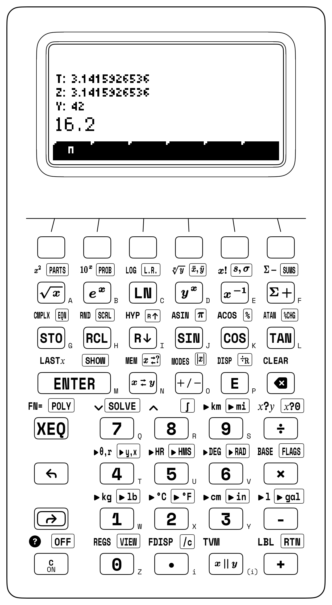
Dividing a hydraulic pump's output capacity by the combined cross-sectional area of two parallel intake manifolds (\(3.2\text{ cm}^2\) and \(4.9\text{ cm}^2\)),
requires no parentheses on the SC-32 because Registers \(Y\) and \(Z\) stage intermediate subtotals above the active register. Once the numerator \(12.4 \times 8.6 = 106.64\) is evaluated in Register \(X\), that completed subtotal is armed for stack lift. Typing the first denominator term (3.2) lifts \(106.64\) into Register \(Y\), and pressing ENTER to separate 3.2 from 4.9 shifts \(106.64\) into Register \(Z\) while the two intake areas occupy Registers \(Y\) and \(X\). When addition collapses \(3.2 + 4.9\) into \(8.1\text{ cm}^2\) in Register \(X\), the waiting numerator drops from Register \(Z\) back into Register \(Y\) so the two completed branches align for division (\(Q \approx \mathbf{13.165\text{ L/min}}\)):
| Keystroke | Register T | Register Z | Register Y | Register X | What Happens on the Stack |
|---|---|---|---|---|---|
12.4 [ENTER] 8.6 [×] |
\(0\) | \(0\) | \(0\) | \(106.64\) | Form pump output product \(12.4 \times 8.6 = 106.64\) in \(X\) |
3.2 [ENTER] 4.9 |
\(0\) | \(106.64\) | \(3.2\) | \(4.9\) | Numerator lifts to \(Z\); denominator terms occupy \(Y\) and \(X\) |
[+] |
\(0\) | \(0\) | \(106.64\) | \(8.1\) | Sum manifold area \(8.1\text{ cm}^2\) in \(X\); \(106.64\) drops into \(Y\) |
[÷] |
\(0\) | \(0\) | \(0\) | \(13.165\) | Final quotient \(106.64 / 8.1 \approx 13.165\text{ L/min}\) |
Parallel Harmonics and Electrochemical Potentials
When three electrical pathways of resistances \(R_1 = 120\,\Omega\), \(R_2 = 240\,\Omega\), and \(R_3 = 80\,\Omega\) are wired in parallel across a common voltage source, every branch experiences the same terminal voltage while the total current divides among them. Because each resistor passes current in proportion to its electrical conductance \(G_i = 1/R_i\) (measured in siemens), the conductances of the individual branches add directly to form the total conductance \(1/R_{\text{eq}}\) of the equivalent resistance \(R_{\text{eq}}\):
Adding another parallel branch always opens an extra path for current, raising total conductance \(1/R_{\text{eq}}\) and driving the net resistance \(R_{\text{eq}}\) below that of the smallest individual resistor. On a traditional RPN keypad, each resistance is inverted into a conductance with the unary reciprocal key, summed across Registers \(Y\) and \(X\), and inverted back into ohms (\(\mathbf{40\,\Omega}\)). On the SC-32, the parallel-harmonic operator (\(x \parallel y = \frac{yx}{y+x}\), defined when \(x + y \ne 0\)) condenses that reciprocal sum-and-invert sequence into an associative binary fold across the lower two registers: combining the first two branches in \(Y\) and \(X\) yields \(120 \parallel 240 = 80\,\Omega\) and arms stack lift, so entering the third resistor (\(80\,\Omega\)) pushes the two-branch subtotal into Register \(Y\) for a second parallel fold to \(80 \parallel 80 = \mathbf{40\,\Omega}\). In Gaussian thin-lens optics, where incoming wavefronts at object distance \(d_o\) are bent by a lens of optical power \(1/f\) to converge at image distance \(d_i\) (\(\frac{1}{f} = \frac{1}{d_o} + \frac{1}{d_i} \implies f = d_o \parallel d_i\)), a converging lens with \(d_o = 45\text{ cm}\) and \(d_i = 90\text{ cm}\) follows the same harmonic relation, giving focal length \(f = 45 \parallel 90 = \mathbf{30\text{ cm}}\) (\(0.3\text{ m}\), or optical power \(1/f \approx +3.333\text{ diopters}\)).
When an equation is evaluated from the innermost term outward, even multi-layer scientific formulas where the core measurement sits at the far right end of the printed line unfold in a single pass. Consider an electrochemical Daniell cell in which zinc metal oxidizes at the anode and copper ions reduce at the cathode. When both solutions sit at unit chemical activity, the cell delivers its baseline standard potential \(E^\circ = 1.1\text{ V}\). Away from standard conditions, random thermal agitation of energy \(RT\) per mole—the product of the molar gas constant \(R\) and absolute temperature \(T\)—drives dissolved ions to diffuse across concentration gradients, doing electrical work against the charge \(nF\) transferred per mole of reaction, where \(n\) is the number of electrons exchanged per formula unit and \(F\) is Faraday's charge constant (making the ratio \(RT/F \approx 25.693\text{ mV}\) at \(T = 298.15\text{ K}\) the fundamental thermal voltage of electrochemistry). Meanwhile, the chemical balance between the two half-cells is captured by the reaction quotient \(Q = a_{\text{Zn}^{2+}} / a_{\text{Cu}^{2+}}\), which compares the activity of product ions accumulating at the zinc anode against the reactant ions waiting at the copper cathode. Balancing the baseline potential \(E^\circ\) against the thermal concentration drive yields the Nernst equation for the live cell electromotive force \(E\):
Fresh reactant ions at the cathode outnumbering product ions at the anode hold the reaction quotient \(Q\) below \(1\), making \(\ln Q\) negative so that subtracting the thermal-voltage term \(\frac{RT}{nF}\ln Q\) boosts the live cell voltage \(E\) above its standard baseline \(E^\circ\). As the battery discharges and product ions accumulate (\(Q > 1\)), \(\ln Q\) turns positive and steadily drains \(E\) toward zero. At \(T = 298.15\text{ K}\) with \(n = 2\) moles of electrons transferred, dilute anode activity \(a_{\text{Zn}^{2+}} = 0.015\), and concentrated cathode activity \(a_{\text{Cu}^{2+}} = 0.85\), the cell potential becomes:
Instead of stalling after \(1.1 -\) as in left-to-right entry, evaluation on the stack starts inside the deepest parentheses with the reaction quotient \(Q = 0.015 / 0.85 \approx 0.018\). In Register \(X\), the natural logarithm transforms \(Q\) into \(\ln Q \approx -4.037\); scaling by \(RT/F \approx 2.569 \times 10^{-2}\text{ V}\) and dividing by \(n = 2\) gives the Nernst potential shift \(\approx -0.052\text{ V}\); and negating that shift before adding \(1.1\text{ V}\) yields the live cell voltage \(E \approx \mathbf{1.152\text{ V}}\).
Chapter 1: Slide Rules, Quartz Oscillators & Pocket Instrument Design
In January 1971 at Hewlett-Packard Laboratories in Palo Alto, California, company co-founders William R. Hewlett and David Packard (Whitney, Rodé & Tung, 1972) joined calculator designer Thomas Osborne and algorithmic architect David S. Cochran (Cochran, 1972) around a laboratory bench. Sitting in front of them was the HP 9100A—a forty-pound desktop electronic calculator the size of an electric typewriter, priced at \(\$4,900\), which sat in NASA mission-control rooms, nuclear physics laboratories, and university engineering departments.
Three years earlier, in 1968, the HP 9100A had been born after Osborne walked into Palo Alto carrying a floating-point prototype he had built in his spare time. Every major mechanical adding-machine company in America had rejected the prototype because it abandoned the mechanical paper-tape crank for floating-point scientific notation and Reverse Polish logic. Yet the moment Hewlett pressed its keys, he recognized the future of scientific computing, and the HP 9100A became the first desktop machine to put electronic transcendental functions at an engineer's fingertips.
Now, in 1971, Hewlett pointed to the forty-pound HP 9100A, then patted the breast pocket of his white cotton dress shirt. He and Packard issued a challenge to their Palo Alto engineers that reshaped the history of engineering:
Shrink the mathematical brain of that forty-pound desktop computer—trigonometry, logarithms, exponentials, square roots, and floating-point scientific range—into a battery-powered instrument small enough to slip inside a shirt pocket.
Before a single silicon transistor was laid out, industrial designers took a brass ruler to Hewlett's dress shirts, setting the target envelope at \(3.2 \times 5.8 \times 1\text{ inches}\) (Whitney, Rodé & Tung, 1972).
1.1 The Shirt-Pocket Challenge and the End of the Slide Rule
In 1970, every desk in an engineering classroom or aerospace drafting hall held the same analog instrument. For more than three centuries, ever since two logarithmic scales were first placed side by side so one wooden ruler could slide past the other, every suspension bridge, steam locomotive, transatlantic liner, jet turbine, and lunar trajectory had been designed with a slide rule: a slipstick of boxwood, laminated bamboo, mahogany, or engraved yellow aluminum.
When Apollo 11 descended toward the Sea of Tranquility in July 1969, Buzz Aldrin and Neil Armstrong carried a six-inch aluminum Pickett N600-ES pocket slide rule in their spacesuit pockets as their backup flight computer. Nine months later, in April 1970, when an oxygen tank exploded aboard Apollo 13 two hundred thousand miles from Earth and forced the crew to power down the Command Module's electronic guidance computer to conserve every amp-hour of battery power, flight engineers in Houston and the crew in the frigid cabin pulled out their pocket slide rules to verify the emergency engine-burn attitude and free-return trajectory around the Moon.
The slide rule was a compact logarithmic analog instrument that taught generations of engineers, chemists, and aviators to develop an instinctive feel for numbers and orders of magnitude—whether on a ten-inch desk rule in a chemical laboratory or on a circular aluminum dead-reckoning computer spun one-handed in a turbulent cockpit. Even so, analog scales suffered from two physical limitations. No matter how sharply an observer squinted through the glass hairline cursor, a ten-inch desk slide rule, and certainly a six-inch pocket rule, could only be read to three significant figures (roughly \(0.1\%\) accuracy).
On an engraved C/D scale, \(1,495\) and \(1,496\) shared the same hairline mark. Surveying a property boundary to the millimeter with a brass transit or calculating an orbital trajectory correction where the fourth and fifth digits mattered required setting the slide rule aside and opening a thick volume of seven-place trigonometric or logarithmic tables—or cranking a cylindrical mechanical stepped-drum calculator—to add columns of digits by hand.
A slide rule could neither add nor subtract, and its scales carried no record of the decimal point. Because sliding two logarithmic scales past one another adds their lengths (\(\log A + \log B = \log(A \times B)\)), the rule multiplied and divided rapidly, yet a simple sum like \(14.2 + 6.8\) in the middle of a formula required computing the addition with pencil and paper and re-entering the sum under the cursor hairline. Worse still, the logarithmic markings on a slide rule look identical for \(0.0025\), \(0.25\), \(2.5\), \(250\), and \(25,000,000\). The engineer had to track the order of magnitude mentally after every slide, where a single misplaced decimal point meant a bridge girder ten times too thin or ten times too heavy.
Many market analysts in 1971 believed Hewlett's shirt-pocket challenge was financially reckless. Contemporary market research reports warned that no engineer would pay \(\$395\)—nearly half the price of a used automobile in 1972—to replace a \(\$20\) bamboo slide rule. At the same time, the earliest pocket electronic calculators of 1970 could barely add, subtract, multiply, and divide four-function grocery totals, and their power-hungry red LED numerals drained nickel-cadmium batteries in less than an hour.
More daunting still was the silicon memory barrier. To fit logarithmic, trigonometric, exponential, and power algorithms onto three tiny 256-word read-only memory chips, totaling 768 ten-bit words of firmware, David Cochran and Thomas Osborne realized they could not spend scarce silicon transistors on an algebraic syntax parser to count open and closed parentheses ( ( ... ) ) or stack up pending operators (Cochran, 1972). Instead, they modeled the calculator on the chronological order of human calculation:
An engineer or a student builds every calculation sequentially in time.
An isobaric expansion work product \((\Delta P)\times(\Delta V) = (115 - 35)\times(4.2 - 1.7)\) worked out mentally never stalls halfway through waiting for a closing parenthesis: the pressure differential subtracts to \(115 - 35 = 80\text{ kPa}\), that intermediate value is held in working memory while the volume stroke subtracts to \(4.2 - 1.7 = 2.5\text{ L}\), and the two differences multiply to \(80 \times 2.5 = 200\text{ J}\).
Guided by Jan Łukasiewicz's parenthesis-free logic and Charles Hamblin's push-down store, Cochran, Osborne, and project manager Thomas M. Whitney built the four-register operational stack (\(X, Y, Z, T\)) (Whitney, Rodé & Tung, 1972; Cochran, 1972). Bill Hewlett bypassed the skeptical market reports, ordered production tooling on his own authority, and unveiled the 35-key HP-35 in January 1972 (beginning commercial shipments on February 1, 1972). Expecting to sell perhaps ten thousand units in the first year, Hewlett-Packard shipped over 100,000 units in year one and 300,000 before its successor arrived. Within forty-eight months, K&E and Pickett shut down their wooden and aluminum slide-rule milling lines permanently; the three-hundred-and-fifty-year reign of the logarithmic slipstick had ended in a shirt pocket.
1.1.1 Instruments Versus Gadgets: Visible Working Memory
That 1972 milestone (Cochran, 1972) and the portrait scientific instruments that followed established the physical architecture of the pocket engineering instrument. Unlike a smartphone glass screen crowded with pop-up notifications and flat virtual buttons that demand visual attention for every tap, a dedicated scientific instrument is organized around visible working memory, tactile three-plane key geometry, and instant-on non-volatile state retention. Four horizontal registers (\(T, Z, Y, X\)) remain on screen at all times on the StackCalc SC-32, relieving biological working memory from counting brackets or recording scratchpad fractions (Miller, 1956; Sweller, 1988):
| Stack Register | Display Readout | Architectural Role |
|---|---|---|
| \(T\) | 0 |
Top Register & Constant Source: Holds upper subtotals; copies its value into \(Z\) on stack drop in 4-LVL mode |
| \(Z\) | 0 |
Upper Holding Register: Stages intermediate subtotals above \(Y\) and \(X\) during two- and three-branch evaluations |
| \(Y\) | 0 |
Pending Operand Register: Holds the first operand waiting to combine with \(X\) (\(Y + X\), \(Y - X\), \(Y \times X\), \(Y \div X\)) |
| \(X\) | 0 |
Active Register: Bottom display line where digits appear as you type and where every immediate result lands |
To keep scientific functions out of nested computer menus, the 43 sculpted Shore 90A TPU keys of the StackCalc SC-32 distribute 129 operations across three physical planes: unshifted primary keys for digits, arithmetic, stack control, logarithms, trigonometry, powers, and parallel harmonics (x∥y), paired with directional Left Shift (↰) and Right Shift (↱) layers for inverse functions, coordinate projections, analytical solvers, and metric–imperial unit conversions. Touching C wakes the processor in under five milliseconds with the operational stack, named variables \(A\dots Z\), and stored equations preserved in non-volatile flash memory.
The physical geometry of a dedicated keypad also guides the hand when visual attention remains on a circuit board, a telescope, or an examination sheet (Figure 1.1). Stepped wedge keycaps feature a sloped top surface and chamfered edges so the thumb can sense column boundaries by touch. Beneath each keycap, a mechanical dome switch builds resistance up to an actuation peak of roughly \(1.6\text{ Newtons}\) (\(\approx 160\text{ grams-force}\)) before snapping downward onto gold-plated contacts, giving crisp tactile confirmation that a digit or operator has registered.
1.1.2 Ergonomic Key Placement: Why Everyday Math Belongs Under the Thumb
To fit more than a hundred mathematical functions into a shirt-pocket footprint without cluttering the faceplate requires a strict ergonomic hierarchy: an instrument designed for active reasoning should place the operations performed ninety-nine percent of the time beneath the resting thumb while grouping specialized domain solvers into contextual softkey menus.
Over the past three decades, that human-factors principle was often neglected in scientific computing. Smartphones, desktop computer terminals, and graphing calculators are well suited to writing long programs or browsing deep trees of settings. Yet when calculator manufacturers began imitating computer terminals, they swept everyday mathematical tools—absolute value, integer remainders, rounding, unit conversions, parallel impedance, and polynomial root solvers—off the physical keypad and buried them three or four layers deep inside scrolling on-screen submenus.
A nested menu tree exacts an immediate cost to concentration during a live calculation. In the middle of analyzing an AC filter network, a thermodynamic cycle, or a timed examination problem, pausing a mathematical derivation to press a menu button, tap arrow keys across three tabs, and scroll down a list of text labels just to take an absolute value or convert inches to millimeters breaks cognitive focus.
The StackCalc family was built from the opposite principle: leave long, scrolling option lists to phones and computer terminals. On a dedicated mathematical instrument, ninety-nine percent of daily work should require zero menus, and every high-frequency operation belongs on a direct, tactile keystroke that the fingers can reach by muscle memory alone.
That single design rule shapes both instruments in the StackCalc family. On the elementary StackCalc SC-6, dedicated physical keys for prime factorization, greatest common factors, integer quotient-and-remainder division, exact fraction simplification, and 2D/3D geometry let young learners explore numbers with their hands without hunting through menus. On the scientific StackCalc SC-32, that same ergonomic discipline governs the physical form factor and symbolic memory architecture.
In field and laboratory work—at an electronics bench, a surveyor's tripod, an aircraft cockpit, or a timed licensing examination—one hand is almost always occupied with a test probe, plumbing pole, yoke, or caliper. The horizontal Voyager enclosure of the HP-15C and HP-12C (HP, 1982; Evett et al., 1983) suited two-handed thumb typing or desk work; the vertical portrait footprint pioneered on the HP-35, HP-41C (Musch, Wong & Conklin, 1980; Nelson, 1974), and the Pioneer-series HP-32S and HP-32SII (HP, 1991) places the digit pad, the double-wide ENTER bar, and the arithmetic column inside the natural sweep of a single thumb.
The HP-32S (1988) and HP-32SII (1991) (HP, 1991) paired this one-handed portrait geometry with a major advance in how a pocket instrument represents variables and equations. Because earlier seven-segment numeric LCDs could not render alphabetical letters, physical constants had to be stored in numbered registers (R0 through R9) and subroutines were read back as row-column keycodes (001- 43 21 0). The HP-32S introduced 26 named variables (A–Z) that activate whenever STO or RCL is pressed, turning the register bank into self-documenting algebra (G for gravity, L for inductance, C for capacitance), and the HP-32SII added a symbolic Equation List (EQN) for execution (XEQ), root finding, and numerical integration. Building on that HP-32SII foundation, the SC-32's equation mode records formulas in postfix RPN so the exact sequence tested interactively on the four-register stack is stored as written for evaluation, root-finding, and quadrature.
On the SC-32 keypad, shifted digit keys execute in-place SI \(\leftrightarrow\) Imperial conversions and mixed-fraction rendering for shop-floor blueprints, while dedicated solvers handle quadratic and cubic polynomials (POLY), five-variable cash-flow equations (TVM), and four-register complex phasors (CMPLX).
This architecture also resolves three longstanding constraints of single-line RPN instruments. Whereas single-line LCDs showed only Register \(X\) and temporarily overwrote the top row of fixed scientific keys whenever a submenu opened, the SC-32's \(132 \times 65\) transflective display keeps all four stack registers (\(T, Z, Y, X\)) visible together above a dedicated 6-key Dynamic Softkey Row. Because EQN mode records side-effect-free postfix RPN, no key slots are wasted on (, ), and =, relational comparisons (x?0, x?y) embed inside piecewise equations, and EXAM mode locks down symbolic equations and curve plotting (PLOT) whenever standardized testing compliance is required.
1.1.3 Why a Ruler Turned on Edge Refuses to Bend
Why does a flat plastic ruler sag easily under a thumb press while the same ruler turned on edge feels completely rigid? Picture an internal structural rib inside the calculator chassis as a rectangular beam of horizontal width \(b\) and vertical thickness (depth) \(h\), bridging an unsupported span of length \(L\) between two pin supports. When a concentrated thumb force \(F\) presses down at the center of the span, the beam sags downward by a midpoint deflection \(\delta\). Inside the rib, that downward bend compresses the top fibers and stretches the bottom fibers; how strongly the material resists that stretching and compression depends on both its intrinsic atomic stiffness—measured by Young's elastic modulus \(E\)—and how far the cross-section's material sits from the neutral bending axis, captured by the rectangular area moment of inertia \(I\):
Horizontal width \(b\) enters \(I = bh^3/12\) only to the first power while vertical depth \(h\) enters cubed (\(h^3\)), because moving material twice as far above and below the neutral axis doubles both its lever arm and the strain developed across the section. Doubling the vertical depth \(h\) of an internal chassis rib or battery-bay cantilever latch therefore multiplies its geometric stiffness \(I\) eightfold (\(2^3 = 8\)). Conversely, midpoint sag \(\delta\) grows linearly with the thumb load \(F\) and with the cube of the unsupported span \(L^3\), while the flexural rigidity \(EI\) opposes the bend: doubling the gap between support ribs makes the keypad eight times softer, whereas turning a rib on edge suppresses keypad sponge with no increase in mass.
A second mechanical weak point in pocket instruments is the threaded fastener joint: steel machine screws driven directly into bare plastic bosses strip their threads after repeated battery changes. To anchor the enclosure permanently, heat-set knurled brass inserts of outer diameter \(D\) are pressed to an embedded depth \(L\) into the polymer boss. If a tensile load tries to yank the brass insert straight out of the housing, the surrounding plastic must shear along a cylindrical sleeve of diameter \(D\) and height \(L\). Unrolling that cylindrical wall flat like the paper label off a soup can reveals a rectangular shear surface of width \(\pi D\) and height \(L\), whose shear area \(A_{\text{shear}}\) multiplied by the polymer's maximum shear strength \(\tau\) (force per unit area) determines the ultimate pull-out force \(F_{\text{pull}}\):
Every factor in \(\pi D L \tau\) contributes directly to holding power: the circumference \(\pi D\) and embedment depth \(L\) set the total area \(A_{\text{shear}}\) of engaged polymer teeth, and the shear strength \(\tau\) sets how many newtons each square millimeter can bear before tearing. A small insert of diameter \(D = 2.6\text{ mm}\) and depth \(L = 4\text{ mm}\) embedded in unfilled ABS plastic (\(\tau = 30\text{ MPa} = 30\text{ N/mm}^2\)) engages \(A_{\text{shear}} = \pi(2.6)(4) \approx 32.673\text{ mm}^2\) of wall area and shears out at \(F_{\text{pull}} \approx 980\text{ N}\). Upgrading to a \(D = 3.6\text{ mm}\), \(L = 5\text{ mm}\) knurled brass insert anchored in glass-reinforced polymer (\(\tau = 42\text{ N/mm}^2\)) expands the cylindrical shear cylinder to \(A_{\text{shear}} = \pi D L \approx 56.549\text{ mm}^2\); scaling \(A_{\text{shear}}\) by \(\tau = 42\text{ N/mm}^2\) raises the ultimate pull-out force to \(F_{\text{pull}} = \pi D L \tau \approx \mathbf{2,375.044\text{ N}}\) (\(\approx 242\text{ kgf}\), more than the weight of two grown adults).
Around the perimeter, if the instrument drops from height \(h = 1.2\text{ m}\) onto a rigid concrete floor while its TPU elastomer bumper compresses over a stopping stroke \(\Delta y = 2.2\text{ mm} = 0.0022\text{ m}\), equating the pre-impact kinetic energy \(mgh\) to the stopping work \(F_{\text{avg}}\Delta y = m a_{\text{avg}}\Delta y\) cancels both mass \(m\) and gravitational acceleration \(g\): in the limit \(h \gg \Delta y\), the mean stopping deceleration in multiples of standard gravity equals the stroke ratio \(a_{\text{avg}}/g = h / \Delta y \approx \mathbf{545.455\,g}\).
Within the keypad matrix, when a thumb press snaps a gold-plated tactile dome onto its PCB contact ring, elastic rebound lasts \(t_{\text{bounce}} = 4.8\text{ ms}\). Registering the keystroke on the initial falling edge inside a \(T_{\text{lockout}} = 20\text{ ms}\) firmware refractory window provides a \(20 / 4.8 \approx \mathbf{4.167}\times\) debounce safety factor while series Schottky barrier diodes isolate every switch against three-key phantom ghosting.
On an electronics or machine-shop workbench, the open-source SC-32 chassis, dovetail service bay (Figure 1.2), and tilted desk cradle are dimensioned to mate with the Gridfinity (\(42\text{ mm} \times 42\text{ mm}\)) modular workshop grid: a \(2 \times 3\) Gridfinity baseplate footprint (\(84\text{ mm} \times 126\text{ mm}\)) seats the instrument at an ergonomic \(18^\circ\) viewing angle beside oscilloscope probes, calipers, and component bins without sliding under one-handed thumb pressure.
1.2 Spanning One Hundred Orders of Magnitude: Scientific Notation & Physical Constants
A shirt-pocket instrument meant to replace both a wooden slide rule and a four-function adding machine requires more than four arithmetic keys, because physics, chemistry, and engineering do not live solely in the everyday neighborhood between \(1\) and \(1,000\).
To reason across subatomic and astronomical scales without drowning in leading or trailing zeros, a pocket scientific instrument must separate how accurately a quantity is measured from how large or small that quantity is. When Avogadro's constant (\(N_A \approx 6.022 \times 10^{23}\text{ mol}^{-1}\)) multiplies the elementary charge (\(e \approx 1.602 \times 10^{-19}\text{ C}\)), floating-point scientific notation bridges forty-two orders of magnitude to yield Faraday's macroscopic electrolysis constant \(F = N_A e \approx 96,485.332\text{ C/mol}\).
1.2.1 Separating Shape from Scale: Mantissa and Exponent
In chemistry, a single mole of carbon-12 atoms (\(12\text{ grams}\)) contains Avogadro's number of atoms, \(602,214,076,000,000,000,000,000\). In atomic optics, a red helium-neon laser beam has a vacuum wavelength of \(0.0000006328\text{ meters}\). Writing twenty-three trailing zeros on a chalkboard or counting six leading zeros after a decimal point blurs the eye within seconds, and a single missed zero throws a bridge, orbit, or circuit off by a factor of ten.
To represent quantities spanning sixty orders of magnitude from the subatomic to the cosmological, scientific notation factors every nonzero real number \(x\) into a normalized significand and an integer power of ten:
The mantissa (or significand) \(m\) contains the meaningful measured digits, or significant figures, normalized so that a single non-zero digit sits to the left of the decimal point (\(6.022\) or \(6.328\)). The mantissa records the shape and precision of the measurement, which is the exact portion that a wooden slide rule displayed along its engraved scale. Paired with the mantissa, the integer exponent \(n\) specifies the order of magnitude, counting how many powers of ten to scale upward for \(n > 0\) or downward for \(n < 0\).
In electrical, mechanical, and optical work, powers of ten that are multiples of three (\(10^{\pm 3k}\)) match the International System of Units (SI) metric prefixes, distinguishing standard scientific notation, where \(1 \le |m| < 10\), from engineering notation, where the exponent \(n\) always locks to a multiple of \(3\). Upward from one thousand, the everyday macro prefixes step by factors of \(10^3\) through kilo (\(10^3\)), mega (\(10^6\)), giga (\(10^9\)), tera (\(10^{12}\)), and peta (\(10^{15}\)) all the way to ronna (\(10^{27}\)) and quetta (\(10^{30}\)); downward from one-thousandth, the micro prefixes step by factors of \(10^{-3}\) through milli (\(10^{-3}\)), micro (\(10^{-6}\)), nano (\(10^{-9}\)), pico (\(10^{-12}\)), and femto (\(10^{-15}\)) down to ronto (\(10^{-27}\)) and quecto (\(10^{-30}\)).
When two numbers in scientific notation are multiplied or divided, their mantissas (\(m_1, m_2\)) multiply or divide while their orders of magnitude (\(n_1, n_2\)) add or subtract:
A frequent error when entering scientific notation on a calculator is treating \(3 \times 10^8\) as two separate numbers: a number written as \(3 \times 10^8\) is one atomic value, not an arithmetic multiplication problem between \(3\) and \(10^8\). Take the transit time required for a laser pulse traveling at \(c = 3 \times 10^8\text{ m/s}\) to cross a \(d = 1.5\text{ m}\) optical bench (\(t = 1.5 / (3 \times 10^8)\)). If a student using an ordinary calculator enters 1.5 ÷ 3 × 10 ^ 8 as separate arithmetic operations, the calculator divides \(1.5\) by \(3\) first to get \(0.5\) and then multiplies that quotient by \(10^8\). Instead of \(5 \times 10^{-9}\text{ seconds}\) (five nanoseconds), the screen returns \(50,000,000\text{ seconds}\), or nineteen months: an error of sixteen orders of magnitude (\(10^{16}\)).
Scientific instruments prevent this precedence trap by providing a dedicated exponent-entry mechanism that binds the scale factor \(10^n\) to the mantissa inside the numeric entry buffer without issuing an arithmetic multiplication command, so the entire quantity moves through the calculation as a single atomic value. A direct corollary governs pure powers of ten: because the exponent field already represents "\(\times 10^n\)", a pure power of ten like \(10^{-7}\text{ F}\) (\(1 \times 10^{-7}\text{ F}\)) or \(10^6\text{ Hz}\) (\(1 \times 10^6\text{ Hz}\)) carries a leading mantissa of \(1\); pairing a mantissa of \(10\) with an exponent of \(6\) produces \(10 \times 10^6 = 10^7\), a tenfold order-of-magnitude error.
How a number is formatted on the screen—whether rounded to fixed decimal places, normalized in scientific notation, or grouped in engineering powers of three—never truncates or rounds the underlying value in memory, where every stack register (\(X, Y, Z, T\)) and named variable (\(A\dots Z\)) retains full IEEE 754 double precision (\(53\text{ bits}\) of binary significand, or roughly \(15\) to \(17\) decimal digits). In laboratory calibration, however, an engineer working with two or three visible decimals often needs to inspect the unrounded internal mantissa to verify whether two nearly equal bridge measurements differ in the twelfth decimal place. A momentary full-mantissa inspection view solves this by revealing all internal digits of Register \(X\) on demand without altering the active display format.
Alongside the BIPM powers of ten, international metrology standards fix the conversion factors between customary Imperial measurements and SI units without experimental uncertainty: exact inch-to-centimeter length (\(1\text{ in} \equiv 2.54\text{ cm}\) and \(1\text{ ft} \equiv 0.3048\text{ m}\)), statute and nautical miles (\(1\text{ mi} \approx 1.609\text{ km}\) and \(1\text{ nmi} \equiv 1,852\text{ m}\)), avoirdupois mass (\(1\text{ lb} \approx 0.454\text{ kg}\)), U.S. liquid volume (\(1\text{ gal} \equiv 231\text{ in}^3 \approx 3.785\text{ L}\)), standard atmospheric pressure (\(1\text{ atm} \equiv 101,325\text{ Pa}\)), thermochemical energy (\(1\text{ cal}_{\text{th}} \equiv 4.184\text{ J}\)), affine Fahrenheit-to-Celsius temperature (\(T_{\text{C}} = (T_{\text{F}} - 32) \times \frac{5}{9}\)), and sexagesimal-to-decimal time or angle (\(H + \frac{M}{60} + \frac{S}{3600}\)). Because a square inch equals \((2.54\text{ cm})^2 \approx 6.452\text{ cm}^2\) and a cubic inch equals \((2.54\text{ cm})^3 \approx 16.387\text{ cm}^3\), scaling a cross-sectional area twice or an engine displacement three times in succession by the linear factor \(2.54\) converts \(\text{in}^2 \leftrightarrow \text{cm}^2\) and \(\text{in}^3 \leftrightarrow \text{cm}^3\) without memorizing separate area or volume constants.
1.2.2 Why Every Digital Watch Vibrates 32,768 Times a Second
Beyond representing microscopic and astronomical numbers, a pocket scientific instrument must also measure physical time without the temperature drift of a mechanical balance wheel. That timebase comes from piezoelectricity inside crystalline \(\alpha\)-quartz (\(\text{SiO}_2\), silicon dioxide). When a quartz crystal is compressed or sheared mechanically, the positive silicon ions and negative oxygen ions in its non-centrosymmetric trigonal lattice shift slightly apart and generate an electrical potential across its faces; under the converse piezoelectric effect, applying an alternating voltage across metal electrodes plated onto the quartz wafer causes the crystal to expand, contract, and flex like a microscopic tuning fork.
Because a single crystal of quartz is an almost perfectly elastic atomic lattice with near-zero internal friction in a vacuum, a laser-trimmed quartz tuning fork just four millimeters long rings thousands of times longer than a steel tuning fork. The specification sheet for almost any digital wristwatch, spacecraft timer, or the real-time clock inside the SC-32 lists a characteristic vibration frequency:
Electrical engineers chose \(32,768\) vibrations per second rather than a round decimal frequency such as \(10,000\text{ Hz}\) or \(50,000\text{ Hz}\) for a binary reason. Because frequency \(f\) (in hertz, cycles per second) and period \(T\) (in seconds per cycle) are exact reciprocals (\(T = 1/f\)), each single swing of a \(32,768\text{ Hz}\) quartz tuning fork takes \(T = 1 / 32,768\text{ Hz} \approx 30.518\text{ microseconds}\). In binary CMOS electronics, the simplest frequency-dividing element is a toggle flip-flop, a bistable sequential circuit that changes state on every rising (or falling) clock edge and divides the incoming frequency in half (\(\div 2\)). Chaining fifteen divide-by-two flip-flops in series halves the frequency at every stage:
Because \(2^{15} = 32,768\), fifteen ultra-low-power halving stages reduce \(32,768\text{ Hz}\) down to \(1\text{ Hz}\) without a single decimal comparator. The choice of \(2^{15} = 32,768\text{ Hz}\) over \(2^{14} = 16,384\text{ Hz}\) follows from the upper limit of human hearing near \(20,000\text{ Hz}\): a \(16,384\text{ Hz}\) crystal would emit a faint, high-pitched whine near the ear, while \(32,768\text{ Hz}\) is the first ultrasonic, inaudible power of two.
While a \(32,768\text{ Hz}\) tuning-fork crystal keeps human calendar time during deep sleep on nanoamperes of current, waking the processor to compute a Romberg definite integral or a closed-form cubic root sweep in milliseconds requires a much faster heartbeat: a \(12\text{ MHz}\) (\(1.2 \times 10^7\text{ Hz}\)) Pierce quartz crystal oscillator, whose period is \(T = 1 / (1.2 \times 10^7\text{ Hz}) \approx 83.333\text{ nanoseconds}\).
Just as adding a small calibration weight to a pendulum bob fine-tunes its oscillation rate, a Pierce quartz wafer requires a specific effective load capacitance \(C_L\) across its terminals to resonate at its nominal factory frequency. On the circuit board, two symmetric ceramic capacitors (\(C_1 = C_2 = C\)) sit at the input and output pins of the crystal, wired in series with each other through the ground plane to form a series branch capacitance \(C_{\text{series}}\), while the copper PCB traces and amplifier pins contribute an unavoidable parallel stray capacitance \(C_{\text{stray}}\). Because two equal capacitors in series trap the same charge across twice the dielectric gap, their combined series capacitance is \(C/2\), which adds in parallel with \(C_{\text{stray}}\) to supply the crystal's total load capacitance \(C_L\):
Subtracting the board's unavoidable stray capacitance \(C_{\text{stray}}\) from the crystal's target load \(C_L\) leaves the net series capacitance that the external network must provide, and doubling that difference compensates for the series halving across the two symmetric pins. For the \(12\text{ MHz}\) Pierce quartz crystal to resonate at its calibrated factory frequency with \(C_L = 18\text{ pF}\) and PCB stray capacitance \(C_{\text{stray}} = 3.5\text{ pF}\), the external network must supply \(18 - 3.5 = 14.5\text{ pF}\) in series, specifying \(C = 2(14.5) = \mathbf{29}\text{ pF}\) per external load capacitor.
Temperature changes also tug on the elastic stiffness of quartz, shifting an oscillator's live frequency away from its calibrated nominal frequency \(f_0\) by a fractional frequency drift \(\Delta f / f_0\) as the operating temperature \(T\) departs from the reference turnover or inflection temperature \(T_0 = 25^\circ\text{C}\). How the crystal responds to temperature depends on the angle at which the wafer is sawed from the raw quartz boule. A miniature \(32,768\text{ Hz}\) tuning-fork real-time clock crystal is cut so its frequency peaks at \(T_0 = 25^\circ\text{C}\) and bends downward with parabolic curvature constant \(k_2 = 0.035\text{ ppm/K}^2\) (\(0.035 \times 10^{-6}\text{ K}^{-2}\)). By contrast, slicing a high-frequency quartz boule along a plane inclined at \(35^\circ 15'\) to the optical \(Z\)-axis—the AT-cut orientation—cancels both the linear and quadratic temperature slopes at the inflection temperature \(T_0 = 25^\circ\text{C}\), leaving only a gentle third-order cubic curvature constant \(k\):
Squaring the temperature departure \((T - T_0)\) in the tuning-fork response makes \((T - T_0)^2\) positive on both sides of \(25^\circ\text{C}\), so the leading minus sign causes a wristwatch or real-time clock crystal to slow down and lose time whether it is warmed above \(25^\circ\text{C}\) or chilled below \(25^\circ\text{C}\). The AT-cut's cubic dependence \((T - T_0)^3\), by contrast, creates a wide, flat plateau around room temperature while preserving the sign of \((T - T_0)\), drifting slightly fast in extreme heat and slightly slow in deep cold. When that \(12\text{ MHz}\) AT-cut wafer cools from \(T_0 = 25^\circ\text{C}\) to a \(T = -15^\circ\text{C}\) winter field site (\(\Delta T = T - T_0 = -40\text{ K}\), cubic coefficient \(k = 0.035 \times 10^{-9}\text{ K}^{-3}\)), the cubic excursion \((-40\text{ K})^3 = -64,000\text{ K}^3\) produces a fractional shift of \(\Delta f / f_0 = \mathbf{-2.24 \times 10^{-6}}\) (\(-2.24\text{ ppm}\)), or \(\Delta f = \mathbf{-26.88\text{ Hz}}\) on the \(12\text{ MHz}\) carrier (\(\approx -0.194\text{ s/day}\)).
Beside the processor's power pins sit ceramic bypass capacitors of capacitance \(C\) that shunt high-frequency transistor switching noise to ground. Every surface-mount capacitor has metal end-caps and internal plates that form a small current loop with equivalent series inductance \(L_{\text{ESL}}\), whose inductive reactance \(X_L = 2\pi f L_{\text{ESL}}\) grows linearly with frequency \(f\) while capacitive reactance \(X_C = \frac{1}{2\pi f C}\) drops hyperbolically. At the exact crossover frequency where \(X_C = X_L\), the opposing electric and magnetic reactances cancel to zero and the capacitor reaches its self-resonant frequency \(f_{\text{SRF}}\):
Shrinking either the package loop inductance \(L_{\text{ESL}}\) or the capacitance \(C\) shortens the electromagnetic sloshing time \(\sqrt{L_{\text{ESL}}C}\) and pushes the self-resonant crossover \(f_{\text{SRF}}\) to a higher frequency, above which parasitic inductance dominates and the component begins behaving like an inductor rather than a capacitor. For a \(C = 100\text{ nF}\) (\(10^{-7}\text{ F}\)) decoupling capacitor with package inductance \(L_{\text{ESL}} = 0.85\text{ nH}\) (\(8.5 \times 10^{-10}\text{ H}\)), the characteristic time \(\sqrt{L_{\text{ESL}}C} \approx 9.22\text{ ns}\) sets the self-resonant crossover at \(f_{\text{SRF}} \approx \mathbf{17.263\text{ MHz}}\).
1.2.3 Fixing the Constants of Nature: The 2019 SI Redefinition
Quantum mechanics, relativity, and statistical physics regularly combine quantities separated by more than fifty orders of magnitude inside a single equation. At the subatomic boundary sit Planck's action quantum \(h \sim 10^{-34}\text{ J}\cdot\text{s}\) and the electron rest mass \(m_e \sim 10^{-30}\text{ kg}\); at the relativistic horizon sit the squared vacuum speed of light \(c^2 \sim 10^{17}\text{ m}^2/\text{s}^2\) and Avogadro's molar count \(N_A \sim 10^{23}\text{ mol}^{-1}\). On any fixed-point mechanical calculator or integer register, multiplying or dividing across fifty powers of ten underflows to zero or overflows the carriage. Only by separating the 53-bit IEEE 754 significand from its signed base-10 exponent can a pocket instrument hold Planck's constant and the squared speed of light side by side without losing a single significant figure.
Under the 2019 SI Redefinition, the defining constants of the system (\(c = 299,792,458\text{ m/s}\), Planck's constant \(h \approx 6.626 \times 10^{-34}\text{ J}\cdot\text{s}\), the elementary charge \(e \approx 1.602 \times 10^{-19}\text{ C}\), Boltzmann's constant \(k_B \approx 1.381 \times 10^{-23}\text{ J/K}\), and Avogadro's constant \(N_A \approx 6.022 \times 10^{23}\text{ mol}^{-1}\)) are fixed as exact numerical invariants with zero measurement uncertainty, which in turn fixes exact values for derived combinations, including the molar gas constant (\(R = N_A k_B \approx 8.314\text{ J/(mol}\cdot\text{K)}\)) and the Stefan–Boltzmann constant (\(\sigma = \frac{2\pi^5 k_B^4}{15 c^2 h^3} \approx 5.67 \times 10^{-8}\text{ W/(m}^2\cdot\text{K}^4)\)). Alongside these invariants stand the experimentally measured constants—the Newtonian gravitational constant (\(G \approx 6.674 \times 10^{-11}\text{ N}\cdot\text{m}^2/\text{kg}^2\)), vacuum permittivity (\(\varepsilon_0 \approx 8.854 \times 10^{-12}\text{ F/m}\)), and vacuum permeability (\(\mu_0 \approx 1.257 \times 10^{-6}\text{ N/A}^2\))—and the fundamental mathematical constants \(\pi \approx 3.142\) (π) and the natural base \(e \approx 2.718\).
Across optics, atomic physics, relativistic mechanics, and nuclear decay, these invariants bridge the wave and particle worlds. In quantum optics, a beam of light of vacuum wavelength \(\lambda\) and oscillation frequency \(\nu = c/\lambda\) delivers its energy not as a continuous wash, but in discrete quanta of photon energy \(E_{\text{photon}} = h\nu\). Conversely, Louis de Broglie showed that any massive particle of mass \(m\) traveling at velocity \(v\)—carrying linear momentum \(p = mv\)—propagates with an intrinsic matter-wave wavelength \(\lambda_{\text{deB}}\):
Halving the optical wavelength \(\lambda\) packs twice as much energy into each quantum of light through the universal scale factor \(hc \approx 1.986 \times 10^{-25}\text{ J}\cdot\text{m}\). At the green solar peak (\(\lambda = 500 \times 10^{-9}\text{ m}\)), a single photon carries \(E_{\text{photon}} \approx 3.973 \times 10^{-19}\text{ J}\), or \(\approx \mathbf{2.48\text{ eV}}\) after dividing by the electron-volt conversion factor \(e \approx 1.602 \times 10^{-19}\text{ J/eV}\)—which is why one short-wavelength ultraviolet or X-ray photon can eject a bound inner-shell electron that no flood of long-wavelength infrared photons can dislodge.
Accelerating a massive particle to higher momentum \(p = mv\) similarly compresses its matter wave \(\lambda_{\text{deB}} = h/(mv)\) into a tighter spatial period (with the Compton wavelength \(\lambda_C = h / (m_e c) \approx 2.426 \times 10^{-12}\text{ m}\) marking the scale where photon momentum equals \(m_e c\)). An electron (\(m_e \approx 9.109 \times 10^{-31}\text{ kg}\)) accelerated down an electron-microscope column to \(v = 2 \times 10^6\text{ m/s}\) has specific quantum diffusivity \(h/m_e \approx 7.274 \times 10^{-4}\text{ m}^2/\text{s}\) and a de Broglie wavelength of \(\lambda_{\text{deB}} \approx 3.637 \times 10^{-10}\text{ m}\) (\(\approx \mathbf{0.364\text{ nm}}\)), fine enough to resolve individual crystal lattices.
Inside an atom, those electron matter waves wrap around the nucleus as standing waves, restricting bound electrons to discrete principal quantum shells indexed by integers \(n_1 < n_2\). Because the binding energy of the \(n\)-th Bohr shell scales inversely with the square of its shell number (\(1/n^2\)), an electron dropping from an outer shell \(n_2\) down to an inner shell \(n_1\) radiates a photon whose spectral wavenumber \(1/\lambda\) (waves per meter) is governed by the Rydberg constant \(R_\infty \approx 1.097 \times 10^7\text{ m}^{-1}\):
Each quantum jump from an outer orbit \(n_2\) down to an inner orbit \(n_1\) releases a fraction \(\frac{1}{n_1^2} - \frac{1}{n_2^2}\) of hydrogen's ground-state ionization energy, and scaling that dimensionless step by \(R_\infty\) fixes the radiated wavenumber \(1/\lambda\). For the solar Balmer \(H_\alpha\) transition (\(n_2 = 3 \to n_1 = 2\), where \(1/2^2 - 1/3^2 = 5/36 \approx 0.139\)), the wavenumber \(\approx 1.524 \times 10^6\text{ m}^{-1}\) evaluated in the infinite-nuclear-mass Rydberg limit (\(R_\infty \approx 10,973,731.568\text{ m}^{-1}\)) inverts to the deep-red vacuum wavelength \(\lambda \approx \mathbf{656.112\text{ nm}}\) (or \(\approx 656.335\text{ nm}\) from the three-decimal approximation \(1.097 \times 10^7\text{ m}^{-1}\)).
At the opposite end of the velocity and energy spectrum, relativistic kinematics unifies a particle's rest mass \(m\), velocity \(v\), momentum \(p\), and total energy \(E\) through the spacetime invariant \(E^2 = (pc)^2 + (mc^2)^2\). For a mass at rest (\(p = 0\)), total energy reduces to the rest energy \(E = mc^2\); for a particle accelerated to a large fraction \(\beta = v/c\) of the speed of light, its classical momentum \(mv\) is amplified by the dimensionless Lorentz factor \(\gamma = 1/\sqrt{1 - (v/c)^2}\):
Because the squared speed of light \(c^2 \approx 8.988 \times 10^{16}\text{ J/kg}\) multiplies rest mass by nearly ninety quadrillion joules per kilogram, a nuclear fission or fusion reaction that converts a \(1\text{ gram}\) (\(10^{-3}\text{ kg}\)) mass defect into kinetic and radiative energy releases \(E = mc^2 \approx 8.988 \times 10^{13}\text{ J}\) (\(\approx \mathbf{89.876\text{ TJ}}\)). Meanwhile, as a particle's speed \(v\) approaches \(c\), the ratio \(v/c\) nears unity and the radical \(\sqrt{1-(v/c)^2}\) shrinks toward zero, driving the Lorentz factor \(\gamma\) and momentum \(p = \gamma mv\) upward without bound so no finite force can accelerate a massive particle past light speed. Accelerating a synchrotron proton (\(m_p \approx 1.673 \times 10^{-27}\text{ kg}\)) to \(v = 0.85c \approx 2.548 \times 10^8\text{ m/s}\) (\(\beta = 0.85\)) contracts \(\sqrt{1 - 0.85^2}\) to \(\approx 0.527\) (\(\gamma \approx 1.898\)), raising its effective inertia to \(\gamma m_p \approx 3.175 \times 10^{-27}\text{ kg}\) and its relativistic momentum to \(p = \gamma m_p v \approx \mathbf{8.091 \times 10^{-19}\text{ kg}\cdot\text{m/s}}\)—which fixes the magnetic dipole rigidity \(B\rho = p/e\), the product of magnetic field strength \(B\) and bending radius \(\rho\) needed to guide a unit charge \(e\) around the storage ring.
Inside unstable atomic nuclei, random quantum tunneling triggers radioactive decay at a constant fractional decay rate \(\lambda_{\text{dec}} = \ln(2)/t_{1/2}\) (distinct from optical wavelength \(\lambda\)), where the half-life \(t_{1/2}\) is the time required for half of an initial population of \(N_0\) nuclei (or initial radioactive activity \(A_0 = \lambda_{\text{dec}} N_0\)) to transform into daughter nuclei. Over an elapsed time \(t\), the surviving population \(N(t)\)—and its proportional activity \(A(t)\)—follows continuous exponential or base-\(1/2\) decay:
Every elapsed half-life increments the dimensionless ratio \(t / t_{1/2}\) by \(1\) and cuts the surviving population \(N(t)\) and activity \(A(t)\) in half. After \(t = 15\text{ yr}\), a Cobalt-60 beta-decay teletherapy source of initial activity \(A_0 = 10,000\text{ Bq}\) and half-life \(t_{1/2} = 5.27\text{ yr}\) has passed through \(t/t_{1/2} = 15/5.27 \approx 2.846\) half-lives, retaining \(A(15\text{ yr}) = 10,000 \times (1/2)^{15/5.27} \approx \mathbf{1,390.524\text{ Bq}}\).
1.3 Reflecting the Sun and Nursing a Coin Cell
Whereas early red-LED pocket calculators drained their rechargeable batteries in forty-five minutes and washed out in direct sunlight, a transflective instrument operates for months or years on a single lithium coin cell. Three keypad mechanisms on the SC-32 link unit conversions, scientific notation, and display formatting to the four-register stack (T, Z, Y, X):
- In-Place SI \(\leftrightarrow\) Imperial Unit Conversions: Ten physical unit conversions sit on the lower keypad—Left Shift
[↰]always converts into Metric ([↰] [▸kg]on1,[↰] [▸°C]on2,[↰] [▸cm]on3,[↰] [▸l]on-,[↰] [▸km]on9, and[↰] [▸DEG]on6), while Right Shift[↱]always converts into Imperial/Radians ([↱] [▸lb]on1,[↱] [▸°F]on2,[↱] [▸in]on3,[↱] [▸gal]on-,[↱] [▸mi]on9, and[↱] [▸RAD]on6). Every conversion transforms Register \(X\) in place and arms automatic stack lift so the next number typed pushes the converted figure up into Registers \(Y, Z,\) and \(T\). Applying a linear conversion twice in succession ([↰] [▸cm] [↰] [▸cm]or[↱] [▸in] [↱] [▸in]) converts cross-sectional area (\(\text{in}^2 \leftrightarrow \text{cm}^2\)), and applying it three times ([↰] [▸cm] [↰] [▸cm] [↰] [▸cm]) converts cubic displacement (\(\text{in}^3 \leftrightarrow \text{cm}^3\)) in place. - Scientific Exponent Entry (
[E]), Euclidean Remainder ([↱] [÷R]), Display Formatting ([↰] [DISP]), & Full-Mantissa Inspection ([↱] [SHOW]): The[E]key binds base-10 exponents inside the entry buffer (8 [E] 6enters \(8 \times 10^6\), and1 [E] 7 [+/-]enters \(10^{-7}\)), while right-shifted[↱] [÷R]on[E]divides Register \(Y\) by Register \(X\) into an integer quotient in \(X\) and remainder in \(Y\). Left-shifted[↰] [DISP]on[E]populates the softkey strip with: $\(\mathtt{[FIX]} \quad \mathtt{[SCI]} \quad \mathtt{[ENG]} \quad \mathtt{[ALL]}\)$ By default,ALLdisplays numbers in clean general form with trailing zeros suppressed; tappingFIX,SCI, orENGpromptsFIX _(orSCI _,ENG _) for a digit0–9to format the LCD without altering the full 64-bit value in the registers, while pressing[↱] [SHOW](right-shifted on[ENTER]) reveals the full unrounded 53-bit internal significand of Register \(X\) (or both parts of a complex number when preceded by[↰] [CMPLX]) without changing the active[↰] [DISP]mode. - Graduated Clearing (
[<-],[C],[↰] [CLEAR]) & On-Device Guidance ([↰] [?]): Unshifted[<-]backspaces live digit entry (or zeroes Register \(X\) once a calculation is complete). Left-shifted[↰] [CLEAR]on[<-]opens \(\mathtt{[CLEQN]} \;\; \mathtt{[CLVARS]} \;\; \mathtt{[CLALL]} \;\; \mathtt{[CLSTAT]} \;\; \mathtt{[CLREGS]} \;\; \mathtt{[CLSTK]}\) to clear equations, variables, statistical sums, storage registers, or the four-level stack independently, and left-shifted[↰] [?]on[C]launches the built-in interactive tutorial on the LCD.
1.3.1 Pre-Flight Manifests and Sunlight-Reflective Glass
On a hot ramp (\(86^\circ\text{F}\)), a bush pilot who loads \(52\text{ US gallons}\) of 100LL avgas (at the standard FAA nominal weight of \(6\text{ lb/gal}\)) can record the metric fuel mass, metric fuel volume, Celsius outside air temperature, and a \(25.4\text{ cm}\) propeller-tip ground clearance in inches across the four stack lines without clearing a single intermediate result. Multiplying \(52 \times 6 = 312\text{ lb}\) and converting pounds to kilograms transforms Register \(X\) in place to \(\approx \mathbf{141.521\text{ kg}}\) while arming stack lift; keying \(52\) and converting gallons to liters lifts the fuel mass into Register \(Y\) and places \(\approx \mathbf{196.841\text{ L}}\) in Register \(X\); keying \(86\) and converting Fahrenheit to Celsius lifts both fuel figures upward and places \(\mathbf{30^\circ\text{C}}\) in Register \(X\); and keying \(25.4\) and converting centimeters to inches lifts all three prior figures and places \(\mathbf{10\text{ in}}\) in Register \(X\), so all four pre-flight numbers (\(\approx 141.521\text{ kg}\) in \(T\), \(\approx 196.841\text{ L}\) in \(Z\), \(30^\circ\text{C}\) in \(Y\), and \(10\text{ in}\) in \(X\)) remain visible together on the display.
The transflective liquid-crystal display (LCD) that renders those four registers in direct noon sunlight harvests ambient light instead of fighting it with high-power emission. Whereas an emissive smartphone screen must overcome \(100,000\text{-lux}\) sky irradiance with hundreds of milliwatts of backlight power, a transflective panel reflects incident sunlight off a brushed metallic backing behind twisted-nematic liquid-crystal molecules, sharpening in brighter sunlight while drawing a fraction of a milliwatt. Streaming a full \(132 \times 65\) frame buffer (\(N_{\text{cmd}} = 9\) command bytes plus \(N_{\text{col}} = 1,056\) pixel-column bytes, or \(1,065\text{ bytes} = 8,520\text{ bits}\)) over an \(f_{\text{SPI}} = 8 \times 10^6\text{ bits/s}\) serial bus takes just \(8,520 / (8 \times 10^6) = \mathbf{1.065\text{ ms}}\), allowing the display bus to sleep for \(\approx 99.89\%\) of every second. And because liquid-crystal molecules stiffen as ambient temperature \(T\) drops and their rotational viscosity \(\gamma_1(T)\) thickens like cold honey, a fixed drive voltage would leave outdoor winter digits sluggish and faded. To keep contrast crisp across all weather, the on-chip charge pump adjusts the live LCD bias voltage \(V(T)\) around its room-temperature reference voltage \(V_0 = 9\text{ V}\) (at \(T_0 = 25^\circ\text{C}\)) using a negative linear temperature slope \(\frac{dV}{dT} = -12.5\text{ mV/}^\circ\text{C}\) (\(\approx -0.013\text{ V/}^\circ\text{C}\)):
Because both the slope \(\frac{dV}{dT}\) and the cold temperature excursion \((T - T_0)\) are negative below \(25^\circ\text{C}\), their product \(\frac{dV}{dT}(T - T_0)\) is positive, automatically boosting the electric field when the fluid is stiff and relaxing it when the fluid is warm. In freezing air (\(T = 0^\circ\text{C}\), \(\Delta T = T - T_0 = -25^\circ\text{C}\)), that linear offset raises the LCD bias rail by \((-12.5\text{ mV/}^\circ\text{C})(-25^\circ\text{C}) = +312.5\text{ mV} \approx +0.313\text{ V}\) to \(V(0^\circ\text{C}) \approx \mathbf{9.313}\text{ V}\) so numerals neither ghost nor fade outdoors.
1.3.2 Laser-Foamed Legends and the Thévenin Coin Cell
Around that reflective glass, the dark matte polymer shell is compounded with carbon-black pigment so stray sunlight and near-infrared radiation cannot penetrate the walls and scatter across the optical cavity. When a beam of incident intensity \(I_0\) enters the plastic, radiation attenuates exponentially with depth \(z\) because each uniform layer absorbs the same fraction of the photons reaching it: if the first layer absorbs half of the incoming flux, the next layer of equal thickness absorbs half of the remainder, reducing the transmitted intensity \(I(z)\) to one-quarter and then one-eighth. Integrating the differential loss \(dI/dz = -\alpha I\) across the material's linear absorption coefficient \(\alpha\) yields the Beer–Lambert attenuation law for \(I(z)\), which inverts via the natural logarithm to give the penetration depth \(z\) where intensity falls to a fraction \(I/I_0\). During manufacturing, this shallow optical skin is exploited to mark permanent, wear-proof keycap legends without ink: a Q-switched fiber laser operating at average power \(P_{\text{avg}}\) chops its beam at pulse repetition frequency \(f_{\text{rep}}\) into discrete packets of pulse energy \(E_{\text{pulse}}\), compresses each packet into a brief pulse duration \(\tau\) to reach an intense peak power \(P_{\text{peak}}\), and focuses that energy onto a circular spot of radius \(r\) (area \(\pi r^2\)) to deliver a foaming surface fluence \(F\) (energy per unit area):
High pigment absorption \(\alpha\) confines the transmitted fraction \(I/I_0 < 1\) (where \(-\ln(I/I_0) > 0\)) to a shallow surface skin \(z\), preventing heat from penetrating and warping the keycap core. Although each pulse carries only a tiny energy packet \(E_{\text{pulse}} = P_{\text{avg}}/f_{\text{rep}}\), releasing that packet across a nanosecond Q-switched window \(\tau\) drives instantaneous peak power \(P_{\text{peak}} = E_{\text{pulse}}/\tau\) to hundreds of watts, and focusing the beam onto a microscopic disk of area \(\pi r^2\) reaches the threshold fluence \(F\) needed to nucleate permanent micro-foam legends.
For a \(90\%\) near-infrared attenuation target (\(I/I_0 = 0.1\)) in a pigment-loaded polymer of absorption coefficient \(\alpha = 450\text{ cm}^{-1}\), the Beer–Lambert ratio \(-\ln(0.1)/450 \approx 5.117 \times 10^{-3}\text{ cm}\) confines absorption to the top \(z \approx \mathbf{51.169}\,\mu\text{m}\) skin. Chopping \(P_{\text{avg}} = 1.2\text{ W}\) of average laser power at \(f_{\text{rep}} = 35,000\text{ Hz}\) produces \(E_{\text{pulse}} = 1.2 / 35,000 \approx 3.43 \times 10^{-5}\text{ J}\) (\(\approx 34.286\,\mu\text{J}\)) per packet, and compressing that packet into \(\tau = 10^{-7}\text{ s}\) (\(100\text{ ns}\)) amplifies peak power nearly 300-fold to \(P_{\text{peak}} \approx \mathbf{342.857}\text{ W}\). Across a focal spot of radius \(r = 0.00225\text{ cm}\), the foaming fluence \(F = E_{\text{pulse}} / (\pi r^2)\) evaluates as a two-branch quotient: once \(z \approx 51.169\,\mu\text{m}\) is complete in Register \(X\), starting \(E_{\text{pulse}} = 1.2 / 35,000 \approx 3.43 \times 10^{-5}\text{ J}\) lifts \(z\) into the upper registers, and \(E_{\text{pulse}}\) waits in Register \(Y\) while the spot area \(A = \pi r^2 \approx 1.59 \times 10^{-5}\text{ cm}^2\) forms in Register \(X\) before division yields \(F \approx \mathbf{2.156\text{ J/cm}^2}\) inside that \(51\,\mu\text{m}\) skin.
That same two-branch pattern, where a completed numerator waits in Register \(Z\) while a denominator forms across Registers \(Y\) and \(X\), governs the electrochemical telemetry of the CR2032 lithium-manganese-dioxide (\(\text{Li/MnO}_2\)) coin cell (\(3\text{ V}\) nominal open-circuit electromotive force \(\mathcal{E}\), \(225\text{ mAh}\) capacity) and the copper printed-circuit-board traces that distribute its power. No real battery is an ideal voltage source: as load current \(I\) flows through the cell's finite ion-diffusion pathways, modeled as an equivalent series internal resistance \(R_{\text{int}}\), some electrical potential is lost inside the cell before reaching the external contacts, leaving a reduced terminal voltage \(V_{\text{term}}(I)\). Similarly, when that current travels along a rectangular copper PCB trace of electrical resistivity \(\rho\), length \(L\), width \(w\), and thickness \(t\), electron scattering imposes an ohmic trace resistance \(R\):
Internal electrolyte resistance drops the cell's terminal voltage by \(I R_{\text{int}}\) before power ever reaches the contacts, causing \(V_{\text{term}}\) to sag linearly with current draw \(I\). Comparing the voltage droop \(V_1 - V_2\) against the current step \(I_2 - I_1\) between two live operating states isolates \(R_{\text{int}}\) directly without disconnecting the cell to measure \(\mathcal{E}\), while widening a copper PCB trace of cross-sectional area \(wt\) reduces its series path resistance \(R = \rho L/(wt)\) downstream.
Across an idle display refresh (\(I_1 = 0.0048\text{ A}\), \(V_1 = 2.94\text{ V}\)) and a high-current numerical solver burst (\(I_2 = 0.0182\text{ A}\), \(V_2 = 2.685\text{ V}\)), the voltage droop \(\Delta V = 2.94 - 2.685 = 0.255\text{ V}\) waits in Register \(Z\) while the current step \(\Delta I = 0.0182 - 0.0048 = 0.0134\text{ A}\) forms across Registers \(Y\) and \(X\), dividing to a dynamic internal resistance of \(R_{\text{int}} \approx \mathbf{19.03\,\Omega}\) and internal cell heating \(I_2^2 R_{\text{int}} \approx \mathbf{6.303\text{ mW}}\). By comparison, the 1-oz copper PCB power trace delivering that current (\(\rho = 1.68 \times 10^{-5}\,\Omega\cdot\text{mm}\), length \(L = 45\text{ mm}\), width \(w = 0.25\text{ mm}\), thickness \(t = 0.035\text{ mm}\)) has an ohmic resistance of \(R = \rho L/(wt) \approx 0.086\,\Omega\) and dissipates \(I_2^2 R \approx \mathbf{28.619\,\mu\text{W}}\).
Over an accelerated 24-hour factory stress schedule—\(0.5\text{ h}\) of solver bursts at \(18.2\text{ mA}\) (\(9.1\text{ mAh}\)), \(1.5\text{ h}\) of key entry at \(4.8\text{ mA}\) (\(7.2\text{ mAh}\)), \(2\text{ h}\) of active standby at \(0.85\text{ mA}\) (\(1.7\text{ mAh}\)), and \(20\text{ h}\) of deep sleep at \(0.0118\text{ mA}\) (\(0.236\text{ mAh}\))—daily charge draw sums to \(Q_{\text{daily}} = 18.236\text{ mAh/day}\), giving \(225 / 18.236 \approx \mathbf{12.338\text{ days}}\) under continuous stress testing.
Whenever a fresh coin cell first touches the battery contacts, mechanical contact bounce causes the supply rail to sputter for several milliseconds. To prevent the microcontroller from booting before the supply rail stabilizes, an external RC power-on reset (POR) supervisor—composed of a pull-up resistor \(R = 100\text{ k}\Omega = 100,000\,\Omega\) and timing capacitor \(C = 0.1\,\mu\text{F} = 10^{-7}\text{ F}\) with characteristic time constant \(\tau = RC\)—holds the processor in reset while the instantaneous capacitor voltage \(V_C(t)\) charges from \(0\text{ V}\) at elapsed time \(t = 0\) past the Schmitt-trigger release threshold \(V_{\text{th}} = 2.1\text{ V}\) toward the regulated supply rail \(V_{\text{dd}} = 3.3\text{ V}\):
As the capacitor charges toward \(V_{\text{dd}}\), the remaining uncharged fraction decays as \(e^{-t/(RC)}\), so the lockout duration \(t\) is governed by the logarithm of the uncharged voltage headroom \(1 - V_{\text{th}}/V_{\text{dd}}\) at the threshold crossing. Evaluating \(t\) from the innermost voltage ratio outward—forming \(V_{\text{th}}/V_{\text{dd}} \approx 0.636\), subtracting from \(1\) to isolate the headroom \(\approx 0.364\), and taking the natural logarithm (\(\approx -1.012\))—parks that dimensionless factor in Register \(Z\) while \(R\) and \(C\) multiply into \(\tau = RC = 0.01\text{ s}\) across Registers \(Y\) and \(X\), yielding a \(\approx \mathbf{10.116\text{ ms}}\) reset lockout.
1.3.3 Carrying Shared Stiffness in Register T
When a physical parameter computed in one equation must divide a multi-factor numerator in a second equation—as in the elastic beam flexure law, where the rectangular area moment of inertia \(I = bh^3/12\) sits in the denominator of \(\delta = \frac{F L^3}{48 E I}\)—prior evaluation of \(I\) takes advantage of Register \(T\) replication. For an internal chassis stiffening rib (\(b = 15\text{ mm}\), \(h = 2.5\text{ mm}\)) supporting a \(F = 3.92\text{ N}\) center thumb press across a \(L = 60\text{ mm}\) span (\(E = 3,500\text{ N/mm}^2\)), computing \(I \approx 19.531\text{ mm}^4\) in Register \(X\) and then keying \(F\), \(L\), and the exponent \(3\) lifts \(I\) into Register \(T\). As the bending load \(FL^3 = 846,720\text{ N}\cdot\text{mm}^3\) and stiffness factor \(48E = 168,000\text{ N/mm}^2\) combine across Registers \(Y\) and \(X\), Register \(T\) copies \(I \approx 19.531\text{ mm}^4\) down into Register \(Y\), where swapping and dividing yields the center deflection \(\delta \approx \mathbf{0.258\text{ mm}}\):
| Keystroke | Register T | Register Z | Register Y | Register X | What Happens on the Stack |
|---|---|---|---|---|---|
15 [ENTER] 2.5 [ENTER] 3 [yˣ] [×] 12 [÷] |
\(0\) | \(0\) | \(0\) | \(19.531\) | Area moment of inertia \(I = bh^3/12 \approx 19.531\text{ mm}^4\) |
3.92 [ENTER] 60 [ENTER] 3 [yˣ] |
\(19.531\) | \(19.531\) | \(3.92\) | \(216000\) | Cube span \(L^3 = 60^3\text{ mm}^3\) (\(I\) lifts to \(T\), then replicates into \(Z\) on yˣ) |
[×] |
\(19.531\) | \(19.531\) | \(19.531\) | \(846720\) | Bending load \(F L^3\) (\(\text{N}\cdot\text{mm}^3\)); \(T\)-replication brings \(I\) down to \(Y\) |
48 [ENTER] 3500 [×] |
\(19.531\) | \(19.531\) | \(846720\) | \(168000\) | Stiffness denominator factor \(48 E = 168,000\text{ N/mm}^2\) |
[÷] |
\(19.531\) | \(19.531\) | \(19.531\) | \(5.04\) | Quotient \(F L^3 / (48 E) = 5.04\text{ mm}^5\); \(I\) waits in \(Y\) |
[x⇄y] [÷] |
\(19.531\) | \(19.531\) | \(19.531\) | \(0.258\) | Swap \(I\) into \(X\) and divide to resolve center flexure \(\delta\) in mm |
The battery-door cantilever snap-latch (Figure 1.2), clamped at one end and deflected at its free tip, follows the same \(T\)-register calculation with the support constant \(48E\) replaced by \(3E\) (\(\delta = \frac{F L^3}{3 E I}\)). For an end-loaded cantilever beam of width \(b = 4\text{ mm}\), thickness \(h = 1.5\text{ mm}\), and overhang length \(L = 12\text{ mm}\) under a \(F = 6\text{ N}\) thumb release force, forming the latch's area moment of inertia \(I = bh^3/12 = 1.125\text{ mm}^4\) first lets it ride in Register \(T\) while the cantilever load \(FL^3 = 6 \times 12^3 = 10,368\text{ N}\cdot\text{mm}^3\) is divided by \(3E = 10,500\text{ N/mm}^2\) (\(\approx 0.987\text{ mm}^5\)), and dividing by the replicated \(I = 1.125\text{ mm}^4\) confirms an elastic engagement stroke of \(\approx \mathbf{0.878\text{ mm}}\).
To verify that no stored variable or formula was corrupted while the calculator slept, the microcontroller audits flash memory on wake-up using a 32-bit FNV-1a (Fowler–Noll–Vo) hardware integer check, XORing the offset basis \(2,166,136,261\) with each incoming byte (for example, ASCII 'E' \(= 69\)) to form \(2,166,136,200\), multiplying by the prime \(16,777,619\), and wrapping the product modulo \(2^{32} = 4,294,967,296\). On the live stack, the Euclidean remainder-division operator consumes the dividend in \(Y\) (\(2,166,136,200 \times 16,777,619 \approx 3.634 \times 10^{16}\) in 53-bit floating point) and the modulus divisor in \(X\) (\(2^{32} = 4,294,967,296\)) and writes both outputs onto the lower pair: the wrapped remainder (\(Y \bmod X \approx 3.356 \times 10^9\)) in Register \(Y\) and the truncated integer quotient (\(\lfloor Y / X \rfloor = \mathbf{8,461,672}\)) in Register \(X\). Exact bit-level integer remainders hold on the stack whenever a dividend stays below the 53-bit IEEE-754 integer ceiling \(2^{53} - 1 \approx 9.007 \times 10^{15}\), while the C firmware computes the full 64-bit integer product before wrapping.
Should an interrupted calculation or test register ever require a clean baseline in the laboratory or examination hall, the SC-32 provides three graduated recovery levels: clearing only the active entry or error banner without disturbing upper stack registers; selectively zeroing the stack, named variables, statistical accumulators, or stored equations via the clear menu; and restoring the factory examination baseline while re-verifying the FNV-1a non-volatile flash signature. Complete KiCad schematics, four-layer PCB layouts, and STEP/STL CAD models are archived at stackcalc.io/hardware and on the StackCalc Hackaday Project.
1.3.4 Try It on the Stack
- Quartz Crystal Extreme-Cold Drift: Evaluate the parabolic frequency shift \(\Delta f = -0.035 \times 10^{-6}\,f_0\,(T - T_0)^2\) for a \(f_0 = 32,768\text{ Hz}\) tuning-fork oscillator cooled to \(T = -15^\circ\text{C}\) relative to its \(T_0 = 25^\circ\text{C}\) turnover peak (\(\Delta T = -40\text{ K}\)). (Verified Register \(X\) result: \(\Delta f \approx \mathbf{-1.835\text{ Hz}}\).)
- Transflective Display Contrast Ratio: If ambient office illumination provides \(I_{\text{refl}} = 420\text{ cd/m}^2\) of reflected luminance and the warm-amber LED edge-lit lightguide adds \(I_{\text{back}} = 65\text{ cd/m}^2\) against an off-state dark pixel floor of \(I_{\text{dark}} = 35\text{ cd/m}^2\), evaluate the contrast ratio \(CR = (I_{\text{refl}} + I_{\text{back}}) / I_{\text{dark}}\). (Verified Register \(X\) result: \(CR \approx \mathbf{13.857}\).)
- Cantilever Snap-Latch Stiffness Check: Double the thickness of the battery-door snap-latch from \(h = 1.5\text{ mm}\) to \(h = 3\text{ mm}\) (\(b = 4\text{ mm},\; L = 12\text{ mm},\; E = 3,500\text{ MPa},\; F = 6\text{ N}\)) and compute its new area moment of inertia \(I = bh^3/12\) and tip deflection \(\delta = FL^3 / (3EI)\). (Verified Register \(X\) results: \(I = \mathbf{9\text{ mm}^4}\) and \(\delta \approx \mathbf{0.11\text{ mm}}\)—eight times stiffer.)
Chapter 2: The Architecture of Inside-Out Thinking
In the autumn of 1960 at the Mathematical Centre in Amsterdam, twenty-nine-year-old Dutch computer scientist Edsger W. Dijkstra confronted a fundamental mismatch between printed algebra and live computation (Dijkstra, 1961). Tasked with writing one of the world's first ALGOL 60 compilers, Dijkstra had to teach a digital processor with limited memory to translate algebraic formulas like \(A + B \times C\) into executable machine instructions while reading from left to right. A processor cannot add \(A\) and \(B\) the moment it encounters the + sign, because × carries higher operator precedence (PEMDAS). The compiler must shunt the + sign onto a temporary waiting track—much like freight cars in a railway switchyard—until \(B \times C\) has been coupled together.
Why do both digital processors and human minds stall on left-to-right parenthetical formulas? Four years before Dijkstra built his railway shunting yard, Harvard cognitive psychologist George A. Miller published a landmark study on the limits of human information-processing capacity (Miller, 1956), showing that working memory—the mental scratchpad where numbers and relationships are held during active reasoning—spans only about seven items. Subsequent experiments by Nelson Cowan and John Sweller (Sweller, 1988) refined Miller's bound further: a person can glance at a four-item grocery list (milk, apples, coffee, bread) and walk through a supermarket without writing anything down, yet stall on a four-layer algebraic fraction because biological working memory holds only about four active chunks at one time.
2.1 Why Nested Parentheses Exhaust Working Memory
A two-branch rational expression worked from left to right on paper or on an ordinary infix calculator exposes this four-item bottleneck:
When read from left to right in the order sixteenth-century typesetters printed it, that equation consumes all four working-memory slots before arithmetic even begins. The opening bracket marks the numerator of a compound fraction in the first mental slot, while a second nested parenthesis opens to multiply \(a \cdot b\) in the second slot. Next, the central + sign must be deferred in the third slot because the second product \((c \cdot d)\) has not yet been evaluated, and the division bar ÷ ( must likewise wait in the fourth slot until the denominator \((e - f)\) is complete. Before a single challenging operation has taken place, working memory is saturated with suspended syntax: open parentheses and deferred operators waiting for their right-hand operands.
Worked instead from the inside out, the same fraction leaves zero deferred operators in flight: multiplying \(a \cdot b\) forms the first product \(P_1\) in Register \(X\); entering \(c\) and \(d\) lifts \(P_1\) into Register \(Z\) while \(c \cdot d = P_2\) forms across Registers \(Y\) and \(X\) and sums into the completed numerator \(N = P_1 + P_2\) in Register \(X\); and subtracting \(D = e - f\) prepares the denominator for the final division \(N \div D\). At no point does the stack hold more than three numbers, and at no point is an unclosed parenthesis left in flight.
2.1.1 Edsger Dijkstra's Railway Siding and Postfix Logic
To bridge printed infix algebra and Jan Łukasiewicz's parenthesis-free postfix stack (Łukasiewicz, 1924; Burks et al., 1954; Hamblin, 1957), Dijkstra formulated his 1960–1961 Shunting-Yard Algorithm (Dijkstra, 1961). As an incoming sequence of tokens (a, ×, b, +, c, ×, d) arrives from left to right along a main track, each numeric operand passes to the output queue, while each operator (×, +, ÷) or left parenthesis ( is diverted onto a last-in, first-out operator siding to wait until its right-hand operands have passed. Only when an operation of equal or higher precedence completes, or when a closing right parenthesis ) arrives to clear the siding, do the waiting operators roll back onto the main output track behind their operands:
Along the output track emerging from Dijkstra's shunting yard on the right, every parenthesis has been discarded, producing Łukasiewicz's chronological inside-out order. Whenever an equation is entered into Python, Java, C++, JavaScript, or an algebraic pocket calculator followed by =, an internal shunting-yard parser translates the left-to-right infix text into postfix stack instructions before any arithmetic takes place, a mechanism that powers the Java Virtual Machine (JVM), WebAssembly (Wasm), Adobe PostScript, and spacecraft Forth navigation computers (Knuth, 1997).
Together, the four-chunk working-memory bound, Łukasiewicz's postfix logic, and Dijkstra's shunting-yard architecture (Whitney, Rodé & Tung, 1972; Cochran, 1972) replace hidden parenthetical buffers with four visible registers (\(X, Y, Z, T\)) on the instrument face, so that every intermediate subtotal appears as soon as it is formed.
2.1.2 Parallel Assembly Lines and the Harmonic Trap
Four visible registers (\(X, Y, Z, T\)) evaluate any rational expression in algebra or engineering through the paired mechanics of stack lift and stack drop (Figure 2.1).
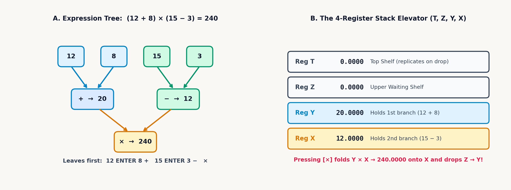
Across the four vertical registers, every stack lift shifts subtotals upward toward Register \(T\), and every dyadic (two-operand) operation drops waiting subtotals downward toward Register \(X\):
| Stack Register | Movement on Lift (ENTER / Armed Digit) |
Movement on Dyadic Drop (+, -, ×, ÷, yˣ, x∥y) |
|---|---|---|
| Register T (Line 4) | Receives \(Z_{\text{old}}\) (\(T_{\text{old}}\) shifts out in 4-LVL) |
Copies \(T_{\text{old}}\) downward into \(Z\) while remaining in \(T\) |
| Register Z (Line 3) | Receives \(Y_{\text{old}}\) as a second branch starts | Drops \(Z_{\text{old}}\) down into \(Y\), ready to combine with \(X\) |
| Register Y (Line 2) | Receives \(X_{\text{old}}\) (ENTER disables lift; armed digit lifts) |
Consumed with \(X_{\text{old}}\); receives \(Z_{\text{old}}\) from Register \(Z\) |
| Register X (Line 1) | Holds copy on ENTER (overwritten by next digit) |
Receives new result \(f(Y_{\text{old}}, X_{\text{old}})\) and arms stack lift |
To govern how newly keyed numbers enter Register \(X\), the stack-lift state machine alternates between two states: Neutral (Stack Lift = FALSE) after ENTER or CLx, and Armed (Stack Lift = TRUE) after an operator or function. Whereas pressing ENTER after the first number of a pair copies that number into Register \(Y\) and disables stack lift so the second number overwrites Register \(X\) in place, every arithmetic operator or mathematical function produces a completed result in Register \(X\) and arms stack lift, so the first digit of the next number lifts that result into Register \(Y\) without a second ENTER. Because constants (\(\pi\)), recalled variables, and function outputs are already completed values, ENTER is needed only to separate two numbers typed consecutively on the numeric keypad (or to duplicate Register \(X\) before squaring or constant-filling); pressing ENTER after a constant, a recalled variable, or a unary function duplicates that value into Register \(Z\).
This inside-out discipline clarifies a recurring problem in algebra and operations engineering. In a semiconductor fabrication plant, an engineer schedules an urgent wafer lot across two independent photolithography cells feeding the same etching bay: Cell A, the primary high-speed stepper, completes the entire lot alone in \(60\text{ minutes}\), and Cell B, an auxiliary stepper, completes the same lot alone in \(180\text{ minutes}\). When both Cell A and Cell B run together, the two cells work in parallel to complete the lot.
A common algebraic mistake is to average the two elapsed times (\((60 + 180)/2 = 120\text{ minutes}\)) or add them (\(240\text{ minutes}\)). A physical bounds check rules out both answers (Strogatz, 2012; Ellenberg, 2014): if Cell A alone finishes the lot in \(60\text{ minutes}\), activating a second cell alongside it cannot make the job take longer than \(60\text{ minutes}\). Two cells operating together must finish in less time than the faster single cell (\(T_{\text{together}} < 60\text{ minutes}\)), because parallel processes add their throughput rates, not their elapsed times.
The completion rate per minute resolves the relationship. Because Cell A completes \(1\text{ lot}\) in \(60\text{ minutes}\), in a single minute it completes a fraction of the lot equal to its reciprocal, \(R_A = \frac{1}{60} \approx 0.017\text{ lots per minute}\). Because Cell B completes \(1\text{ lot}\) in \(180\text{ minutes}\), in a single minute it contributes \(R_B = \frac{1}{180} \approx 5.556 \times 10^{-3}\text{ lots per minute}\). With both cells running in parallel, the per-minute throughput rates sum to \(R_{\text{total}} = R_A + R_B = \frac{1}{60} + \frac{1}{180} = \frac{4}{180} \approx 0.022\text{ lots per minute}\), and the total time \(T_{\text{together}}\) required to complete \(1\text{ whole lot}\) is the reciprocal of that combined rate:
When the cleanroom brings two additional backup steppers online—Cell C, requiring \(90\text{ minutes}\) alone, and Cell D, also requiring \(90\text{ minutes}\) alone—those four cycle times (\(60, 180, 90,\) and \(90\)) obey the same harmonic reciprocal-sum law as electrical resistors wired in parallel or capacitors wired in series:
Because the parallel-harmonic operator (x∥y) is associative, all four completion times never need to occupy \(T, Z, Y,\) and \(X\) at once: combining the first two cells yields \(60 \parallel 180 = 45\text{ min}\), folding in Cell C reduces the time to \(45 \parallel 90 = 30\text{ min}\), and folding in Cell D reaches \(30 \parallel 90 = \mathbf{22.5\text{ min}}\) across Registers \(Y\) and \(X\) alone (just as two parallel transfer pumps rated at \(30\text{ min}\) and \(45\text{ min}\) combine in a single fold to \(30 \parallel 45 = \mathbf{18\text{ min}}\)).
2.1.3 Continued Fractions, Rational Approximations, and Nested Radicals
When reciprocals alternate with integer addition, they generate a classical structure in number theory known as a continued fraction. When designing a mechanical gear train to approximate an irrational orbital-period ratio \(x\)—as Christiaan Huygens did in 1680 for his brass planetarium—engineers peel off the leading integer part \(a_0 = \lfloor x \rfloor\), invert the remaining fractional tail, and extract a cascade of integer partial denominators \(a_1, a_2, a_3, \dots\):
When read from the top down, a continued fraction presents a deeply nested hierarchy in which each denominator \(a_k + 1/(\dots)\) contains another rational expression beneath it. Evaluating that same structure from the innermost denominator \(a_3\) upward eliminates every parenthesis: in the four-level continued fraction \(1 + \frac{1}{2 + \frac{1}{3 + 1/4}}\), the bottom tier \(3 + 1/4\) equals \(13/4 = 3.25\), its reciprocal \(4/13\) added to \(2\) forms \(30/13 \approx 2.308\), and inverting once more to \(13/30 \approx 0.433\) before adding \(1\) lands on \(\approx \mathbf{1.433}\) (\(43/30\)).
Continued fractions generate the best possible rational approximations to any irrational number for a given denominator size. Applying Euclidean reciprocal extraction to the 16-digit hardware constant \(\pi\) (\(\approx 3.142\)) exposes each convergent in succession. Subtracting the integer part \(3\) isolates the fractional remainder \(\approx 0.142\), whose reciprocal (\(1 / (\pi - 3)\)) is \(\approx 7.063\). Because \(7.063\) lies close to the integer \(7\), truncating the expansion at the first tier yields the classical first-order rational approximation:
Once \(7\) is subtracted from \(7.063\), the next remainder \(\approx 0.063\) has reciprocal \(\approx 15.997\), within \(0.003\) of the integer \(16\) (or \(15 + \frac{1}{1}\)). Truncating just before the large subsequent partial denominator (\(292\)) produces a four-tier continued fraction:
The rational approximation \(\frac{355}{113}\) is easily recalled by writing the first three odd integers twice (113355) and dividing the second triplet by the first (355 / 113). Discovered in the fifth century by Chinese mathematician Zu Chongzhi, \(\frac{355}{113}\) uses only three-digit integers yet matches \(\pi\) to six decimal places—an absolute error of \(2.67 \times 10^{-7}\) (less than nine parts in one hundred million)—and renders in mixed fraction format as 3 16/113 (\(\frac{355}{113}\)).
Because large partial denominators like \(292\) inside a continued fraction indicate that an irrational number can be closely approximated by rationals, the irrational number that is hardest to approximate with fractions is the one whose integer partial denominators \(a_0, a_1, a_2, \dots\) are as small as possible. Setting every partial denominator equal to \(1\) defines the golden ratio \(\varphi\):
Beneath the top fraction bar, the infinite tower \(1 + \frac{1}{1 + \frac{1}{1 + \dots}}\) is an exact, self-similar copy of the entire continued fraction \(\varphi\) itself. Replacing that infinite denominator with \(\varphi\) folds the unending staircase into the finite balance \(\varphi = 1 + 1/\varphi\); multiplying through by \(\varphi\) gives \(\varphi^2 - \varphi - 1 = 0\), whose positive root is \(\varphi = (1+\sqrt{5})/2 \approx \mathbf{1.618}\). In Diophantine approximation, \(\varphi\) is the most badly approximable of all real numbers, with rational convergents \(F_{n+1}/F_n\) (\(1/1, 2/1, 3/2, 5/3, 8/5, 13/8, \dots\)) approaching \(\varphi\) more slowly than those of any other irrational constant (\(|\varphi - p/q| > \frac{1}{\sqrt{5}q^2}\) asymptotically). In celestial mechanics and nonlinear dynamics, invariant phase-space tori whose winding-frequency ratio equals \(\varphi\) are the last to break up under gravitational perturbations because small-denominator harmonic resonances are maximally suppressed, and in golden-section unimodal search, spacing interior test evaluations by \(1/\varphi = \varphi - 1 \approx 0.618\) guarantees that each function evaluation reuses one interior point from the previous bracket while shrinking the search interval by a constant factor of \(\approx 0.618\) at every step.
Where Euclid's algorithm nests reciprocals, François Viète's 1593 infinite product for \(\pi\) nests square roots to compare the area of a circle to an infinite sequence of inscribed regular polygons. Inscribing a square (\(4\) sides) inside a unit circle of radius \(r = 1\) and repeatedly doubling the number of polygon sides to an octagon (\(8\) sides), a \(16\)-gon, a \(32\)-gon, and a \(64\)-gon bisects the central wedge angle \(\theta\) at each stage, scaling the polygon area at each step by the cosine of the half-angle \(\cos(\theta/2)\):
Writing the half-angle cosine as \(2\cos(\theta/2) = \sqrt{2 + 2\cos\theta}\) turns repeated angle bisection into an iterative recurrence: each new doubled cosine is formed simply by adding \(2\) to the previous value and extracting the square root. Starting from an initial right angle \(\theta_1 = 90^\circ\) (\(\pi/2\text{ radians}\), where \(\cos 90^\circ = 0\)), successive bisections build a tower of nested radicals: the first bisection at \(45^\circ\) (an octagon) gives \(2\cos(45^\circ) = \sqrt{2}\); the second bisection at \(22.5^\circ\) (a \(16\)-gon) gives \(2\cos(22.5^\circ) = \sqrt{2 + \sqrt{2}} \approx 1.848\); the third bisection at \(11.25^\circ\) (a \(32\)-gon) gives \(2\cos(11.25^\circ) = \sqrt{2 + \sqrt{2 + \sqrt{2}}} \approx 1.962\); and the fourth bisection at \(5.625^\circ\) (a \(64\)-gon) reaches \(2\cos(5.625^\circ) = \sqrt{2 + \sqrt{2 + \sqrt{2 + \sqrt{2}}}} \approx 1.99\), approximating \(\pi \approx 3.121\) after three tiers and \(\approx \mathbf{3.137}\) after four tiers. Like continued fractions, Viète's nested radical product requires deep parenthesis nesting when written from the outside in, yet simplifies naturally from the innermost radicand outward (Cochran, 1972).
2.2 The Grammar of Stack Lift and Constant Memory
An RPN operational stack is a deterministic finite-state automaton. Inheriting the classical four-register state-transition architecture established on the HP-35, HP-15C, and HP-32SII (Cochran, 1972; HP, 1982; HP, 1991), a single seven-element state vector \(\mathcal{S}\) specifies the instrument's response to every keystroke on the faceplate:
Alongside the four visible operational registers \(X, Y, Z, T\) (ordered from Line 1 up to Line 4) and the LASTX shadow register \(L\) (which preserves the prior value of Register \(X\) before each numeric operation), two boolean flags govern how incoming digits interact with the active line: Stack Lift Enabled (\(\mathcal{L}_{\text{lift}} \in \{\text{TRUE}, \text{FALSE}\}\)) determines whether a newly started number pushes \(X\) up into \(Y\), while Digit Entry Active (\(\mathcal{B}_{\text{entry}} \in \{\text{TRUE}, \text{FALSE}\}\)) tracks whether subsequent digit keys append to an open string in Register \(X\) or start a fresh entry.
With respect to stack lift, every key on the faceplate belongs to one of four transition classes:
| Transition Class | Representative Keys | Effect on Registers \((T, Z, Y, X)\) | Post-Op Stack Lift |
|---|---|---|---|
| 1. Neutralizing Keys | ENTER, <- / C (CLx), Σ+, Σ- |
ENTER copies \(X \to Y\) (lifting \(Y \to Z \to T\)); <- / C zeroes \(X\) in place |
Neutral (FALSE): Next number typed overwrites \(X\) in place |
| 2. Arming Keys | 1/x, √x, LN, SIN, x⇄y, R↓, RCL, LASTX, π |
Transforms \(X\) in place (saving prior \(X\) in LASTX) or recalls/permutes registers |
Armed (TRUE): Next digit typed lifts \(X \to Y \to Z \to T\) |
| 3. Digit Entry | 0–9, ., E |
If Armed, lifts \(X \to Y \to Z \to T\) before starting new entry; if Neutral, overwrites \(X\) in place | Armed (TRUE) once the entry completes |
| 4. Dyadic Drop | +, -, ×, ÷, yˣ, x∥y |
Combines \(Y\) and \(X\) into \(X\), drops \(Z \to Y\), and replicates \(T \to Z\) (in 4-LVL mode) |
Armed (TRUE): Result lifts on next entry |
2.2.1 How Register T Acts as an Automatic Constant Supply
At the top of the four-register stack, Register \(T\) (Line 4) implements a retention rule that governs what happens when two operands in Registers \(Y\) and \(X\) combine and the upper registers drop by one level. If Register \(T\) cleared to zero every time the stack dropped, three consecutive dyadic operations would leave the upper registers empty. Instead, in 4-LVL mode, Register \(T\) exhibits \(T\)-Register Duplication:
Whenever a dyadic operation drops the stack, Register \(T\) copies its value downward into Register \(Z\) while retaining its own value in \(T\). That single hardware rule turns the top register into a constant supply: in compound growth, filling the upper stack with a growth factor \((1 + r) = 1.065\) and starting from an initial principal \(P_0 = \$2,500\) advances the balance period by period (\(P_1 = \$2,662.5 \to P_2 \approx \$2,835.563 \to P_3 \approx \$3,019.874 \to P_4 \approx \$3,216.166 \to P_5 \approx \mathbf{\$3,425.217}\)), while a machinist scaling a table of inch dimensions by \(k = 25.4\text{ mm/in}\) (\(0.375\text{ in} \to 9.525\text{ mm}\) through \(5.5\text{ in} \to \mathbf{139.7\text{ mm}}\)) draws \(25.4\) repeatedly from Register \(T\).
To reorder operands already on the stack without re-entry, the two-register swap exchanges Registers \(Y\) and \(X\) (\(X \leftrightarrow Y\)), while the four-register cyclic permutations (Roll Down and Roll Up) rotate all four registers in a closed ring (\(X \leftarrow Y \leftarrow Z \leftarrow T \leftarrow X\), so four thermocouple readings \(21.5^\circ\text{C}, 24.8^\circ\text{C}, 28.2^\circ\text{C}, 31^\circ\text{C}\) can be inspected in turn and returned to their original positions):
Two-register exchange and in-place inversion also handle non-commutative division (\(Y \div X\)) and subtraction (\(Y - X\)) whenever a formula's denominator or subtracted term is more complicated than its numerator or leading term, as in resonant frequency \(f_0 = \frac{1}{2\pi\sqrt{LC}}\), impedance current \(I = \frac{V_s}{\sqrt{R^2 + X^2}}\), or Carnot thermal efficiency \(\eta = 1 - \frac{T_C}{T_H}\). Evaluating the multi-step denominator \(D\) or subtrahend \(S\) first inside Register \(X\) keeps the upper stack untouched and leaves two equivalent paths to complete the calculation without re-entry: either invert or negate Register \(X\) in place (\(D^{-1}\) or \(-S\)) and multiply or add the numerator \(N\) or minuend \(M\) (\(D^{-1} \times N\) or \(-S + M\)), or enter \(N\) or \(M\) second (which lifts \(D\) or \(S\) into Register \(Y\)) and exchange Registers \(X \leftrightarrow Y\) so the operands sit in standard \((Y = N,\; X = D)\) or \((Y = M,\; X = S)\) order before dividing or subtracting.
Alongside the four visible registers, every operation that modifies Register \(X\) saves its prior occupant in the last-argument shadow register (LASTX). In an unnormalized sinc ratio \(\operatorname{sinc} x = \frac{\sin x}{x}\), evaluating \(\sin(0.42) \approx 0.408\) in radians preserves the pre-sine angle \(0.42\) in LASTX, so recalling LASTX and dividing yields \(\frac{\sin(0.42)}{0.42} \approx \mathbf{0.971}\). In Fraunhofer single-slit diffraction, where monochromatic light of wavelength \(\lambda\) passes through an aperture of slit width \(a\) and spreads out at diffraction angle \(\theta\), the optical path difference across the slit defines the half-aperture phase parameter \(\beta = \frac{\pi a}{\lambda}\sin\theta\); for \(\beta = 0.085\text{ rad}\), the same two-step sequence gives the normalized far-field diffraction amplitude \(\frac{\sin\beta}{\beta} = \frac{\sin(0.085)}{0.085} \approx \mathbf{0.999}\) without re-entering \(\beta\).
On the display, twelve-digit base-10 guard rounding suppresses binary representation residuals (rendering \(0.1 + 0.2\) as 0.3 while retaining the 53-bit binary64 significand in memory); rounding to display precision (RND) replaces Register \(X\)'s internal 53-bit significand with its currently displayed value, quantizing a currency or tolerance figure to two decimal places under FIX 2 so unshown fractional digits do not accumulate across downstream sums. Depending on how many independent subtotals an expression requires, four selectable stack-depth architectures generalize the operational stack:
| Mode ID | Architecture Name | Accessible Registers | Stack Drop Behavior | Recommended Application Zone |
|---|---|---|---|---|
| 2-LVL | 2-Level B-Register Stack | \(X, T\) (\(Y\)-position) | 2-register accumulator; \(T\) retains its value in \(Y\) on drop while \(X\) holds the result | Simple adding-machine tallies and two-operand arithmetic |
| 4-LVL | Classic 4-Level Stack (Default) | \(X, Y, Z, T\) | Top-of-stack \(T\)-duplication on drop; classic 4-register behavior | Everyday engineering, Horner recurrences, constant scaling |
| 8-LVL | Extended 8-Level Stack | \(R_1 \dots R_8\) (displayed as \(X, Y, Z, 4, 5, 6, 7, T\)) | Holds up to 8 real operands (or 4 complex pairs) before \(T\) (\(R_8\)) replication | Multi-branch complex phasor algebra, 5-to-8-register expressions |
| INF | Unbounded Infinite Stack | Dynamic heap allocation (up to 999 levels) | True LIFO stack; dyadic drop never duplicates; pulls from history | 5+ branch parallel networks, long product-sum series |
2.2.2 Named Variables and Indirect Memory Addressing
When all four stack registers (\(T, Z, Y, X\)) hold live subtotals and a calculation requires a constant stored in one of the 26 lettered variables A–Z, a standard recall lifts the stack by one level and pushes the occupant of Register \(T\) over the cliff in 4-LVL mode. Three non-destructive mechanisms resolve this full-stack bottleneck while preserving Registers \(Y, Z,\) and \(T\): first, non-destructive variable inspection displays the value of any stored variable on the status line (or in a read-only register catalog) without lifting the stack; second, two-way in-place storage arithmetic updates Register \(X\) in place as \(X \leftarrow X \text{ op } A\) (Recall Arithmetic—for example, scaling \(X = 40\) by \(A = 2.5\) to \(\mathbf{100}\) while \(10, 20, 30\) remain untouched in the upper stack) or updates Variable A in place as \(A \leftarrow A \text{ op } X\) (Store Arithmetic); and third, in-place variable exchange swaps Register \(X\) with any named variable (\(X \leftrightarrow A\)) to park an intermediate subtotal and bring a stored parameter onto the active line.
To step across memory without hard-wiring a fixed variable name (A, B, C), an index register (i) holds an integer slot number \(k\) so that indirect addressing ((i)) can dynamically reference whichever memory slot resides at address \(k\) across a unified 89-slot memory map:
| Pointer Range \(k \in \{1, \dots, 89\}\) | Target Memory Bank | Addressed Register / Content | Access Permissions |
|---|---|---|---|
1 … 26 |
Lettered Variables (A–Z) |
1 = A, 2 = B, 3 = C, …, 26 = Z |
Full Read / Write (STO (i), RCL (i), x⇄? (i)) |
27 |
Index Register (i) |
27 = Index register i itself |
Full Read / Write |
28 … 33 |
Statistical Accumulators | 28 = \(\Sigma n\), 29 = \(\Sigma x\), 30 = \(\Sigma y\), 31 = \(\Sigma x^2\), 32 = \(\Sigma y^2\), 33 = \(\Sigma xy\) |
Read / Write via (i) |
34 … 39 |
POLY Solver Roots |
Slots 34–39 (Real & imaginary parts of roots \(r_1, r_2, r_3\)) |
Read via RCL (i) |
40 … 89 |
Statistical Data Points | DATA0 (40) through DATA49 (89) |
Read via RCL (i) |
| \(k < 1\) or \(k > 89\) | Out of Bounds | Displays INVALID DATA |
N/A (Halts without stack corruption) |
Where a single-line parenthesized expression hides intermediate quantities until the final result appears, evaluating an equation across the four visible registers exposes every physical subtotal—thermal voltage, cross-sectional area, characteristic impedance, or dynamic pressure—live on the glass as it forms, making a tenfold unit or sign error visible before it propagates downstream.
2.3 Five Patterns for Evaluating Any Formula
Five stack-control keys and two memory-addressing mechanisms on the physical SC-32 keypad govern how numbers move across Registers \(T, Z, Y,\) and \(X\):
* Stack Entry, Non-Commutative Alignment & Rearrangement ([ENTER], [x⇄y], [1/x], [+/-], [R↓], [↱] [R↑], [<-]): Pressing [ENTER] separates two consecutively typed numbers by copying Register \(X\) into Register \(Y\) and disabling stack lift (constants like [↱] [π], recalled variables, and function outputs are already self-delimited and arm stack lift). When a multi-step denominator \(D\) or subtrahend \(S\) is evaluated first in Register \(X\), pressing [1/x] or [+/-] before multiplying or adding the numerator or minuend—or entering the numerator/minuend second and pressing [x⇄y] (\(X \leftrightarrow Y\)) before [÷] or [-]—completes the ratio or difference without re-entry; [R↓] and [↱] [R↑] (right-shifted on [R↓]) rotate all four registers cyclically; and [<-] clears a mistyped entry in Register \(X\) without disturbing \(Y, Z,\) or \(T\).
* Harmonic Operator ([x∥y]), Shadow Register ([↰] [LASTX]), & Display Rounding ([↰] [RND]): Pressing [x∥y] evaluates the parallel product-over-sum \(\frac{Y \cdot X}{Y + X}\), [↰] [LASTX] (left-shifted on [ENTER]) recalls the pre-operation value of Register \(X\) saved before the most recent numeric operation, and [↰] [RND] (left-shifted on [RCL]) rounds Register \(X\)'s internal 53-bit value to match the active [↰] [DISP] setting (FIX, SCI, or ENG).
* Stack Depth ([↱] [FLAGS]), Non-Destructive Inspection ([↱] [VIEW], [↰] [REGS], MEM), & Storage Addressing (i and (i)): Pressing [↱] [FLAGS] (right-shifted on [×]) and tapping STACK selects \(\mathtt{[2\text{-}LVL]} \;\; \mathtt{[4\text{-}LVL]} \;\; \mathtt{[8\text{-}LVL]} \;\; \mathtt{[INF]} \;\; \mathtt{[VIEW]}\) (4-LVL default). To inspect memory without lifting the stack, [↱] [VIEW] (right-shifted on [0]) prompts for A–Z and displays "A = ..." on the status line without altering \(T, Z, Y,\) or \(X\), while [↰] [REGS] (left-shifted on [0]) and MEM (left-shifted on [x⇄y]) browse the stack, variables, statistical registers, and equations read-only. Pressing [STO] or [RCL] activates the A–Z Alpha layer (. addresses i; [x∥y] addresses (i)). Inserting an operator ([STO] [+] A or [RCL] [×] A, plus [-] and [÷]) performs in-place storage or recall arithmetic without stack lift, right-shifted x⇄? on [x⇄y] swaps Register \(X\) with a variable in place, and [↱] [EQN] and [XEQ] store and execute symbolic postfix equations with automatic variable prompts.
Every multi-stage formula in algebra and engineering reduces to one of five patterns on these keys: evaluating a two-branch rational quotient across three registers, generating continued fractions and nested radicals from the bottom up, reusing a shared divisor across multiple branches with LASTX, evaluating polynomials without exponents via Horner's method, and stepping through memory slots with (i).
2.3.1 Evaluating Two-Branch Rational Quotients Across Three Registers
Whenever a formula adds or subtracts two products in the numerator and divides by a two-term denominator, only three registers (\(X, Y, Z\)) are required. In the calorimetric stream balance \(\frac{(60 \times 2.5) + (35 \times 4)}{18 - 5.5}\), the first numerator product (\(150\)) lifts into Register \(Z\) while the second product (\(35 \times 4 = 140\)) forms across Registers \(Y\) and \(X\); addition collapses both branches into the completed numerator (\(290\)) in Register \(X\); keying 18 ENTER 5.5 shifts \(290\) into Register \(Z\) before subtraction forms the denominator (\(12.5\)) in Register \(X\) and drops \(290\) into Register \(Y\); and division completes the quotient:
| Keystroke | Register T | Register Z | Register Y | Register X | What Happens on the Stack |
|---|---|---|---|---|---|
60 [ENTER] 2.5 [×] |
\(0\) | \(0\) | \(0\) | \(150\) | First numerator product \(60 \times 2.5 = 150\); stack lift armed |
35 [ENTER] 4 |
\(0\) | \(150\) | \(35\) | \(4\) | Second branch lifts \(150\) into \(Z\) while \(35\) and \(4\) occupy \(Y\) and \(X\) |
[×] [+] |
\(0\) | \(0\) | \(0\) | \(290\) | Product \(140\) drops \(150\) to \(Y\) and sums to completed numerator \(290\) |
18 [ENTER] 5.5 [-] |
\(0\) | \(0\) | \(290\) | \(12.5\) | Denominator \(18 - 5.5 = 12.5\) in \(X\); numerator \(290\) drops from \(Z\) to \(Y\) |
[÷] |
\(0\) | \(0\) | \(0\) | \(23.2\) | Final quotient \(290 \div 12.5 = 23.2\) |
This same three-register sequence governs two-branch balances across heat transfer, bridge instrumentation, and spacecraft radiative transport. In a two-pass heat exchanger, summing two heat-flux streams (\(18.5 \times 4.2\) and \(7.1 \times 9.6\)) and dividing by the wall temperature difference (\(14.3 - 5.8\)) yields the overall heat-transfer conductance \(U\). In a four-resistor Wheatstone bridge powered by excitation voltage \(V_{\text{exc}}\), two parallel voltage-divider legs (\(R_1, R_3\) on the left and \(R_2, R_4\) on the right) split the supply rail, and a voltmeter wired between their midpoints measures the differential output voltage \(V_{\text{diff}}\). And in vacuum radiative heat transfer between two parallel plates at absolute temperatures \(T_1\) and \(T_2\) with infrared surface emissivities \(\varepsilon_1\) and \(\varepsilon_2\) (scaled by the Stefan–Boltzmann constant \(\sigma \approx 5.67 \times 10^{-8}\text{ W/(m}^2\cdot\text{K}^4)\)), the net radiative heat flux \(q\) (watts per square meter) balances blackbody emission against multiple surface reflections:
Although these three equations come from different laboratories, each pits a combined driving potential against a net opposing resistance or reference branch. Overall conductance \(U\) divides the combined thermal power of both fluid passes by the wall temperature span. Across the Wheatstone bridge, the two midpoint divider ratios \(\frac{R_3}{R_1+R_3}\) and \(\frac{R_4}{R_2+R_4}\) cancel to zero whenever all four arms match, isolating any slight resistance shift in an active strain gauge \(R_3\) as a clean differential signal scaled by \(V_{\text{exc}}\). Between the vacuum radiation plates, the ideal fourth-power blackbody flux \(\sigma(T_1^4 - T_2^4)\) is throttled by the combined gray-body surface reflection resistance \(\frac{1}{\varepsilon_1} + \frac{1}{\varepsilon_2} - 1\), which equals \(1\) for perfect blackbodies (\(\varepsilon_1 = \varepsilon_2 = 1\)) and grows larger as polished, low-emissivity foil reflects infrared photons back and forth.
In the heat-exchanger balance \(U\), the first thermal product (\(77.7\)) waits in Register \(Z\) while the second (\(68.16\)) forms in Registers \(Y\) and \(X\), and their summed numerator (\(145.86\)) waits in Register \(Z\) while the temperature difference (\(8.5\)) forms, dividing to \(\approx \mathbf{17.16\text{ W/(m}^2\cdot\text{K)}}\). In a Wheatstone bridge (\(R_3 = 351.4\,\Omega\) active metallic strain gauge against three \(350\,\Omega\) reference arms under \(V_{\text{exc}} = 10\text{ V}\)), subtracting the balanced reference ratio \(0.5\) from the active divider ratio \(351.4/(350 + 351.4) \approx 0.501\) and scaling by \(10\text{ V}\) isolates a \(\approx \mathbf{9.98\text{ mV}}\) strain signal. Across a two-panel spacecraft radiation shield (\(T_1 = 800\text{ K}, \varepsilon_1 = 0.85\) and \(T_2 = 500\text{ K}, \varepsilon_2 = 0.7\)), the blackbody numerator \(\sigma(T_1^4 - T_2^4) \approx 19,681.854\text{ W/m}^2\) waits in Register \(Z\) while the emissivity denominator \(1/\varepsilon_1 + 1/\varepsilon_2 - 1 \approx 1.605\) combines in Registers \(Y\) and \(X\), dividing to a net radiative flux of \(q \approx \mathbf{12,262.517\text{ W/m}^2}\).
2.3.2 Climbing Continued Fractions and Nested Radicals from the Bottom Up
In vertically nested expressions like the golden ratio continued fraction \(\varphi = 1 + \frac{1}{1 + \frac{1}{1 + \dots}}\), bottom-up evaluation reduces each tier in place. Flooding all four stack registers with \(1\) uses Register \(T\)'s constant replication to supply an endless stream of \(1\)'s into Register \(Y\), so repeatedly taking the reciprocal in place and adding generates the sequence of Fibonacci rational convergents step by step (\(2/1 = 2 \to 3/2 = 1.5 \to 5/3 \approx 1.667 \to 8/5 = 1.6 \to 13/8 = 1.625 \to \dots \to \varphi \approx \mathbf{1.618}\)).
When evaluation begins at the deepest radical or dimensionless ratio, spacecraft orbital transfer and AC filter calculations unfold without parentheses. Consider a spacecraft orbiting in Earth's gravity well, governed by Earth's standard gravitational parameter \(\mu = GM_\oplus\): to lift the craft from a circular parking orbit of inner radius \(r_1\) up to an outer target radius \(r_2\) along a minimum-energy Hohmann transfer ellipse of semi-major axis \(a = (r_1 + r_2)/2\), the engine must fire at perigee with velocity impulse \(\Delta v_1\), raising the spacecraft's orbital speed \(v\) at radial distance \(r\) according to the vis-viva energy integral. Similarly, when an alternating audio signal of frequency \(f\) passes through a series high-pass filter built from resistance \(R\) and capacitance \(C\), the dimensionless frequency ratio \(X = 2\pi f R C\) (comparing the signal frequency \(f\) to the RC corner frequency) sets the voltage transfer magnitude \(|H|\):
Firing a Hohmann perigee burn scales the initial circular parking speed \(\sqrt{\mu/r_1}\) by the dimensionless boost factor \(\sqrt{\frac{2r_2}{r_1+r_2}} - 1\) required to raise apogee from \(r_1\) to \(r_2\). Along the resulting transfer ellipse, the vis-viva balance trades local gravitational potential (\(2/r\)) against the orbit's fixed binding energy (\(1/a\)), slowing the spacecraft as radial distance \(r\) climbs toward apogee. In the high-pass audio filter, the capacitor blocks direct current as \(X \to 0\) (\(|H| \to 0\)) and becomes a transparent short circuit at high frequencies (\(X \gg 1\), where \(\sqrt{1+X^2} \approx X\) and \(|H| \to 1\)).
For a Hohmann transfer between a low Earth parking orbit (\(r_1 = 6,678\text{ km}\)) and geostationary altitude (\(r_2 = 42,164\text{ km}\), with \(\mu = 398,600\text{ km}^3/\text{s}^2\)), computing the inner radius ratio \(\frac{2r_2}{r_1+r_2} \approx 1.727\) first, taking its square root (\(\approx 1.314\)), and subtracting \(1\) isolates the dimensionless impulse factor \(\approx 0.314\) before scaling by the circular parking speed \(\sqrt{\mu/r_1} \approx 7.726\text{ km/s}\) to obtain the perigee burn \(\Delta v_1 \approx \mathbf{2.426\text{ km/s}}\); along that transfer ellipse of semi-major axis \(a = 24,421\text{ km}\), the vis-viva integral gives the total perigee speed \(v_p \approx \mathbf{10.152\text{ km/s}}\). In a first-order high-pass RC audio filter (\(R = 10,000\,\Omega\), \(C = 15 \times 10^{-9}\text{ F}\) at \(f = 2,500\text{ Hz}\)), forming the normalized frequency ratio \(X = 2\pi f R C \approx 2.356\) once, duplicating it into Register \(Y\), and transforming Register \(X\) into \(\sqrt{1 + X^2} \approx 2.56\) before dividing yields the voltage gain \(|H| \approx \mathbf{0.921}\) across Registers \(Y\) and \(X\).
2.3.3 Reusing a Shared Divisor or Argument with LASTX
When three resistors \(R_{12}, R_{23}, R_{31}\) are wired in a closed triangular delta (\(\Delta\)) between terminal nodes \(1, 2,\) and \(3\) inside a bridge or a three-phase industrial motor starter, circuit analysis often requires replacing the triangle with an equivalent three-branch star (\(\text{Y}\)) of wye resistances \(R_a, R_b, R_c\) radiating from a central neutral point. The \(\Delta \to \text{Y}\) impedance transformation equates the terminal-to-terminal resistances of both networks by dividing each adjacent pair product by the shared delta perimeter sum \(S = R_{12} + R_{23} + R_{31}\):
Each equivalent star resistor \(R_a, R_b, R_c\) pairs the two delta arms that meet at its terminal corner (\(R_{12}R_{31}\) at node \(1\), \(R_{12}R_{23}\) at node \(2\), and \(R_{23}R_{31}\) at node \(3\)) and divides their product by the common loop resistance \(S = R_{12} + R_{23} + R_{31}\) around the entire triangle. For \(R_{12} = 30\,\Omega,\; R_{23} = 45\,\Omega,\; R_{31} = 60\,\Omega\), that shared loop sum is \(S = 30 + 45 + 60 = 135\,\Omega\). Dividing the first pair product \(R_{12}R_{31} = 1,800\,\Omega^2\) by \(135\,\Omega\) yields the first star branch \(R_a = 1,800 / 135 \approx \mathbf{13.333\,\Omega}\) and latches the divisor \(135\,\Omega\) in LASTX. Recalling \(135\,\Omega\) from LASTX before forming each remaining pair product (\(R_{12}R_{23} = 1,350\,\Omega^2\) and \(R_{23}R_{31} = 2,700\,\Omega^2\)) and swapping Registers \(Y\) and \(X\) to divide places all three wye resistances (\(\approx 13.333\,\Omega\), \(10\,\Omega\), and \(20\,\Omega\)) on the stack without re-entering \(S\).
The LASTX shadow register also eliminates duplicate entry in any single-variable difference like \(f(x) = e^x - \ln(x)\) at \(x = 2.5\): evaluating \(e^{2.5} \approx 12.182\) saves \(2.5\) in LASTX, so recalling LASTX to take \(\ln(2.5) \approx 0.916\) and subtracting yields \(\approx \mathbf{11.266}\). And if a mistyped cross-sectional area of \(19\text{ mm}^2\) is keyed after computing a tensile load of \(36 \times 12.5 = 450\text{ N}\), clearing Register \(X\) zeroes the active line and disables stack lift so the corrected area \(18\text{ mm}^2\) overwrites the zero in place (\(450 \div 18 = \mathbf{25\text{ MPa}}\)).
2.3.4 Nested Polynomials and Horner's Evaluation Scheme
When a cubic polynomial \(P(x) = 2x^3 - 5x^2 + 3x + 7\) is factored into nested linear binomials \(((2x - 5)x + 3)x + 7\)—Horner's evaluation scheme—every power operation disappears. Flooding all four registers with the evaluation point \(x = 3.5\) lets Register \(T\)'s constant replication supply \(x = 3.5\) at each multiplication stage, evaluating the cubic to \(\mathbf{42}\) in three linear steps:
| Keystroke | Register T | Register Z | Register Y | Register X | What Happens on the Stack |
|---|---|---|---|---|---|
3.5 [ENTER] [ENTER] [ENTER] |
\(3.5\) | \(3.5\) | \(3.5\) | \(3.5\) | Flood all 4 registers with evaluation point \(x = 3.5\) |
2 [×] 5 [-] |
\(3.5\) | \(3.5\) | \(3.5\) | \(2\) | Innermost Horner binomial \(2x - 5 = 2(3.5) - 5 = 2\) |
[×] 3 [+] |
\(3.5\) | \(3.5\) | \(3.5\) | \(10\) | Second Horner stage \((2x - 5)x + 3 = 2(3.5) + 3 = 10\) |
[×] 7 [+] |
\(3.5\) | \(3.5\) | \(3.5\) | \(42\) | Outer Horner stage \(((2x - 5)x + 3)x + 7 = 10(3.5) + 7 = 42\) |
Pushing a fifth number (\(50\)) onto \(10, 20, 30, 40\) and summing illustrates why 4-LVL mode suits Horner recurrences while 8-LVL and INF modes serve deep multi-branch sums: in 4-LVL mode, pushing \(50\) shifts \(10\) off the top of Register \(T\), and as \(40 + 50 = 90\) drops the stack, Register \(T\) replicates \(20\) downward so three additions yield \(20 + 30 + 90 = \mathbf{140}\); in 8-LVL or INF mode, \(10\) is preserved at level 5 and drops back into Register \(T\) as the lower pairs collapse, so summing all five terms yields \(\mathbf{150}\).
When a calibration routine or data-logging loop must step through sequential variables without hard-wiring A, B, C into each command, the index register i and indirect pointer (i) turn the 89-slot memory map into an addressable array: storing calibration offset \(120\) in Variable A (slot \(k = 1\)) and \(250\) in Variable B (slot \(k = 2\)), loading \(k = 1\) into i lets an indirect recall fetch slot \(1\) (\(120\)), while adding \(1\) to pointer i via storage arithmetic (1 STO+ i) advances i to slot \(2\) so an indirect store-addition of \(35\) (35 STO+ (i)) updates Variable B to \(250 + 35 = \mathbf{285}\).
2.3.5 Try It on the Stack
- Three-Resistor Parallel Shunt Network: Fold three current-sense shunt resistors of \(R_1 = 30\,\Omega\), \(R_2 = 45\,\Omega\), and \(R_3 = 90\,\Omega\) in parallel using the harmonic parallel operator. (Verified Register \(X\) result: \(R_{\text{eq}} = \mathbf{15\,\Omega}\).)
- Delta-to-Wye (\(\Delta \to \text{Y}\)) Network Conversion: For a three-terminal bridge with delta resistors \(R_{ab} = 20\,\Omega\), \(R_{bc} = 30\,\Omega\), and \(R_{ca} = 50\,\Omega\) (perimeter sum \(S = 100\,\Omega\)), evaluate the three equivalent wye branch resistances \(R_a = R_{ab}R_{ca}/S\), \(R_b = R_{ab}R_{bc}/S\), and \(R_c = R_{bc}R_{ca}/S\) using
LASTXto restore the shared divisor \(S = 100\,\Omega\) for each remaining pair product. (Verified Register \(X\) results: \(R_a = \mathbf{10\,\Omega}\), \(R_b = \mathbf{6\,\Omega}\), and \(R_c = \mathbf{15\,\Omega}\).) - Golden Ratio Continued Fraction via \(T\)-Replication: Fill all four stack registers \((T, Z, Y, X)\) with \(1\) and alternate reciprocal and addition nine times to evaluate the tenth Fibonacci convergent \(F_{11}/F_{10} = 89/55\) of \(\varphi = 1 + \frac{1}{1 + \frac{1}{1 + \dots}}\). (Verified Register \(X\) result: \(\varphi_{10} \approx \mathbf{1.618}\).)
Chapter 3: Logarithms, Power Laws & Exponential Scaling
At Merchiston Castle near Edinburgh in the opening years of the seventeenth century, Scottish mathematician John Napier set out to relieve the arithmetic bottleneck of observational astronomy (Napier, 1614). While postfix arithmetic evaluates any rational combination of additions, subtractions, multiplications, and divisions without parentheses, physical nature rarely scales by straight addition: acoustic pressure, chemical acidity, radioactive decay, and planetary orbits grow multiplicatively across decades, and Napier sought a way to reduce that multiplicative scaling to simple addition.
Across Europe, astronomers had just inherited the richest body of observational data in history. On the island of Hven, Tycho Brahe had spent thirty years measuring the nightly positions of Mars and the stars to within one arcminute, and Johannes Kepler was working to establish that the planets orbit the Sun in ellipses, not circles. Yet every time an astronomer tested an elliptical orbit against those observations, he had to multiply and divide eight-digit trigonometric chords by hand across nearly a thousand folio pages of dense arithmetic. A single carried-digit error could invalidate months of calculation.
3.1 How John Napier Doubled the Life of the Astronomer
Napier set out to construct a mapping in mathematics that converts multiplication into addition, division into subtraction, and square or cube root extraction into division by \(2\) or \(3\). Aligning a row of integer exponents above the corresponding powers of three and powers of ten reveals the underlying isomorphism:
| Arithmetic Exponent (\(n\)) | \(0\) | \(1\) | \(2\) | \(3\) | \(4\) | \(5\) | \(6\) | \(7\) |
|---|---|---|---|---|---|---|---|---|
| Ternary Power (\(3^n\)) | \(1\) | \(3\) | \(9\) | \(27\) | \(81\) | \(243\) | \(729\) | \(2{,}187\) |
| Decimal Power (\(10^n\)) | \(1\) | \(10\) | \(100\) | \(1{,}000\) | \(10{,}000\) | \(100{,}000\) | \(10^6\) | \(10^7\) |
To multiply \(27 \times 81\) via powers of three, match each factor to its exponent: \(27 = 3^3\) corresponds to \(n = 3\), and \(81 = 3^4\) corresponds to \(n = 4\). Adding their exponents (\(3 + 4 = 7\)) points to \(3^7 = 2,187\) (\(27 \times 81 = 2,187\)). That correspondence holds for any positive base \(b\) because an exponent counts repeated factors of the base:
Napier spent twenty years interpolating the continuous values between the integers through a kinematic model of two points moving in tandem along straight lines. The first point (the logarithm track) travels along an infinite straight line at a uniform velocity \(v_0\), covering equal arithmetic increments of distance in equal intervals of time (\(0, \Delta x, 2\Delta x, 3\Delta x, \dots\)). Over the same time intervals, the second point (the number track) starts at distance \(L\) from a terminal mark and moves toward it at a speed proportional to the distance remaining, covering equal geometric ratios in equal intervals of time (\(L, L r, L r^2, L r^3, \dots\)).
By pairing the arithmetic position of the first point with the geometric position of the second point at every instant, Napier established a continuous correspondence between addition and multiplication. In differential notation, Napier's first point obeys \(\frac{dx}{dt} = v_0\) so that \(x(t) = v_0 t\), while his second point starts at \(y(0) = L = 10^7\) (the radius of a seventeenth-century trigonometric sine table accurate to seven figures) and decelerates in proportion to its remaining distance from the origin:
More than a century before the natural base \(e\) was formalized, Napier's kinematic definition had implicitly constructed a table of natural logarithms scaled by \(10^7\). In 1614, he published his logarithmic tables (Napier, 1614), coining the word logarithm from the Greek logos ("ratio") and arithmos ("number") to signify the number that counts ratios. A year later, London geometry professor Henry Briggs traveled to Edinburgh and worked with Napier to normalize logarithms to base \(10\), where \(\log_{10} 1 = 0\), \(\log_{10} 10 = 1\), \(\log_{10} 100 = 2\), and \(\log_{10} 1000 = 3\).
For any two positive numbers \(a\) and \(b\), Napier and Briggs's logarithmic function satisfies three structural identities together with the universal change-of-base identity:
Because \(b^{\log_b x} = x\) by definition, taking the natural or base-\(10\) logarithm of both sides gives \(\log_b(x)\cdot\ln b = \ln x\), proving that a logarithm in any positive base \(b \ne 1\)—including base-\(2\) information entropy \(\log_2(x) = \frac{\ln x}{\ln 2}\) in bits—is the ratio of two natural or common logarithms, and that a telescoping product across stepping bases collapses to its endpoints (\(\log_2 3 \cdot \log_3 4 \cdot \log_4 5 \cdots \log_{63} 64 = \frac{\ln 64}{\ln 2} = \mathbf{6}\)). Where multiplying two eight-digit numbers by hand once took twenty minutes, an astronomer could look up their two logarithms in Briggs's table, add them in seconds, and read the antilogarithm matching that sum (Figure 3.1). Extracting a cube root (\(\sqrt[3]{y} = y^{1/3}\)) reduced to looking up \(\log y\) and dividing by \(3\). By replacing multi-digit multiplication with addition, logarithms doubled the working life of scientists across astronomy, navigation, and engineering.
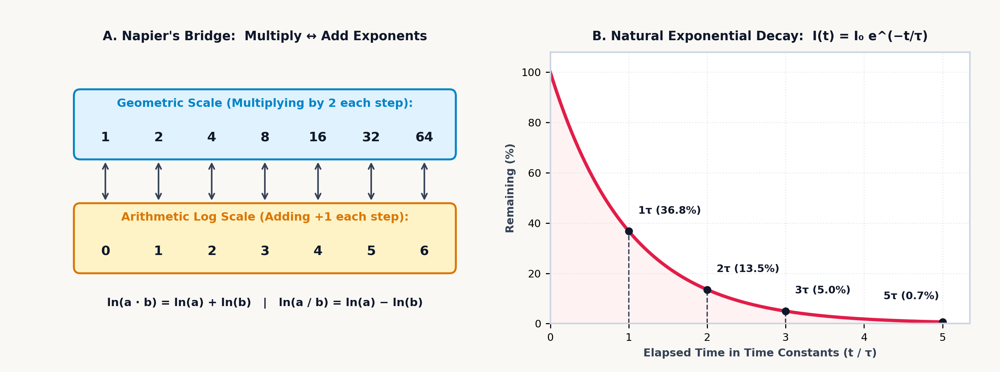
Physical CPA Studio Bridge (
Book 4 Units 02–04— Algebra Tile L-Frame & Prime Factor Studio):
In the companion StackCalc High School & STEM Lab (Book 4), students build these two algebraic and logarithmic transformations with their hands before evaluating them on the SC-32 stack. In Units 02–03, Al-Khwarizmi's geometric completing-the-square derivation (\(x^2 + bx = (x + b/2)^2 - (b/2)^2\)) is modeled inside the \(36\text{ mm} \times 36\text{ mm}\) Algebra Tile \(90^\circ\) Corner L-Frame by splitting the linear \(bx\) strip into two symmetric \((b/2)x\) wings around the \(x^2\) flat and measuring the missing \((b/2)^2\) corner square. In Unit 04, Napier's multiplication-to-addition isomorphism is realized physically in the Prime Factor Logarithmic Tower Studio (PRIME-01), where each prime block \(p \in \{2, 3, 5, 7, \dots\}\) is 3D-printed to an exact logarithmic height \(h(p) = 7.0 \cdot \log_2(p)\text{ mm}\) (\(h(2) = 7.00\text{ mm}\), \(h(3) = 11.09\text{ mm}\), \(h(5) = 16.25\text{ mm}\)): stacking Prime \(2\) on Prime \(3\) physically adds their heights (\(7.00 + 11.09 = 18.09\text{ mm}\)) to align flush with the \(2 \times 3 = 6\) tick mark on the logarithmic comparator stage.
To evaluate any logarithm to 16 digits without storing Briggs's thousand-page book in memory, the SC-32 uses binary floating-point range reduction (Cody & Waite, 1980), factoring any positive number \(x = m \cdot 2^k\) into its normalized binary significand \(m \in [\frac{1}{\sqrt{2}}, \sqrt{2})\) near \(1\) and its exact integer binary exponent \(k\):
Because \(m\) is confined to a narrow interval around \(1\), the natural logarithm \(\ln(m)\) can be expanded in terms of the rapidly converging rational transformation \(z = \frac{m - 1}{m + 1}\):
which converges to 16 decimal digits in a small number of odd powers. Unlike the naive Taylor series \(\ln(1 + u) = u - u^2/2 + u^3/3 - \dots\), which diverges for \(u > 1\) and converges slowly near \(u = 1\), the bilinear mapping \(z = \frac{m - 1}{m + 1}\) compresses the reduced binary interval \(m \in [1/\sqrt{2}, \sqrt{2})\) onto \(|z| \le \frac{\sqrt{2} - 1}{\sqrt{2} + 1} = 3 - 2\sqrt{2} \approx 0.172\), so each successive odd power \(z^{2n+1}\) shrinks by at least \(z^2 \le 17 - 12\sqrt{2} \approx 2.94 \times 10^{-2}\) (more than \(1.5\) decimal digits per term). For \(x = 10 = 1.25 \times 2^3\) (\(m = 1.25\), \(k = 3\)), the bilinear variable reduces to the simple fraction \(z = \frac{1.25 - 1}{1.25 + 1} = \frac{1}{9}\).
3.1.1 Logarithmic Perception and Decibel Scaling
Napier and Briggs's base-10 logarithm extends well beyond computational tables because physical waves and human sensory systems span many orders of magnitude. In a dark room illuminated by a single candle, introducing a second candle doubles the photon flux and produces an unmistakable increase in perceived brightness. In a hall already illuminated by \(100\) candles, introducing a \(101\text{st}\) candle changes the stimulus by only one percent, and the increment is imperceptible. Sensory receptors scale with the relative ratio (\(\frac{\text{new intensity}}{\text{old intensity}}\)), not the additive increment (\(+1\text{ candle}\)): each tenfold multiplication of physical energy produces one equal perceptual step.
Four standard measurement scales in acoustics, geophysics, astrophysics, and radio engineering apply this base-10 logarithmic compression, mapping dimensionless physical ratios across powers of ten. In acoustics, the faintest pressure fluctuation detectable by the human eardrum has a root-mean-square amplitude of \(p_0 = 20\,\mu\text{Pa}\) (\(2 \times 10^{-5}\text{ Pa}\)), while a nearby jet engine reaches \(20\text{ Pa}\). Between those extremes, acoustic pressure spans a million-fold range (\(10^6:1\)) and acoustic intensity \(I \propto p^2\) spans twelve orders of magnitude (\(10^{12}:1\)). Along the inner ear, the tapered basilar membrane of the mammalian cochlea maps those twelve orders of magnitude onto the \(0\text{ to }120\text{ dB}\) Sound Pressure Level scale:
For a stadium acoustic wave of root-mean-square pressure \(p_{\text{rms}} = 1.45\text{ Pa}\) referenced to the \(p_0 = 2 \times 10^{-5}\text{ Pa}\) cochlear hearing threshold, the ratio \(p_{\text{rms}} / p_0\) shows that the wave amplitude is \(72,500\times\) the threshold of hearing. Taking the base-10 logarithm compresses that \(72,500:1\) pressure ratio into \(\approx 4.86\) decades of amplitude, and scaling by \(20\) (since acoustic intensity scales as \(p^2\)) yields \(\approx \mathbf{97.207\text{ dB SPL}}\) (\(\approx 9.721\text{ Bels}\); a \(p_{\text{rms}} = 2\text{ Pa}\) wave at \(10^5 p_0\) reaches \(\mathbf{100\text{ dB SPL}}\)). In architectural acoustics, a \(60\text{ dB}\) (\(10^6:1\)) drop in energy density sets the \(0.161\text{ s/m}\) Sabine reverberation factor across a concert hall of volume \(V = 4,500\text{ m}^3\) and absorption area \(A = 320\text{ sabins}\) (\(\text{m}^2\)), yielding a reverberation decay time of \(T_{60} = 0.161 V / A \approx \mathbf{2.264\text{ s}}\).
When that same wave energy radiates through the solid Earth or across interstellar space, two further base-10 logarithmic scales govern geophysics and observational astronomy. In seismology, Charles Richter originally defined local earthquake magnitude \(M_L = \log_{10}(A/A_0)\) by comparing the peak trace amplitude \(A\) recorded on a standard Wood–Anderson torsion seismograph against a reference threshold amplitude \(A_0\). To measure giant subduction ruptures without instrument saturation, Hiroo Kanamori and Thomas Hanks linked earthquake size directly to the physical fault mechanics through the seismic moment \(M_0 = \mu A_{\text{fault}} D\) (in \(\text{N}\cdot\text{m}\))—the product of the crustal rock's shear modulus \(\mu\), the ruptured fault surface area \(A_{\text{fault}}\), and the average slip displacement \(D\) across the fault—defining the Moment Magnitude \(M_w = \frac{2}{3}\log_{10} M_0 - 6.07\) and the radiated elastic wave energy \(E_s\) (in joules) via \(\log_{10}(E_s/\text{J}) = 1.5 M_w + 4.8\). Because \(M_w\) multiplies \(\log_{10} M_0\) by \(\frac{2}{3}\) while \(\log_{10} E_s\) scales \(M_w\) by \(1.5 = \frac{3}{2}\), each integer step up the magnitude scale corresponds to a tenfold increase in ground-motion amplitude \(A\) and a \(10^{1.5} = 10\sqrt{10} \approx \mathbf{31.623\times}\) increase in radiated elastic wave energy \(E_s\); a two-unit jump from a \(M_w = 7\) earthquake to a \(M_w = 9\) megathrust rupture multiplies released energy by \(10^{1.5 \times 2} = \mathbf{1,000\times}\).
In observational astronomy, N. R. Pogson's stellar magnitude scale relates apparent magnitudes \(m_1, m_2\) to irradiance flux via \(m_1 - m_2 = -2.5\log_{10}(F_1/F_2)\), where a 5-magnitude span corresponds to a \(100\times\) (\(10^2\)) ratio in photon flux and each unit step represents a flux ratio of \(100^{1/5} = 10^{0.4} \approx \mathbf{2.512\times}\). Comparing Sirius (\(m_1 = -1.46\)) against Vega (\(m_2 = +0.03\)) via \(F_1/F_2 = 10^{-0.4(m_1 - m_2)}\) shows that Sirius delivers \(\approx \mathbf{3.945\times}\) Vega's photon flux, while combining apparent magnitude \(m = 1.25\) and absolute magnitude \(M = -8.38\) for the supergiant Deneb in the distance modulus \(d = 10 \times 10^{(m - M)/5}\text{ pc}\) gives a heliocentric distance of \(d \approx \mathbf{843.335\text{ parsecs}}\).
A coherent spacecraft radio carrier completes the quartet of base-10 wave-attenuation scales. When an isotropic transmitting antenna radiates electromagnetic power \(P_t\) at carrier frequency \(f\) (wavelength \(\lambda = c/f\), where \(c\) is the vacuum speed of light) across a vacuum link of distance \(d\), the outgoing wavefront spreads over a spherical shell of surface area \(4\pi d^2\), while an isotropic receiving antenna intercepts that flux over an effective diffraction capture area of \(\lambda^2 / (4\pi) = c^2 / (4\pi f^2)\). Multiplying those two geometric factors gives Friis's free-space power transmission ratio \(\frac{P_r}{P_t} = \left(\frac{c}{4\pi d f}\right)^2\) for the received power \(P_r\), and inverting that ratio into the attenuation loss \(P_t / P_r = \left(\frac{4\pi d f}{c}\right)^2\) converts via Napier's product rule into the decibel Free-Space Path Loss (FSPL):
Squaring the distance-frequency product \(\frac{4\pi d f}{c}\) pulls a factor of \(2\) in front of \(10\log_{10}\) to make each coefficient \(20\), while Napier's product rule splits the total attenuation into three additive decibel terms: spherical spreading loss \(20\log_{10}(d)\), receiving-aperture shrinkage \(20\log_{10}(f)\) at shorter wavelengths, and the constant baseline \(20\log_{10}(4\pi / c) \approx -147.552\text{ dB}\). For a \(f = 2.4\text{ GHz}\) (\(2.4 \times 10^9\text{ Hz}\)) spacecraft telemetry link across \(d = 10\text{ km}\) (\(10,000\text{ m}\)), free-space path loss adds \(20\log_{10}(10,000) = 80\text{ dB}\) and \(20\log_{10}(2.4 \times 10^9) \approx 187.604\text{ dB}\) to \(-147.552\text{ dB}\) to yield \(\text{FSPL} \approx \mathbf{120.052\text{ dB}}\).
3.1.2 Acidity, Arterial Blood Gases, and Excitable Membranes
Across aqueous, electrochemical, and physiological systems, logarithmic scales arise from the statistical mechanics of thermal motion: because the Gibbs chemical potential of a dissolved species grows with the logarithm of its thermodynamic activity (\(\mu = \mu^\circ + RT\ln a\)), equilibrium proton transfer, galvanic cell voltage, and membrane ion transport all reduce to logarithmic ratios.
In aqueous chemistry, the \(\text{pH}\) scale maps fourteen orders of magnitude of hydronium ion molarity \([\text{H}_3\text{O}^+]\) (\(\text{mol/L}\)) onto a linear scale from \(0\) (concentrated strong acid) to \(14\) (concentrated strong base), centered at \(\text{pH} = 7\) for neutral pure water at \(25^\circ\text{C}\) where \(K_w = [\text{H}_3\text{O}^+][\text{OH}^-] = 10^{-14}\):
Because base-10 logarithm and base-10 exponentiation are exact mathematical inverses, converting hydronium concentration to \(\text{pH}\) and inverting \(\text{pH}\) back to molar concentration mirror one another: for \([\text{H}_3\text{O}^+] = 4.2 \times 10^{-5}\text{ mol/L}\), \(-\log_{10}(4.2 \times 10^{-5}) \approx \mathbf{4.377}\). When a weak acid \(\text{HA}\) of dissociation constant \(\text{pK}_a = -\log_{10} K_a\) is mixed with its conjugate base salt \(\text{A}^-\), the Henderson–Hasselbalch buffer equation shows that equimolar concentrations (\([\text{A}^-] = [\text{HA}]\)) make \(\log_{10}(1) = 0\) and fix \(\text{pH} = \text{pK}_a\) at maximum buffer capacity. For an acetic acid buffer (\(\text{pK}_a = 4.76\)) pairing \([\text{A}^-] = 0.185\text{ M}\) with \([\text{HA}] = 0.12\text{ M}\), the log ratio \(\log_{10}(0.185 / 0.12) \approx +0.188\) shifts the solution to \(\text{pH} \approx \mathbf{4.948}\). In pulmonary and critical-care medicine, the carbonic acid–bicarbonate buffer maintains arterial blood plasma near \(\text{pH } 7.4\) (\(\text{pK}_a = 6.1\), dissolved \(\text{CO}_2\) solubility \(\alpha = 0.0301\text{ mmol/(L}\cdot\text{mmHg)}\)):
For an arterial blood-gas panel showing serum bicarbonate \([\text{HCO}_3^-] = 24\text{ mmol/L}\) and partial pressure \(P_{\text{CO}_2} = 40\text{ mmHg}\), dividing \([\text{HCO}_3^-]\) by the dissolved carbonic acid denominator \(0.0301 \times 40 = 1.204\text{ mmol/L}\) gives a \(\approx 19.934:1\) base-to-acid ratio whose base-10 logarithm yields \(\text{pH} \approx \mathbf{7.4}\), corresponding to an effective free hydronium concentration of \(10^{-7.4} \times 10^9 \approx \mathbf{39.811\text{ nmol/L}}\) (or \(10^{-\text{pH}} \times 10^9 \approx \mathbf{39.849\text{ nmol/L}}\) from the unrounded logarithm).
When chemical species transfer \(n\) moles of electrons per formula unit across an electrode interface at absolute temperature \(T\) (with molar gas constant \(R \approx 8.314\text{ J/(mol}\cdot\text{K)}\) and Faraday's constant \(F = N_A e \approx 96,485.332\text{ C/mol}\)), the Gibbs free-energy change \(\Delta G = \Delta G^\circ + RT\ln Q\) equates directly to electrical work \(-nFE\). Dividing by \(-nF\) links the standard reduction potential \(E^\circ = -\Delta G^\circ/(nF)\), the live reaction quotient \(Q\), and the thermodynamic equilibrium constant \(K\) through the Nernst electrochemical equation:
Scarce product ions (\(Q < 1\)) make \(\ln Q\) negative and boost the live cell voltage \(E\) above its standard baseline \(E^\circ\); as reactants are consumed and products accumulate during discharge, \(Q\) climbs toward the equilibrium constant \(K = \exp(nFE^\circ / RT)\), raising the thermal-voltage penalty \(\frac{RT}{nF}\ln Q\) until \(\frac{RT}{nF}\ln K = E^\circ\) and \(E\) reaches zero in a spent battery. For a two-electron Daniell cell (\(E^\circ = 1.1\text{ V}, T = 298.15\text{ K}, n = 2\)) at reaction quotient \(Q = [\text{Zn}^{2+}]/[\text{Cu}^{2+}] = 0.015\), the natural logarithm \(\ln(0.015) \approx -4.2\) scaled by the two-electron thermal voltage \(RT/(nF) \approx 0.013\text{ V}\) (\(12.846\text{ mV}\)) produces a shift of \(\approx -0.054\text{ V}\) and a net galvanic cell potential of \(E \approx \mathbf{1.154\text{ V}}\).
Across excitable biological membranes, a single-ion Nernst potential like potassium's \(E_{\text{K}} = \frac{RT}{F}\ln\frac{[\text{K}^+]_o}{[\text{K}^+]_i}\) applies only when one ion species can cross the membrane. A living neuron's lipid bilayer, however, is pierced by protein ion channels with distinct relative membrane permeabilities \(P_{\text{K}}, P_{\text{Na}},\) and \(P_{\text{Cl}}\) that simultaneously pass potassium (\(\text{K}^+\)), sodium (\(\text{Na}^+\)), and negatively charged chloride (\(\text{Cl}^-\)) between the extracellular fluid (subscript \(o\) for outside) and intracellular cytoplasm (subscript \(i\) for inside). Weighing each ion's concentration gradient by its channel permeability yields the Goldman–Hodgkin–Katz (GHK) voltage equation for the resting transmembrane potential \(V_m\):
All three ions pull on the membrane voltage in proportion to their channel permeabilities: whichever ion has the largest \(P\) dominates the ratio and draws \(V_m\) toward its own single-ion Nernst potential. Chloride's concentrations appear inverted relative to the cations—intracellular \([\text{Cl}^-]_i\) grouped with the extracellular cations above the line and extracellular \([\text{Cl}^-]_o\) grouped with the intracellular cations below—because chloride carries a negative charge (\(z = -1\)), and negating a logarithm inverts its argument (\(\ln(a/b)^{-1} = \ln(b/a)\)). Whereas a mammalian neuron permeable only to potassium (\([\text{K}^+]_o = 4\text{ mM}\), \([\text{K}^+]_i = 140\text{ mM}\)) would rest near its potassium reversal potential of \(-95\text{ mV}\), a living resting membrane also admits a slight inward trickle of concentrated extracellular sodium (\(P_{\text{K}} : P_{\text{Na}} : P_{\text{Cl}} = 1 : 0.04 : 0.45\)), depolarizing the resting potential toward \(-75\text{ mV}\).
Two companion equilibrium relations govern electrostatic ion shielding in solution and oxygen transport in blood. In concentrated electrolyte solutions where each dissolved ion species \(i\) has molar concentration \(c_i\) and integer charge valence \(z_i\), electrostatic attraction gathers a screening cloud of opposite counter-ions around every charge; the total electrical crowding of the solution is measured by its ionic strength \(I_c\), which depresses the mean ionic activity coefficient \(\gamma_{\pm}\) of a salt with cation/anion valences \(z_+, z_-\) according to the Debye–Hückel limiting law (with solvent constant \(A_{\text{DH}}\)). Meanwhile, in respiratory physiology, a tetrameric hemoglobin molecule with \(n\) cooperative binding sites and half-saturation oxygen pressure \(P_{50}\) binds dissolved oxygen at partial pressure \(P_{\text{O}_2}\) to reach fractional saturation \(\theta\) under the Hill oxygen-binding isotherm \(\theta = \frac{P_{\text{O}_2}^n}{P_{50}^n + P_{\text{O}_2}^n}\) (which divides top and bottom by \(P_{\text{O}_2}^n\) so \(P_{\text{O}_2}\) appears only once):
Squaring the charge valence \(z_i^2\) in the ionic strength \(I_c\) gives multivalent ions outsized influence—a divalent \(\text{Ca}^{2+}\) ion (\(z^2 = 4\)) contributes four times the electrostatic screening of a monovalent \(\text{Na}^+\) ion (\(z^2 = 1\))—while the negative \(-\sqrt{I_c}\) dependence lowers \(\gamma_{\pm}\) as denser counter-ion clouds shield dissolved ions from one another. Hemoglobin's cooperative exponent \(n = 2.8\) turns \((P_{50}/P_{\text{O}_2})^n\) into a steep molecular switch around \(P_{50}\): in the lungs where \(P_{\text{O}_2} \gg P_{50}\), raising \(P_{50}/P_{\text{O}_2} < 1\) to the \(2.8\) power drives the ratio near zero so \(\theta \to 1\) (nearly \(100\%\) loaded), whereas in working muscle where \(P_{\text{O}_2}\) falls below \(P_{50}\), \((P_{50}/P_{\text{O}_2})^n\) climbs rapidly above \(1\) to release bound oxygen. For \(0.01\text{ M}\) aqueous calcium chloride (\(\text{CaCl}_2 \to \text{Ca}^{2+} + 2\text{Cl}^-\), with \(I_c = \frac{1}{2}[0.01(2^2) + 0.02(1^2)] = 0.03\text{ M}\) and water Debye–Hückel constant \(A_{\text{DH}} = 0.509\text{ M}^{-1/2}\) at \(25^\circ\text{C}\)), the mean ionic activity coefficient is \(\gamma_{\pm} = 10^{-0.509(2)\sqrt{0.03}} \approx \mathbf{0.666}\), while tetrameric hemoglobin (\(P_{50} = 26\text{ mmHg}\), \(n = 2.8\)) at alveolar oxygen tension \(P_{\text{O}_2} = 100\text{ mmHg}\) reaches \(\theta = [1 + (26/100)^{2.8}]^{-1} \approx \mathbf{97.75\%}\) fractional saturation.
3.2 Fractional Power Laws and the Natural Base of Change
Once Napier established that \(\log(y^x) = x\log y\), raising any positive real number \(y > 0\) to an arbitrary real exponent \(x\) followed from composing the natural logarithm and exponential:
On a four-register operational stack, powers, roots, and reciprocals divide naturally into two structural classes: in-place unary transformations (\(x^2\), \(\sqrt{x}\), and \(1/x\)) that transform Register \(X\) in place without disturbing values held in Registers \(Y, Z,\) or \(T\), and two-register dyadic operations that combine Register \(Y\) with Register \(X\) (raising base \(Y\) to exponent \(X\) as \(Y^X\), extracting the \(X\)-th root of \(Y\) as \(Y^{1/X}\), and evaluating the parallel harmonic product-over-sum \(\frac{YX}{Y+X}\)).
3.2.1 Planets, Mice, Whales, and the Harmonic Operator
Fractional exponents—\(y^{2/3}\), \(y^{3/4}\), \(y^{1.32}\), and \((1 - \beta^2)^{-1/2}\)—govern scaling laws across celestial mechanics, physiology, and special relativity. Under Kepler's Third Law of planetary motion, the square of a planet's orbital period \(T\) (in Earth years) equals the cube of its semi-major axis \(a\) (in Astronomical Units, where \(1\text{ AU}\) is the mean Earth–Sun distance). Equating gravitational attraction \(G M_{\odot} m / a^2\) with centripetal force \(m v^2 / a = m(2\pi a / T)^2 / a\) yields \(T^2 = \frac{4\pi^2}{G M_{\odot}} a^3\), and taking the cube root of both sides expresses \(T^2 = a^3\) as a \(2/3\) fractional power law:
Under the fractional-power law \(a = \sqrt[3]{T^2}\), Mars's sidereal period \(T \approx 1.881\text{ yr}\) (\(T^2 \approx 3.537\text{ yr}^2\)) yields a semi-major axis of \(a \approx \mathbf{1.524\text{ AU}}\), while Halley's Comet (\(T = 75.32\text{ yr}\), \(T^2 \approx 5,673.1\text{ yr}^2\)) stretches out to a semi-major axis of \(a \approx \mathbf{17.835\text{ AU}}\) beyond the orbit of Uranus.
A second fractional power law governs comparative physiology. Plotting basal metabolic rate \(B\) (in Watts or kilocalories per day) against body mass \(M\) across homeothermic mammals ranging from a \(20\text{-gram}\) mouse to a \(4,000\text{-kilogram}\) elephant (\(200,000\times\) more massive) reveals that metabolic rate scales neither linearly with mass (\(M^1\)) nor with Euclidean exterior surface area (\(M^{2/3} \approx M^{0.67}\)), but follows Kleiber's three-quarters power law:
This \(3/4\) exponent emerges because biological vascular and bronchial trees are space-filling fractal networks that minimize hydrodynamic pumping work across three spatial dimensions, introducing an effective fourth scaling dimension (\(3 / (3 + 1) = 3/4\)). Because basal metabolism scales as \(M^{0.75}\) (with mammalian constant \(B_0 = 70\text{ kcal/(day}\cdot\text{kg}^{0.75}\text{)}\)), an Asian elephant of mass \(M = 4,000\text{ kg}\) requires \(70 \times 4000^{0.75} \approx \mathbf{35,208.136\text{ kcal/day}}\) (\(\approx 8.802\text{ kcal/kg}\), compared with \(\approx \mathbf{124.48\text{ kcal/kg}}\) for a \(0.1\text{ kg}\) rodent), while mammalian resting heart rate scales inversely as \(f_H \approx 241 M^{-0.25}\text{ bpm}\) (\(\approx \mathbf{30.304\text{ bpm}}\) at \(M = 4,000\text{ kg}\)).
A negative half-integer power law governs relativistic particle kinematics. In Earth's stratosphere, \(15\text{ kilometers}\) (\(15,000\text{ meters}\)) above sea level, primary cosmic rays collide with atmospheric nuclei and produce unstable secondary muons. In its rest frame, a muon decays with a mean proper lifetime of \(\tau_0 \approx 2.197\text{ microseconds}\) (\(2.197 \times 10^{-6}\text{ s}\)). Even for a muon descending at \(99.5\%\) of the speed of light (\(\beta = v/c = 0.995\)), classical kinematics predicts a mean propagation distance of only \(d_{\text{classical}} = \beta c \tau_0 \approx \mathbf{655.351\text{ meters}}\) before decay—far too short to reach sea-level detectors \(15,000\text{ meters}\) below.
By invariance of the spacetime interval \(c^2 \Delta\tau^2 = c^2 \Delta t^2 - \Delta x^2\) across inertial frames, relativistic time dilation stretches the laboratory lifetime \(\Delta t = \gamma \Delta\tau\) according to the Lorentz factor \(\gamma = (1 - \beta^2)^{-1/2}\). At \(\beta = 0.85\), relativistic time dilation stretches the laboratory clock by \(\gamma \approx \mathbf{1.898}\); at \(\beta = 0.995\), \(\gamma\) reaches \(\approx \mathbf{10.013}\), extending the muon's mean laboratory decay path tenfold to \(d = \gamma \beta c \tau_0 \approx \mathbf{6,561.715\text{ meters}}\) so a substantial fraction survives to sea level.
Built on the parallel reciprocal law (\(\frac{1}{T} = \frac{1}{T_1} + \frac{1}{T_2}\)), the product-over-sum harmonic operator \(x \parallel y = \frac{x \cdot y}{x + y} = \left(\frac{1}{x} + \frac{1}{y}\right)^{-1}\) unifies five distinct domains of physics and engineering:
| Physical Domain | What Combines via \(x \parallel y = \frac{x y}{x + y}\) | Why the Reciprocal-Sum Law Appears |
|---|---|---|
| 1. Parallel Electrical Resistors | \(R_{\text{eq}} = R_1 \parallel R_2 = \frac{R_1 R_2}{R_1 + R_2}\) | Both resistors share the same voltage \(V\), while their currents (\(I_i = V/R_i\)) add. |
| 2. Thin Optical Lenses & Mirrors | \(f = d_o \parallel d_i = \frac{d_o d_i}{d_o + d_i}\) | Light rays from object distance \(d_o\) bend by constant optical power \(1/f\) to focus at image distance \(d_i\) (\(\frac{1}{f} = \frac{1}{d_o} + \frac{1}{d_i}\)). |
| 3. Capacitors Wired in Series | \(C_{\text{eq}} = C_1 \parallel C_2 = \frac{C_1 C_2}{C_1 + C_2}\) | Series capacitor plates trap the same charge \(Q\), while their voltage drops (\(V_i = Q/C_i\)) add. |
| 4. Mechanical Springs in Series | \(k_{\text{eq}} = k_1 \parallel k_2 = \frac{k_1 k_2}{k_1 + k_2}\) | Two springs hooked end-to-end feel the same tension force \(F\), while their stretches (\(\Delta x_i = F/k_i\)) add. |
| 5. Round-Trip Average Speed | \(v_{\text{avg}} = 2(v_1 \parallel v_2) = \frac{2 v_1 v_2}{v_1 + v_2}\) | Driving \(D\text{ miles}\) uphill at \(v_1 = 30\text{ mph}\) and \(D\text{ miles}\) downhill at \(v_2 = 60\text{ mph}\) adds times (\(D/v_1 + D/v_2\)) to give \(2(30 \parallel 60) = \mathbf{40\text{ mph}}\) (not \(45\text{ mph}\)). |
All five systems reduce to \(x \parallel y\) because each pairs a shared quantity across elements with an additive reciprocal conductance, vergence, elastance, compliance, or transit rate. Because \(x \parallel y\) is both commutative (\(x \parallel y = y \parallel x\)) and associative (\((x \parallel y) \parallel z = x \parallel (y \parallel z)\)), three or more branches fold across Registers \(Y\) and \(X\) just like addition or multiplication: a three-branch resistor bank \(120\,\Omega \parallel 180\,\Omega \parallel 360\,\Omega\) folds to \(\mathbf{60\,\Omega}\), a Gaussian thin lens at \(d_o = 30\text{ cm}\) and \(d_i = 15\text{ cm}\) has focal length \(f = 30 \parallel 15 = \mathbf{10\text{ cm}}\), and doubling \(30 \parallel 60\) gives the harmonic mean round-trip speed of \(\mathbf{40\text{ mph}}\).
3.2.2 The Natural Base \(e\), Radiocarbon Clocks, and Thermal Activation Barriers
Whereas Briggs's base-10 logarithm steps by discrete powers of ten, continuous growth and decay processes unfold along the natural base \(e\):
In mathematical analysis, \(e^x\) (eˣ) and its inverse \(\ln x\) form the natural exponential and logarithm because term-by-term differentiation of the factorial power series maps each term \(\frac{x^k}{k!}\) to \(\frac{k x^{k-1}}{k!} = \frac{x^{k-1}}{(k-1)!}\), reproducing the series unchanged:
Radiometric dating applies natural logarithmic decay inversion to determine the age of organic archaeological specimens and geological strata. Once an organism dies, its trapped carbon-14 (\(^{14}\text{C}\)) nuclei undergo beta decay back into nitrogen-14 with a half-life of \(t_{1/2} = 5,730\text{ years}\):
For an Ice Age hearth bone retaining \(23.4\%\) of its original \({}^{14}\text{C}\) (\(N/N_0 = 0.234\), \(t_{1/2} = 5,730\text{ yr}\)), the natural logarithm \(\ln(0.234) \approx -1.452\) divided by \(-\ln(2) \approx -0.693\) reveals that \(\approx 2.095\) half-lives have elapsed, establishing an age of \(\approx \mathbf{12,006.754\text{ years}}\). For Precambrian volcanic basalt billions of years old, potassium–argon dating (\(t = \frac{1}{\lambda}\ln\left(1 + C\frac{^{40}\text{Ar}}{^{40}\text{K}}\right)\) with \(^{40}\text{Ar}/{}^{40}\text{K} = 0.085\), branching factor \(C = 9.54\), and decay constant \(\lambda = 5.543 \times 10^{-10}\text{ yr}^{-1}\)) dates the solidification of the rock to \(\approx \mathbf{1.071 \times 10^9\text{ years}}\) (\(\approx 1.071\text{ billion years}\)), while at an annual compound growth rate of \(r = 7.2\%\), the ratio \(\ln(2) / \ln(1.072) \approx 0.693 / 0.07\) gives a doubling time of \(\approx \mathbf{9.97\text{ years}}\). The same first-order exponential relaxation governs macroscopic heat transfer and RC electrical networks (\(\Delta T(t) = \Delta T_0 e^{-t/\tau} \implies t = -\tau \ln(\Delta T(t)/\Delta T_0)\)): an RC timing network with resistance \(R = 150\text{ k}\Omega\) and capacitance \(C = 47\,\mu\text{F}\) (time constant \(\tau = RC = 7.05\text{ s}\)) decays to \(10\%\) (\(0.1\)) of its initial step voltage after \(-\tau\ln(0.1) \approx \mathbf{16.233\text{ seconds}}\).
Across chemical kinetics, solid-state metallurgy, phase equilibrium, atmospheric physics, and semiconductor junctions, thermal processes share a single statistical foundation: in a reservoir at absolute temperature \(T\), the probability that random thermal collisions concentrate an energy \(\Delta E\) onto a single molecule or lattice site decays exponentially as the Boltzmann factor \(\exp(-\Delta E / k_B T)\) (or \(\exp(-\Delta E / RT)\) per mole). Under the Arrhenius rate law, a chemical reaction rate constant \(k = A\exp(-E_a / RT)\) equals the molecular collision frequency \(A\) multiplied by the Boltzmann fraction exceeding the activation barrier \(E_a\).
For an enzymatic or organic reaction with \(A = 1.25 \times 10^{11}\text{ s}^{-1}\) and \(E_a = 65,000\text{ J/mol}\) at \(T = 310\text{ K}\) (\(R \approx 8.314\text{ J/(mol}\cdot\text{K)}\)), only about one molecular oscillation in \(9 \times 10^{10}\) surmounts the barrier, giving \(k \approx \mathbf{1.395\text{ s}^{-1}}\). In the inverse problem, comparing rate constants measured at two temperatures (\(k_1 = 3.25 \times 10^{-4}\text{ s}^{-1}\) at \(T_1 = 300\text{ K}\) and \(k_2 = 2.85 \times 10^{-2}\text{ s}^{-1}\) at \(T_2 = 350\text{ K}\)) via \(E_a = \frac{R\ln(k_2/k_1)}{1/T_1 - 1/T_2}\) divides the logarithmic rate ratio \(R\ln(k_2/k_1) \approx \mathbf{37.198\text{ J/(mol}\cdot\text{K)}}\) by the reciprocal temperature span \(1/300 - 1/350 \approx 4.76 \times 10^{-4}\text{ K}^{-1}\) to recover the activation barrier \(E_a \approx \mathbf{78.115\text{ kJ/mol}}\).
The same thermal barrier governs atomic hopping in solids and phase transitions in liquids. When interstitial carbon atoms diffuse through austenite steel inside a \(T = 1,200\text{ K}\) heat-treating furnace, an atom can hop to a neighboring lattice site only when thermal vibration supplies the molar diffusion activation energy \(Q = 148,000\text{ J/mol}\); scaling the high-temperature pre-exponential diffusivity \(D_0 = 2.3 \times 10^{-5}\text{ m}^2/\text{s}\) by the Boltzmann jump fraction \(\exp(-Q/RT)\) (where \(Q/(RT) \approx 14.834\) and \(\exp(-14.834) \approx 3.61 \times 10^{-7}\) for \(R \approx 8.314\text{ J/(mol}\cdot\text{K)}\)) yields a solid-state diffusivity of \(D = D_0\exp(-Q/RT) \approx \mathbf{8.31 \times 10^{-12}\text{ m}^2/\text{s}}\). Along a liquid–vapor coexistence curve, escaping from the liquid phase requires overcoming the molar enthalpy of vaporization \(\Delta H_{\text{vap}}\), so the Clausius–Clapeyron relation relates equilibrium vapor pressures \(P_1, P_2\) at absolute temperatures \(T_1, T_2\) via \(P_2 = P_1 \exp[-\frac{\Delta H_{\text{vap}}}{R}(\frac{1}{T_2} - \frac{1}{T_1})]\): cooling water from its sea-level boiling point of \(100^\circ\text{C}\) (\(T_1 = 373.15\text{ K}\), \(P_1 = 101.325\text{ kPa}\), \(\Delta H_{\text{vap}} = 40,660\text{ J/mol}\)) to \(60^\circ\text{C}\) (\(T_2 = 333.15\text{ K}\)) increases the reciprocal temperature difference \(1/T_2 - 1/T_1 \approx 3.22 \times 10^{-4}\text{ K}^{-1}\) and drops the equilibrium vapor pressure to \(P_2 \approx \mathbf{21.006\text{ kPa}}\).
Even in a planetary gravitational field or across a crystalline semiconductor bandgap, the Boltzmann factor sets the equilibrium distribution. In an isothermal atmosphere of molar mass of air \(M \approx 28.964\text{ g/mol}\) (\(\approx 0.029\text{ kg/mol}\)) and sea-level reference pressure \(P_0 = 1,013.25\text{ hPa}\), lifting one mole of air to altitude \(h\) costs gravitational potential energy \(Mgh\), which competes against thermal kinetic energy \(RT_0\); atmospheric pressure therefore decays exponentially with altitude as \(P = P_0 \exp(-Mgh / RT_0)\) across a characteristic scale height \(H = RT_0 / (Mg) \approx 8,435.65\text{ m}\) at \(T_0 = 288.15\text{ K}\).
In pure crystalline silicon at \(T = 300\text{ K}\) (with Boltzmann's constant \(k_B \approx 8.617 \times 10^{-5}\text{ eV/K}\), effective density-of-states coefficient \(B = 5.23 \times 10^{15}\text{ cm}^{-3}\text{K}^{-3/2}\), and forbidden energy bandgap \(E_g = 1.12\text{ eV}\)), thermal excitation across half the bandgap (\(E_g/2\)) multiplied by the three-dimensional quantum state density \(B T^{3/2}\) fixes the intrinsic carrier concentration at \(n_i = B T^{3/2} \exp(-E_g / 2k_B T) \approx \mathbf{1.063 \times 10^{10}\text{ cm}^{-3}}\). Similarly, applying a forward bias voltage \(V = 0.58\text{ V}\) across a silicon p-n junction of diode ideality factor \(n = 1.25\), thermal voltage \(V_t = k_B T / e \approx 25.852\text{ mV}\), and reverse saturation current \(I_s = 1.8 \times 10^{-11}\text{ A}\) lowers the junction's electrostatic barrier by \(V/(nV_t)\) and drives the Shockley diode current \(I = I_s[\exp(V / nV_t) - 1]\) to \(\approx \mathbf{1.122 \times 10^{-3}\text{ A}}\) (\(\approx 1.122\text{ mA}\)). And for quantized electromagnetic oscillators of photon energy \(E = hc/\lambda\), summing the geometric series of Boltzmann factors replaces the classical exponential with the Bose–Einstein photon occupancy denominator \((e^x - 1)\) in Planck's blackbody spectral radiance law \(B_\lambda(T) = \frac{2hc^2}{\lambda^5(e^x - 1)}\) (\(x = \frac{hc}{\lambda k_B T}\)).
3.2.3 From Shuffled Card Decks to Half-Dimensional Spheres
Combinatorial enumeration scales even faster: the number of distinct top-to-bottom permutations of an ordinary deck of \(52\) playing cards follows from the multiplication principle (\(52! \approx \mathbf{8.066 \times 10^{67}}\)), and even a \(16 \times 16\) fiber-optic crossbar switch admits \(16! \approx \mathbf{2.092 \times 10^{13}}\) distinct one-to-one routing configurations. Whereas two-digit-exponent calculators of the 1970s halted with an OVERFLOW error above \(69! \approx 1.711 \times 10^{98}\), the SC-32's 64-bit IEEE-754 floating-point core supports exponents up to \(10^{\pm 308}\) and evaluates x! up to \(170! \approx 7.257 \times 10^{306}\).
For analytical work in statistical mechanics, Stirling's asymptotic approximation establishes that \(n! \approx \sqrt{2\pi n}(n/e)^n\), while Leonhard Euler's Gamma function \(\Gamma(z + 1) = \int_0^\infty t^z e^{-t}\,dt = z\,\Gamma(z)\) interpolates the discrete factorial across continuous real and complex arguments \(z\), fixing the half-integer factorial \((1/2)! = \Gamma(3/2)\) via the Gaussian error integral. To evaluate \(\Gamma(z + 1)\) to 16 digits across the right half-plane without numerical integration, Cornelius Lanczos introduced a real shift parameter \(g\) (moving the evaluation contour away from the origin into the smooth asymptotic region) and a rapidly converging Chebyshev rational series \(A_g(z)\):
Evaluating Stirling's power-exponential core \(\sqrt{2\pi}(z + g + \frac{1}{2})^{z+1/2}e^{-(z+g+1/2)}\) at the shifted argument \(z + g + \frac{1}{2}\) lets the companion Chebyshev rational series \(A_g(z)\) absorb the shift \(g\) to machine precision in a handful of terms. Combining floating-point minimax range reduction (Cody & Waite, 1980) with \(A_g(z)\) evaluates factorials for arbitrary real arguments in microseconds. Half-integer factorials govern high-dimensional geometry and statistical physics: in \(n\)-dimensional Euclidean space \(\mathbb{R}^n\), integrating spherical shells across Gaussian coordinates proves that the volume \(V_n(R)\) of an \(n\)-dimensional ball of radius \(R\) is governed by \((n/2)! = \Gamma(n/2 + 1)\):
For \(n = 1, 2, 3\), this single formula reproduces the length of an interval \(V_1(R) = \frac{\pi^{1/2}}{(1/2)!} R = 2R\), the area of a circle \(V_2(R) = \frac{\pi^1}{1!} R^2 = \pi R^2\), and the volume of a sphere \(V_3(R) = \frac{\pi^{3/2}}{(3/2)!} R^3 = \frac{\pi\sqrt{\pi}}{\frac{3}{4}\sqrt{\pi}} R^3 = \frac{4}{3}\pi R^3\). Evaluating \((0.5)!\) returns \(\approx \mathbf{0.886}\), matching \(\sqrt{\pi}/2 \approx \mathbf{0.886}\), and dividing \(\pi^{2.5}\) by \((2.5)! = \frac{15}{8}\sqrt{\pi} \approx 3.323\) resolves the five-dimensional unit hypersphere volume \(V_5(1) = \frac{\pi^{2.5}}{(2.5)!} = \frac{8}{15}\pi^2 \approx \mathbf{5.264}\)—the integer dimension at which the unit \(n\)-ball reaches its maximum volume before \((n/2)!\) overtakes \(\pi^{n/2}\) and drives high-dimensional ball volumes toward zero.
3.2.4 Taming Infinity: Singularities and Numerical Conditioning
Whenever an arithmetic or transcendental operation encounters a pole, a real-domain violation, or a floating-point range overflow—division by zero, a logarithm or even root of a negative argument, or an exponential exceeding the finite floating-point horizon—pre-validating the operands before mutating the operational registers preserves all four stack levels without corruption (Kahan, 1979). In IEEE-754 binary64 floating-point arithmetic, the finite positive horizon is bounded by:
Any operation whose exact mathematical result exceeds \(\Omega_{\max}\) (such as \(e^x\) for \(x > 709.783\), \(10^x\) for \(x > 308.255\), or \(x!\) for \(x > 170.624\)) overflows the binary64 exponent range, while magnitudes smaller than \(2^{-1074} \approx 4.94 \times 10^{-324}\) underflow to \(0\). When a physical or statistical formula involves intermediate products that exceed \(10^{308}\) even though the final ratio is well-scaled, Napier's principle resolves the overflow by moving the calculation into the logarithmic domain via Stirling's series:
When a real number \(x\) is split into its integer part \(\operatorname{IP}(x)\) and fractional part \(\operatorname{FP}(x) = x - \operatorname{IP}(x)\), or when \(\operatorname{FP}(x)\) is approximated by a reduced rational fraction \(b/c\) with denominator \(c \le c_{\max}\), two problems at opposite ends of the numerical scale simplify. For any large number \(N \ge 1\) (such as a giant power \(a^n\) or factorial \(n!\)) with base-\(10\) logarithm \(L = \log_{10} N = \operatorname{IP}(L) + \operatorname{FP}(L)\), factoring \(N = 10^{\operatorname{FP}(L)} \times 10^{\operatorname{IP}(L)}\) with \(1 \le 10^{\operatorname{FP}(L)} < 10\) shows that \(N\) has \(\operatorname{IP}(L) + 1\) decimal digits and leading significand \(10^{\operatorname{FP}(L)}\). At shop-floor scale, rational approximation of \(\operatorname{FP}(x)\) under a denominator ceiling \(c \le c_{\max}\) converts decimal caliper readings into binary gauge fractions (\(c_{\max} = 16\) or \(64\)) and finds exact change-gear tooth ratios up to \(c_{\max} = 4,095\) (for example, cutting a \(1.75\text{ mm}\) metric thread on an imperial \(3.175\text{ mm}\), \(8\text{-TPI}\) lathe leadscrew via \(1.75 / 3.175 = \mathbf{70/127}\)).
In statistical mechanics and machine-learning softmax layers, evaluating the Log-Sum-Exp (LSE) partition function \(\ln(e^a + e^b)\) without scaling overflows whenever \(a = 800\) and \(b = 798\) exceed the binary64 exponential threshold (\(\ln\Omega_{\max} \approx 709.783\)). Factoring out the dominant exponent \(M = \max(a, b) = 800\) keeps the shifted exponential \(e^{b - a} = e^{-2} \approx 0.135\) bounded within \((0, 1]\):
A complementary conditioning hazard arises near zero when evaluating \(e^x - 1\) or \(\ln(1 + x)\) for a tiny perturbation \(|x| \ll 10^{-8}\) (such as a relativistic Doppler shift or daily continuously compounded interest rate \(x = 10^{-9}\)): adding \(1 + 10^{-9}\) in finite precision discards the lower bits of \(x\) against \(1\). Replacing \(e^x - 1\) by its second-order Maclaurin polynomial \(x(1 + x/2)\) and \(\ln(1 + x)\) by \(x(1 - x/2)\) preserves full 16-digit accuracy across the micro-perturbation regime.
Physical laws involving powers, logarithms, and exponentials also obey a fundamental rule of dimensional analysis: the argument of a logarithm or exponential must always be a dimensionless ratio, because a Taylor series like \(e^x = 1 + x + x^2/2! + \dots\) cannot add meters to square meters. Every transcendental RPN calculation therefore follows the same three-step sequence: form the inner dimensionless ratio first, apply the transcendental function in place second, and scale by the outer physical constant third.
3.3 Transcendental Synthesis on the Four-Register Stack
Three groups of scientific keys across Row 1 of the SC-32 keypad evaluate power laws, logarithms, exponentials, and factorials on the four-register stack:
- Unary & Dyadic Powers (
[√x]/[↰] [x²],[yˣ]/[↰] [ˣ√y],[1/x]/[↰] [x!]): The unary keys[√x],[↰] [x²](left-shifted on[√x]),[1/x], and[↰] [x!](left-shifted on[1/x]) transform Register \(X\) in place without disturbing Registers \(Y, Z,\) or \(T\). The dyadic power key[yˣ]and root key[↰] [ˣ√y](left-shifted on[yˣ]) take the base (or radicand) in Register \(Y\) and the exponent (or root index) in Register \(X\)—so2.5 [ENTER] 3.8 [yˣ]evaluates \(2.5^{3.8} \approx \mathbf{32.522}\). - Logarithms, Exponentials & Change of Base (
[LN]/[↰] [LOG]and[eˣ]/[↰] [10ˣ]):[LN]and[eˣ]evaluate natural base-\(e\) logarithms and exponentials in place on Register \(X\), while their left-shifted partners[↰] [LOG]and[↰] [10ˣ]evaluate base-10 common logarithms and antilogarithms in place. To evaluate a logarithm \(\log_b(x)\) in any arbitrary base \(b\), transform \(x\) with[LN](or[↰] [LOG]), enter \(b\) and apply[LN], and press[÷]. - The
[↱] [PARTS]and[↱] [PROB]Menus, Rational Fractions ([↰] [FDISP],[↱] [/c]), & Error Dismissal ([C]/[<-]): Right-shifted[↱] [PARTS]on[√x]presents \(\mathtt{[IP]} \;\; \mathtt{[FP]} \;\; \mathtt{[ABS]} \;\; \mathtt{[SGN]} \;\; \mathtt{[GCD]} \;\; \mathtt{[LCM]}\) across the softkey row, while right-shifted[↱] [PROB]on[eˣ]opens \(\mathtt{[Cn,r]} \;\; \mathtt{[Pn,r]} \;\; \mathtt{[n!]} \;\; \mathtt{[RAND]} \;\; \mathtt{[SD]}\) (whereCn,randPn,rtake \(n\) in Register \(Y\) and \(r\) in Register \(X\)). For rational fraction display,[↰] [FDISP](left-shifted on[.]) toggles Register \(X\) between decimal and mixed-fraction rendering \(a\,\frac{b}{c}\) (Flag 7), while[↱] [/c](right-shifted on[.]) sets the maximum denominator \(c_{\max} \in [2, 4095]\) from Register \(X\), drops the stack, and enables[↰] [FDISP](1 [↱] [/c]recalls the active \(c_{\max}\) to Register \(X\), and0 [↱] [/c]resets \(c_{\max} = 4,095\), withFlag 8andFlag 9in[↱] [FLAGS]\(\to\)MODEselecting reduced vs. fixed-denominator format). If any operation hits a domain pole (DIVIDE BY 0,INVALID DATA, orOVERFLOW), pressing[C]or[<-]dismisses the banner and restores the intact pre-error stack.
3.3.1 Evaluating Power Laws from the Dimensionless Core
Whenever a polynomial or power law reuses a dimensionless base ratio \(z\) across two terms—as in \(2(z + z^3/3)\) from the hyperbolic-arctangent logarithmic series for \(x = 10 = 1.25 \times 2^3\) (\(m = 1.25, k = 3, z = \frac{1.25-1}{1.25+1} = \frac{1}{9} \approx 0.111\)) or a Weibull wind-speed distribution—a duplicate copy of \(z\) in Registers \(Y\) and \(Z\) lets the cubic term \(z^3/3\) be evaluated in Register \(X\), added to the linear copy waiting in Register \(Y\), doubled to \(2(z + z^3/3) \approx 0.223\), and combined with the binary exponent offset \(3\ln(2) \approx 2.079\) to reproduce \(\ln(10) \approx 2.303\) (within \(-6.83 \times 10^{-6}\) of the exact logarithm).
This inside-out power-law pattern applies across mechanical, aerodynamic, and algebraic scaling laws. In a mechanical gas compressor operating across a volume ratio \(V_1/V_2 = 4\) with polytropic exponent \(n - 1 = 0.32\) and energetic pre-factor \(\frac{P_1 V_1}{n-1} = 15,000\text{ J}\), the expression \(W = \frac{P_1 V_1}{n - 1}\left[(V_1/V_2)^{n - 1} - 1\right]\) evaluates from the inner volume ratio outward: raising \(4^{0.32} \approx 1.558\), subtracting \(1\) to isolate the dimensionless work factor \(\approx 0.558\), and scaling by \(15,000\text{ J}\) resolves the polytropic compression work \(W \approx \mathbf{8,374.937\text{ J}}\).
When the dimensionless ratio appears in both a power factor and an exponential—as in the Weibull wind-speed probability density \(f(v) = \frac{k}{c}(v/c)^{k-1}\exp[-(v/c)^k]\) for a wind turbine at \(v = 8.5\text{ m/s}\), scale velocity \(c = 9\text{ m/s}\), and shape parameter \(k = 2.2\)—a duplicate of the normalized wind ratio \(v/c \approx 0.944\) on the stack lets \(\exp[-(v/c)^{2.2}] \approx 0.414\) and \((v/c)^{1.2} \approx 0.934\) combine with \(k/c = 2.2/9\) into \(f(v) \approx \mathbf{0.094\text{ (m/s)}^{-1}}\). In high-altitude flight at \(18,000\text{ ft}\), where air density drops from \(\rho_0 = 1.225\text{ kg/m}^3\) to \(\rho = 0.736\text{ kg/m}^3\), taking the square root of the density ratio \(\rho_0/\rho \approx 1.664\) and multiplying by indicated airspeed \(v_{\text{IAS}} = 140\text{ knots}\) gives True Airspeed \(v_{\text{TAS}} = v_{\text{IAS}}\sqrt{\rho_0/\rho} \approx \mathbf{180.616\text{ knots}}\).
3.3.2 Multi-Ion Quotients and Logarithmic Driving Forces
When a logarithmic law compares two multi-term sums, such as the extracellular numerator and intracellular denominator of the Goldman–Hodgkin–Katz voltage equation \(V_m = \frac{RT}{F}\ln\!\left(\frac{P_{\text{K}}[\text{K}^+]_o + P_{\text{Na}}[\text{Na}^+]_o + P_{\text{Cl}}[\text{Cl}^-]_i}{P_{\text{K}}[\text{K}^+]_i + P_{\text{Na}}[\text{Na}^+]_i + P_{\text{Cl}}[\text{Cl}^-]_o}\right)\), the four-register stack evaluates both sums without intermediate storage. For a mammalian neuron at human body temperature \(T = 310.15\text{ K}\) (\(37^\circ\text{C}\), \(RT/F \approx 26.727\text{ mV}\), with \(P_{\text{K}} : P_{\text{Na}} : P_{\text{Cl}} = 1 : 0.04 : 0.45\), extracellular \([\text{K}^+]_o = 4\text{ mM}, [\text{Na}^+]_o = 145\text{ mM}, [\text{Cl}^-]_o = 110\text{ mM}\), and intracellular \([\text{K}^+]_i = 140\text{ mM}, [\text{Na}^+]_i = 12\text{ mM}, [\text{Cl}^-]_i = 4\text{ mM}\)), accumulate the numerator first, leave it parked in Register \(Y\) (and replicated into Registers \(Z\) and \(T\) as pairwise products are added), accumulate the denominator in Register \(X\), divide to form the dimensionless activity ratio, take the natural logarithm in place, and multiply by the thermal voltage \(RT/F \approx 26.727\text{ mV}\):
| Keystroke | Register T | Register Z | Register Y | Register X | What Happens on the Stack |
|---|---|---|---|---|---|
4 [ENTER] 140 [÷] [LN] 26.727 [×] |
\(0\) | \(0\) | \(0\) | \(-95.024\) | Pure potassium Nernst reversal potential \(E_{\text{K}} \approx -95.024\text{ mV}\) |
4 [ENTER] 0.04 [ENTER] 145 [×] [+] 0.45 [ENTER] 4 [×] [+] |
\(-95.024\) | \(-95.024\) | \(-95.024\) | \(11.6\) | GHK numerator \(P_{\text{K}}[\text{K}^+]_o + P_{\text{Na}}[\text{Na}^+]_o + P_{\text{Cl}}[\text{Cl}^-]_i = 11.6\) |
140 [ENTER] 0.04 [ENTER] 12 [×] [+] 0.45 [ENTER] 110 [×] [+] |
\(11.6\) | \(11.6\) | \(11.6\) | \(189.98\) | GHK denominator \(P_{\text{K}}[\text{K}^+]_i + P_{\text{Na}}[\text{Na}^+]_i + P_{\text{Cl}}[\text{Cl}^-]_o = 189.98\) |
[÷] [LN] 26.727 [×] |
\(11.6\) | \(11.6\) | \(11.6\) | \(-74.726\) | Neuronal resting membrane potential \(V_m \approx -74.726\text{ mV}\) |
Logarithmic quotients of this form also govern heat transfer, rocket propulsion, and barometric altimetry. In a counter-current shell-and-tube heat exchanger where the local temperature difference \(\Delta T(x)\) decays exponentially along the heat-transfer area, the effective thermal driving force between the hot-end approach \(\Delta T_1 = 85\text{ K}\) and the cold-end approach \(\Delta T_2 = 25\text{ K}\) is the Log-Mean Temperature Difference \(\Delta T_{\text{LMTD}} = \frac{\Delta T_1 - \Delta T_2}{\ln(\Delta T_1 / \Delta T_2)}\): holding the linear temperature span \(85 - 25 = 60\text{ K}\) in Register \(Y\) while forming \(\ln(85 / 25) \approx 1.224\) in Register \(X\) and dividing yields \(\Delta T_{\text{LMTD}} \approx \mathbf{49.029\text{ K}}\) (below the arithmetic mean of \(55\text{ K}\)).
In orbital launch propulsion, a rocket engine expels propellant at an effective exhaust velocity \(v_e = I_{\text{sp}} g_0\)—the product of the engine's specific impulse \(I_{\text{sp}}\) (in seconds of thrust per unit propellant weight) and standard sea-level gravity \(g_0 \approx 9.807\text{ m/s}^2\)—as the vehicle's mass drops from initial wet mass \(m_0\) down to burnout dry mass \(m_f\). Integrating momentum conservation across that diminishing mass yields Konstantin Tsiolkovsky's rocket equation \(\Delta v = I_{\text{sp}} g_0 \ln(m_0 / m_f)\): for a cryogenic hydrogen–oxygen upper stage (\(I_{\text{sp}} = 452\text{ s}\), \(g_0 \approx 9.807\text{ m/s}^2\), wet-to-dry mass ratio \(m_0/m_f = 6.5\)), taking the natural logarithm of the mass ratio gives \(\ln(6.5) \approx 1.872\), and scaling by the exhaust velocity \(v_e = I_{\text{sp}} g_0 \approx 4,432.606\text{ m/s}\) delivers \(\Delta v \approx \mathbf{8,296.961\text{ m/s}}\). Inverting the isothermal barometric law \(P = P_0 \exp(-Mgh/RT_0)\) proceeds in the same order: taking the natural logarithm of the sea-level-to-summit pressure ratio \(P_0/P = 1,013.25 / 615.32\text{ hPa}\) (\(\ln(P_0/P) \approx 0.499\)) and multiplying by the atmospheric scale height \(\frac{RT_0}{Mg} \approx 8,435.65\text{ m}\) at \(T_0 = 288.15\text{ K}\) recovers the summit altitude of Mauna Kea, \(h \approx \mathbf{4,207.498\text{ m}}\) (\(\approx 4,207\text{ m}\)).
3.3.3 Thermal Radiation, Extreme Factorials, and Real Gases
When a quantum or thermal occupancy factor \((e^x - 1)\) sits in the denominator of a multi-power physical law—as in Planck's blackbody spectral radiance \(B_\lambda(T) = \frac{2hc^2}{\lambda^5(e^x - 1)}\) at the solar photospheric temperature \(T = 5,778\text{ K}\) and green peak wavelength \(\lambda = 500\text{ nm} = 5 \times 10^{-7}\text{ m}\) (\(c_1 = 2hc^2 \approx 1.191 \times 10^{-16}\text{ W}\cdot\text{m}^2/\text{sr}\), dimensionless photon-to-thermal energy ratio \(x = \frac{hc}{\lambda k_B T} \approx 4.98\))—prior evaluation of the Bose–Einstein photon denominator \((e^{4.98} - 1) \approx 144.504\) lets it ride up into Registers \(Z\) and \(T\) while \(c_1\) and \(\lambda^5 = 3.125 \times 10^{-32}\text{ m}^5\) are divided in Registers \(Y\) and \(X\) (\(\approx 3.811 \times 10^{15}\)), before swapping and dividing completes the spectral radiance \(B_\lambda \approx \mathbf{2.638 \times 10^{13}\text{ W}/(\text{m}^3\cdot\text{sr})}\).
Integrated over all wavelengths and solid angles, Planck's spectral radiance yields the Stefan–Boltzmann fourth-power radiative flux \(F = \sigma T^4\), which sets the radiative equilibrium temperature \(T_{\text{eq}}\) of a planet of radius \(R\) orbiting in a solar irradiance beam of flux \(S_0\) (watts per square meter) with Bond albedo \(A\) (the fraction of sunlight reflected back into space). Because the planet intercepts incoming sunlight \((1 - A)S_0\) across its flat circular cross-sectional disk of area \(\pi R^2\) while radiating thermal infrared energy \(\sigma T_{\text{eq}}^4\) outward from its entire spherical surface of area \(4\pi R^2\), equating absorbed power \(\pi R^2(1 - A)S_0\) to emitted power \(4\pi R^2 \sigma T_{\text{eq}}^4\) cancels \(\pi R^2\) and places a geometric factor of \(4\sigma\) in the denominator of \(T_{\text{eq}} = \left[\frac{(1 - A)S_0}{4\sigma}\right]^{1/4}\), whose fourth root reduces on the stack to two successive square roots (\(x^{1/4} = \sqrt{\sqrt{x}}\)).
Dividing Earth's globally averaged absorbed solar flux \(\frac{1}{4}(1 - A)S_0 = 238.175\text{ W/m}^2\) (\(S_0 = 1,361\text{ W/m}^2\), Bond albedo \(A = 0.3\)) by \(\sigma \approx 5.67 \times 10^{-8}\text{ W/(m}^2\cdot\text{K}^4\text{)}\) and taking the square root twice yields \(T_{\text{eq}} \approx \mathbf{254.582\text{ K}}\) (\(\approx -18.57^\circ\text{C}\) before greenhouse trapping). In statistical mechanics, where Ludwig Boltzmann linked macroscopic thermodynamic entropy \(S\) to the number (multiplicity) \(\Omega\) of accessible microscopic states via \(S = k_B \ln\Omega\), resetting a two-state memory cell from \(\Omega = 2\) equally likely states to \(\Omega = 1\) known state reduces conformational entropy by \(\Delta S = k_B \ln 2\); Rolf Landauer's bound \(E_{\text{Landauer}} = T\Delta S = k_B T \ln 2\) shows that erasing one binary bit at \(T = 298.15\text{ K}\) (\(k_B \approx 1.381 \times 10^{-23}\text{ J/K}\)) must dissipate at least \(\approx \mathbf{2.853 \times 10^{-21}\text{ J}}\) of heat.
Because the integer-part (IP) and fractional-part (FP) operations preserve the original unsplit value in LASTX before updating Register \(X\), decomposing a mixed machinist dimension like \(14.6875\text{ in}\) extracts \(14\text{ in}\) in Register \(X\) while recalling LASTX, taking the fractional part \(0.6875\), and multiplying by \(16\) yields \(11\) sixteenths (\(14\,\frac{11}{16}\text{ in}\), which can also be rendered as 14 11/16 by setting the fraction denominator ceiling to \(16\)). In the same menu, the greatest common divisor \(\operatorname{GCD}(441, 480) = 3\) and least common multiple \(\operatorname{LCM}(441, 480) = 70,560\) determine the exact \(160 : 147\) polyphase interpolation-to-decimation ratios between \(44.1\text{ kHz}\) CD audio and \(48\text{ kHz}\) studio master clocks.
This IP + LASTX + FP split is also the exact mechanism used to extract the digit count and leading figures of giant powers \(a^n\) and factorials beyond the IEEE-754 overflow limit \(\Omega_{\max} \approx 1.798 \times 10^{308}\). For \(7^{400}\), evaluating \(400\log_{10} 7 \approx 338.039\) gives \(\operatorname{IP} = 338\) (\(\mathbf{339\text{ digits}}\)) and \(10^{\operatorname{FP}} \approx \mathbf{1.095}\) (\(7^{400} \approx 1.095 \times 10^{338}\)), and for \(1000!\), Stirling's series yields \(\ln(1000!) \approx 5,912.128\) and \(\log_{10}(1000!) \approx 2,567.605\), where extracting the integer part isolates the power-of-ten exponent (\(2567\)) and raising \(10\) to the unrounded fractional part (\(\operatorname{FP} \approx 0.605\)) recovers the scientific significand \(10^{\operatorname{FP}} \approx \mathbf{4.024}\), giving \(1000! \approx \mathbf{4.024 \times 10^{2567}}\).
Finally, in the van der Waals real-gas equation of state \(P = \frac{nRT}{V - nb} - \frac{an^2}{V^2}\), repulsive kinetic pressure amplified by excluded molecular volume \(nb\) competes against attractive intermolecular cohesion \(an^2/V^2\). For \(n = 2\text{ mol}\) (\(n^2 = 4\text{ mol}^2\)) compressed into \(V = 0.005\text{ m}^3\) at \(T = 320\text{ K}\) (\(R \approx 8.314\text{ J/(mol}\cdot\text{K)}\), \(b = 4.27 \times 10^{-5}\text{ m}^3/\text{mol}\), \(a = 0.364\text{ Pa}\cdot\text{m}^6/\text{mol}^2\)), computing \(nRT \approx 5,321.254\text{ J}\) first and dividing by the free volume \((V - nb)\) yields the kinetic pressure term (\(\approx 1,082,744.15\text{ Pa}\)), and subtracting the cohesive tension \(an^2/V^2 = 58,240\text{ Pa}\) gives the net real-gas pressure \(P \approx \mathbf{1,024,504.15\text{ Pa}}\). When temperature \(T\) and volume \(V\) are known, pressure \(P(V, T)\) is an explicit two-branch difference evaluated on the stack. When pressure \(P\) is prescribed and the container volume \(V\) is the unknown, however, multiplying the van der Waals equation through by \((V - nb)V^2\) couples the two denominators into a depressed cubic polynomial \(PV^3 - (nbP + nRT)V^2 + an^2 V - abn^3 = 0\) requiring polynomial or numerical root-finding.
3.3.4 Try It on the Stack
- Counter-Current Heat Exchanger LMTD: Evaluate the log-mean temperature difference \(\Delta T_{\text{LMTD}} = \frac{\Delta T_1 - \Delta T_2}{\ln(\Delta T_1 / \Delta T_2)}\) between hot-end approach \(\Delta T_1 = 92\text{ K}\) and cold-end approach \(\Delta T_2 = 38\text{ K}\) by duplicating \(\Delta T_1\) on entry, subtracting \(\Delta T_2\), swapping Registers \(X\) and \(Y\), restoring \(\Delta T_2\) via
LASTX, dividing to form \(\Delta T_1 / \Delta T_2\), taking the natural logarithm in place, and dividing into \(\Delta T_1 - \Delta T_2\). (Verified Register \(X\) result: \(\Delta T_{\text{LMTD}} \approx \mathbf{61.072\text{ K}}\).) - Stirling Asymptotic Accuracy at \(10!\): Divide \(10! = 3,628,800\) by de Moivre and Stirling's leading approximation \(\sqrt{2\pi(10)}\,(10/e)^{10} \approx 3,598,695.619\) to verify the relative ratio \(10! / S(10) \approx e^{1/120}\). (Verified Register \(X\) result: \(\mathbf{\approx 1.008}\).)
- Kepler's Third Law & Leading Digits of Giant Powers: Given Jupiter's sidereal orbital period of \(T = 11.862\text{ Earth years}\), raise \(T\) to the rational \(2/3\) power (\(a = T^{2/3}\)) to determine its semi-major axis in astronomical units; then, for the first power of two beyond the binary64 ceiling, \(2^{1024}\), evaluate \(L = 1024\log_{10} 2 \approx 308.255\), extract its integer part (\(\operatorname{IP} = 308 \implies \mathbf{309\text{ digits}}\)), and raise \(10\) to its fractional part (\(\operatorname{FP} \approx 0.255\)) to find the leading significand. (Verified Register \(X\) results: \(a \approx \mathbf{5.201\text{ AU}}\) and \(10^{\operatorname{FP}} \approx \mathbf{1.798}\), so \(2^{1024} \approx \mathbf{1.798 \times 10^{308}}\).)
Chapter 4: Circular Trigonometry, Vector Projections & Hyperbolic Functions
In 1615, the Dutch mathematician and physicist Willebrord Snellius published Eratosthenes Batavus (The Dutch Eratosthenes), inaugurating modern geodetic surveying across the flat polders of the Netherlands. Whereas logarithms and power laws govern quantities that grow or decay along a single one-dimensional scale, physical forces, light rays, and survey lines act across two- and three-dimensional space, where an observer must determine the distance to an unclimbed mountain peak, a distant shoreline, or a planet without laying a measuring tape across the gap. Eighteen centuries earlier, at the summer solstice of 240 BCE in Alexandria, Eratosthenes of Cyrene had established the geometry of planetary geodesy (Cleomedes, c. 1st C. CE / 2004): by comparing the overhead solstice sun at Syene with the \(\theta = 360^\circ / 50 = 7.2^\circ\) zenith shadow cast by a vertical bronze gnomon in Alexandria, he used alternate interior angles of parallel rays to equate the local shadow angle with the geocentric meridian arc between the two cities.
Snellius recognized that measuring a multi-hundred-kilometer meridian overland by pacing or rolling a wheel was vulnerable to rivers, marshes, and hills, while angles could be sighted across open air to arcsecond precision. By taping a single flat baseline outside Leiden with iron surveying rods and sighting church spires from Alkmaar to Bergen op Zoom through a chain of thirty-three overlapping triangles, trigonometry turned a single short baseline into a planetary ruler.
4.1 Meridian Triangulation and the Geometry of the Circle
Every triangulation chain rests on a single geometric principle: translating a sighted angle into a ratio of straight-line distances by inscribing a right triangle inside a circle of unit radius. When a circle of radius \(r = 1\) is centered at the origin of an \((x, y)\) coordinate plane—the Unit Circle—and a radial vector is rotated counterclockwise from the positive horizontal axis through an angle \(\theta\), the tip of that vector defines a right triangle of hypotenuse \(1\) (Figure 4.1):
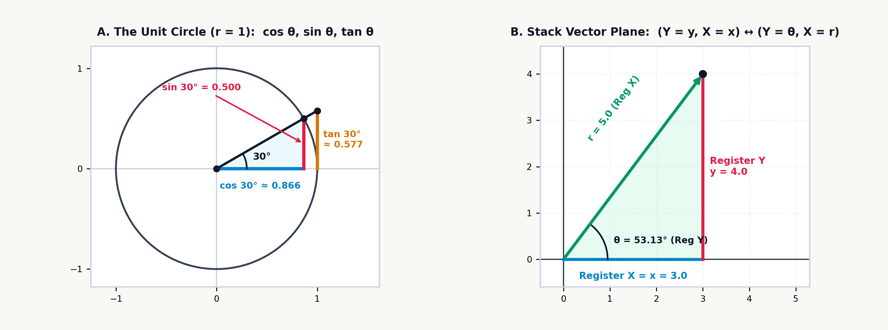
Physical CPA Studio Bridge (
Book 4 Units 05–06— Unit Circle Volvelle & 84.0 mm Comparator):
In the companion StackCalc High School & STEM Lab (Book 4, Units 05–06), students pair the two-disc rotating \(120\text{ mm}\) Unit Circle & Trig Volvelle with the \(84.0\text{ mm}\) Fraction Comparator to measure \((\cos\theta, \sin\theta)\) horizontal and vertical projections physically before evaluating trigonometric functions and polar–rectangular coordinate projections on the \((Y, X)\) stack. Dialing the Volvelle pointer to \(\theta = 30^\circ\) aligns the vertical sine sight-window with the \(\frac{1}{2}\) fraction block (\(42.0\text{ mm}\) out of \(84.0\text{ mm}\), \(\sin 30^\circ = 0.5\)), turning abstract phasor decompositions into direct caliper and comparator measurements.
As the unit radius arm (\(r = 1\)) rotates counterclockwise from \(0^\circ\) to \(30^\circ\) (\(\pi/6\text{ rad}\)), it frames the right-triangle projections on the horizontal and vertical axes:
As the radius vector rotates past \(45^\circ\), where \(\cos 45^\circ = \sin 45^\circ = \sqrt{2}/2 \approx 0.707\), and \(60^\circ\), where \(\cos 60^\circ = 1/2\) and \(\sin 60^\circ = \sqrt{3}/2\), it reaches the vertical axis at \(90^\circ\), where the horizontal projection vanishes to \(\cos 90^\circ = 0\) and the vertical projection reaches \(\sin 90^\circ = 1\). The third circular ratio, the tangent \(\tan\theta = \sin\theta / \cos\theta\), measures the vertical height where the extended radius ray intersects the tangent line \(x = 1\) at the right edge of the unit circle.
4.1.1 Three Ways to Slice a Circle: Degrees, Radians, and Gradians
Before evaluating a trigonometric function, the angular unit that subdivides a full revolution around the unit circle must be selected across the three standard engineering conventions:
| Angular Mode | Full Circle Revolution | Right Angle | Primary Engineering Field |
|---|---|---|---|
| Degrees | \(360^\circ\) | \(90^\circ\) | Structural Civil Engineering, Geodesy, Avionics |
| Radians | \(2\pi \approx 6.283\text{ rad}\) | \(\pi/2 \approx 1.571\text{ rad}\) | Mathematical Physics, Calculus, Wave Mechanics |
| Gradians | \(400\text{ grad}\) | \(100\text{ grad}\) | European Surveying, Mining Engineering |
All three conventions remain in engineering use because each serves a distinct structural symmetry. In sexagesimal (base-\(60\)) arithmetic, \(360\) is a highly composite integer divisible without remainder by \(2, 3, 4, 5, 6, 8, 9, 10, 12, 15, 18, 20, 24, 30, 36, 40, 45, 60, 72, 90, 120,\) and \(180\), so degrees allow a machinist, surveyor, or navigator to subdivide a circle into halves, thirds, quarters, fifths, sixths, eighths, or twelfths using exact integers.
In mathematical analysis, dividing a circle into \(360\) parts is an external convention. Radian measure defines the unit angle \(\theta\) intrinsically from the circle itself as the central angle subtending an arc whose length \(s\) equals the radius \(r\). Defining an angle as the dimensionless ratio of arc length to radius (\(\theta = s / r\)) makes one full revolution equal to \(2\pi\text{ radians}\) (\(\approx 6.283\text{ rad}\)) and one radian equal to \(180^\circ / \pi \approx 57.296^\circ\). Only in radians does the small-angle limit \(\lim_{\theta \to 0} (\sin\theta)/\theta\) equal \(1\), so that \(\frac{d}{d\theta}\sin\theta = \cos\theta\) without introducing a factor of \(\pi/180\) into differential equations of harmonic oscillation or wave propagation.
Gradians decimalize angular measure by defining a right angle as \(100\text{ gradians}\) (gons) and a full circle as \(400\text{ gradians}\). Because the metric quadrant from the Equator to the North Pole spans \(10,000\text{ km}\) per \(100\text{ grad}\), one gradian of latitude corresponds to \(100\text{ kilometers}\) along a meridian, one centigrad (\(0.01\text{ grad}\), or one decimal arcminute) corresponds to \(1\text{ kilometer}\), and \(10^{-5}\text{ grad}\) corresponds to \(1\text{ meter}\).
When a nautical chart or surveyor's plat specifies an angle in sexagesimal degrees, arcminutes, and arcseconds (\(D^\circ M' S''\), packed as D.MMSS, so \(35^\circ 15' 36''\) enters as 35.1536), converting to decimal degrees evaluates the base-\(60\) expansion \(D + M/60 + S/3600 = 35 + 15/60 + 36/3600 = 35.26^\circ\), which in turn scales by \(\pi/180^\circ\) to \(\approx 0.615\text{ radians}\). Before starting a trigonometric calculation, a quick check on \(\sin(45)\) confirms the active angular convention: in radians, \(\sin(45\text{ rad}) \approx 0.851\), while in degrees, \(\sin(45^\circ) = \sqrt{2}/2 \approx 0.707\) and \(\cos(60^\circ) = 0.5\).
A generic floating-point environment evaluating \(\cos(90^\circ)\) frequently returns a non-zero residual of \(6.12 \times 10^{-17}\) instead of exact zero. Inside a conventional math library, an angle in degrees is first converted to radians by multiplying by \(\pi / 180\), so \(90^\circ\) becomes a floating-point approximation to \(\pi / 2\). Because \(\pi\) is transcendental, its binary expansion does not terminate; an IEEE-754 double-precision register truncates \(\pi/2\) after 53 significand bits, producing a value that differs from mathematical \(\pi/2\) by approximately \(6.12 \times 10^{-17}\text{ radians}\).
Near \(\theta = \pi/2\), the derivative of \(\cos\theta\) is \(-\sin(\pi/2) = -1\), so evaluating the cosine polynomial on that truncated binary approximation leaves a \(6.12 \times 10^{-17}\) residual. In a structural stiffness matrix or coordinate transformation, a spurious non-zero entry of \(6.12 \times 10^{-17}\) can propagate into subsequent divisions or prevent zero-threshold tests from matching.
To prevent binary radian conversion from perturbing orthogonal geometry, the SC-32 performs exact axial angle clamping prior to polynomial evaluation: in degree or gradian measure, integer multiples of \(45^\circ\) and \(90^\circ\) are reduced modulo a full circle so that \(\sin(0^\circ) = 0\), \(\cos(0^\circ) = 1\), \(\sin(90^\circ) = 1\), \(\cos(90^\circ) = 0\), \(\sin(180^\circ) = 0\), \(\cos(180^\circ) = -1\), \(\sin(270^\circ) = -1\), \(\cos(270^\circ) = 0\), and \(\tan(\pm 45^\circ) = \pm 1\) return exact IEEE-754 zero and unity values. Evaluating \(\tan(90^\circ)\) or \(\tan(270^\circ)\) traps the vertical asymptote without returning a spurious \(1.63 \times 10^{16}\) reciprocal of rounding noise, and passing an argument \(|x| > 1\) to \(\arcsin x\) or \(\arccos x\) halts without altering the operational stack.
For non-axial angles, the SC-32 evaluates \(\sin x\), \(\cos x\), and \(\tan x\) via octant range reduction: any radian angle \(x\) is decomposed into its nearest integer multiple \(k = \lfloor \frac{2}{\pi}x + \frac{1}{2}\rfloor\) of \(\pi/2\) and a reduced argument \(r = (x - k C_1) - k C_2 \in [-\pi/4, +\pi/4]\), where \(\pi/2 = C_1 + C_2\) is split into an exact high-precision floating-point constant \(C_1\) and an extended-precision residual \(C_2\) so subtracting \(k(\pi/2)\) never suffers catastrophic cancellation. Inside \(|r| \le \pi/4 \approx 0.785\), the alternating Taylor–Maclaurin series converges rapidly:
At \(\theta = 30^\circ\), converting to radians yields \(r = \pi/6 \approx 0.524\text{ rad}\): summing just the first two terms \(r - r^3/6\) already comes within \(0.065\%\) of the exact half-chord, and adding the fifth-power term \(+r^5/120\) reproduces \(\sin(30^\circ) = 0.5\) to within \(2.1 \times 10^{-6}\).
4.1.2 Cannonballs, Inclined Planes, and Unclimbed Peaks
Across classical mechanics and civil surveying, planar trigonometric projections resolve a directed magnitude into orthogonal components along horizontal and vertical axes. Because every circular function (SIN, COS, TAN) is a unary operation that replaces an angle with its dimensionless unit-circle projection, any baseline distance or velocity waiting on the stack can be scaled without intermediate storage.
The parabolic trajectory of a projectile in a uniform gravitational field (neglecting air resistance) is the superposition of two independent orthogonal motions (Galilei, 1638). Horizontally, no net force acts after launch, so the horizontal velocity component \(v_{0x} = v_0\cos\theta\) remains constant downrange. Vertically, gravity \(g\) produces a constant downward acceleration that decelerates the initial vertical component \(v_{0y} = v_0\sin\theta\) until the projectile reaches its apex altitude \(H_{\max}\), where the vertical kinetic energy \(\frac{1}{2}mv_{0y}^2\) equals the gravitational potential energy \(mgH_{\max}\):
By the double-angle identity \(2\sin\theta\cos\theta = \sin(2\theta)\), maximum horizontal range over level ground occurs when \(\sin(2\theta) = 1\) (\(\theta = 45^\circ\)), and any two complementary launch angles summing to \(90^\circ\) (such as \(30^\circ\) and \(60^\circ\)) produce the same downrange distance \(R\). For an artillery shell leaving the muzzle at \(v_0 = 85\text{ m/s}\) inclined at \(\theta = 38^\circ\) (\(g \approx 9.807\text{ m/s}^2\)), the vertical launch velocity \(v_{0y} = 85\sin(38^\circ) \approx 52.331\text{ m/s}\) carries the shell to an apex altitude of \(H_{\max} = v_{0y}^2 / (2g) \approx \mathbf{139.628\text{ m}}\), while scaling the double-angle factor \(\sin(2\theta) = \sin(76^\circ) \approx 0.97\) by \(v_0^2 / g\) resolves the horizontal downrange distance \(R \approx \mathbf{714.86\text{ m}}\).
The same orthogonal resolution governs a mass \(m\) sliding down a plane inclined at angle \(\theta\) with kinetic friction coefficient \(\mu_k\). Gravity acts vertically downward with magnitude \(mg\), while the surface constrains motion along the incline. Resolving the gravitational vector into components parallel and normal to the surface shows that \(mg\sin\theta\) acts down the slope while \(mg\cos\theta\) acts perpendicular to the surface, producing a normal reaction \(N = mg\cos\theta\) and an opposing friction force \(\mu_k N = \mu_k mg\cos\theta\):
Because the mass \(m\) cancels out of both terms, bodies of any mass sharing the same coefficient \(\mu_k\) accelerate down the incline at the same rate, and at the critical angle of repose where \(\sin\theta = \mu_k\cos\theta\) (\(\tan\theta = \mu_k\)), the downslope gravitational component and upslope friction balance to zero. Along a ramp tilted at \(\theta = 34^\circ\) with \(\mu_k = 0.22\) (\(g \approx 9.807\text{ m/s}^2\)), subtracting \(0.22\cos(34^\circ) \approx 0.182\) from \(\sin(34^\circ) \approx 0.559\) gives the net traction factor \(\approx 0.377\), and multiplying by \(g\) yields \(a \approx \mathbf{3.695\text{ m/s}^2}\).
When an inaccessible summit cannot be plumbed by a vertical drop line, two-station optical leveling determines its elevation from a surveyed horizontal baseline: sighting the vertical elevation angle \(\alpha\) to the summit from Station 1, advancing a measured horizontal baseline distance \(d\) toward the peak to Station 2, and sighting the steeper elevation angle \(\beta\). Because the horizontal distances from the summit's plumb line to the two stations are \(x_1 = H\cot\alpha\) and \(x_2 = H\cot\beta\), their difference \(x_1 - x_2 = d\) eliminates the unmeasured horizontal distance to the mountain's interior plumb line:
Since \(\sec\theta = 1/\cos\theta\), \(\csc\theta = 1/\sin\theta\), and \(\cot\theta = 1/\tan\theta\) are the multiplicative reciprocals of the three primary circular ratios, dedicated keys for secant, cosecant, and cotangent are unnecessary: across a level baseline of \(d = 500\text{ m}\) with elevation angles \(\alpha = 24.5^\circ\) at Station 1 and \(\beta = 31.2^\circ\) at Station 2, the cotangent difference \(\cot(24.5^\circ) - \cot(31.2^\circ) \approx 0.543\text{ m/m}\) yields the summit height \(H \approx \mathbf{920.635\text{ meters}}\).
When the horizontal baseline \(D\) to the base of a vertical target is known—as in forestry timber cruising with a handheld optical clinometer—readings of the inclination angle \(\theta_{\text{top}} = +52^\circ\) to a Douglas fir's crown leader and the depression angle \(\theta_{\text{base}} = -8^\circ\) to its root collar at \(D = 30\text{ m}\) give total tree height \(H = D(\tan\theta_{\text{top}} - \tan\theta_{\text{base}}) \approx 30(1.42) \approx \mathbf{42.614\text{ m}}\). In a precision toolroom machine shop, setting up a surface grinder with a hardened steel sine bar of center-to-center roller spacing \(L = 5\text{ in}\) uses the vertical sine projection \(h = L\sin\theta = 5\sin(14^\circ 15') \approx \mathbf{1.231\text{ in}}\) (wrung from \(0.101'' + 0.13'' + 1''\) gauge blocks) to establish a taper angle of \(\theta = 14^\circ 15' 00''\).
Circular projection also governs the period of a simple pendulum: at finite angular amplitude \(\theta_0\), the exact gravitational restoring torque \(\sin\theta\) is smaller than the linearized approximation \(\theta\), lengthening the small-angle period \(T_0 = 2\pi\sqrt{L/g}\) according to the leading half-angle sine term \(T \approx T_0[1 + \frac{1}{4}\sin^2(\theta_0/2)]\). For a clock pendulum (\(T_0 = 2\text{ s}\)) released from \(\theta_0 = 45^\circ\), this finite-amplitude correction yields \(T \approx \mathbf{2.073\text{ seconds}}\) (\(+3.66\%\)).
4.1.3 Bending Light and Diffracting X-Rays
Whereas forward trigonometric functions map an angle to a dimensionless ratio of lengths, inverse trigonometric functions (ASIN, ACOS, ATAN) reverse that mapping, recovering the geometric angle from a measured ratio of phase velocities, refractive indices, wavelengths, or accelerations. Across geometric and physical optics, every boundary condition and interference fringe stems from a single wave principle: when a wavefront crosses an interface or passes through an aperture, phase continuity along the boundary ties the sine or cosine of the propagation angle to the ratio of wavelengths or phase speeds.
Across a boundary between two optical media of refractive indices \(n_1\) and \(n_2\) (where light travels at phase velocities \(v_1 = c/n_1\) and \(v_2 = c/n_2\)), a ray arriving at incidence angle \(\theta_1\) to the surface normal bends to a refracted angle \(\theta_2\) so that the wavefront crests stay phase-locked along the interface. That single phase-matching rule—Snell's law of refraction—also governs three limiting angles of optical engineering: the critical angle \(\theta_c\) for total internal reflection inside a high-index core (\(n_1 > n_2\)), the Numerical Aperture \(\text{NA}\) measuring the light-gathering half-cone \(\theta_{\max}\) of an optical fiber in an external medium of index \(n_0\), and Brewster's polarization angle \(\theta_B\), where reflected and refracted rays meet at right angles:
Steepening the incidence angle inside a denser core (\(n_1 > n_2\)) bends the refracted ray closer and closer to the interface until it skims along the boundary at \(\theta_2 = 90^\circ\) (\(\sin 90^\circ = 1\)); solving \(n_1\sin\theta_c = n_2\) gives \(\theta_c = \arcsin(n_2/n_1)\), beyond which \(100\%\) of the wave reflects internally. Applying the Pythagorean identity \(\cos^2\theta_c = 1 - (n_2/n_1)^2\) at that grazing limit defines the fiber's numerical aperture \(\text{NA} = \sqrt{n_1^2 - n_2^2} = n_0\sin\theta_{\max}\), fixing the widest external cone \(\theta_{\max}\) that can enter the core and stay guided. When the reflected ray (at angle \(\theta_B\)) and refracted ray (at angle \(\theta_2\)) meet at right angles (\(\theta_B + \theta_2 = 90^\circ\)), \(\sin\theta_2 = \cos\theta_B\) and Snell's law \(n_1\sin\theta_B = n_2\cos\theta_B\) reduces to \(\tan\theta_B = n_2/n_1\).
For a ray entering crown glass (\(n_2 = 1.52\)) from air (\(n_1 = 1.0003\)) at incidence angle \(\theta_1 = 40^\circ\), \(\arcsin(1.0003\sin 40^\circ / 1.52)\) yields the refracted angle \(\theta_2 \approx \mathbf{25.025^\circ}\). When laser light propagates from a denser silica optical fiber core (\(n_1 = 1.48\)) toward a lower-index cladding (\(n_2 = 1.45\)), dividing \(n_2 / n_1 \approx 0.98\) and taking the arcsine determines the critical total-internal-reflection angle \(\theta_c \approx \mathbf{78.444^\circ}\), while the fiber's Numerical Aperture \(\text{NA} = \sqrt{n_1^2 - n_2^2} \approx \mathbf{0.296}\) sets the maximum external acceptance half-cone \(\theta_{\max} = \arcsin(\text{NA}) \approx \mathbf{17.246^\circ}\) in air (\(n_0 = 1\)).
At the same dielectric interface, the fraction of wave energy reflected versus transmitted depends on the polarization of the electric-field vector relative to the boundary plane. At normal incidence across an uncoated air-to-crown-glass lens surface (\(n_1 = 1, n_2 = 1.52\)), Fresnel reflection returns \(R_{\perp} = \left(\frac{n_1 - n_2}{n_1 + n_2}\right)^2 = \left(\frac{-0.52}{2.52}\right)^2 \approx \mathbf{4.258\%}\) of incident light per surface. At oblique incidence at Brewster's angle \(\theta_B = \arctan(n_2/n_1)\), oscillating dipoles in the glass cannot radiate transverse waves along their own oscillation axis, so reflected light becomes completely linearly polarized parallel to the surface (for air to flint glass with \(n_1 = 1, n_2 = 1.62\), \(\arctan(1.62) \approx \mathbf{58.314^\circ}\)).
Once light is linearly polarized with irradiance \(I_0 = 80\text{ W/m}^2\) and passes through a second analyzer rotated by \(\theta = 35^\circ\), Malus's law projects the electric-field vector as \(E_0\cos\theta\), scaling transmitted intensity by the squared cosine \(I(\theta) = I_0\cos^2(35^\circ) \approx \mathbf{53.681\text{ W/m}^2}\). The same orthogonal force-ratio geometry (\(\tan\theta = F_x / F_y\)) that sets Brewster's angle in optics also resolves the zero-slip banking angle of a highway curve of radius \(R = 350\text{ m}\) at \(v = 100\text{ km/h}\) (\(\approx 27.778\text{ m/s}\), \(g \approx 9.807\text{ m/s}^2\)): equating horizontal centripetal acceleration \(v^2/R\) with the horizontal projection of normal force gives \(\theta_{\text{bank}} = \arctan(v^2 / gR) \approx \mathbf{12.67^\circ}\).
When coherent wavefronts of wavelength \(\lambda\) pass through an optical diffraction grating of slit spacing \(d\) (deflected at angle \(\theta_m\) for integer diffraction order \(m\)) or reflect at grazing Bragg angle \(\theta_B\) from parallel atomic crystal planes separated by interplanar lattice spacing \(d\) (at integer reflection order \(n\)), constructive interference occurs wherever neighboring rays arrive in phase by a whole number of wavelengths; similarly, when a star's light ray arriving at rest-frame angle \(\theta\) is observed from a spacecraft moving at relativistic speed fraction \(\beta = v/c\), Lorentz transformation of the wavefront normal shifts the apparent viewing angle to \(\theta'\):
Waves emerging from adjacent slits of a transmission grating accumulate the slant path difference \(d\sin\theta_m\) only once, whereas an X-ray wave penetrating to a deeper crystal plane traverses that slant step \(d\sin\theta_B\) twice—once descending to the lower atomic sheet and once reflecting back out—introducing the factor of \(2\) in \(2d\sin\theta_B = n\lambda\). For the relativistic observer, Lorentz contraction and time dilation combine in \((\cos\theta - \beta)/(1 - \beta\cos\theta)\) to sweep incoming starlight forward into a narrow searchlight cone ahead of the spacecraft.
In an optical diffraction grating, monochromatic green light of wavelength \(\lambda = 532\text{ nm}\) (\(5.32 \times 10^{-7}\text{ m}\)) illuminating a grating ruled at \(N = 600\text{ lines/mm}\) (slit pitch \(d = 1 / 600,000\text{ m} \approx 1.667\,\mu\text{m}\)) produces its second-order principal maximum (\(m = 2\)) at \(\theta_2 = \arcsin(2\lambda / d) \approx \mathbf{39.673^\circ}\). At atomic length scales, Bragg X-ray diffraction of wavelength \(\lambda \approx 0.154\text{ nm}\) (\(\text{Cu K}\alpha\)) reflected from parallel silicon \((111)\) lattice planes at glancing angle \(\theta_B = 14.22^\circ\) (\(n = 1\)) reveals an interplanar spacing of \(d = \lambda / (2\sin 14.22^\circ) \approx \mathbf{0.313\text{ nm}}\). And when a distant star's light arrives at \(\theta = 60^\circ\) (\(\cos\theta = 0.5\)) in the rest frame of a spacecraft moving at \(\beta = v/c = 0.5\), relativistic aberration shifts the ray's apparent direction to the transverse angle \(\cos\theta' = 0 \implies \theta' = \mathbf{90^\circ}\) (because the incoming ray's longitudinal velocity projection \(c\cos 60^\circ = 0.5c\) matches the spacecraft's forward speed \(v = 0.5c\)).
4.2 Triangles Across Land, Sea, and Air
Geodetic surveying, structural truss analysis, and wave interference rarely involve right-angled triangles. When a surveyor occupies a corner station \(C\) and measures straight-line distances \(a\) and \(b\) to two boundary monuments separated by an included angle \(C \ne 90^\circ\), dropping an altitude \(h\) from the vertex opposite side \(a\) decomposes the oblique triangle into two right triangles. In the inner right triangle containing angle \(C\), the vertical altitude has length \(h = b\sin C\), while the horizontal projection of side \(b\) along side \(a\) has length \(b\cos C\), so the remaining base of the outer right triangle is \((a - b\cos C)\). Applying the Pythagorean theorem to that outer right triangle and simplifying via \(\cos^2 C + \sin^2 C = 1\) yields the Law of Cosines:
Subtracting the projection cross-term \(2ab\cos C\) generalizes the Pythagorean sum \(a^2 + b^2\) to any planar triangle. When \(C = 90^\circ\), \(\cos 90^\circ = 0\) and the cross-term vanishes, recovering the Pythagorean theorem (\(c = \sqrt{a^2 + b^2}\)); when \(C < 90^\circ\) (an acute angle), \(\cos C > 0\) draws the opposite side \(c\) shorter than the right-triangle hypotenuse; and when \(C > 90^\circ\) (an obtuse angle), \(\cos C < 0\) makes \(-2ab\cos C\) positive and stretches \(c\) longer. Replacing the interior angle \(C\) with the exterior supplement \(180^\circ - \Delta\phi\) reverses the sign of the cosine term and yields the law of coherent wave interference for two acoustic or electromagnetic phasors of amplitudes \(A_1\) and \(A_2\) arriving with phase difference \(\Delta\phi\):
For a boundary corner with sides \(a = 45\text{ m}\) and \(b = 62\text{ m}\) separated by \(C = 48^\circ\), subtracting \(2(45)(62)\cos 48^\circ \approx 3,733.749\text{ m}^2\) from the Pythagorean sum \(a^2 + b^2 = 5,869\text{ m}^2\) and taking the square root yields the opposite boundary side \(c \approx \mathbf{46.209\text{ m}}\); for two coherent sound waves of amplitudes \(A_1 = 2.4\text{ Pa}\) and \(A_2 = 3.1\text{ Pa}\) interfering at phase angle \(\Delta\phi = 55^\circ\), adding \(2(2.4)(3.1)\cos 55^\circ \approx 8.535\text{ Pa}^2\) to \(A_1^2 + A_2^2 = 15.37\text{ Pa}^2\) and taking the square root resolves the resultant amplitude \(A_{\text{res}} \approx \mathbf{4.889\text{ Pa}}\).
When the Law of Cosines is applied across two supplementary sub-triangles that share a common line, the opposing cosines cancel (\(\cos\theta + \cos(180^\circ - \theta) = 0\)) and produce three purely algebraic distance and area laws without angles. First, in a triangle of outer sides \((a, b, c)\) where an internal tie-rod (cevian) of length \(d\) divides base \(a\) into segments \(m\) and \(n\) (\(m + n = a\)), canceling the supplementary cosines at the base yields Stewart's cevian theorem. Second and third, when a four-sided polygon of side lengths \((a, b, c, d)\), semiperimeter \(s = \frac{1}{2}(a + b + c + d)\), and interior diagonals \(p\) and \(q\) is inscribed inside a circle (a cyclic quadrilateral), its opposite vertex angles sum to \(180^\circ\); canceling their equal-and-opposite cosines yields Brahmagupta's area formula for the enclosed area \(K\) and Ptolemy's theorem relating the diagonals \(p, q\) to the four sides:
Stewart's relation weights the squared outer sides by their opposite base segments—\((b^2 m + c^2 n)/a\)—and subtracts the segment product \(mn\) to isolate the squared internal strut \(d^2\) directly from linear lengths. Brahmagupta's radical \(K = \sqrt{(s-a)(s-b)(s-c)(s-d)}\) treats all four sides symmetrically around the semiperimeter \(s\), reducing to Heron's triangle formula \(\sqrt{s(s-a)(s-b)(s-c)}\) whenever the fourth side \(d\) shrinks to zero, while Ptolemy's identity \(p \cdot q = ac + bd\) equates the product of the two interior diagonals to the sum of the opposite-side products.
For a roof truss triangle with sides \(b = 13\text{ m}\), \(c = 15\text{ m}\), and base \(a = 14\text{ m}\) split into segments \(m = 6\text{ m}\) (adjacent to side \(c\)) and \(n = 8\text{ m}\) (adjacent to side \(b\)), Stewart's theorem determines the internal tie-rod length \(d = \sqrt{201 - 48} \approx \mathbf{12.369\text{ m}}\) from the side lengths alone; for a cyclic quadrilateral with sides \(a = 5, b = 6, c = 7, d = 8\) (semiperimeter \(s = 13\)), Brahmagupta's radical gives area \(K = \sqrt{8 \times 7 \times 6 \times 5} \approx \mathbf{40.988}\) while Ptolemy's opposite-side sum gives the diagonal product \(pq = 5(7) + 6(8) = \mathbf{83}\).
The altitude \(h = b\sin C = c\sin B\) dropped to base \(a\) establishes the Law of Sines, the circumcircle diameter \(2R_{\text{circ}}\), and the two-side included-angle cross-product area \(K = \frac{1}{2}ab\sin C\) (paired with the semiperimeter \(s = \frac{1}{2}(a + b + c)\) and the inscribed circle radius \(r_{\text{in}} = K/s\)):
For the roof truss triangle with sides \(a = 14\text{ m}, b = 13\text{ m}, c = 15\text{ m}\) (\(s = 21\text{ m}\)) and enclosed area \(K = \mathbf{84\text{ m}^2}\), these relations determine the included vertex angle \(C = \arcsin\!\left(\frac{2K}{ab}\right) \approx \mathbf{67.38^\circ}\), the circumcircle radius \(R_{\text{circ}} = \frac{abc}{4K} = \mathbf{8.125\text{ m}}\), and the incircle radius \(r_{\text{in}} = K/s = \mathbf{4\text{ m}}\).
4.2.1 The Two-Register Vector Plane
In scalar arithmetic, binary operators treat Registers \(Y\) and \(X\) as two scalar operands that collapse into a single result. In two-dimensional vector geometry, Registers \(Y\) and \(X\) operate together as a coordinate pair representing a point or vector in the plane. Navigators, surveyors, and electrical engineers convert continuously between polar coordinates \((r, \theta)\) and rectangular coordinates \((x, y)\) because field instruments measure in polar form while vector addition requires rectangular components. When a radar antenna tracks a target, a surveyor sights a monument with a theodolite, or an aircraft instrument panel displays airspeed and heading, the measurement consists of a radial magnitude \(r\) and a direction angle \(\theta\).
By the parallelogram law of forces, non-collinear vectors cannot be summed by adding their scalar magnitudes \(r_1 + r_2\). To combine an aircraft's airspeed vector with a crosswind, or to verify that a multi-leg property survey closes back onto its starting monument, each polar vector \((r, \theta)\) must first be resolved into its horizontal component (\(x = r\cos\theta\)) and vertical component (\(y = r\sin\theta\)), summed along each orthogonal axis (\(\Sigma x, \Sigma y\)), and converted back into a resultant magnitude \(r\) and direction \(\theta\).
With the primary horizontal coordinate \(x\) and radial magnitude \(r\) in Register \(X\) (Line 1) and the vertical coordinate \(y\) and direction angle \(\theta\) in Register \(Y\) (Line 2), both components remain visible together: rectangular-to-polar conversion maps \((Y = y,\; X = x)\) in place to \((Y = \theta = \operatorname{atan2}(y, x),\; X = r = \sqrt{x^2 + y^2})\), and polar-to-rectangular projection maps \((Y = \theta,\; X = r)\) in place to \((Y = y = r\sin\theta,\; X = x = r\cos\theta)\) without disturbing Registers \(Z\) or \(T\).
The two-argument rectangular-to-polar transformation avoids the quadrant ambiguity and axial singularity of dividing \(y / x\) and taking a scalar \(\arctan(y/x)\), which receives only the single scalar quotient \(y/x\). In Quadrant III, where both \(x = -3\) and \(y = -4\) are negative, the quotient \((-4)/(-3) \approx +1.333\) is positive, so \(\arctan(y/x)\) returns \(\approx +53.13^\circ\) in Quadrant I, an error of \(180^\circ\); on the positive or negative vertical axis where \(x = 0\) and \(y = \pm 10\), dividing \(y/x\) encounters a division-by-zero singularity. The four-quadrant \(\operatorname{atan2}(y, x)\) function resolves this ambiguity by inspecting the individual signs of \(y\) in Register \(Y\) and \(x\) in Register \(X\) across the full \((-180^\circ, +180^\circ]\) circle:
| Quadrant / Axis | Signs of \((x, y)\) | Four-Quadrant \(\operatorname{atan2}(y, x)\) Formula (in DEG) |
Example Vector \((x, y)\) | Output \((Y = \theta, X = r)\) |
|---|---|---|---|---|
| Quadrant I | \(x > 0,\; y \ge 0\) | \(\arctan(y/x)\) | \((+3, +4)\) | \(\theta \approx +53.13^\circ,\; r = 5\) |
| Quadrant II | \(x < 0,\; y \ge 0\) | \(\arctan(y/x) + 180^\circ\) | \((-3, +4)\) | \(\theta \approx +126.87^\circ,\; r = 5\) |
| Quadrant III | \(x < 0,\; y < 0\) | \(\arctan(y/x) - 180^\circ\) | \((-3, -4)\) | \(\theta \approx -126.87^\circ,\; r = 5\) |
| Quadrant IV | \(x > 0,\; y < 0\) | \(\arctan(y/x)\) | \((+3, -4)\) | \(\theta \approx -53.13^\circ,\; r = 5\) |
| Vertical Axes | \(x = 0,\; y \ne 0\) | \(+90^\circ\) if \(y > 0\), \(-90^\circ\) if \(y < 0\) | \((0, +10)\) | \(\theta = +90^\circ,\; r = 10\) |
A vector of radius \(r = 10\) along the positive vertical axis (\(\theta = 90^\circ\)) illustrates the register mapping: placing angle \(\theta\) in Register \(Y\) and radius \(r\) in Register \(X\) yields \(0\) in Register \(X\) (\(x = 10\cos 90^\circ\)) and \(10\) in Register \(Y\) (\(y = 10\sin 90^\circ\)). In the inverse direction, converting a \(3\text{-}4\text{-}5\) right triangle (\(y = 4\) in Register \(Y\), \(x = 3\) in Register \(X\)) places the angle \(\theta \approx 53.13^\circ\) in Register \(Y\) and the hypotenuse \(r = 5\) in Register \(X\).
When a land surveyor or navigator records the distance \(r_i\) and North Azimuth \(\alpha_i\) (measured clockwise from True North, where \(0^\circ = \text{North}\) and \(90^\circ = \text{East}\)) around a closed property boundary, reflecting the coordinate axes across the \(45^\circ\) Northeast diagonal swaps sine and cosine so that Northing latitude is \(\Delta N_i = r_i\cos\alpha_i\) and Easting departure is \(\Delta E_i = r_i\sin\alpha_i\):
Because polar-to-rectangular projection evaluates \((Y = r\sin\theta,\; X = r\cos\theta)\), entering a Cartesian angle \(\theta\) (counterclockwise from East) produces \((Y = \Delta y,\; X = \Delta x)\), while entering a surveyor's or pilot's North Azimuth \(\alpha\) (clockwise from North) places Easting departure (\(\Delta E = r\sin\alpha\)) in Register \(Y\) and Northing latitude (\(\Delta N = r\cos\alpha\)) in Register \(X\)—and rectangular-to-polar conversion evaluates \(\operatorname{atan2}(\Delta E, \Delta N)\) to recover the North Azimuth.
Across electrical power engineering and structural mechanics, orthogonal projections resolve directed quantities into active and quadrature components across Registers \(X\) and \(Y\). When an inductive AC motor draws \(I_{\text{rms}} = 8.5\text{ A}\) from a \(V_{\text{rms}} = 120\text{ V}\) line at a lagging phase angle of \(\phi = 32^\circ\), projecting the apparent power \(S = V_{\text{rms}}I_{\text{rms}} = 1,020\text{ VA}\) at \(32^\circ\) resolves real shaft power \(P = S\cos\phi \approx \mathbf{865.01\text{ W}}\) in Register \(X\) and reactive magnetic power \(Q = S\sin\phi \approx \mathbf{540.518\text{ VAR}}\) in Register \(Y\). Even in three-dimensional space frames, the interior mitre angle \(\theta\) between skew struts \(\vec{A} = (4, 6, 8\text{ m})\) (\(|\vec{A}|^2 = 116\text{ m}^2\)) and \(\vec{B} = (2, -3, 5\text{ m})\) (\(|\vec{B}|^2 = 38\text{ m}^2\)) with dot product \(\vec{A}\cdot\vec{B} = 4(2) + 6(-3) + 8(5) = 30\text{ m}^2\) follows from the Cauchy–Schwarz identity \(\cos\theta = \frac{\vec{A}\cdot\vec{B}}{|\vec{A}||\vec{B}|} \approx 0.452\), giving \(\theta \approx \mathbf{63.137^\circ}\).
4.2.2 Great Circles, Migrating Godwits, and the Oblate Earth
Over intercontinental distances, planar Cartesian trigonometry must be replaced by spherical geometry. On a spherical Earth of mean radius \(R_E = 6,371\text{ km}\), the shortest path between two points at latitude/longitude coordinates \((\phi_1, \lambda_1)\) and \((\phi_2, \lambda_2)\) is not a constant-bearing rhumb line (loxodrome) on a Mercator projection, but a great-circle orthodrome: the arc formed on the surface by a plane passing through both points and the center of the Earth.
The Spherical Law of Cosines follows from three-dimensional unit-sphere coordinates. On a sphere of unit radius \(r = 1\), a point at latitude \(\phi\) and longitude \(\lambda\) has polar coordinate \(z = \sin\phi\) and equatorial radius \(\cos\phi\), which projects onto the equatorial \((x, y)\) axes as \(x = \cos\phi\cos\lambda\) and \(y = \cos\phi\sin\lambda\):
Between those two unit vectors, the Euclidean inner product \(\hat{u}_1 \cdot \hat{u}_2 = \cos d\) and the cosine difference identity \(\cos\lambda_1\cos\lambda_2 + \sin\lambda_1\sin\lambda_2 = \cos(\lambda_2 - \lambda_1)\) express the central geocentric angle \(d\) as the sum of the axial projection (\(\sin\phi_1\sin\phi_2\)) and the equatorial projection (\(\cos\phi_1\cos\phi_2\cos\Delta\lambda\)):
Because meridians converge toward the poles as \(\cos\phi\), the great-circle route between San Francisco (\(\phi_1 \approx 37.619^\circ\text{ N}, \lambda_1 = 122.375^\circ\text{ W} = -122.375^\circ\)) and Tokyo Narita (\(\phi_2 = 35.772^\circ\text{ N}, \lambda_2 \approx 140.393^\circ\text{ E}\), longitude span \(\Delta\lambda \approx 97.232^\circ\)) arcs northward toward the Aleutian Islands near \(50^\circ\text{ N}\), where each degree of longitude spans a shorter arc than at \(36^\circ\text{ N}\). Combining the polar axial projection \(\sin\phi_1\sin\phi_2 \approx 0.357\) with the equatorial projection \(\cos\phi_1\cos\phi_2\cos\Delta\lambda \approx -0.081\) gives \(\cos d \approx 0.276\), whose arccosine resolves a central angle of \(d \approx \mathbf{73.983^\circ}\), or \(\approx \mathbf{8,226.6\text{ km}}\) at \(R_E = 6,371\text{ km}\).
The same Spherical Law of Cosines solves the astronomical triangle connecting the North Celestial Pole, an observer's zenith at latitude \(\phi\), and the sun at seasonal declination \(\delta\) and hour angle \(\omega\) (\(15^\circ\) per hour from local solar noon), determining the solar horizon altitude \(\alpha\) and South-referenced azimuth \(\gamma_s\):
At latitude \(\phi = 32^\circ\text{ N}\), declination \(\delta = 18.5^\circ\), and hour angle \(\omega = 45^\circ\), summing the two spherical projections and taking the arcsine locks a solar concentrator onto \(\alpha \approx \mathbf{47.461^\circ}\). Migratory birds combine these same geometric relationships during transoceanic flight: each autumn, the bar-tailed godwit (Limosa lapponica) departs Alaska's tidal flats and flies \(11,000\text{ kilometers}\) non-stop across the Pacific Ocean to New Zealand over nine days, coupling its internal circadian rhythm with solar elevation and geomagnetic inclination cues to follow a great-circle orthodrome while compensating for crosswind drift.
When two waypoints lie only a few meters or kilometers apart (\(d \to 0^\circ\)), \(\cos d\) approaches \(1\), where subtracting from \(1\) in the Spherical Law of Cosines loses significant digits. To eliminate near-zero cosine cancellation in marine and avionics navigation, the Haversine ("half-versed-sine", \(\operatorname{hav}\theta = \frac{1 - \cos\theta}{2} = \sin^2(\theta/2)\)) replaces cosine differences with squared half-angle sines:
For two harbor channel buoys at latitude \(\phi_1 = 37.8^\circ\text{ N}\) and \(\phi_2 = 37.81^\circ\text{ N}\) (\(\Delta\phi/2 = 0.005^\circ\)) and longitude separation \(\Delta\lambda = 0.015^\circ\) (\(\Delta\lambda/2 = 7.5 \times 10^{-3\circ}\)), the Haversine formula evaluates \(\operatorname{hav} d \approx 7.615 \times 10^{-9} + 1.07 \times 10^{-8} \approx 1.831 \times 10^{-8}\) without subtracting \(\cos d \approx 1\) from \(1\), resolving the surface separation \(D = R_E \cdot 2\arcsin(\sqrt{\operatorname{hav} d}) \approx \mathbf{1,724.269\text{ meters}}\) to millimeter precision.
Where satellite navigation requires sub-meter geodetic accuracy, the spherical model is refined to an oblate spheroid. Because Earth's diurnal rotation causes the equatorial radius to exceed the polar radius by \(21.385\text{ km}\)—a bulge large enough that if a smartphone GPS receiver treated Earth as a perfect sphere, its map pin at mid-latitudes would miss the street by nearly \(20\text{ kilometers}\)—the World Geodetic System 1984 (WGS84) reference ellipsoid (equatorial semi-major axis \(a = 6,378,137\text{ m}\), flattening \(f \approx 1/298.257\), first eccentricity squared \(e^2 = 2f - f^2 \approx 6.694 \times 10^{-3}\)) defines the prime-vertical radius of curvature \(N(\phi)\) and Earth-Centered Earth-Fixed coordinates \((X, Y, Z)\) at geodetic latitude \(\phi\), longitude \(\lambda\), and ellipsoidal height \(h\):
At mid-latitude \(\phi = 45^\circ\text{ N}\) (\(\sin^2 45^\circ = 0.5\)), dividing \(a = 6,378,137\text{ m}\) by \(\sqrt{1 - 0.5 e^2}\) yields a prime-vertical radius of curvature of \(N(45^\circ) \approx \mathbf{6,388,838.29\text{ m}}\).
4.2.3 Hanging Chains, Standing Arches, and the Unit Hyperbola
A flexible chain hanging under its own weight curves into a hyperbolic cosine, not a quadratic parabola, because of how its load is distributed. Whereas a quadratic parabola (\(y = kx^2\)) arises only when vertical load is distributed uniformly per unit of horizontal span \(dx\) (as in a suspension-bridge cable supporting a flat roadway deck), an unburdened hanging chain distributes its weight uniformly per unit of curved arc length \(ds = \sqrt{1 + (dy/dx)^2}\,dx\).
For a chain segment of arc length \(s\) in static equilibrium between the lowest vertex (horizontal tension \(T_0\)) and a point \((x, y)\) at tangent angle \(\psi\), horizontal tension stays constant at \(T\cos\psi = T_0\) while vertical support balances the cable weight \(T\sin\psi = w \cdot s\), where \(w\) is the weight per unit length in \(\text{N/m}\). Dividing the vertical balance by the horizontal balance relates the local slope \(\frac{dy}{dx} = \tan\psi\) to the arc length \(s\):
A derivative with respect to \(x\) gives \(\frac{d^2 y}{dx^2} = \frac{1}{a}\frac{ds}{dx} = \frac{1}{a}\sqrt{1 + (dy/dx)^2}\), whose solution is the symmetric mean of rising and decaying exponentials \(e^{x/a}\) and \(e^{-x/a}\). This curve is the catenary (from the Latin catena, "chain"), governed by the hyperbolic cosine:
With the origin placed at the lowest vertex of the span, the vertical rise \(y(x)\) follows the shifted hyperbolic cosine, the arc length \(s(x)\) measured from the vertex to \(x\) follows the hyperbolic sine, and the local cable tension \(T(x) = \sqrt{T_0^2 + (ws)^2}\) is proportional to the height \(y + a\):
These exponential combinations are termed hyperbolic functions and share keys with \(\sin\), \(\cos\), and \(\tan\) because while the circular functions \((\cos u, \sin u)\) parameterize the unit circle \(x^2 + y^2 = 1\) (sweeping out a circular sector of area \(u/2\)), squaring and subtracting \(\cosh u\) and \(\sinh u\) shows that \((\cosh u, \sinh u)\) parameterize the right branch of the unit hyperbola \(x^2 - y^2 = 1\) (sweeping out a hyperbolic sector of area \(u/2\)):
Their derivatives parallel the circular functions without sign reversal on \(\frac{d}{du}\cosh u\):
When inverted into an arch, a hanging catenary curve exchanges pure axial tension for pure axial compression without bending moment, so a free-standing masonry or steel arch of uniform cross-section carries its own dead weight along its centerline when shaped as an inverted hyperbolic cosine.
Beyond catenary cables and compression arches, the hyperbolic tangent \(\tanh(u)\) governs physical systems that transition smoothly between linear and saturated asymptotic regimes. When surface gravity waves of wavelength \(\lambda\) (wavenumber \(k = 2\pi/\lambda\)) propagate across an ocean of depth \(h\), potential-flow boundary conditions at the seabed and free surface tie their phase velocity \(c_{\text{wave}}\) to the hyperbolic tangent of the dimensionless depth-to-wavelength product \(kh\):
In deep water (\(kh \gg 1\)), \(\tanh(kh) \to 1\), so long-wavelength swell travels faster than short-wavelength chop (\(c_{\text{wave}} \approx \sqrt{g/k}\)). In shallow water—or during a transoceanic tsunami whose wavelength far exceeds the ocean depth (\(kh \ll 1\))—\(\tanh(kh) \approx kh\), the wavenumber \(k\) cancels out of the radical, and the wave propagates across the basin near the non-dispersive shallow-water speed \(c_{\text{wave}} \approx \sqrt{gh}\).
The hyperbolic tangent also linearizes relativistic velocity addition. In classical kinematics, collinear velocities add linearly (\(v_1 + v_2\)), which would permit successive boosts to exceed the speed of light \(c\). Relativistic kinematics combines normalized collinear velocities \(\beta_i = v_i/c\) according to \(\beta_{\text{total}} = (\beta_1 + \beta_2)/(1 + \beta_1\beta_2)\), which matches the hyperbolic tangent addition identity \(\tanh(\theta_1 + \theta_2) = (\tanh\theta_1 + \tanh\theta_2)/(1 + \tanh\theta_1\tanh\theta_2)\). Mapping each normalized velocity \(\beta = v/c\) to its hyperbolic angle (rapidity) \(\theta = \operatorname{artanh}(v/c)\) restores additive composition in spacetime:
Because \(\tanh(\theta)\) approaches \(1\) asymptotically as \(\theta \to \infty\), arbitrarily many finite rapidity boosts sum without exceeding \(c\). And in conformal Mercator cartography, where every constant-compass-bearing rhumb line (loxodrome) plots as a straight line, stretching the horizontal East–West scale by \(\sec\phi = 1/\cos\phi\) requires stretching the vertical North–South map coordinate \(y(\phi)\) by the integral of \(\sec\phi\,d\phi\), which evaluates to the inverse hyperbolic sine of the circular tangent (and inverts via the Gudermannian function \(\operatorname{gd}(u)\)):
On the live stack, these circular, inverse-trigonometric, vector, and hyperbolic mappings share a common two-register geometry across Registers \(Y\) and \(X\).
4.3 Circular, Vector, and Hyperbolic Synthesis on the Stack
The SC-32's two-register vector architecture decomposes any polar magnitude and angle \((r, \theta)\) into both orthogonal rectangular components \((r\sin\theta, r\cos\theta)\) across Registers \(Y\) and \(X\), avoiding re-entry of the hypotenuse or angle across four trigonometric subsystems:
- Angular Mode Selection (
[↰] [MODES]): Left-shifted[↰] [MODES]on[+/-]assigns \(\mathtt{[DEG]} \;\; \mathtt{[RAD]} \;\; \mathtt{[GRAD]} \;\; \mathtt{[.]} \;\; \mathtt{[,]}\) to the softkey strip. Degrees (DEG) is the default angular mode (indicated in the top-left status bar); tappingRADorGRADswitches all circular and polar operations to radians or gradians (while[↰] [▸DEG]and[↱] [▸RAD]on6convert individual angle values in Register \(X\)). - Sexagesimal Angles & Clocks (
[↰] [▸HR]and[↱] [▸HMS]): On the5key, left-shifted[↰] [▸HR]converts packed degrees-minutes-seconds (D.MMSS, or hours-minutes-secondsH.MMSS) in Register \(X\) into decimal degrees/hours in place, while right-shifted[↱] [▸HMS]converts decimal hours/degrees back intoH.MMSS(D.MMSS). - 2D Polar \(\leftrightarrow\) Rectangular Projection (
[↱] [▸y,x]and[↰] [▸θ,r]): In the HP-32SII register convention—which placed horizontal \(x\) and radial magnitude \(r\) in Register \(X\) so the primary coordinate and radius would appear on a single-line display—right-shifted[↱] [▸y,x]on the4key takes direction angle \(\theta\) in Register \(Y\) and magnitude \(r\) in Register \(X\) and replaces \((Y, X)\) in place with the rectangular components \((Y = r\sin\theta,\; X = r\cos\theta)\). Left-shifted[↰] [▸θ,r]performs the inverse transformation, converting \((Y = y,\; X = x)\) into polar angle \(Y = \operatorname{atan2}(y, x)\) in Register \(Y\) and radius \(r = \sqrt{x^2 + y^2}\) in Register \(X\) (Figure 4.2). - Hyperbolic Prefix (
[↰] [HYP]): Left-shifted[↰] [HYP]on[R↓]arms the transientHYPannunciator for the next trigonometric key, pairing with[SIN],[COS], or[TAN]for \(\sinh, \cosh, \tanh\), or with[↰] [ASIN],[↰] [ACOS], or[↰] [ATAN]for \(\operatorname{arsinh}, \operatorname{arcosh}, \operatorname{artanh}\) (100 [ENTER] 800 [÷] [↰] [HYP] [COS] 1 [-] 800 [×]evaluates the catenary sag \(800(\cosh(100/800) - 1) \approx 6.258\text{ m}\)).
4.3.1 Surveyor's Bearings and Flight-Deck Clocks
When a surveyor's total station records a North-Azimuth bearing in sexagesimal degrees-minutes-seconds (D.MMSS, \(42^\circ 18' 36'' \to\) 42.1836) over a horizontal distance of \(125\text{ m}\), converting the bearing to decimal degrees (\(42.31^\circ\)) and projecting the \(125\text{ m}\) course resolves Easting departure \(\Delta E \approx \mathbf{84.143\text{ m}}\) in Register \(Y\) and Northing latitude \(\Delta N \approx \mathbf{92.439\text{ m}}\) in Register \(X\). In the inverse direction, when planning a \(385\text{ NM}\) cross-country flight at \(162\text{ knots}\), duplicating the decimal flight duration (\(\approx 2.377\text{ hr}\)) formats the clock time (2.2236, or \(2\text{ hr } 22\text{ min } 36\text{ s}\)) in Register \(Y\) while multiplying the decimal hours by \(14.8\text{ gal/hr}\) computes fuel burn (\(\approx \mathbf{35.173\text{ gal}}\)) in Register \(X\):
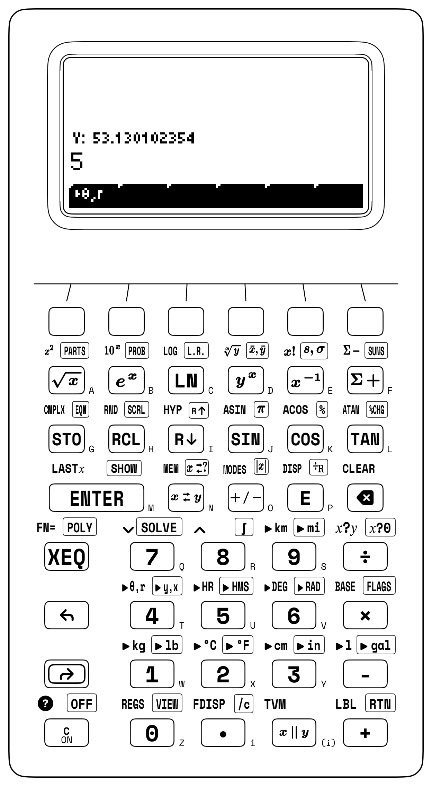
| Keystroke | Register T | Register Z | Register Y | Register X | What Happens on the Stack |
|---|---|---|---|---|---|
42.1836 [↰] [▸HR] 125 [↱] [▸y,x] |
\(0\) | \(0\) | \(84.143\) | \(92.439\) | Convert \(42^\circ 18' 36''\) to \(42.31^\circ\) and project \(125\text{ m}\) course to \((\Delta E, \Delta N)\) |
385 [ENTER] 162 [÷] |
\(84.143\) | \(84.143\) | \(92.439\) | \(2.377\) | Flight time \(385\text{ NM} / 162\text{ kts} \approx 2.377\text{ hr}\) |
[ENTER] [↱] [▸HMS] |
\(84.143\) | \(92.439\) | \(2.377\) | \(2.2236\) | Convert leg time to H.MMSS (\(2\text{h } 22\text{m } 36\text{s}\)) |
[x⇄y] 14.8 [×] |
\(92.439\) | \(92.439\) | \(2.2236\) | \(35.173\) | Fuel burn (\(35.173\text{ gal}\)) in \(X\); H.MMSS ETA in \(Y\) |
Sexagesimal conversion and polar projection apply whenever field instruments report angles in degrees, minutes, and seconds or require orthogonal layout coordinates. In Eratosthenes's meridian arc, dividing \(360^\circ\) by the \(7^\circ 12'\) (7.12 \(\to 7.2^\circ\)) solstice shadow angle and multiplying by the \(5,000\text{-stadia}\) baseline yields the \(\mathbf{250,000\text{-stadia}}\) terrestrial circumference in four keystrokes. In civil highway engineering, converting a central deflection angle \(\Delta = 36^\circ 24' 00''\) (36.24) to \(36.4^\circ\) and halving it to \(18.2^\circ\) on a curve of radius \(R = 250\text{ m}\) yields the long chord \(L_c = 2R\sin(18.2^\circ) \approx \mathbf{156.168\text{ m}}\), middle ordinate \(M = R(1 - \cos 18.2^\circ) \approx \mathbf{12.507\text{ m}}\), and tangent distance \(T = R\tan(18.2^\circ) \approx \mathbf{82.196\text{ m}}\). And in a CNC machine shop, indexing the \(60^\circ\) hole on a \(R = 3.25\text{-inch}\) bolt circle places both milling table coordinates on the screen together (\(Y \approx \mathbf{2.815\text{ in}}, X = \mathbf{1.625\text{ in}}\)).
4.3.2 Adding Vectors in the Sky: The Aviation Wind Triangle
To add two non-collinear polar vectors \(\vec{V}_1 + \vec{V}_2\) using the four-register stack alone, project the first vector \((\theta_1, r_1)\) into \((Y = E_1, X = N_1)\), project the second vector \((\theta_2, r_2)\) into \((Y = E_2, X = N_2)\) (which lifts \(E_1\) into Register \(T\) and \(N_1\) into Register \(Z\)), roll the stack to align matching axes without losing the upper component to \(T\)-replication, add the components, and convert back to polar form. For an aircraft flying at true airspeed \(V_{\text{air}} = 220\text{ kts}\) on North-Azimuth heading \(\theta_1 = 45^\circ\) (\(V_{\text{air}, E} \approx 155.563\text{ kts}, V_{\text{air}, N} \approx \mathbf{155.563\text{ kts}}\)) while pushed by a \(35\text{-kt}\) crosswind blowing toward azimuth \(\theta_2 = 130^\circ\) (\(V_{\text{wind}, E} \approx 26.812\text{ kts}, V_{\text{wind}, N} \approx \mathbf{-22.498\text{ kts}}\)), summing the Northing components (\(N_1 + N_2 \approx 155.563 - 22.498 \approx 133.066\text{ kts}\)) and Easting components (\(E_1 + E_2 \approx 155.563 + 26.812 \approx 182.375\text{ kts}\)) and converting \((\Delta E, \Delta N)\) back to polar form resolves a ground speed of \(V_{\text{ground}} \approx \mathbf{225.759\text{ knots}}\) along true compass track \(\theta_{\text{track}} \approx \mathbf{53.884^\circ}\):
| Keystroke | Register T | Register Z | Register Y | Register X | What Happens on the Stack |
|---|---|---|---|---|---|
45 [ENTER] 220 [↱] [▸y,x] |
\(0\) | \(0\) | \(155.563\) | \(155.563\) | Airspeed components \((Y = E_1,\; X = N_1)\) (kts) |
130 [ENTER] 35 [↱] [▸y,x] |
\(155.563\) | \(155.563\) | \(26.812\) | \(-22.498\) | Wind \((Y = E_2,\; X = N_2)\) lifts \((T = E_1,\; Z = N_1)\) |
[x⇄y] [R↓] [+] [x⇄y] [↱] [R↑] [+] |
\(26.812\) | \(26.812\) | \(133.066\) | \(182.375\) | Sum Northing (\(133.066\text{ kts}\)) in \(Y\) and Easting (\(182.375\text{ kts}\)) in \(X\) |
[x⇄y] [↰] [▸θ,r] |
\(26.812\) | \(26.812\) | \(53.884\) | \(225.759\) | Ground track \(\theta \approx 53.884^\circ\) in \(Y\) and ground speed \(225.759\text{ kts}\) in \(X\) |
The same \((Y, X)\) transformation links orbital mechanics and solid mechanics. Along an elliptical orbit of eccentricity \(e = 0.24\) (measuring how stretched the ellipse is from a circle \(e = 0\)) at true anomaly angle \(\nu = 50^\circ\) (the angular position of the spacecraft measured forward from perihelion), the radial distance grows as the craft climbs outward, tilting the velocity vector above the local horizontal by the flight-path climb angle \(\gamma_f\) according to \(\tan\gamma_f = \frac{e\sin\nu}{1 + e\cos\nu}\): projecting \((Y = \nu,\; X = e)\) into rectangular components forms \((Y = e\sin\nu,\; X = e\cos\nu)\), adding \(1\) to Register \(X\) forms the tangential denominator \(1 + e\cos\nu\), and converting back to polar coordinates extracts the flight-path climb angle \(\gamma_f \approx \mathbf{9.05^\circ}\) in Register \(Y\) and the dimensionless speed factor \(\sqrt{1 + 2e\cos\nu + e^2} \approx \mathbf{1.169}\) in Register \(X\).
When a vector sum extends beyond two vectors to a four-leg or twenty-leg land survey traverse, feeding each polar-to-rectangular projection into the statistical accumulator sums Northing (\(\Sigma x = \Sigma\Delta N\)) and Easting (\(\Sigma y = \Sigma\Delta E\)) across arbitrarily many stations without overflowing the four-level stack. Around a closed four-course rectangular parcel—\(100\text{ m}\) at \(60^\circ\) (\(\Delta E \approx 86.603\text{ m}, \Delta N = 50\text{ m}\)), \(80\text{ m}\) at \(150^\circ\) (\(\Delta E = 40\text{ m}, \Delta N \approx -69.282\text{ m}\)), \(100\text{ m}\) at \(240^\circ\) (\(\Delta E \approx -86.603\text{ m}, \Delta N = -50\text{ m}\)), and \(80\text{ m}\) at \(330^\circ\) (\(\Delta E = -40\text{ m}, \Delta N \approx 69.282\text{ m}\))—the accumulated sums confirm that both \(\Sigma\Delta E\) and \(\Sigma\Delta N\) vanish to \(0\text{ m}\). If a field survey or marine dead-reckoning cruise fails to close, converting the accumulated misclosure \((\Sigma\Delta E, \Sigma\Delta N)\) to polar coordinates gives the linear closure error and its azimuth (whose reciprocal bearing \(\theta \pm 180^\circ\) returns to the starting monument).
4.3.3 Catenary Sag, Tsunami Speeds, and Planetary Orbits
Because the hyperbolic functions transform Register \(X\) in place, catenary sag, wave dispersion, and relativistic velocity addition evaluate from the dimensionless inner ratio outward. For a \(200\text{-meter}\) transmission span (\(x = 100\text{ m}\)) with catenary parameter \(a = 800\text{ m}\), dividing \(x/a = 0.125\), taking the hyperbolic cosine, subtracting \(1\), and multiplying by \(800\text{ m}\) yields a midpoint sag of \(y = 800(\cosh 0.125 - 1) \approx \mathbf{6.258\text{ m}}\), while multiplying \(\sinh(0.125)\) by \(2a = 1,600\text{ m}\) gives a total suspended conductor arc length of \(\approx \mathbf{200.521\text{ m}}\) (\(52.1\text{ cm}\) of extra conductor slack). For a transoceanic tsunami of wavelength \(\lambda = 200,000\text{ m}\) propagating across an ocean basin of depth \(h = 4,000\text{ m}\), evaluating the wavenumber \(k = 2\pi/\lambda \approx 3.14 \times 10^{-5}\text{ m}^{-1}\), duplicating it in Register \(Y\), multiplying by \(4,000\text{ m}\) and taking the hyperbolic tangent to form \(\tanh(kh) \approx 0.125\) in Register \(X\), swapping Registers \(X\) and \(Y\) to divide \(\tanh(kh)\) by \(k\), multiplying by \(g \approx 9.807\text{ m/s}^2\), and taking the square root yields the gravity-wave phase speed \(c_{\text{wave}} = \sqrt{(g/k)\tanh(kh)} \approx \mathbf{197.538\text{ m/s}}\) (\(\approx 711.1\text{ km/h}\), the speed of a jet airliner).
When a probe is launched forward at \(0.6c\) from a starship cruising at \(0.75c\), summing the rapidities \(\operatorname{artanh}(0.75) + \operatorname{artanh}(0.6)\) and taking the hyperbolic tangent yields the relativistic composite velocity \(\tanh(\operatorname{artanh} 0.75 + \operatorname{artanh} 0.6) \approx \mathbf{0.931\,c}\) (\(93.1\%\) of light speed, bounded below \(c\) where Galilean addition would predict \(1.35c\)). In conformal Mercator cartography at latitude \(\phi = 60^\circ\text{ N}\) (Oslo and Anchorage), taking the tangent of \(60^\circ\) and applying the inverse hyperbolic sine gives the isometric latitude \(u = \operatorname{arsinh}(\tan 60^\circ) \approx \mathbf{1.317\text{ rad}}\) (equivalent to \(\approx 75.456^\circ\) of equatorial arc), while the Gudermannian \(\arctan(\sinh u)\) recovers \(\phi = \mathbf{60^\circ}\). For a relativistic probe at \(\beta = 0.85\), converting \(\beta\) to rapidity \(\theta = \operatorname{artanh}(0.85) \approx 1.256\text{ rad}\) yields the Lorentz factor as \(\gamma = \cosh\theta \approx \mathbf{1.898}\) and the longitudinal Doppler blueshift factor as \(e^\theta = \sqrt{(1+\beta)/(1-\beta)} \approx \mathbf{3.512}\).
Circular and hyperbolic projections also govern satellite tracking and spacecraft trajectories across the solar system. Pointing a ground-station tracking dish at a low-Earth-orbit satellite at altitude \(h = 850\text{ km}\) above an Earth of radius \(R_E = 6,371\text{ km}\) and geocentric angular separation \(\gamma = 18^\circ\) requires evaluating \(\tan E = \frac{\cos\gamma - R_E/(R_E + h)}{\sin\gamma}\): subtracting the orbital radius ratio \(\frac{6,371}{6,371 + 850} \approx 0.882\) from \(\cos(18^\circ) \approx 0.951\) leaves the net vertical clearance \(\approx 0.069\), dividing by \(\sin(18^\circ) \approx 0.309\) gives \(\tan E \approx 0.223\), and taking the arctangent extracts the ground elevation angle \(E \approx \mathbf{12.546^\circ}\).
Once a planet's semi-major axis \(a = T^{2/3}\) is determined from Kepler's harmonic law, its instantaneous heliocentric distance \(r(\nu)\) at any true anomaly angle \(\nu\) (measured from perihelion) follows from the polar equation of a conic section, \(r(\nu) = \frac{a(1 - e^2)}{1 + e\cos\nu}\), where the numerator \(p = a(1 - e^2)\) is the orbit's semi-latus rectum and the denominator \(1 + e\cos\nu\) shrinks distance at perihelion (\(\nu = 0^\circ\)) and stretches it at aphelion (\(\nu = 180^\circ\)): for Mars (\(a \approx 1.524\text{ AU}\), eccentricity \(e \approx 0.093\)) at \(\nu = 60^\circ\), dividing \(p = a(1 - e^2) \approx 1.511\text{ AU}\) by \(1 + 0.093\cos(60^\circ) \approx 1.047\) yields \(r(60^\circ) \approx \mathbf{1.444\text{ AU}}\). Similarly, in Earth orbit where Earth's standard gravitational parameter is \(\mu_\oplus = GM_\oplus \approx 398,600.442\text{ km}^3/\text{s}^2\), the Vis-Viva energy integral \(v = \sqrt{\mu_\oplus(2/r - 1/a)}\) at radial distance \(r = 6,778\text{ km}\) and semi-major axis \(a = 8,500\text{ km}\) gives orbital speed \(v \approx \mathbf{8.41\text{ km/s}}\).
To link spatial position along an ellipse to elapsed clock time since perihelion, Kepler inscribed the orbit inside an auxiliary circle of radius \(a\) and defined the eccentric anomaly \(E\) as the angle on that auxiliary circle corresponding to the planet's position. When \(E = 40^\circ\) (\(e = 0.24\)) is known, the half-angle tangent transformation \(\tan(\nu/2) = \sqrt{(1+e)/(1-e)}\tan(E/2)\) maps \(E\) in closed form to the true anomaly \(\nu \approx \mathbf{49.868^\circ}\); for an unbound hyperbolic planetary gravity-assist flyby with eccentricity \(e = 1.5 > 1\), the asymptotes bend the spacecraft velocity vector by \(\delta = 2\arcsin(1/e) \approx \mathbf{83.621^\circ}\), and at hyperbolic anomaly \(H = 0.8\text{ rad}\) the analogous relation \(\tan(\nu/2) = \sqrt{(e+1)/(e-1)}\tanh(H/2)\) yields \(\nu \approx \mathbf{80.702^\circ}\). To connect the geometric angle \(E\) to clock time \(t\), Kepler's equation \(M = E - e\sin E\) equates the mean anomaly \(M = 2\pi t / T\)—the uniform clock angle a fictitious planet would sweep out at constant angular speed—to the eccentric anomaly \(E\) minus the sinusoidal timing correction \(e\sin E\), which accounts for how a planet moves faster near perihelion and slower near aphelion than a uniform clock. Because \(E\) appears both outside and inside the transcendental sine function, inverting \(M = E - e\sin E\) for a specified time \(t\) has no closed-form algebraic expression and requires numerical root-finding (SOLVE).
4.3.4 Try It on the Stack
- Inclined Ramp Acceleration with Friction: Evaluate the net downward acceleration \(a = g(\sin\theta - \mu_k\cos\theta)\) of a crate sliding down a \(\theta = 28^\circ\) ramp with kinetic friction coefficient \(\mu_k = 0.18\) and \(g = 9.807\text{ m/s}^2\). (Verified Register \(X\) result: \(a \approx \mathbf{3.045\text{ m/s}^2}\).)
- Simultaneous Real and Reactive Power Decomposition: Project a \(S = 850\text{ VA}\) feeder load at phase angle \(\theta = 25^\circ\) with a single polar-to-rectangular conversion to resolve reactive power \(Q = S\sin\theta\) in Register \(Y\) and active power \(P = S\cos\theta\) in Register \(X\). (Verified stack results: \(Y \approx \mathbf{359.226\text{ VAR}}\), \(X \approx \mathbf{770.362\text{ W}}\).)
- Hyperbolic Catenary Arc Length: For a suspended transmission span of half-span \(x = 120\text{ m}\) and catenary parameter \(a = 600\text{ m}\) (\(x/a = 0.2\)), evaluate the full conductor arc length \(s = 2a\sinh(x/a)\) and mid-span sag \(f = a(\cosh(x/a) - 1)\). (Verified Register \(X\) results: \(s \approx \mathbf{241.603\text{ m}}\) and \(f \approx \mathbf{12.04\text{ m}}\).)
Chapter 5: Complex Numbers, Euler's Identity & Alternating-Current Phasors
In August 1893, at the International Electrical Congress in Chicago, Charles Proteus Steinmetz presented a paper that resolved the central mathematical bottleneck of the electrical age: "Complex Quantities and Their Use in Electrical Engineering" (Steinmetz, 1893). Whereas a static survey triangle sits fixed in a two-dimensional plane, alternating-current (AC) power grids, mechanical vibrations, and radio waves spin continuously in time. As high-voltage AC transmission lines expanded across long distances, engineers faced a formidable barrier: while direct-current (DC) networks obeyed scalar Ohm's law (\(V = I \cdot R\)), alternating current oscillating at frequency \(f\) shifted voltage and current out of phase by \(\pm 90^\circ\) across inductive coils and capacitive plates, turning every multi-branch circuit calculation into a system of coupled linear differential equations.
Steinmetz recognized that the key to turning AC calculus back into simple algebra had been hiding for centuries inside the square root of negative one, \(\sqrt{-1}\). Because the square of any non-zero real number is positive (\(+3 \times +3 = +9\) and \(-3 \times -3 = +9\)), no point on the one-dimensional real number line has a negative square, leading René Descartes in 1637 to dismiss such roots as "imaginary" (Descartes, 1637). Even when sixteenth-century algebraists solved the real cubic equation \(x^3 = 15x + 4\) (whose positive real root is \(x = 4\), since \(4^3 = 64 = 15(4) + 4\)), the closed-form cubic formula forced the calculation through conjugate radicals containing \(\sqrt{-121} = 11\sqrt{-1}\):
To reach a real root from real coefficients required stepping off the real line into a perpendicular dimension—and as Steinmetz demonstrated in Chicago, that two-dimensional plane is the natural coordinate system of every oscillating wave and alternating current.
5.1 Orthogonal Rotation in the Complex Plane & Euler's Identity
The perpendicular direction of \(\sqrt{-1}\) follows from the geometry of multiplication along the real line, where multiplying by \(-1\) acts as a continuous rotation in the plane. For a unit vector at the origin \(0\) directed along the positive real axis toward \(+1\) (\(0^\circ\)), multiplying by \(-1\) preserves its unit length while rotating its heading by \(180^\circ\) to point along the negative real axis toward \(-1\). Multiplying by \(-1\) a second time rotates the vector by a further \(180^\circ\), completing a \(360^\circ\) revolution back to \(+1\):
Multiplication by \(-1\) acts as a \(180^\circ\) half-turn, which defines \(i = \sqrt{-1}\) as a \(90^\circ\) counterclockwise quarter-turn. Starting at \(i^0 = +1\) along the positive real axis at \(0^\circ\), a single multiplication by \(i\) rotates the vector \(90^\circ\) counterclockwise onto the perpendicular vertical axis at \(+i\). A second multiplication (\(i \times i = i^2 = -1\)) rotates the vector by a second \(90^\circ\) quarter-turn (\(90^\circ + 90^\circ = 180^\circ\)) onto the negative real axis at \(-1\); two \(90^\circ\) rotations compose into a \(180^\circ\) reversal, which is the geometric meaning of \(i^2 = -1\). A third quarter-turn (\(i^3 = -i\)) directs the vector along the negative vertical axis at \(270^\circ\), and a fourth quarter-turn (\(i^4 = +1\)) completes the \(360^\circ\) cycle back to \(+1\).
A complex number \(z = a + bi\) therefore specifies a point or vector in the two-dimensional Complex Plane (Argand Diagram) through a displacement of \(a\) units along the horizontal Real axis and \(b\) units along the perpendicular vertical Imaginary axis (Figure 5.1).
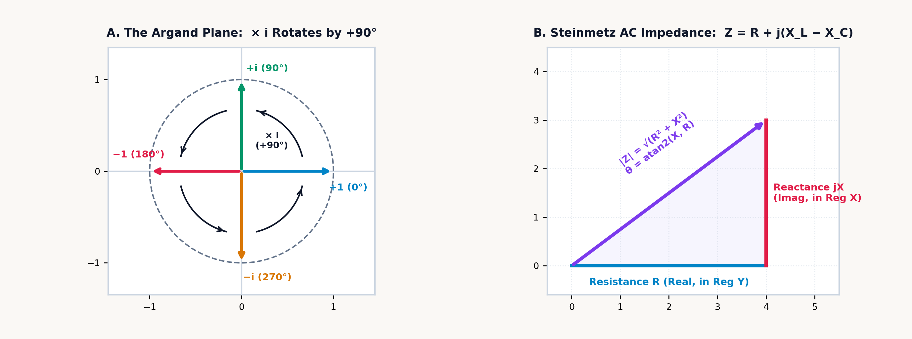
5.1.1 Conjugates, Rotations, and Overflow-Safe Division
Because a complex number \(z = a + bi\) is an ordered pair \((a, b)\) on a two-dimensional plane, every arithmetic operation has a direct geometric meaning in terms of vector translation, scaling, and rotation.
Under complex addition and subtraction, two complex vectors \(z_1 = a + bi\) and \(z_2 = c + di\) combine by head-to-tail translation, summing their horizontal components and vertical components independently:
Under complex multiplication, expanding the binomial product \((a + bi)(c + di)\) with \(i^2 = -1\) groups the two real terms \(ac\) and \(i^2 bd = -bd\) along the horizontal axis and the two cross-terms \(adi\) and \(bci\) along the vertical axis, so \((3 + 4i)(1 - 2i) = (3 + 8) + (-6 + 4)i = \mathbf{11 - 2i}\):
Complex reciprocals and division rely on reflection across the real axis. Every complex number \(z = c + di\) has a reflection twin called its complex conjugate, \(z^* = c - di\), formed by negating the imaginary component. If \(z\) lies at angle \(+\theta\) relative to the positive real axis, \(z^*\) lies at \(-\theta\); multiplying \(z\) by its conjugate \(z^*\) cancels their opposite angles (\(\theta - \theta = 0^\circ\)) and yields the nonnegative real squared modulus \(|z|^2 = c^2 + d^2\):
For a complex quotient \(\frac{a + bi}{c + di}\), multiplying numerator and denominator by the denominator's conjugate \(c - di\) reduces the denominator to the real scalar \(c^2 + d^2\):
In finite-precision IEEE-754 floating-point arithmetic, unscaled evaluation of the algebraic quotient \(\frac{(ac+bd) + i(bc-ad)}{c^2+d^2}\) fails whenever \(|c|\) or \(|d|\) exceeds the square root of the overflow threshold (\(\sqrt{\Omega_{\max}} \approx 1.34 \times 10^{154}\)) or falls below the square root of the normal underflow threshold (\(\approx 1.49 \times 10^{-154}\)). Even when the quotient \(\frac{3 \times 10^{200} + 4 \times 10^{200}i}{3 \times 10^{200} + 4 \times 10^{200}i} = 1 + 0i\) equals unity, squaring \(c^2 + d^2 = 25 \times 10^{400}\) overflows an unscaled divider.
To prevent premature overflow above \(10^{154}\) or underflow below \(10^{-154}\), complex division and reciprocals on the SC-32 pivot on the larger denominator component:
By forming the smaller-over-larger ratio \(r = d/c\) or \(r = c/d\) so that \(|r| \le 1\) (Robert L. Smith's 1962 scaling algorithm), every intermediate product remains bounded within the exponent range of the operands. Dividing \((3 + 4i) \times 10^{200}\) by \((3 - 4i) \times 10^{200}\) evaluates to \(-0.28 + 0.96i\) without intermediate exponent overflow.
For any nonzero \(z = a + bi \ne 0\), the complex square root avoids subtractive cancellation in the half-angle radical \(\sqrt{\frac{|z| + a}{2}}\) when \(a < 0\) and \(|b| \ll |a|\) by evaluating the larger root component first from the scaled hypotenuse \(|z| = \operatorname{hypot}(a, b)\) and recovering the smaller component by division (where the branch-cut sign \(\sigma(b) = +1\) for \(b \ge 0\) and \(-1\) for \(b < 0\) maps the negative real axis \(b = 0,\; a < 0\) onto the positive imaginary axis \(+i\sqrt{|a|}\)):
5.1.2 Complex Eigenvalues in Damped Springs and Skyscrapers
This orthogonal separation between the real and imaginary axes characterizes linear damped oscillators across mechanical and structural engineering, from vehicle suspension struts to tuned mass dampers in tall buildings.
When a mass \(m\) coupled to a spring of stiffness \(k\) and a viscous damper of coefficient \(c\) is displaced from equilibrium, the balance of forces gives the homogeneous differential equation \(m\ddot{x} + c\dot{x} + kx = 0\). Substituting an exponential trial solution \(x(t) = e^{\lambda t}\) produces the quadratic characteristic equation \(m\lambda^2 + c\lambda + k = 0\), whose roots are the system's eigenvalues:
Whenever the restoring stiffness exceeds the damping threshold (\(k/m > (c/2m)^2\)), the discriminant is negative and the eigenvalues form a complex conjugate pair \(\lambda = -\alpha \pm i\omega_d\). The two axes of the complex plane separate the two physical processes acting in the oscillator. Along the real axis, the attenuation rate \(-\alpha = -c/(2m)\) measures irreversible energy dissipation: viscous fluid forced through the damper orifices resists motion in phase with velocity and converts mechanical kinetic energy into heat, so the oscillation envelope decays exponentially as \(e^{-\alpha t}\).
Along the vertical Imaginary axis, the damped natural frequency \(\pm i\omega_d\) measures lossless quadrature energy exchange: the spring and mass dissipate no heat, exchanging kinetic energy in the moving mass (\(\frac{1}{2}mv^2\), which peaks at the equilibrium crossing) with potential energy in the strained spring (\(\frac{1}{2}kx^2\), which peaks at the turning points) \(90^\circ\) out of phase at angular frequency \(\omega_d = \sqrt{k/m - \alpha^2}\). In the undamped limit (\(c \to 0\)), the real part \(-\alpha\) vanishes, the eigenvalues lie on the imaginary axis (\(\lambda = \pm i\sqrt{k/m}\)), and the oscillation persists at constant amplitude. At the critical damping threshold \(c_{\text{crit}} = 2\sqrt{mk}\), the imaginary part \(\omega_d\) vanishes and the displaced mass returns to equilibrium without oscillation.
5.1.3 Euler's Formula and the Three-Phase Roots of Unity
For an imaginary argument \(z = i\theta\), the exponential function \(e^z\) connects continuous exponential scaling along the real line (\(e^x\)) to circular rotation around the unit circle (\(\cos\theta, \sin\theta\)) through Euler's formula:
Exponential functions and circular trigonometric functions are orthogonal cross-sections of a single analytic function \(e^z\) in the complex plane: along the real axis \(e^z\) scales exponentially in magnitude, and along the imaginary axis \(e^z\) rotates at unit radius around the origin.
The unit-circle trajectory of \(e^{i\theta}\) follows independently from differential kinematics and from power-series expansion. In differential kinematics, when a state variable \(z(t)\) evolves at a real growth rate \(k\), its velocity vector \(dz/dt = k \cdot z\) is collinear with the position vector \(z\), driving the trajectory radially outward or inward along a straight ray from the origin. Replacing the real rate \(k\) with the imaginary rate \(i\omega\) gives the differential equation:
Because multiplication by \(i\) rotates any complex vector by \(90^\circ\) counterclockwise, the velocity vector \(dz/dt\) of \(z(t) = e^{i\omega t}\) is at every instant perpendicular (\(90^\circ\)) to the radius vector \(z(t)\), identical to the tangential velocity of uniform circular motion. Because a velocity orthogonal to the radius performs zero radial work and changes the radial distance at rate \(\frac{d}{dt}|z|^2 = 0\), the modulus remains invariant at \(|e^{i\theta}| = 1\) for all real \(\theta\), while the point traces the unit circle with horizontal projection \(\cos\theta\) and vertical projection \(i\sin\theta\).
Algebraically, substituting \(x = i\theta\) into the Maclaurin series for \(e^x\) and reducing the powers \(i^2 = -1\), \(i^3 = -i\), and \(i^4 = +1\) separates the real even-power terms from the imaginary odd-power terms to recover the Maclaurin series for cosine and sine:
At a half-revolution \(\theta = \pi\text{ radians}\) (\(180^\circ\)), where \(\cos\pi = -1\) and \(\sin\pi = 0\), Euler's formula gives \(e^{i\pi} = -1\), or in homogeneous form:
which links the additive identity \(0\), the multiplicative identity \(1\), the circle constant \(\pi\), the base of natural logarithms \(e\), and the imaginary unit \(i\). At the principal quarter-turn \(\theta = \pi/2\), where \(i = e^{i\pi/2}\), raising \(i\) to the \(i\)-th power yields the principal real value \(i^i = \left(e^{i\pi/2}\right)^i = e^{i^2 \pi/2} = e^{-\pi/2} \approx 0.208\) (with general multivalued branches \(e^{-(\pi/2 + 2\pi k)}\) for \(k \in \mathbb{Z}\)).
By Euler's formula, any nonzero complex number \(z = x + iy\) can be expressed in polar form through its Euclidean modulus \(r = |z| = \sqrt{x^2 + y^2}\) and its principal argument \(\theta = \operatorname{atan2}(y, x)\):
Whereas two-dimensional vector conversions place the horizontal coordinate \(x\) and radial magnitude \(r\) in Register \(X\), algebraic complex arithmetic writes a complex number in top-to-bottom reading order as \(z = a + bi\), pairing the real projection \(a = \operatorname{Re}(z)\) in the upper register of a two-line pair (\(Y\) or \(T\)) and the imaginary projection \(b = \operatorname{Im}(z)\) in the lower register (\(X\) or \(Z\))—so the lower pair is swapped whenever converting between a complex number \((Y = a,\; X = b)\) and the polar vector \((Y = b,\; X = a) \leftrightarrow (Y = \theta,\; X = r)\).
In polar form \(z = r e^{i\theta}\), multiplication, division, and exponentiation follow from the laws of exponents. Multiplying two complex numbers \(z_1 z_2 = (r_1 e^{i\theta_1})(r_2 e^{i\theta_2}) = (r_1 r_2) e^{i(\theta_1 + \theta_2)}\) multiplies their moduli and adds their phase angles; dividing two complex numbers \(z_1 / z_2 = (r_1 / r_2) e^{i(\theta_1 - \theta_2)}\) divides their moduli and subtracts their phase angles. Raising \(z = r e^{i\theta}\) to the \(n\)-th power yields de Moivre's theorem, \((r e^{i\theta})^n = r^n e^{in\theta}\):
Geometrically, raising a complex number to the \(n\)-th power raises its modulus to \(r^n\) while multiplying its argument by \(n\). Inverting de Moivre's relation to extract an \(n\)-th root \(\sqrt[n]{z}\) explains why an \(n\)-th degree polynomial equation has \(n\) roots in the complex plane. Because adding integer multiples of a full revolution \(2k\pi\) (\(360^\circ k\)) leaves a complex number unchanged (\(\theta + 2k\pi\)), dividing the angle by \(n\) produces \(n\) distinct roots spaced at equal angular intervals of \(2\pi/n\) around a circle of radius \(r^{1/n}\):
Even the square root of \(i\) (\(\sqrt{i}\)) requires no new class of numbers outside the complex plane: because \(i = 1\angle 90^\circ\) has modulus \(1\) and argument \(90^\circ\), its principal square root has modulus \(\sqrt{1} = 1\) and half the angle, \(45^\circ\) (\(\pi/4\text{ rad}\)), which lies in the complex plane at \(\cos 45^\circ + i\sin 45^\circ = \frac{\sqrt{2}}{2} + i\frac{\sqrt{2}}{2} \approx 0.707 + 0.707i\).
On the real line, the cubic equation \(z^3 = 1\) has only the single root \(1\) (and \(z^3 = -8\) has only the real root \(-2\) alongside the complex conjugate roots \(1 \pm i\sqrt{3}\)). In the complex plane, the three cube roots of unity (\(z^3 = 1 = e^{i\cdot 2k\pi}\)) lie \(360^\circ / 3 = 120^\circ\) apart at the vertices of an equilateral triangle inscribed in the unit circle:
Because those three unit vectors are spaced symmetrically at \(0^\circ\), \(120^\circ\), and \(240^\circ\), their vector sum vanishes (\(1 + a + a^2 = 0\)). This \(120^\circ\) three-phase symmetry is the operating principle of polyphase AC power transmission: in a balanced three-phase network with phase currents displaced by \(0^\circ, 120^\circ,\) and \(240^\circ\), the instantaneous return currents sum to \(1 + a + a^2 = 0\) at the neutral node, allowing three conductors to transmit polyphase power without a fourth return wire.
5.1.4 Principal Branch Cuts and Conformal Airfoil Mapping
Euler's exponential relations extend the circular trigonometric functions analytically to arbitrary complex arguments \(z = x + iy\). For a real angle \(x\), \(\sin x\) and \(\cos x\) are bounded within \([-1, +1]\); combining \(e^{ix} = \cos x + i\sin x\) and \(e^{-ix} = \cos x - i\sin x\) defines cosine and sine across the entire complex plane:
When a complex argument \(z = x + iy\) is evaluated, multiplying the imaginary term \(iy\) by \(i\) inside \(e^{\pm i(x+iy)} = e^{\mp y}e^{\pm ix}\) converts the vertical coordinate \(y\) into real exponential scaling factors \(\frac{e^y + e^{-y}}{2}\) and \(\frac{e^y - e^{-y}}{2}\):
Even when \(e^{|y|}\) drives the magnitudes of \(\sin z\) and \(\cos z\) well past \([-1, +1]\), analytic continuation preserves the Pythagorean identity \(\sin^2 z + \cos^2 z = 1\) across the complex plane. For multivalued inverse and fractional-power functions—such as the complex natural logarithm \(\operatorname{Ln}(\mathbf{z}) = \ln|\mathbf{z}| + i\operatorname{Arg}(\mathbf{z})\), the complex square root \(\sqrt{\mathbf{z}} = \sqrt{|\mathbf{z}|}\,e^{i\operatorname{Arg}(\mathbf{z})/2}\), and general complex powers \(\mathbf{z}^{\mathbf{w}} = e^{\mathbf{w}\operatorname{Ln}(\mathbf{z})}\)—the SC-32 places a principal branch cut along the negative real axis \((-\infty, 0)\) just as cartographers place the International Date Line along the \(180^\circ\) meridian so every point has one unambiguous principal angle \(\operatorname{Arg}(\mathbf{z}) \in (-\pi, \pi]\).
This convention guarantees that the complex square root always maps into the closed right half-plane \(\operatorname{Re}(\sqrt{\mathbf{z}}) \ge 0\) (with \(\sqrt{-4 + 0i} = 0 + 2i\) on the upper boundary of the cut, and \(\operatorname{Ln}(-5 + 0i) = \ln 5 + i\pi \approx 1.609 + 3.142i\)), while a Nyquist contour crossing the negative real axis \((-\infty, 0)\) exhibits a \(2\pi\) phase transition between \(+\pi\) and \(-\pi\).
Holomorphic complex functions also define conformal mappings: at every point where \(f'(z) \ne 0\), a complex mapping \(w = f(z)\) acts like an angle-preserving mathematical lens that transforms solutions of Laplace's equation (\(\nabla^2\phi = 0\)) around a simple shape into exact solutions around a complex shape. Evaluating the sum of a complex coordinate \(z\) on an offset circle (passing through the critical point \(z = +c\) and enclosing \(z = -c\)) and its scaled reciprocal \(c^2/z\) defines the Joukowsky airfoil transformation:
This rational complex map (\(\mathbf{z} + c^2 \cdot \frac{1}{\mathbf{z}}\)) transforms the offset circle into an airfoil profile through three geometric effects: at the critical point \(z = +c\), where the derivative \(d\zeta/dz = 1 - c^2/z^2\) vanishes, the smooth circular boundary folds into a sharp trailing edge at \(\zeta = +2c\); on the opposite side of the circle extending slightly beyond \(z = -c\), the boundary rounds into a blunt leading edge; and displacing the circle's center slightly above the real axis introduces camber along the chord line. Because \(\zeta = z + c^2/z\) is conformal everywhere exterior to the circle, it maps the potential-flow streamlines around a spinning cylinder onto the airflow around the cambered wing: requiring smooth flow off the sharp trailing edge fixes the wing's aerodynamic vortex circulation \(\Gamma\) (the line integral of tangential velocity around the profile), which interacts with the freestream air density \(\rho_\infty\) and freestream airspeed \(V_\infty\) to generate aerodynamic lift per unit wingspan \(L' = \rho_\infty V_\infty \Gamma\) under the Kutta–Joukowsky Lift Theorem.
5.2 Alternating-Current Phasors, Resonance & Wave Reflection
In an alternating-current circuit operating at frequency \(f = 60\text{ Hz}\) (angular frequency \(\omega = 2\pi f\)), inductors and capacitors displace voltage and current by \(\pm 90^\circ\). Track the instantaneous charge \(q(t)\) stored on a capacitor's plates as current \(i(t) = \frac{dq}{dt}\) sloshes back and forth through a series loop of inductance \(L\), resistance \(R\), and capacitance \(C\) driven by an alternating source of peak voltage \(V_0\) and initial phase angle \(\phi\). In the resistor, Ohm's law produces a voltage drop \(R i = R\frac{dq}{dt}\) directly in phase with the current. In the inductor (such as a transformer winding or motor coil), Faraday's law induces a voltage proportional to the current slew rate, \(v_L(t) = L \frac{di}{dt} = L\frac{d^2 q}{dt^2}\); because \(\frac{d}{dt}\sin(\omega t) = \omega\cos(\omega t) = \omega\sin(\omega t + 90^\circ)\), inductor voltage peaks \(90^\circ\) ahead of current. In the capacitor (such as parallel dielectric plates or underground cable insulation), the voltage across the plates is proportional to the accumulated charge, \(v_C(t) = \frac{1}{C}q(t)\), so capacitor voltage lags \(90^\circ\) behind charging current \(i_C = C\frac{dv_C}{dt}\). Summing those three voltage drops around the loop via Kirchhoff's voltage law yields a second-order linear differential equation with sinusoidal forcing:
Each passive element in that loop mirrors a mechanical counterpart: \(L\frac{d^2 q}{dt^2}\) acts like magnetic inertia opposing any sudden change in current (\(d^2q/dt^2\)), \(R\frac{dq}{dt}\) acts like viscous friction dissipating heat in proportion to current velocity (\(dq/dt\)), and \(\frac{1}{C}q\) acts like an elastic spring whose restoring voltage grows with displaced charge \(q\). Steinmetz's 1893 insight was that because multiplication by \(j = \sqrt{-1}\) rotates a vector by \(+90^\circ\) in the complex plane, Euler's complex exponential \(e^{j\omega t}\) turns time differentiation into algebraic multiplication by \(j\omega\), converting that entire differential equation into one line of complex algebra.
5.2.1 Rotating Phasors and the Complex Impedance Plane
In a linear AC network driven at a single angular frequency \(\omega\), every steady-state voltage and current oscillates at that same angular frequency \(\omega\). To avoid carrying explicit \(\cos(\omega t + \theta)\) time functions through differential equations, Steinmetz represented each sinusoid by a complex number—a phasor—scaled by its root-mean-square amplitude (\(|\mathbf{V}| = V_0/\sqrt{2}\), eliminating the factor of \(\frac{1}{2}\) so AC power laws \(P = |\mathbf{I}|^2 R\) and \(\mathbf{S} = \mathbf{V}\mathbf{I}^*\) match DC Ohm's and Joule's laws) and initial phase angle relative to a common reference.
When a rotating complex exponential \(e^{j\omega t}\) is differentiated with respect to time (where electrical engineering denotes the imaginary unit by \(j = \sqrt{-1}\) to reserve \(i\) for electrical current), the phasor is multiplied by \(j\omega\):
Time differentiation becomes algebraic multiplication by \(j\omega\) (a \(+90^\circ\) rotation scaled by \(\omega\)), while time integration becomes division by \(j\omega\) (a \(-90^\circ\) rotation, since \(1/j = -j\)).
Under this phasor transformation, the three passive circuit elements map onto the axes of the complex impedance plane. Resistors (\(R\)) lie along the positive horizontal Real axis as \(\mathbf{Z}_R = R + j0\,\Omega\), introducing \(0^\circ\) phase shift and converting electrical energy irreversibly into heat. Inductors (\(L\)) lie along the positive vertical Imaginary axis as \(\mathbf{Z}_L = +j X_L = +j\omega L\,\Omega\), introducing a \(+90^\circ\) voltage phase lead as magnetic field energy cycles losslessly between the coil and the source. Capacitors (\(C\)) lie along the negative vertical Imaginary axis as \(\mathbf{Z}_C = -j X_C = -j\frac{1}{\omega C}\,\Omega\), introducing a \(-90^\circ\) voltage phase lag as electrostatic field energy cycles losslessly between the plates and the source.
For a series RLC branch, the total complex impedance \(\mathbf{Z}\) is the vector sum of real resistance and net imaginary reactance:
With complex phasors, AC Ohm's law takes the multiplicative form \(\mathbf{V} = \mathbf{I} \cdot \mathbf{Z}\), series impedances add component-wise (\(\mathbf{Z}_{\text{series}} = \mathbf{Z}_1 + \mathbf{Z}_2\)), and the scalar parallel-resistance law \(R_1 \parallel R_2 = \frac{1}{1/R_1 + 1/R_2}\) extends to two-dimensional phasors. Parallel AC branches combine either by summing their reciprocal complex admittances (\(\mathbf{Y} = 1/\mathbf{Z} = G + jB\), with conductance \(G\) and susceptance \(B\) in Siemens; inverting a high-reactance choke \(\mathbf{Z} = 0.5 + j120\,\Omega\) gives susceptance \(B \approx -8.333\text{ mS}\)) or via the reciprocal-sum complex parallel relation (Horowitz & Hill, 2015):
5.2.2 Tuning a Radio Tank: Resonance and the Quality Factor
Because inductive reactance points along \(+j\) and capacitive reactance points along \(-j\), sweeping the excitation frequency \(f\) across an RLC network produces a sharp phase transition where the opposing reactive elements balance and cancel to zero. Below resonance (\(f < f_0\)), capacitive reactance \(X_C = 1/(2\pi f C)\) exceeds inductive reactance \(X_L = 2\pi f L\), so the net reactance is negative and current leads applied voltage; above resonance (\(f > f_0\)), \(X_L > X_C\), so the net reactance is positive and current lags voltage.
In a power-supply filter choke and coupling capacitor (\(R = 50\,\Omega, L = 0.05\text{ H}, C = 10 \times 10^{-6}\text{ F}\)) driven at the full-wave rectified ripple frequency \(f = 120\text{ Hz}\) (\(\omega \approx 753.982\text{ rad/s}\)), the inductive reactance \(X_L \approx 37.699\,\Omega\) and capacitive reactance \(X_C \approx 132.629\,\Omega\) partially cancel along the imaginary axis to leave a net capacitive reactance \(X_L - X_C \approx -94.93\,\Omega\). Combining that reactive leg in quadrature with \(R = 50\,\Omega\) yields the total scalar impedance and phase angle:
A series RLC resonator of inductance \(L\), capacitance \(C\), and winding resistance \(R\) exchanges energy harmonically between its magnetic flux field (\(\frac{1}{2}LI^2\)) and its dielectric electric field (\(\frac{1}{2}CV^2\)) at the natural resonant frequency \(f_0\) where \(X_L = X_C\):
Because \(f_0\) varies inversely with the geometric mean \(\sqrt{LC}\), sweeping a variable air-dielectric tuning capacitor across a four-to-one capacitance ratio (\(C_{\max} / C_{\min} = 4\)) tunes an AM broadcast or HF communications receiver across a two-to-one frequency octave (\(f_{\max} / f_{\min} = 2\)). For a radio-frequency series resonator of \(L = 10\text{ mH}\) (\(10 \times 10^{-3}\text{ H}\)) paired with \(C = 100\text{ pF}\) (\(100 \times 10^{-12}\text{ F}\)), the characteristic time scale is \(\sqrt{LC} = 1\,\mu\text{s}\), placing the resonant carrier frequency at \(f_0 \approx \mathbf{159,154.943\text{ Hz}}\) (\(\approx 159.155\text{ kHz}\)).
How sharply that series RLC resonator discriminates between a desired station at \(f_0\) and an adjacent interferer is governed by the dimensionless quality factor \(Q\). Defined as \(2\pi\) times the ratio of peak electromagnetic energy stored in the reactive fields to the thermal energy dissipated per cycle in the series resistance \(R\), the series quality factor equals the characteristic surge impedance \(Z_{\text{char}} = \sqrt{L/C}\) divided by \(R\) (for a parallel tank with shunt resistance \(R_p\), \(Q_p = R_p / \sqrt{L/C}\)).
In the frequency domain, \(Q\) sets the spectral selectivity: the half-power (\(-3\text{ dB}\)) passband width between the two frequencies \(f_1, f_2\) where \(|\mathbf{Z}| = \sqrt{2}\,R\) is \(\Delta f_{-3\text{dB}} = f_0 / Q\). At exact series resonance \(f_0\) where \(X_L\) and \(X_C\) cancel in the loop impedance (\(\mathbf{I}_0 = \mathbf{V}_s / R\)), the reactive voltage developed across the inductor (\(V_L = I_0 X_L = Q V_s\)) and capacitor (\(V_C = I_0 X_C = Q V_s\)) is magnified to \(Q\) times the applied source voltage \(V_s\). For an intermediate-frequency series selectivity coil (\(R = 8\,\Omega, L = 2.5\text{ mH}, C = 47\text{ nF}\)), the surge impedance \(\sqrt{L/C} \approx 230.633\,\Omega\) divided by \(R = 8\,\Omega\) yields \(Q \approx \mathbf{28.829}\), magnifying a \(10\text{ V}\) RF drive into \(\approx 288.291\text{ V}\) across the series capacitor.
To track signal power across cascaded filters and amplifiers, the decibel (\(\text{dB}\)) expresses power and voltage ratios on a base-\(10\) logarithmic scale:
Because electrical power across a matched impedance \(Z_0\) scales quadratically with RMS voltage (\(P = V^2 / Z_0\)), substituting \(P_2 / P_1 = (V_2 / V_1)^2\) into \(10\log_{10}(P_2/P_1)\) brings the exponent of \(2\) out front to form the voltage-ratio rule \(20\log_{10}(V_2 / V_1)\). Mapping power ratios through \(10\log_{10}(\cdot)\) converts long chains of cascaded RF amplifier stages, mixer conversion losses, and coaxial attenuations from multiplications into additions and subtractions: doubling power adds \(\approx +3.01\text{ dB}\), quadrupling power (or doubling voltage) adds \(\approx +6.021\text{ dB}\), and every tenfold decade of power adds \(+10\text{ dB}\). When referenced to \(P_1 = 1\text{ mW}\) (\(0.001\text{ W}\)), absolute power is expressed in \(\text{dBm} = 10\log_{10}(P / 1\text{ mW})\). Driving a transmitter final stage from an exciter input of \(P_1 = 0.025\text{ W}\) (\(25\text{ mW}\), or \(\approx +13.979\text{ dBm}\)) to an output of \(P_2 = 120\text{ W}\) represents a linear power ratio of \(4,800\times\), corresponding to a power gain of \(\approx \mathbf{36.812\text{ dB}}\) and an output level of \(\approx \mathbf{+50.792\text{ dBm}}\).
5.2.3 Real Watts, Reactive VARs, and the Power Triangle
Complex phasor representation also resolves why industrial plants containing large induction motors draw high line currents from utility feeders while registering lower real power consumption on wattmeters.
When an AC source delivers an RMS voltage phasor \(\mathbf{V} = |\mathbf{V}|\angle\theta_v\) and an RMS current phasor \(\mathbf{I} = |\mathbf{I}|\angle\theta_i\) to an inductive load \(\mathbf{Z} = R + jX_L = |\mathbf{Z}|\angle\theta\) (where \(\theta = \theta_v - \theta_i\) is the phase lag of current behind voltage), the phase-invariant power product requires complex conjugation. Multiplying \(\mathbf{V}\) by \(\mathbf{I}\) without conjugation sums their phase angles (\(\theta_v + \theta_i\)), which varies with the arbitrary choice of time origin \(t = 0\). Defining complex apparent power \(\mathbf{S}\) (in Volt-Amperes, VA) as the product of the voltage phasor \(\mathbf{V}\) and the complex conjugate of the current phasor, \(\mathbf{I}^* = |\mathbf{I}|\angle(-\theta_i)\), isolates the physical phase difference \(\theta = \theta_v - \theta_i\):
This complex product defines the right-angled Power Triangle \(\mathbf{S} = P + jQ\) in the complex plane. The horizontal real leg is the real (active) power \(P = |\mathbf{V}||\mathbf{I}|\cos\theta = |\mathbf{I}|^2 R\) (in Watts, \(\text{W}\)), representing the rate at which electrical energy is converted into mechanical shaft work (such as lathe spindles, hoists, and pumps) or dissipated as heat; the dimensionless cosine ratio \(\text{PF} = \cos\theta = P / |\mathbf{S}|\) is the power factor.
The vertical imaginary leg is the reactive (quadrature) power \(Q = |\mathbf{V}||\mathbf{I}|\sin\theta = |\mathbf{I}|^2 X\) (in Volt-Amperes Reactive, \(\text{VAR}\)), measuring the peak rate of lossless energy oscillation twice per AC cycle between the generator and the magnetic fields of inductive loads (\(Q > 0\)) or the electric fields of capacitive loads (\(Q < 0\)). Although reactive power performs zero net work over a complete cycle, utility transmission lines must carry the associated quadrature current, incurring real \(I^2 R_{\text{line}}\) resistive losses in the distribution grid.
Across the power triangle, the hypotenuse represents the apparent power \(|\mathbf{S}| = \sqrt{P^2 + Q^2} = |\mathbf{V}||\mathbf{I}|\) (in Volt-Amperes, \(\text{VA}\)); because substation transformers and alternators must be insulated for total voltage \(|\mathbf{V}|\) and sized to conduct total current \(|\mathbf{I}|\) regardless of phase angle, power equipment is rated in \(\text{kVA}\) or \(\text{MVA}\), not kilowatts. Industrial facilities eliminate quadrature line current through power factor correction. Because an induction motor draws lagging reactive power \(+jQ_L\), connecting a shunt capacitor bank of equal and opposite leading reactive power \(-jQ_C = -jQ_L\) (with capacitance \(C = \frac{Q_L}{2\pi f |\mathbf{V}|^2}\)) in parallel across the load bus supplies the oscillating magnetic energy locally, canceling the imaginary component \(j(Q_L - Q_C) = 0\) so the utility feeder sees a resistive load at unity power factor (\(\cos 0^\circ = 1\)).
In low-power RF communications, acoustic transducers, and instrumentation, the design objective shifts from minimizing transmission losses to extracting the maximum real power \(P_{\text{load}}\) from a source with fixed internal Thévenin impedance \(\mathbf{Z}_{\text{source}} = R_s + jX_s\). Terminating the source with a load \(\mathbf{Z}_{\text{load}} = R_L + jX_L\) produces loop current magnitude \(|\mathbf{I}| = \frac{|\mathbf{V}_s|}{\sqrt{(R_s + R_L)^2 + (X_s + X_L)^2}}\) and real load power:
Because \((X_s + X_L)^2 \ge 0\) in the denominator, real power is maximized for any \(R_L\) by choosing the load reactance equal and opposite to the source reactance (\(X_L = -X_s\)), canceling the net series reactance to zero. Differentiating the remaining resistive ratio \(\frac{R_L}{(R_s + R_L)^2}\) with respect to \(R_L\) shows that maximum power occurs when \(R_L = R_s\). Combining both conditions (\(R_L = R_s\) and \(X_L = -X_s\)) yields the Complex Conjugate Maximum Power Transfer Theorem:
Maximum real power transfer occurs when the load impedance equals the complex conjugate of the source impedance, delivering \(P_{\max} = \frac{|\mathbf{V}_s|^2}{4 R_s}\).
5.2.4 Negative-Feedback Amplifiers and Loudspeaker Crossovers
Active analog signal processing and electroacoustic loudspeaker crossovers rely on negative feedback and complex transfer functions \(H(j\omega) = \mathbf{V}_{\text{out}} / \mathbf{V}_{\text{in}}\) to shape amplitude and phase across frequency (Horowitz & Hill, 2015). Feeding a fraction \(\beta = \frac{R_g}{R_f + R_g}\) of an amplifier's output back in opposition to its input reduces the closed-loop voltage gain of a high-gain differential amplifier (\(A_{\text{OL}} \gg 10^5\)) to:
A resistive divider of feedback resistor \(R_f\) and ground or input resistor \(R_g, R_{\text{in}}\) forces the inverting input to track the non-inverting input (a virtual short), pinning the low-frequency closed-loop voltage gain solely to precision passive resistor ratios while suppressing harmonic distortion and thermal gain drift by the loop-gain factor \(1 + \beta A_{\text{OL}}\).
To guarantee phase stability against high-frequency oscillation, an internally compensated operational amplifier includes an internal Miller capacitor that introduces a dominant first-order complex pole at corner frequency \(f_p\), rolling off the open-loop complex gain at \(-20\text{ dB/decade}\) with a \(-90^\circ\) quadrature lag, \(A_{\text{OL}}(j f) = \frac{A_0}{1 + j(f / f_p)} \approx -j\,\frac{\text{GBWP}}{f}\) for \(f \gg f_p\), where \(\text{GBWP} = A_0 f_p\) is the amplifier's unity-gain bandwidth product. Substituting this open-loop roll-off into the closed-loop feedback equation yields the complex closed-loop frequency response:
The product of closed-loop noise gain \(A_{v,\text{non}}\) and \(-3\text{ dB}\) corner frequency \(f_{-3\text{dB}}\) remains invariant at \(\text{GBWP}\): trading for \(10\times\) higher voltage gain reduces the passband width tenfold. For a non-inverting precision instrumentation stage with \(R_f = 90\text{ k}\Omega, R_g = 10\text{ k}\Omega\), and \(\text{GBWP} = 10\text{ MHz}\), the DC closed-loop gain is \(A_{v,\text{non}} = 1 + 90/10 = \mathbf{10}\) (\(20\text{ dB}\)) and the passband corner is \(f_{-3\text{dB}} = \mathbf{1\text{ MHz}}\), where the denominator \(1 + j1\) places the complex closed-loop gain at \(10/(1 + j) = \mathbf{5 - 5i}\) (\(|A_{\text{CL}}| \approx 7.071\), or \(\approx 17\text{ dB}\) at \(-45^\circ\)).
Complex impedance algebra also governs electroacoustic loudspeaker crossovers and impedance-compensation networks (Horowitz & Hill, 2015). A moving-coil loudspeaker driver is not a flat \(8\,\Omega\) resistance: the copper voice coil wound around the magnet pole piece introduces series inductance (\(Z_1 = R + j\omega L\)) that causes the driver impedance to rise at high audio frequencies. At a single operating frequency, wiring a conjugate branch \(Z_2 = R - jX\) in parallel cancels the opposite susceptances \(\mp jX / (R^2 + X^2)\) to leave a real equivalent resistance \(Z_{\text{eq}} = \frac{R^2 + X^2}{2R}\); across the full audio band, wiring a Zobel (Boucherot) RC compensation cell \(Z_{\text{Zobel}} = R - j/( \omega C) = R - j(R^2 / X_L)\) with \(C = L / R^2\) in parallel with \(R + jX_L\) produces a constant resistive load \(Z_{\text{eq}} = \frac{(R + jX_L)(R - jR^2/X_L)}{2R + j(X_L - R^2/X_L)} = R\) at every frequency \(\omega\).
In multi-way loudspeaker design, dividing the audio spectrum between a low-frequency woofer and a high-frequency tweeter requires matching both amplitude and phase at the crossover angular frequency \(\omega_c\). Measuring signal frequency \(\omega\) relative to \(\omega_c\) defines the normalized complex frequency variable \(s = j\omega/\omega_c\), in terms of which a maximally flat second-order Butterworth low-pass filter has transfer function \(H(s) = \frac{1}{s^2 + \sqrt{2}s + 1}\). At the exact crossover frequency (\(\omega = \omega_c\), so \(s = j\)), the quadratic term \(s^2 = j^2 = -1\) and the \(+1\) constant in the denominator cancel one another:
If a single second-order Butterworth low-pass filter feeds the woofer and its high-pass complement \(\frac{s^2}{s^2 + \sqrt{2}s + 1}\) feeds the tweeter, the low-pass output lags by \(-90^\circ\) (\(-j/\sqrt{2}\)) at crossover while the high-pass output leads by \(+90^\circ\) (\(+j/\sqrt{2}\)). Because \(-90^\circ\) and \(+90^\circ\) differ by \(180^\circ\), the two acoustic outputs sum to zero at the crossover frequency when connected with identical polarity.
Two second-order Butterworth sections cascaded in series form a fourth-order Linkwitz–Riley (LR4) crossover, squaring the complex transfer function at the crossover frequency:
At crossover, both the low-pass and high-pass outputs have magnitude \(|H| = 0.5\) (\(-6.02\text{ dB}\)) and identical phase (\(-180^\circ\)), so their acoustic outputs sum in phase to unit magnitude (\(|-0.5 + (-0.5)| = 1\), or \(0\text{ dB}\) all-pass response).
5.2.5 Coaxial Transmission Lines and the Complex Reflection Coefficient
In the radio and microwave bands where the signal wavelength \(\lambda = c/f\) is comparable to or shorter than the interconnecting conductors, a coaxial cable or microstrip trace can no longer be treated as a single lumped wire. Instead, every meter of cable acts as a distributed ladder network combining per-unit-length series conductor resistance \(R'\) and magnetic inductance \(L'\) into a series impedance \(Z' = R' + j\omega L'\), alongside per-unit-length shunt dielectric leakage conductance \(G'\) and shunt capacitance \(C'\) into a shunt admittance \(Y' = G' + j\omega C'\). Taking the complex square root of the series-impedance-to-shunt-admittance ratio defines the cable's characteristic impedance \(Z_0\):
Dividing the series voltage drop per unit current (\(R' + j\omega L'\)) by the shunt current leaked per unit voltage across the dielectric (\(G' + j\omega C'\)) gives \(Z_0\) the dimensions of ohms (\(\Omega\)), approaching the lossless surge impedance \(\sqrt{L'/C'}\) at radio frequencies where \(R' \ll \omega L'\) and \(G' \ll \omega C'\). Much like light partially reflecting off a pane of glass or an ocean wave rebounding off a seawall, when a forward electromagnetic wave propagating along a feedline of characteristic impedance \(Z_0 = 50\,\Omega\) encounters an antenna whose complex load impedance \(\mathbf{Z}_L = R_L + jX_L\) differs from \(Z_0\), continuity of voltage and current at the junction forces part of the wave to echo backward down the cable. That reflected wave is quantified by three linked mismatch metrics: the complex voltage reflection coefficient \(\mathbf{\Gamma}\) (denoted \(S_{11}\) in scattering-parameter measurements), the Voltage Standing Wave Ratio (\(\text{VSWR}\)), and the decibel Return Loss (\(\text{RL}_{\text{dB}}\)):
Normalizing the impedance step \(\mathbf{Z}_L - Z_0\) against the total impedance sum \(\mathbf{Z}_L + Z_0\) maps every passive load (\(R_L \ge 0\)) onto the unit disk \(|\mathbf{\Gamma}| \le 1\)—the coordinate disk of the Smith Chart. When the antenna matches the cable (\(Z_L = Z_0\)), the discontinuity \(\mathbf{Z}_L - Z_0\) vanishes (\(\mathbf{\Gamma} = 0\), \(\text{VSWR} = 1\)) and \(100\%\) of the transmitter's power radiates into space, whereas a shorted line (\(Z_L = 0 \implies \mathbf{\Gamma} = -1\)) or an open-circuited line (\(Z_L \to \infty \implies \mathbf{\Gamma} = +1\)) reflects the entire wave backward (\(\text{VSWR} \to \infty\)).
As a backward echo of relative amplitude \(|\mathbf{\Gamma}|\) travels against the forward wave of unit amplitude \(1\), the two counter-propagating waves interfere along the cable: where crest meets crest in phase, their voltages add constructively to a standing-wave anti-node of \(1 + |\mathbf{\Gamma}|\), and a quarter-wavelength away where crest meets trough out of phase, they subtract destructively to a voltage node of \(1 - |\mathbf{\Gamma}|\). That interference pattern makes \(\text{VSWR}\) the direct ratio of peak-to-minimum standing voltage along the line, while \(\text{RL}_{\text{dB}} = -20\log_{10}|\mathbf{\Gamma}|\) measures how many decibels weaker the reflected echo is than the forward wave. To match a resistive antenna load \(Z_L\) to a transmission line \(Z_0\) without reflection, an RF designer inserts a quarter-wavelength (\(\lambda/4\)) transformer section whose characteristic impedance is the geometric mean \(Z_{\text{line}} = \sqrt{Z_0 Z_L}\), mapping the input impedance to \(Z_{\text{in}} = Z_{\text{line}}^2 / Z_L = Z_0\) in exact analogy to a quarter-wave optical anti-reflection coating of refractive index \(n_{\text{film}} = \sqrt{n_{\text{air}} n_{\text{glass}}}\).
5.3 Computing in Two Dimensions Across Four Registers
In the tradition of the pocket complex arithmetic of the HP-15C (Evett et al., 1983; HP, 1982) and the complex prefix architecture of the HP-32SII (HP, 1991), the four-line StackCalc SC-32 pairs \((Y = \text{Real}, X = \text{Imag})\) and \((T = \text{Real}_2, Z = \text{Imag}_2)\) across the display so complex impedances multiply, invert, and combine in parallel across the four registers:
- Entering Complex Numbers Across \((Y, X)\) and \((T, Z)\): Keying the real part \(a\),
[ENTER], and the imaginary part \(b\) places the horizontal Real projection \(a\) on Line \(Y\) and the vertical Imaginary projection \(b\) on Line \(X\) (\(\mathbf{z}_1 = Y + Xi\)). A second complex number \(c + di\) (c [ENTER] d) lifts the first operand into Registers \((T = a,\; Z = b)\) while the second operand occupies \((Y = c,\; X = d)\), holding both complex vectors on screen together. - The Transient
[↰] [CMPLX]Prefix: Left-shifted[↰] [CMPLX]on[STO]illuminates the transientCMPLXannunciator for the next operation without locking the calculator into a separate mode. - Unary vs. Dyadic Complex Operations: Prefixing a unary key (
[1/x],[↰] [x²],[√x],[eˣ],[↰] [10ˣ],[LN],[↰] [LOG],[SIN],[COS],[TAN], or[+/-]) with[↰] [CMPLX]transforms only the lower pair \((Y, X)\) in place while leaving any second complex vector in \((T, Z)\) untouched. Prefixing a dyadic key ([+],[-],[×],[÷],[yˣ],[↰] [ˣ√y], or[x∥y]) with[↰] [CMPLX]combines \(\mathbf{z}_2 = T + Zi\) and \(\mathbf{z}_1 = Y + Xi\), writes the complex result to \((Y = \text{Real},\; X = \text{Imag})\), and drops the real stack by two levels (replicating \(T\) into both \(T\) and \(Z\) in4-LVLmode). - Inspecting Complex Pairs (
CMPLX SHOW), Polar Bridging ([x⇄y]+[↰] [▸θ,r]/[↱] [▸y,x]), & Expanding to Four Complex Levels (8-LVL): The sequence[↰] [CMPLX][↱] [SHOW](right-shifted on[ENTER]) formats \((Y, X)\) at full precision as a single complex expressiona + biacross the screen (and[↰] [CMPLX]followed by[↰] [REGS], left-shifted on0, switches the register browser to complex-pair mode); exchanging \((Y, X)\) via[x⇄y]aligns complex \((Y = \text{Real},\; X = \text{Imag})\) with polar/rectangular[↰] [▸θ,r]and[↱] [▸y,x]\((Y = y,\; X = x)\). Whenever a multi-branch AC network requires holding three or four complex phasors at once,[↱] [FLAGS]\(\to\)STACK\(\to\)8-LVLexpands the real stack to eight registers (\(R_1\text{--}R_8\)), creating a four-level complex stack.
5.3.1 Pairing Two Complex Numbers Across Four Registers
Within each adjacent register pair, the upper line holds the real projection \(\operatorname{Re}(\mathbf{z})\) and the lower line holds the imaginary projection \(\operatorname{Im}(\mathbf{z})\):
Complex trigonometric and exponential operations always evaluate in natural analytic radians regardless of the scalar angular setting. Whereas single-line calculators either stored imaginary components in a hidden parallel stack accessed via a swap key or required toggling registers to peek at the real part in Register \(Y\), the SC-32's four-line LCD displays both \(\operatorname{Re}(\mathbf{z}_1)\) in Register \(Y\) and \(\operatorname{Im}(\mathbf{z}_1)\) in Register \(X\) alongside \(\mathbf{z}_2 = T + Zi\) in \((T, Z)\).
In the Joukowsky conformal airfoil mapping \(\zeta = z + 1/z\) at the offset cylinder coordinate \(z = 1.1 + 0.2i\), a unary complex transformation in \((Y, X)\) combines with a second complex vector waiting in \((T, Z)\). Because unary complex operators leave the upper pair \((T, Z)\) undisturbed, loading \(z = 1.1 + 0.2i\) into both \((T, Z)\) and \((Y, X)\) and invoking the unary complex reciprocal inverts only the lower pair \((Y, X) \to 0.88 - 0.16i\) while the original coordinate \(z = 1.1 + 0.2i\) remains in \((T, Z)\). Complex addition then sums the two vectors to reach the cambered wing coordinate \((Y = 1.98,\; X = 0.04)\):
| Keystroke | Register T | Register Z | Register Y | Register X | What Happens on the Stack |
|---|---|---|---|---|---|
1.1 [ENTER] 0.2 [ENTER] 1.1 [ENTER] 0.2 |
\(1.1\) | \(0.2\) | \(1.1\) | \(0.2\) | Cylinder point \(z = 1.1 + 0.2i\) in both \((T, Z)\) and \((Y, X)\) |
[↰] [CMPLX] [1/x] |
\(1.1\) | \(0.2\) | \(0.88\) | \(-0.16\) | Unary reciprocal \(1/z = 0.88 - 0.16i\) in \((Y, X)\); \(z\) stays in \((T, Z)\) |
[↰] [CMPLX] [+] |
\(1.1\) | \(1.1\) | \(1.98\) | \(0.04\) | Airfoil point \(\zeta = z + 1/z = 1.98 + 0.04i\) (2-level drop replicates \(T \to Z\)) |
This separation between the lower pair \((Y, X)\) and the upper pair \((T, Z)\) likewise simplifies damped mechanical eigenvalues and hypersonic re-entry plasma physics. For an underdamped mechanical shock-absorber suspension (\(m = 2\text{ kg}\), viscous damping \(c = 8\text{ N}\cdot\text{s/m}\), and spring stiffness \(k = 50\text{ N/m}\), where \(\omega_0^2 = k/m = 25\text{ s}^{-2}\)), the horizontal energy-dissipation rate \(-\alpha = -c/(2m) = -2\text{ s}^{-1}\) and the vertical damped ringing frequency \(\omega_d = \sqrt{\omega_0^2 - \alpha^2} = \sqrt{21} \approx 4.583\text{ rad/s}\) assemble across the lower pair \((Y = -2,\; X \approx 4.583)\).
When a spacecraft re-enters the atmosphere at hypersonic speed, shock heating ionizes the surrounding air into a sheath of free electrons with natural electron plasma frequency \(\omega_p\) that scatter against neutral gas molecules at collision frequency \(\nu\); as a telemetry radio wave of angular frequency \(\omega\) traverses the ionized sheath, the Drude–Lorentz complex relative permittivity \(\epsilon_r = 1 - \frac{\omega_p^2}{\omega(\omega - j\nu)}\) governs propagation—where the subtracted plasma ratio turns the real part of \(\epsilon_r\) negative and triggers total radio blackout whenever the plasma density is high enough that \(\omega_p > \omega\), while the collision term \(-j\nu\) in the denominator introduces an imaginary conductive loss that absorbs radio energy. At normalized \(\omega_p = 1, \omega = 2, \nu = 0.5\) (just above blackout recovery where \(\omega > \omega_p\)), inverting the collision denominator \(\omega(\omega - j\nu) = 4 - i\) in place on \((Y, X)\) into \(\approx 0.235 + 0.059i\), negating it, and adding the unit vacuum reference \(1 + 0i\) resolves the complex relative permittivity \(\epsilon_r \approx \mathbf{0.765 - 0.059i}\).
5.3.2 Polar Phasors, Three-Phase Neutral, and Analytic Continuation
Because the complex exponential and complex natural logarithm are unary complex functions, they transform a complex argument \(\mathbf{z} = x + iy\) in place across \((Y, X)\) according to \(e^{x + iy} = e^x\cos y + i e^x\sin y\) without disturbing Registers \(Z\) and \(T\). Placing the real growth rate \(x = 0\) in Register \(Y\) and the radian angle \(y = \pi\) in Register \(X\) evaluates \(e^{0 + i\pi}\) in place to \(Y = -1\) and \(X = \sin\pi \approx 1.225 \times 10^{-16}\) in full floating-point precision, which rounds to 0 under fixed-decimal formatting. Adding the unit real vector \(1 + 0i\) across all four registers collapses the pair to \((Y = 0,\; X \approx 1.225 \times 10^{-16})\) to verify Euler's five-constant identity \(e^{i\pi} + 1 = 0\), while applying the complex natural logarithm to \(-1 + 0i\) inverts it onto the upper lip of the negative-real branch cut at \(\operatorname{Ln}(-1) \approx 0 + 3.142i\).
To convert between rectangular complex coordinates and polar phasors, the Euclidean polar and rectangular conversion keys expect vertical \(y\) in Register \(Y\) and horizontal \(x\) in Register \(X\), while complex format places Real (\(x\)) in Register \(Y\) and Imaginary (\(y\)) in Register \(X\) in top-to-bottom reading order \(a + bi\). Exchanging Registers \(X\) and \(Y\) bridges complex \((Y = \text{Real}, X = \text{Imag})\) and polar \((Y = \theta, X = r)\) coordinates: swapping Registers \(X\) and \(Y\) before converting \(3 + 4i\) to polar places magnitude \(r = 5\) in Register \(X\) and angle \(\theta \approx 53.13^\circ\) in Degrees mode (\(\approx 0.927\text{ rad}\) in Radians mode) in Register \(Y\), and swapping after converting back to rectangular avoids the complementary angle trap, where converting \((Y = \text{Real}, X = \text{Imag})\) without swapping first computes \(\operatorname{atan2}(\text{Real}, \text{Imag}) = 90^\circ - \theta\).
In Degrees mode, pairing polar-to-rectangular conversion with register exchange verifies three-phase neutral cancellation \(1 + a + a^2 = 0\) for the cube roots of unity \(a = 1\angle 120^\circ \approx -0.5 + 0.866i\) and \(a^2 = 1\angle 240^\circ \approx -0.5 - 0.866i\). Converting \((120^\circ, 1)\) to rectangular coordinates and exchanging Registers \(X\) and \(Y\) places \(a \approx -0.5 + 0.866i\) in \((Y, X)\); converting \((240^\circ, 1)\) and exchanging Registers \(X\) and \(Y\) lifts \(a\) into \((T, Z)\) while placing \(a^2 \approx -0.5 - 0.866i\) in \((Y, X)\). Complex addition cancels their opposite imaginary parts \(\pm 0.866i\) to form \(a + a^2 = -1 + 0i\), and adding the reference phasor \(1 + 0i\) confirms \(1 + a + a^2 = \mathbf{0 + 0i}\).
The complex square-root and complex power operations evaluate de Moivre's fractional and complex powers across the stack. Taking the principal square root of \(0 + 1i\) bisects the \(90^\circ\) (\(\pi/2\text{ rad}\)) angle to \(45^\circ\) in place at \(\approx 0.707 + 0.707i\); raising \(-8 + 0i\) in \((T, Z)\) to the exact rational power \(1/3 + 0i\) in \((Y, X)\) lands on the principal branch cube root \(8^{1/3}e^{i\pi/3} = 1 + i\sqrt{3} \approx 1 + 1.732i\); and raising a complex base \(\mathbf{z}_2 = 1 + i\) in \((T, Z)\) to a complex exponent \(\mathbf{z}_1 = 1 - i\) in \((Y, X)\) evaluates \((1 + i)^{(1 - i)} = e^{(1-i)\ln(1+i)} \approx 2.808 + 1.318i\).
Unary complex trigonometric functions evaluated in \((Y, X)\) before combining across all four registers also verify the analytic continuation of \(\sin^2 z + \cos^2 z = 1\) outside \([-1, +1]\) at \(z = 1 + 2i\). Computing \(\sin(1 + 2i) \approx 3.166 + 1.96i\) and squaring it in place on \((Y, X)\) produces \((\sin z)^2 \approx 6.182 + 12.407i\), while computing \(\cos(1 + 2i) \approx 2.033 - 3.052i\) and squaring it in \((Y, X)\) to \((\cos z)^2 \approx -5.182 - 12.407i\) shifts \((\sin z)^2\) into \((T, Z)\), where complex addition cancels the opposite imaginary parts \(\pm 12.407i\) and confirms \(\sin^2(1+2i) + \cos^2(1+2i) = \mathbf{1 + 0i}\).
5.3.3 Balancing Industrial Motors and Matching RF Antennas
In steady-state AC circuit analysis, series impedances add across the four-register complex stack while parallel branches combine through complex reciprocals or the dyadic complex parallel operator. When an inductive branch \(\mathbf{Z}_1 = 8 + 4i\,\Omega\) and a capacitive branch \(\mathbf{Z}_2 = 4 - 8i\,\Omega\) are connected in series, their resistances and reactances sum component by component to \(\mathbf{Z}_{\text{total}} = 12 - 4i\,\Omega\), and multiplying \((3 + 4i)(1 - 2i)\) across \((T, Z)\) and \((Y, X)\) yields \(\mathbf{11 - 2i}\).
On an industrial AC plant floor, a motor winding of inductive impedance \(\mathbf{Z}_m = 50 + 80i\,\Omega\) partially compensated by a series tuning capacitor \(\mathbf{Z}_C = 0 - 50i\,\Omega\) across a \(\mathbf{V} = 120 + 0i\text{ V}_{\text{rms}}\) (\(60\text{ Hz}\)) feeder gives a net series load impedance \(\mathbf{Z} = \mathbf{Z}_m + \mathbf{Z}_C = 50 + 30i\,\Omega\). Dividing the source phasor \(\mathbf{V} = 120 + 0i\text{ V}\) in \((T, Z)\) by \(\mathbf{Z} = 50 + 30i\,\Omega\) in \((Y, X)\) yields the lagging line current \(\mathbf{I} \approx 1.765 - 1.059i\text{ A}\). Negating the imaginary part of \(\mathbf{I}\) in Register \(X\) forms the conjugate current \(\mathbf{I}^* \approx 1.765 + 1.059i\text{ A}\), and multiplying by \(\mathbf{V} = 120 + 0i\text{ V}\) resolves the complex apparent power \(\mathbf{S} = \mathbf{V}\mathbf{I}^* \approx \mathbf{211.765\text{ W} + 127.059i\text{ VAR}}\) across \((Y, X)\) (apparent magnitude \(|\mathbf{S}| \approx 246.958\text{ VA}\) at phase angle \(\theta \approx 30.964^\circ\), or a lagging power factor \(\text{PF} = \cos\theta \approx 0.857\)). Dividing the reactive power \(Q \approx 127.059\text{ VAR}\) in Register \(X\) by \(2\pi f V^2 = 2\pi(60)(120^2)\) while real power \(P \approx 211.765\text{ W}\) remains in Register \(Y\) then sizes the shunt power-factor-correction capacitor bank at \(C \approx \mathbf{23.405\,\mu\text{F}}\).
When two branches are wired in parallel (\(\mathbf{Z}_1 = 20 + 15i\,\Omega \parallel \mathbf{Z}_2 = 10 - 25i\,\Omega\)), inverting \(\mathbf{Z}_1\) produces branch admittance \(\mathbf{Y}_1 = 0.032 - 0.024i\,\text{S}\) and inverting \(\mathbf{Z}_2\) produces \(\mathbf{Y}_2 \approx 0.014 + 0.034i\,\text{S}\); summing the admittances to \(\mathbf{Y}_{\text{parallel}} \approx 0.046 + 0.01i\,\text{S}\) and re-inverting—or combining \(\mathbf{Z}_1\) and \(\mathbf{Z}_2\) with the complex parallel operator—yields the equivalent parallel impedance \(\mathbf{Z}_{\text{parallel}} = \mathbf{20.75 - 4.75i\,\Omega}\). In a symmetric conjugate parallel network (\(Z_1 = 3 + 4i\,\Omega \parallel Z_2 = 3 - 4i\,\Omega\)), the opposite susceptances \(\mp 0.16i\,\text{S}\) cancel, doubling the real conductance \(G = 0.12\,\text{S}\) to \(0.24\,\text{S}\) for a resistive single-frequency load of \(1/0.24 \approx \mathbf{4.167\,\Omega}\), while a broadband Zobel Boucherot cell \(Z_{\text{Zobel}} = R - j(R^2/X_L) = 3 - 2.25i\,\Omega\) in parallel with \(3 + 4i\,\Omega\) restores the driver's nominal resistance \(R = \mathbf{3\,\Omega}\).
On a four-arm Thévenin AC impedance bridge \(Z_{\text{th}} = (Z_A \parallel Z_C) + (Z_B \parallel Z_D)\) with \(Z_A = 10 + 20i\,\Omega\), \(Z_C = 20 + 0i\,\Omega\), \(Z_B = 30 - 10i\,\Omega\), and \(Z_D = 0 - 25i\,\Omega\), activating the 8-level stack (\(R_1\text{--}R_8\), labeled \(X, Y, Z, 4, 5, 6, 7, T\)) lets the first parallel branch \(Z_{AC} \approx 10.769 + 6.154i\,\Omega\) shift up into levels \((R_6, R_5)\) while the second parallel branch \(Z_{BD} \approx 8.824 - 14.706i\,\Omega\) is evaluated, dropping back into \((R_4, Z)\) so a final complex addition resolves \(Z_{\text{th}} \approx \mathbf{19.593 - 8.552i\,\Omega}\).
In an inverting operational-amplifier active RC stage where a virtual-ground summing node sets the closed-loop voltage gain to \(A_v = -\mathbf{Z}_f / \mathbf{Z}_{\text{in}}\), dividing feedback impedance \(\mathbf{Z}_f = 5000 - 5000i\,\Omega\) in \((T, Z)\) by input impedance \(\mathbf{Z}_{\text{in}} = 1000 - 1000i\,\Omega\) in \((Y, X)\) and negating the complex quotient confirms a phase-matched closed-loop gain of \(A_v = -5 + 0i\).
Finally, in RF transmission-line analysis, when a \(Z_0 = 50\,\Omega\) coaxial cable is terminated by a dipole antenna of impedance \(\mathbf{Z}_L = 75 + 40i\,\Omega\), loading the impedance mismatch \(\mathbf{Z}_L - Z_0 = 25 + 40i\) into \((T, Z)\) and the impedance sum \(\mathbf{Z}_L + Z_0 = 125 + 40i\) into \((Y, X)\) lets complex division resolve the reflection coefficient \(\mathbf{\Gamma} \approx \mathbf{0.274 + 0.232i}\). Exchanging Registers \(X\) and \(Y\) and converting to polar form extracts the reflection magnitude \(|\mathbf{\Gamma}| \approx \mathbf{0.359}\) in Register \(X\) (\(\approx 12.9\%\) reflected power, return loss \(\text{RL} = -20\log_{10}|\mathbf{\Gamma}| \approx \mathbf{8.888\text{ dB}}\)) and phase angle \(\theta \approx 0.702\text{ rad}\) (\(\approx 40.25^\circ\)) in Register \(Y\), from which the standing-wave ratio \(\text{VSWR} = \frac{1 + |\mathbf{\Gamma}|}{1 - |\mathbf{\Gamma}|}\) resolves to \(\approx \mathbf{2.122}\). For a lossy line with distributed series impedance \(Z' = 0.1 + 2.5i\,\Omega/\text{m}\) in \((T, Z)\) and shunt admittance \(Y' = 10^{-6} + 10^{-3}i\,\text{S/m}\) in \((Y, X)\), complex division (\(Z'/Y' \approx 2500.098 - 97.5i\,\Omega^2\)) followed by the complex square root extracts the characteristic impedance \(Z_0 = \sqrt{Z'/Y'} \approx \mathbf{50.01 - 0.975i\,\Omega}\).
5.3.4 Try It on the Stack
- Zobel Boucherot Loudspeaker Compensation Cell: Load the inductive voice-coil branch \(\mathbf{Z}_{\text{driver}} = 6 + 8i\,\Omega\) into Registers \((T, Z)\) and its Zobel RC compensation cell \(\mathbf{Z}_{\text{Zobel}} = R - j(R^2 / X_L) = 6 - 4.5i\,\Omega\) into Registers \((Y, X)\), and combine them in parallel using the complex parallel operator to verify that the reactive rise cancels to the nominal voice-coil resistance \(R = 6\,\Omega\). (Verified stack result: resistive \(Y = \mathbf{6\,\Omega}\) and \(X = \mathbf{0\,\Omega}\).)
- Euler's Principal Real Value of \(i^i\): Stage \(\mathbf{z}_2 = 0 + 1i\) in \((T, Z)\) and \(\mathbf{z}_1 = 0 + 1i\) in \((Y, X)\), and invoke the complex power operator to verify that the principal branch of the imaginary unit raised to the imaginary unit equals the real constant \(e^{-\pi/2}\). (Verified stack result: \(Y \approx \mathbf{0.208}\) and \(X = \mathbf{0}\).)
- Quarter-Wave Antenna Matching Transformer: Compute the characteristic impedance \(Z_{\text{line}} = \sqrt{Z_0 Z_L}\) required to match a \(Z_0 = 50\,\Omega\) coaxial transmitter feedline to a resistive \(Z_L = 112.5\,\Omega\) loop antenna without standing-wave reflections. (Verified Register \(X\) result: \(Z_{\text{line}} = \mathbf{75\,\Omega}\).)
Chapter 6: The Square-Cube Law, Solid Geometry & Three-Dimensional Space
In 1638, while confined under house arrest at his villa in Arcetri outside Florence, Galileo Galilei opened the modern science of strength of materials in his final treatise, Two New Sciences (Discorsi e dimostrazioni matematiche intorno a due nuove scienze) (Galilei, 1638). Galileo had been struck by a puzzle from the Venetian Arsenal: when Renaissance shipwrights doubled every linear timber dimension of a wooden naval hull from a scale model to a full-sized galleon, the larger vessel cracked on its launch ways under its own dead weight. Extruding flat two-dimensional cross-sections into solid three-dimensional matter exposes a structural divergence between second-power surface area and third-power volume, now known as the Square-Cube Law. When a cylindrical rocket tank of radius \(r\) and wall thickness \(t\) holds gas at internal pressure \(P\), the outward pressure load \(Pr\) per unit length is borne by the metal wall of thickness \(t\), creating a circumferential hoop stress \(\sigma_\theta = Pr/t\); if a cryogenic stage doubles every linear tank dimension at fixed wall thickness \(t\), its internal propellant capacity octuples (\(2^3 = 8\)) while its hoop stress \(\sigma_\theta = Pr/t\) doubles with \(r\).
6.1 Galileo's Square–Cube Scaling & Planar Mensuration
When any three-dimensional solid—such as a cantilever bridge girder, a thin-walled cryogenic pressure vessel, a biological skeleton, or a silicon microprocessor—has every linear dimension (length, width, and height) scaled by a dimensionless multiplier \(\ell\), its surface area \(A\) grows with the square of \(\ell\) and its enclosed volume \(V\) grows with the cube of \(\ell\) (using \(\propto\) for "is proportional to"):
As the linear dimensions of a structural beam or machine casing scale by \(\ell\), its cross-sectional and exterior surface area multiply by \(\ell^2\), while its enclosed volume and gravitational mass multiply by \(\ell^3\), dividing the specific area-to-volume ratio \(A/V\) by \(\ell\). Tensile and compressive load capacity depend on cross-sectional area (\(A \propto \ell^2\)): when an axial force \(F\) pulls or presses on a column, that load is distributed across the interatomic bonds spanning the cross-sectional area \(A\) to produce an axial normal stress \(\sigma = F/A\), and convective or radiative heat rejection likewise scales with exposed surface area (\(A \propto \ell^2\)). Self-weight, kinetic energy storage, and volumetric heat generation, however, scale with enclosed volume (\(V \propto \ell^3\)).
If a structural frame or organism is scaled up geometrically by \(\ell = 10\), its load-bearing cross-sections multiply by \(10^2 = 100\) while its dead weight multiplies by \(10^3 = 1,000\), subjecting every square millimeter of bone or steel to tenfold specific stress (\(\sigma \propto \ell^3 / \ell^2 = \ell\)). Because terminal velocity in air occurs where gravitational weight (\(\propto \ell^3\)) balances quadratic aerodynamic drag (\(\propto A v^2 \propto \ell^2 v^2\)), impact velocity scales as \(v_{\text{term}} \propto \sqrt{\ell}\). Consequently, large structures cannot remain geometrically similar to small prototypes: just as Galileo showed that large vertebrates require disproportionately thick columnar limbs, a civil engineer scaling a \(1:50\) wind-tunnel bridge model up to full span must replace solid bars with hollow box girders and wide-flange I-beams that concentrate material far from the neutral axis.
6.1.1 The Thermal Wall: Surface Area (\(L^2\)) vs. Volume (\(L^3\))
The inverse scaling \(A/V \propto 1/\ell\) also governs thermal survival across biology and modern electronics. Inside a high-performance microprocessor, billions of nanometer-scale transistors switch at gigahertz frequencies and produce localized thermal flux exceeding \(100\text{ W/cm}^2\), a power density approaching the heat flux inside a nuclear reactor core. To carry that thermal power \(\dot{Q}\) away into a moving fluid, a cooling system relies on the convective heat-transfer coefficient \(h\) of the moving airstream or liquid coolant, the exposed boundary surface area \(A_{\text{surface}}\) in contact with the fluid, and the temperature excess of the hot solid wall \(T_{\text{solid}}\) above the surrounding fluid \(T_{\text{ambient}}\), as governed by Newton's Law of Cooling (Incropera et al., 2007):
The temperature gap \((T_{\text{solid}} - T_{\text{ambient}})\) drives heat outward at a flux of \(h\) watts per square meter per kelvin, and \(A_{\text{surface}}\) integrates that flux across the entire exterior skin. Because internal heat generation scales with enclosed volume (\(\propto \ell^3\)) while convective heat removal \(\dot{Q}\) is limited by the exposed surface area \(A_{\text{surface}}\) (\(\propto \ell^2\)), scaling up any heat-producing machine or organism causes volume-generated heat (\(L^3\)) to outpace the surface area (\(L^2\)) available to shed it, forcing the wall temperature \(T_{\text{solid}}\) upward into a thermal bottleneck. In warm-blooded biology, this scaling contrasts metabolic torpor in hummingbirds with vascular radiators in elephants. A \(3\text{-gram}\) ruby-throated hummingbird (\(\ell \approx 2\text{ cm}\)) has a high surface-area-to-volume ratio (\(A/V \propto 1/\ell\)). It loses body heat across its skin so rapidly relative to its small thermal mass that its heart must beat \(1,200\text{ times per minute}\) by day, and it must enter deep hypothermic torpor at night to avoid starving before dawn.
At the opposite extreme, a \(5,000\text{-kilogram}\) African elephant (\(\ell \approx 200\text{ cm}\), a \(100\times\) linear scale-up over the hummingbird) generates \(100^3 = 1,000,000\times\) the internal metabolic heat while possessing only \(100^2 = 10,000\times\) the skin surface area. With \(1/100\text{th}\) the relative cooling area, an elephant would overheat if evolution had not departed from geometric similarity by equipping it with thin, vascularized ear-fins that act as biological radiators.
A silicon CPU package faces the same thermal constraint, which engineers resolve with extruded pin-fin arrays. An unmachined aluminum block offers little surface area; extruding it into dozens of thin parallel fins cuts volume and mass while multiplying the exposed convective boundary area \(A_{\text{surface}}\) by \(300\%\) to \(2,500\%\). This geometry overcomes Galileo's Square-Cube Law by folding additional surface area into the same footprint.
In real-world mechanical design, aerospace enclosures, heat sinks, and structural castings are never isolated cubes. They are bounded by dozens of planar walls, sloped frustum roofs, cylindrical bosses, and cutout apertures. Auditing the total cooling area or structural weight of a composite solid is therefore an accounting ledger problem: summing the areas of every exterior rectangular wall, circular boss, and trapezoidal facet while deducting the areas of drilled mounting holes and window cutouts.
6.1.2 Circular Sectors, Annuli & Regular Polygons
Every three-dimensional cross-section or enclosure boundary begins with two-dimensional planar figures, ranging from rectangles, triangles, trapezoids, and circles to circular sectors, circular segments, ellipses, parabolic arches, and regular \(n\)-gons. Factoring differences of squares (\(R^2 - r^2 = (R - r)(R + r)\)) and exploiting geometric symmetry simplify these planar formulas and preserve numerical precision.
The circular annulus is the flat ring formed by a pipe flange gasket, a thrust washer, or a hollow cylindrical wall bounded by outer radius \(R\) and inner bore radius \(r\). Evaluating \(\pi R^2 - \pi r^2\) term by term multiplies by \(\pi\) twice and loses significant digits when the wall is thin (\(R \approx r\)), because squaring two nearly equal radii and subtracting them cancels their leading digits. Factoring the difference of squares eliminates both the duplicate multiplication and the near-cancellation:
Geometrically, this factored form says that if you snip a circular ring and unroll it, its exact area equals its average circumference \(2\pi R_{\text{mean}}\) multiplied by its radial wall thickness \(t = R - r\). For a steel pipe flange annulus with outer radius \(R = 15\text{ cm}\) and bore radius \(r = 10\text{ cm}\), the factored product \(\pi(5)(25)\) yields \(A_{\text{ann}} \approx \mathbf{392.699\text{ cm}^2}\).
When an angular wedge of central angle \(\theta\) (measured in radians, where \(\theta = \theta_{\text{deg}} \cdot \pi/180\) is the ratio of rim arc length \(s\) to radius \(r\)) is sliced from a disk of radius \(r\), its curved outer rim has arc length \(s = r\theta\) and the pizza-slice wedge forms a circular sector of area \(A_{\text{sector}}\). Snapping a straight secant chord across the two outer corners of that wedge splits the sector into an inner isosceles triangle (whose two radial legs \(r\) meet at angle \(\theta\)) and an outer bowed circular segment of area \(A_{\text{segment}}\)—the crescent-shaped cap bounded by the circular arc and the straight chord (such as a milled shaft keyway flat, an arched optical aperture, or the liquid cross-section in a horizontal cylindrical tank):
Treating the sector as a radial fan of curved base \(s = r\theta\) and height \(r\) gives the half-base-times-height area \(A_{\text{sector}} = \frac{1}{2}rs = \frac{1}{2}r^2\theta\). Subtracting the inner isosceles triangle of base \(r\) and altitude \(r\sin\theta\) (area \(\frac{1}{2}r^2\sin\theta\)) from that full wedge leaves \(A_{\text{segment}} = \frac{1}{2}r^2(\theta - \sin\theta)\) for the bowed cap beyond the chord. On a circular sector cam of radius \(r = 12\text{ cm}\) and central angle \(\theta = 60^\circ = \pi/3 \approx 1.047\text{ rad}\), the arc length is \(s \approx \mathbf{12.566\text{ cm}}\) and the sector area is \(A_{\text{sec}} \approx \mathbf{75.398\text{ cm}^2}\). For an arched cylindrical vault window of radius \(r = 8\text{ m}\) subtending a central chord angle \(\theta = 1.25\text{ rad}\), subtracting the sine from the radian angle and scaling by \(\frac{1}{2}r^2 = 32\text{ m}^2\) yields the circular segment area \(A_{\text{seg}} = 32(1.25 - \sin 1.25) \approx \mathbf{9.632\text{ m}^2}\).
Every regular \(n\)-sided polygon of side length \(s\) decomposes into \(n\) congruent isosceles triangles radiating from its center, each with central apex angle \(2\pi/n\). Dropping a perpendicular altitude from the center to the midpoint of one side \(s\) bisects that wedge into two right triangles with apex half-angle \(\pi/n\) and opposite leg \(s/2\). In that right triangle, the adjacent leg is the inradius or apothem \(r_{\text{in}}\) (the radius of the inscribed circle, and half the wrench distance across flats when \(n\) is even), the hypotenuse from center to vertex is the circumradius \(R_{\text{out}}\) (the radius of the circumscribed circle), and summing all \(n\) wedges yields the polygon area \(A_n\):
Multiplying the half-side \(s/2\) by \(\cot(\pi/n)\) projects the opposite leg onto the adjacent apothem \(r_{\text{in}}\), while dividing \(s/2\) by \(\sin(\pi/n)\) stretches it along the radial hypotenuse \(R_{\text{out}}\); summing the \(n\) radial triangles of area \(\frac{1}{2}s\,r_{\text{in}}\) then equates the polygon area \(A_n\) to half the perimeter \(ns\) times the apothem \(r_{\text{in}}\). For a regular hexagon (\(n = 6,\; \pi/6 = 30^\circ\)), the dimensionless area multiplier is \(\frac{6}{4}\cot(30^\circ) = \frac{3\sqrt{3}}{2} \approx 2.598\); across a regular hexagonal flange of side length \(s = 5\text{ cm}\), \(\cot(30^\circ) = \sqrt{3} \approx 1.732\) yields apothem \(r_{\text{in}} \approx \mathbf{4.33\text{ cm}}\) and area \(A_6 = \frac{3\sqrt{3}}{2}(25) \approx \mathbf{64.952\text{ cm}^2}\). When an instrument cover or structural gusset is a regular octagon (\(n = 8\)) of side length \(s\), \(\cot(\pi/8) = \cot(22.5^\circ) = 1 + \sqrt{2} = \delta_S \approx 2.414\)—the classical silver ratio, which satisfies \(\delta_S^2 = 2\delta_S + 1\) and \(1/\delta_S = \delta_S - 2 = \sqrt{2} - 1\)—so its area follows directly from square dissection without a trigonometric lookup. A regular octagon is a bounding square of width \((1 + \sqrt{2})s = \delta_S s\) that has had four \(45^\circ\text{–}45^\circ\text{–}90^\circ\) right-isosceles corner triangles of leg \(s/\sqrt{2}\) clipped off its four corners:
Each clipped corner triangle removes \(\frac{1}{2}(s/\sqrt{2})^2 = \frac{1}{4}s^2\), so all four corners together deduct \(s^2\) from the bounding square area \((3 + 2\sqrt{2})s^2\) to leave \(2(1 + \sqrt{2})s^2 = 2\delta_S s^2\).
6.1.3 Ellipse Perimeters & Earth's Equatorial Bulge
In classical geometry, the area of an ellipse and its perimeter differ sharply in analytical complexity. Because an ellipse with semi-major axis \(a\) and semi-minor axis \(b\) is a circle of radius \(b\) stretched along one axis by the factor \(a/b\), its area scales by that same factor: \(A = \pi b^2 \cdot (a/b) = \pi a b\) (for an elliptical inspection port with \(a = 250\text{ mm},\; b = 150\text{ mm}\), multiplying \(\pi a b\) yields \(A \approx \mathbf{117,809.725\text{ mm}^2}\)). Yet if you ask for the perimeter (circumference) \(P\) of that same ellipse, no closed-form expression in elementary functions exists anywhere in mathematics: setting up the arc-length integral \(\int \sqrt{dx^2 + dy^2}\) leads to an irreducible complete elliptic integral of the second kind, \(P = 4a E(e)\), governed by the eccentricity \(e = \sqrt{1 - b^2/a^2}\).
To approximate the perimeter \(P\) algebraically, Srinivasa Ramanujan parameterized the departure from circularity by the dimensionless symmetric flattening ratio \(h = (a - b)^2 / (a + b)^2\):
When \(a = b\), the parameter \(h\) vanishes and the leading factor \(\pi(a + b)\) recovers the exact circumference \(2\pi a\) of a circle with mean radius \((a + b)/2\); as the ellipse elongates (\(h > 0\)), the rational-radical correction \(\frac{3h}{10 + \sqrt{4 - 3h}}\) stretches that baseline circumference to track the elliptic integral. A power-series expansion of the complete elliptic integral for the perimeter of an ellipse in terms of \(h\) gives \(P = \pi(a+b)\left[1 + \frac{1}{4}h + \frac{1}{64}h^2 + \frac{1}{256}h^3 + \frac{25}{16384}h^4 + \frac{49}{65536}h^5 + \dots\right]\). Expanding the nested radical in a Taylor series, \(\frac{3h}{10 + \sqrt{4 - 3h}} = \frac{1}{4}h + \frac{1}{64}h^2 + \frac{1}{256}h^3 + \frac{25}{16384}h^4 + \frac{45}{65536}h^5 + \dots\), matches the exact elliptic integral through the \(h^1, h^2, h^3\), and \(h^4\) terms (\(\frac{25}{16384}h^4\)), first differing at the \(h^5\) coefficient (\(\frac{45}{65536}h^5\) vs. \(\frac{49}{65536}h^5\)) by just \(\frac{4}{65536} = \frac{1}{16384}h^5\). For an elliptical cam with \(a = 10\text{ cm}\) and \(b = 5\text{ cm}\) (\(h = 1/9 \approx 0.111\)), evaluating \(3h / (10 + \sqrt{4 - 3h})\) and scaling by \(\pi(a + b) = 15\pi\text{ cm}\) yields \(P \approx \mathbf{48.442\text{ cm}}\), matching the exact elliptic integral to nine significant digits.
That axial difference \((a - b)\) between semi-major and semi-minor axes also governs the shape of rotating planets. Because the Earth rotates once every \(23\text{ hours } 56\text{ minutes}\), centrifugal acceleration forces ocean and mantle outward at the equator and deforms our planet from a sphere into an oblate spheroid with equatorial semi-major axis \(a\) and polar semi-minor axis \(b\). Geodesists express this polar compression by the dimensionless flattening \(f\) and its reciprocal \(1/f\):
Expressing the equatorial-minus-polar radial bulge \((a - b)\) as a fraction of the equatorial radius \(a\) defines \(f\), while its reciprocal \(1/f\) counts how many times that bulge fits into Earth's equatorial radius. Because the Mississippi River flows southward toward Earth's equatorial bulge, its mouth at the Gulf of Mexico sits roughly four miles farther from the center of the Earth than its headwaters at Lake Itasca.
6.1.4 Semiperimeter Area, Incircles & the Shoelace Determinant
When a surveyor in the field measures the three boundary lengths \((a, b, c)\) of a triangular parcel using a steel tape or laser rangefinder, finding the parcel's area from \(A = \frac{1}{2}bh\) would normally require solving for an interior angle via the Law of Cosines and then taking a sine to find the perpendicular altitude \(h\). Heron's semiperimeter formula bypasses trigonometry by defining the semiperimeter \(s\) as half the triangle's perimeter:
Each factor \((s - a)\), \((s - b)\), and \((s - c)\) measures how much half the perimeter exceeds a single side, which means the radicand contains a built-in physical check: by the Euclidean triangle inequality, the sum of any two sides of a real triangle must exceed the third (\(a + b > c\), which means \(s > c\) and \((s - c) > 0\)). If a misread blueprint specifies three lengths that cannot possibly close into a triangle—say \(3, 4\), and \(9\), where \(s = 8\) and \((s - 9) = -1 < 0\)—the factor \((s - c)\) turns negative and the negative radicand exposes the impossible geometry.
For any cyclic quadrilateral (a four-sided figure inscribed in a circle) with sides \((a, b, c, d)\) and semiperimeter \(s = (a + b + c + d)/2\), Brahmagupta's formula gives the enclosed area as \(A = \sqrt{(s - a)(s - b)(s - c)(s - d)}\). Letting the fourth side shrink to a point (\(d \to 0\)) reduces that four-factor radical to Heron's triangle formula \(A = \sqrt{s(s - a)(s - b)(s - c)}\).
The semiperimeter \(s\) also governs the inscribed circle of a triangle. Dropping an incircle of radius \(r\) inside any triangle so that it touches all three sides tangentially, and drawing lines from the incenter to the three vertices, partitions the triangle into three smaller triangles of heights \(r\) and bases \(a, b, c\), whose areas sum to \(\frac{1}{2}ar + \frac{1}{2}br + \frac{1}{2}cr = \left(\frac{a+b+c}{2}\right)r = s \cdot r\). Thus, for every triangle:
Dividing the enclosed area \(A\) by the semiperimeter \(s\) therefore yields the inscribed circle radius \(r\) of any triangle. When the triangle happens to be a right triangle with orthogonal legs \(a\) and \(b\) and hypotenuse \(c = \sqrt{a^2 + b^2}\), the tangent segments around the \(90^\circ\) corner simplify \(r = A/s\) into the linear relation \(r = \frac{a + b - c}{2}\): because the two tangent segments at the right angle form a square of side \(r\), the remaining segments \((a - r)\) and \((b - r)\) fold onto the hypotenuse so that \((a - r) + (b - r) = c\).
When a parcel's corners are specified by Cartesian survey coordinates \((x_1, y_1)\) and \((x_2, y_2)\) relative to an origin monument, the Shoelace Theorem multiplies diagonally across a two-column coordinate table (\(x_1 y_2\) downward-right minus \(y_1 x_2\) upward-right) in a criss-cross pattern like lacing a boot. That cross-product gives the signed parallelogram area spanned by the two vectors as the \(2 \times 2\) determinant \(D = \det\begin{bmatrix} x_1 & y_1 \\ x_2 & y_2 \end{bmatrix} = x_1 y_2 - y_1 x_2\), whose half-magnitude \(A = \frac{1}{2}|D|\) is the enclosed triangle area. When a surveyor needs to locate the exact intersection corner \((x, y)\) where two straight property boundary lines \(a_1 x + b_1 y = c_1\) and \(a_2 x + b_2 y = c_2\) cross—defined by their normal coefficients \((a_1, b_1)\) and \((a_2, b_2)\) and right-hand offset constants \((c_1, c_2)\)—that same \(2 \times 2\) determinant solves the simultaneous linear system via Cramer's Rule:
Geometrically, the determinant \(D = a_1 b_2 - b_1 a_2\) measures the signed parallelogram area spanned by the two line normals—vanishing (\(D = 0\)) whenever the boundary lines run parallel and never meet—while \(D_x = c_1 b_2 - b_1 c_2\) and \(D_y = a_1 c_2 - c_1 a_2\) substitute the offset constants \((c_1, c_2)\) for the \(x\)- or \(y\)-coefficients, expressing each intersection coordinate as a ratio of two parallelogram areas.
6.2 Cavalieri's Principle, Three-Dimensional Solids & Rotational Inertia
If twenty coins are stacked into a vertical cylinder on a desk and then nudged sideways so the column leans over or curves into an S-shape, the total volume of the stack does not change by a single cubic millimeter. Cavalieri's Principle states that if two solids have the same total height, and if slicing them parallel to their bases at every height \(z\) reveals cross-sections of identical area \(A(z)\) (or a constant ratio of areas), then their total volumes must be identical (or stand in that same ratio).
When a solid of total vertical height \(h\) has a horizontal cross-sectional area \(A(z)\) that varies as any linear, quadratic, or cubic function of height \(z\), its exact volume \(V\) follows from just three parallel horizontal slices—the bottom base area \(A_{\text{bottom}}\) at \(z = 0\), the mid-height cross-section \(A_{\text{mid}}\) halfway up at \(z = h/2\), and the top roof area \(A_{\text{top}}\) at \(z = h\)—via Simpson's Universal Prismoidal Formula (Figure 6.1):
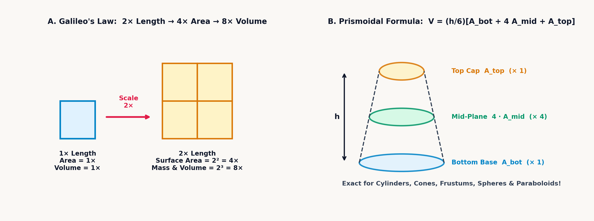
Weighting the bottom base, the mid-height slice, and the top roof in the \(1 : 4 : 1\) ratio forms an effective average cross-section \(\frac{1}{6}(A_{\text{bottom}} + 4A_{\text{mid}} + A_{\text{top}})\) across \(1 + 4 + 1 = 6\) parts of weight—assigning two-thirds weight (\(\frac{4}{6}\)) to the midsection \(A_{\text{mid}}\) where the bulk of the solid resides—and multiplying that average area by the total height \(h\) yields the exact volume \(V\). Cavalieri's Principle and Simpson's three-slice rule unify the classical volume formulas of solid geometry. When any pyramid or cone is sliced horizontally at distance \(z\) below its apex, its linear dimensions grow linearly with \(z/h\), so its cross-sectional area grows quadratically as \(A(z) = A_{\text{base}}(z/h)^2\). Because the average value of \((z/h)^2\) from \(0\) to \(h\) is \(\frac{1}{3}\) (which also follows from dissecting a cube into three identical square pyramids meeting at one corner), every cone or pyramid encloses one-third the volume of its bounding prism or cylinder, \(V = \frac{1}{3}A_{\text{base}}h\), whether its base is a circle, a square, an octagon, or an ellipse (\(A_{\text{base}} = \pi ab\), where \(V = \frac{1}{3}\pi abh\)). Likewise, a paraboloid of revolution whose radius grows as \(r(z) \propto \sqrt{z}\) has cross-sectional area \(A(z) \propto z\), whose average from \(0\) to \(h\) is one-half (\(V = \frac{1}{2}\pi r^2 h\)).
By Cavalieri's slice principle, a sphere of radius \(r\) inscribed inside a right circular cylinder of radius \(r\) and height \(h = 2r\) encloses two-thirds (\(\frac{2}{3}\)) of the cylinder's volume. When the top hemisphere of radius \(r\) is placed beside a cylinder of radius \(r\) and height \(r\) that has had an inverted \(45^\circ\) cone (\(r_{\text{cone}}(z) = z\)) carved out of its center, and both solids are sliced at height \(z\) above the equator, the Pythagorean theorem shows that the hemisphere's slice is a disk of radius \(\sqrt{r^2 - z^2}\) and area \(\pi(r^2 - z^2)\).
At the same height \(z\), the punctured cylinder's slice is an annulus of outer radius \(r\) and inner hole radius \(z\), whose area is also \(\pi(r^2 - z^2)\). Because every horizontal slice matches in area, the hemisphere's volume equals the cylinder minus the cone: \(\pi r^3 - \frac{1}{3}\pi r^3 = \frac{2}{3}\pi r^3\). Doubling for both hemispheres gives \(V_{\text{sphere}} = \frac{4}{3}\pi r^3 = \frac{2}{3}(2\pi r^3) = \frac{2}{3}V_{\text{cylinder}}\); decomposing the sphere into radial pyramids of height \(r\) and base areas summing to \(A_{\text{sphere}}\) (\(V_{\text{sphere}} = \frac{1}{3}r A_{\text{sphere}}\)) then establishes that its surface area \(A_{\text{sphere}} = 4\pi r^2\) is likewise \(\frac{2}{3}\) of the cylinder's total area (\(2\pi r^2 + 2\pi r(2r) = 6\pi r^2\)).
When two equal circular cylinders of radius \(r\) intersect at a \(90^\circ\) right angle, as in a high-pressure refinery cross-joint or a groin vault, the common volume forms a Steinmetz bicylinder. Slicing the bicylinder horizontally at height \(z\), where both cylinders have half-width \(\sqrt{r^2 - z^2}\), produces a square cross-section of side \(2\sqrt{r^2 - z^2}\) and area \(4(r^2 - z^2)\); an inscribed sphere's slice is a circle of area \(\pi(r^2 - z^2)\). At every slice from bottom to top, the bicylinder's square slice is \(\frac{4}{\pi}\) times the sphere's circular slice, so by Cavalieri's Principle \(\pi\) cancels out of the volume.
A second \(\pi\)-free solid is the cylindrical ungula (hoof)—the wedge formed when a right circular cylinder of radius \(r\) is sliced by an inclined plane passing through a base diameter at angle \(\alpha\) (reaching rim height \(h = r\tan\alpha\)), whose vertical slices perpendicular to the diameter are right triangles integrating to \(\frac{2}{3}r^2 h\):
Even though both solids are bounded by curved cylindrical walls, neither volume contains \(\pi\). For \(r = 6\text{ cm}\) and \(\alpha = 45^\circ\) (\(h = 6\text{ cm}\)), the ungula encloses \(V_{\text{ungula}} = \mathbf{144\text{ cm}^3}\) and the bicylinder encloses \(V_{\text{bicylinder}} = \mathbf{1,152\text{ cm}^3}\).
When a cone or pyramid is sliced flat at height \(h\) before reaching its apex, with bottom radius \(R\) (or base area \(A_1\)) and top radius \(r\) (or top area \(A_2\)), the resulting frustum has volume \(V_{\text{pyr,frust}} = \frac{h}{3}(A_1 + A_2 + \sqrt{A_1 A_2})\) and \(V_{\text{cone,frust}} = \frac{1}{3}\pi h(R^2 + Rr + r^2)\). Physically, the frustum's volume equals its height \(h\) multiplied by the arithmetic average of three areas: the bottom base \(A_1 = \pi R^2\), the top base \(A_2 = \pi r^2\), and their geometric mean \(\sqrt{A_1 A_2} = \pi Rr\). On a concrete bridge-pier pyramidal frustum with \(A_1 = 36\text{ m}^2,\; A_2 = 16\text{ m}^2\), and \(h = 9\text{ m}\), the three areas \(36\), \(16\), and \(\sqrt{36 \times 16} = 24\text{ m}^2\) combine with \(\frac{h}{3} = 3\text{ m}\) to yield \(V = \mathbf{228\text{ m}^3}\).
In the volume (\(V = 2\pi^2 R r^2\)) and surface area (\(A = 4\pi^2 R r\)) of a torus—an O-ring gasket with major orbit radius \(R\) and minor tube cross-section radius \(r\) (\(R \ge r\))—the constant \(\pi\) appears squared (\(\pi^2 \approx 9.87\)) because two orthogonal circles are multiplied together. By Pappus's Centroid Theorems, when a planar curve of arc length \(L\) or a planar region of area \(A_{\text{cross}}\) is revolved around a coplanar external axis that does not intersect the curve or region, the surface area swept out equals \(L\) multiplied by the circumference \(2\pi R_{\text{cm,arc}}\) traveled by the curve's arc-length centroid, and the enclosed volume equals \(A_{\text{cross}}\) multiplied by the circumference \(2\pi R_{\text{cm,area}}\) traveled by the region's area centroid:
For a torus, the generating circle has circumference \(L = 2\pi r\) and disk area \(A_{\text{cross}} = \pi r^2\), while its centroid travels a circle of length \(2\pi R\), yielding \(A = 4\pi^2 R r\) and \(V = 2\pi^2 R r^2\) without evaluating an integral. For an O-ring with \(R = 45\text{ mm}\) and \(r = 3.5\text{ mm}\), \(A \approx \mathbf{6,217.851\text{ mm}^2}\) and \(V = A \cdot r / 2 \approx \mathbf{10,881.239\text{ mm}^3}\).
Two-dimensional space admits infinitely many regular polygons, yet three-dimensional space permits only five regular convex polyhedra: the 4-faced tetrahedron, 6-faced cube, 8-faced octahedron, 12-faced dodecahedron, and 20-faced icosahedron (for an icosahedral crystal of edge \(a = 18\text{ mm}\), \(V = \frac{5(3+\sqrt{5})}{12}a^3 \approx \mathbf{12,723.645\text{ mm}^3}\)). The volume coefficient \(\frac{\sqrt{2}}{12}a^3\) of a regular tetrahedron of edge length \(a\) follows from inscribing it inside a cube of edge length \(c = a/\sqrt{2}\) (so each face diagonal has length \(\sqrt{2}c = a\)). The space outside the tetrahedron consists of four right-angled corner pyramids, each having three mutually perpendicular legs of length \(c\) and volume \(\frac{1}{3}\left(\frac{1}{2}c^2\right)c = \frac{1}{6}c^3\). Slicing off those four corners removes \(4 \times \frac{1}{6} = \frac{2}{3}\) of the cube, so the central tetrahedron retains \(1 - \frac{2}{3} = \frac{1}{3}\) of the cube's volume: \(V = \frac{1}{3}c^3 = \frac{1}{3}\left(\frac{a}{\sqrt{2}}\right)^3 = \frac{\sqrt{2}}{12}a^3\).
Every convex polyhedron with \(V\) vertices, \(E\) edges, and \(F\) faces satisfies Euler's polyhedral invariant:
When a polyhedron's wireframe is projected radially onto a rubber sphere, punctured through one face, and flattened onto a plane, this topological invariant becomes visible: removing each edge merges two faces (\(\Delta E = -1, \Delta F = -1\), which preserves \(V - E + F\)), and contracting a tree of \(V\) vertices and \(V - 1\) edges to a single point yields \(1 - 0 + 1 = 2\). At every vertex of a convex polyhedron, at least \(3\) faces must meet, and their flat corner angles must sum to less than \(360^\circ\) so the faces fold into a 3D corner instead of lying flat. Equilateral triangles (\(60^\circ\)) allow \(3, 4,\) or \(5\) faces per vertex (tetrahedron, octahedron, icosahedron); squares (\(90^\circ\)) allow \(3\) (cube); and regular pentagons (\(108^\circ\)) allow \(3\) (dodecahedron). At six sides, three regular hexagons meet at \(3 \times 120^\circ = 360^\circ\) and lie flat in a plane, precluding any regular polyhedron with six or more sides per face.
6.2.1 Spherical Shells, Geodesy & Additive Manufacturing
Curved shells and planetary surfaces follow three additional mensuration laws for spherical caps, spherical triangles, and triaxial ellipsoids. In petrochemical refineries, liquefied gases are stored inside spherical Hortonsphere tanks of radius \(R\) because a sphere resists internal pressure with uniform membrane tension (half the hoop stress of a cylinder of equal radius). When an ultrasonic sensor measures liquid depth \(h\) at the bottom of the sphere, integrating horizontal disk slices of squared radius \(r^2(z) = R^2 - (R-z)^2 = 2Rz - z^2\) from \(z = 0\) to \(h\) gives the spherical cap volume \(V_{\text{cap}}\), while the curved exterior shell of height \(h\) forms a spherical dome of surface area \(A_{\text{dome}}\), and slicing the sphere between two parallel planes of radii \(r_1\) and \(r_2\) separated by vertical thickness \(h\) encloses the spherical zone volume \(V_{\text{zone}}\):
Expanding the cap volume as \(V_{\text{cap}} = \pi R h^2 - \frac{1}{3}\pi h^3\) shows how the spherical-curvature taper \(-\frac{1}{3}\pi h^3\) trims the leading paraboloid approximation \(\pi R h^2\). By Archimedes' hat-box projection, the curved surface area \(A_{\text{dome}} = (2\pi R)h\) of any spherical cap or zone depends only on the sphere's radius \(R\) and the vertical slice height \(h\): as a horizontal ring at latitude \(\theta\) approaches the pole, its horizontal radius \(R\cos\theta\) shrinks by \(\cos\theta\) while its sloped meridian width \(dz/\cos\theta\) stretches by the reciprocal \(1/\cos\theta\), canceling at every latitude so the dome has the exact same area as a band of height \(h\) on the circumscribing cylinder of circumference \(2\pi R\).
Splitting the zone volume into \(V_{\text{zone}} = \frac{1}{2}\pi(r_1^2 + r_2^2)h + \frac{1}{6}\pi h^3\) likewise separates the average of the two flat end-cap cylinders, \(\frac{1}{2}(\pi r_1^2 + \pi r_2^2)h\), from the outward spherical bulge \(\frac{1}{6}\pi h^3 = \frac{4}{3}\pi(h/2)^3\)—the exact volume of a complete sphere of diameter \(h\). For a spherical cap of \(R = 10\text{ cm}\) and depth \(h = 3\text{ cm}\), \(V_{\text{cap}} \approx \mathbf{254.469\text{ cm}^3}\) and \(A_{\text{dome}} \approx \mathbf{188.496\text{ cm}^2}\); for a spherical zone with \(r_1 = 8\text{ cm}, r_2 = 6\text{ cm}, h = 4\text{ cm}\), \(V_{\text{zone}} \approx \mathbf{661.829\text{ cm}^3}\).
On a flat plane, the interior angles of every triangle sum to \(180^\circ\) (\(\pi\text{ rad}\)), whether the triangle is drawn on a postage stamp or across a field. On a curved sphere of radius \(R\), however, great-circle paths bow outward, and the interior angles \((\alpha, \beta, \gamma)\) of a spherical triangle always sum to more than \(180^\circ\). Starting at the North Pole, walking south to the Equator along the Prime Meridian, turning \(90^\circ\) west along the Equator to \(90^\circ\text{ W}\), and turning \(90^\circ\) north back to the North Pole traces a spherical triangle with three \(90^\circ\) right angles (\(\alpha + \beta + \gamma = 270^\circ\)) enclosing one-eighth of the globe (\(\frac{1}{8}\cdot 4\pi R^2 = \frac{\pi}{2}R^2\)).
That angle sum and the enclosed surface area are locked together by Girard's Theorem on intersecting great circles. When two great circles slice through opposite poles at a dihedral wedge angle \(\theta_{\text{rad}}\) (in radians), they carve the sphere into crescent-shaped orange-peel wedges called spherical lunes; because a full \(2\pi\text{ rad}\) revolution sweeps out the entire sphere area \(4\pi R^2\), a lune of dihedral angle \(\theta_{\text{rad}}\) encloses the fraction \(\frac{\theta_{\text{rad}}}{2\pi}(4\pi R^2)\), or \(A_{\text{lune}} = 2R^2\theta_{\text{rad}}\). Overlaying the three lune pairs covering the three corner angles \((\alpha, \beta, \gamma)\) of a spherical triangle covers the entire sphere once while triple-covering the triangle itself and its antipodal twin, proving that the spherical excess \(E_{\text{rad}} = (\alpha + \beta + \gamma) - \pi\) (the radian amount by which the three corner angles exceed \(180^\circ\)) is directly proportional to the triangle's area \(A_{\text{triangle}}\):
Converting the degree excess above \(180^\circ\) into radians \(E_{\text{rad}}\) and scaling by \(R^2\) turns angle measurements directly into surface area: on a sphere of known radius \(R\), a surveyor can determine the area of a continental triangle from its three corner angles alone without taping any boundary length.
Just as the perimeter of a 2D ellipse has no elementary closed form, the surface area \(A\) of a 3D triaxial ellipsoid with three unequal semi-axes \((a, b, c)\) (whose enclosed volume is \(V_{\text{ellipsoid}} = \frac{4}{3}\pi abc\), and whose three perpendicular coordinate-plane shadow projections are ellipses of areas \(\pi ab\), \(\pi ac\), and \(\pi bc\)) requires incomplete elliptic integrals. Knud Thomsen's power-mean formula combines the three pairwise semi-axis shadow products \((ab, ac, bc)\) using an exponent \(p \approx 1.608\):
Where a sphere of radius \(R\) has surface area \(4\pi R^2\), Knud Thomsen's formula replaces the single squared radius \(R^2\) with the \(p\)-power average of the three perpendicular semi-axis products \(ab\), \(ac\), and \(bc\)—raising each product to the power \(p \approx 1.608\), averaging the three terms inside the brackets, and extracting the \(1/p\) root to restore dimensions of area before scaling by \(4\pi\). This single expression approximates the exact elliptic surface integral to within \(1.06\%\) across all aspect ratios (for an ellipsoid with semi-axes \(a = 6\text{ cm},\; b = 4\text{ cm},\; c = 3\text{ cm}\), \(V_{\text{ellipsoid}} \approx \mathbf{301.593\text{ cm}^3}\) and \(A \approx \mathbf{231.28\text{ cm}^2}\)).
Finally, surface area and enclosed volume govern mass estimation in aerospace sandwich-composite panels and lattice-core additive manufacturing. Unlike a solid casting of material density \(\rho\) that is \(100\%\) dense throughout, a lightweight structural enclosure—like the trabecular bone of an avian wing—is a composite shell-and-core structure of total mass \(m_{\text{part}}\), pairing a solid exterior skin of area \(A_{\text{surface}}\) and thickness \(t_{\text{shell}}\) with a porous lattice core that fills the remaining interior volume \(V_{\text{interior}} = V_{\text{total}} - A_{\text{surface}}t_{\text{shell}}\) at relative infill fraction \(f_{\text{infill}}\):
Summing the solid skin volume \(A_{\text{surface}} t_{\text{shell}}\) and the effective lattice volume \(V_{\text{interior}} f_{\text{infill}}\) before multiplying by material density \(\rho\) shows why surface area dominates lightweight part weight. For thin-walled instrument housings and aerospace fairings, more than half of the structural mass resides in the exterior skin (\(A_{\text{surface}} \cdot t_{\text{shell}}\)) rather than in the cellular core: on a composite housing with \(A_{\text{surface}} = 150\text{ cm}^2\), skin thickness \(t_{\text{shell}} = 0.12\text{ cm}\), total bounding volume \(V_{\text{total}} = 98\text{ cm}^3\), and \(f_{\text{infill}} = 20\%\) core lattice density molded from polycarbonate-carbon resin (\(\rho = 1.25\text{ g/cm}^3\)), the solid skin volume \(18\text{ cm}^3\) and cellular core volume \(0.2(98 - 18) = 16\text{ cm}^3\) combine to \(34\text{ cm}^3\), yielding a finished structural mass of \(m_{\text{part}} = \mathbf{42.5\text{ g}}\).
6.2.2 Euclidean Distance, Helical Coils & Weighted Centroids
Once the surface area and volume of a three-dimensional body are established, spatial analysis turns to Euclidean distance, helical wire length, and center of mass. On a flat sheet of paper, the distance between two points \((x_1, y_1)\) and \((x_2, y_2)\) with coordinate steps \(\Delta x = x_2 - x_1\) and \(\Delta y = y_2 - y_1\) follows the 2D Pythagorean theorem \(r = \sqrt{\Delta x^2 + \Delta y^2}\). Stepping out of the flat plane by rising an elevation \(\Delta z = z_2 - z_1\) perpendicular to the floor forms a second right triangle from the floor diagonal \(r = \sqrt{\Delta x^2 + \Delta y^2}\) and the vertical rise \(\Delta z\), whose hypotenuse is the straight-line 3D Euclidean distance \(d\):
Geometrically, this 3D distance decomposes into two orthogonal right triangles in succession: first finding the diagonal shadow \(r_{xy} = \sqrt{\Delta x^2 + \Delta y^2}\) across the floor, and then tilting up from that floor diagonal by the vertical height \(\Delta z\) to reach the 3D corner. For a displacement of \((\Delta x, \Delta y, \Delta z) = (3, 4, 12)\text{ m}\), the horizontal legs \((3, 4)\text{ m}\) form a floor diagonal of \(r_{xy} = \sqrt{3^2 + 4^2} = 5\text{ m}\) (at floor azimuth \(\approx 53.13^\circ\)), and pairing that \(5\text{ m}\) floor diagonal with the vertical rise \(\Delta z = 12\text{ m}\) produces the 3D spatial diagonal \(d = \sqrt{5^2 + 12^2} = \mathbf{13\text{ m}}\) at an elevation angle of \(\phi \approx \mathbf{67.38^\circ}\).
That three-component Pythagorean sum also gives the small-taper active-coil wire blank length \(L\) required to wind a tapered conical compression spring with bottom radius \(R_1\), top radius \(R_2\), mean radius \(R_m = \frac{1}{2}(R_1 + R_2)\), axial height \(h\), and \(N\) active coils (prior to squared-and-ground end turns):
Unrolling the conical helix resolves the wire path into three locally orthogonal displacements whose squares add under the radical: \(N\) circumferential turns of unrolled length \(2\pi N R_m\) at the mean radius, the vertical axial climb \(h\), and the inward radial taper \(R_1 - R_2\) from base to top.
In three-dimensional tracking, when a deep-space radar or robotic gimbal follows a target along the 3D displacement vector \(\vec{V} = (\Delta x, \Delta y, \Delta z)\) at total slant range \(d = |\vec{V}| = \sqrt{\Delta x^2 + \Delta y^2 + \Delta z^2}\), the orientation of the beam in space is fixed by the three inclination angles \(\alpha, \beta,\) and \(\gamma\) measured between \(\vec{V}\) and the positive \(x\)-, \(y\)-, and \(z\)-axes. Projecting the slant range \(d\) onto each coordinate axis gives \(\Delta x = d\cos\alpha\), \(\Delta y = d\cos\beta\), and \(\Delta z = d\cos\gamma\), so dividing each coordinate step by the range \(d\) produces the three direction cosines \((\cos\alpha, \cos\beta, \cos\gamma) = \left(\frac{\Delta x}{d}, \frac{\Delta y}{d}, \frac{\Delta z}{d}\right)\)—the components of the 3D unit pointing vector \(\hat{u} = \vec{V}/d\):
Dividing both sides of the 3D Pythagorean equation \(\Delta x^2 + \Delta y^2 + \Delta z^2 = d^2\) by \(d^2\) normalizes the three squared axial projections so they sum to \(1\), which guarantees that the tip of the unit pointing vector \(\hat{u}\) always lies on a unit sphere of radius \(1\) and that any two direction angles determine the third.
The balance point of an asymmetric airplane wing, a welded I-beam girder, or a multi-stage rocket follows from static torque equilibrium. When a body is assembled from \(N\) components with masses (or cross-sectional areas) \(m_1, m_2, \dots, m_N\) centered at positions \(x_1, x_2, \dots, x_N\), each piece exerts a gravitational torque (first moment) \(m_k x_k\) about the origin. The composite center of mass (centroid) \(\bar{x}_{\text{cm}}\) is the exact location where a single support fulcrum balances all those torques, defined as the mass-weighted mean of the coordinates:
Summing the individual first-moment torques \(m_k x_k\) of all \(N\) components and dividing by the total assembled mass \(\sum m_k\) locates the unique coordinate \(\bar{x}_{\text{cm}}\) where concentrating the entire mass produces the same gravitational torque as the distributed parts.
6.2.3 Geometric Symmetry, Mass Distribution & Classical Mechanics
In linear motion, a \(10\text{-kilogram}\) steel block requires the same force to accelerate whether it is shaped like a compact cannonball or a thin bicycle wheel. Across classical mechanics, orbital astrodynamics, and structural engineering, however, the cross-sectional and radial geometry of cylinders, spheres, and structural beams governs how matter stores rotational kinetic energy, escapes planetary gravity, resists shaft torsion, and withstands elastic bending.
When a rigid body spins about an axis at angular velocity \(\omega\) (in radians per second, \(\text{rad/s}\)), a particle of mass \(m\) at perpendicular radial distance \(r\) from the axis sweeps along a circle at tangential speed \(v = r\omega\), turning inward with centripetal acceleration \(a_c = v^2 / r = \omega^2 r\). Substituting \(v = r\omega\) into the translational kinetic energy \(K = \frac{1}{2}mv^2\) groups the mass and its squared lever arm into the quantity \(mr^2\), whose sum (or integral \(I = \int r^2\,dm\)) across the entire body defines the rotational moment of inertia \(I\) and the rotational kinetic energy \(E_{\text{rot}}\):
The rotational moment of inertia \(I = \int r^2\,dm\) (\(\text{kg}\cdot\text{m}^2\)) plays the exact role of mass in linear motion while angular speed \(\omega\) plays the role of velocity, giving rotational kinetic energy \(E_{\text{rot}} = \frac{1}{2}I\omega^2\) and angular momentum \(L = I \omega\) (for an energy-storage flywheel of \(I = 4.25\text{ kg}\cdot\text{m}^2\) spinning at \(\omega = 150\text{ rad/s}\), \(E_{\text{rot}} = \mathbf{47,812.5\text{ J}}\)). Because the radial distance \(r\) is squared, moving a kilogram of mass twice as far from the rotation axis makes it four times harder to spin up or slow down. When a figure skater pulls her extended arms inward, cutting her effective radius \(r\) in half reduces \(I \propto r^2\) by roughly a factor of three or four; because angular momentum \(L = I\omega\) is conserved on frictionless ice, her spin rate \(\omega\) triples.
For homogeneous bodies of total mass \(M\) and outer radius \(R\) (or length \(L\), or bounded between inner bore radius \(r_1\) and outer radius \(r_2\) for a hollow cylinder, and between inner radius \(R_1\) and outer radius \(R_2\) for a hollow spherical shell), integrating \(r^2\,dm\) across the solid cross-section yields the standard form \(I = k M R^2\) (or \(k M L^2\)), where the dimensionless shape factor \(k\) measures how strongly the geometry concentrates mass away from the rotation axis:
| Homogeneous Rigid Body | Axis Orientation | Inertia Formula \(I\) | Shape Factor \(k\) |
|---|---|---|---|
| Thin Cylindrical Hoop / Rim | Symmetry axis | \(M R^2\) | \(1\) |
| Thin Spherical Shell | Any diameter | \(\dfrac{2}{3}M R^2\) | \(\dfrac{2}{3} \approx 0.667\) |
| Thick-Walled Hollow Cylinder | Symmetry axis | \(\dfrac{1}{2}M(r_1^2 + r_2^2)\) | \(\dfrac{1}{2}\left(1 + \dfrac{r_1^2}{r_2^2}\right)\) |
| Solid Circular Cylinder / Disk | Symmetry axis | \(\dfrac{1}{2}M R^2\) | \(\dfrac{1}{2} = 0.5\) |
| Solid Sphere | Any diameter | \(\dfrac{2}{5}M R^2\) | \(\dfrac{2}{5} = 0.4\) |
| Thick-Walled Spherical Shell | Any diameter | \(\dfrac{2}{5}M\dfrac{R_2^5 - R_1^5}{R_2^3 - R_1^3}\) | \(\dfrac{2}{5}\dfrac{1 - (R_1/R_2)^5}{1 - (R_1/R_2)^3}\) |
| Slender Uniform Rod (Length \(L\)) | Transverse through CM | \(\dfrac{1}{12}M L^2\) | \(\dfrac{1}{12} \approx 0.083\) |
| Slender Uniform Rod (Length \(L\)) | Transverse through end pivot | \(\dfrac{1}{3}M L^2\) | \(\dfrac{1}{3} \approx 0.333\) |
A solid circular cylinder (\(I = \frac{1}{2}MR^2\)) averages \(r^2\) over disk rings \(dA = 2\pi r\,dr\), while a solid sphere (\(I = \frac{2}{5}MR^2\)) tapers toward its poles so that more of its volume lies closer to the spin axis; if a solid cylinder and a solid sphere roll down an inclined plane from rest, the sphere converts a smaller fraction of its potential energy into rotational spin and always wins the race. A mechanical punch-press flywheel, by contrast, concentrates over three-quarters of its cast iron into a thick outer rim supported by a thin inner web so that nearly \(90\%\) of its rotational inertia comes from the outer rim. In three dimensions, a thick-walled deep-ocean bathysphere bounded by inner radius \(R_1\) and outer radius \(R_2\) integrates \(r^2\,dm\) across concentric spherical shells to scale with the fifth-power difference \(I_{\text{shell}} = \frac{2}{5}M\frac{R_2^5 - R_1^5}{R_2^3 - R_1^3}\).
At the planetary scale, spherical volume \(V = \frac{4}{3}\pi R^3\), mean planetary density \(\rho\), and Newton's universal gravitational constant \(G \approx 6.674 \times 10^{-11}\text{ m}^3/(\text{kg}\cdot\text{s}^2)\) govern gravitational binding and orbital escape energy. By the gravitational shell theorem, a spherical planet of radius \(R\) and mass \(M = \frac{4}{3}\pi R^3 \rho\) attracts an exterior spacecraft of mass \(m\) with force \(G M m / R^2\) as if all planetary mass were concentrated at its center. Setting that inward gravitational pull \(G M m / R^2\) equal to the required centripetal force \(m v_{\text{orb}}^2 / R\) defines low-altitude circular orbital speed \(v_{\text{orb}}\), while equating the spacecraft's kinetic energy \(\frac{1}{2}m v_{\text{esc}}^2\) to the depth of the gravitational potential well \(G M m / R\) defines the parabolic escape velocity \(v_{\text{esc}}\):
Canceling the spacecraft mass \(m\) leaves both speeds governed solely by the ratio of the planetary gravitational parameter \(GM\) to the surface radius \(R\). A satellite in circular orbit at \(v_{\text{orb}} = \sqrt{GM/R}\) already carries kinetic energy \(\frac{1}{2}mv_{\text{orb}}^2 = \frac{1}{2}\frac{GMm}{R}\), half the gravitational binding energy \(\frac{GMm}{R}\) needed to climb to infinity, so multiplying its orbital speed by \(\sqrt{2}\) doubles its kinetic energy and breaks it free of the planet. Substituting \(M = \frac{4}{3}\pi R^3\rho\) into \(\sqrt{2GM/R}\) cancels one power of \(R\) against \(R^3\) and pulls \(R = \sqrt{R^2}\) outside the radical: because enclosed mass grows with volume (\(R^3\)) while surface distance grows linearly (\(R\)), escape velocity scales linearly with planetary radius (\(v_{\text{esc}} \propto R\sqrt{\rho}\)), so doubling a rocky world's radius at constant density quadruples its surface escape energy.
When a rigid body of total mass \(M\) and center-of-mass inertia \(I_{\text{cm}}\) pivots about an axis displaced by perpendicular distance \(d\) from its center of mass, one need not re-integrate \(\int r^2\,dm\) from scratch. Because the cross-term in \((r_{\text{cm}} + d)^2 = r_{\text{cm}}^2 + 2d\,r_{\text{cm}} + d^2\) vanishes around the centroid (\(\int r_{\text{cm}}\,dm = 0\)), the Parallel-Axis Theorem adds the point-mass transfer term \(M d^2\) to yield the displaced inertia \(I_{\text{parallel}}\):
Adding the orbital transfer term \(Md^2\)—the inertia of the entire mass \(M\) revolving at distance \(d\) around the new pivot—to the centroidal inertia \(I_{\text{cm}}\) shifts the rotation axis in a single step. If the pivot of a slender robotic arm link of mass \(m\) and length \(L\) moves from its midpoint (\(I_{\text{cm}} = \frac{1}{12}mL^2\)) to its shoulder joint (\(d = L/2\)), the parallel-axis term adds \(m(L/2)^2 = \frac{1}{4}mL^2 = 3I_{\text{cm}}\), quadrupling the rotational inertia to \(I_{\text{pivot}} = \frac{1}{3}mL^2\).
The same \(r^2\) geometric weighting governs the elastic strength of drive shafts and structural beams when cross-sectional area \(dA\) replaces mass \(dm\). When a circular steel shaft of length \(L\) and material shear modulus of rigidity \(G\) (in pascals, measuring the atomic lattice's stiffness against shearing distortion) twists through a total angle \(\theta\) (in radians) under engine torque \(T\), elastic shear strain grows linearly with radial distance \(\rho\) from the centerline. As a result, the core metal near \(\rho \approx 0\) carries almost no torque while adding dead weight, whereas the peak shear stress \(\tau_{\max}\) occurs at the outermost surface radius \(R_o\).
Torsional stiffness grows with the fourth power of radius because radial distance \(\rho\) reinforces a concentric ring of metal in three ways at once: a ring at twice the radius has twice the circumference (\(dA = 2\pi\rho\,d\rho \propto \rho\)), it twists through twice the shear strain so it develops twice the restoring shear stress (\(\tau \propto \rho\)), and that stress acts at twice the lever arm (\(\rho\)) about the centerline. Multiplying circumference, shear stress, and lever arm together (\(\rho \times \rho \times \rho\,d\rho = \rho^3\,d\rho\)) and integrating across a solid shaft of radius \(r\) (or a hollow tubular shaft from inner bore radius \(R_i\) to outer radius \(R_o\)) yields the fourth-power area polar moment of inertia \(J\) (\(\text{m}^4\)), which governs both the outer-fiber shear stress \(\tau_{\max}\) and the end-to-end twist angle \(\theta\):
Subtracting the fourth power of the inner bore \(R_i^4\) from \(R_o^4\) in \(J_{\text{hollow}}\) removes the low-leverage core while keeping nearly all the outer rim's stiffness—which is why hollow bamboo stalks, avian wing bones, and tubular bicycle frames resist twisting nearly as well as solid rods of the same diameter at a fraction of the weight. Increasing the polar moment \(J\) directly reduces both the outer-fiber shear stress \(\tau_{\max} = TR_o/J\) driven by torque \(T\) at the surface radius \(R_o\) and the end-to-end twist angle \(\theta = TL/(GJ)\) accumulated along shaft length \(L\) against torsional rigidity \(GJ\). For a solid steel automotive half-shaft of radius \(r = 0.025\text{ m}\), length \(L = 1.2\text{ m}\), and shear modulus \(G = 79.3\times 10^9\text{ Pa}\) under torque \(T = 450\text{ N}\cdot\text{m}\), \(J \approx \mathbf{6.136\times 10^{-7}\text{ m}^4}\) yields \(\tau_{\max} \approx \mathbf{18.335\text{ MPa}}\) and \(\theta \approx \mathbf{0.011\text{ rad}}\) (\(\approx 0.636^\circ\)).
Under classical elastic beam flexure theory, when a horizontal rectangular beam of width \(b\) and depth \(h\)—or a symmetric wide-flange I-beam of outer flange width \(B\), total depth \(H\), central web thickness \(t_w\), and inner web clear height \(h_w\)—carries a bending moment \(M_{\text{bend}}\), longitudinal fibers at vertical distance \(y\) from the central neutral axis experience axial bending stress \(\sigma(y) = M_{\text{bend}} y / I_x\). Integrating \(y^2\,dA\) across the section defines the planar second moment of area \(I_x\) (\(\text{m}^4\)) and the peak outer-fiber bending stress \(\sigma_{\max}\) at the extreme top and bottom surfaces \(y = H/2\):
Bending resistance in a rectangular section (\(I_{x,\text{rect}} = \frac{1}{12}bh^3\)) grows linearly with beam width \(b\) but with the cube of vertical depth \(h^3\), while the wide-flange I-beam formula deducts the two recessed side channels of combined width \((B - t_w)\) and height \(h_w\) from the outer \(B \times H\) bounding box to counter the bending moment \(M_{\text{bend}}\) at the extreme fiber distance \(H/2\). Because bending stiffness scales with \(h^3\) at fixed width (and with the square of the aspect ratio \((h/b)^2\) when a fixed \(b \times h\) rectangular cross-section is rotated \(90^\circ\)), turning a \(4:1\) timber joist (nominal \(2\times 8\)) on edge makes it \(4^2 = 16\) times stiffer than laying it flat. Rolling structural steel into a wide-flange I-beam carves away the low-moment material near the neutral axis (\(y \approx 0\)) to concentrate cross-sectional area into the top and bottom flanges at \(y = \pm H/2\), the structural twin of a cast-iron flywheel rim.
6.3 Geometry in Four Registers: From Parcel Boundaries to Flywheels
When planar, volumetric, and inertial formulas are evaluated from their inner dimensional core outward on the four-register stack, they avoid redundant radius entry across two operational patterns:
- Single-Solid Factoring & Hypotenuse Projection (
[↰] [▸θ,r]): For a single geometric primitive (such as the annular pipe flange, the silver-ratio octagon, Heron's triangle, the frustum polynomial \(R^2 + Rr + r^2\), or the hollow drive shaft's fourth-power polar inertia \(J = \frac{\pi}{2}(R_o^4 - R_i^4)\)), factoring common multipliers (such as[↱] [π], \(\frac{1}{3}\pi h\), or \(\frac{3\sqrt{3}}{2}\)) to the outside lets the inner dimensional core accumulate inside Register \(X\) while Registers \(Z\) and \(T\) remain untouched. Whenever a right triangle or 3D slant height requires \(\sqrt{a^2 + b^2}\), staging \((Y = a,\; X = b)\) and pressing[↰] [▸θ,r](left-shifted on4) computes the hypotenuse in Register \(X\) without squaring each leg separately. - Composite Surface-Area & Centroid Ledger (
[Σ+],[↰] [Σ-],[↱] [SUMS], and[↱] [x̄,ȳ]): When auditing a multi-face casting or welded beam, clearing the statistical registers ([↰] [CLEAR]\(\to\)CLSTAT, which resets all six accumulators to0) turns[Σ+]and[↰] [Σ-](left-shifted on[Σ+]) into an additive and subtractive blueprint ledger. Evaluating each face group in Register \(X\) and pressing[Σ+](or[↰] [Σ-]to deduct a drilled cutout) increments the item counter \(n\) on screen while summing net area in \(\Sigma x\) (recalled via[↱] [SUMS], right-shifted on[Σ+], followed by the first softkeyΣx). Staging each sub-mass \(m_k\) (or sub-area \(A_k\)) in Register \(Y\) and its coordinate \(y_k\) in Register \(X\) before pressing[Σ+]prepares the first-moment ratio \(\bar{y} = \Sigma xy / \Sigma y\), which is evaluated by pressing[↱] [x̄,ȳ](right-shifted on[yˣ]) and tapping the third softkey (x̄w).
6.3.1 Planar Cross-Sections & Surveyed Triangles
This inside-out ordering keeps every intermediate result of planar ring, polygon, and geodetic sections within Registers \(Y\) and \(X\). On a high-pressure ASME B16.5 neoprene flange gasket (\(A = \pi(R^2 - r^2)\)) with outer radius \(R = 85\text{ mm}\) and inner bore radius \(r = 50\text{ mm}\), deferring the \(\pi\) multiplier avoids scaling both radii separately: squaring \(R^2 = 7,225\text{ mm}^2\) in Register \(X\), squaring \(r^2 = 2,500\text{ mm}^2\) (which lifts \(R^2\) into Register \(Y\)), subtracting to collapse the net radial span \(4,725\text{ mm}^2\) back into Register \(X\), and multiplying by \(\pi\) last yields \(A \approx \mathbf{14,844.025\text{ mm}^2}\) (\(\approx 148.44\text{ cm}^2\)).
Across a regular octagonal instrument bezel (\(A = 2(1 + \sqrt{2})s^2\)) of side length \(s = 65\text{ mm}\), constructing twice the silver ratio \(2(1 + \sqrt{2}) \approx 4.828\) in Register \(X\) first, squaring \(65^2 = 4,225\text{ mm}^2\) (lifting \(2\delta_S\) into Register \(Y\)), and multiplying yields \(A \approx \mathbf{20,400.105\text{ mm}^2}\). On the WGS-84 terrestrial semi-axes \(a = 6,378.137\text{ km}\) and \(b \approx 6,356.752\text{ km}\), subtracting \(b\) from \(a\) isolates the 3-decimal equatorial bulge \((a - b) \approx 21.385\text{ km}\) before dividing into \(a\) to return the reciprocal flattening \(1/f \approx \mathbf{298.253}\) (matching the official WGS-84 defining flattening \(1/f \approx 298.257\) when full sub-meter semi-minor precision is retained).
Heron's semiperimeter formula \(A = \sqrt{s(s-a)(s-b)(s-c)}\), which on paper appears to need four registers for \(s, (s-a), (s-b),\) and \((s-c)\) at once, runs as a Register-\(X\) accumulator once the semiperimeter \(s = (a+b+c)/2\) is stored in Variable \(S\). On a surveyed triangular gusset parcel with boundary lengths \(a = 13\text{ m}\), \(b = 14\text{ m}\), and \(c = 15\text{ m}\), storing \(s = (13 + 14 + 15)/2 = 21\text{ m}\) in Variable \(S\), multiplying the three excess factors \((21 - 13) \times (21 - 14) \times (21 - 15) = 8 \times 7 \times 6 = 336\text{ m}^3\) in place, and scaling by \(s = 21\text{ m}\) before taking the square root yields the exact parcel area \(A = \sqrt{7,056} = \mathbf{84\text{ m}^2}\), while dividing by \(S\) returns the exact inscribed circle radius \(r = A/s = 84/21 = \mathbf{4\text{ m}}\).
On a right-angled structural channel with orthogonal legs \(a = 15\text{ cm}\) and \(b = 20\text{ cm}\), evaluating the linear tangent relation \(r = \frac{a + b - c}{2}\) on \((Y, X)\) uses rectangular-to-polar conversion as a Pythagorean hypotenuse finder (\(c = \sqrt{a^2 + b^2}\)): converting \((15, 20)\) to polar form places the hypotenuse \(c = 25\text{ cm}\) in Register \(X\) (and angle \(\approx 36.87^\circ\) in Register \(Y\)); keying \(15\) and \(20\) and adding them to form the leg sum \(a + b = 35\text{ cm}\) lifts \(c = 25\text{ cm}\) into Register \(Z\) on entry and drops it back into Register \(Y\) on addition, so exchanging Registers \(X\) and \(Y\) before subtracting and halving returns the cooling-pipe inradius \(r = \mathbf{5\text{ cm}}\).
When survey corners or intersecting boundary lines are given in Cartesian coordinates, the \(2 \times 2\) determinant \(D = x_1 y_2 - y_1 x_2\) from the Shoelace Theorem and Cramer's Rule evaluates across three registers: for two parcel vectors \((x_1, y_1) = (18, 4)\text{ m}\) and \((x_2, y_2) = (6, 15)\text{ m}\), multiplying the primary diagonal \(18 \times 15 = 270\text{ m}^2\) in Register \(X\) and forming the secondary diagonal \(4 \times 6 = 24\text{ m}^2\) across Registers \(Y\) and \(X\) (which lifts \(270\) to Register \(Z\) and drops it back to Register \(Y\)) yields the signed parallelogram determinant \(D = 270 - 24 = \mathbf{246\text{ m}^2}\) and enclosed triangle area \(A = \frac{1}{2}D = \mathbf{123\text{ m}^2}\)—the same two-product difference that resolves Cramer's intersection coordinates \((x, y) = (D_x/D,\; D_y/D)\) for two survey lines \(a_1 x + b_1 y = c_1\) and \(a_2 x + b_2 y = c_2\).
6.3.2 Accumulating Composite Surface Areas & Solid Volumes
For a three-dimensional enclosure or finned casting bounded by many polygon groups, the statistical accumulator replaces manual scratchpad variables with a running ledger. Clearing the statistical registers zeros all six accumulators (\(\Sigma x = 0,\; n = 0\)); evaluating the area \(A_k\) of each face or opposing face pair in Register \(X\) and accumulating it (or subtracting to deduct a milled window aperture or cooling bore) adds \(A_k\) into \(\Sigma x\) and replaces Register \(X\) with the integer face-group counter \(n\); and recalling \(\Sigma x\) brings the net surface area back into Register \(X\).
On a \(10 \times 5 \times 4\text{ cm}\) rectangular prism, this ledger groups the six exterior walls into three opposing pairs—\(2 \times 10 \times 5 = 100\text{ cm}^2\) (\(n = 1\)), \(2 \times 10 \times 4 = 80\text{ cm}^2\) (\(n = 2\)), and \(2 \times 5 \times 4 = 40\text{ cm}^2\) (\(n = 3\))—so recalling \(\Sigma x\) returns the total surface area \(\Sigma x = \mathbf{220\text{ cm}^2}\) in Register \(X\) while the face-pair counter \(n = 3\) sits in the n register (Figure 6.2). Likewise, on the StackCalc SC-32 rectangular chassis (\(L = 148\text{ mm}\), \(W = 80\text{ mm}\), \(H = 14.5\text{ mm}\)) for an additive-manufacturing shell takeoff, accumulating top and bottom (\(2 \times 148 \times 80 = 23,680\text{ mm}^2,\; n = 1\)), side walls (\(2 \times 148 \times 14.5 = 4,292\text{ mm}^2,\; n = 2\)), and end caps (\(2 \times 80 \times 14.5 = 2,320\text{ mm}^2,\; n = 3\)) recalls \(\Sigma x = \mathbf{30,292\text{ mm}^2}\).
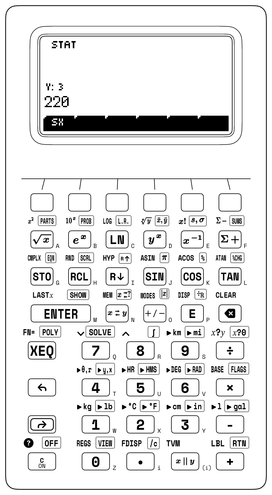
Because each accumulation step increments the face counter \(n\) in Register \(X\) while building the running total inside \(\Sigma x\), complex multi-step castings and thermal radiators can be audited by stepping around the blueprint. On a stepped cast-iron machine bracket (\(n = 6\) face groups) where a base block (\(120 \times 80 \times 30\text{ mm}\)) is surmounted by a centered boss (\(60 \times 40 \times 25\text{ mm}\)), subtracting the \(60 \times 40\text{ mm}\) boss footprint from the base roof and adding the boss roof back is redundant: viewed from above, the boss roof plus the surrounding ledge form one uninterrupted \(120 \times 80 = 9,600\text{ mm}^2\) top projection, so accumulating the bottom base (\(9,600\text{ mm}^2\)), long base walls (\(7,200\text{ mm}^2\)), short base ends (\(4,800\text{ mm}^2\)), long boss walls (\(3,000\text{ mm}^2\)), short boss ends (\(2,000\text{ mm}^2\)), and top projection (\(9,600\text{ mm}^2\)) yields \(\Sigma x = \mathbf{36,200\text{ mm}^2}\).
Across an 8-fin extruded aluminum CPU heat sink (\(n = 4\) face groups) where \(8\) vertical cooling fins (\(100\text{ mm}\) long, \(35\text{ mm}\) tall, \(2\text{ mm}\) thick) rise from a \(100 \times 100\text{ mm}\) square base plate, accumulating the \(16\) fin sidewalls (\(56,000\text{ mm}^2\)), the \(8\) fin top tips (\(1,600\text{ mm}^2\)), the valley floor between fins (\(8,400\text{ mm}^2\)), and the bottom mounting plate (\(10,000\text{ mm}^2\)) totals \(\Sigma x = \mathbf{76,000\text{ mm}^2}\)—a \(\mathbf{3.8\times}\) total area gain and a \(\mathbf{6.6\times}\) gain on the active air-cooled top face.
For a regular right square pyramid of base side \(s = 12\text{ mm}\) and altitude \(h = 8\text{ mm}\), the right triangle formed by \(h = 8\text{ mm}\) and base apothem \(s/2 = 6\text{ mm}\) has a \(6\text{–}8\text{–}10\) slant height of \(l = \sqrt{8^2 + 6^2} = 10\text{ mm}\); multiplying \(l = 10\text{ mm}\) by the four half-bases \(2s = 24\text{ mm}\) and adding the square base \(12^2 = 144\text{ mm}^2\) gives total surface area \(A = 384\text{ mm}^2\) in Register \(X\), and dividing by the volume \(V = \frac{1}{3}s^2 h = 384\text{ mm}^3\) confirms \(A/V = \mathbf{1\text{ mm}^{-1}}\).
Each single-solid volume and curved-shell formula from Cavalieri's principle unfolds as a one-dimensional sequence inside Register \(X\), using Register \(Y\) only transiently as terms combine. For an aerodynamic elliptic nose cone of semi-axes \(a = 24\text{ mm}\) and \(b = 15\text{ mm}\) and axial length \(h = 50\text{ mm}\), Cavalieri's one-third cone factor (\(V = \frac{1}{3}\pi abh = 6,000\pi\text{ mm}^3\)) evaluates by forming the bounding box product \(a \cdot b \cdot h = 18,000\text{ mm}^3\) in Register \(X\) and scaling by \(\pi / 3\) to return \(V \approx \mathbf{18,849.556\text{ mm}^3}\). On the Steinmetz bicylinder where two equal circular pipes of radius \(r = 15\text{ mm}\) intersect at right angles, the \(\frac{4}{\pi}\) slice ratio has already canceled \(\pi\), so evaluating \(V = \frac{16}{3}r^3 = \frac{16}{3}(3,375)\) delivers the rational volume \(\mathbf{18,000\text{ mm}^3}\), while \(A = 16r^2 = 16(225)\) gives the curved intersection surface area \(\mathbf{3,600\text{ mm}^2}\).
In a conical grain hopper of bottom radius \(R = 1.8\text{ m}\), top throat radius \(r = 0.4\text{ m}\), and height \(h = 2.5\text{ m}\), the frustum polynomial \(R^2 + Rr + r^2\) avoids re-entering radii: squaring \(R^2 = 3.24\text{ m}^2\) in Register \(X\) preserves \(1.8\) in LASTX to form the geometric-mean cross-product \(Rr = 0.72\text{ m}^2\), which in turn preserves \(0.4\) to square \(r^2 = 0.16\text{ m}^2\), summing all three terms into \(4.12\text{ m}^2\) before scaling by \(\frac{2.5\pi}{3}\) to yield \(V \approx \mathbf{10.786\text{ m}^3}\).
On prismatic machine stock, a hollow hexagonal brass bar (\(S = 20\text{ mm}\) outer flat-to-corner side, \(s = 8\text{ mm}\) inner hexagonal bore side, length \(L = 150\text{ mm}\)) pairs \((20^2 - 8^2) = 336\text{ mm}^2\) with the hexagon constant \(\frac{3\sqrt{3}}{2} \approx 2.598\) and extrudes along \(L\) to yield \(V \approx \mathbf{130,943.04\text{ mm}^3}\) (\(\approx 130.943\text{ cm}^3\)), while an inscribed regular tetrahedron of edge \(a = 50\text{ mm}\) encloses \(V = \frac{\sqrt{2}}{12}a^3 \approx \mathbf{14,731.391\text{ mm}^3}\).
Across a geodetic triangulation network on the curved Earth (\(R = 6,371\text{ km}\)) with measured interior angles \(\alpha = 82.5^\circ\), \(\beta = 68.2^\circ\), and \(\gamma = 44.7^\circ\), subtracting \(180^\circ\) from the angle sum \(195.4^\circ\) isolates the spherical excess \(E = 15.4^\circ\) (\(E_{\text{rad}} \approx 0.269\text{ rad}\)), which scales by \(R^2 = 6,371^2\text{ km}^2\) to give the spherical triangle area \(A = R^2 E_{\text{rad}} \approx \mathbf{10,909,712.316\text{ km}^2}\).
6.3.3 Three-Dimensional Centroids, Flywheels & Torsional Shafts
In three-dimensional kinematics and structural mechanics, the stack alternates between single-register Pythagorean reductions and four-register composite audits. When a tapered conical compression spring has base radius \(R_1 = 30\text{ mm}\), top radius \(R_2 = 10\text{ mm}\) (mean radius \(R_m = 20\text{ mm}\)), axial height \(h = 60\text{ mm}\), and \(N = 6\text{ active coils}\), summing the circumferential wrap \((2\pi N R_m)^2 \approx (753.982\text{ mm})^2\), the squared axial climb \(60^2 = 3,600\text{ mm}^2\), and the squared radial taper \(20^2 = 400\text{ mm}^2\) before taking the square root yields a developed wire blank of \(\approx \mathbf{756.63\text{ mm}}\).
When a radar tracks an ascending launch vehicle at \(\vec{V} = (850, 1100, 550)\text{ m}\), dividing each Cartesian component by the 3D Euclidean range \(D = |\vec{V}| \approx 1,494.992\text{ m}\) places all three direction cosines \((\cos\alpha, \cos\beta, \cos\gamma) \approx (0.569, 0.736, 0.368)\) across Registers \((Z, Y, X)\), corresponding to a zenith angle \(\gamma \approx \mathbf{68.414^\circ}\).
The composite centroid (and homogeneous elastic neutral axis) \(\bar{y} = \frac{\sum m_i y_i}{\sum m_i}\) of an asymmetric welded steel I-beam girder built from three uniform-grade plates—a bottom flange of \(m_1 = 40\text{ kg}\) centered at height \(y_1 = 10\text{ mm}\), a vertical web of \(m_2 = 60\text{ kg}\) at \(y_2 = 160\text{ mm}\), and a top flange of \(m_3 = 30\text{ kg}\) at \(y_3 = 310\text{ mm}\)—engages all four stack registers alongside the statistical accumulators. After clearing the statistical registers, loading each plate's mass \(m_i\) into Register \(Y\) and its centroid height \(y_i\) into Register \(X\) before accumulating lifts the three plate masses \((40, 60, 30\text{ kg})\) into Registers \((T, Z, Y)\) while Register \(X\) counts \(n = 1, 2, 3\), and evaluating the weighted mean divides \(\Sigma xy / \Sigma y\) to return \(\bar{y} \approx \mathbf{148.462\text{ mm}}\).
Rotational moments of inertia (\(I = \int r^2\,dm\)) and polar shaft stiffness map the geometric shape factors and the parallel-axis transfer term onto the stack. On an \(85\text{-kg}\) cast-iron punch-press flywheel assembled from a thick outer rim (\(M_{\text{rim}} = 65\text{ kg}\), \(r_1 = 0.28\text{ m}\), \(r_2 = 0.35\text{ m}\)) and a web disk (\(M_{\text{web}} = 20\text{ kg}\), \(R = 0.28\text{ m}\)), summing \(I_{\text{rim}} = \frac{1}{2}M_{\text{rim}}(r_1^2 + r_2^2) \approx 6.529\text{ kg}\cdot\text{m}^2\) and \(I_{\text{web}} = \frac{1}{2}M_{\text{web}}R^2 = 0.784\text{ kg}\cdot\text{m}^2\) yields \(I_{\text{total}} \approx \mathbf{7.313\text{ kg}\cdot\text{m}^2}\) (with the outer rim supplying \(\approx \mathbf{89.3\%}\) of the inertia). Shifting the pivot of a robotic arm link (\(m = 3.5\text{ kg}\), \(L = 0.8\text{ m}\)) by \(d = L/2 = 0.4\text{ m}\) adds \(md^2 = 0.56\text{ kg}\cdot\text{m}^2\) to \(I_{\text{cm}} = \frac{1}{12}mL^2 \approx 0.187\text{ kg}\cdot\text{m}^2\) to reach \(I_{\text{pivot}} \approx \mathbf{0.747\text{ kg}\cdot\text{m}^2}\).
On a thick-walled titanium bathysphere hull (\(R_2 = 1.1\text{ m}\), \(R_1 = 0.98\text{ m}\), \(M = 7,347.74\text{ kg}\) at nominal \(\rho \approx 4,500\text{ kg/m}^3\)), evaluating \(I_{\text{shell}} = \frac{2}{5}M\frac{R_2^5 - R_1^5}{R_2^3 - R_1^3} \approx \mathbf{5,327.581\text{ kg}\cdot\text{m}^2}\) engages all four registers as \((R_2^5 - R_1^5) \approx 0.707\text{ m}^5\) rides into \((T, Z, Y)\) while \((R_2^3 - R_1^3) \approx 0.39\text{ m}^3\) forms in \(X\). Across a hollow steel drive shaft (\(R_o = 40\text{ mm}\), \(R_i = 35\text{ mm}\)), the polar moment \(J = \frac{\pi}{2}(R_o^4 - R_i^4) \approx \mathbf{1,664,062.359\text{ mm}^4}\) retains \(41.38\%\) of a solid bar's torsional stiffness using \(23.44\%\) of the steel, limiting outer-fiber shear stress at \(T = 2,500\text{ N}\cdot\text{m}\) (\(2.5\times 10^6\text{ N}\cdot\text{mm}\)) to \(\tau_{\max} \approx \mathbf{60.094\text{ MPa}}\):
| Keystroke | Register T | Register Z | Register Y | Register X | What Happens on the Stack |
|---|---|---|---|---|---|
1.1 [ENTER] 5 [yˣ] 0.98 [ENTER] 5 [yˣ] [-] |
\(0\) | \(0\) | \(0\) | \(0.707\) | Bathysphere fifth-power difference \((R_2^5 - R_1^5) \approx 0.707\) |
1.1 [ENTER] 3 [yˣ] 0.98 [ENTER] 3 [yˣ] [-] [÷] |
\(0.707\) | \(0.707\) | \(0.707\) | \(1.813\) | Divide by cubic difference \((R_2^3 - R_1^3) \approx 0.39\) to form \(\approx 1.813\text{ m}^2\) |
7347.74 [×] 2 [×] 5 [÷] |
\(0.707\) | \(0.707\) | \(0.707\) | \(5327.581\) | Scale by \(\frac{2}{5}M\) for bathysphere inertia \(I \approx 5,327.581\text{ kg}\cdot\text{m}^2\) |
40 [ENTER] 4 [yˣ] 35 [ENTER] 4 [yˣ] [-] [↱] [π] [×] 2 [÷] |
\(5327.581\) | \(5327.581\) | \(5327.581\) | \(1664062.359\) | Hollow shaft polar moment \(J = \frac{\pi}{2}(R_o^4 - R_i^4)\text{ mm}^4\) |
2500000 [ENTER] 40 [×] [x⇄y] [÷] |
\(5327.581\) | \(5327.581\) | \(5327.581\) | \(60.094\) | Outer-fiber shear stress at \(T = 2,500\text{ N}\cdot\text{m}\) (\(\tau_{\max} \approx 60.094\text{ MPa}\)) |
6.3.4 Try It on the Stack
- Hexagonal M16 Bolt Head Mass: Compute the mass of a regular hexagonal steel bolt head of flat-to-corner side \(s = 10\text{ mm}\), height \(h = 12\text{ mm}\), and density \(\rho = 7.85\text{ g/cm}^3\) (\(7.85 \times 10^{-3}\text{ g/mm}^3\)) using \(m = \frac{3\sqrt{3}}{2}s^2 h \rho\). (Verified Register \(X\) result: \(m \approx \mathbf{24.474\text{ g}}\).)
- Closed-End Cylinder Total Surface Area: Evaluate the total surface area \(A = 2\pi r(r + h)\) of a hydraulic accumulator cylinder of radius \(r = 25\text{ mm}\) and length \(h = 80\text{ mm}\) by forming \(2\pi\) and multiplying by \(r = 25\), recovering \(r = 25\) via
LASTXto add \(h = 80\), and multiplying. (Verified Register \(X\) result: \(A \approx \mathbf{16,493.361\text{ mm}^2}\).) - 3D Euclidean Range via Chained Polar Conversions: Convert \((1.8, 2.4)\) to polar coordinates to form the horizontal hypotenuse \(\sqrt{1.8^2 + 2.4^2} = 3\) in Register \(X\), then stage \(z = 4\) and convert to polar coordinates a second time to obtain the 3D space diagonal \(\sqrt{1.8^2 + 2.4^2 + 4^2}\). (Verified Register \(X\) result: \(D = \mathbf{5\text{ m}}\).)
Chapter 7: Polynomial Evaluation, Cardano's Cubic & Brent's Root-Finder
In early 1535 in Venice and Milan, a public mathematical duel turned the inversion of equations into a high-stakes contest of livelihoods and honor (Cardano, 1545). Around 1515, Bologna mathematics professor Scipione del Ferro had discovered how to solve the "depressed" cubic \(t^3 + pt = q\) (a third-degree equation with no \(t^2\) term) and entrusted the manuscript on his deathbed in 1526 to his student Antonio Maria Fior. When Fior boasted that he alone could solve cubic equations, he challenged the Venetian mathematician Niccolò Fontana (Tartaglia): each contestant deposited thirty cubic problems with a notary and was given fifty days to solve the rival's list. On the night of February 12, 1535, eight days before the deadline, Tartaglia cracked the general reduction by dissecting a three-dimensional cube of side \((u - v)\) into smaller blocks, solving all thirty of Fior's problems within two hours while Fior failed to solve a single one of his.
Inverting a polynomial required a sixteenth-century breakthrough because, unlike forward arithmetic, running a physical design problem backward (where an unknown dimension, launch angle, or flow friction \(x\) must make a governing law balance to zero) places the unknown \(x\) in multiple incompatible powers at once, so no single division or root extraction can isolate it. On al-Khwarizmi's quadratic benchmark,
interpreting \(x^2\) as a physical square of side \(x\) and \(10x\) as the area of an attached rectangle folds multiple powers of \(x\) into a single power—the opening step in an algebraic arc that ran from completing the square and Cardano's 1545 Ars Magna (Cardano, 1545) to the fifth-degree radical barrier and Richard Brent's 1973 hybrid root-finding algorithm (Brent, 1973).
7.1 Closed-Form Polynomials, Viète's Identities & Horner's Scheme
To find the positive root \(x\) when \(x^2 + 10x = 39\), split the linear coefficient \(10\) into two equal halves (\(10/2 = 5\)) and add the square of that half-coefficient (\(5^2 = 25\)) to both sides of the equation (Figure 7.1). Adding \(25\) completes the binomial square \((x + 5)^2\) on the left and balances \(39 + 25 = 64\) on the right:
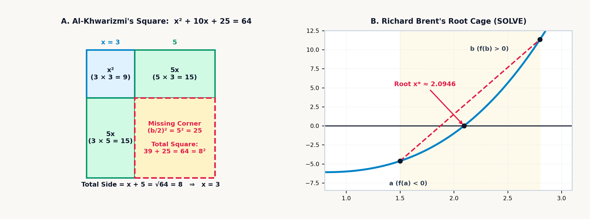
When the square is completed on the general quadratic equation \(a x^2 + b x + c = 0\)—or when the equation is divided through by \(a\) to form the reduced monic quadratic \(x^2 + 2px + q = 0\) in terms of the half-linear coefficient \(p = \frac{b}{2a}\) and constant ratio \(q = \frac{c}{a}\)—it yields both the classical quadratic formula and its single-entry half-linear form, where \(p\) and \(q\) each appear only once:
In factored form, \(a(x - r_1)(x - r_2) = ax^2 - a(r_1 + r_2)x + a r_1 r_2 = 0\) links the roots \((r_1, r_2)\) to the polynomial coefficients through Viète's identities without solving for the individual roots at all:
Whenever an engineering analysis or mathematics competition asks for a symmetric combination of the roots—such as their sum, product, reciprocal sum, or sum of squares—Viète's identities resolve the answer by inspection: on \(2x^2 - 7x + 4 = 0\), the roots satisfy \(r_1 + r_2 = \mathbf{3.5}\), \(r_1 r_2 = \mathbf{2}\), reciprocal sum \(\frac{1}{r_1} + \frac{1}{r_2} = \frac{7}{4} = \mathbf{1.75}\), and squared sum \(r_1^2 + r_2^2 = 3.5^2 - 2(2) = \mathbf{8.25}\) without extracting any square roots.
7.1.1 Catastrophic Cancellation in the Quadratic Formula
In finite-precision floating-point arithmetic, the classical quadratic formula \(x = \frac{-b \pm \sqrt{b^2 - 4ac}}{2a}\) exhibits a severe numerical instability whenever \(b^2\) is much larger than \(4ac\) (\(b^2 \gg |4ac|\)).
When \(b > 0\) and \(4ac\) is tiny compared to \(b^2\), the radical \(\sqrt{b^2 - 4ac}\) is nearly equal to \(b\). Evaluating the root with the plus sign (\(-b + \sqrt{b^2 - 4ac}\)) subtracts two nearly equal numbers and cancels up to half or more of a floating-point register's significant digits through catastrophic cancellation. Avoiding this loss of significance requires never subtracting \(\sqrt{b^2 - 4ac}\) from a number of the same sign.
Instead, we introduce the sign function \(\operatorname{sgn}(b)\) (which equals \(+1\) when \(b \ge 0\) and \(-1\) when \(b < 0\)) to form the Citardauq ("Quadratic" spelled backward) intermediate quantity \(q\), and then extract the larger-magnitude root \(x_1 = q/a\) and the smaller-magnitude root \(x_2 = c/q\) via Viète's root-product identity \(x_1 x_2 = \frac{c}{a}\):
Multiplying the radical \(\sqrt{b^2 - 4ac}\) by \(\operatorname{sgn}(b)\) guarantees that \(\operatorname{sgn}(b)\sqrt{b^2 - 4ac}\) always carries the exact same algebraic sign as \(b\), so the two terms inside the parentheses always add in magnitude instead of canceling. Because \(q\) is formed by pure magnitude addition, both \(x_1 = q/a\) and \(x_2 = c/q\) retain every guard digit of precision even when \(b^2\) exceeds \(4ac\) by ten orders of magnitude. On the benchmark \(x^2 + 10x - 39 = 0\) (\(a = 1, b = 10, c = -39\)), the discriminant \(\Delta = b^2 - 4ac = 256\) has square root \(16\), so \(q = -\frac{1}{2}(10 + 16) = \mathbf{-13}\) (\(x_1 = q/a\)) and \(x_2 = c/q = -39 / (-13) = \mathbf{3}\).
Quadratic equations govern two inverse problems in mechanics and forensic engineering: inverse ballistic trajectories and highway stopping distance reconstruction. Forward ballistics projects where a shell lands when its launch angle \(\theta\) is already known; the inverse ballistic problem fixes the target coordinates \((x, y)\) on an elevated ridge at horizontal range \(x\) and vertical elevation \(y\), given a known muzzle speed \(v_0\) and downward gravitational acceleration \(g \approx 9.81\text{ m/s}^2\), and solves backward for the required launch angle \(\theta\). Were the shell fired horizontally in vacuum without gravity, it would climb along the straight line-of-sight tangent \(x\tan\theta\); over flight time \(t = \frac{x}{v_0\cos\theta}\), however, gravity pulls the shell downward by \(\frac{1}{2}gt^2 = \left(\frac{gx^2}{2v_0^2}\right)\sec^2\theta\), where the baseline vertical drop \(d_g = \frac{gx^2}{2v_0^2}\) is the distance the projectile would fall if fired horizontally at speed \(v_0\). Substituting the trigonometric identity \(\sec^2\theta = 1 + \tan^2\theta\) into the parabolic trajectory \(y = x\tan\theta - \frac{gx^2}{2v_0^2}\sec^2\theta\) converts the unknown launch slope \(u = \tan\theta\) into a quadratic equation:
Tilting the barrel steeper increases the flight time across range \(x\) and amplifies gravitational drop through the quadratic term \(\frac{gx^2}{2v_0^2} u^2\), while the linear term \(-xu\) tracks the straight line-of-sight climb and the constant term \(\left(y + \frac{gx^2}{2v_0^2}\right)\) combines the ridge elevation \(y\) with the baseline gravity drop \(d_g\). Whenever the target lies within range, the two positive roots give the gunner two distinct paths to the same coordinates: a flat, fast direct-fire trajectory (\(\theta_1 = \arctan u_1\)) and a high, plunging mortar arc (\(\theta_2 = \arctan u_2\)) that descends from above.
A similar quadratic governs highway braking and reaction stopping distance. When a driver spots a hazard on the highway, the vehicle of mass \(m\) travels at its initial speed \(v_0\) during the human perception-reaction time \(t_r\), covering a linear reaction distance \(d_{\text{react}} = v_0 t_r\). Once the brakes lock, tire-pavement friction (with coefficient \(\mu\) and normal weight \(mg\)) exerts a constant retarding force \(\mu mg\); to bring the vehicle to a halt, the linear friction work \(\mu m g\,d_{\text{brake}}\) must absorb the entire translational kinetic energy \(\frac{1}{2}mv_0^2\), which makes the braking distance \(d_{\text{brake}} = \frac{v_0^2}{2\mu g}\) scale with the square of initial speed \(v_0\) while vehicle mass \(m\) cancels out. Summing reaction and braking distances gives the total stopping distance \(d = v_0 t_r + \frac{v_0^2}{2\mu g}\). When crash investigators measure the total stopping distance \(d\) at the scene, reconstructing the vehicle's unknown initial speed \(v_0\) requires clearing the denominator \(2\mu g\) to extract the positive root of the monic quadratic:
Clearing the denominator \(2\mu g\) pits the quadratic kinetic-energy braking term \(v_0^2\) and the linear human-reaction term \((2\mu g t_r)v_0\) against the scaled stopping distance \(2\mu g d\), isolating the pre-braking speed as the unique positive root \(v_0 = -\mu g t_r + \sqrt{(\mu g t_r)^2 + 2\mu g d}\).
7.1.2 The 1535 Milanese Cubic Contest, Cardano's Formula & Casus Irreducibilis
Fior had set all thirty of his 1535 challenge problems as variations of del Ferro's single depressed form \(t^3 + pt = q\); Tartaglia had posed several different families of cubics, including \(t^3 + pt^2 = q\). Expanding the binomial cube \((u - v)^3\) and regrouping its terms yields the algebraic identity:
Tartaglia saw that setting \(t = u - v\), \(3uv = p\), and \(u^3 - v^3 = -q\) reduces the depressed cubic \(t^3 + pt + q = 0\) to a quadratic equation in \(u^3\).
News of Tartaglia's victory reached the Milanese physician and algebraist Gerolamo Cardano, who persuaded Tartaglia in 1539 to share his rule (encoded in a twenty-five-line poem). Cardano then combined Tartaglia's rule with his own discovery that any full cubic \(A x^3 + B x^2 + C x + D = 0\) can be stripped of its quadratic \(x^2\) term by translating the coordinate origin to the curve's point of inflection via \(x = t - \frac{B}{3A}\). Geometrically, every cubic curve is an S-shaped wave that bends concave-down on one side and concave-up on the other, switching concavity at a unique central balance point where the second derivative \(6Ax + 2B\) vanishes (\(x = -\frac{B}{3A}\)). Sliding the horizontal coordinate axis to that inflection point centers the S-curve symmetrically so the quadratic \(t^2\) term cancels out, leaving only the depressed slope parameter \(p\) and vertical inflection offset \(q\):
Centering the cubic at \(t = 0\) gives \(p\) and \(q\) a direct geometric meaning: the linear coefficient \(p\) is the exact slope of the cubic right at its inflection center (which must be negative, \(p < 0\), for the S-curve to turn backward and form a local hill and valley), while the constant term \(q\) is the vertical height of that inflection point above or below the horizontal axis. Cardano and his pupil Lodovico Ferrari, who soon discovered how to solve the fourth-degree quartic equation by reducing it to a resolvent cubic, now possessed the complete analytical solution to every polynomial up to degree four. After inspecting Scipione del Ferro's posthumous papers in Bologna and verifying that del Ferro had discovered the depressed cubic formula twenty years before Tartaglia, Cardano published the complete cubic and quartic solutions in his 1545 treatise Ars Magna (Cardano, 1545), crediting both del Ferro and Tartaglia.
Solving Tartaglia's simultaneous conditions \(u^3 - v^3 = -q\) and \(u^3(-v^3) = -(p/3)^3\) via the quadratic formula yields \(u^3 = -\frac{q}{2} + \sqrt{\Delta}\) and \(-v^3 = -\frac{q}{2} - \sqrt{\Delta}\), governed by the cubic discriminant \(\Delta = \left(\frac{q}{2}\right)^2 + \left(\frac{p}{3}\right)^3\). Taking the cube roots to recover \(t = u - v\) produces Cardano's cubic formula, inside which appeared an algebraic paradox that forced the recognition of complex numbers:
The two cube-root radicals in Cardano's formula are Tartaglia's \(u\) and \(-v\), while the cubic discriminant \(\Delta\) pits the squared half-offset \((q/2)^2\) against the cubed third-slope \((p/3)^3\) to govern the nature of the three roots across three distinct regimes. When \(\Delta > 0\), the vertical offset \(q\) shifts the inflection center far enough above or below the axis that the S-shaped cubic crosses the horizontal axis only once, yielding one real root and two complex conjugate roots formed by rotating \(u = \sqrt[3]{-q/2 + \sqrt{\Delta}}\) and \(-v = \sqrt[3]{-q/2 - \sqrt{\Delta}}\) by the cube roots of unity \(\omega = -\frac{1}{2} + i\frac{\sqrt{3}}{2}\) and \(\omega^2\). When \(\Delta = 0\), the hilltop or valley floor grazes the horizontal axis tangentially and produces three real roots with at least one repeated root, as in the critically damped RLC filter polynomial \(s^3 + 12s^2 + 45s + 50 = (s+2)(s+5)^2 = 0\) with a repeated double root at \(s = -5\).
When \(\Delta < 0\), the regime known as casus irreducibilis, \(p\) is negative enough that \((p/3)^3\) outweighs \((q/2)^2\), so the S-curve's hill and valley straddle the horizontal axis and cross it three times to produce three distinct real roots (as in \((x-1)(x-2)(x-3) = x^3 - 6x^2 + 11x - 6 = 0\)), yet the discriminant \(\Delta\) under the square root is negative. Extracting those three real numbers from Cardano's formula requires passing through the complex plane and taking the cube root of a complex number \(r e^{i\theta}\) by De Moivre's angle trisection \(r^{1/3}[\cos(\theta/3) + i\sin(\theta/3)]\), where the imaginary parts of the two conjugate cube roots cancel to zero.
7.1.3 Viète's Trigonometric Trisection & Ferrari's Quartic
The complex radicals of casus irreducibilis can be bypassed through trigonometry, because the depressed cubic \(t^3 + pt + q = 0\) (when \(\Delta < 0\), so \(p < 0\)) shares the algebraic structure of the trigonometric triple-angle identity for cosine:
Scaling the unknown as \(t = 2\sqrt{-p/3}\,\cos\theta\) (Viète's trigonometric solution) matches the depressed cubic to the triple-angle cosine identity term-for-term and expresses all three real roots \(t_0, t_1, t_2\) in closed form without complex square roots:
Geometrically, the outer amplitude factor \(2\sqrt{-p/3}\) sets the horizontal width of the cubic's S-bend between its local extrema; the inner inverse cosine \(\arccos\!\left(\frac{3q}{2p}\sqrt{-3/p}\right)\) measures the phase angle set by the vertical offset \(q\) relative to the hilltop height; and dividing that angle by \(3\) while stepping \(k = 0, 1, 2\) by \(\frac{2\pi k}{3}\) (\(120^\circ\)) trisects the angle on the unit circle and projects the three \(120^\circ\)-spaced vertices of an inscribed equilateral triangle onto the horizontal real axis.
For a fourth-degree quartic equation (such as \(x^4 + 6x^2 + 36 = 60x\)), Lodovico Ferrari discovered how to factor the quartic into two quadratics by introducing an adjustable auxiliary parameter \(y\) that turns the equation into a difference of two squares. First, shifting the horizontal coordinate removes the cubic \(x^3\) term to leave the depressed quartic \(x^4 + px^2 + qx + r = 0\) with quadratic coefficient \(p\), linear tilt \(q\), and constant term \(r\). Moving \(px^2 + qx + r\) to the right side, completing the square on the left as \((x^2 + \frac{p}{2})^2\), and inserting an auxiliary variable \(y\) inside the left-hand square yields:
The left-hand side is already a perfect square for every choice of \(y\), while the right-hand side is an ordinary quadratic in \(x\) with \(x^2\)-coefficient \(A = (p + 2y)\), \(x\)-coefficient \(B = -q\), and constant term \(C = \left(\frac{p^2}{4} - r + py + y^2\right)\). We are free to choose \(y\) so that this right-hand quadratic also becomes a perfect square \((mx + n)^2\)—which happens whenever its quadratic discriminant \(B^2 - 4AC\) equals zero:
Multiplying out \((p + 2y)\) by the quadratic in \(y\) makes this condition a third-degree cubic equation in \(y\)—the resolvent cubic—which Cardano's cubic formula solves in closed form. Once one root \(y_1\) of the resolvent cubic is found, the right-hand side locks into \((mx + n)^2\), turning the quartic into the difference of two squares \((x^2 + \frac{p}{2} + y_1)^2 - (mx + n)^2 = 0\), which splits into the two quadratic equations \(x^2 + \frac{p}{2} + y_1 = \pm(mx + n)\) to yield all four roots.
For any cubic (\(A x^3 + B x^2 + C x + D = 0\)) with roots \(r_1, r_2, r_3\), Viète's root-coefficient formulas verify the roots without substituting each value back into the polynomial. Expanding \(A(x - r_1)(x - r_2)(x - r_3) = A x^3 - A(r_1 + r_2 + r_3)x^2 + A(r_1 r_2 + r_2 r_3 + r_3 r_1)x - A r_1 r_2 r_3\) and matching coefficients term by term yields the sum of roots (trace), pairwise product sum, and product of roots (determinant):
On our benchmark cubic \(x^3 - 6x^2 + 11x - 6 = 0\) with roots \(1, 2, 3\), summing the three real parts gives the trace \(1 + 2 + 3 = 6 = -(-6)/1\), their pairwise product sum is \(1(2) + 2(3) + 3(1) = 11 = +11/1\), and their determinant product is \(1 \times 2 \times 3 = 6 = -(-6)/1\). In any depressed cubic \(t^3 + pt + q = 0\) (where \(B = 0\)), the three roots always sum to zero (\(t_1 + t_2 + t_3 = 0\)), because the coordinate shift \(x = t - \frac{B}{3A}\) places the origin at the centroid of the three roots.
That chain of radical reductions stops permanently after the degree-4 quartic, and no general radical formula exists for a degree-5 quintic equation (\(Ax^5 + Bx^4 + Cx^3 + Dx^2 + Ex + F = 0\)). For a degree-2 quadratic, the resolvent has degree 1; for a degree-3 cubic, Tartaglia's resolvent has degree 2; for a degree-4 quartic, Ferrari's resolvent has degree 3. In each case, the auxiliary equation has lower degree than the original polynomial. When the same permutation method is applied to a degree-5 quintic, however, the resolvent equation jumps up to degree 6 (with \(5!/2 = 60\) alternating permutations).
By the Abel–Ruffini and Galois theorem, this barrier is structural and absolute. For degrees \(n = 2, 3, 4\), the permutation group \(S_n\) of the roots decomposes into commutative cyclic quotients ("solvable groups") that correspond to extracting \(k\)-th roots \(\sqrt[k]{\phantom{x}}\). For \(n \ge 5\), however, the alternating group \(A_5\), which is isomorphic to the \(60\) rotational symmetries of a regular icosahedron, is a simple non-abelian group that cannot be factored into cyclic steps. No general radical formula in \(+, -, \times, \div\), and \(\sqrt[n]{\phantom{x}}\) can exist for degree 5 or higher.
7.1.4 Evaluating Polynomials from the Inside Out: Horner's Nested Scheme
Before solving a polynomial equation \(P(x) = 0\), one needs an efficient, numerically stable method to evaluate \(P(x)\) at any argument \(x = x_0\), illustrated by the general fourth-degree quartic polynomial:
When \(P(x)\) is evaluated term by term as written (\(x^4\) multiplied by \(a_4\), plus \(x^3\) multiplied by \(a_3\), plus \(x^2\) multiplied by \(a_2\), and so on), it repeats power computations unnecessarily (\(4 + 3 + 2 + 1 = 10\) multiplications, or three separate exponentiations). Worse, near a root where large positive and negative power terms nearly cancel, computing \(a_n x^n\) separately magnifies floating-point rounding error.
Recursive factoring of \(x\) from the inside out transforms the polynomial into Horner's nested scheme:
In Horner's nested scheme, every explicit exponent vanishes. To evaluate any degree-\(n\) polynomial at \(x_0\), you start with the leading coefficient \(b_n = a_n\) and repeat a two-step linear recurrence \(b_k = b_{k+1} x_0 + a_k\) exactly \(n\) times, multiplying the running value by \(x_0\) and adding the next coefficient \(a_k\).
Across the four nested stages of a quartic \(P(x_0) = (((a_4 x_0 + a_3)x_0 + a_2)x_0 + a_1)x_0 + a_0\), the running accumulator starts with \(b_4 = a_4\), multiplies by \(x_0\), and adds \(a_3\) in the first stage to form \(b_3 = a_4 x_0 + a_3\); multiplies \(b_3\) by \(x_0\) and adds \(a_2\) in the second stage to form \(b_2 = b_3 x_0 + a_2\); multiplies \(b_2\) by \(x_0\) and adds \(a_1\) in the third stage to form \(b_1 = b_2 x_0 + a_1\); and finally multiplies \(b_1\) by \(x_0\) and adds \(a_0\) to reach the remainder \(b_0 = b_1 x_0 + a_0 = P(x_0)\). This recurrence requires four multiplications, four additions, zero powers, and zero temporary variables.
Each intermediate value \((b_4, b_3, b_2, b_1)\) produced at each step of Horner's recurrence has direct algebraic meaning: they are the exact coefficients of the cubic quotient polynomial \(Q(x)\) obtained by Horner synthetic division when dividing \(P(x)\) by \((x - x_0)\):
This Polynomial Remainder Theorem identity \(P(x) = (x - x_0)Q(x) + P(x_0)\) provides polynomial deflation, simultaneous derivative evaluation, and suppression of catastrophic cancellation near multiple roots. Once one exact root \(r_1\) of a polynomial is found (where the remainder \(P(r_1) = 0\)), the intermediate numbers generated during Horner's evaluation at \(r_1\) supply the deflated degree-\((n-1)\) quotient polynomial \(Q(x) = P(x)/(x - r_1)\), which reduces a fourth-degree quartic to a cubic or a cubic to a quadratic. Differentiating \(P(x) = (x - x_0)Q(x) + P(x_0)\) with respect to \(x\) by the product rule yields:
A second Horner pass on the intermediate coefficients evaluates the quotient polynomial \(Q(x)\) at \(x_0\) and therefore gives the exact derivative \(P'(x_0)\) without a separate symbolic derivative formula. In computational thermodynamics and flight-control engineering—where computers evaluate standard-atmosphere pressure-altitude curves \(P(h) = a_3 h^3 + a_2 h^2 + a_1 h + a_0\) and NASA Glenn molar heat-capacity fits \(C_p(T)/R = a_0 + a_1 T + a_2 T^2 + a_3 T^3 + a_4 T^4\)—nested Horner evaluation also suppresses cancellation near repeated roots (such as \(s = -5\) in the critically damped RLC filter) by updating the local factor \((s + 5)\) at each step without subtracting large, independently rounded powers \(s^3\) and \(12s^2\).
Nested factoring also simplifies rational formulas and symmetric high-degree equations across physics. In a silicon photovoltaic cell, the Fill Factor \(FF\) measures how "square" the current-voltage curve is—defined as the ratio of maximum usable electrical power \(P_{\max}\) to the theoretical rectangle product of open-circuit voltage \(V_{\text{oc}}\) and short-circuit current \(I_{\text{sc}}\). Although the maximum power point satisfies a transcendental diode equation that cannot be inverted in closed form, dividing \(V_{\text{oc}}\) by the junction's thermal voltage \(V_T = k_B T / q\) (\(\approx 25.85\text{ mV}\) at \(300\text{ K}\)) defines the dimensionless normalized open-circuit voltage \(v_{\text{oc}} = V_{\text{oc}} / V_T\) and yields Martin Green's accurate rational-logarithmic expression for \(FF\):
As the normalized open-circuit voltage \(v_{\text{oc}}\) grows large compared to the thermal scale \(V_T\), the leading fraction \(\frac{v_{\text{oc}}}{v_{\text{oc}} + 1}\) approaches an ideal square curve (\(FF \to 1\)), while subtracting \(\ln(v_{\text{oc}} + 0.72)\) before dividing by \(v_{\text{oc}} + 1\) accounts for the voltage rounded off at the exponential diode knee near maximum power. Likewise, when two coupled undamped spring-mass pendulums with stiffness matrix \(\mathbf{K}\) and mass matrix \(\mathbf{M}\) vibrate harmonically at natural angular frequency \(\omega\), the characteristic eigenvalue equation \(\det(\mathbf{K} - \omega^2\mathbf{M}) = 0\) expands into a biquadratic polynomial containing only even powers of frequency (\(a \omega^4 + b \omega^2 + c = 0\)), which reduces immediately to a quadratic in the squared frequency \(u = \omega^2\) whose positive square roots \(\omega = \sqrt{u}\) give the two normal-mode vibration frequencies.
7.2 Iterative Root-Finding & Implicit Physical Laws
Once a polynomial reaches degree five (such as \(x^5 - x - 1 = 0\)) or a physical conservation law combines algebraic powers \(x\) with sines, cosines, exponentials, and logarithms in a transcendental equation, no symbolic manipulation can isolate the unknown on one side of the equals sign.
When symbolic algebra cannot invert \(f(x)\) to solve \(f(x^*) = 0\), numerical root-finding relies on two contrasting strategies: interval bisection and local tangent or secant extrapolation. When a continuous curve \(f(x)\) lies below the axis at \(x = a\) with \(f(a) < 0\) and above it at \(x = b\) with \(f(b) > 0\), so that \(f(a)\cdot f(b) < 0\), the Intermediate Value Theorem guarantees that the curve crosses \(y = 0\) at least once inside the bracket \([a, b]\).
The Bisection Method evaluates the function at the midpoint \(m = \frac{1}{2}(a + b)\), inspects its sign, and discards whichever half does not contain the sign change. Every step halves the uncertainty and gains \(1\text{ binary bit}\) of precision per step (linear convergence, order \(p = 1\)). After \(40\) bisections, the bracket shrinks by \(2^{-40} \approx 10^{-12}\), though requiring \(40\) to \(50\) evaluations makes bisection slow.
To accelerate convergence on smooth curves (such as the cubic benchmark \(x^3 - 2x - 5 = 0\) near \(x_0 = 2\)), the Newton–Raphson method evaluates both the residual height \(f(x_n)\) of the curve above or below the horizontal axis at the current guess \(x_n\) and the local tangent slope \(f'(x_n)\), stepping along that tangent line to where it crosses \(y = 0\) at \(x_{n+1}\):
Dividing the vertical residual height \(f(x_n)\) by the local tangent slope \(f'(x_n)\) (rise over run) recovers the horizontal run \(\Delta x = f(x_n)/f'(x_n)\) needed to slide down the tangent line to its \(x\)-axis intercept \(x_{n+1}\). Near a simple root, the Newton-Raphson method is quadratically convergent (\(p = 2\)) and doubles the number of accurate decimal digits on every step (\(1 \to 2 \to 4 \to 8 \to 16\text{ digits}\)). When the analytic derivative \(f'(x)\) is unavailable, replacing the tangent slope with the Secant Chord through the last two iterates yields superlinear convergence at the golden-ratio exponent \(p = \phi = \frac{1+\sqrt{5}}{2} \approx 1.618\).
The vulnerability of Newton-Raphson and the Secant Method lies in the slope denominator \(f'(x_n)\) (or \(f(x_n) - f(x_{n-1})\)). Whenever an iterate lands near a local extremum, an inflection plateau, or a horizontal asymptote where the slope flattens out (\(f'(x_n) \approx 0\)), the nearly horizontal tangent line projects the next estimate \(x_{n+1}\) far outside the region of interest or into an oscillatory cycle.
When an equation can be rearranged into the self-referential form \(x = g(x)\), the Contraction Mapping Theorem guarantees that repeatedly feeding the output back into the function (\(x_{n+1} = g(x_n)\)) spirals or staircases into a unique fixed point \(x^* = g(x^*)\) whenever the local slope satisfies \(|g'(x^*)| < 1\). In radian mode, iterating \(x_{n+1} = \cos(x_n)\) from any starting value traces a converging cobweb spiral (1, 0.54, 0.858, 0.654, \(\dots\)) to the universal transcendental Dottie number \(x^* = \cos(x^*) \approx \mathbf{0.739\text{ rad}}\) (where \(|\sin(0.739)| \approx 0.674 < 1\)), while a self-similar infinite nested radical \(x = \sqrt{c + \sqrt{c + \sqrt{c + \dots}}}\) satisfies the fixed-point relation \(x = \sqrt{c + x} \implies x^2 - x - c = 0\) with positive root \(x = \frac{1 + \sqrt{1 + 4c}}{2}\) (so \(\sqrt{6 + \sqrt{6 + \dots}} = \mathbf{3}\) and \(\sqrt{1 + \sqrt{1 + \dots}} = \varphi \approx \mathbf{1.618}\)). Whenever \(|g'(x^*)| > 1\), however, direct fixed-point iteration repels away from the root, so a bracketed root-finder must be applied to \(f(x) = g(x) - x = 0\).
7.2.1 Richard Brent's 1973 Hybrid Root-Finding Algorithm
In 1973, Richard P. Brent demonstrated in Algorithms for Minimization Without Derivatives (Brent, 1973) how to combine the guaranteed bracketing of Bisection with the superlinear convergence of Interpolation so that the solver achieves rapid convergence on smooth curves, requires no derivatives, and never diverges outside its bracket. This hybrid bracketing philosophy was soon adapted for scientific pocket calculators (Kahan, 1979; HP, 1982; Evett et al., 1983; HP, 1991), pairing derivative-free bracketing with post-convergence residual diagnostics.
Brent's hybrid root-finding algorithm combines inverse quadratic interpolation with five acceptance tests. Given three distinct points \((a, f(a))\), \((b, f(b))\), and \((c, f(c))\) near the root, fitting an ordinary upright parabola \(y = P(x)\) can fail whenever its vertex turns around before reaching the \(x\)-axis and yields no real roots.
To avoid that failure, Brent reverses the roles of the axes and fits \(x\) sideways as a Lagrange quadratic polynomial of \(y\) (\(x = P(y)\)) passing through the three inverted pairs \((f(a), a)\), \((f(b), b)\), and \((f(c), c)\), then evaluates that sideways parabola right at the horizontal axis \(y = 0\) to obtain the next root estimate \(x_{\text{IQI}}\):
Each bracket coordinate \(a, b,\) or \(c\) is weighted by the product of the residuals at the other two points divided by the pairwise residual differences. As the best estimate \(b\) closes in on the true root so that \(f(b) \to 0\), the factor \(f(b)\) in the first and third terms drives the weights on \(a\) and \(c\) toward zero while the middle weight \(\frac{f(a)f(c)}{(f(b)-f(a))(f(b)-f(c))}\) approaches \(1\), locking \(x_{\text{IQI}}\) onto the root crossing. At \(y = 0\), a sideways parabola always yields a single unique real number \(x_{\text{IQI}}\) and converges at order \(p \approx 1.839\), nearly doubling the number of significant digits per step.
To guard against wild extrapolations, the algorithm keeps the root enclosed inside a contracting sign-change bracket \([a, b]\) where \(f(a)f(b) \le 0\). Whenever Secant or Inverse Quadratic Interpolation proposes a trial step \(s\), five acceptance conditions verify that \(s\) falls inside the interior three-quarter window \(\left(\frac{3a+b}{4}, b\right)\) and that consecutive steps contract the bracket by at least half every two iterations. If an interpolated step attempts to leave the bracket or stalls on a flat plateau, the algorithm rejects the interpolation and executes a bisection step \(m = \frac{1}{2}(a + b)\).
| Root-Finding Algorithm | Convergence Order (\(p\)) | Derivative \(f'(x)\) Required | Bracket Guarantee | Behavior Near Flat Slopes (\(f'(x) \approx 0\)) |
|---|---|---|---|---|
| Bisection | \(1\) | No | Yes (Guaranteed) | Steady (\(1\text{ bit/step}\)), immune to slope traps |
| Newton-Raphson | \(2\) | Yes | No | Catastrophic divergence when \(f'(x) \approx 0\) |
| Secant Chord | \(\approx 1.618\) (\(\phi\)) | No | No | Can fling iterates far outside the search region |
| Brent's Hybrid Method | \(\approx 1.839\) | No | Yes (Guaranteed) | Instant bisection fallback; zero divergence |
7.2.2 Multiple-Root Conditioning and Polynomial Deflation Order
When a curve grazes the horizontal axis tangentially without crossing it at a non-zero slope, floating-point root accuracy is bounded by the local curvature of the root, much like a shoreline where a coastal hillside meets sea level (\(y = 0\)) while tiny ocean ripples of height \(\varepsilon_{\text{mach}} \approx 10^{-16}\) lap against the shore. Where a steep cliff plunges straight into the sea at a simple root (\(f'(x^*) \ne 0\)), a vertical ripple of size \(\varepsilon_{\text{mach}}\) shifts the horizontal waterline by at most \(\Delta x \approx \frac{\varepsilon_{\text{mach}}}{|f'(x^*)|}\). Where a flat sandy beach grazes sea level tangentially like a parabolic trough at an \(m\)-fold repeated root \(f(x) \approx c(x - x^*)^m\) with leading curvature coefficient \(c\), however, setting \(|c||\Delta x|^m \approx \varepsilon_{\text{mach}}\) shows that the same vertical ripple washes the waterline across a much wider horizontal uncertainty band \(\Delta x\):
Because the fractional exponent \(1/m\) extracts the \(m\)-th root of the tiny ratio \(\varepsilon_{\text{mach}}/|c|\), higher multiplicity \(m\) dramatically widens the dead zone: for a double tangent root (\(m = 2\), as in \((x - 3)^2 = 0\)), the horizontal uncertainty widens to the square root of machine epsilon (\(\varepsilon_{\text{mach}}^{1/2} \approx 10^{-8}\)), where half the digits of precision are lost to floating-point rounding noise; for a triple root (\(m = 3\)), precision drops to \(\varepsilon_{\text{mach}}^{1/3} \approx 10^{-5}\).
In polynomial deflation, dividing a high-degree polynomial \(P(x)\) to \(Q(x) = P(x)/(x - r_1)\) by removing its largest root \(|r_1|\) first contaminates the lower coefficients of \(Q(x)\) with rounding errors and perturbs the remaining roots. Deflating roots in increasing order of magnitude (\(|r_1| \le |r_2| \le \dots\)) preserves coefficient accuracy, and solving the derivative \(f'(x) = 0\) at an even-multiplicity tangent minimum restores simple-root conditioning.
7.2.3 Bracketing, False Poles & Residual Verification
An automatic root-finder operates as a two-phase bracketing search followed by a post-convergence residual audit. In the first phase, if two initial guesses \(a\) and \(b\) already straddle a sign change (\(f(a)\cdot f(b) \le 0\)), the interval \([a, b]\) locks in as the starting bracket. When given only a single seed \(x_0\), or two guesses on the same side of the axis where \(f(a)\cdot f(b) > 0\), an outward search generates a companion probe (\(\Delta = 0.1|x_0|\) for \(|x_0| < 1\), or \(\Delta = 0.1\) for \(|x_0| \ge 1\)) and advances outward for up to \(50\) steps using clamped secant steps, or expanding by the golden ratio \(\phi \approx 1.618\) whenever the slope is flat. Along the way, the search retracts any probe that steps outside the domain of \(\ln x\) or \(\sqrt{x}\), and it detects even-multiplicity tangent roots like \((x - 2)^2 = 0\) whenever \(|b - a| < 10^{-12}\) and \(|f(b)| < 10^{-7}\).
In the second phase, once a sign change \(f(a)\cdot f(b) \le 0\) is bracketed, the solver applies Brent's guarded Inverse Quadratic Interpolation (IQI) or Secant Chord step, falling back to a Bisection step \(m = \frac{1}{2}(a + b)\) whenever an interpolated step fails the interior-window or contraction checks, and terminating once \(|f(b)| \le 10^{-13}\) or the half-bracket width reaches machine tolerance \(\text{tol} = 2\varepsilon_{\text{mach}}|b| + \frac{1}{2}\cdot 10^{-12}\).
Three mathematical conditions can prevent a real-axis search from bracketing a sign change. First, on positive-definite or negative-definite curves (such as \(f(x) = x^2 + 4 = 0\), whose roots \(\pm 2i\) are imaginary, or \(f(x) = e^x + 1 = 0\)), \(f(x) > 0\) for every real \(x\), so no sign change exists anywhere on the real line. Second, when an initial seed is separated from the root by an asymptote or domain wall (such as \(\ln x\) or \(\sqrt{f}\) in Colebrook's friction law), seeding far from the physical regime can cause outward probes to bounce repeatedly off the \(x \le 0\) boundary unless two explicit bracket guesses \(a\) and \(b\) are chosen inside the valid domain. Third, at an even-multiplicity tangent root (such as \(f(x) = (x - 3)^4 = 0\)), the curve touches \(y = 0\) without crossing (\(f(a)\cdot f(b) \ge 0\) everywhere); if coarse outward probes step over the tangent point, solving the derivative equation \(f'(x) = 0\) (where the tangent extremum becomes a simple odd-multiplicity crossing) restores guaranteed sign-change bracketing.
The function residual \(f(x^*)\) at the converged point \(x^*\) distinguishes a genuine root from a discontinuous pole. If an initial bracket straddles a vertical asymptote (discontinuous pole) where the curve jumps from \(-\infty\) to \(+\infty\) (such as \(f(x) = \tan x\) across \(x = \pi/2\) or \(f(x) = \frac{1}{x - 2}\) across \(x = 2\)), the opposite signs \(f(a)\cdot f(b) < 0\) on either side of the discontinuity cause bisection to contract around the pole \(x = 2\). Checking the residual \(f(x^*)\) at the reported coordinate separates the two cases: at a true root, the residual vanishes (\(|f(x^*)| \le 10^{-12}\)); at a false pole, the residual explodes (\(|f(x^*)| \gg 1\) or undefined division by zero).
In multi-stage engineering workflows, a solved root \(x^*\) is rarely the final number on the page: an orbital mission planner solves Kepler's equation for the eccentric anomaly \(E^*\) in order to substitute \(E^*\) into the focal radius \(r = a(1 - e\cos E^*)\), and a hydraulic engineer solves Colebrook's equation for the friction factor \(f^*\) in order to multiply \(f^*\) by the dynamic velocity head \(\frac{L}{D}\frac{v^2}{2g}\) already waiting on the stack. Traditional single-line root-finders return three diagnostic outputs at once—the root \(x^*\) in \(X\), the previous iterate in \(Y\), and the function residual \(f(x^*)\) in \(Z\)—which overwrites three levels of the stack and destroys any intermediate constants parked in Registers \(Y\) and \(Z\). On the SC-32, the root-finder lifts the stack by one level to place \(x^*\) into Register \(X\) while preserving the starting seed and two prior stack levels above it, and evaluates the stored equation on demand when a residual pole audit \(f(x^*)\) is needed.
7.2.4 Implicit Transcendental Equations in Fluid Friction & Orbital Mechanics
When a physical question runs in reverse to solve for an internal state variable instead of the output on the left-hand side, conservation laws that were explicit in the forward direction turn into coupled polynomial or transcendental equations.
The van der Waals real-gas law exhibits this structural shift when inverted. An ideal gas of molar volume \(V_m\) at absolute temperature \(T\) and universal gas constant \(R\) obeys \(P V_m = RT\), ignoring both the cohesive attraction between nearby molecules (parameterized by the van der Waals constant \(a\), which pulls molecules together and reduces wall pressure by \(\frac{a}{V_m^2}\)) and the finite hard-sphere volume occupied by the molecules themselves (the excluded covolume \(b\), which shrinks the free container space to \(V_m - b\)). When \(V_m\) and \(T\) are already known, the van der Waals equation of state \(\left(P + \frac{a}{V_m^2}\right)(V_m - b) = RT\) yields the pressure \(P = \frac{RT}{V_m - b} - \frac{a}{V_m^2}\) by a direct arithmetic sequence.
In chemical process design, however, a gauge on the pipeline fixes the operating pressure \(P\) and temperature \(T\), and the engineer must solve backward for the unknown molar volume \(V_m\) (or the dimensionless compressibility factor \(Z = \frac{P V_m}{RT}\), which equals \(1\) for an ideal gas). Because intermolecular attraction \(\frac{a}{V_m^2}\) depends on the inverse square of volume while covolume exclusion \((V_m - b)\) is linear in volume, clearing the denominator multiplies \(V_m^2\) by \((V_m - b)\) and turns the inverse problem into the Cubic Virial Equation of State (with dimensionless attraction \(A = \frac{a P}{(RT)^2}\) and dimensionless covolume \(B = \frac{b P}{RT}\)):
Multiplying the cohesive pressure \(\frac{a}{V_m^2}\) across \((V_m - b)V_m^2\) introduces the linear \(+a V_m\) and constant \(-ab\) terms alongside the ideal-gas and covolume compression terms \(P V_m^3 - (Pb + RT)V_m^2\). Above the critical temperature, this cubic has one real gas root (\(\Delta > 0\)); below the critical temperature inside the two-phase vapor-liquid dome (\(\Delta < 0\)), it exhibits three distinct real roots where the smallest root represents the dense liquid phase, the middle root is the mechanically unstable spinodal inflection (an unphysical S-bend slope where pressure would rise as volume expands, causing the fluid to separate spontaneously into droplets and vapor), and the largest root represents the saturated vapor phase, so Cardano and Viète's analytical cubic solution is needed to extract all three phases together.
An analogous forward-versus-inverse asymmetry governs elliptical orbital mechanics. When a spacecraft's angular position (true anomaly \(\nu\)) along its elliptical orbit is known, evaluating the focal conic radius \(r(\nu) = \frac{a(1 - e^2)}{1 + e\cos\nu}\) is an explicit trigonometric calculation. Reversing the problem poses the fundamental timing relationship of astrodynamics: given the clock time \(t\) elapsed since perihelion passage (which fixes the uniform mean anomaly \(M = \frac{2\pi t}{T}\) across orbital period \(T\)), determining where the body lies along its elliptical orbit. Projecting the ellipse of eccentricity \(e\) onto its circumscribing auxiliary circle of radius \(a\) defines the geometric eccentric anomaly \(E\), and equating the swept focal sector area to the elapsed fraction of the orbital period yields Kepler's Transcendental Anomaly Equation:
The eccentric anomaly \(E\) appears simultaneously as a linear algebraic arc (\(E\), from the auxiliary circular sector area \(\frac{1}{2}a^2 E\)) and inside a trigonometric sine (\(e\sin E\), from the focal offset triangle \(\frac{1}{2}a(ae)\sin E\) subtracted when the central body sits at the focus instead of the geometric center). Because no sequence of algebraic operations or inverse trigonometric functions can combine a linear arc and its sine to isolate \(E\), inverting time into orbital position requires an iterative root-finder.
A third fundamental feedback trap governs fluid friction in pipelines of length \(L\), internal diameter \(D\), and gravitational acceleration \(g\), where friction along the wall causes a pressure head loss \(h_f = f\frac{L}{D}\frac{v^2}{2g}\) proportional to the dimensionless Darcy–Weisbach friction factor \(f\). The flow regime is governed by the dimensionless Reynolds number \(\text{Re} = \frac{\rho v D}{\mu}\)—the ratio of fluid inertial momentum (fluid density \(\rho\) times mean flow speed \(v\) times pipe diameter \(D\)) to viscous shear damping (dynamic viscosity \(\mu\)). When a viscous liquid flows slowly in the smooth laminar regime (\(\text{Re} < 2,300\)), parabolic viscous shear integrates to an explicit law where the friction factor is \(f = 64/\text{Re}\). Once a municipal water main, petroleum pipeline, or rocket propellant feedline enters the high-speed turbulent regime (\(\text{Re} > 4,000\)), however, chaotic eddies scrub against the microscopic roughness peaks \(\varepsilon\) of the pipe wall, cushioned only by a thin viscous sublayer whose thickness \(\delta_v \propto \frac{D}{\text{Re}\sqrt{f}}\) shrinks as wall shear stress (and thus \(\sqrt{f}\) itself) grows. Combining smooth-wall turbulent boundary-layer scaling with rough-pipe resistance yields the implicit Colebrook–White Equation (Colebrook, 1939) for the Darcy–Weisbach friction factor \(f\):
Two competing drag mechanisms add together inside the logarithm: the rough-wall turbulent limit \(\frac{\varepsilon/D}{3.7}\), governed by the relative wall roughness height \(\varepsilon/D\) protruding into the core flow at high Reynolds numbers, and the smooth-wall viscous sublayer limit \(\frac{2.51}{\text{Re}\sqrt{f}}\), governed by viscous shear across the thin laminar cushion at the wall. Because the friction factor \(f\) feeds back into the sublayer thickness inside the logarithm, \(\sqrt{f}\) is trapped on both sides of the equation, requiring bracketed root-finding to isolate the turbulent friction factor in municipal pipeline and hydraulic network design.
7.3 Hunting Roots on the Four-Register Stack
On the SC-32, closed-form polynomial equations of degree two or three (POLY) are separated from higher-degree and transcendental conservation laws (EQN and SOLVE) so neither requires manual iteration loops.
When the governing relation is a cubic (\(Ax^3 + Bx^2 + Cx + D = 0\)) or quadratic (\(Bx^2 + Cx + D = 0\)) with numerical coefficients, the dedicated Polynomial Solver (POLY) activates a five-button softkey bar to accept coefficients without STO or RCL, and executes the polynomial when you press [XEQ]:
- Opening the Polynomial Workspace & Softkey Bar: Pressing
[↱] [POLY](the right-shifted function on the[XEQ]key) displays the templateAx^3 + Bx^2 + Cx + Dacross the top of the LCD and presents the five softkeys: $\(\mathtt{[A]} \quad \mathtt{[B]} \quad \mathtt{[C]} \quad \mathtt{[D]} \quad \mathtt{[CLR]}\)$ - Default of Zero & Clearing Previous Coefficients (
CLR): Every unassigned coefficient slot (A,B,C,D) defaults to0. If variablesAthroughDalready hold values from an earlier calculation, they pre-populate the workspace on entry; tapping the fifth softkey (CLR) clears all four coefficient slots (POLY CLR), removes their assignment markers, and resets every slot back to its default of0. - Entering Coefficients via Softkeys (
A•,B•,C•,D•): Type a coefficient's numerical value into Register \(X\) (tapping[+/-]for a negative coefficient) and tap the corresponding softkey (Afor \(x^3\),Bfor \(x^2\),Cfor \(x\), orDfor the constant term) directly, with no need for[STO]or[RCL]. The softkey label gains a bullet dot (A•,B•,C•,D•) to mark which terms have been set. Because unassigned slots default to0, you never need to enter0for missing powers—and to solve a quadratic equation (\(Bx^2 + Cx + D = 0\)), you leaveAunassigned at its0default, enter the \(x^2\), \(x\), and constant coefficients into softkeysB,C, andD, and press[XEQ]. - Executing (
[XEQ]) & Reading All Roots: Pressing[XEQ]while inPOLYmode (or any equation variable mode) dispatches to the Cardano–Viète cubic solver (when \(A \ne 0\)) or the quadratic solver (when \(A = 0\) and \(B \ne 0\)). The display presents a multi-line summary of all roots together (r1:,r2:,r3:, Figure 7.2), places the primary root \(r_1\) onto the stack (Register Y = Real,Register X = Imag), and records all roots as(Real, Imag)pairs in the[↰] [REGS]viewer (left-shifted on[0], underSTOslotsR1–R6and indirect registersR34–R39). - Symbolic Equation Bank (
[↱] [EQN]), Function Selection (FN=), & Brent's Root-Finder ([↱] [SOLVE]): When higher-degree or transcendental terms rule out closed-form extraction, press[↱] [EQN](right-shifted on[STO]), tapNEW, and press a letter (A–Z) to record \(f(x) = \text{LHS} - \text{RHS}\) in RPN using[RCL]+ letter, pressing[↱] [EQN]again to save (within the editor, you can also insertLBL/RTNvia left/right-shift on[+], step between stored equations with[↰] [↓]/[↰] [↑]on[7]/[8], and scroll long formulas with right-shiftedSCRLon[RCL]). Pre-select the equation viaFN=(left-shifted on[XEQ]) or select it after pressing[↱] [SOLVE](right-shifted on[7]), tapping its softkey, and pressing the unknown variable's letter atSOLVE _(or tapping its variable softkey; typing a value and tapping a variable softkey stores that parameter directly). The calculator prompts (A?,B?\(\to\) value +[ENTER]or[XEQ]) for unassigned parameters, seeds Brent's solver from \(x_0\) (defaulting to \(0\)) to bracket a sign change, and lifts the stack by one level to push \(x^*\) into Register \(X\) (moving the starting seed into \(Y\) and lifting prior \(Y \to Z\) and \(Z \to T\)); storing \(x^*\) and pressing[XEQ]evaluates the residual \(f(x^*)\) in Register \(X\).
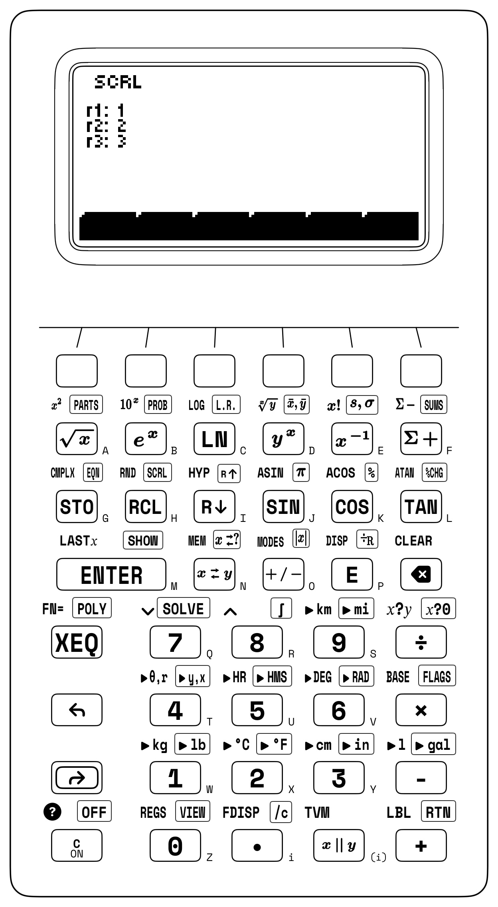
7.3.1 Horner's Nested Evaluation & T-Register Flooding
For the fourth-degree polynomial \(P(x) = 4x^4 - 3x^3 + 2x^2 - 5x + 7 = (((4x - 3)x + 2)x - 5)x + 7\) evaluated at \(x_0 = 2.5\), where synthetic division yields \(P(x) = (x - 2.5)(4x^3 + 7x^2 + 19.5x + 43.75) + 116.375\), the four-register stack supports two execution patterns depending on whether \(x_0 = 2.5\) is keyed at each stage or dispensed from Register \(T\). When \(x_0 = 2.5\) is keyed at each stage, the Horner synthetic-division coefficients accumulate sequentially in Register \(X\): \(b_3 = 4(2.5) - 3 = \mathbf{7}\), \(b_2 = 7(2.5) + 2 = \mathbf{19.5}\), \(b_1 = 19.5(2.5) - 5 = \mathbf{43.75}\), and finally the remainder \(b_0 = P(2.5) = 43.75(2.5) + 7 = \mathbf{116.375}\).
To avoid keying \(2.5\) four separate times—or re-typing an irrational evaluation point like \(x \approx 2.718\)—three presses of ENTER fill all four registers \((T, Z, Y, X)\) with \(x_0\) and turn Register \(T\) into an automatic constant dispenser. Every time multiplication consumes the copy of \(x_0\) in Register \(Y\) and drops the stack, Register \(T\) clones a fresh copy of \(x_0 = 2.5\) downward into Register \(Z\), reaching \(\mathbf{116.375}\) without re-typing \(2.5\):
| Keystroke | Register T | Register Z | Register Y | Register X | What Happens on the Stack |
|---|---|---|---|---|---|
2.5 [ENTER] [ENTER] [ENTER] |
\(2.5\) | \(2.5\) | \(2.5\) | \(2.5\) | Flood stack \((T, Z, Y, X)\) with \(x_0 = 2.5\) |
4 [×] 3 [-] |
\(2.5\) | \(2.5\) | \(2.5\) | \(7\) | First Horner stage \(b_3 = 4(2.5) - 3 = 7\); \(T\) clones \(2.5\) |
[×] 2 [+] |
\(2.5\) | \(2.5\) | \(2.5\) | \(19.5\) | Second Horner stage \(b_2 = 7(2.5) + 2 = 19.5\); \(T\) clones \(2.5\) |
[×] 5 [-] |
\(2.5\) | \(2.5\) | \(2.5\) | \(43.75\) | Third Horner stage \(b_1 = 19.5(2.5) - 5 = 43.75\); \(T\) clones \(2.5\) |
[×] 7 [+] |
\(2.5\) | \(2.5\) | \(2.5\) | \(116.375\) | Final remainder \(b_0 = P(2.5) = 43.75(2.5) + 7 = \mathbf{116.375}\) |
T-register replication also evaluates the rational-logarithmic solar-cell fill factor \(FF = \frac{v_{\text{oc}} - \ln(v_{\text{oc}} + 0.72)}{v_{\text{oc}} + 1}\) at \(v_{\text{oc}} = 25.145\) after entering \(25.145\) only once: flooding the four stack registers with \(v_{\text{oc}}\) supplies one copy for \(\ln(v_{\text{oc}} + 0.72)\), a second waiting copy in Register \(Y\) to subtract that logarithm and form the numerator \(\approx 21.892\), and a third copy replicated from Register \(T\) to form the denominator \(v_{\text{oc}} + 1 = 26.145\) and resolve \(FF \approx \mathbf{0.837}\).
To solve a monic quadratic \(x^2 + 2px + q = 0\) via the single-entry half-linear formula \(r_{1,2} = -p \pm \sqrt{p^2 - q}\) on the stack—such as the coupled-oscillator biquadratic \(u^2 - 10u + 9 = 0\) (\(u = \omega^2\), where \(-p = 5\) and \(q = 9\))—duplicating \(-p = 5\) into Register \(Y\), squaring \(5^2 = 25\), subtracting \(q = 9\), and taking the square root places \(\sqrt{p^2 - q} = 4\) in Register \(X\) with \(-p = 5\) waiting in Register \(Y\). Adding yields the first root \(u_1 = 5 + 4 = \mathbf{9}\) (\(\omega_1 = \mathbf{3}\)) while saving \(\sqrt{p^2 - q} = 4\) in LASTX, so recalling LASTX, doubling (\(8\)), and subtracting yields the second root \(u_2 = 9 - 8 = \mathbf{1}\) (\(\omega_2 = \mathbf{1}\)) without re-typing \(p\) or \(q\).
7.3.2 Cardano's Analytical Cubic & Quadratic Solver
On our casus irreducibilis benchmark \((x - 1)(x - 2)(x - 3) = x^3 - 6x^2 + 11x - 6 = 0\) (\(\Delta < 0\)), the POLY softkey sequence proceeds in three steps:
- Open the
POLYworkspace (Ax^3 + Bx^2 + Cx + D), and tap the fifth softkey (CLR) if any softkey labels already carry a bullet (•). - Key
1and tap the first softkeyA(A•appears); key-6and tap the second softkeyB(B•); key11and tap the third softkeyC(C•); key-6and tap the fourth softkeyD(D•). - Press
XEQ.
The solver evaluates Cardano's depressed cubic via complex polar cube-root trisection \(r^{1/3}[\cos(\theta/3) + i\sin(\theta/3)]\) (algebraically equivalent to Viète's cosine trisection when \(\Delta < 0\)), projects the three cube-root branches onto the real axis, and sorts all three real roots in ascending order: the display lists r1: 1, r2: 2, and r3: 3 (Figure 7.2), places the primary root \(r_1 = \mathbf{1}\) in Register \(Y\) (with its imaginary part \(\mathbf{0}\) in Register \(X\)), and stores all three roots across REGS slots R34–R35 (\(r_1 = 1 + 0i\)), R36–R37 (\(r_2 = 2 + 0i\)), and R38–R39 (\(r_3 = 3 + 0i\)). In the positive-discriminant regime (\(\Delta > 0\)), a cubic with complex conjugate roots, as in \(x^3 - x^2 + x - 1 = (x - 1)(x^2 + 1) = 0\), crosses the horizontal axis only once at \(r_1 = 1\), placing \(r_1 = 1 + 0i\) in \((Y, X)\) and storing the pure imaginary conjugate roots \(r_{2,3} = 0 \pm 1i\) in REGS slots R36–R37 and R38–R39.
When a steel bridge joint or aircraft wing root is pulled, compressed, and twisted in three dimensions, rotating a small test cube inside the metal always reveals three mutually perpendicular axes along which sideways shearing forces vanish, leaving only pure tension or compression. Finding those three principal stresses \(\sigma_3 \le \sigma_2 \le \sigma_1\) requires solving a three-real-root cubic (\(\Delta \le 0\)) whose coefficients are the coordinate-independent stress invariants \(I_1, I_2,\) and \(I_3\).
For the 3D principal stress cubic (\(\lambda^3 - 70\lambda^2 + 1175\lambda - 5750 = 0\)) of a structural steel element with tensor invariants \(I_1 = 70\text{ MPa}\), \(I_2 = 1175\text{ MPa}^2\), and \(I_3 = 5750\text{ MPa}^3\), entering \((A = 1,\; B = -70,\; C = 1175,\; D = -5750)\) into the four softkeys and pressing XEQ displays all three stresses together (r1: 10, r2: 11.972, r3: 48.028) and places the minor principal stress \(\sigma_3 = \mathbf{10\text{ MPa}}\) in Register \(Y\) (with \(0\) in Register \(X\)), while the intermediate stress \(\sigma_2 \approx \mathbf{11.972\text{ MPa}}\) and major principal stress \(\sigma_1 \approx \mathbf{48.028\text{ MPa}}\) appear as r2 and r3 (and in REGS slots R36 and R38). Halving the difference between the major and minor principal stresses yields the Tresca maximum shear stress \(\tau_{\max} = \frac{1}{2}(\sigma_1 - \sigma_3) \approx \mathbf{19.014\text{ MPa}}\).
Because any unassigned softkey defaults to 0, depressed cubics and quadratic equations require even fewer entries. On the floating-sphere buoyancy cubic for a solid oak marine buoy of radius \(R = 0.5\text{ m}\) (\(1\text{ m}\) diameter) and specific gravity \(\rho_s/\rho_w = 0.65\), balancing submerged spherical-cap volume against displaced water weight yields \(h^3 - 3Rh^2 + 4(\rho_s/\rho_w)R^3 = h^3 - 1.5h^2 + 0.325 = 0\), which has no linear \(h\) term. After tapping CLR, you enter only \(A = 1\), \(B = -1.5\), and \(D = 0.325\) on the softkeys (with softkey C left untouched at its default of 0) and press XEQ to read the physical waterline draft \(h \approx \mathbf{0.601\text{ m}}\) as r2 (\(\approx 60.1\%\) submerged), while the algebraic companion roots \(\approx -0.412\text{ m}\) and \(\approx 1.311\text{ m}\) lie outside the physical sphere \([0, 1\text{ m}]\).
On the inverse ballistic quadratic \(360.367 u^2 - 1200u + 510.367 \approx 0\) for an elevated target at range \(x = 1,200\text{ m}\) and height \(y = 150\text{ m}\) (\(v_0 = 140\text{ m/s}, g = 9.81\text{ m/s}^2\)), leaving A at its 0 default and assigning \(B = 360.367\), \(C = -1200\), and \(D = 510.367\) extracts both roots upon pressing XEQ. Taking the arctangent of the two positive slope roots returns both the low direct-fire angle \(\theta_1 \approx \mathbf{26.59^\circ}\) and the high plunging mortar arc \(\theta_2 \approx \mathbf{70.535^\circ}\).
7.3.3 Taming Transcendental Equations by Bracketed Iteration
A comparison of the iterative equation solver (EQN and SOLVE) with the closed-form polynomial solver (POLY) on two physical cubics contrasts bracketed root-finding with analytical extraction. On Newton's cubic benchmark \(x^3 - 2x - 5 = 0\), hand-evaluating Cardano's formula requires the sum of two nested cube roots \(\sqrt[3]{\frac{5}{2} + \sqrt{\frac{643}{108}}} + \sqrt[3]{\frac{5}{2} - \sqrt{\frac{643}{108}}}\). Entering the residual \(f(x) = (x^2 - 2)x - 5\) in Horner nested form and storing the starting seed \(x_0 = 2\) (where \(f(2) = -1 < 0\) and \(f(3) = +16 > 0\)) expands an outward sign-change bracket around \(x_0 = 2\) and converges to \(x^* \approx \mathbf{2.095}\) in Register \(X\) with a machine-zero residual \(|f(x^*)| < 10^{-15}\).
For carbon dioxide (\(\text{CO}_2\), \(a = 3.59\text{ L}^2\cdot\text{atm/mol}^2\), \(b = 0.043\text{ L/mol}\)) compressed to \(P = 50\text{ atm}\) at \(T = 300\text{ K}\) (\(RT = 24.618\text{ L}\cdot\text{atm/mol}\)), the van der Waals real-gas equation of state \(\left(P + \frac{a}{V^2}\right)(V - b) = RT\) clears the \(V^2\) denominator to form the expanded cubic \(50V^3 - 26.768V^2 + 3.59V - 0.154 = 0\). Both the cubic polynomial solver and Brent's root-finder (seeded at the ideal-gas volume \(V_{\text{ideal}} = RT/P \approx 0.492\text{ L/mol}\) on the unexpanded van der Waals residual) find the real molar volume \(V_m \approx \mathbf{0.359\text{ L/mol}}\)—\(27\%\) smaller in molar volume (\(37\%\) denser) than the ideal-gas estimate, corresponding to a compressibility factor \(Z = P V_m / RT \approx \mathbf{0.729}\).
On coupled transcendental conservation laws, Brent's solver resolves the unknowns from their equation residuals. For Kepler's elliptical orbital anomaly \(E - e\sin E - M = 0\) on an Earth-observation satellite with orbital eccentricity \(e = 0.25\) at mean anomaly \(M = 1.2\text{ rad}\) in radian mode, \(|\sin E| \le 1\) guarantees that the physical root lies inside \([M - e,\; M + e] = [0.95,\; 1.45]\text{ rad}\); seeding \(E_0 = 1.2\) converges to \(E^* \approx \mathbf{1.448\text{ rad}}\) (\(\approx 82.971^\circ\)) in five iterations.
In fluid pipelines and nonlinear circuits, bracketed iteration isolates implicit operating points without divergence. Evaluating the Colebrook–White turbulent pipe friction residual \(g(f) = \frac{1}{\sqrt{f}} + 2\log_{10}\!\left(\frac{\varepsilon/D}{3.7} + \frac{2.51}{\text{Re}\sqrt{f}}\right) = 0\) at Reynolds number \(\text{Re} = 100,000\) and relative roughness \(\varepsilon/D = 0.001\) by seeding \(f_0 = 0.02\) inside the physical Moody turbulent regime \([0.008, 0.08]\) lifts \(0.02\) into Register \(Y\) and converges to \(f^* \approx \mathbf{0.022}\) in Register \(X\).
On the silicon diode load-line residual \(f(V) = 5 - 10^{-9}(e^{V/V_T} - 1) - V = 0\) (\(V_s = 5\text{ V}\), \(I_s R = 10^{-9}\text{ V}\), \(V_T \approx 0.026\text{ V}\))—where an unguarded Newton step from \(V_0 = 0\text{ V}\) shoots along the flat tangent to \(+5\text{ V}\) (\(e^{5 / V_T} \approx 10^{84}\))—a starting guess near the silicon turn-on knee at \(V_0 = 0.65\text{ V}\) converges safely to \(V_D^* \approx \mathbf{0.577\text{ V}}\) (\(I_D \approx 4.423\text{ mA}\)).
When \(Q = 20\text{ m}^3/\text{s}\) (\(Q^2 = 400\)) of floodwater rushes through a trapezoidal concrete spillway of bottom width \(b = 3\text{ m}\) and side slopes \(z = 2\), the critical depth \(y_c\) (\(\text{Fr} = 1\)) crosses the degree-4 radical barrier to form the sixth-degree polynomial \(f(y) = 400(3 + 4y) - 9.81(3y + 2y^2)^3 = 0\), where seeding at \(y_0 = 1\text{ m}\) converges to \(y_c^* \approx \mathbf{1.251\text{ m}}\).
Bracketed root-finding also selects distinct physical branches when a conservation law admits multiple solutions on opposite sides of a singularity or throat. In compressible gas dynamics, the De Laval rocket nozzle area–Mach relation \(\frac{1}{M}\left(\frac{1 + 0.2M^2}{1.2}\right)^3 - 2.5 = 0\) for an expansion area ratio \(A/A^* = 2.5\) and specific-heat ratio \(\gamma = 1.4\) admits two physical flow regimes separated by the \(M^* = 1\) sonic throat. Seeding above the throat (\(M_0 = 2.5\) in \([1.05, 4]\)) locks Brent's solver onto the accelerating supersonic exhaust branch \(M_{\text{sup}} \approx \mathbf{2.443}\); seeding below the throat (\(M_0 = 0.2\) in \([0.05, 0.95]\)) isolates the decelerating subsonic venturi diffuser branch \(M_{\text{sub}} \approx \mathbf{0.24}\).
7.3.4 Practical Root-Finding Strategy & Residual Verification
To verify how a single Newton–Raphson step \(E_1 = E_0 - \frac{E_0 - e\sin E_0 - M}{1 - e\cos E_0}\) refines an orbital anomaly estimate on the four-register stack, flood the stack \((T, Z, Y, X)\) with the upper bracket endpoint \(E_0 = M + e = 1.45\text{ rad}\) in radian mode. Evaluating \(0.25\sin(1.45)\) and subtracting from the waiting copy of \(E_0\) in Register \(Y\) followed by \(M = 1.2\) isolates the residual \(f(1.45) \approx 1.822 \times 10^{-3}\text{ rad}\) in Register \(X\); dividing by the slope \(f'(1.45) = 1 - 0.25\cos(1.45) \approx 0.97\) to form the step \(\Delta E \approx 1.878 \times 10^{-3}\text{ rad}\) and subtracting from the copy of \(E_0\) dispensed by Register \(T\) reaches \(E_1 \approx \mathbf{1.448\text{ rad}}\) without re-entering \(E_0\). When an equation is already a contraction mapping \(x = g(x)\) (\(|g'(x^*)| < 1\)), applying \(g\) repeatedly to Register \(X\)—pressing cosine in radian mode to watch \(x_{n+1} = \cos(x_n)\) spiral into the Dottie fixed point \(x^* \approx \mathbf{0.739\text{ rad}}\), or flooding Register \(T\) with \(c = 6\) and repeating addition and square root to watch \(\sqrt{6 + \sqrt{6 + \dots}}\) converge to \(\mathbf{3}\)—visualizes fixed-point convergence before handing stiffer residuals \(g(x) - x = 0\) to Brent's solver.
After the root-finder terminates, storing the converged root estimate \(x^*\) into the equation's target variable and pressing XEQ to evaluate the stored equation performs the residual audit \(f(x^*)\), where a genuine root yields \(|f(x^*)| \le 10^{-12}\) while an accidental vertical asymptote or pole exposes itself with \(|f(x^*)| \gg 1\).
Three algebraic habits reinforce polynomial and transcendental root-finding. First, when POLY displays r1, r2, r3 of \(Ax^3 + Bx^2 + Cx + D = 0\) (and stores their real and imaginary parts in REGS STO slots R34–R39), Viète's identities provide an immediate checksum: summing the three real parts equals \(-B/A\) (\(10 + 11.972 + 48.028 = \mathbf{70}\)), multiplying three real roots equals \(-D/A\) (\(\mathbf{5750}\)), and when \(r_{2,3} = \alpha \pm i\beta\) are complex conjugates, converting \((\beta, \alpha)\) to polar form extracts \(|r_2| = \sqrt{\alpha^2 + \beta^2}\) so \(r_1 |r_2|^2 = r_1(\alpha^2 + \beta^2) = -D/A\). Second, when an equation has multiple roots across physical regimes—such as subsonic versus supersonic Mach branches across the \(M^* = 1\) throat—an initial seed \(x_0\) inside the target regime (\(M_0 = 0.2\) or \(M_0 = 2.5\)) locks Brent's solver inside that branch. Third, storing a known root \(r_1\) in Variable \(A\) (deflating in order \(|r_1| \le |r_2|\)) and dividing the residual in EQN by \((X - A)\) forms \(g(x) = \frac{f(x)}{x - r_1}\) so a subsequent solver pass cannot fall back into \(r_1\).
7.3.5 Try It on the Stack
- Standard Atmosphere Pressure Polynomial via \(T\)-Flooding: Flood \((T, Z, Y, X)\) with altitude \(h = 8.435\text{ km}\) and evaluate \(P(h) = ((-0.025h + 0.95)h - 12)h + 101.325\text{ kPa}\) without re-typing \(h\). (Verified Register \(X\) result: \(P \approx \mathbf{52.693\text{ kPa}}\).)
- Depressed Cubic & Viète Root-Power Sum in
POLY: ClearPOLYslots to \(0\), enter \(A = 1\), \(C = -7\), and \(D = 6\) (leaving \(B\) at \(0\)) for \(x^3 - 7x + 6 = 0\), execute, and verify \(r_1^2 + r_2^2 + r_3^2 = (B/A)^2 - 2(C/A) = \mathbf{14}\). (Verified roots: \(r_1 = \mathbf{-3}\), \(r_2 = \mathbf{1}\), \(r_3 = \mathbf{2}\), with \((-3)^2 + 1^2 + 2^2 = \mathbf{14}\).) - Quadratic Golden-Ratio Root Extraction: In
POLY, clear slots so \(A = 0\), assign \(B = 1\), \(C = -1\), and \(D = -1\) for \(x^2 - x - 1 = 0\), and execute to obtain both roots. (Verified roots: \(r_1 \approx \mathbf{-0.618}\) and \(r_2 \approx \mathbf{1.618}\).)
Chapter 8: Central Differences, Richardson Extrapolation & Romberg Quadrature
In 1910, while analyzing finite-difference stresses in masonry dams and formulating numerical weather prediction, the English physicist Lewis Fry Richardson identified an algebraic cancellation principle that reshaped numerical calculus (Richardson, 1911): whenever a finite-step approximation to a derivative or an integral carries a truncation error that scales with a known power of the step size \(h\), evaluating the approximation at two step sizes (\(h\) and \(h/2\)) allows the leading error term to be canceled. Generalized into a recursive triangular tableau by Werner Romberg in 1955 (Romberg, 1955), Richardson's extrapolation principle turns simple symmetric secants and flat-topped trapezoids into high-order numerical engines.
Root-finding locates the isolated point where a static function crosses zero; in a moving physical system, forces and rates of change vary continuously from instant to instant. At Launch Complex 39A at Cape Canaveral, when the five Rocketdyne F-1 engines ignite beneath the Apollo Saturn V moon rocket, the first-stage turbopumps deliver fifteen metric tons of kerosene and liquid oxygen per second into the combustion chambers. As hundreds of tons of propellant are expelled through the nozzles, the vehicle mass decreases while engine thrust increases in the thinning upper atmosphere, so acceleration climbs from \(1.25\,g\) at liftoff to \(4.5\,g\) just before staging.
Continuous motion is governed by two complementary operations—the derivative and the definite integral—linked as inverses by the Fundamental Theorem of Calculus. The derivative \(\frac{df}{dt}\) measures the instantaneous rate of change: if \(x(t)\) is the altitude of the Saturn V at time \(t\), its derivative \(v(t) = \frac{dx}{dt}\) is the instantaneous vertical velocity, and the derivative of velocity \(a(t) = \frac{dv}{dt}\) is the instantaneous acceleration. In the reverse direction, the definite integral \(\int_a^b f(t)\,dt\) measures cumulative change across an interval: integrating the area beneath the acceleration curve from ignition (\(t = 0\)) to first-stage burnout (\(t = T\)) recovers the total velocity gained by the spacecraft:
8.1 Symmetric Central Differences & Richardson Extrapolation
A digital instrument evaluates the instantaneous slope (derivative) \(f'(x)\) of a function at a point \(x\) from finite differences without symbolic algebra.
In an introductory calculus course, the derivative is defined by stepping a small distance \(h\) forward to \(x + h\) and computing the difference quotient of the one-sided forward difference:
A one-sided forward difference introduces systematic first-order bias on curved functions. On a curve that bends upward like a parabola (\(f''(x) > 0\)), the secant chord from \(x\) to \(x + h\) is steeper than the true tangent line at \(x\) because the curve rises more rapidly to the right of \(x\). By the Taylor series expansion:
Subtracting \(f(x)\) and dividing by \(h\) leaves a one-sided curvature error of \(+\frac{1}{2}f''(x)h\) that diminishes only linearly with step size—written in Landau big-O notation as \(\mathcal{O}(h)\), where \(\mathcal{O}(h^k)\) denotes a truncation error that shrinks in proportion to \(h^k\) as \(h \to 0\). If one attempts to reduce that \(\mathcal{O}(h)\) truncation error by choosing a tiny step size like \(h = 10^{-11}\), then \(f(x + h)\) and \(f(x)\) agree to their first eleven digits, and subtracting them destroys most of the floating-point precision through catastrophic cancellation.
Geometric symmetry around the point \(x\) eliminates that first-order bias. A symmetric stencil straddles the point \(x\) by stepping backward to \(x - h\) and forward to \(x + h\):
Subtracting the second expansion from the first and dividing by the total span \(2h\) yields the Central Difference Formula:
Stepping equally to the right and left of \(x\) over the span \(2h\) causes the even \(+\frac{1}{2}f''(x)h^2\) curvature terms on the two sides to share the same sign and cancel to zero upon subtraction. Geometrically, the chord joining \((x - h, f(x - h))\) and \((x + h, f(x + h))\) runs nearly parallel to the true tangent line at \(x\), and for any parabola \(f(x) = ax^2 + bx + c\), where the third derivative \(f'''(x) = 0\), the central difference is exact for any step size \(h\).
Choosing the step size \(h\) on a digital processor requires balancing two opposing error sources governed by machine epsilon \(\varepsilon_{\text{mach}} \approx 2.22 \times 10^{-16}\) (the smallest relative spacing between adjacent 64-bit floating-point numbers). If \(h\) is too wide, the secant chord misses the third-order S-bend of the curve, incurring a truncation error \(E_{\text{trunc}} \approx \frac{1}{6}|f'''(x)|h^2\) that grows with \(h^2\). If \(h\) is too narrow, \(f(x + h)\) and \(f(x - h)\) become nearly identical and their subtraction loses guard digits, incurring a roundoff cancellation error \(E_{\text{round}} \approx \frac{\varepsilon_{\text{mach}}|f(x)|}{h}\) that grows with \(1/h\). Differentiating the combined error \(E(h) = \frac{1}{6}|f'''(x)|h^2 + \frac{\varepsilon_{\text{mach}}|f(x)|}{h}\) with respect to \(h\) and setting the derivative to zero locates the sweet-spot step size \(h_{\text{opt}}\) where quadratic truncation error and inverse-step roundoff error meet:
Because \(h^2\) truncation and \(\varepsilon_{\text{mach}}/h\) roundoff differ by three powers of \(h\), their crossover scales as the cube root of machine epsilon (\(\varepsilon_{\text{mach}}^{1/3} \approx 10^{-5}\)), delivering ten to eleven significant digits of derivative accuracy in just two function evaluations: the forward point \(f(x + h)\) and the backward point \(f(x - h)\), whose difference divided by \(2h\) gives the tangent slope.
Whereas subtracting \(f(x+h)\) and \(f(x-h)\) isolates the first derivative, adding them and subtracting \(2f(x)\) cancels the odd terms \(\pm f'(x)h\) and \(\pm\frac{1}{6}f'''(x)h^3\) in Taylor's expansion—leaving the fourth derivative \(f^{(4)}(x)\) as the leading error—and isolates the second derivative \(f''(x)\) (concavity / flexural curvature):
Regrouping the second difference as \([f(x + h) - f(x)] - [f(x) - f(x - h)]\) measures the change in step-change—the forward vertical rise from \(x\) to \(x + h\) minus the backward vertical rise from \(x - h\) to \(x\) (or twice the amount by which the midpoint average \(\frac{1}{2}[f(x+h) + f(x-h)]\) sits above the center value \(f(x)\))—and dividing by \(h^2\) yields the local curvature \(f''(x)\). Because dividing by \(h^2\) amplifies floating-point rounding error as \(\varepsilon_{\text{mach}}/h^2\), balancing it against the \(\frac{1}{12}f^{(4)}(x)h^2\) truncation term shifts the optimal step size for second derivatives to the fourth root of machine epsilon, \(h_{\text{opt}} \approx \varepsilon_{\text{mach}}^{1/4} \approx 10^{-4}\).
In mechanical engineering, derivatives in polar coordinates govern a centrifugal flyball governor regulating rotational speed via negative feedback. When a flyweight of mass \(m\) rotates at angular speed \(\omega\) along a curved cam slot \(r(\theta)\), the flyweight moves tangentially at speed \(v_\theta = r\omega\) while sliding radially outward at speed \(\dot{r} = \omega\frac{dr}{d\theta}\). Combining those two perpendicular velocity components via the Pythagorean theorem (\(v^2 = \dot{r}^2 + (r\omega)^2\)) yields its kinetic energy \(E_k = \frac{1}{2}m\omega^2\left[\left(\frac{dr}{d\theta}\right)^2 + r(\theta)^2\right]\) at any cam angle \(\theta\).
8.1.1 Five-Point Stencil Acceleration via Richardson Extrapolation
Richardson's extrapolation principle (Richardson, 1911) applies directly to the even-power Taylor error series of the central-difference derivative \(D(h)\) (with error coefficients \(c_1 = \frac{1}{6}f'''(x)\) and \(c_2 = \frac{1}{120}f^{(5)}(x)\)):
Because the leading error \(c_1 h^2\) scales with the square of the step size \(h\), evaluating the central difference at step \(h\) (\(D(h)\)) and at twice the step \(2h\) (\(D(2h)\), whose \(h^2\) error is \(4\times\) larger) cancels the \(h^2\) error via \(\frac{4 D(h) - D(2h)}{3}\):
This five-point stencil (\(-1,\; +8,\; 0,\; -8,\; +1\) divided by \(12h\)) combines two central differences at \(h\) and \(2h\) in the ratio \(\frac{4}{3}\) and \(-\frac{1}{3}\), which eliminates the third-derivative error \(\frac{1}{6}f'''(x)h^2\) and achieves fourth-order accuracy \(\mathcal{O}(h^4)\). Evaluating \(f(x) = \sin x\) at \(x_0 = 1\text{ rad}\) (where the exact derivative is \(\cos(1) \approx \mathbf{0.54}\)) using even a deliberately coarse step \(h = 0.1\text{ rad}\) (\(2h = 0.2\text{ rad}\)) yields \(D(0.1) \approx 0.539\) and \(D(0.2) \approx 0.537\), whose Richardson combination \(\frac{4D(0.1) - D(0.2)}{3} \approx \mathbf{0.54}\) reduces the truncation error \(500\)-fold (from \(\approx 9 \times 10^{-4}\) down to \(\approx 1.8 \times 10^{-6}\)).
8.1.2 Measuring Curved Cables, Surfaces of Revolution & True-RMS Power
Derivatives and integrals also combine in arc-length rectification, surfaces of revolution, mechanical work, and root-mean-square power. The exact length of a curved cable or orbit \(y = f(x)\) from \(x = a\) to \(x = b\) follows from differential rectification. Over a differential horizontal step \(dx\), the curve rises by \(dy = f'(x)\,dx\), and by the Pythagorean theorem the diagonal arc element is \(ds = \sqrt{dx^2 + dy^2} = \sqrt{1 + [f'(x)]^2}\,dx\). Integrating those differential elements across the interval yields the Arc Length Formula:
For a parabolic telescope mirror or structural arch \(y(x) = a x^2\), its derivative is \(y'(x) = 2ax\), so the differential arc-length element becomes \(\sqrt{1 + 4a^2 x^2}\,dx\). Rotating that arc-length ribbon \(ds\) around the \(x\)-axis sweeps out a frustum ring of radius \(y(x)\) and circumference \(2\pi y(x)\), which determines the curved surface area of any turned nosecone, parabolic dish, or radar radome:
In mechanics and electrical engineering, definite integrals accumulate variable forces and thermal power dissipation. When a constant force \(F\) displaces a mass through distance \(\Delta x\), work is the product \(W = F\Delta x\); when the force varies with position \(F(x)\)—as in a stiffening rally-car suspension spring, gas expanding against a piston (\(W = \int_{V_1}^{V_2} P(V)\,dV\)), or gravity diminishing with altitude—work is the definite integral \(W = \int_{x_1}^{x_2} F(x)\,dx\). In alternating-current power analysis, the instantaneous heating power dissipated by a time-varying voltage \(v(t)\) in a \(1\,\Omega\) resistor is \(v(t)^2\), and the True Root-Mean-Square (RMS) voltage is the equivalent DC voltage that delivers the same average thermal energy over a period \(T\):
For an undistorted sinusoid \(v(t) = V_p\sin\theta\), the average of \(\sin^2\theta\) is \(\frac{1}{2}\), which yields \(V_{\text{rms}} = V_p/\sqrt{2} \approx 0.707\,V_p\). Whenever a varistor, thyristor dimmer, or rectifier clips the waveform, \(V_p/\sqrt{2}\) does not apply, and the integral \(\sqrt{\frac{1}{T}\int_0^T v(t)^2\,dt}\) is required.
8.2 Trapezoidal Halving, Simpson's Parabolic Rule & Romberg's Tableau
Richardson's \(\frac{4}{3} - \frac{1}{3}\) error-cancelation formula accelerates definite integration \(\int_a^b f(x)\,dx\) in the same way when a curved boundary is sliced into flat-topped panels.
Archimedes began with the geometry of a curved parabolic segment enclosed between a parabola and a straight secant chord of base \(b\) and apex height \(H_{\text{apex}}\). Inscribing a central triangle of area \(A_0 = \frac{1}{2} b H_{\text{apex}}\) inside the parabola leaves two smaller curved parabolic segments on the left and right. Because the vertical deflection of a parabola scales with the square of horizontal distance, halving the horizontal span (\(h \to h/2\)) reduces the height of each remaining parabolic arch to one-fourth of the original height, so the two new inscribed triangles together have area \(\frac{1}{4} A_0\). Repeating the bisection across the remaining segments adds \(\left(\frac{1}{4}\right)^2 A_0 = \frac{1}{16} A_0\), then \(\frac{1}{64} A_0\), and so on in a convergent geometric series:
For a parabolic masonry arch of base chord \(b = 12\text{ m}\) and crown height \(H_{\text{apex}} = 4.5\text{ m}\) (inscribed triangle \(A_0 = 27\text{ m}^2\)), the first three bisection stages \(A_0(1 + \frac{1}{4} + \frac{1}{16})\) already reach \(\approx 35.438\text{ m}^2\), rapidly approaching the exact limit \(\frac{4}{3}A_0 = \mathbf{36\text{ m}^2}\) (the same quadratic area law \(\int_0^b x^2\,dx = \frac{1}{3}b^3\) that leaves two-thirds of the bounding rectangle inside the arch). One scaling ratio governs this geometry: every time the horizontal span of a parabolic panel is halved (\(h \to h/2\)), the remaining curved gap between the curve and the straight chord shrinks by a factor of one-fourth (\(\frac{1}{4}\)).
8.2.1 Composite Trapezoidal Quadrature and \(\mathcal{O}(h^2)\) Truncation Error
That quadratic \(\frac{1}{4}\) scaling ratio governs numerical quadrature. To integrate a smooth function \(f(x)\) from \(x = a\) to \(x = b\), one partitions the interval into \(N\) equal panels of width \(h = \frac{b - a}{N}\). Capping each panel with a flat horizontal top at the left or right endpoint (a Riemann step rectangle) leaves a right-triangular gap of width \(h\) and height \(\Delta y \approx f'(x)h\) on every sloping section of the curve; each panel incurs an \(\mathcal{O}(h^2)\) local error, and summing across \(N = \frac{b-a}{h}\) panels produces an \(\mathcal{O}(h)\) first-order global error.
When straight secant chords connect each sample point \((x_i, f(x_i))\) to the next point \((x_{i+1}, f(x_{i+1}))\), they form trapezoids of average height \(\frac{1}{2}[f(x_i) + f(x_{i+1})]\) and area \(\frac{h}{2}[f(x_i) + f(x_{i+1})]\). Every interior ordinate \(f(x_i)\) is shared by two adjacent trapezoids (counted with weight \(\frac{1}{2} + \frac{1}{2} = 1\)), while the two outer endpoints \(f(a)\) and \(f(b)\) receive weight \(\frac{1}{2}\). Summing all \(N\) trapezoids yields the Composite Trapezoidal Rule:
The truncation error of flat-topped trapezoids on a smooth curve follows from the geometry of a single narrow panel of width \(h\). Over any small span, Taylor's theorem shows that a smooth curve bends locally like a parabola with curvature \(f''(x)\), which encloses a thin crescent-shaped parabolic segment of width \(h\) between the curve and the straight secant chord of the trapezoid.
Because parabolic deflection grows with the square of distance from the midpoint, the maximum vertical sag of the segment at the center of the panel is proportional to \(h^2\) (specifically, \(\frac{1}{8}f''(x)h^2\)). Since the area of a parabolic segment is \(\frac{2}{3} \times \text{base} \times \text{height}\), the area of one panel's segment scales as \(\frac{2}{3} \times h \times \frac{1}{8}f''(x)h^2 = \frac{1}{12}f''(x)h^3 \propto h^3\). Summing these segments across all \(N = \frac{b - a}{h}\) panels spanning \([a, b]\) cancels one power of \(h\) against \(1/h\) and, by the Mean Value Theorem, evaluates the average second derivative at an intermediate point \(\xi \in [a, b]\):
Across the fixed span \((b - a)\), the global error shrinks with the square of the panel width \(h\), while its algebraic sign follows the concavity \(f''(\xi)\) of the integrand. When a curve is concave up (\(f''(x) > 0\), as for \(e^x\) or \(x^2\)), the straight secant chord of each trapezoid lies above the curve, so \(T(h)\) slightly overestimates the integral. When a curve is concave down (\(f''(x) < 0\), as for \(\sin x\) on \([0, \pi]\) or \(\ln x\)), the straight chord passes beneath the arch, so \(T(h)\) slightly underestimates the integral.
From that \(h^2\) scaling law follows a simple ratio: whenever an interval is partitioned into twice as many trapezoids, halving the step width (\(h \to h/2\)), the total error shrinks by a factor of \(\left(\frac{1}{2}\right)^2 = \mathbf{\frac{1}{4}}\). Without extrapolation, that \(1/4\) ratio would require \(2^{20} \approx 1,048,576\text{ trapezoids}\) to reach twelve decimal digits of precision (\(10^{-12} \approx 4^{-20}\)). Richardson extrapolation eliminates this bottleneck in four or five halving steps.
8.2.2 The 4/3 Minus 1/3 Extrapolation: From Trapezoids to Simpson's Parabolic Rule
Richardson's extrapolation principle (Richardson, 1911) exploits that \(1/4\) step-halving ratio to cancel the leading truncation term of trapezoidal integration.
A first pass over the area under a curve with a coarse step size \(h\) produces the trapezoidal estimate \(T_{\text{coarse}} = T(h)\), and halving the step size once to \(h/2\) produces the fine trapezoidal estimate \(T_{\text{fine}} = T(h/2)\). First, that halving step reuses every previous ordinate. Refining \(N\) panels of width \(h\) into \(2N\) panels of width \(h/2\) keeps every sample point of the coarse grid as an even-numbered node of the fine grid:
No function evaluation from the earlier pass is discarded; dividing the previous trapezoidal sum \(T(h)\) by \(2\) and adding the newly sampled midpoints completes the refined sum.
Second, up to any asymptotic truncation order \(K\), the trapezoidal error expands exclusively in even powers of \(h\) (\(h^2, h^4, h^6, \dots\)) weighted by the classical Bernoulli numbers \(B_{2m}\) (\(B_2 = \frac{1}{6},\; B_4 = -\frac{1}{30},\; B_6 = \frac{1}{42},\dots\)), with all odd powers (\(h^3, h^5, \dots\)) absent, as established by the Euler–Maclaurin Summation Formula:
Each term in the Euler–Maclaurin expansion multiplies an even power of the panel width \(h^{2m}\) by the mismatch in odd-order slopes \(f^{(2m-1)}(b) - f^{(2m-1)}(a)\) between the right endpoint \(b\) and left endpoint \(a\) (starting at \(m = 1\) with \(\frac{B_2}{2!}h^2[f'(b) - f'(a)] = \frac{h^2}{12}\int_a^b f''(x)\,dx\)). Every odd power of \(h\) vanishes because on every interior boundary \(x_i\) between adjacent panels, the derivative contribution from the right end of panel \(i\) (\(+f^{(k)}(x_i)\)) and the left end of panel \(i+1\) (\(-f^{(k)}(x_i)\)) cancel in a telescoping sum, so only the odd-order derivatives at the outer endpoints \(x = a\) and \(x = b\) multiplied by even powers of \(h\) remain:
Because halving the step size (\(h \to h/2\)) reduces the dominant \(c_1 h^2\) error term \(E = c_1 h^2\) to one-fourth (\(\frac{1}{4}E\)) of its previous value while reducing the \(c_2 h^4\) term to \(\frac{1}{16}\) of its value, the two estimates form a system of two linear equations:
Those two equations allow us to eliminate the unknown error \(E\) without knowing \(I\). In Richardson's 1910 finite-difference analysis of the Aswan masonry dam, if a coarse computational mesh of spacing \(h\) incurs a quadratic discretization error of \(4\delta\) (\(E\)), halving the mesh spacing to \(h/2\) cuts that discretization error to one-fourth as much, or \(1\delta\) (\(\frac{1}{4}E\)). Multiplying the fine-grid estimate by \(4\) gives four times the true continuum integral plus \(4\delta\); subtracting the coarse-grid estimate cancels the \(4\delta\) discretization error and leaves three times the true integral. Dividing by \(3\)—that is, taking \(\frac{4}{3}\) of \(T_{\text{fine}}\) minus \(\frac{1}{3}\) of \(T_{\text{coarse}}\)—eliminates \(E\) (Figure 8.1):
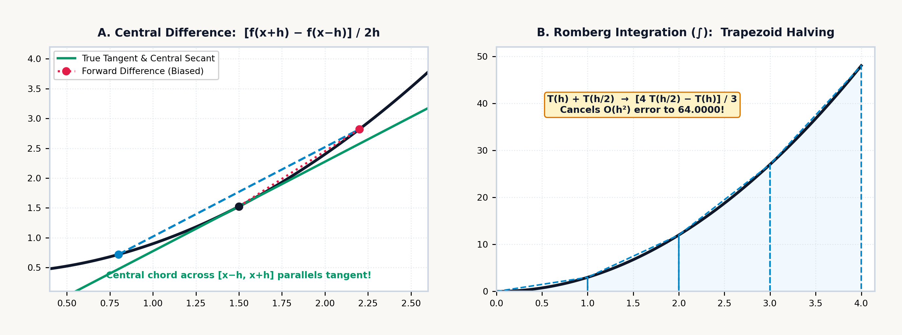
The leading \(h^2\) error cancels to zero. Across a single coarse macro-panel of span \(h = b - a\) (subdivided into two sub-steps of width \(h/2\) at the midpoint \(m = \frac{a+b}{2}\)), substituting \(T(h) = \frac{h}{2}[f(a) + f(b)]\) and \(T(h/2) = \frac{h}{4}[f(a) + 2f(m) + f(b)]\) into Richardson's \(\frac{4}{3} - \frac{1}{3}\) combination yields:
Those \(1\text{–}4\text{–}1\) weights \(\frac{h}{6}[f(a) + 4f(m) + f(b)]\) (with \(h = b - a\), or \(\frac{\Delta x}{3}\) in terms of the half-step \(\Delta x = h/2\)) show that Richardson's \(\frac{4}{3} - \frac{1}{3}\) combination of two flat-topped trapezoid sums produces Simpson's Parabolic Rule (\(\mathcal{O}(h^4)\)), the exact area under a parabola fitted through the left endpoint, the midpoint, and the right endpoint. Because the third derivative \(f'''(x)\) of any cubic polynomial \(Ax^3 + Bx^2 + Cx + D\) is a constant (so \(f'''(b) - f'''(a) = 0\) in the \(h^2\) term and \(f^{(4)}(x) = 0\) in the \(h^4\) term), Simpson's \(1\text{–}4\text{–}1\) rule is exact for both parabolas and cubics: on \(\int_0^4 x^3\,dx = \left[\frac{1}{4}x^4\right]_0^4 = \mathbf{64}\), while the single trapezoid \(T(4) = 128\) overshoots by \(100\%\) and the two-panel trapezoid \(T(2) = 80\) overshoots by \(25\%\), combining them via \(\frac{4 T(2) - T(4)}{3}\) produces the exact value \(\mathbf{64}\).
8.2.3 Werner Romberg's Triangular Tableau
In 1955, Werner Romberg (Romberg, 1955) extended Richardson's elimination beyond the \(h^2\) term. Once two Simpson parabolic estimates are available at step sizes \(h\) and \(h/2\) across a macro-panel of span \(h = b - a\) (subdivided into four sub-steps of width \(h/4\) at nodes \(x_0, x_1, x_2, x_3, x_4\)), their leading \(c_2 h^4\) errors stand in the ratio \(\left(\frac{1}{2}\right)^4 = \frac{1}{16}\).
The combination \(\frac{16}{15}S_{\text{fine}} - \frac{1}{15}S_{\text{coarse}}\) eliminates the \(h^4\) error and produces Boole's 5-Point Rule (\(\mathcal{O}(h^6)\)) with its \(7\text{–}32\text{–}12\text{–}32\text{–}7\) weights (where \(\frac{h}{90} = \frac{2(h/4)}{45}\)):
Organizing these successive step-halvings into a lower-triangular array \(R(k, j)\) indexed by row \(k\) (where row \(k\) partitions \([a, b]\) into \(2^k\) panels of width \(h_k = (b-a)/2^k\)) and extrapolation column \(j\) (where each column \(j \ge 1\) cancels the \(h^{2j}\) error term from column \(j - 1\)) defines Romberg Integration (Romberg, 1955):
Each extrapolated entry \(R(k, j)\) takes the fine-grid estimate \(R(k, j-1)\) immediately to its left and adds the fraction \(\frac{1}{4^j - 1}\) of its improvement \(R(k, j-1) - R(k-1, j-1)\) over the coarser row \(R(k-1, j-1)\) directly above it. Across each row of the tableau, the base column \(j = 0\) accumulates the midpoint-reusing trapezoidal sum \(T(h_k)\) at \(\mathcal{O}(h^2)\), while successive columns apply the multipliers \(\frac{4 R(k,0) - R(k-1,0)}{3}\) (\(j = 1\), Simpson's \(\mathcal{O}(h^4)\) rule), \(\frac{16 R(k,1) - R(k-1,1)}{15}\) (\(j = 2\), Boole's \(\mathcal{O}(h^6)\) rule), and \(\frac{64 R(k,2) - R(k-1,2)}{63}\) (\(j = 3\), 9-point \(\mathcal{O}(h^8)\) extrapolation), up to the capped high-order limit \(j_{\max} = 5\) (\(\mathcal{O}(h^{12})\)). On \(\int_0^2 e^x\,dx = e^2 - 1 \approx \mathbf{6.389}\), the first four rows of \(R(k, j)\) feed each successive column to the right:
| Row \(k\) (Panels \(2^k\)) | \(j = 0\) (Trapezoid \(\mathcal{O}(h^2)\)) | \(j = 1\) (Simpson \(\mathcal{O}(h^4)\)) | \(j = 2\) (Boole \(\mathcal{O}(h^6)\)) | \(j = 3\) (\(\mathcal{O}(h^8)\)) |
|---|---|---|---|---|
| \(k = 0\) (\(1\) panel) | \(8.389\) | — | — | — |
| \(k = 1\) (\(2\) panels) | \(6.913\) | \(6.421\) | — | — |
| \(k = 2\) (\(4\) panels) | \(6.522\) | \(6.391\) | \(6.389\) | — |
| \(k = 3\) (\(8\) panels) | \(6.422\) | \(6.389\) | \(6.389\) | \(6.389\) |
On Row \(k = 0\) (\(1\) trapezoid, \(h_0 = 2\)), the single trapezoid \(R(0,0) = \frac{2}{2}(e^0 + e^2) \approx 8.389\) overshoots the exact integral by \(+31.3\%\). On Row \(k = 1\) (\(2\) trapezoids, \(h_1 = 1\)), adding the single midpoint \(e^1\) gives \(R(1,0) \approx 6.913\), and applying \(\frac{4 R(1,0) - R(0,0)}{3}\) produces the Simpson estimate \(R(1,1) \approx 6.421\), which reduces the error tenfold. On Row \(k = 2\) (\(4\) trapezoids, \(h_2 = 0.5\)), adding the two quarter-points gives \(R(2,0) \approx 6.522\), which extrapolates to \(R(2,1) \approx 6.391\) and then \(R(2,2) = \frac{16 R(2,1) - R(1,1)}{15} \approx 6.389\), within \(0.003\%\) of the exact value using only \(5\) function evaluations. By Row \(k = 3\) (\(8\) trapezoids, \(h_3 = 0.25\)), using \(9\) function evaluations, \(R(3,3) \approx 6.389\) is accurate to seven significant digits, and by Row \(k = 4\) (\(17\) points), the error drops below \(10^{-12}\).
Both the logarithmic benchmark \(\int_1^2 \frac{1}{x}\,dx = \ln 2 \approx \mathbf{0.693}\) and the exponential decay benchmark \(\int_0^1 e^{-x}\,dx = 1 - e^{-1} \approx \mathbf{0.632}\) show this rapid contraction across the first two Romberg rows: for \(\int_1^2 \frac{1}{x}\,dx\), the single trapezoid \(R(0,0) = \frac{1}{2}(1 + \frac{1}{2}) = 0.75\) and two-panel trapezoid \(R(1,0) = \frac{1}{2}(0.75) + \frac{1}{2}(\frac{2}{3}) \approx 0.708\) combine via \(\frac{4 R(1,0) - R(0,0)}{3}\) to yield \(R(1,1) \approx \mathbf{0.694}\), and one more halving to \(R(2,2)\) reaches \(\approx \mathbf{0.693}\).
The Romberg tableau caps extrapolation at column \(j_{\max} = 5\) (\(\mathcal{O}(h^{12})\)) because fitting an unbounded polynomial degree across equally spaced points on a wide interval triggers violent oscillations near the boundaries (Runge's Phenomenon); capping the extrapolation order at \(j_{\max} = 5\) and splitting wide domains across logarithmic \(1\text{–}2\text{–}5\) decade boundaries prevents high-degree ringing. When an integrand is a periodic wave (such as \(\cos^2 x\)) or a bell curve whose odd derivatives \(f^{(2m-1)}(b) - f^{(2m-1)}(a)\) vanish at both endpoints in the Euler–Maclaurin expansion, the Composite Trapezoidal Rule converges exponentially fast on its own. Comparing adjacent high-order Romberg entries \(|R(k, j) - R(k, j-1)|\) (and \(|R(k, j) - R(k-1, j-1)|\) along the diagonal) also provides a self-contained truncation error estimate \(\pm\varepsilon\) that is returned in Register \(Y\) alongside the converged integral \(I\) in Register \(X\).
8.2.4 Endpoint-Clustering Transforms & Singularity Substitutions
Physical integrals routinely span an infinite upper limit \([a, \infty)\) or involve an integrand whose value or slope diverges at an endpoint—such as an inverse-square-root pendulum turnaround cusp \(\int_0^b \frac{g(x)}{\sqrt{x}}\,dx\) or the square-root boundary ribbon \((H - y)\sqrt{8y}\) at \(y = 0\) of a parabolic arch. If a closed trapezoidal rule evaluates an endpoint that triggers a division by zero (such as \(\frac{\sin x}{x}\) at \(x = 0\) or \(\frac{1}{\sqrt{1 - u^2}}\) at \(u = \pm 1\)), the unguarded evaluation halts at the pole.
To protect Romberg quadrature against integrable endpoint singularities and to accelerate Euler–Maclaurin convergence, a cubic polynomial change of variable (Kahan, 1979) can be applied after normalizing the integration interval \([a, b]\) onto the standard symmetric domain \(u \in [-1, 1]\) via the affine linear map \(x(u) = \frac{a + b}{2} + \frac{b - a}{2}u\). Like a surveyor approaching the crumbly rim of a canyon who takes progressively shorter steps near the edge and stops just short of the precipice, the S-shaped cubic curve \(u(t) = \frac{1}{2}t(3 - t^2)\) crowds sample points densely toward the boundaries \(u = \pm 1\) while its slope \(\frac{du}{dt} = \frac{3}{2}(1 - t^2)\) tapers smoothly to zero right at the endpoints:
Under this change of variable, the normalized integral \(\int_{-1}^{1} \tilde{f}(u)\,du\) becomes:
This cubic mapping accomplishes three numerical objectives at once. First, it suppresses endpoint singularities via the \((1 - t^2)\) Jacobian factor (the chain-rule stretching factor \(\frac{du}{dt} = \frac{3}{2}(1 - t^2)\)): at both ends of the interval (\(t = \pm 1\)), the transformation maps \(u(\pm 1) = \pm\frac{1}{2}(3 - 1) = \pm 1\) while its first derivative \(\frac{du}{dt} = \frac{3}{2}(1 - t^2)\) vanishes (\(\frac{du}{dt}\big|_{t=\pm 1} = 0\)). Multiplying the integrand by the vanishing weight \(\frac{3}{2}(1 - t^2)\) forces the transformed integrand to zero at \(t = \pm 1\) for any bounded function (so the endpoints \(u = \pm 1\) never need to be sampled at all) and softens an integrable \(1/\sqrt{1 - u^2}\) singularity because \(1 - u^2 = \frac{1}{4}(1 - t^2)^2(4 - t^2)\) shares a double factor of \((1 - t^2)\).
Second, the cubic change of variable ensures vanishing odd Euler–Maclaurin endpoint derivatives: because the Euler–Maclaurin error series \(\sum \frac{B_{2m}}{(2m)!}h^{2m}[g^{(2m-1)}(1) - g^{(2m-1)}(-1)]\) is driven by the odd-order derivatives at the endpoints, and the chain rule multiplies the first derivative of \(g(t) = \tilde{f}(u(t))\frac{3}{2}(1 - t^2)\) by \((1 - t^2)\), the leading \(h^2\) endpoint error term is annihilated even before Richardson extrapolation begins. Third, it creates dense node clustering near the boundaries: uniformly spaced Romberg steps \(t_i\) in \([-1, 1]\) map through \(u(t) = \frac{1}{2}t(3 - t^2)\) into non-uniformly clustered nodes \(u_i\) that crowd densely toward \(u = \pm 1\) where boundary layers and square-root tangents vary fastest, mapping the halfway node \(t = 0.5\) to \(u(0.5) \approx \mathbf{0.688}\) with Jacobian weight \(w(0.5) = \mathbf{1.125}\), and clustering the three-quarter node \(t = 0.75\) to \(u(0.75) \approx \mathbf{0.914}\) while the weight tapers smoothly to \(w(0.75) \approx \mathbf{0.656}\).
Whereas open-quadrature integrators apply the cubic transformation \(u(t) = \frac{1}{2}t(3 - t^2)\) internally, the SC-32 quadrature engine evaluates closed composite trapezoidal panels with adaptive sub-panel refinement, so a removable or integrable endpoint pole (such as \(t = 0\) in \(\frac{\sin t}{t}\)) is handled by displacing the limit to a nearby interior point like \(a = 10^{-12}\), while integrands whose value is finite at the endpoint—such as \((4 - y)\sqrt{8y} = 0\) at \(y = 0\), where only the derivative \(y^{-1/2}\) diverges—integrate over \([0, 4]\) without displacement.
Alongside cubic endpoint clustering, two classical variable substitutions eliminate algebraic \(1/\sqrt{x}\) singularities and infinite \([a, \infty)\) tails analytically. First, whenever an integral has an integrable \(1/\sqrt{x}\) singularity at \(x = 0\) (as occurs when a pendulum reaches its turnaround point or light grazes a caustic), substituting \(x = u^2\) introduces the differential factor \(dx = 2u\,du\), canceling the singular root \(\sqrt{x} = u\):
The integrand of \(\int_0^1 \frac{\cos x}{\sqrt{x}}\,dx\) diverges to \(+\infty\) at \(x = 0\), yet the smooth transformed integrand \(2\cos(u^2)\) over \([0, 1]\) converges in four Romberg rows to \(\approx \mathbf{1.809}\). Second, when integrating a rapidly decaying tail over \([a, \infty)\) with \(a > 0\), the reciprocal substitution \(x = 1/t\) (\(dx = -dt/t^2\)) maps the infinite horizon \(x \to \infty\) onto the finite interval \([0, 1/a]\) as \(t \to 0^+\):
A small shift of the lower limit from \(0\) to \(10^{-12}\) (or truncating a Gaussian or exponential tail at \(5\) to \(8\) characteristic scale lengths where \(e^{-x^2/2}\) has already fallen below machine epsilon) lets Romberg's tableau integrate improper tails to full precision.
8.2.5 Non-Elementary Integrals in Probability, Mechanics & Blackbody Radiation
Introductory calculus courses construct nearly every exercise so that a closed-form symbolic antiderivative \(F(x)\) exists for evaluating \(F(b) - F(a)\). While any elementary combination of powers, roots, sines, exponentials, and logarithms can be differentiated by direct analytical rules, most continuous curves encountered in physics possess no elementary antiderivative and require Romberg quadrature.
In astronautics, the ideal rocket equation integrates the momentum balance \(m\frac{dv}{dt} = -v_e\frac{dm}{dt} - mg(h)\sin\gamma\) of a launch vehicle expelling propellant at effective exhaust speed \(v_e = I_{\text{sp}} g_0\). In vacuum with zero gravity loss, separating variables yields the logarithmic velocity increment \(\Delta v_{\text{ideal}} = \int_{m_f}^{m_0} \frac{v_e}{m}\,dm = I_{\text{sp}} g_0 \ln\!\left(\frac{m_0}{m_f}\right)\). When atmospheric drag \(D(v, h(t))\) and altitude-dependent gravity \(g(h(t))\) act together during ascent, however, the net acceleration \(a(t) = \frac{F_{\text{thrust}}(t) - D(t)}{m_0 - \dot{m}t} - g(t)\sin\gamma(t)\) cannot be integrated in closed form and requires numerical quadrature \(\Delta v = \int_0^{t_b} a(t)\,dt\).
A simple pendulum of length \(L\) under gravity \(g\) has the small-angle period \(T_0 = 2\pi\sqrt{L/g}\), which assumes that the restoring pull of gravity grows linearly with angle \(\theta\). A real pendulum swinging through a wide release angle \(\theta_0\), however, runs noticeably slower than \(T_0\): as the bob swings out toward the horizontal, gravity's true tangential restoring pull \(\sin\theta = \theta - \theta^3/6 + \dots\) falls below the linear spring approximation \(\theta\), so the bob lingers longer near its turnaround points. Retaining the exact restoring torque \(\sin\theta\) in conservation of energy and parameterizing the quarter-swing from bottom dead center (\(\varphi = 0\)) to peak release (\(\varphi = \pi/2\)) by the normalized phase angle \(\varphi \in [0, \pi/2]\) (defined via \(\sin(\theta/2) = k\sin\varphi\), with amplitude modulus \(k = \sin(\theta_0/2)\)) leads to the Complete Elliptic Integral of the First Kind \(K(k)\):
Because \(\sqrt{1 - k^2\sin^2\varphi}\) tracks the bob's angular speed at phase \(\varphi\), a tiny swing (\(k \to 0\)) reduces the integrand to \(1\) and recovers the small-angle limit \(T(\theta_0)/T_0 = 1\), whereas a wider release (\(k > 0\)) depresses \(\sqrt{1 - k^2\sin^2\varphi}\) below \(1\) and stretches the time the bob spends lingering near its turnaround peak \(\varphi = \pi/2\). Like the perimeter of an ellipse, no finite combination of elementary functions can express \(K(k)\), yet Romberg quadrature evaluates it to twelve digits—and \(2/\pi\,K(k)\) also equals the reciprocal of the Arithmetic-Geometric Mean \(\operatorname{AGM}(1, \cos(\theta_0/2))\). For a pendulum released at \(\theta_0 = 60^\circ\) (\(k = \sin 30^\circ = 0.5\), \(\cos 30^\circ = \frac{\sqrt{3}}{2} \approx 0.866\)), integrating \((1 - 0.25\sin^2\varphi)^{-1/2}\) over \([0, \pi/2]\) and scaling by \(2/\pi\) (or running two steps of the AGM recurrence \(a_{n+1} = \frac{a_n+b_n}{2},\; b_{n+1} = \sqrt{a_n b_n}\)) yields \(\frac{T(60^\circ)}{T_0} \approx \mathbf{1.073}\), meaning the clock runs \(\approx \mathbf{7.318\%}\) slower than the small-angle formula.
Non-elementary integrals also govern normal probability, quantum thermal radiation, and solid-state heat capacity. The Gaussian normal error integral \(\frac{1}{\sqrt{2\pi}}\int_a^b e^{-x^2/2}\,dx\) has no closed-form antiderivative in elementary functions, requiring numerical quadrature across finite confidence intervals. In thermal physics, light of wavelength \(\lambda\) and frequency \(\nu = c/\lambda\) (traveling at the speed of light \(c\)) is emitted in discrete energy quanta \(E = h\nu = hc/\lambda\) governed by Planck's constant \(h \approx 6.626 \times 10^{-34}\text{ J}\cdot\text{s}\), while a cavity at absolute temperature \(T\) supplies thermal agitation energy \(k_B T\) per degree of freedom via Boltzmann's constant \(k_B \approx 1.381 \times 10^{-23}\text{ J/K}\).
Comparing photon energy \(hc/\lambda\) against thermal energy \(k_B T\) defines the dimensionless photon-energy ratio \(x = \frac{hc}{\lambda k_B T} = \frac{h\nu}{k_B T}\) and yields Planck's blackbody spectral radiance law \(B_\lambda(\lambda, T) \propto \lambda^{-5}/(e^{hc/\lambda k_B T} - 1)\). Integrating Planck's distribution over the entire spectrum \(x \in [0, \infty)\) collapses via the zeta identity \(\int_0^\infty \frac{x^3}{e^x - 1}\,dx = \frac{\pi^4}{15} \approx 6.494\) into the Stefan–Boltzmann \(T^4\) total radiation law. When an astronomer or optical engineer asks how much thermal power a star or furnace emits inside a finite detector wavelength band \([\lambda_1, \lambda_2]\) (corresponding to \([x_1, x_2]\)), however, no closed-form antiderivative exists for \(\int_{x_1}^{x_2} \frac{x^3}{e^x - 1}\,dx\) (which weights the cubic electromagnetic mode density and photon energy \(x^3\) by the Bose–Einstein thermal occupancy factor \(\frac{1}{e^x - 1}\)).
A companion quantum integral governs the Debye model of solid heat capacity. Classical physics predicted that every crystal lattice should have a constant molar heat capacity of \(3R\) (the Dulong–Petit ceiling, where \(R = N_A k_B \approx 8.314\text{ J/(mol}\cdot\text{K)}\) is the molar gas constant), yet experiments showed that the molar heat capacity \(C_V(T)\) of diamond or copper drops toward zero as \(T^3\) at cryogenic temperatures. Peter Debye explained this drop by modeling atomic lattice vibrations as acoustic phonons up to a crystal-specific cutoff frequency \(\nu_D\), which defines the Debye temperature \(\Theta_D = h\nu_D / k_B\). Integrating the temperature derivative of the Bose–Einstein phonon energy across the dimensionless phonon energy \(x = \frac{h\nu}{k_B T}\) from \(0\) to the upper cutoff \(\Theta_D / T\) gives the Debye heat-capacity integral:
The cubic prefactor \(\left(\frac{T}{\Theta_D}\right)^3\) measures the fraction of the crystal's vibrational spectrum that is thermally active at temperature \(T\), while the integrand pairs \(x^4\)—combining the quadratic acoustic mode density (\(\propto x^2\)) with the squared phonon energy (\(\propto x^2\))—against the Bose–Einstein temperature derivative \(\frac{e^x}{(e^x - 1)^2}\), showing how high-frequency lattice modes (\(h\nu \gg k_B T\), or \(x \gg 1\)) "freeze out" exponentially when thermal energy \(k_B T\) is too small to excite them. In the cryogenic limit \(T \ll \Theta_D\), where the upper limit \(\Theta_D / T \to \infty\), \(\int_0^\infty \frac{x^4 e^x}{(e^x - 1)^2}\,dx = \frac{4\pi^4}{15} \approx 25.976\) yields the Debye \(T^3\) Law \(C_V(T) = \frac{12\pi^4}{5} R \left(\frac{T}{\Theta_D}\right)^3\) (giving \(C_V \approx \mathbf{0.753\text{ J/(mol}\cdot\text{K)}}\) for copper with \(\Theta_D = 343\text{ K}\) at \(T = 25\text{ K}\)); at intermediate temperatures (such as \(T = 171.5\text{ K}\), where \(\Theta_D / T = 2\)), Romberg quadrature evaluates \(\int_0^2 \frac{x^4 e^x}{(e^x - 1)^2}\,dx \approx \mathbf{2.201}\).
Across physical optics and civil highway design, when coherent light grazes a sharp edge—or when an engineer lays out a highway exit ramp connecting a straight tangent road (\(\kappa = 0\)) to a circular curve—the transition path must avoid a sudden jump in centrifugal force. If a driver turns the steering wheel at a constant rate as normalized arc distance \(t\) advances from \(0\) to \(u\), the road's curvature grows linearly with distance as \(\kappa(t) = \pi t\). Because the vehicle's compass heading angle \(\theta(t)\) is the cumulative integral of curvature along the path (\(\theta(t) = \int_0^t \pi s\,ds = \frac{\pi}{2}t^2\)), the heading angle grows with the square of arc distance \(t\), and integrating the horizontal component \(\cos\theta(t)\) and lateral component \(\sin\theta(t)\) yields the Fresnel Diffraction Integrals—tracing the double-coiled clothoid spiral \((C(u), S(u))\):
The quadratic phase \(\frac{\pi t^2}{2}\) inside the cosine and sine reflects the linearly tightening curvature, and the leading Taylor terms show that for small arc distances \(u\), the ramp advances forward almost linearly (\(C(u) \approx u\)) while deflecting sideways as the cube of distance (\(S(u) \approx \frac{\pi}{6}u^3\)). For a clothoid highway transition spiral at normalized arc parameter \(u = 0.6\), integrating \(\cos(\pi t^2/2)\) and \(\sin(\pi t^2/2)\) yields the horizontal and lateral clothoid coordinates \((C(0.6), S(0.6)) \approx (\mathbf{0.581},\; \mathbf{0.111})\).
In clinical pharmacology and bioequivalence trials, when a patient swallows an oral dose \(D\) of a medication with bioavailability fraction \(F \in (0, 1]\) (the fraction of the dose that reaches systemic circulation), the absorbed drug disperses across an apparent volume of distribution \(V_d\) (the effective fluid volume of blood and tissue into which the drug dilutes). Two competing first-order rate constants govern the bloodstream concentration \(C(t)\) over time \(t\): rapid absorption from the gut into the blood at rate \(k_a\), and slower clearance by the liver and kidneys at elimination rate \(k_e\) (\(k_a > k_e\)), combining into the Bateman bi-exponential equation:
The concentration scale \(A = \frac{F D k_a}{V_d(k_a - k_e)}\) normalizes the absorbed dose \(FD\) by the distribution volume \(V_d\) and the relative speed of absorption over elimination, while the bi-exponential difference \((e^{-k_e t} - e^{-k_a t})\) shapes the rise-and-fall time profile: at \(t = 0\), both exponentials equal \(1\) so plasma concentration starts at \(1 - 1 = 0\); as the faster gut-absorption term \(e^{-k_a t}\) decays toward zero, \(C(t)\) climbs to a peak at \(t_{\max} = \frac{\ln(k_a / k_e)}{k_a - k_e}\) (where \(C'(t_{\max}) = 0\)); and once absorption is complete, the slower elimination exponential \(e^{-k_e t}\) governs the long terminal decay tail. Total systemic drug exposure is measured by the definite integral of plasma concentration over time—the Area Under the Plasma Concentration–Time Curve (\(\text{AUC}\)), which determines the patient's apparent oral clearance \(\text{CL}/F\) (the volume of blood cleared of drug per hour):
Total lifetime exposure \(\text{AUC}_{0\to\infty} = \text{AUC}_{0\to T} + \text{AUC}_{T\to\infty}\) combines the measured integral \(\text{AUC}_{0\to T}\) up to the final blood sample at time \(T\) (typically \(T = 24\text{ hr}\), after the rapid absorption term \(e^{-k_a T}\) has died out) with the single-exponential terminal tail \(\text{AUC}_{T\to\infty} \approx C(T)/k_e\) from \(T\) to \(\infty\) (where \(k_e = \frac{\ln 2}{t_{1/2}}\)), so dividing the administered \(\text{Dose}\) by \(\text{AUC}_{0\to\infty}\) yields the apparent oral clearance \(\text{CL}/F\) in \(\text{L/hr}\).
8.3 Numerical Calculus in Four Registers
Central-difference differentiation and adaptive Romberg quadrature on the SC-32 map their two-point interval geometry onto Registers \(Y\) and \(X\) while leaving Registers \(Z\) and \(T\) undisturbed for multi-integral chaining:
- Storing & Selecting the Integrand (
[↱] [EQN],SCRL, andFN=): Press[↱] [EQN](right-shifted on[STO]), tap the first top-row softkey (NEW), press a letter key (A–Z) to label the slot, enter the RPN integrand expression using[RCL]+ letter for the variable of integration (insertingLBL/RTNtokens on[+]if needed and using right-shiftedSCRLon[RCL]to scroll long formulas), and press[↱] [EQN]again to save the equation and return to the stack, or pre-select an existing equation withFN=(left-shifted on[XEQ]). (When integrating trigonometric functions, ensure radian mode is active via[↰] [MODES]\(\to\)RAD.) - Staging Limits \([a, b]\) Across \((Y, X)\): Type the lower limit \(a\), press
[ENTER], and type the upper limit \(b\) so the integration interval sits across Register \(Y = a\) and Register \(X = b\). If \(a = b\), the integrator returns \(0\); if \(b < a\), it preserves the orientation identity \(\int_a^b f(x)\,dx = -\int_b^a f(x)\,dx\) by reversing the sign. - Selecting the Equation & Dummy Variable (
[↱] [∫]Softkeys): Press[↱] [∫](right-shifted on[8]). The top-row softkeys list your stored equations ([A],[B], etc., or you can press the equation's letter key); tapping the equation's softkey prompts∫ _in Alpha mode to press or tap the dummy variable of integration (X,T,R, orV; typing a value + tapping a variable softkey stores that parameter directly). If the integrand references any extra parameter variable not already stored, the calculator prompts (A?,B?\(\to\) type value +[ENTER]or[XEQ]) before integrating. - Reading the Post-Integration Audit Frame (
Y = ±ε,X = I): Following William Kahan's display-coupled stopping rule (Kahan, 1979; HP, 1982; HP, 1991), the convergence tolerance scales with the active[↰] [DISP]setting (FIX,SCI,ENG, orALL) while keeping internal sums in full 64-bit precision. Upon convergence, the calculator replaces \((Y, X)\) in place with the certified definite integral \(I = \int_a^b f(x)\,dx\) in Register \(X\) and the estimated Richardson truncation uncertainty \(\pm\varepsilon\) in Register \(Y\), leaving Registers \(Z\) and \(T\) untouched for multi-integral chaining.
8.3.1 Algebraic Integrands & Boundary Cusps
Unless degree mode is specified, trigonometric and calculus sequences use radian measure. On the stack, Richardson's single-step error cancellation \(R(1,1) = T(h/2) + \frac{T(h/2) - T(h)}{3}\) combines any coarse estimate \(T(h)\) in Register \(Y\) and fine estimate \(T(h/2)\) in Register \(X\) by duplicating \(T(h/2)\), subtracting \(T(h)\), dividing by \(3\), and adding back to \(T(h/2)\), while the built-in Romberg integrator consumes only the limits \((a, b)\) in Registers \(Y\) and \(X\) and returns \((\pm\varepsilon, I)\) in place without disturbing Registers \(Z\) and \(T\).
In mechanical and electromagnetic accumulation laws, the analytical smoothness of the integrand governs which column of Romberg's tableau delivers the final answer. Because Richardson's first \(\frac{4}{3} T(h/2) - \frac{1}{3} T(h)\) column \(R(1,1)\) is algebraically identical to Thomas Simpson's parabolic rule—whose fourth-order error \(\propto f^{(4)}(\xi)\,h^4\) vanishes for every polynomial of degree \(3\) or less—any cubic velocity, force, or energy law hits machine precision on the very first Romberg row. If a solid-propellant sounding rocket climbs at \(v(t) = 30t - 0.5t^3\text{ m/s}\) over \(t \in [0, 6]\text{ s}\), one Simpson pass integrates the burnout altitude \(\int_0^6 (30t - 0.5t^3)\,dt = [15t^2 - \frac{1}{8}t^4]_0^6 = \mathbf{378\text{ m}}\) in Register \(X\) (\(\pm\varepsilon = 0\) in Register \(Y\)); a liquid-bipropellant upper stage accelerating exponentially as \(a(t) = 12e^{0.04t} - 9.807\text{ m/s}^2\) over a \(25\text{-second}\) burn integrates over \([0, 25]\) across higher Romberg columns to \(\Delta v \approx \mathbf{270.31\text{ m/s}}\).
Simpson's exactness on cubics also governs the variable-pitch progressive suspension spring (\(F(x) = 2500x + 40000x^3\text{ N}\)) of an off-road rally car and the voltage-dependent capacitance of a nonlinear ceramic capacitor. Over small road ripples (\(x \ll 0.05\text{ m}\)), the \(2,500\text{ N/m}\) linear spring rate gives a supple ride; on hard jump landings, the lower coils bind so the \(40,000x^3\) stiffening prevents bottoming out, and integrating \(F(x)\) over \([0, 0.15]\text{ m}\) converges on the first Simpson column to \(W = [1250x^2 + 10000x^4]_0^{0.15} \approx 28.125 + 5.063 \approx \mathbf{33.188\text{ Joules}}\) (\(18\%\) above a linear spring's \(28.125\text{ J}\)). For a Class-II barium titanate (\(\text{BaTiO}_3\)) ceramic capacitor whose capacitance droops under high DC bias as \(C(V) = C_0(1 - \alpha V^2)\) with \(C_0 = 10\,\mu\text{F}\) and \(\alpha = 10^{-6}\text{ V}^{-2}\) (Horowitz & Hill, 2015), integrating the differential energy \(dW = C(V)V\,dV = 10^{-5}(V - 10^{-6}V^3)\,dV\) over \([0, 500]\text{ V}\) is again a degree-3 polynomial that Simpson's column \(R(1,1)\) resolves to \(\approx \mathbf{1.094\text{ Joules}}\)—a \(12.5\%\) saturation shortfall below the unadjusted linear estimate \(\frac{1}{2}C_0 V^2 = 1.25\text{ J}\).
Unlike those cubic polynomials, a parabolic arch load ribbon \((H - y)\sqrt{8y}\) of width \(w(y) = \sqrt{8y}\text{ m}\) and height \(H = 4\text{ m}\) (scaled by \(9,810\text{ N/m}^3\)) has a vertical tangent at the arch base \(y = 0\), where its derivative \(\frac{d}{dy}\sqrt{8y} = \frac{\sqrt{2}}{\sqrt{y}} \to \infty\) diverges. Because \((4 - y)\sqrt{8y}\) evaluates to a finite \(0\) at \(y = 0\) even though its derivative \(d/dy(\sqrt{8y}) \propto y^{-1/2}\) has a vertical tangent there, Romberg extrapolation across \([0, 4]\) refines the endpoint panel across higher Romberg columns \(R(k, j)\) to full precision, converging to \(F = \frac{4}{15}(9810)\sqrt{8}\,H^{5/2} \approx \mathbf{236,773.292\text{ N}}\) within \(10^{-3}\text{ N}\) of exact \(236,773.291\text{ N}\) (with first moment \(M_0 = \frac{8}{105}(9810)\sqrt{8}\,H^{7/2} \approx \mathbf{270,598.047\text{ N}\cdot\text{m}}\) and centroid height \(y_{\text{cp}} = M_0 / F = \frac{2}{7}H \approx \mathbf{1.143\text{ m}}\)).
8.3.2 Transcendental Integrals, Piecewise RMS Waveforms & Chained Centroids
On Gaussian bells, pharmacokinetic clearance curves, Planck blackbody bands, and chained integral ratios, Euler–Maclaurin endpoint behavior and four-register stack preservation govern both accuracy and register allocation. For the non-elementary standard normal density \(\phi(x) = \frac{1}{\sqrt{2\pi}}e^{-x^2/2}\), truncating the lower \((-\infty, 0]\) tail at five standard deviations (\(x = -5\), where \(\phi(-5) \approx 1.487 \times 10^{-6}\)) pairs an exponentially small left endpoint with the symmetry peak \(x = 0\), where every odd derivative \(\phi'(0) = \phi'''(0) = \phi^{(5)}(0) = 0\) vanishes; integrating across \([-5, 0]\) converges rapidly to \(\approx \mathbf{0.5}\) in Register \(X\) (\(\pm\varepsilon \approx 2.15 \times 10^{-10}\) in Register \(Y\)), missing only the minuscule five-sigma cumulative normal tail \(\Phi(-5) \approx 2.867 \times 10^{-7}\).
In clinical pharmacokinetics, an oral antibiotic regimen (\(\text{Dose} = 500\text{ mg}\), \(A = 25\text{ mg/L}\), \(k_a = 1.2\text{ hr}^{-1}\), \(k_e = 0.2\text{ hr}^{-1}\), peaking at \(t_{\max} = \frac{\ln(1.2/0.2)}{1.2 - 0.2} = \ln(6) \approx \mathbf{1.792\text{ hr}}\)) follows Bateman's bi-exponential curve \(25(e^{-0.2t} - e^{-1.2t})\). Integrating over \([0, 24\text{ hr}]\) gives the measured exposure \(\text{AUC}_{0\to 24} \approx \mathbf{103.138\text{ mg}\cdot\text{hr/L}}\) in Register \(X\); adding the analytically extrapolated terminal tail \(C(24)/k_e \approx 0.206 / 0.2 \approx 1.029\text{ mg}\cdot\text{hr/L}\) gives total systemic exposure \(\text{AUC}_{0\to\infty} \approx \mathbf{104.167\text{ mg}\cdot\text{hr/L}}\), and dividing into \(500\text{ mg}\) yields the apparent oral clearance \(\text{CL}/F \approx \mathbf{4.8\text{ L/hr}}\).
All four stack registers \((T, Z, Y, X)\) participate when chaining a Romberg integral into a subsequent normalization on the stack. To find the fraction of a blackbody's total Stefan–Boltzmann radiance emitted inside the dimensionless photon-energy band \([x_1, x_2] = [2, 6]\), integrating Max Planck's integrand \(x^3/(e^x - 1)\) over \([2, 6]\) places the band radiance integral \(I_{\text{band}} \approx \mathbf{4.41}\) in Register \(X\) and its Romberg uncertainty \(\approx 1.42 \times 10^{-11}\) in Register \(Y\); as we then form Euler's total radiation constant \(\pi^4 / 15 \approx \mathbf{6.494}\) in Register \(X\), the band integral \(\approx 4.41\) waits in Register \(Y\) while the uncertainty rides up into Registers \(Z\) and \(T\), so a single division and percentage scaling resolves \(\approx \mathbf{67.9\%}\).
On the True-RMS heating integral \(V_{\text{rms}} = \sqrt{\frac{1}{T}\int_0^T v(t)^2\,dt}\) for a pure sinusoid (\(\frac{1}{\pi}\int_0^\pi \sin^2 x\,dx = \mathbf{0.5}\)) versus a clipped AC waveform, any sharp slope corner must be split at the breakpoint before integrating. When a protection varistor clips a \(V_p = 170\text{ V}\) sine wave flat at \(V_c = 136\text{ V}\), the derivative \(v'(\theta)\) jumps discontinuously at the clipping knee \(\theta_c = \arcsin(136/170) = \arcsin(0.8) \approx 0.927\text{ rad}\), violating the smooth Euler-Maclaurin assumptions. Splitting the quarter-cycle \([0, \pi/2]\) right at \(\theta_c\) resolves the integral cleanly: first integrate the smooth rising sine squared \((170\sin\theta)^2\) over \([0, \theta_c]\) to obtain \(\approx 6,463.416\) in Register \(X\), then compute the flat clamped plateau \(136^2(\pi/2 - \theta_c) \approx 11,902.197\) while the rising-edge integral waits in Register \(Y\), sum to \(\approx 18,365.612\), multiply by \(2/\pi\), and take the square root to obtain the exact True-RMS voltage \(V_{\text{rms}} \approx \mathbf{108.129\text{ V}}\) without corner ringing.
Finally, when an engineering figure of merit is defined as the ratio of two definite integrals, the upper stack preserves the first integral without requiring a scratchpad variable. To find the optical mode confinement factor \(\Gamma = \int_{-d}^d |E(x)|^2\,dx / \int_{-5d}^{5d} |E(x)|^2\,dx\) of a double-heterostructure gallium arsenide \(\text{GaAs}/\text{AlGaAs}\) quantum-well laser diode—where only the central active layer \([-d, +d]\) stimulates emission while the evanescent wings in \([-5d, +5d]\) remain passive—model the transverse waveguide intensity profile in normalized half-width units \(d = 1\) as \(|E(x)|^2 = 1.23\,\operatorname{sech}^2(1.23\,x)\), evaluated via the reciprocal hyperbolic cosine \(1/\cosh(1.23\,x)\). Integrating first over the active core \([-1, 1]\) places \(I_{\text{core}} \approx \mathbf{1.685}\) in Register \(X\); typing the outer waveguide limits \([-5, 5]\) and integrating a second time lifts \(I_{\text{core}}\) into Register \(Z\) while placing the total mode energy \(I_{\text{total}} \approx \mathbf{2}\) in Register \(X\), so dropping the uncertainty and dividing core energy by total energy yields the optical confinement factor \(\Gamma \approx 1.685 / 2 \approx \mathbf{0.843}\) (\(\approx 84.3\%\)).
8.3.3 Central-Difference Derivatives & the Centrifugal Flyweight Governor
For numerical differentiation via the symmetric central-difference formulas \(f'(x_0) \approx \frac{f(x_0 + h) - f(x_0 - h)}{2h}\) and \(f''(x_0) \approx \frac{f(x_0 + h) - 2f(x_0) + f(x_0 - h)}{h^2}\), comparing the one-sided forward difference \(\frac{f(2 + 0.01) - f(2)}{0.01}\) against the symmetric central difference \(\frac{f(2 + 0.01) - f(2 - 0.01)}{0.02}\) on the cubic \(f(x) = x^3 - 2x\) at \(x_0 = 2\) (where the exact derivative is \(f'(2) = 3(2)^2 - 2 = \mathbf{10}\) and \(f''(2) = 12\)) eliminates the \(+\frac{1}{2}f''(2)h = +0.06\) parabolic bias while preserving the forward ordinate \(f(2.01) \approx 4.101\) across the upper registers:
| Keystroke | Register T | Register Z | Register Y | Register X | What Happens on the Stack |
|---|---|---|---|---|---|
2.01 [ENTER] 3 [yˣ] 2.01 [ENTER] 2 [×] [-] |
\(0\) | \(0\) | \(0\) | \(4.101\) | Evaluate forward ordinate \(f(2.01) = 2.01^3 - 2(2.01) \approx 4.101\) |
4 [-] 0.01 [÷] |
\(0\) | \(0\) | \(0\) | \(10.06\) | Forward difference \(D_{\text{fwd}}(0.01) \approx \mathbf{10.06}\) (\(+0.06\) bias) |
2.01 [ENTER] 3 [yˣ] 2.01 [ENTER] 2 [×] [-] |
\(10.06\) | \(10.06\) | \(10.06\) | \(4.101\) | Stage forward sample \(f(2.01) \approx 4.101\) |
1.99 [ENTER] 3 [yˣ] 1.99 [ENTER] 2 [×] [-] |
\(4.101\) | \(4.101\) | \(4.101\) | \(3.901\) | Stage backward sample \(f(1.99) \approx 3.901\) |
[-] 0.02 [÷] |
\(4.101\) | \(4.101\) | \(4.101\) | \(10\) | Central difference \(D_{\text{cen}}(0.01) \approx \mathbf{10}\) (\(600\times\) smaller error) |
On a quadratic parabola like \(f(x) = x^2\) at \(x_0 = 3\) using the \(\varepsilon_{\text{mach}}^{1/3}\) step size \(h = 10^{-5}\) (total span \(2h = 2 \times 10^{-5}\)), the \(+\frac{1}{2}f''(x_0)h^2 = 10^{-10}\) curvature terms on the right and left cancel to zero, returning the exact derivative \(\mathbf{6}\). On the exponential benchmark \(f(x) = e^{2x}\) at the origin \(x_0 = 0\) with step \(h = 10^{-5}\), evaluating \(\frac{e^{2h} - e^{-2h}}{2h} = 2\frac{\sinh(2h)}{2h}\) yields the first derivative \(f'(0) \approx \mathbf{2}\), while adding \(e^{2h} + e^{-2h} - 2 = 2(\cosh 2h - 1)\) and dividing by \(h^2 = 10^{-10}\) recovers the second derivative \(f''(0) \approx \mathbf{4}\).
Finally, evaluating the polar kinetic-energy equation \(E_k = \frac{1}{2}m\left(\dot{r}^2 + v_\theta^2\right)\) for a centrifugal flyball governor on a brass flyweight of mass \(m = 4\text{ kg}\) whirling at \(\omega = 40\text{ rad/s}\) along the cam slot \(r(\theta) = 0.15 + 0.05\sin(2\theta)\text{ m}\) at \(\theta = \pi/6\text{ rad}\) in radian mode pairs the radial and tangential velocity components across Register \(Y\) and Register \(X\): the radial slope \(\frac{dr}{d\theta} = 0.1\cos(\pi/3) = 0.05\text{ m/rad}\) (confirmed by the central difference \(\frac{r(\theta + 10^{-5}) - r(\theta - 10^{-5})}{2 \times 10^{-5}} = \mathbf{0.05\text{ m/rad}}\)) scales by \(\omega = 40\text{ rad/s}\) to give \(\dot{r}^2 = (2\text{ m/s})^2 = 4\text{ m}^2/\text{s}^2\) in Register \(Y\), while the tangential whirl speed \(v_\theta = 40\,r(\pi/6) \approx 40(0.193) \approx 7.732\text{ m/s}\) squares to \(\approx 59.785\text{ m}^2/\text{s}^2\) in Register \(X\), summing and scaling by \(\frac{1}{2}m = 2\text{ kg}\) to deliver the flyweight's kinetic energy \(E_k \approx \mathbf{127.569\text{ Joules}}\).
8.3.4 Practical Quadrature Strategy
When integrating complex physical waveforms on the stack, four numerical habits govern speed, accuracy, and boundary behavior. First, the active display format (FIX n, SCI n, ENG n) sets the relative convergence tolerance to \(10^{-\max(5,\, n+3)}\) (three orders of magnitude finer than the last displayed digit, down to \(10^{-11}\) in ALL), terminating once two successive horizontal extrapolations \(|R(k, j) - R(k, j-1)|\) (and diagonal steps \(|R(k, j) - R(k-1, j-1)|\)) satisfy this tolerance. Second, because post-integration leaves Registers \(Z\) and \(T\) undisturbed, typing new limits lifts the first integral \(I_1\) into Register \(Z\) (\(\approx 1.685\) in our laser confinement example) so \(I_1\) and \(I_2\) sit ready for immediate ratio or sum chaining.
Third, when an integrand contains a narrow spike (such as a high-\(Q\) resonance peak at \(x = 10\) inside \([0, 100]\)), splitting the interval at the peak (\([0, 10]\) and \([10, 100]\)) guarantees that the initial panel samples the apex. Fourth, for a removable \(0/0\) endpoint like the Sine Integral \(\operatorname{Si}(x) = \int_0^x \frac{\sin t}{t}\,dt = x - \frac{x^3}{3\cdot 3!} + \frac{x^5}{5\cdot 5!} - \dots\) (which governs Gibbs overshoot in Fourier square-wave synthesis and Fraunhofer slit diffraction), because closed Romberg quadrature samples both endpoints \(a\) and \(b\), evaluating \(\sin(0)/0\) at \(a = 0\) triggers DIVIDE BY 0, so displacing the lower limit to \(a = 10^{-12}\) integrates \(\operatorname{Si}(\pi) \approx 1.852\) and \(\operatorname{Si}(1) \approx \mathbf{0.946}\) without touching \(t = 0\), while \(x = u^2\) or \(x = 1/t\) substitutions tame \(1/\sqrt{x}\) cusps and semi-infinite tails.
8.3.5 Try It on the Stack
- Three-Point Simpson Check on a Quadratic Force Law: Evaluate the work \(W = \int_0^2 (3x^2 + 4x + 1)\,dx\) on the stack using Simpson's \((1, 4, 1)\frac{h}{6}\) rule with endpoints \(f(0) = 1\), midpoint \(f(1) = 8\), and upper limit \(f(2) = 21\) over span \(b - a = 2\). (Verified Register \(X\) result: \(W = \mathbf{18\text{ J}}\).)
- Symmetric Central-Difference Slope at \(x = 3\): For \(f(x) = x^3 - 2x\) at \(x_0 = 3\) with step \(h = 0.001\) (span \(2h = 0.002\)), evaluate \(\frac{f(3.001) - f(2.999)}{0.002}\) and compare against the exact analytical derivative \(f'(3) = 3(3^2) - 2\). (Verified Register \(X\) result: \(D_{\text{cen}} = \mathbf{25}\).)
- Near-Singular Sinc Ratio: In radian mode, evaluate \(\frac{\sin(0.003)}{0.003}\) by taking the sine of \(0.003\text{ rad}\) and dividing by \(0.003\) recalled via
LASTX, confirming the Maclaurin bound \(1 - x^2/6 = 1 - 1.5 \times 10^{-6}\). (Verified Register \(X\) result: \(\mathbf{\approx 1}\), differing from unity by \(1.5 \times 10^{-6}\).)
Chapter 9: Least Squares, Small Samples & the Geometry of Uncertainty
On the night of January 1, 1801, the Italian astronomer and Theatine priest Giuseppe Piazzi peered through his vertical Ramsden circle telescope at the Palermo Observatory in Sicily. While compiling a precision star catalog in the constellation Taurus, Piazzi noticed a faint, uncataloged eighth-magnitude point of light near Mayer 87. The next night, it had shifted slightly retrograde against the background stars. Whereas deterministic algebra and calculus treat the numbers entering an equation as exact, every measurement in an observatory or laboratory is perturbed by random thermal, mechanical, and human noise.
Across a forty-one-day span in January and early February 1801 (recording twenty-four nights of right-ascension and declination sightings), Piazzi tracked the slowly moving object before falling ill just as it drifted into the daytime glare of the Sun. Piazzi had discovered Ceres, the largest body in the asteroid belt between Mars and Jupiter and the gravitational bridge specified by the Titius–Bode planetary spacing law. Yet Piazzi had observed Ceres across barely three degrees of sky—less than one percent of its full heliocentric orbit—and every telescope reading was perturbed by atmospheric refraction, pendulum clock drift, micrometer graduation error, and human visual response time. When Europe's leading astronomers attempted to compute Ceres's elliptical orbit by selecting three observations and treating them as geometrically exact, their orbital elements diverged across the sky.
9.1 Gauss's Least Squares, the Bean Machine & Linearized Curve Fitting
In Brunswick and Göttingen, Carl Friedrich Gauss, then twenty-four, read Piazzi's published sightings in Franz Xaver von Zach's journal Monatliche Correspondenz and approached the recovery problem from a different premise. Where earlier astronomers selected three observations, forced a rigid conic section through them, and discarded the remaining twenty-one nights, Gauss analyzed how random observational errors behave in the aggregate and how all of Piazzi's noisy sightings could be combined so that positive and negative random errors cancel one another.
Over three months in the autumn of 1801, Gauss united his eight-parameter geometry of conic orbits with two mathematical principles that founded modern statistical inference (Gauss, 1809): the Method of Least Squares, which identifies the most probable trajectory through an overdetermined cloud of noisy measurements as the unique curve that minimizes the sum of the squared residuals, and the Gaussian Law of Error (the normal probability distribution), under which small, independent random disturbances cluster symmetrically around the true physical value according to the exponential-square density \(e^{-z^2/2}\).
On December 31, 1801, astronomers verified Ceres in the exact patch of sky in Virgo predicted by Gauss's least-squares calculation, within half a degree of his ephemeris. Gauss had proved that combining an ensemble of noisy measurements through six sufficient accumulators (\(\Sigma x, \Sigma y, \Sigma x^2, \Sigma y^2, \Sigma xy, n\)) extracts a physical signal far more accurate than any single instrument reading.
9.1.1 The Bean Machine and the Central Limit Theorem
Gauss's bell-shaped error curve recurs across the physical, biological, and information sciences, governing astronomical micrometer residuals, the stature of biological populations, thermal agitation of electrons in a resistor, and the diameters of precision-ground steel shafts.
A tabletop mechanical apparatus—the quincunx or bean machine—makes the emergence of Gauss's normal curve visible. The device consists of a vertical glazed frame with a funnel at the top, twelve staggered horizontal rows of pins in the middle (arranged like the five-spot quincunx pattern on a die), and a row of narrow vertical compartments along the bottom. When a thousand lead shot pellets are poured into the top funnel, each pellet cascades downward through the staggered pins. At each of the \(m = 12\) rows, a falling pellet encounters an independent \(50/50\) binary deflection: bounce Left (\(L\)) or bounce Right (\(R\)).
As the thousand pellets settle into the vertical compartments at the bottom, the lead shot traces the smooth, symmetric bell profile of Gauss's normal curve.
This geometric profile follows from counting the combinatorial paths through the pin lattice. For a pellet to land in Slot \(0\) at the far left edge, it must bounce Left twelve times in succession (\(LLLLLLLLLLLL\)), which represents only \(\binom{12}{0} = 1\text{ path}\) out of \(2^{12} = 4,096\) possible trajectories (probability \(\approx 0.024\%\)). To land in Slot \(1\), where a pellet bounces Right at any one of the twelve rows and Left at the other eleven, there are \(\binom{12}{1} = 12\) paths. By the time a pellet reaches Slot \(6\) at the center—six Left bounces and six Right bounces in any order—there are \(\binom{12}{6} = \mathbf{924}\) distinct combinatorial paths (\(\approx 22.56\%\) of all trajectories) converging on that central compartment.
Galton's bean machine is a physical realization of the Central Limit Theorem: whenever a macroscopic observable \(x\) is perturbed by the sum of a large number of small, independent random disturbances—spindle bearing vibrations, atmospheric turbulence cells, or discrete thermal carrier collisions—its distribution clusters around the population mean \(\mu = \mathbb{E}[X]\) with horizontal spread set by the population standard deviation \(\sigma = \sqrt{\mathbb{E}[(X - \mu)^2]}\). Measuring how many standard deviations \(x\) sits above or below \(\mu\) defines the dimensionless standardized score \(z = \frac{x - \mu}{\sigma}\) and yields the Gaussian Normal Probability Density Function (PDF) \(f(x; \mu, \sigma)\) and unit normal curve \(\phi(z)\):
The negative quadratic exponent \(-\frac{(x-\mu)^2}{2\sigma^2} = -\frac{1}{2}z^2\) makes the probability height fall off symmetrically as the square of the distance from the central peak \(x = \mu\), while the prefactor \(\frac{1}{\sigma\sqrt{2\pi}}\) scales the peak height so the total probability area under the curve from \(-\infty\) to \(+\infty\) equals \(1\). Geometrically, the standard deviation \(\sigma\) is the exact horizontal distance from the central peak \(x = \mu\) to the two points of inflection \(x = \mu \pm \sigma\) where \(f''(x) = 0\) and the bell curve reverses curvature from concave down to concave up. Integrating the area under the unit normal density from \(-\infty\) to \(z\) gives the cumulative distribution function \(\Phi(z) = \frac{1}{2} + \frac{1}{\sqrt{2\pi}}\int_0^z e^{-t^2/2}\,dt\), establishing the Empirical Rule (\(68.27\%\text{–}95.45\%\text{–}99.73\%\)) for the fraction of observations falling within \(\pm 1\sigma\), \(\pm 2\sigma\), and \(\pm 3\sigma\) of the mean.
9.1.2 Bessel's \(n - 1\) Correction, Degrees of Freedom & Shift-Invariant Conditioning
When a sample of \(n\) components is drawn from a manufacturing cell, or \(n\) repeated sensor readings \(x_1, x_2, \dots, x_n\) are logged in a calibration laboratory, the center of gravity of the observations is the arithmetic sample mean \(\bar{x} = \frac{1}{n}\sum_{i=1}^n x_i\) (alongside the vertical mean \(\bar{y} = \frac{1}{n}\sum_{i=1}^n y_i\) for bivariate pairs, or the weighted mean \(\bar{x}_w = \frac{\sum w_k x_k}{\sum w_k}\) when each observation \(x_k\) carries an unequal precision weight \(w_k > 0\)).
To quantify the dispersion of those \(n\) observations around their sample mean, statistical theory distinguishes between two standard deviation estimators: the population standard deviation \(\sigma_x\) (along with \(\sigma_y\)), which divides the sum of squared deviations by the total count \(n\), and the sample standard deviation \(s_x\) (along with \(s_y\)), which divides by \(n - 1\):
When estimating the unknown variance \(\sigma^2\) of an underlying population from a finite sample of size \(n\), dividing by \(n - 1\) rather than \(n\) corrects for the degree of freedom consumed by the sample mean \(\bar{x}\).
The limiting physical case of a single observation (\(n = 1\)) makes the degrees-of-freedom loss concrete: when a single bearing shaft is pulled from a lathe and its diameter is micrometered at \(x_1 = 25.02\text{ mm}\), the sample average \(\bar{x}\) of that solitary reading is \(25.02\text{ mm}\), and the residual deviation of the point from its own mean is zero (\(x_1 - \bar{x} = 0\)). A single observation contains zero geometric information about process spread, because measuring a distance requires at least two points (and with \(n = 0\) observations, even the sample mean \(\frac{\Sigma x}{n} = \frac{0}{0}\) is undefined). The denominator \(\frac{0}{1 - 1} = \frac{0}{0}\) reflects this physical indeterminacy whenever \(n < 2\).
For any sample of \(n\) independent observations drawn from a population whose true center is \(\mu\) and true variance is \(\sigma^2\), the same algebraic mechanism applies. Because the true population mean \(\mu\) is unknown to the experimenter, squared deviations must be measured around the sample's own centroid \(\bar{x}\). By Gauss's least-squares identity, adding and subtracting \(\bar{x}\) inside \((x_i - \mu)^2 = [(x_i - \bar{x}) + (\bar{x} - \mu)]^2\) and summing over \(i = 1, \dots, n\) (noting that the cross-term \(2(\bar{x} - \mu)\sum(x_i - \bar{x})\) vanishes) partitions the true sum of squares into two orthogonal pieces:
Under the mathematical expectation \(\mathbb{E}[\cdot]\) across all random samples of size \(n\), each individual term \(\mathbb{E}[(x_i - \mu)^2]\) equals \(\sigma^2\) (summing to \(n\sigma^2\)), while the variance of the sample mean itself is \(\mathbb{E}[(\bar{x} - \mu)^2] = \frac{\sigma^2}{n}\), so the subtracted penalty has expectation \(n\left(\frac{\sigma^2}{n}\right) = \sigma^2\):
Because the sample average \(\bar{x}\) dynamically centers itself inside the \(n\) sampled points, those sample points always cluster closer to their own sample mean \(\bar{x}\) than to the true population center \(\mu\) by an expected squared deficit of exactly \(1\cdot\sigma^2\). Equivalently, because the \(n\) residual deviations \((x_1 - \bar{x}), \dots, (x_n - \bar{x})\) are constrained by the linear conservation equation \(\sum_{i=1}^n (x_i - \bar{x}) = 0\), only \(n - 1\) of the residuals can vary independently (\(n - 1\) degrees of freedom); once the first \(n - 1\) deviations are known, the \(n\)-th deviation is fixed. Dividing by \(n - 1\) (Bessel's Correction) removes that downward bias so that \(\mathbb{E}[s_x^2] = \sigma^2\).
From a numerical-analysis standpoint, because streaming one-pass algorithms evaluate sample variance via \(\Sigma x^2 - (\Sigma x)^2/n\), feeding raw measurements that have a tiny spread around a huge baseline offset—such as ten optical frequency readings near \(193,414,500\text{ MHz}\) varying only in the hundredths column—forces the subtraction of two nearly equal 16-digit numbers \((\Sigma x^2)\) and \((\Sigma x)^2/n\). By the shift-invariance identity of variance, \(\operatorname{Var}(X - c) = \operatorname{Var}(X)\) (since shifting every datum by a constant reference \(c\) shifts the mean to \(\bar{x} - c\) while leaving every difference \((x_i - c) - (\bar{x} - c) = x_i - \bar{x}\) unchanged), subtracting the leading constant offset \(c = 193,414,500\) before accumulating preserves all fifteen significant digits of floating-point precision and halves the number of arithmetic operations per observation.
9.1.3 Regression to the Mean, Pearson Correlation & the Four Regression Models
When Gauss's least-squares method is applied to pairs of noisy measurements \((x_k, y_k)\)—such as when comparing parent and offspring heights or calibrating a noisy sensor against a reference stimulus—a geometric contraction emerges across the elliptical cloud of data pairs.
Whenever two noisy variables \(X\) and \(Y\) share an imperfect linear correlation \(|r| < 1\), extreme observations in \(X\) (which combine true underlying value with a positive random fluctuation) are accompanied on average by standardized responses \(\hat{z}_y = r z_x\), or \(\frac{\hat{y} - \bar{y}}{s_y} = r \left(\frac{x - \bar{x}}{s_x}\right)\), that lie closer to the population center \((\bar{x}, \bar{y})\). If \(r = \frac{2}{3}\), an observation four units above the mean in \(X\) predicts a response only two and two-thirds units above the mean in \(Y\), while an observation four units below the mean in \(X\) predicts a response closer to the centroid \((\bar{x}, \bar{y})\). Because extreme fluctuations contract proportionally toward the centroid by the factor \(r\), fitting a least-squares model curve to bivariate data is called regression.
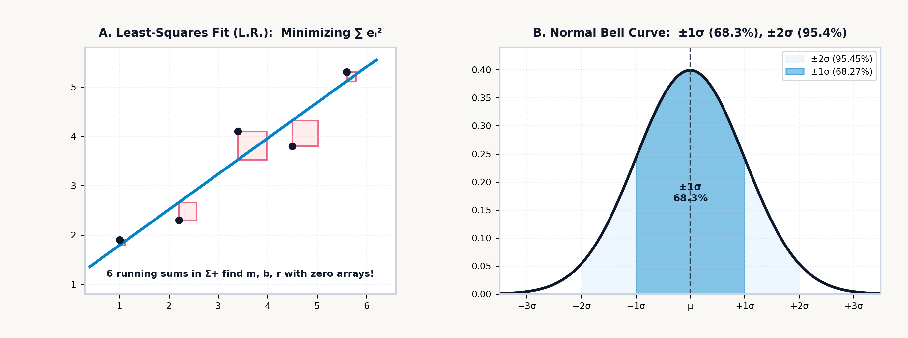
Physical CPA Studio Bridge (
Book 4 Unit 07— Fair-Weight Polyhedral Dice & 84.0 mm Comparator):
In the companion StackCalc High School & STEM Lab (Book 4, Unit 07), students generate empirical sampling distributions using the volume-equalized Fair-Weight Polyhedral Dice (d4–d20) and 10-sector probability spinner, then stack physical residual bars inside the \(84.0\text{ mm}\) Comparator Tray before logging bivariate pairs into the statistical accumulators. Seeing how shifting a physical line away from the sample centroid \((\bar{x}, \bar{y})\) inflates the squared residual squares makes Gauss's least-squares equations tactile and self-evident.
Gauss's least-squares straight line \(\hat{y} = m x + b\) (Figure 9.1) through \(n\) bivariate observations \((x_1, y_1), (x_2, y_2), \dots, (x_n, y_n)\) minimizes the sum of squared vertical residuals \(S(m, b) = \sum_{k=1}^n [y_k - (m x_k + b)]^2\). Setting the partial derivatives \(\frac{\partial S}{\partial b} = -2\sum(y_k - m x_k - b) = 0\) and \(\frac{\partial S}{\partial m} = -2\sum x_k(y_k - m x_k - b) = 0\) expresses the best-fit slope \(m\), vertical intercept \(b\), and Pearson product-moment correlation coefficient \(r \in [-1, +1]\) in terms of the sample standard deviations \(s_x, s_y\) and the sample covariance \(s_{xy} = \frac{1}{n-1}\sum_{k=1}^n (x_k - \bar{x})(y_k - \bar{y})\) (Gauss, 1809):
Both \(m\) and \(r\) are driven by the sample covariance \(s_{xy}\) (\(n\Sigma xy - \Sigma x\,\Sigma y = n(n-1)s_{xy}\)), which turns positive when above-average \(x_k\) pairs with above-average \(y_k\) and negative when one rises as the other falls. Normalizing \(s_{xy}\) by the horizontal variance \(s_x^2\) gives the physical rate of change \(m = s_{xy}/s_x^2\) (in units of \(\Delta y / \Delta x\)), while \(b = \bar{y} - m\bar{x}\) anchors the line through the data centroid \((\bar{x}, \bar{y})\).
Normalizing \(s_{xy}\) instead by the geometric mean of the horizontal and vertical spreads (\(s_x s_y\)) strips away physical units entirely, leaving Pearson's \(r = s_{xy}/(s_x s_y)\) as a dimensionless measure of linear alignment in \([-1, +1]\): \(r = +1\) denotes an exact positive linear law, \(r = -1\) an exact negative linear law, and \(r = 0\) zero linear covariance, while the coefficient of determination \(R^2 = r^2 \in [0, 1]\) measures the exact fraction of total vertical variance \(\sum(y_k - \bar{y})^2\) explained by the linear predictor \(\hat{y} = mx + b\). By the normal equations, a unique non-vertical line exists if and only if at least two entered \((x_k, y_k)\) pairs have distinct horizontal coordinates (\(\sigma_x > 0\)); if all points share the identical \(x\)-coordinate, they stack in a vertical column where \(n\Sigma x^2 - (\Sigma x)^2 = n^2\sigma_x^2\) vanishes.
In streaming least-squares estimation, the individual coordinates \((x_k, y_k)\) never need to be stored in an expanding table: the sample means, Bessel variances, covariance, slope \(m\), intercept \(b\), and correlation \(r\) are determined by six running sufficient statistics: \(\Sigma x, \Sigma y, \Sigma x^2, \Sigma y^2, \Sigma xy,\) and \(n\). Once a transducer is calibrated across reference standards, forward prediction evaluates the expected response \(\hat{y} = mx_0 + b\) at a known stimulus \(x_0\), while inverse prediction inverts the calibration line \(\hat{x} = (y_0 - b)/m\) (whenever \(m \ne 0\)) to recover an unknown physical stimulus from a measured sensor output \(y_0\).
Because a least-squares line is estimated from a finite sample of \(n\) noisy pairs—leaving a vertical residual standard error \(s_e = \sqrt{\frac{1}{n-2}\sum (y_k - \hat{y}_k)^2}\) around the line with \(n - 2\) degrees of freedom and a two-sided Student-\(t\) critical multiplier \(t_{\alpha/2,\,n-2}\)—the fitted line carries sampling uncertainty in both its centroid height \(\bar{y}\) and its tilt \(m\). Combining those independent error sources gives the pointwise confidence half-width \(E_{\text{mean}}(x_0)\) for the mean regression line \(\mathbb{E}[Y \mid x_0]\) and the wider prediction half-width \(E_{\text{pred}}(x_0)\) for a single future measurement \(y_{\text{new}}\) at \(x_0\):
Three independent variance contributions add inside the square root (each scaled by \(s_e^2\)): \(\frac{1}{n}\) captures the vertical uncertainty in the center height \(\bar{y}\) of the data cloud; \(\frac{(x_0 - \bar{x})^2}{(n-1)s_x^2}\) captures the lever-arm tilt uncertainty from the slope \(m\), which vanishes right at the centroid waist \(x_0 = \bar{x}\) and flares outward into a Working–Hotelling hyperbola as \(x_0\) moves toward the horizontal extremes; and the extra \(+1\) in \(E_{\text{pred}}(x_0)\) adds the baseline scatter \(1 \cdot s_e^2\) of a single new observation around the true regression line.
A linear least-squares engine also fits strongly curved physical laws whenever a smooth coordinate change straightens the curve. Across experimental science and engineering, four standard two-parameter regression models (linear, logarithmic, exponential, and power-law)—together with reciprocal and hyperbolic saturation laws—invert via logarithmic or reciprocal mappings: taking the natural logarithm \(\ln(\cdot)\) converts multiplication and exponentiation into addition, and taking the reciprocal \(1/(\cdot)\) turns a saturation ceiling into a linear intercept, transforming the curved trajectory into a line \(Y' = m X' + b\):
| Curve Model Family | Governing Physical Equation | Coordinate Transformation (\(Y', X'\)) | Linearized Equation (\(Y' = m X' + b\)) | Parameter Recovery from Slope \(m\) & Intercept \(b\) |
|---|---|---|---|---|
| 1. Linear | \(y = m x + b\) | \(Y' = y,\quad X' = x\) | \(y = m x + b\) | Slope \(= m\), Intercept \(= b\) |
| 2. Logarithmic | \(y = b + m \ln x\) | \(Y' = y,\quad X' = \ln x\) | \(y = m (\ln x) + b\) | Scale \(= m\), Offset \(= b\) |
| 3. Exponential | \(y = a e^{m x}\) | \(Y' = \ln y,\quad X' = x\) (Semi-Log) | \(\ln y = m x + \ln a\) | Rate \(= m\), Initial \(a = e^b\) |
| 4. Power | \(y = a x^m\) | \(Y' = \ln y,\quad X' = \ln x\) (Log-Log) | \(\ln y = m \ln x + \ln a\) | Exponent \(= m\), Scale \(a = e^b\) |
| 5. Reciprocal | \(\frac{1}{y} = m x + b\) | \(Y' = 1/y,\quad X' = x\) | \(y^{-1} = m x + b\) | Rate \(= m\), Ceiling \(y_0 = 1/b\) |
| 6. Hyperbolic | \(y = \frac{V_{\max} x}{K_m + x}\) | \(Y' = 1/y,\quad X' = 1/x\) (Lineweaver–Burk) | \(\frac{1}{y} = \frac{K_m}{V_{\max}}\frac{1}{x} + \frac{1}{V_{\max}}\) | \(V_{\max} = 1/b\), \(K_m = m \cdot V_{\max}\) |
Across science and engineering, these six coordinate transformations linearize integrated-circuit transistor doubling (Moore, 1965), the barometric altitude formula \(P(h) = P_0 e^{-h/H}\), radioactive decay \(A(t) = A_0 e^{-\lambda t}\), the Arrhenius chemical activation law \(k = A e^{-E_a/(RT)}\) (\(\ln k\) against \(1/T\)), and wind-turbine Betz cubic power scaling \(P = k v^3\) (\(\ln P\) against \(\ln v\)).
9.1.4 Enzyme Saturation Kinetics & Spectrophotometric Calibration
In biochemistry and analytical chemistry, nonlinear saturation curves and exponential optical attenuation reduce to linear calibration models in transformed coordinates.
Under steady-state enzyme kinetics (\(E + S \underset{k_{-1}}{\overset{k_1}{\rightleftharpoons}} ES \overset{k_{\text{cat}}}{\longrightarrow} E + P\)), the initial catalytic reaction velocity \(v_0\) follows a rectangular hyperbola across substrate molarity \([S]\) governed by the Michaelis–Menten equation, which straightens into a line when inverted on both axes:
The saturation ceiling \(V_{\max} = k_{\text{cat}}[E]_{\text{total}}\) represents the maximum turnover velocity when every catalytic site is occupied, while the Michaelis affinity constant \(K_m = (k_{-1} + k_{\text{cat}})/k_1\) marks the exact substrate concentration at which reaction velocity reaches half of that ceiling (\(v_0 = \frac{1}{2}V_{\max}\)). At trace substrate levels (\([S] \ll K_m\)), catalytic sites sit mostly vacant and reaction rate scales linearly with substrate as apparent first-order kinetics \(v_0 \approx (V_{\max}/K_m)[S]\); at high substrate excess (\([S] \gg K_m\)), every active site is occupied and \(v_0\) plateaus asymptotically at the zero-order ceiling \(V_{\max}\). For an assay with \(V_{\max} = 140\text{ }\mu\text{M/min}\) and \(K_m = 5\text{ mM}\) evaluated at \([S] = 15\text{ mM}\) (three times \(K_m\)), dividing \(V_{\max}[S] = 2,100\) by \(K_m + [S] = 20\text{ mM}\) yields an initial velocity of \(v_0 = \mathbf{105\text{ }\mu\text{M/min}}\) (exactly \(\frac{3}{4}V_{\max}\)).
To extract \(V_{\max}\) and \(K_m\) from experimental rate measurements via linear regression, taking the reciprocal of both sides (the Lineweaver–Burk double-reciprocal transformation) inverts the saturation hyperbola into a straight line of \(Y' = 1/v_0\) against \(X' = 1/[S]\), with vertical intercept \(b = 1/V_{\max}\) and slope \(m = K_m / V_{\max}\). When very low substrate readings carry large relative measurement noise—since \(\Delta(1/v_0) \approx -\Delta v_0 / v_0^2\) amplifies small-velocity errors—analysts cross-check using a regression of \(v_0\) against \(v_0/[S]\) or \([S]/v_0 = \frac{1}{V_{\max}}[S] + \frac{K_m}{V_{\max}}\), which weights high-signal measurements more evenly across the concentration range.
Often the substrate or product concentration \([S]\) in such kinetic assays is measured optically via the Beer–Lambert Law. Monochromatic light of incident intensity \(I_0\) passing through an absorbing medium of molar concentration \(c\) and cuvette path length \(b = \ell\) suffers exponential photon attenuation \(I = I_0 10^{-A}\), because each infinitesimal slice \(dx\) absorbs a constant fraction of the photons entering it (\(dI / I = -\ln(10)\varepsilon c\,dx\)), governed by the wavelength-specific molar absorptivity coefficient \(\varepsilon\). Laboratory spectrophotometry linearizes the exponential attenuation law \(I = I_0 10^{-\varepsilon b c}\) into a straight least-squares calibration line by taking the negative base-10 logarithm of optical transmittance \(T = I/I_0\) to define dimensionless decadic absorbance \(A\):
Just as double-reciprocal inversion (\(1/v_0\) vs. \(1/[S]\)) and log-log transformation (\(\ln y\) vs. \(\ln x\)) straighten hyperbolic and power-law kinetics, logging a series of reference concentrations \(c_k\) and measured absorbances \(A_k\) fits the calibration line \(A = (\varepsilon b)c + A_{\text{blank}}\) with slope \(m = \varepsilon b\) and reagent-blank intercept \(b_0 = A_{\text{blank}}\). In an enzymatic \(\text{NADH}\) assay monitored at \(\lambda = 340\text{ nm}\) with molar absorptivity \(\varepsilon = 6,220\text{ L}\cdot\text{mol}^{-1}\cdot\text{cm}^{-1}\) across a standard \(b = \ell = 1\text{ cm}\) quartz cuvette at concentration \(c = 8.5 \times 10^{-5}\text{ mol/L}\), the linear product \(\varepsilon b c\) gives an absorbance of \(A \approx \mathbf{0.529}\) (well within the \(A \in [0.1, 1.5]\) spectrophotometric window where stray light and shot noise are minimized), corresponding to an exponentially attenuated transmittance fraction of \(T = I/I_0 \approx 10^{-0.529} \approx \mathbf{0.296}\) (\(29.6\%\) transmitted light).
9.2 Small-Sample Inference, Rare Events & Diagnostic Uncertainty
Classical Gaussian error theory assumes hundreds or thousands of observations (\(n \to \infty\)), where the Bessel sample standard deviation \(s_x\) has converged so closely to the true population parameter \(\sigma\) that replacing \(\sigma\) with \(s_x\) inside \(z = \frac{\bar{x} - \mu}{\sigma / \sqrt{n}}\) introduces negligible error.
In destructive aerospace metallurgy, semiconductor pilot runs, clinical pharmacology, and industrial quality control, however, testing thousands of specimens is rarely possible; engineers routinely work with small experimental batches of \(n = 4\) to \(10\) samples. When \(n\) is small, the sample standard deviation \(s_x\) fluctuates randomly from batch to batch alongside the sample mean \(\bar{x}\). Whenever a small random sample happens by chance to cluster tightly together, \(s_x\) underestimates \(\sigma\) and inflates the quotient \(t = \frac{\bar{x} - \mu}{s_x / \sqrt{n}}\), causing extreme tail values to occur far more often than Gauss's unit normal distribution predicts.
Published in 1908 by William Sealy Gosset ("Student"), orthogonal spherical geometry in \(n\)-dimensional space accounts for the joint random fluctuation of \(\bar{x}\) and \(s_x\) across \(\nu = n - 1\) degrees of freedom (normalized to unit total probability area by Euler's Gamma function \(\Gamma(x) = \int_0^\infty u^{x-1}e^{-u}\,du\), the continuous extension of the factorial satisfying \(\Gamma(k+1) = k!\)) to yield the small-sample probability density of Student's \(t\)-distribution (Student, 1908):
The leading Gamma-function ratio normalizes the central peak so the integral over \((-\infty, +\infty)\) equals \(1\), while the algebraic factor \(\left(1 + \frac{t^2}{\nu}\right)^{-(\nu+1)/2}\) governs the heavy tails: unlike the Gaussian density \(e^{-z^2/2}\), whose tails decay super-exponentially, Student's \(t\)-density decays as a power law \(|t|^{-(\nu + 1)}\) to protect small-sample inference against lucky tight clusters in \(s_x\) (reducing at \(\nu = 1\) to the Cauchy–Lorentz resonance curve \(\frac{1}{\pi(1+t^2)}\) and converging smoothly back to the Gaussian bell curve \(\frac{1}{\sqrt{2\pi}}e^{-t^2/2}\) as \(\nu \to \infty\) via the compound-interest limit \(\lim_{\nu\to\infty}(1 + t^2/\nu)^{-\nu/2} = e^{-t^2/2}\)).
To test whether the observed sample means \(\bar{x}_1\) and \(\bar{x}_2\) of two small independent experimental groups of sizes \(n_1\) and \(n_2\) and Bessel standard deviations \(s_1\) and \(s_2\) differ significantly (as in ultimate tensile strength coupons of two candidate aerospace titanium alloys), Student's Two-Sample \(t\)-Test first combines the two sample variances into a pooled standard deviation \(s_p\) weighted by their respective degrees of freedom (\(\nu_1 = n_1 - 1\) and \(\nu_2 = n_2 - 1\), yielding \(\nu = n_1 + n_2 - 2\) total degrees of freedom):
Summing the squared deviations \((n_1 - 1)s_1^2 + (n_2 - 1)s_2^2\) from both groups and dividing by the combined degrees of freedom \(n_1 + n_2 - 2\) forms the pooled variance \(s_p^2\). The test statistic \(t\) then acts as a signal-to-noise ratio, comparing the observed separation between the two group averages (\(\bar{x}_1 - \bar{x}_2\)) against the standard error \(s_p\sqrt{1/n_1 + 1/n_2}\) expected from random sampling noise alone. When the two groups have markedly unequal variances (\(s_1^2 \ne s_2^2\)), the Welch–Satterthwaite unpooled statistic \(t = \frac{\bar{x}_1 - \bar{x}_2}{\sqrt{s_1^2/n_1 + s_2^2/n_2}}\) replaces the pooled standard error; for paired before-and-after measurements \((x_{1,k}, x_{2,k})\) on the same \(n\) specimens, accumulating the pairwise differences \(d_k = x_{1,k} - x_{2,k}\) eliminates specimen-to-specimen baseline variance and evaluates the single-sample paired ratio \(t = \frac{\bar{d}}{s_d / \sqrt{n}}\) with \(\nu = n - 1\) degrees of freedom.
9.2.1 Leverage, Error Propagation & the Weibull Bathtub Curve
Three geometric properties of least-squares projection and fatigue survival govern uncertainty analysis and hardware reliability.
First, every least-squares regression line \(\hat{y} = mx + b\) passes through the centroid \((\bar{x}, \bar{y})\) of the data cloud (\(\bar{y} = m\bar{x} + b\)), acting like a rigid mechanical beam balanced on a pin fulcrum at \((\bar{x}, \bar{y})\) and tethered by vertical Hookean springs of stiffness \(k\) to each observation \((x_i, y_i)\). Because torque equals force times lever arm \(|x_i - \bar{x}|\), any datum near the horizontal extremes exerts high statistical leverage \(h_{ii} = \frac{1}{n} + \frac{(x_i - \bar{x})^2}{(n-1)s_x^2}\) on the fitted slope \(m\) (often called the hat-value because it measures how strongly an observation at \(x_i\) pulls the fitted "hat" curve \(\hat{y}\)). In the degenerate two-point case (\(n = 2\)), each endpoint carries maximum leverage \(h_{11} = h_{22} = 1\), forcing the least-squares line to pass exactly through both points (\(r = \pm 1\)) with secant slope \(m = \frac{y_2 - y_1}{x_2 - x_1}\) and turning linear regression into an exact two-point forward and inverse linear interpolator for engineering steam, psychrometric, and standard-atmosphere lookup tables.
Once \(\hat{y} = mx + b\) is fitted across \(n\) pairs, the remaining vertical scatter around the line is measured by the residual standard error \(s_e = \sqrt{\frac{1}{n-2}\sum_{i=1}^n (y_i - \hat{y}_i)^2}\), where \(n - 2\) reflects the two degrees of freedom consumed in estimating both \(m\) and \(b\). By the Pythagorean orthogonality of the least-squares projection, the total sum of squares \((n-1)s_y^2\) decomposes into the explained regression fraction \(r^2\) and the unexplained residual fraction \((1 - r^2)\), allowing \(s_e\) and the standard error of the slope \(\text{SE}(m) = \frac{s_e}{s_x\sqrt{n-1}}\) to be evaluated from the statistical summary quantities without re-scanning the \(n\) points:
Early pocket calculators compressed an entire dataset into six sufficient summary sums (\(\Sigma x, \Sigma y, \Sigma x^2, \Sigma y^2, \Sigma xy, n\)) to compute means, Bessel standard deviations, and linear regression lines in six memory words, but they discarded the individual points \((x_k, y_k)\) the moment they were summed. If an experimenter later needed to plot the scatter cloud on a graphical canvas to check for curvature, or audit which specific measurement caused an unexpected outlier residual, the raw observations were gone. Retaining the individual sample values alongside the six sufficient statistics bridges classical summary accumulation and visual exploratory data analysis, allowing both algebraic moment queries and direct inspection or scatter plotting of the underlying points.
Second, when two noisy measurements \(X \pm \sigma_X\) and \(Y \pm \sigma_Y\) (with linear correlation \(r\)) are combined through a differentiable physical formula \(Z = g(X, Y)\), a small perturbation \(dX\) or \(dY\) shifts the output by Gauss's first-order Taylor differential \(dZ = \frac{\partial g}{\partial X}dX + \frac{\partial g}{\partial Y}dY\). Here the partial derivatives \(\frac{\partial g}{\partial X}\) and \(\frac{\partial g}{\partial Y}\) are the local sensitivity amplification factors—the slopes measuring how strongly the calculated output \(Z\) responds to small wiggles in \(X\) and \(Y\) respectively. Squaring \(dZ\) and averaging across the measurement noise yields the general Law of Error Propagation for the output variance \(\sigma_Z^2\):
Each input variance \(\sigma_X^2\) and \(\sigma_Y^2\) is weighted by the square of its local sensitivity slope, while the cross-term \(2\left(\frac{\partial g}{\partial X}\right)\left(\frac{\partial g}{\partial Y}\right)r\sigma_X\sigma_Y\) adds or subtracts their covariance interaction whenever noise in \(X\) and \(Y\) is correlated (\(r \ne 0\)). For uncorrelated sums and differences \(Z = X \pm Y\) (where \(\frac{\partial g}{\partial X} = 1,\; \frac{\partial g}{\partial Y} = \pm 1,\; r = 0\)), absolute uncertainties add in quadrature (\(\sigma_Z = \sqrt{\sigma_X^2 + \sigma_Y^2}\), matching the Euclidean hypotenuse of a right triangle with legs \(\sigma_X\) and \(\sigma_Y\)); for products and quotients \(Z = X^a Y^b\), relative uncertainties add in quadrature: \(\frac{\sigma_Z}{|Z|} = \sqrt{\left(a\frac{\sigma_X}{X}\right)^2 + \left(b\frac{\sigma_Y}{Y}\right)^2}\). When \(m\) independent sensors of unequal noise variances \(\sigma_1^2, \dots, \sigma_m^2\) measure the same physical quantity \(\mu\), the Gauss–Markov minimum-variance unbiased estimator weights each reading inversely by its error variance (\(w_i = 1/\sigma_i^2\)), yielding the weighted mean \(\bar{x}_w\) with combined fused uncertainty \(\sigma_{\text{fused}} = 1/\sqrt{\sum w_i}\).
Third, while radioactive decay and photon arrivals are memoryless, mechanical ball bearings, aircraft wing spars, and ceramic capacitors accumulate sub-surface cyclic fatigue damage as operating hours \(t\) increase. Derived from weakest-link extreme-value theory, the two-parameter Weibull survival distribution \(R(t)\) (Weibull, 1951) and instantaneous failure hazard rate \(h(t) = -\frac{d}{dt}\ln R(t)\) unify all three stages of the reliability bathtub curve via characteristic scale life \(\eta\) (the age at which \(e^{-1} \approx 36.79\%\) of units survive) and dimensionless shape modulus \(\beta\):
When \(\beta < 1\) (infant mortality / burn-in), latent manufacturing defects fail early and \(h(t)\) decreases with age; when \(\beta = 1\) (random external shocks), \(h(t) = 1/\eta\) is constant and recovers the memoryless exponential law \(R(t) = e^{-t/\eta}\); when \(\beta > 1\) (fatigue wear-out), \(h(t)\) accelerates with age. Inverting \(R(t_{p}) = 1 - p\) gives the \(B_{10}\) bearing rating life \(t_{0.1} = \eta [-\ln(0.9)]^{1/\beta}\) at which \(90\%\) of a fleet survives, while taking the double natural logarithm \(\ln[-\ln R(t)] = \beta \ln t - \beta \ln \eta\) linearizes empirical survival curves into a straight regression line.
9.2.2 Statistical Inference, Rare Events & Experimental Uncertainty
The transition from describing a finite dataset to predicting the behavior of an unseen physical process unites discrete probability, industrial quality control, and Bayesian inverse inference into a single quantitative framework.
When \(n\) independent, identically distributed binary trials each succeed with probability \(p \in [0, 1]\) and fail with probability \(q = 1 - p\), any specific ordered sequence of \(k\) successes and \(n - k\) failures occurs with product probability \(p^k(1 - p)^{n-k}\), and the binomial coefficient \(\binom{n}{k} = \frac{n!}{k!(n-k)!}\) counts how many distinct trajectories share that exact tally, with mean \(\mu = np\) and variance \(\sigma^2 = np(1 - p)\). In semiconductor yield auditing, if a wafer fabrication step carries a per-die defect probability of \(p = 0.25\) across \(n = 10\) test dies, there are \(\binom{10}{3} = 120\) distinct combinations of \(k = 3\) defective dies, and multiplying \(120 \times 0.25^3 \times 0.75^7\) gives a binomial probability of \(P(X = 3) \approx \mathbf{0.25}\) (\(25\%\)).
As the number of opportunities \(n\) in the binomial law grows large while the probability \(p\) of an event in any single micro-interval shrinks toward zero at a constant average arrival rate \(\lambda = np\), the binomial probability \(\binom{n}{k}p^k(1-p)^{n-k}\) converges to the Poisson distribution of rare, memoryless events:
Because a memoryless Poisson process has variance equal to its mean (\(\sigma^2 = \mu = \lambda\)), its root-mean-square fluctuation scales as \(\sqrt{\lambda}\)—the fundamental origin of photon shot noise in optical detectors, radioactive count scatter, cosmic-ray SRAM bit flips, and unscheduled packet arrivals at a network switch. For an avalanche photodiode receiving an average of \(\lambda = 4.2\text{ photons/ms}\), the probability of detecting exactly \(k = 3\) photons in a one-millisecond gate is \(4.2^3 e^{-4.2} / 3! \approx 74.088 \times 0.015 / 6 \approx \mathbf{0.185}\) (\(18.5\%\)).
When a scientist or quality engineer tests whether an empirical histogram of observed counts \(O_1, O_2, \dots, O_k\) across \(k\) categories obeys a hypothesized binomial, Poisson, or Gaussian distribution with expected counts \(E_1, E_2, \dots, E_k\) (and \(p\) distribution parameters such as \(\lambda\), \(\mu\), or \(\sigma\) estimated from the sample itself), the Chi-Square (\(\chi^2\)) Goodness-of-Fit Test sums the squared count discrepancies normalized by each cell's expected variance \(E_i\) across \(\nu = k - 1 - p\) degrees of freedom:
Dividing each squared count discrepancy \((O_i - E_i)^2\) by that cell's expected Poisson variance \(E_i\) places high-count and low-count categories on an equal standardized scale, while the degrees of freedom \(\nu = k - 1 - p\) deduct one constraint for the fixed total sample size \(\sum O_i = \sum E_i = N\) and \(p\) constraints for the fitted parameters.
In industrial manufacturing, statistical process control separates natural, random common-cause noise from actionable assignable-cause mechanical faults. Adjusting a stable lathe after every random common-cause fluctuation (tampering) doubles output variance, while \(\pm 3\sigma_{\bar{x}}\) Shewhart control limits isolate genuine tool wear or fixture slip. To bound the population mean within a confidence margin \(E\) using the two-sided normal critical multiplier \(z_{\alpha/2}\) (\(z_{0.025} \approx 1.96\) for \(95\%\) confidence), and to compare a machine's natural sample spread \(s\) and process center \(\bar{x}\) against engineering blueprint tolerances—the Upper and Lower Specification Limits (\(\text{USL}\) and \(\text{LSL}\))—Six Sigma metrology pairs the potential capability index \(C_p\) with the off-center capability index \(C_{pk}\):
Think of driving a car of width \(6s\) (the \(\pm 3s\) natural spread encompassing \(99.73\%\) of parts) through a garage doorway of total tolerance width \(\text{USL} - \text{LSL}\). The potential capability \(C_p = \frac{\text{USL} - \text{LSL}}{6s}\) compares the doorway width against the \(6s\) car width—telling you whether the car could fit if steered dead center—whereas the actual capability \(C_{pk}\) takes the distance from the off-center process mean \(\bar{x}\) to the nearer doorway wall (\(\text{USL} - \bar{x}\) or \(\bar{x} - \text{LSL}\)) and divides by the \(3s\) half-car width to measure how close the fender is to scraping the nearer wall.
Because the standard error of the mean shrinks as \(s/\sqrt{n}\) in \(E = z_{\alpha/2}\frac{s}{\sqrt{n}}\), quadrupling the sample size \(n\) is required to halve the uncertainty margin \(E\) (for \(n = 49\) alloy tensile specimens with \(s = 8.4\text{ MPa}\) and \(95\%\) normal quantile \(z_{0.025} \approx 1.96\), the standard error is \(8.4 / 7 = 1.2\text{ MPa}\) and the \(95\%\) confidence half-width is \(E \approx \mathbf{2.352\text{ MPa}}\)). In precision grinding where \(\text{USL} = 10.05\text{ mm}\), \(\text{LSL} = 9.95\text{ mm}\), \(\bar{x} = 10.01\text{ mm}\), and \(s = 0.01\text{ mm}\), the distance to the nearer upper boundary is \(\text{USL} - \bar{x} = 0.04\text{ mm}\), yielding \(C_{pk} = 0.04 / (3 \times 0.01) \approx \mathbf{1.333}\), which meets the \(\pm 4\sigma\) (\(63\text{ ppm}\) defect rate) industrial acceptance benchmark.
Finally, when an automated inspection station or clinical assay screens for a true underlying condition \(A\) (such as a sub-surface crack, occurring with prior prevalence \(P(A)\) while defect-free parts \(A'\) make up the complement \(P(A') = 1 - P(A)\)) and flags a part with a positive alarm \(B\), interpreting that alarm requires inverting the detector's true-positive sensitivity \(P(B \mid A)\) and false-positive rate \(P(B \mid A')\) via Bayes's Theorem:
Bayes's fraction divides the true-alarm rate \(P(B \mid A)P(A)\)—the fraction of all parts that are both genuinely defective and trigger an alarm—by the total alarm rate \(P(B \mid A)P(A) + P(B \mid A')P(A')\), which pools true alarms with the false alarms generated by the defect-free majority. This ratio exposes the counterintuitive base-rate fallacy: when ultrasonic non-destructive testing screens turbine blades for a rare sub-surface crack of prior prevalence \(P(A) = 0.01\) (\(P(A') = 0.99\)) using a detector with \(99\%\) true-positive sensitivity (\(P(B \mid A) = 0.99\)) and a \(5\%\) false-positive rate (\(P(B \mid A') = 0.05\)), true-positive alarms occur across \(0.99 \times 1\% = 0.99\%\) of all blades, while false alarms from the vast defect-free population occur across \(0.05 \times 99\% = 4.95\%\) of all blades. Dividing \(0.99\%\) by the total alarm rate \(0.99\% + 4.95\% = 5.94\%\) reveals that a flagged blade has only a \(P(A \mid B) \approx \mathbf{16.7\%}\) posterior probability of carrying an actual crack until confirmed by a secondary orthogonal scan.
9.3 Six Sufficient Statistics: Calibration and Inference on the Stack
An entire dataset of \(n\) paired observations \((x_k, y_k)\) reduces without loss of linear-regression information to six running sums (\(\Sigma x, \Sigma y, \Sigma x^2, \Sigma y^2, \Sigma xy, n\)). Because those six first- and second-order moments form a complete set of sufficient statistics for Gaussian means, Bessel variances, and linear least squares, the SC-32 links the live four-register stack (X, Y, Z, T) to six 64-bit hardware accumulators in indirect memory—sample count \(n\) (R28), linear totals \(\Sigma x\) (R29) and \(\Sigma y\) (R30), sums of squares \(\Sigma x^2\) (R31) and \(\Sigma y^2\) (R32), and cross-product \(\Sigma xy\) (R33)—so means, standard deviations, and inverse calibration estimates can be queried without re-entering data arrays:
- Resetting, Logging, & Inspecting Observations (
[↰] [CLEAR],[Σ+],[↰] [Σ-],[↰] [REGS]): Pressing[↰] [CLEAR]offers[CLSTAT]([CLΣ]) to zero all six statistical registers (R28–R33) and clear the raw data log. When logging a bivariate observation \((x_k, y_k)\), placing the vertical response \(y_k\) into Register \(Y\) and the horizontal predictor \(x_k\) into Register \(X\) before pressing[Σ+]aligns the display registers \((Y, X)\) with the \((y, x)\) axes of the coordinate plane, displays the updated sample count \(n\) in Register \(X\) with stack lift disabled (leaving the priorLASTXregister undisturbed), and records up to 50 individual sample values inDATA0–DATA49(indirect slotsR40–R89, inspectable read-only via[↰] [REGS]\(\to\)DATA, and plotted in the companion app via[↱] [PLOT]whenΣ+data is present with no stored equations;PLOTis excluded from physical hardware firmware by design for examination compliance). - Statistical Softkey Menus (
[↱] [SUMS],[↱] [x̄,ȳ],[↱] [s,σ],[↱] [L.R.]): Accessed via Right Shift[↱]across the top scientific row—[↱] [SUMS]on[Σ+],[↱] [x̄,ȳ]on[yˣ],[↱] [s,σ]on[1/x], and[↱] [L.R.]on[LN]—the four statistical menus remap the six top-row softkey slots (Slot 1throughSlot 6):
| Sub-Menu | Physical Key | Slot 1 |
Slot 2 |
Slot 3 |
Slot 4 |
Slot 5 |
Slot 6 |
|---|---|---|---|---|---|---|---|
1. Sums ([↱] [SUMS]) |
[Σ+] |
\(\Sigma x\) | \(\Sigma y\) | \(\Sigma x^2\) | \(\Sigma y^2\) | \(\Sigma xy\) | \(n\) |
2. Means ([↱] [x̄,ȳ]) |
[yˣ] |
\(\bar{x}\) | \(\bar{y}\) | \(\bar{x}_w\) | — | — | — |
3. Std Dev ([↱] [s,σ]) |
[1/x] |
\(s_x\) | \(s_y\) | \(\sigma_x\) | \(\sigma_y\) | — | — |
4. Regression ([↱] [L.R.]) |
[LN] |
\(\hat{y}\) | \(\hat{x}\) | \(r\) | \(m\) | \(b\) | — |
If a keystroke slip on the sixth data pair \((x = 15, y = 3.5)\) transposes \(y\) into \((x = 15, y = 5.3)\) when the sample count is \(n = 6\), staging \((Y = 5.3, X = 15)\) and pressing Σ- (left-shifted on Σ+) removes the erroneous point from all six accumulators (decrementing \(n\) to \(5\)) so the corrected pair \((Y = 3.5, X = 15)\) can be spliced in with Σ+ without disturbing the first five observations. Following HP-32SII statistical stack-lift semantics (HP, 1991), [Σ+] and [↰] [Σ-] leave stack lift disabled when writing the sample count \(n\) into Register \(X\). Consequently, the first statistical softkey tapped immediately after [Σ+]—whether x̄, ȳ, or x̄w in x̄,ȳ, sx, sy, σx, or σy in s,σ, r, m, or b in L.R., or any accumulator in SUMS—overwrites the sample count \(n\) in Register \(X\) and enables stack lift. Tapping a second statistical softkey (such as ȳ right after x̄, or sy right after sx) then lifts the first statistic into Register \(Y\) and places the second statistic in Register \(X\), while [ŷ] and [x̂] consume the stimulus \(x_0\) or response \(y_0\) in Register \(X\) to return the linear prediction \(\hat{y}(x_0)\) or \(\hat{x}(y_0)\) in Register \(X\).
9.3.1 Univariate & Weighted Accumulation: Sensor Fusion and Six Sigma Control
In observatory astrometry and shop-floor metrology, these weighted-mean and process-capability estimators feed into subsequent stack arithmetic.
For inverse-variance weighted sensor fusion (\(\bar{x}_w = \Sigma xy / \Sigma y\)), three observatory instruments measure an astrometric parallax angle—\(x_1 = 10\text{ mas}\), \(x_2 = 25\text{ mas}\), and \(x_3 = 45\text{ mas}\)—with inverse-variance precision weights \(w_i = 1/\sigma_i^2\) equal to \(w_1 = 40\), \(w_2 = 60\), and \(w_3 = 20\text{ mas}^{-2}\). Clearing the accumulators and loading each weight \(w_i\) into Register \(Y\) and measurement \(x_i\) into Register \(X\) before accumulating stores \(\Sigma(w_i x_i) = 2,800\) inside R33 (\(\Sigma xy\)) and \(\Sigma w_i = 120\) inside R30 (\(\Sigma y\)). Querying \(\bar{x}_w\) from the means menu returns the minimum-variance fused estimate \(\bar{x}_w = \frac{\Sigma xy}{\Sigma y} = \frac{2800}{120} \approx \mathbf{23.333\text{ mas}}\), while querying \(\Sigma y\) from the sums menu recalls the combined precision weight \(\mathbf{120\text{ mas}^{-2}}\), whose reciprocal square root gives the fused standard error \(\sigma_{\text{fused}} = 1/\sqrt{120} \approx \mathbf{0.091\text{ mas}}\).
In a CNC grinding cell producing bearing shafts specified at \(25 \pm 0.1\text{ mm}\) (\(\text{LSL} = 24.9\text{ mm}\), \(\text{USL} = 25.1\text{ mm}\)), accumulating ten measured shaft diameters (\(25.02, 25.04, 25.01, 25.03, 25.05, 25.02, 25, 25.04, 25.03,\) and \(25.06\text{ mm}\)) yields a sample mean of \(\bar{x} = \mathbf{25.03\text{ mm}}\) and a Bessel sample standard deviation of \(s_x \approx \mathbf{0.018\text{ mm}}\) (or, by shift-invariance \(s_{x-c} = s_x\), accumulating only the hundredths of a millimeter \(2, 4, 1, 3, 5, 2, 0, 4, 3, 6\) yields \(\bar{d} = 3\) and \(s_d \approx 1.826\), corresponding to the unrounded \(s_x = s_d / 100 \approx 1.826 \times 10^{-2}\text{ mm}\) in Register \(X\), in half the keystrokes while avoiding floating-point cancellation). Dividing the \(0.2\text{ mm}\) tolerance width by \(6s_x\) (using the unrounded \(s_x\) in Register \(X\)) gives a potential capability of \(C_p \approx \mathbf{1.826}\), while comparing \(\bar{x} = 25.03\text{ mm}\) against the closer upper limit \(\text{USL} = 25.1\text{ mm}\) via \((\text{USL} - \bar{x})/(3s_x)\) gives \(C_{pk} \approx \mathbf{1.278}\).
That divergence between \(C_p \approx 1.826\) and \(C_{pk} \approx 1.278\) provides an immediate shop-floor diagnosis: the lathe spindle is mechanically tight enough for Six Sigma production (\(C_p > 1.33\)), but thermal tool growth has shifted the process center \(+0.03\text{ mm}\) toward the upper limit, which calls for a \(-0.03\text{ mm}\) tool-offset compensation rather than a spindle rebuild. For a Shewhart \(\bar{X}\)-chart centered at \(\bar{\bar{X}} = 50\text{ mm}\) with subgroup range \(\bar{R} = 0.4\text{ mm}\) and \(n = 5\) subgroup factor \(A_2 \approx 0.577\), the control half-width is \(A_2\bar{R} \approx 0.231\text{ mm}\), placing the Lower and Upper Control Limits at \(\text{LCL} \approx \mathbf{49.769\text{ mm}}\) and \(\text{UCL} \approx \mathbf{50.231\text{ mm}}\) (where recalling the preserved last operand recovers the half-width \(0.231\) after subtracting from \(50\) so doubling and adding steps straight from \(\text{LCL}\) to \(\text{UCL}\)).
9.3.2 Bivariate Linear Calibration: Pressure Transducers and Working–Hotelling Bands
The four dead-weight calibration points of a piezoresistive pressure sensor—\(10\text{ kPa}\) at \(1.25\text{ V}\), \(20\text{ kPa}\) at \(2.45\text{ V}\), \(30\text{ kPa}\) at \(3.8\text{ V}\), and \(40\text{ kPa}\) at \(4.95\text{ V}\)—establish the standard bivariate \((Y = y_k,\; X = x_k)\) entry and linear regression workflow on the stack:
| Keystroke | Register T | Register Z | Register Y | Register X | What Happens on the Stack |
|---|---|---|---|---|---|
[CLΣ] 1.25 [ENTER] 10 [Σ+] |
\(0\) | \(0\) | \(1.25\) | \(1\) | Clear accumulators; log Point 1 (\(10\text{ kPa}, 1.25\text{ V};\; n = 1\)) |
2.45 [ENTER] 20 [Σ+] |
\(0\) | \(1.25\) | \(2.45\) | \(2\) | Log Point 2 (\(20\text{ kPa}, 2.45\text{ V};\; n = 2\)) |
3.8 [ENTER] 30 [Σ+] |
\(1.25\) | \(2.45\) | \(3.8\) | \(3\) | Log Point 3 (\(30\text{ kPa}, 3.8\text{ V};\; n = 3\)) |
4.95 [ENTER] 40 [Σ+] |
\(2.45\) | \(3.8\) | \(4.95\) | \(4\) | Log Point 4 (\(40\text{ kPa}, 4.95\text{ V};\; n = 4\)) |
[↱] [L.R.] [m] |
\(2.45\) | \(3.8\) | \(4.95\) | \(0.125\) | Slope \(m \approx 0.125\text{ V/kPa}\) overwrites \(n = 4\) in \(X\) (lift neutral after Σ+) |
25 [↱] [L.R.] [ŷ] 4 [↱] [L.R.] [x̂] |
\(4.95\) | \(0.125\) | \(3.113\) | \(32.129\) | Forward \(\hat{y}(25) \approx 3.113\text{ V}\) in \(Y\); inverse \(\hat{x}(4) \approx 32.129\text{ kPa}\) in \(X\) |
Once those four pairs are committed, the six accumulators hold \(\Sigma x = 100\), \(\Sigma y = 12.45\), \(\Sigma x^2 = 3,000\), \(\Sigma y^2 \approx 46.508\), \(\Sigma xy = 373.5\), and \(n = 4\). Querying the linear regression menu yields a transducer sensitivity slope of \(m \approx \mathbf{0.125\text{ V/kPa}}\), a zero-pressure intercept of \(b = \mathbf{0\text{ V}}\), and a Pearson correlation of \(r \approx \mathbf{1}\) (\(R^2 \approx 0.999\), explaining \(99.9\%\) of variance). Evaluating forward prediction \(\hat{y}\) at \(x_0 = 25\text{ kPa}\) forecasts a sensor output of \(\approx \mathbf{3.113\text{ V}}\), and evaluating inverse prediction \(\hat{x}\) at a measured output of \(y_0 = 4\text{ V}\) lifts \(3.113\text{ V}\) into Register \(Y\) while recovering the unknown line pressure \(\approx \mathbf{32.129\text{ kPa}}\) in Register \(X\).
At the four-point transducer centroid waist \(x_0 = \bar{x} = 25\text{ kPa}\), where the \((x_0 - \bar{x})^2\) tilt term of the Working–Hotelling hyperbolic envelope vanishes, the residual standard error \(s_e \approx 0.058\text{ V}\) and two-sided Student-\(t\) critical quantile \(t_{0.025, 2} \approx 4.303\) give a mean-line confidence margin of \(E_{\text{mean}} = t_{0.025,2} \cdot s_e / \sqrt{4} \approx \mathbf{0.125\text{ V}}\) (\(3.113 \pm 0.125\text{ V}\)), while \(E_{\text{pred}} = t_{0.025,2} \cdot s_e \sqrt{1 + 1/4} = \sqrt{5}\,E_{\text{mean}}\) gives the single-observation prediction margin \(E_{\text{pred}} \approx \mathbf{0.28\text{ V}}\) (\(3.113 \pm 0.28\text{ V}\)).
Because any two points determine an exact secant line with \(r = \pm 1\), logging two adjacent saturated-steam table rows (\(T_1 = 110^\circ\text{C}\) at \(P_1 = 143.27\text{ kPa}\) and \(T_2 = 120^\circ\text{C}\) at \(P_2 = 198.53\text{ kPa}\)) with \((Y = P,\; X = T)\) turns \(\hat{y}\) and \(\hat{x}\) into a reusable two-point table interpolator: querying \(\hat{y}\) at \(T = 114^\circ\text{C}\) interpolates \(P = \mathbf{165.374\text{ kPa}}\), while querying \(\hat{x}\) at \(P = 180\text{ kPa}\) inverts the table to \(T \approx \mathbf{116.647^\circ\text{C}}\) without re-entering the table bounds.
9.3.3 Spectrophotometric Inverse Prediction & Nonparametric Rank Correlation
In analytical and environmental chemistry, inverse regression (\(\hat{x}\)) applies to Beer–Lambert UV-Vis spectrophotometry (\(A = \varepsilon b C + A_{\text{blank}}\)). When a water-quality chemist calibrates a \(b = 1\text{ cm}\) cuvette at \(\lambda = 510\text{ nm}\) across four iron(II)–phenanthroline standards—\(C_1 = 1\text{ mg/L}\) (\(A_1 = 0.198\)), \(C_2 = 2\text{ mg/L}\) (\(A_2 = 0.395\)), \(C_3 = 3\text{ mg/L}\) (\(A_3 = 0.594\)), and \(C_4 = 4\text{ mg/L}\) (\(A_4 = 0.791\))—accumulation of each \((A_i, C_i)\) pair confirms Beer's law linearity (\(r \approx \mathbf{1}\), absorptivity slope \(m \approx \mathbf{0.198\text{ L/mg}}\), blank offset \(b_0 \approx \mathbf{0}\)) and inverts an unknown groundwater sample's absorbance \(A_{\text{unk}} = 0.465\) to \(\hat{C} \approx \mathbf{2.351\text{ mg/L}}\).
When variables are ordinal rankings or follow a monotonic nonlinear relationship, Spearman's rank correlation coefficient \(r_s = 1 - \frac{6\sum d_i^2}{n(n^2 - 1)}\) evaluates Pearson's correlation across the integer ranks \((R_{x,i}, R_{y,i})\) with rank discrepancies \(d_i = R_{x,i} - R_{y,i}\). Across \(n = 5\) ceramic coatings ranked on Mohs scratch hardness versus wear lifetime with rank differences \(d = (1, -1, 2, -1, -1)\), the squared discrepancies sum to \(\sum d_i^2 = 1 + 1 + 4 + 1 + 1 = 8\)—well below the uncorrelated expectation \(n(n^2 - 1)/6 = 20\) (\(r_s = 0\)) and the antipodal reversal sum \(n(n^2 - 1)/3 = 40\) (\(r_s = -1\)). Dividing the numerator \(6\sum d_i^2 = 48\) by \(n(n^2 - 1) = 5(24) = 120\) isolates the discordance penalty \(0.4\), and subtracting from unity yields Spearman's rank correlation \(r_s = \mathbf{+0.6}\).
9.3.4 Bell Curves, Small-Sample \(t\)-Tests & Survival Odds
For the Gaussian Normal PDF \(f(x; \mu, \sigma) = \frac{1}{\sigma\sqrt{2\pi}}\exp\!\left(-\frac{(x-\mu)^2}{2\sigma^2}\right)\) at \(x = 115\) with \(\mu = 100\) and \(\sigma = 15\) (\(z = +1\), one standard deviation above the mean), postfix evaluation parks the intermediate exponential factor in the upper registers \(Z\) and \(T\) while the lower registers build the normalization denominator. First, squaring the deviation \((115 - 100)^2 = 225\), dividing by \(2\sigma^2 = 450\), and exponentiating \(-0.5\) leaves the unnormalized bell height \(e^{-0.5} \approx 0.607\) in Register \(X\). Staging \(\sigma = 15\), \(2\), and \(\pi\) then lifts \(e^{-0.5}\) into Registers \(Z\) and \(T\) while \(\sigma\sqrt{2\pi} \approx 37.599\) forms in Register \(X\), so a single division delivers \(f(115; 100, 15) \approx \mathbf{0.016}\) (and multiplying by \(\sigma = 15\) recovers the unit normal height \(\phi(1) \approx \mathbf{0.242}\), Figure 9.2).
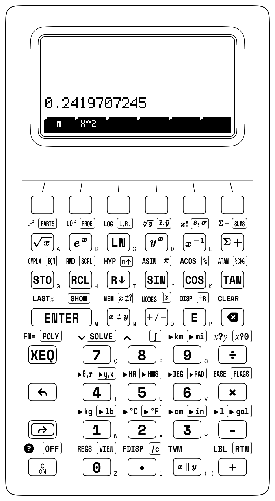
To evaluate the cumulative normal integral \(\Phi(1) = 0.5 + \frac{1}{\sqrt{2\pi}}\int_0^{1} e^{-t^2/2}\,dt\) via numerical quadrature, recall that the left half of the symmetric bell curve from \(-\infty\) to \(0\) encloses an exact area of \(0.5\). Integrating the unnormalized kernel \(e^{-x^2/2}\) from \(a = 0\) to \(b = 1\) yields \(\approx 0.856\); dividing by \(\sqrt{2\pi} \approx 2.507\) isolates the half-bell area \(\approx 0.341\) from the mean to \(+1\sigma\), and adding \(0.5\) gives \(\Phi(1) \approx \mathbf{0.841}\) (\(84.1\%\), while doubling the central slice \(2 \times 0.341 \approx \mathbf{0.683}\) confirms the \(\pm 1\sigma\) Empirical Rule of \(68.27\%\)).
In Student's Two-Sample \(t\)-Test (\(\nu = n_1 + n_2 - 2 = 16\)) comparing Titanium Alloy A (\(n_1 = 8\) coupons, \(\bar{x}_1 = 450\text{ MPa}\), \(s_1 = 12.5\text{ MPa}\)) against Alloy B (\(n_2 = 10\) coupons, \(\bar{x}_2 = 468\text{ MPa}\), \(s_2 = 14\text{ MPa}\)), Alloy A's sum of squared deviations \((n_1 - 1)s_1^2 = 7(12.5^2) = 1,093.75\text{ MPa}^2\) combines with Alloy B's \((n_2 - 1)s_2^2 = 9(14^2) = 1,764\text{ MPa}^2\) to form \(2,857.75\text{ MPa}^2\). Dividing by \(\nu = 16\) and taking the square root yields the pooled standard deviation \(s_p \approx \mathbf{13.365\text{ MPa}}\) (weighted \(9:7\) toward the larger 10-coupon batch). Multiplying \(s_p\) by \(\sqrt{1/8 + 1/10} \approx 0.474\) gives the two-sample standard error \(\text{SE} \approx \mathbf{6.339\text{ MPa}}\), and dividing the mean difference \(\bar{x}_1 - \bar{x}_2 = -18\text{ MPa}\) by \(\text{SE}\) yields \(t \approx \mathbf{-2.839}\), which exceeds the two-sided \(95\%\) critical threshold \(t_{0.025, 16} \approx 2.12\) in magnitude and confirms that Alloy B's higher tensile strength is statistically significant.
For a high-speed spindle bearing operating at \(t = 3,000\text{ hr}\) with Weibull characteristic life \(\eta = 5,000\text{ hr}\) and wear-out shape modulus \(\beta = 1.8 > 1\), the normalized age is \(t/\eta = 0.6\), its Weibull hazard power is \((0.6)^{1.8} \approx 0.399\), and the survival probability is \(R(3,000) \approx \exp(-0.399) \approx \mathbf{0.671}\) (\(67.1\%\) survival, or \(32.9\%\) cumulative failure risk).
9.3.5 Coordinate-Transformed Curve Fitting: Power Laws, Kinetics & Activation Energy
Under the log-log transformation (\(\ln P = m\ln v + \ln k\)) for the wind-turbine power law \(P = kv^m\) across four wind-tunnel test points—\((v_1 = 4\text{ m/s}, P_1 = 16\text{ kW})\), \((6, 54)\), \((8, 128)\), and \((10, 250)\)—both output power \(P\) and wind speed \(v\) transform via the natural logarithm on the stack before accumulating each pair. Because executing a unary operator like the natural logarithm or reciprocal terminates digit entry and arms automatic stack lift, typing the horizontal coordinate \(v_i\) after taking \(\ln P_i\) lifts \(\ln P_i\) into Register \(Y\), so taking \(\ln v_i\) and accumulating logs the transformed pair \((\ln v_i, \ln P_i)\) with no intervening ENTER keystroke. Across those four wind-tunnel points, querying the regression slope recovers the exact Betz cubic exponent \(m = \mathbf{3}\), while exponentiating the intercept \(b \approx -1.386\) recovers the aerodynamic scale constant \(k = e^b = \mathbf{0.25\text{ kW/(m/s)}^3}\), forecasting \(P(12) = 0.25 \times 12^3 = \mathbf{432\text{ kW}}\) at \(v = 12\text{ m/s}\).
In a double-reciprocal Lineweaver–Burk enzyme assay (\(1/v_0\) vs. \(1/[S]\)) across four substrate-velocity pairs \(([S]_k, v_k)\) of \((2\text{ mM}, 0.182\text{ }\mu\text{M/min})\), \((4, 0.286)\), \((8, 0.4)\), and \((16, 0.471)\), inverting each reaction velocity \(v_k\) and substrate molarity \([S]_k\) into its reciprocal prior to accumulation yields a reciprocal intercept of \(b = 1/V_{\max} \approx 1.576\) (\(V_{\max} = 1/b \approx \mathbf{0.635\text{ }\mu\text{M/min}}\)) and a slope of \(m = K_m/V_{\max} \approx 7.798\), recovering the half-saturation Michaelis constant \(K_m = m \cdot V_{\max} \approx \mathbf{4.948\text{ mM}}\).
Semi-log radioactive decay fits (\(\ln A(t)\) against untransformed time \(t\)) extract the decay constant \(\lambda = -m\) (\(\lambda \approx \mathbf{0.116\text{ hr}^{-1}}\) and clinical half-life \(t_{1/2} = \ln 2 / \lambda \approx \mathbf{6\text{ hr}}\) for technetium-99m) and initial activity \(A_0 = e^b\), while pairing \(\ln k\) with reciprocal absolute temperature \(1/T\) linearizes the Arrhenius chemical rate law \(k = A\exp(-E_a / RT)\) so that multiplying the negated slope \(-m = E_a / R\) by the universal gas constant \(R \approx 8.314\text{ J/(mol}\cdot\text{K)}\) recovers the molar activation energy barrier \(E_a\).
9.3.6 Try It on the Stack
- Michaelis–Menten Enzyme Velocity via Last-Argument Reuse: For an enzyme assay with \(V_{\max} = 120\,\mu\text{M/min}\) and \(K_m = 4.2\text{ mM}\) at substrate concentration \(c = 8.5\text{ mM}\), evaluate \(v_0 = \frac{V_{\max}c}{K_m + c}\) by forming \(120 \times 8.5 = 1,020\), recalling \(c = 8.5\) via
LASTXto add \(K_m = 4.2\), and dividing. (Verified Register \(X\) result: \(v_0 \approx \mathbf{80.315\,\mu\text{M/min}}\).) - Poisson Rare-Event Arrival Probability: Evaluate the Poisson probability \(P(X = 6) = \frac{\lambda^6 e^{-\lambda}}{6!}\) for an optical receiver averaging \(\lambda = 4.5\text{ photons/gate}\) by raising \(\lambda = 4.5\) to the \(6\text{th}\) power, recalling \(6\) from
LASTXto take its factorial \(6! = 720\) and divide, and multiplying by \(e^{-4.5}\). (Verified Register \(X\) result: \(P(X = 6) \approx \mathbf{0.128}\), or \(12.812\%\).) - Symmetric \(95\%\) Confidence Interval Bounds: For a sample mean \(\bar{x} = 84.625\text{ MPa}\) with standard error \(s_{\bar{x}} = 1.35\text{ MPa}\) and normal quantile \(z = 1.96\), subtract the margin \(E = 1.96 \times 1.35 = 2.646\text{ MPa}\) from \(\bar{x}\) to obtain the lower confidence bound, then restore \(E\) via
LASTX, double it, and add to step to the upper bound. (Verified Register \(X\) results: lower bound \(\mathbf{81.979\text{ MPa}}\) and upper bound \(\mathbf{87.271\text{ MPa}}\).)
Chapter 10: Boolean Logic, Two's Complement & the 36-Bit Word
In the summer of 1937, twenty-one-year-old MIT master's student Claude Elwood Shannon stood in the basement of MIT's electrical engineering department tending Vannevar Bush's Differential Analyzer alongside hundreds of brass gears and electromechanical telephone relays (Shannon, 1938). That hundred-ton mechanical analog computer used spinning steel shafts, wheel-and-disc integrators, and mechanical torque amplifiers to integrate differential equations through physical rotation. Beneath the display glass of a digital calculator, however, a silicon processor contains no continuous slide-rule scales or spinning shafts—only microscopic switches that are either ON or OFF.
Every time a physicist or ballistician brought a new system of differential equations to the MIT laboratory, Shannon had to configure two distinct subsystems: the continuous mechanical shafts of the differential analyzer, and a complex switching panel of over one hundred electromechanical telephone relays that controlled its clutches, limit switches, and safety interlocks. How could an array of two-state switches represent signed integers, floating-point mantissas, and error-corrected messages?
10.1 Positional Radices, Boolean Switching Algebra & the 36-Bit Word
While wiring those telephone relays in series and in parallel, Shannon recognized the exact algebraic structure of two-valued Boolean logic over \(\{0, 1\}\). If a proposition or signal line is true (asserted), it carries the value \(1\); if it is false (unasserted), it carries the value \(0\). Combining two statements with logical conjunction (AND) behaves like algebraic multiplication (\(1 \cdot 1 = 1\), while \(1 \cdot 0 = 0 \cdot 1 = 0 \cdot 0 = 0\)); combining them with inclusive disjunction (OR) behaves like saturating addition (\(1 + 0 = 1\) and \(1 + 1 = 1\), governed by the idempotent laws \(A + A = A\) and \(A \cdot A = A\)); and negating a statement with NOT inverts \(1 \leftrightarrow 0\) (\(\overline{1} = 0,\; \overline{0} = 1\)), linked by De Morgan's duality identities:
Before the racks of clicking telephone relays in the MIT basement, Shannon established the exact mathematical isomorphism between physical switching networks and Boolean algebra. Two relay contacts wired in series conduct electrical current only if Switch A is closed AND Switch B is closed (\(A \cdot B\)). Two contacts wired in parallel conduct current if Switch A is closed OR Switch B is closed (\(A + B\)). A normally closed relay contact that opens when its electromagnet coil is energized acts as a physical NOT inverter (\(\overline{A}\)). Every open or closed switch was a physical realization of two-valued Boolean algebra—and because any integer can be represented in base-2 binary digits using only the symbols \(1\) and \(0\), networks of logical switches could add, subtract, compare, and store numbers electronically.
In his 1937 MIT master's thesis, A Symbolic Analysis of Relay and Switching Circuits (Shannon, 1938), Shannon proved that any logical decision or arithmetic rule can be synthesized from binary switching gates. Eleven years later, in his 1948 Bell Laboratories paper A Mathematical Theory of Communication, Shannon completed this digital revolution by proving that all communication and computation can be measured in binary digits—bits—governed by laws of source entropy and channel capacity. Every microprocessor, memory array, packet router, and spacecraft guidance computer built since traces its digital architecture to Shannon's unification of binary numbers, Boolean algebra, and electrical switching circuits.
10.1.1 Building Binary Adders, Universal Gates & Carry-Lookahead Trees
A digital logic circuit performs integer arithmetic in silicon by adding single binary bits \(A \in \{0, 1\}\) and \(B \in \{0, 1\}\). When adding \(A + B\) in base \(2\), the circuit produces a two-bit result consisting of a Carry bit \(C_{\text{out}}\) (weighted in the twos column, \(2^1 = 2\)) and a Sum bit \(S\) (weighted in the ones column, \(2^0 = 1\)). When \(A = 0\) and \(B = 0\), the binary sum is \(00_2\) (\(C_{\text{out}} = 0,\; S = 0\)); when \(A = 0, B = 1\) or \(A = 1, B = 0\), the sum is \(01_2\) (\(C_{\text{out}} = 0,\; S = 1\)); and when \(A = 1\) and \(B = 1\), the binary sum is \(1 + 1 = 2_{10} = 10_2\), generating a carry into the \(2^1\) column (\(C_{\text{out}} = 1\)) while wrapping the \(2^0\) sum column back to \(0\) (\(S = 0\)).
Those two output columns map one-to-one onto elementary Boolean gates:
| Input Bit \(A\) | Input Bit \(B\) | Carry Bit \(C_{\text{out}}\) (\(2^1\) Column) | Sum Bit \(S\) (\(2^0\) Column) | Boolean Gate Synthesis |
|---|---|---|---|---|
0 |
0 |
0 |
0 |
Neither switch closed \(\implies 00_2 = 0\) |
0 |
1 |
0 |
1 |
Odd parity (XOR \(= 1\), AND \(= 0\)) \(\implies 01_2 = 1\) |
1 |
0 |
0 |
1 |
Odd parity (XOR \(= 1\), AND \(= 0\)) \(\implies 01_2 = 1\) |
1 |
1 |
1 |
0 |
Both closed (AND \(= 1\), XOR \(= 0\)) \(\implies 10_2 = 2\) |
The Carry column is 1 if and only if both \(A\) AND \(B\) are 1 (\(C_{\text{out}} = A \cdot B\)). The Sum column is 1 if and only if \(A\) or \(B\) is 1, but not both, which matches the truth table of the Exclusive-OR (XOR, \(S = A \oplus B = A\overline{B} + \overline{A}B\), addition modulo \(2\)) gate. Wiring one XOR gate and one AND gate side by side across the same two input wires forms a physical Half-Adder.
To add multi-bit binary words column by column from right to left, each bit position \(k\) above Bit \(0\) must add three binary wires: the two operand bits \(A_k\) and \(B_k\) plus an incoming carry bit \(C_{\text{in}}\) arriving from column \(k - 1\). A first half-adder combines \(A_k\) and \(B_k\) into a local carry-generate signal \(G_k = A_k \cdot B_k\) (meaning column \(k\) creates a carry of its own even if \(C_{\text{in}} = 0\)) and a carry-propagate parity signal \(P_k = A_k \oplus B_k\) (meaning exactly one of \(A_k, B_k\) is 1, so an incoming carry \(C_{\text{in}} = 1\) will pass through to the next column). Cascading a second half-adder to fold \(C_{\text{in}}\) into \(P_k\) and joining both carry paths with an OR gate forms a Full-Adder with sum output \(S_k\) and carry output \(C_{\text{out}}\):
The three-way XOR chain \(A_k \oplus B_k \oplus C_{\text{in}}\) asserts \(S_k = 1\) whenever an odd number of input wires (\(1\) or \(3\)) are high, while \(C_{\text{out}}\) goes high either when column \(k\) generates a carry internally (\(A_k \cdot B_k = 1\)) or when an incoming carry \(C_{\text{in}} = 1\) arrives across an odd-parity pair (\(A_k \oplus B_k = 1\)). In a simple 36-bit ripple-carry adder, a carry born at Bit \(0\) must ripple sequentially through all \(36\) full-adders before Bit \(35\) settles. Expanding the recurrence \(C_{k+1} = G_k + P_k C_k\) into a parallel Carry-Lookahead Adder (CLA) tree computes all \(36\) carries in \(O(\log_2 w)\) gate levels so a 36-bit arithmetic logic unit (ALU) adds ten-digit integers in a single clock cycle.
A silicon foundry does not need to fabricate separate AND, OR, NOT, and XOR transistor cells. By De Morgan's duality laws, either the NAND gate (\(A \uparrow B = \overline{A \cdot B}\)) or the NOR gate (\(A \downarrow B = \overline{A + B}\)) is functionally complete, so every Boolean function and adder circuit can be built from a single gate type (NOT A \(= A \uparrow A\), A AND B \(= (A \uparrow B) \uparrow (A \uparrow B)\), and A OR B \(= (A \uparrow A) \uparrow (B \uparrow B)\)).
Aerospace engineers used this universality to build the Block II Apollo Guidance Computer out of \(5,600\) identical 3-input NOR integrated circuits, so that a single hyper-reliable silicon component could be radiation-screened and flight-qualified across the spacecraft. In hexadecimal arithmetic across a 16-bit register mask (FFFFh), De Morgan's complement duality \(\overline{A + B} = \overline{A} \cdot \overline{B}\) holds nibble by nibble: for two disjoint bitmasks \(A = \mathtt{0F00h}\) and \(B = \mathtt{003Ch}\), their bitwise union is \(A \mid B = \mathtt{0F3Ch}\), and inverting against FFFFh (FFFFh - 0F3Ch) yields \(\overline{A \mid B} = \mathtt{F0C3h}\), equal to the intersection of their individual complements \(\overline{A} = \mathtt{F0FFh}\) and \(\overline{B} = \mathtt{FFC3h}\) (F0FFh - 003Ch = F0C3h).
10.1.2 Powers of Two in Disguise: Hexadecimal, Gray Codes & ASCII
The integer 255 takes four distinct written forms across the standard positional bases—255 in decimal, 11111111b in binary, 377o in octal, and FFh in hexadecimal—even though all four character strings represent the identical binary bit pattern in hardware.
In positional notation, the decimal integer \(1,042_{10}\) (Decimal, radix \(b = 10\)) is a polynomial in powers of \(10\) that evaluates from the most significant digit downward by Horner's nested recurrence:
Base \(10\) reflects ten-finger counting, not a requirement of arithmetic. Building an electronic circuit that reliably distinguishes ten intermediate analog voltage levels (\(0\text{ V}, 0.5\text{ V}, 1\text{ V}, \dots, 4.5\text{ V}\)) is vulnerable to thermal drift, cosmic-ray charge injection, and resistor aging. Instead, digital circuits operate bistably between two saturated states: cutoff OFF (\(0\)) and saturation ON (\(1\)). In Binary (radix \(b = 2\)), each column \(k\) from right to left carries positional weight \(2^k\) (\(2^0 = 1,\; 2^1 = 2,\; 2^2 = 4,\; 2^3 = 8,\; 2^4 = 16,\; \dots\)):
Although base-2 binary matches bistable transistor hardware, inspecting a 36-bit binary word like 000011000000101010000000101000101101b overwhelms human visual working memory. Computer architects compress raw binary bit strings into compact human-readable notation without dividing by \(10\) by adopting radices that are exact integer powers of two: Octal (OCT, base \(b = 8 = 2^3\)) and Hexadecimal (HEX, base \(b = 16 = 2^4\)).
Because \(8 = 2^3\), each octal digit (0 through 7) represents an exact 3-bit triad (000 through 111), so converting between binary and octal requires only partitioning the bit string into 3-bit groups from right to left. Because \(16 = 2^4\), each hexadecimal digit represents an exact 4-bit nibble (0000 through 1111), using digits 0–9 for values \(0\)–\(9\) and the letters A (\(10\)), B (\(11\)), C (\(12\)), D (\(13\)), E (\(14\)), and F (\(15\)) for the remaining six patterns. Two hexadecimal digits side by side (00h through FFh) pack an exact 8-bit byte (\(2^8 = 256\) values from \(0\) to \(255\)):
Decimal (DEC) |
4-Bit Binary Nibble (BIN) |
Octal (OCT) |
Hexadecimal (HEX) |
Positional Power Decomposition |
|---|---|---|---|---|
0 |
0000b |
0o |
0h |
\(0\) (all 4 nibble bits OFF) |
5 |
0101b |
5o |
5h |
\(4 + 1 = 2^2 + 2^0\) |
7 |
0111b |
7o |
7h |
\(4 + 2 + 1 = 2^3 - 1\) (maximum 3-bit octal triad) |
8 |
1000b |
10o |
8h |
\(2^3\) (carries into second octal column) |
10 |
1010b |
12o |
Ah |
\(8 + 2 = 2^3 + 2^1\) |
12 |
1100b |
14o |
Ch |
\(8 + 4 = 2^3 + 2^2\) |
15 |
1111b |
17o |
Fh |
\(8 + 4 + 2 + 1 = 2^4 - 1\) (all 4 nibble bits ON) |
Hexadecimal reduces binary bit inspection to immediate visual translation. When inspecting the 16-bit hexadecimal word 3C6Ah, the four nibbles expand from left to right as 3h \(= 2 + 1 = \mathtt{0011}\), Ch (\(12_{10}\)) \(= 8 + 4 = \mathtt{1100}\), 6h \(= 4 + 2 = \mathtt{0110}\), and Ah (\(10_{10}\)) \(= 8 + 2 = \mathtt{1010}\), concatenating to 0011 1100 0110 1010b.
When converting into or out of an arbitrary positional radix \(b\) (such as base-\(12\) duodecimal, base-\(36\) alphanumeric serial codes, or base-\(60\) sexagesimal), two dual mathematical algorithms apply. First, Horner's forward recurrence expands any \(m\)-digit string \((d_{m-1} d_{m-2}\dots d_1 d_0)_b\) into decimal as \(((d_{m-1} b + d_{m-2})b + \cdots + d_1)b + d_0\) by multiplying by \(b\) and adding the next digit from left to right. Second, repeated Euclidean division converts a decimal integer \(N\) into base \(b\): since \(N = Q_0 \cdot b + d_0\), dividing \(N\) by \(b\) extracts the least-significant digit \(d_0 = N \bmod b\) as the remainder and leaves the reduced quotient \(Q_0 = \lfloor N / b \rfloor\) for the next division. Dividing the decimal serial ID \(44,255_{10}\) twice by \(36\) peels off remainders \(d_0 = 11\) ('B'), \(d_1 = 5\) ('5'), and final quotient \(d_2 = 34\) ('Y'), encoding \(44,255 = 34 \times 36^2 + 5 \times 36^1 + 11 \times 36^0 = \mathbf{\mathtt{Y5B}_{36}}\).
Standard positional binary has a physical hazard on electromechanical rotary shaft encoders: when a shaft rotates across the midpoint from \(7_{10}\) (0111b) to \(8_{10}\) (1000b), all four binary brushes must switch at once. If the mechanical contacts toggle microseconds apart, the encoder transiently outputs spurious codes like 1111b (\(15\)) or 0000b (\(0\)). The Reflected Binary Code (Gray code) eliminates this hazard by ordering the \(2^n\) binary words so that adjacent integers differ in exactly one bit position (unit Hamming distance, \(d_H = 1\)—the same unit-distance ordering 00, 01, 11, 10 used on the rows and columns of Karnaugh logic maps). Writing \(B \gg 1 = \lfloor B / 2 \rfloor\) for a 1-bit logical right shift of a standard binary integer \(B\) and indexing individual bit columns by \(k\) from right to left, binary-to-Gray encoding and Gray-to-binary decoding follow a pair of reciprocal XOR identities:
Shifting \(B\) right by one bit slides each upper bit \(B_{k+1}\) into column \(k\), so the bitwise XOR sets Gray bit \(G_k = B_k \oplus B_{k+1}\) to 1 whenever adjacent binary bits \(B_{k+1}\) and \(B_k\) differ. When \(B\) increments by \(1\), binary addition flips a trailing run of 1s to 0s and turns the single 0 immediately above them into a 1; every interior bit pair inside that carry chain keeps the same neighbor-difference state, so only the top boundary bit changes in \(G\). Conversely, XORing each Gray bit \(G_k\) with the already-recovered higher binary bit \(B_{k+1}\) from most-significant bit downward unwraps those neighbor differences back into positional binary. At the transition \(7_{10} \to 8_{10}\), \(7_{10} = \mathtt{0111b}\) maps to \(G(7) = \mathtt{0111b} \oplus \mathtt{0011b} = \mathtt{0100b}\) (4h), while \(8_{10} = \mathtt{1000b}\) maps to \(G(8) = \mathtt{1000b} \oplus \mathtt{0100b} = \mathtt{1100b}\) (Ch), changing only Bit 3 (0100b to 1100b) with zero transient ambiguity.
The American Standard Code for Information Interchange (ASCII) likewise aligns its 7-bit character table (00h–7Fh) on power-of-two bit boundaries. Every ASCII decimal numeral '0' through '9' (30h through 39h) packs the high nibble 3h (0011b) above its exact 4-bit Binary-Coded Decimal (BCD) value 0h–9h, so subtracting 30h (or taking the remainder modulo 10h) strips the ASCII prefix to yield the raw integer \(0\)–\(9\). Uppercase Latin letters ('A'–'Z' = 41h–5Ah) and lowercase letters ('a'–'z' = 61h–7Ah) sit at identical alphabet offsets (1h through 1Ah) separated solely by Bit 5 (\(2^5 = 32_{10} = \mathtt{20h}\)): adding 20h converts 'A' (41h) to 'a' (61h), subtracting 20h folds 'z' (7Ah) back to 'Z' (5Ah), and subtracting 40h maps uppercase letters onto control codes ('C' - 40h = 03h, Ctrl-C).
10.1.3 The 36-Bit Word Architecture & Hardware Boundary Guards
While commodity microprocessors organize registers in multiples of 8-bit bytes (32 or 64 bits wide), scientific mainframes (such as the IBM 7090 and DEC PDP-10) and the HP-32SII standardized on the 36-bit word for its number-theoretic divisibility and ten-digit decimal range.
In arithmetic, \(36 = 2^2 \times 3^2\) is a highly composite integer divisible by \(1, 2, 3, 4, 6, 9, 12,\) and \(18\). A 32-bit word divides evenly into eight 4-bit hexadecimal nibbles (\(32 = 8 \times 4\)) but leaves a 2-bit orphan when grouped into 3-bit octal triads (\(32 = 10 \times 3 + 2\)); a 36-bit word is the smallest practical computer word that divides with zero remainder into both twelve 3-bit octal digits (\(36 = 12 \times 3\)) and nine 4-bit hexadecimal nibbles (\(36 = 9 \times 4\)), as well as two symmetric 18-bit half-words (\(36 = 2 \times 18\)) or six 6-bit alphanumeric characters (\(36 = 6 \times 6\)).
A signed 32-bit two's-complement integer also overflows at \(+2^{31} - 1 = +2,147,483,647\) (fewer than ten full decimal digits, and unable to hold an unsigned 32-bit IPv4 broadcast address 0xFFFFFFFF \(= 4,294,967,295\) without colliding with Sign Bit 31 and turning negative as \(-1\)). A 36-bit integer word, by contrast, places its MSB sign boundary four bit positions higher at Bit 35 (0 for non-negative integers \(0\) to \(+2^{35}-1\), 1 for negative integers \(-2^{35}\) to \(-1\)). Every 32-bit unsigned memory address, IPv4 netmask (0xFFFFFFFF), or IEEE-754 single-precision word sits inside Bits 31–0 as a non-negative integer, while the three upper headroom bits (Bits 34–32, providing \(8\times\) capacity above 32 bits) absorb left-shifts, 16-bit and 32-bit checksum carries, and Euclidean division without premature sign-bit truncation:
10.1.4 Two's-Complement Odometer Arithmetic, Bitwise Masks & Euclid's Ladder
Because a silicon register contains only bistable switches that are 1 (ON) or 0 (OFF), representing signed negative integers requires encoding the algebraic sign inside the bit pattern itself.
Early computer architectures tried two preliminary encodings: Sign-Magnitude (reserving the leftmost bit as a \(\pm\) sign flag while leaving the lower bits as ordinary magnitude) and One's Complement (inverting every bit to negate a number, \(\overline{X}\)). Both schemes suffer from two hardware drawbacks: they create two distinct bit patterns for zero (+0 and -0, requiring extra comparator gates to test \(X = 0\)), and adding a positive number to a negative number requires either switching between separate adder and subtractor circuits or wiring an end-around carry loop.
Modular arithmetic over the ring \(\mathbb{Z}/2^w\mathbb{Z}\) resolves both flaws so that an ordinary binary adder combines positive and negative integers through the same gate network. On a 4-digit mechanical bicycle odometer set to 0000 miles, modular wrap-around encodes negative values without a separate sign wheel. Riding forward \(1\text{ mile}\) advances the rightmost wheel to 0001; rolling the wheel backward one mile from 0000 (\(0 - 1 = -1\)) wraps all four number wheels backward one click from 0 to 9 so the window reads 9999. Rolling backward two miles (\(-2\)) reads 9998, and rolling backward three miles (\(-3\)) reads 9997 (\(10^4 - 3\)).
From 9997 (representing \(-3\)), riding forward \(5\text{ miles}\) (\(+5\)) advances the wheels through 9998, 9999, 0000 (where the fifth-digit carry 1 spills off the left end of the 4-digit window), 0001, and finally 0002. By encoding \(-3\) as \(10^4 - 3 = 9997\), ordinary forward addition (\(9997 + 0005 = \cancel{1}0002 \equiv \mathbf{0002} \pmod{10^4}\)) computes \((-3) + 5 = +2\) with zero subtraction circuitry.
In binary hardware, that odometer wrap-around is Two's Complement arithmetic (Parker, 2019). On a 36-bit binary odometer (000000000h in nine-nibble hexadecimal), rolling forward from 000000000h (\(0\)) counts upward through all positive 36-bit integers up to 7FFFFFFFFh (\(+2^{35} - 1 = +34,359,738,367\)), where Bit 35 is 0 and all 35 lower bits are 1. Adding 1 to 7FFFFFFFFh propagates a ripple carry through all 35 lower bits into Bit 35 (800000000h), crossing the signed 36-bit overflow seam (\(-2^{35}\) in a wrapped 36-bit register, or \(+34,359,738,368\) in an unclipped 64-bit accumulator). Rolling backward one click from 0 (\(0 - 1 = -1\)) turns every bit to 1 (FFFFFFFFFh across a 36-bit mask). Because adding any integer \(X\) to its bitwise logical inverse \(\overline{X}\) (NOT X, where every 0 flips to 1 and every 1 flips to 0) produces a 1 in every column (FFFFFFFFFh \(\equiv -1\)), the exact additive inverse \(-X\) is obtained by inverting every bit and adding \(1\):
Across a 32-bit unsigned word (FFFFFFFFh), the bitwise NOT of \(5\) is \(\overline{5} = \mathtt{FFFFFFFFh} - \mathtt{5h} = \mathtt{FFFFFFFAh}\), and adding \(1\) yields the 32-bit two's-complement representation of \(-5\) as \(\mathtt{FFFFFFFBh}\). In silicon, an adder becomes a subtractor when the subtrahend \(X\) passes through XOR inverter gates controlled by a Subtract line and the initial carry-in bit is asserted (\(C_{\text{in}} = 1\)).
In elementary arithmetic, dividing \(12,345\) by \(16\) produces an integer quotient of \(771\) and an integer remainder of \(9\), governed by Euclidean Division (\(N = Q \cdot D + R\), with \(0 \le R < D\)). In computer science, dividing a binary integer \(N\) by a power of two \(D = 2^k\) via Euclidean division cleaves the binary word in two at bit boundary \(k\): the integer quotient \(Q = \lfloor N / 2^k \rfloor\) performs a logical right bit-shift (\(N \gg k\)) that slides all upper bits from Bit \(k\) downward to Bit \(0\) while discarding the lower \(k\) bits, and the integer remainder \(R = N \bmod 2^k\) performs a bitwise AND low-bit mask (\(N \ \& \ (2^k - 1)\)) that isolates the exact, unshifted value of the lower \(k\) bits (Bits \(k-1\) down to \(0\)).
Repeated Euclidean division also computes the Greatest Common Divisor \(\operatorname{GCD}(a, b)\) of two integers. When a digital signal processor runs one clock domain at \(a = 1,071\text{ MHz}\) and another at \(b = 462\text{ MHz}\), any common divisor of \(a\) and \(b\) also divides the remainder \(R = a \bmod b\) from Euclidean division. Stepping down Euclid's Remainder Ladder (\(1071 = 2 \times 462 + 147 \longrightarrow 462 = 3 \times 147 + 21 \longrightarrow 147 = 7 \times 21 + 0\)) reveals the last non-zero remainder \(\operatorname{GCD}(1071, 462) = \mathbf{21}\), while the Least Common Multiple \(\operatorname{LCM}(a, b) = \frac{|a \cdot b|}{\operatorname{GCD}(a, b)} = \mathbf{23,562}\) determines the exact phase-realignment cycle of the two clocks.
In modular congruence arithmetic (\(a \equiv b \pmod m\)), Euclidean remainders satisfy the multiplicative rule (Gauss, 1809): \((a \cdot b) \bmod m = ((a \bmod m)(b \bmod m)) \bmod m\). Combined with binary exponentiation by squaring, modular reduction extracts the exact trailing decimal digits (\(m = 10^k\)) or cryptographic residue of a giant power \(a^n\) without overflowing a 36-bit integer or 53-bit significand: to find the last three digits of \(7^8 = 5,764,801\) modulo \(m = 1,000\), squaring \(7^2 = 49\), squaring again to \(49^2 = 2,401 \equiv 401 \pmod{1,000}\), and squaring the reduced residue \(401^2 = 160,801 \equiv \mathbf{801} \pmod{1,000}\) keeps every intermediate value below \(10^6\).
10.2 Information Theory, Channel Capacity & Silicon Scaling Laws
Eleven years after his 1937 switching thesis, Claude Shannon published A Mathematical Theory of Communication (1948) at Bell Telephone Laboratories, proving that information itself is a measurable physical quantity governed by probability and thermodynamics. Whenever a discrete source emits symbols from an alphabet \(\{x_1, x_2, \dots, x_m\}\) with probabilities \(p_1, p_2, \dots, p_m\), the average information content per symbol is Shannon's Source Entropy \(H(X) = -\sum_{i=1}^m p_i \log_2 p_i\) (in bits per symbol). When a biased binary telemetry sensor emits normal status frames with probability \(p_1 = 0.75\) and fault frames with probability \(p_2 = 0.25\), its source entropy is \(H(X) = -(0.75\ln 0.75 + 0.25\ln 0.25)/\ln 2 \approx \mathbf{0.811\text{ bits/symbol}}\), establishing that lossless prefix coding can compress the stream by \(\approx 18.9\%\) below \(1\text{ bit/symbol}\) without losing any telemetry events.
10.2.1 Nyquist Sampling, Shannon–Hartley Capacity & Hamming Error Control
Continuous analog waveforms and discrete digital codes transmitted over a copper wire, an optical fiber, or a deep-space radio link are linked by three fundamental conservation laws of bandwidth, thermal noise, and geometric distance.
An ideal low-pass communication channel of analog bandwidth \(B\) can transmit at most \(2B\) independent pulse samples per second without intersymbol interference. By the Nyquist–Shannon Sampling Theorem, reconstructing a bandlimited analog signal containing frequencies up to \(f_{\max}\) without loss of information requires an analog-to-digital converter (ADC) to sample at a clock rate \(f_s\) strictly above twice the highest frequency component, defining the Nyquist folding boundary \(f_{\text{Nyquist}}\) and the aliased frequency \(f_{\text{alias}}\) whenever an input signal \(f_{\text{sig}}\) is beat against the nearest integer multiple \(k f_s\) of the sampling clock:
Whenever an analog sensor signal contains a high-frequency vibration component \(f_{\text{sig}}\) above the Nyquist folding boundary \(f_s / 2\)—the electronic counterpart of the cinema wagon-wheel strobe effect—discrete sampling cannot distinguish rapid forward phase rotation from a slower beat against the nearest harmonic \(k f_s\), folding the tone across \(f_{\text{Nyquist}}\) into the baseband as a phantom low-frequency alias \(f_{\text{alias}} = |f_{\text{sig}} - k f_s|\) (for example, sampling a \(f_{\text{sig}} = 700\text{ Hz}\) turbine blade harmonic on a \(f_s = 1,000\text{ Hz}\) data-acquisition channel folds it across \(f_{\text{Nyquist}} = 500\text{ Hz}\) with \(k = 1\) to masquerade as a \(f_{\text{alias}} = |700 - 1,000| = \mathbf{300\text{ Hz}}\) oscillation).
Random thermal agitation of electrons in a receiver at absolute temperature \(T\) (with Boltzmann's constant \(k_B \approx 1.381 \times 10^{-23}\text{ J/K}\)) generates a white thermal noise power floor \(N = k_B T B\) across bandwidth \(B\), limiting how many distinguishable voltage levels (bits per sample) a received signal of power \(S\) (often specified in decibels as \(\text{SNR}_{\text{dB}} = 10\log_{10}(S/N)\)) can carry before adjacent levels blur together. In his 1948 paper, Shannon solved this problem via high-dimensional sphere-packing geometry, proving the Shannon–Hartley Channel Capacity Theorem for the maximum error-free bit rate \(C\):
Total received power combines the signal \(S\) with independent thermal noise \(N\), giving a total-to-noise power ratio of \(\frac{S + N}{N} = 1 + \frac{S}{N}\) (and a root-mean-square voltage ratio of \(\sqrt{1 + S/N}\)), so \(\log_2(1 + S/N)\) counts how many binary bits of resolution can be packed into each cycle of bandwidth \(B\) without noise spheres overlapping. Across any channel of bandwidth \(B\) and linear signal-to-noise ratio \(S/N\), there exists an error-correcting code capable of transmitting \(C\) bits per second with arbitrarily small error probability, and no physical modulation scheme can ever exceed \(C\). Because bandwidth \(B\) scales capacity linearly outside the logarithm while signal power \(S\) sits trapped inside \(\log_2(1 + S/N)\), spacecraft telemetry links and spread-spectrum radios trade wider RF bandwidth for exponentially lower transmit power, approaching the ultimate thermodynamic Shannon limit of energy per bit to noise spectral density \(E_b / N_0 = \ln 2 \approx 0.693\) (\(\approx -1.59\text{ dB}\)) as \(B \to \infty\). On a \(B = 20\text{ MHz}\) wireless channel operating at linear \(S/N = 31\) (\(\approx 14.91\text{ dB}\)), the spectral efficiency is \(\log_2(1 + 31) = \log_2(32) = 5\text{ bits/(s}\cdot\text{Hz)}\), establishing a maximum error-free channel capacity of \(C = 20\text{ MHz} \times 5 = \mathbf{100\text{ Mbps}}\).
To approach Shannon's capacity limit in hardware, error-correcting codes separate valid \(n\)-bit codewords in binary space by their Hamming distance \(d_H(A, B) = \operatorname{popcount}(A \oplus B)\)—the number of bit positions in which two words differ. Achieving single-bit error detection requires minimum codeword distance \(d_{\min} = 2\); achieving Single-Error Correction (SEC) requires \(d_{\min} = 3\) so every single-bit error lies inside a unique unit sphere around its true codeword; and adding an overall parity bit yields \(d_{\min} = 4\) (Single-Error Correction, Double-Error Detection, SEC-DED), the standard of ECC server DRAM (\(64\) data bits + \(8\) parity bits \(= 72\text{ bits}\)). In the Hamming \((7, 4)\) code, three parity bits \((p_1, p_2, p_4)\) occupy the power-of-two bit positions \(1, 2,\) and \(4\), while four data bits \((d_3, d_5, d_6, d_7)\) occupy the composite positions \(3, 5, 6,\) and \(7\), forming three overlapping even-parity syndrome checks \((s_1, s_2, s_4)\):
Each parity equation XORs the exact subset of codeword positions whose 3-bit binary index \(j \in \{1,\dots,7\}\) has that power-of-two bit set: \(s_1\) checks all positions with Bit \(0\) (\(2^0 = 1\)) set (\(1 = 001_2,\; 3 = 011_2,\; 5 = 101_2,\; 7 = 111_2\)), \(s_2\) checks all positions with Bit \(1\) (\(2^1 = 2\)) set (\(2 = 010_2,\; 3 = 011_2,\; 6 = 110_2,\; 7 = 111_2\)), and \(s_4\) checks all positions with Bit \(2\) (\(2^2 = 4\)) set (\(4 = 100_2,\; 5 = 101_2,\; 6 = 110_2,\; 7 = 111_2\)). Consequently, a single cosmic-ray bit flip at position \(j\) spoils only the parity checks whose powers of two sum to \(j\) (for example, position \(5 = 4 + 1\) trips \(s_4 = 1\) and \(s_1 = 1\) while leaving \(s_2 = 0\)), so the 3-bit syndrome \(S = (s_4 s_2 s_1)_2\) directly spells out the binary address \(j\) of the corrupted bit. If the valid codeword for data nibble 1011b is 1010101b (55h) and Bit 5 flips to 0 (1000101b \(= \mathtt{45h}\)), the syndrome evaluates to \(S = (101)_2 = \mathbf{5}\), identifying Bit 5 (55h - 45h = 10h \(= 2^{5-1}\)) so adding 10h restores 55h in a single operation.
Whereas Hamming ECC guards parallel memory buses against independent single-bit flips, serial networks (Ethernet, PCIe, CAN bus, USB) guard against multi-bit burst errors using a Cyclic Redundancy Check (CRC). A CRC treats an \(m\)-bit frame as a polynomial \(M(x)\) over the two-element Galois field \(\operatorname{GF}(2)\)—where each bit is a polynomial coefficient and addition is carry-free XOR—and appends the \(r\)-bit remainder \(R(x) = \bigl(M(x)\cdot x^r\bigr) \bmod G(x)\) modulo an irreducible generator polynomial \(G(x)\).
10.2.2 The Physics and Scaling Laws of Silicon Architecture
Beneath the abstract truth tables of Boolean gates lie four physical and architectural scaling laws—semiconductor junction electrodynamics, capacitive CMOS switching power, memory-hierarchy locality, and Amdahl's parallel bottleneck—that govern how Shannon's bits are switched and stored in silicon.
At the transistor level, every solid-state switch relies on the Shockley Semiconductor Diode Law, derived from Boltzmann minority-carrier injection and diffusion across a \(p\)-\(n\) depletion region. When an external bias voltage \(V_D\) is applied across a junction with reverse saturation drift current \(I_S\) and emission ideality factor \(n \in [1, 2]\) at absolute temperature \(T\), the electrostatic barrier competes against the characteristic thermal voltage \(V_T = k_B T / q\) (Boltzmann's thermal energy \(k_B T\) divided by the elementary electron charge \(q \approx 1.602 \times 10^{-19}\text{ C}\), or \(V_T \approx 25.852\text{ mV}\) at room temperature \(T = 300\text{ K}\)) to govern the net junction current \(I_D\):
Applying a forward bias \(V_D > 0\) lowers the \(p\)-\(n\) junction potential barrier relative to the thermal energy scale \(n V_T\), allowing an exponentially growing population of thermally excited charge carriers to surmount the barrier and diffuse across the junction as \(I_S \exp(V_D / nV_T)\), while \(-I_S\) subtracts the small reverse-saturation drift current that remains when \(V_D < 0\) raises the barrier and chokes off forward diffusion. Under forward bias (\(V_D \gg V_T\)), carrier injection grows exponentially with a subthreshold slope of \(\ln(10) n V_T \approx 59.5\text{ mV}\) per decade of current (\(n = 1\)): at \(V_D = 0.65\text{ V}\), \(n = 1\), \(V_T \approx 25.85\text{ mV}\), and \(I_S = 10^{-12}\text{ A}\), the thermal ratio is \(V_D / (nV_T) \approx 25.145\) and the Boltzmann factor \(10^{-12}[\exp(25.145) - 1]\) yields a forward current of \(I_D \approx \mathbf{0.083\text{ A}}\) (\(83.25\text{ mA}\)). Biasing two matched silicon junctions at a fixed current-density ratio \(N = J_1 / J_2\) generates a proportional-to-absolute-temperature voltage difference \(\Delta V_D = \frac{k_B T}{q}\ln N\), which forms the \(1.22\text{ V}\) bandgap reference and thermal sensor inside every microprocessor die.
Microprocessor clock speeds climbed exponentially from \(108\text{ kHz}\) to nearly \(4\text{ GHz}\) before encountering a thermal ceiling—the "Power Wall"—that forced computer architects to shift from single-thread frequency scaling to multi-core chips. In steady state, a complementary metal-oxide-semiconductor (CMOS) gate draws almost zero static current because either the pull-up PMOS network or the pull-down NMOS network is cut off. Whenever a logic node toggles across a clock cycle (\(0 \to 1 \to 0\)), however, charging its parasitic load capacitance \(C\) up to the supply voltage rail \(V_{DD}\) draws a packet of energy \(C V_{DD}^2\) from the power supply (half stored in the gate capacitor as \(\frac{1}{2}CV_{DD}^2\) and dumped to ground on the \(1 \to 0\) transition, and half dissipated as \(I^2 R\) heat in the PMOS pull-up channel). Multiplying that per-cycle energy packet by the clock frequency \(f\) and the average fraction of gates switching per cycle—the activity factor \(\alpha \in [0, 1]\)—yields the CMOS Dynamic Switching Power Law for dynamic power dissipation \(P_{\text{dyn}}\):
Because the supply voltage \(V_{DD}\) is squared while capacitance \(C\), activity \(\alpha\), and frequency \(f\) enter linearly, dynamic power is acutely sensitive to supply rail voltage. Under classical MOSFET scaling, shrinking transistor dimensions by \(1/\kappa\) allowed \(V_{DD}\) to drop at the same rate, keeping power density constant as clock frequency \(f\) climbed. Once \(V_{DD}\) approached \(\sim 1\text{ V}\), however, the \(59.5\text{ mV/decade}\) subthreshold leakage floor prevented further threshold-voltage reduction. Because \(P_{\text{dyn}}\) scales quadratically with \(V_{DD}^2\) (and roughly cubically with \(f\) when raising frequency requires raising \(V_{DD}\) to charge gates faster), pushing clock speeds past \(4\text{ GHz}\) caused chip heat flux to exceed \(100\text{ W/cm}^2\). For a core with activity factor \(\alpha = 0.25\), switched capacitance \(C = 12\text{ nF}\) (\(12 \times 10^{-9}\text{ F}\)), supply rail \(V_{DD} = 1.1\text{ V}\), and clock rate \(f = 3.5\text{ GHz}\), the energy dissipated per active clock cycle is \(\alpha C V_{DD}^2 = 3.63\text{ nJ}\), resulting in \(P_{\text{dyn}} = 3.63\text{ nJ} \times 3.5\text{ GHz} = \mathbf{12.705\text{ W}}\) per core.
Once the CMOS power wall forced processors into parallel multi-core designs and deep cache hierarchies, two architectural performance equations governed system throughput. First, because off-chip main memory (DRAM) requires an access latency \(T_{\text{DRAM}}\) that is hundreds of times slower than a processor clock cycle, CPUs place fast on-die static RAM caches in front of main memory: a Level-1 (L1) cache with hit probability \(h_1 \in [0, 1]\) and access time \(T_1\), backed by a Level-2 (L2) cache with local hit probability \(h_2 \in [0, 1]\) and access time \(T_2\). Second, when a software workload with parallelizable execution-time fraction \(p \in [0, 1]\) and strictly sequential fraction \(1 - p\) is distributed across \(N\) symmetric processor cores, overall throughput is governed by Memory-Hierarchy Effective Access Time (EAT) \(T_{\text{eff}}\) and Amdahl's Law of Parallel Speedup \(S(N)\):
Each memory request hits L1 with probability \(h_1\) (paying only \(T_1\)) and misses L1 with probability \(1 - h_1\); only that missed fraction enters the bracketed L2 stage, where it either hits L2 (\(h_2 T_2\)) or misses both caches to pay the full off-chip penalty \((1 - h_2)T_{\text{DRAM}}\). Because off-chip main DRAM requires \(T_{\text{DRAM}} \approx 60\text{ ns}\) while a \(3.5\text{ GHz}\) core executes an instruction every \(\approx 0.286\text{ ns}\), processors exploit spatial and temporal locality via those cache tiers: if L1 responds in \(T_1 = 1\text{ ns}\) with hit ratio \(h_1 = 0.92\) (\(8\%\) miss rate) and L2 responds in \(T_2 = 8\text{ ns}\) with local hit ratio \(h_2 = 0.85\) before falling back to \(T_{\text{DRAM}} = 60\text{ ns}\), the average L1 miss penalty inside the brackets is \(0.85(8) + 0.15(60) = 15.8\text{ ns}\), and the overall effective memory access time collapses from \(60\text{ ns}\) down to \(T_{\text{eff}} = 0.92(1) + 0.08(15.8) = \mathbf{2.184\text{ ns}}\).
Amdahl's speedup law compares normalized single-core runtime (\(1\)) against the compressed parallel runtime \((1 - p) + p/N\), which adds the unshrinkable serial fraction \((1 - p)\) (from I/O serialization, lock contention, or sequential reduction) to the parallel fraction \(p/N\) shared across \(N\) cores. Even as \(N \to \infty\) drives \(p/N \to 0\), total runtime cannot shrink below \(1 - p\), bounding speedup above by the reciprocal of the serial bottleneck \(1 / (1 - p)\) regardless of how many thousands of cores are added. For a workload that is \(p = 0.9\) (\(90\%\)) parallelizable across \(N = 16\) cores (leaving a \(1 - p = 0.1\) serial bottleneck), the parallelized fraction shrinks to \(0.9 / 16 \approx 0.056\) while the serial \(0.1\) remains fixed, yielding a 16-core speedup of \(S(16) = 1 / (0.1 + 0.9/16) = \mathbf{6.4\times}\) (and an infinite-core asymptotic ceiling of \(S(\infty) = 1 / 0.1 = 10\times\), unless the parallel problem size scales up with \(N\) as \(S_{\text{scaled}}(N) = (1 - p) + Np\)).
10.2.3 Speaking to Silicon: Control Registers, Fault Masks & Clock Dividers
Memory-mapped microcontroller peripherals pack independent hardware control lines into a single register word so firmware can toggle general-purpose input/output (GPIO) pins, isolate telemetry fault masks, extract analog-to-digital converter (ADC) bit-fields via positional masks \(2^k\), and configure fractional baud-rate dividers without disturbing neighboring lines.
When a 32-bit GPIO direction register holds 0x00001804 (where Pins 2 (4h), 11 (800h), and 12 (1000h) are configured as outputs while Pin 5 (20h) is currently an input (0)), adding the unasserted Bit 5 weight \(2^5 = \mathtt{20h}\) performs a carry-free bitwise OR to yield \(\mathtt{1824h}\) (\(6,180_{10}\)). In the opposite direction, if a port output register holds 0x00000017 (\(0001\,0111_2\)) with an active heartbeat line on Bit 2 (4h), subtracting 4h performs a borrow-free AND NOT to clear Bit 2 to \(\mathtt{13h}\) (\(19_{10}\)), and adding 4h back re-asserts \(\mathtt{17h}\) (\(23_{10}\)) without disturbing neighboring pins. Whenever a baseline register's asserted bits are a subset of an active status word, borrow-free subtraction likewise acts as an exact bitwise XOR difference mask: subtracting a nominal spacecraft baseline 0x5A50 from an active downlink status word 0x5F5A strips away the nominal bits to isolate the newly tripped fault mask \(\mathtt{050Ah}\) (\(1,290_{10}\)), which renders in binary as 10100001010b and pinpoints four tripped fault bits at positions 1, 3, 8, and 10.
An interior multi-bit field or hardware clock divider splits apart through that same Euclidean cleavage. When a 16-bit ADC control register holds 0x3C6A and packs a 4-bit oversampling selector in Bits 7–4 (6h), taking the remainder modulo \(2^8 = \mathtt{100h}\) strips the upper byte 3Ch to leave the lower byte 6Ah, and integer division by \(2^4 = \mathtt{10h}\) shifts Bits 7–4 down to Bit 0 to isolate \(\lfloor \mathtt{6Ah} / \mathtt{10h} \rfloor = \mathbf{\mathtt{6h}}\). In asynchronous serial UART transceivers, splitting a fractional baud-rate divisor \(D = f_{\text{clk}} / (8 \times \text{baud})\) into its integer part and 64-step fractional part configures the 16-bit and 6-bit divider registers.
10.3 Word Cleavage, Bit Packing & Combinatorial Keyspaces
Four hardware subsystems on the SC-32 bring positional radices, single-keystroke Euclidean word cleavage, number theory, and discrete combinatorics onto the four-register stack:
- Positional Radix Mode (
[↰] [BASE]): Left-shifted[↰] [BASE]on[×]presents the softkeys \(\mathtt{[HEX]} \;\; \mathtt{[DEC]} \;\; \mathtt{[OCT]} \;\; \mathtt{[BIN]}\), where Decimal (DEC) is the default radix and tappingHEX([HEX], suffixh, Figure 10.1),OCT([OCT], suffixo), orBIN([BIN], suffixb) re-renders all four stack registers (T, Z, Y, X) in place within the HP-32SII signed 36-bit word bounds (\([-2^{35},\; +2^{35}-1] = [-34,359,738,368,\; +34,359,738,367]\), flaggingTOO BIGwhen switching radix on larger decimal values) without altering their underlying values. Negative integers format in 64-bit two's-complement representation (FFFFFFFFFFFFFFFFhfor \(-1\), or masked to a \(k\)-bit unsigned field via Euclidean remainder[↱] [÷R]modulo \(2^k\), as with10000h [↱] [÷R]for 16 bits), and whenever Hexadecimal mode (HEX) is active, the six primary scientific keys across Row 1 ([√x],[eˣ],[LN],[yˣ],[1/x],[Σ+]) map to the printed hexadecimal digitsAthroughF. - Euclidean Quotient-and-Remainder Division (
[↱] [÷R]): Bitwise shifts, masks, and modular reduction execute directly on the stack: placing any non-negative integer \(N\) in Register \(Y\) and a positive divisor \(M\) (such as a bit boundary \(M = 2^k\) or modulus \(M = 1,000\)) in Register \(X\) and pressing[↱] [÷R](right-shifted on[E]) deposits the integer quotient \(\lfloor Y / X \rfloor\) into Register \(X\) and the remainder \(Y \bmod X\) into Register \(Y\) (so pressing[↱] [÷R]followed by[x⇄y]brings the modulo remainder \(Y \bmod X\) into Register \(X\)):
| Bit-Field / Masking Operation | Mathematical Equivalent (\(M = 2^k\)) | Stack Input (Y, X) |
Result Location |
|---|---|---|---|
| Left Shift (\(X \ll k\)) | \(X \times 2^k\) | \(Y = X,\; X = 2^k\) | Shifted word \(X \cdot 2^k\) in X |
| Right Shift (\(X \gg k\)) | \(\lfloor X / 2^k \rfloor\) | \(Y = X,\; X = 2^k\) | Upper bits \(\lfloor X / 2^k \rfloor\) in X |
| Low-Bit Mask (\(X \ \& \ (2^k - 1)\)) | \(X \bmod 2^k\) | \(Y = X,\; X = 2^k\) | Low \(k\) bits \(X \bmod 2^k\) in Y |
| High-Bit Alignment (\(X \ \& \ \sim(2^k - 1)\)) | \(\lfloor X / 2^k \rfloor \times 2^k\) | Quotient \(\times 2^k\) | Aligned base address in X |
Set Disjoint Bit \(k\) (OR) |
\(X + 2^k\) | \(Y = X,\; X = 2^k\) | Updated word in X |
Clear Set Bit \(k\) (AND NOT) |
\(X - 2^k\) | \(Y = X,\; X = 2^k\) | Updated word in X |
32-Bit Unsigned Complement (NOT) |
\(\text{FFFFFFFF}_{16} - X\) | \(Y = \mathtt{FFFFFFFFh},\; X\) | Inverted 32-bit mask in X |
- Number-Theoretic Parts (
[↱] [PARTS]): Right-shifted[↱] [PARTS]on[√x]assigns \(\mathtt{[IP]} \;\; \mathtt{[FP]} \;\; \mathtt{[ABS]} \;\; \mathtt{[SGN]} \;\; \mathtt{[GCD]} \;\; \mathtt{[LCM]}\) to the softkey strip, whereGCDandLCMreplace two integers across \((Y, X)\) with their greatest common divisor or least common multiple. - Discrete Combinatorics & Seeded Random Generation (
[↱] [PROB]): Right-shifted[↱] [PROB]on[eˣ]opens \(\mathtt{[Cn,r]} \;\; \mathtt{[Pn,r]} \;\; \mathtt{[n!]} \;\; \mathtt{[RAND]} \;\; \mathtt{[SD]}\), evaluating unordered combinations \(\binom{n}{r}\) and ordered permutations \(P(n, r)\) from \((Y = n,\; X = r)\), whileRANDpushes a uniform pseudo-random variate \(U \in [0, 1)\) onto Register \(X\) (with stack lift) andSDseeds the generator from the integer in Register \(X\) (and drops the stack) to replay reproducible Monte Carlo sequences.
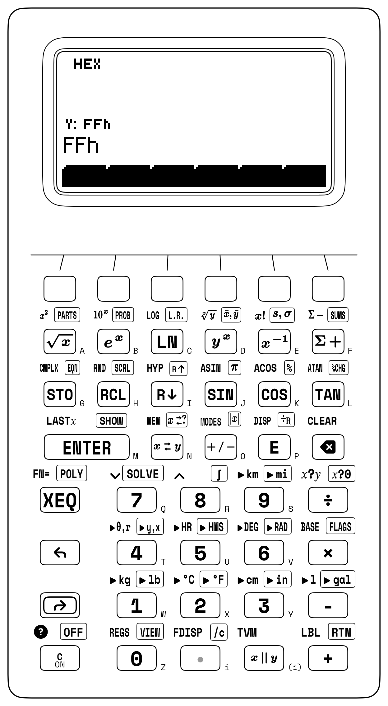
10.3.1 Euclidean Word Cleavage & Number-Theoretic Ladders on the Stack
On the two clock domains \(a = 1,071\text{ MHz}\) and \(b = 462\text{ MHz}\), three Euclidean quotient-and-remainder steps (÷R) walk down Euclid's Remainder Ladder across Registers \(Y\) and \(X\): cleaving \(1,071\) by \(462\) leaves remainder \(R_1 = 147\) in \(Y\) and quotient \(Q_1 = 2\) in \(X\); cleaving \(462\) by \(147\) leaves \(R_2 = 21\) in \(Y\) and \(Q_2 = 3\) in \(X\); and cleaving \(147\) by \(21\) leaves remainder \(0\) in \(Y\), matching the PARTS softkeys GCD (\(\mathbf{21\text{ MHz}}\)) and LCM (\(\mathbf{23,562}\)).
Greatest-common-divisor reduction and integer-part extraction also govern aspect-ratio normalization, public-key coprimality checks, and fractional baud-rate synthesis. To reduce a \(1920 \times 1080\) display frame to its lowest aspect ratio, dividing both dimensions by \(\operatorname{GCD}(1920, 1080) = \mathbf{120}\) yields \(\mathbf{16:9}\); in RSA public-key cryptography, checking \(\operatorname{GCD}(e, \varphi(n)) = \mathbf{1}\) verifies that a candidate public exponent \(e = 65,537\) is coprime to Euler's totient \(\varphi(n)\), and in modular exponentiation by squaring, following each square with Euclidean division and a register swap reduces the intermediate product modulo \(m\) in place.
In an embedded UART clocked at \(f_{\text{clk}} = 150\text{ MHz}\) for \(115,200\text{ baud}\) (\(8\times\) oversampling divisor \(D = 150\times 10^6 / (8 \times 115,200) \approx 162.76\)), isolating the integer part extracts the 16-bit integer divider \(\mathbf{162}\) (A2h), while isolating the fractional part (\(\approx 0.76\)) and multiplying by \(64\) yields \(\approx 48.667 \to \mathbf{49}\) (31h) for the 6-bit fractional divider.
10.3.2 Combinatorial State Spaces & Birthday-Bound Collision Sizing
When drawing \(r\) items without replacement from \(n\) distinct items (such as \(n = 16\) hexadecimal digits 0–F or \(n = 12\) server racks), the counting law depends on whether the order of selection is significant. When order matters (for example, assigning \(r = 4\) distinct hexadecimal nibbles to a 4-stage shift register), there are \(n\) choices for the first slot, \(n - 1\) for the second, down to \(n - r + 1\) for the \(r\)-th slot, which defines the ordered permutation:
When order does not matter (for example, wiring every pair of \(r = 2\) routers among \(n = 7\) core nodes, yielding \(\binom{7}{2} = 21\) links), dividing \(P(n, r)\) by the \(r!\) internal rearrangements of the chosen subset yields the binomial coefficient (obeying symmetry \(\binom{n}{r} = \binom{n}{n-r}\) and Pascal's recurrence \(\binom{n}{r} = \binom{n-1}{r-1} + \binom{n-1}{r}\)):
When drawing \(L\) independent symbols with replacement from an alphabet of \(A\) equiprobable characters (such as a random passphrase of length \(L\) over \(A = 62\) alphanumeric characters or \(A = 2,048\) BIP-39 mnemonic words), there are \(N = A^L\) possible keys, corresponding to a Shannon cryptographic keyspace entropy of:
Every additional bit of entropy doubles the brute-force search work required by an adversary (\(2^H\) trial decryptions worst-case, \(2^{H-1}\) on average). Thus a 56-bit DES key (\(2^{56} \approx 7.21 \times 10^{16}\) keys) falls within hours to parallel hardware, while a 128-bit AES key (\(2^{128} \approx 3.4 \times 10^{38}\) keys), a 12-word BIP-39 mnemonic seed (\(12 \times \log_2(2,048) = \mathbf{132\text{ bits}}\)), or a 16-character random alphanumeric password (\(H = 16 \log_2 62 \approx \mathbf{95.267\text{ bits}}\), spanning \(62^{16} \approx \mathbf{4.767 \times 10^{28}\text{ keys}}\)) remains computationally infeasible against exhaustive search.
In Decimal mode, staging \(n\) in Register \(Y\) and \(r\) in Register \(X\) evaluates discrete combinatorial state spaces from the probability menu: for a 12-drive storage array, selecting \(5\) drives for an unordered RAID parity group yields \(\binom{12}{5} = \mathbf{792}\) distinct drive subsets; ordering \(5\) drives into a sequential failover chain multiplies by \(5! = 120\) to yield \(P(12, 5) = \mathbf{95,040}\) ordered routes. When Monte Carlo hardware verification requires a repeatable stream of uniform pseudo-random test vectors \(U_k \in [0, 1)\), seeding the generator from a known integer \(S_0\) via SD guarantees that RAND replays the same sequence across every test bench.
The ratio between sampling without replacement \(P(N, k)\) and sampling with replacement \(N^k\) governs the Birthday Paradox. When \(k\) independent items (such as people in a room, TCP sequence numbers, or database records) are each assigned one of \(N\) equally likely labels (such as \(N = 365\) calendar days or \(N = 2^b\) possible values of a \(b\)-bit hash function), linear intuition suggests that a duplicate label becomes \(50\%\) likely only when \(k\) approaches \(N/2\). That linear estimate is far too large because a collision can occur across any of the \(\binom{k}{2} = \frac{k(k-1)}{2}\) distinct pairs among the \(k\) items—and \(\binom{k}{2}\) grows quadratically with \(k\). Dividing the ordered permutation \(P(N, k)\) by the \(N^k\) unrestricted assignments and applying the first-order Taylor bound \(1 - x \approx e^{-x}\) yields the Gaussian collision law and the square-root Birthday Bound:
For \(N = 365\) calendar days and \(k = 23\) people (\(\binom{23}{2} = 253\text{ pairs}\)), dividing \(P(365, 23) \approx 4.22 \times 10^{58}\) by \(365^{23}\) and subtracting from \(1\) confirms that a shared birthday occurs with probability \(\approx 1 - 0.493 = 0.507\) (\(\approx \mathbf{50.73\%}\)). Across \(b\)-bit digital identifiers (\(N = 2^b\)), where the \(50\%\) collision threshold scales as \(1.177 \times 2^{b/2}\), a 32-bit CRC-32 or IPv4 packet ID (\(N = 2^{32} \approx 4.295 \times 10^9\)) reaches a \(50\%\) collision risk after just \(k_{50\%} \approx \sqrt{2\ln 2} \times 2^{16} \approx \mathbf{77,163}\) frames, and a 64-bit block cipher initialization vector (\(N = 2^{64}\)) reaches \(50\%\) collision after \(k_{50\%} \approx 1.177 \times 2^{32} \approx \mathbf{5.06 \times 10^9}\) blocks (~\(32\text{ GB}\) of data). At 128 bits, a random UUIDv4 (\(b = 122\) random bits) requires \(k_{50\%} \approx \mathbf{2.71 \times 10^{18}}\) UUIDs, and a 256-bit SHA-256 digest (\(N = 2^{256} \approx 1.158 \times 10^{77}\)) requires \(k_{50\%} \approx \mathbf{4.01 \times 10^{38}}\) hashes before a random collision becomes \(50\%\) likely.
10.3.3 Unpacking Multi-Byte Network Words: IPv4 CIDR Subnets & Flash Pages
In systems and network engineering, cleaving binary words at powers of two (\(2^k\)) unpacks multi-byte network addresses, flash memory pages, and Base64 character streams across the four visible registers. Every IPv4 address \(A\) on the Internet is an unsigned 32-bit integer written in dotted-quad decimal notation \(B_3.B_2.B_1.B_0\) as four 8-bit octets (0 to 255, or 00h to FFh), packed via Horner's radix-256 polynomial \(A = ((B_3 \cdot 256 + B_2)\cdot 256 + B_1)\cdot 256 + B_0\). Chaining three Euclidean divisions by \(256\) on the 32-bit unsigned integer \(3,232,235,777\) peels off the four base-256 octets one by one until all four dotted-quad numbers (192.168.1.1) sit together across Registers \(T, Z, Y,\) and \(X\):
| Keystroke | Register T | Register Z | Register Y | Register X | What Happens on the Stack |
|---|---|---|---|---|---|
3232235777 [ENTER] 256 [↱] [÷R] |
0 |
0 |
1 |
12625921 |
Peel Octet 4 (\(B_0 = 1\)) into \(Y\); upper 24-bit prefix in \(X\) |
256 [↱] [÷R] |
0 |
1 |
1 |
49320 |
Peel Octet 3 (\(B_1 = 1\)) into \(Y\); upper 16-bit prefix in \(X\) |
256 [↱] [÷R] |
1 |
1 |
168 |
192 |
Peel Octet 2 (\(B_2 = 168\)) in \(Y\), Octet 1 (\(B_3 = 192\)) in \(X \implies \mathtt{192.168.1.1}\) |
Once that power-of-two cleavage pattern is understood, any memory or network boundary splits the same way. For the byte address \(12,345 = 771 \times 16 + 9\) (0x3039), cleaving by \(2^4 = 16\) separates the 16-byte cache-line row index \(Q = \mathbf{771}\) in Register \(X\) from the intra-line byte offset \(R = \mathbf{9}\) in Register \(Y\); cleaving that same byte address \(12,345\) by \(2^8 = 256\) for a SPI NOR flash chip splits the word at Bit 8 into Flash Page \(Q = \mathbf{48}\) (30h) in Register \(X\) and intra-page byte offset \(R = \mathbf{57}\) (39h) in Register \(Y\).
In Classless Inter-Domain Routing (CIDR), on a /28 office VLAN subnet (255.255.255.240, where \(32 - 28 = 4\) host bits define a block stride of \(2^4 = 16\) addresses), cleaving host octet 205 by 16 places block index \(12\) in Register \(X\) and host offset \(13\) in Register \(Y\), and multiplying \(12 \times 16\) zeroes out the low 4 host bits to align to the /28 network base ID 192 (while on a /24 workstation address 192.168.10.45 \(= \mathtt{C0A80A2Dh}\), cleaving by \(2^8 = \mathtt{100h}\) and multiplying back by 100h aligns the network base to C0A80A00h and adding the host wildcard FFh yields the broadcast address C0A80AFFh).
Base64 encoding (RFC 4648) is the 24-bit four-register cousin of IPv4 unpacking. Welding three 8-bit ASCII bytes "Man" (4D616Eh) into a single 24-bit integer and cleaving it three times by \(2^6 = 64\) (\(\mathtt{40h}\)) peels off the four 6-bit Base64 character indices across all four stack registers (\(X = \mathtt{13h} = 19 \to \mathtt{'T'}\), \(Y = \mathtt{16h} = 22 \to \mathtt{'W'}\), \(Z = \mathtt{5h} = 5 \to \mathtt{'F'}\), and \(T = \mathtt{2Eh} = 46 \to \mathtt{'u'}\)) to spell TWFu.
10.3.4 Bit-Field Shift-and-Merge Packing: RGB565 Pixels & GPIO Masks
A microcontroller display framebuffer packs three Red, Green, and Blue brightness channels into a single 16-bit unsigned pixel word (RGB565), allocating 5 bits (\(R_5 \in [0, 31]\), 00h–1Fh) to Red in Bits 15–11, 6 bits (\(G_6 \in [0, 63]\), 00h–3Fh) to Green in Bits 10–5 (matching the human retina's peak photopic sensitivity to green), and 5 bits (\(B_5 \in [0, 31]\), 00h–1Fh) to Blue in Bits 4–0:
In 16-bit RGB565 display graphics, 5-bit Blue (6h \(= 6\)), 6-bit Green (15h \(= 21\)), and 5-bit Red (1Fh \(= 31\)) staged across the stack in Hexadecimal mode shift Red left by 11 bits (× 800h \(\to \mathtt{F800h}\)), swap Green into Register \(X\) to shift left by 5 bits (× 20h \(\to \mathtt{2A0h}\)), and merge all three disjoint bit lanes into the 16-bit pixel word FAA6h (\(64,166_{10}\)). In the reverse direction, cleaving FAA6h at Bit 11 (\(2^{11} = \mathtt{800h}\)) places the 11-bit remainder 6A6h in Register \(Y\) and the 5-bit Red quotient 1Fh (\(31_{10}\)) in Register \(X\), so swapping Registers \(X\) and \(Y\) moves 6A6h into Register \(X\) (and 1Fh into Register \(Y\), lifting to Register \(Z\) when 20h is entered) before cleaving by \(2^5 = \mathtt{20h}\) to leave Red 1Fh (\(31_{10}\)) in Register \(Z\), Blue 6h (\(6_{10}\)) in Register \(Y\), and Green 15h (\(21_{10}\)) in Register \(X\). Because all four stack registers persist across radix changes, mixed-radix mask synthesis (for example, staging a hexadecimal register offset 3A7h (\(935_{10}\)), switching to octal (1647o) to add a UNIX permission mask 452o (\(298_{10}\)), and viewing the combined mask 2321o as decimal \(\mathbf{1,233_{10}}\) or hexadecimal \(\mathbf{\mathtt{4D1h}}\)) requires no re-entry when switching bases.
10.3.5 IEEE-754 Floating-Point Bit Unpacking, Checksums & Endianness
Multi-byte memory architectures follow either Big-Endian or Little-Endian byte ordering. Network protocols transmit bytes Big-Endian (12345678h, most-significant byte 12h first), while x86, ARM, and RISC-V processors store bytes Little-Endian (78563412h, least-significant byte 78h at the lowest memory address). Reversing the 32-bit Big-Endian word 0x12345678 into its Little-Endian mirror 0x78563412 (BSWAP) promotes Byte 0 (78h \(\times \mathtt{1000000h} = \mathtt{78000000h}\)), Byte 1 (56h \(\times \mathtt{10000h} = \mathtt{560000h}\)), and Byte 2 (34h \(\times \mathtt{100h} = \mathtt{3400h}\)), and demotes Byte 3 (\(\lfloor \mathtt{12345678h} / \mathtt{1000000h}\rfloor = \mathtt{12h}\)), summing to 78563412h.
When routers verify IPv4, TCP, and UDP packet integrity in flight, they use RFC 1071 16-bit one's-complement addition with end-around carry (Knuth, 1997). Because folding upper carries from Bit 16 back into Bit 0 makes 16-bit addition cyclically symmetric, Big-Endian and Little-Endian machines compute the same checksum without byte-swapping. For an IPv4 header whose ten 16-bit words sum to 2653Dh, cleaving at \(2^{16} = \mathtt{10000h}\) separates the upper carry quotient 2h from the lower 16-bit sum 653Dh, folding to 653Fh (653Dh + 2h) and inverting against FFFFh (FFFFh - 653Fh) to yield the wire checksum 9AC0h. That same two-register end-around carry implements a circular 1-bit left rotation (ROL 1) across an 8-bit register boundary (\(2^8 = \mathtt{100h}\)): doubling 85h (\(1000\,0101_2\)) shifts the byte left to 10Ah, cleaving by 100h separates the low byte 0Ah from the Bit 8 carry 1h, and adding them folds the carry into Bit 0 to give \(\operatorname{ROL}_8(\mathtt{85h}, 1) = \mathbf{\mathtt{0Bh}}\) (\(0000\,1011_2\)).
Finally, the IEEE-754 floating-point standard (IEEE, 2019; Golub & Van Loan, 1996; Parker, 2019) writes any normal non-zero real number \(x\) in normalized base-2 scientific notation by slicing a fixed-width binary word into three contiguous bit-fields: a 1-bit sign flag \(S \in \{0, 1\}\), an unsigned biased exponent integer \(E\) offset by a fixed midrange constant \(\text{bias}\), and a \(p\)-bit unsigned fraction integer \(M \in [0, 2^p - 1]\) representing the trailing binary digits after an implicit leading 1. bit (whose least-significant step \(2^{-p}\) defines the machine epsilon spacing \(\varepsilon_{\text{mach}}\) between \(1\) and the next representable floating-point number):
Those three multiplicative fields separate sign, scale, and precision in hardware: \((-1)^S\) sets the algebraic sign (\(+1\) when \(S = 0\), \(-1\) when \(S = 1\)), the power-of-two factor \(2^{E - \text{bias}}\) selects the binary octave window (allowing unsigned integer comparators to sort exponents directly without a separate exponent sign bit), and the significand factor \(1 + M/2^p = (1.M)_2\) subdivides that octave into \(2^p\) uniform steps of relative width \(\varepsilon_{\text{mach}} = 2^{-p}\) while omitting the invariant leading 1. bit from storage to gain one extra bit of precision. For 32-bit single precision (binary32, \(p = 23\) explicit mantissa bits, \(\text{bias} = 127\)), \(\varepsilon_{\text{mach}} = 2^{-23} \approx \mathbf{1.192 \times 10^{-7}}\) (\(\sim 7.2\) decimal digits); for 64-bit double precision (binary64, \(p = 52\) explicit mantissa bits, \(\text{bias} = 1023\)), \(\varepsilon_{\text{mach}} = 2^{-52} \approx \mathbf{2.22 \times 10^{-16}}\) (\(\sim 15.95\) decimal digits).
A raw IEEE-754 floating-point word unpacks via the same two-step Euclidean cleavage as an RGB565 pixel. Because the SC-32's signed 36-bit integer word places its sign boundary at Bit 35, any 32-bit unsigned bit pattern like 0xC0C80000 (\(3,234,332,672_{10}\), representing binary32 \(-6.25_{10}\)) sits inside Bits 31–0 as a non-negative integer. Cleaving C0C80000h first at Bit 23 (\(2^{23} = \mathtt{800000h}\)) and then cleaving the upper 9-bit quotient (181h) at Bit 8 (\(2^8 = \mathtt{100h}\)) deposits the 23-bit mantissa 480000h (\(4,718,592 / 2^{23} \approx 0.563\), or \(\approx 1.563\) with the hidden 1.) into Register \(Z\), the 8-bit biased exponent 81h (\(129_{10}\), so \(e = 129 - 127 = 2\)) into Register \(Y\), and the sign bit 1h into Register \(X\), verifying \((-1)^1 \times 2^2 \times (1 + 4,718,592 / 2^{23}) = \mathbf{-6.25}\).
For the upper 32-bit word 0xC02AC000 of 64-bit binary64 \(-13.375_{10}\), cleaving at \(2^{20} = \mathtt{100000h}\) and \(2^{11} = \mathtt{800h}\) isolates \(S = 1\), \(E = \mathtt{402h} = 1026\) (\(e = 1026 - 1023 = 3\)), and mantissa fraction \(\mathtt{AC000h} / 2^{20} \approx 0.672\) to reconstruct \((-1)^1 \times 2^3 \times (1 + \mathtt{AC000h}/2^{20}) = \mathbf{-13.375}\).
10.3.6 Try It on the Stack
- Euclidean Quotient-and-Remainder Reconstruction & Modular Exponentiation: In Decimal mode, cleave \(N = 250\) by \(M = 16\) using quotient-and-remainder division to place remainder \(R = 10\) in Register \(Y\) and quotient \(Q = 15\) in Register \(X\), then restore \(M = 16\) via
LASTX, multiply by \(Q\), and add \(R\) to reconstruct \(N = \mathbf{250}\); next, find the last three digits of \(7^8 \bmod 1,000\) by squaring \(7 \to 49 \to 2,401\), cleaving by \(1,000\) and swapping Registers \(X\) and \(Y\) to isolate the remainder \(401\), squaring \(401 \to 160,801\), and cleaving by \(1,000\) and swapping once more. (Verified Register \(X\) results: \(\mathbf{250}\) and \(7^8 \bmod 1,000 = \mathbf{801}\).) - Unpacking a 16-Bit
RGB565Pixel Word: In Hexadecimal mode, cleave the 16-bit color wordF38Ehfirst at Bit 11 (800h), swap Registers \(X\) and \(Y\) to bring the lower 11-bit remainder (38Eh) into Register \(X\), and then cleave at Bit 5 (20h) to separate all three color channels across Registers \((Z, Y, X)\). (Verified stack result: Red \(Z = \mathbf{\mathtt{1Eh}}\) (\(30_{10}\)), Blue \(Y = \mathbf{\mathtt{Eh}}\) (\(14_{10}\)), and Green \(X = \mathbf{\mathtt{1Ch}}\) (\(28_{10}\)).) - End-Around Carry RFC 1071 Checksum Fold: In Hexadecimal mode, fold the 17-bit header accumulator sum
10000hacross the 16-bit boundary10000hvia quotient-and-remainder division and addition (\(0 + 1 = \mathtt{1h}\)), then subtract from the 16-bit all-ones maskFFFFh(by keyingFFFFh, swapping Registers \(X\) and \(Y\), and subtracting) to form \(\mathtt{FFFFh} - \mathtt{1h}\), the one's-complement wire checksum. (Verified Register \(X\) result: \(\mathbf{\mathtt{FFFEh}}\) (\(65,534_{10}\)).)
Chapter 11: Percentages, Time Value of Money & Cash-Flow Valuation
In 1202, Leonardo of Pisa (Fibonacci) posed a question in Chapters 12 and 13 of Liber Abaci that founded quantitative finance: If a merchant or sovereign treasury is promised a stream of periodic payments over future years while capital earns compound interest each year, what single lump sum paid today is its exact fair equivalent, and which of two competing cash-flow streams makes the investor wealthier? Silicon registers switch binary states across nanoseconds; economic enterprises commit capital across years and decades, where time itself acts as an exponential multiplier. Before Fibonacci's analysis, medieval bookkeepers routinely confused simple interest, in which interest accrues only on the original principal \(P_0\), with compound interest, in which each period's accrued return is folded back into the principal to earn returns in all subsequent periods.
By discounting each future payment back to the present day through repeated division by the compound growth factor \((1 + i)\), Fibonacci established the first principle of financial economics: a unit of currency promised in the future is not commensurate with a unit of currency held today until both are transported to a common point in time.
11.1 Multiplicative Asymmetry, Compounding & the Five-Variable TVM Balance Law
Fibonacci's present-value discounting principle rests on the time asymmetry of productive capital. A dollar in hand today can be invested at a periodic rate of return \(i\) to grow to \((1 + i)\) dollars one period from now, \((1 + i)^2\) dollars two periods from now, and \((1 + i)^n\) dollars after \(n\) compounding periods. Even in the absence of default risk, inflation erodes purchasing power while opportunity cost rewards productive investment. Moving a sum of money forward in time by \(n\) periods multiplies it by \((1 + i)^n\) (compounding); moving a future cash flow backward in time by \(n\) periods multiplies it by the reciprocal factor \((1 + i)^{-n}\) (discounting).
11.1.1 The Asymmetry of Gain and Loss: Drawdowns, Markups, and Margins
Before introducing time and compounding periods, financial analysis begins with instantaneous proportional scaling: percentages (%), relative changes (%CHG), retail markdowns, and profit margins. Untrained intuition treats percentage changes as additive, yet every percentage adjustment \(r\%\) is a multiplicative scale factor \((1 \pm \delta)\) with fractional change \(\delta = r / 100\).
Suppose an equity portfolio or retail inventory begins with initial capital \(V_0\) and suffers a fractional drawdown \(-\delta\) during a market correction, followed in the next quarter by an equal fractional rebound \(+\delta\) to reach an ending value \(V_{\text{final}}\). By the algebraic identity for the difference of two squares, applying a fractional loss \(-\delta\) and an equal fractional gain \(+\delta\) in either order always leaves a net multiplicative drag of \(-\delta^2\):
Because the initial drawdown shrinks \(V_0\) to a diminished capital base \(V_0(1 - \delta)\), the subsequent rebound \((1 + \delta)\) compounds only against that smaller survivor rather than the original principal, locking in a permanent quadratic shortfall of \(-V_0\delta^2\). For a portfolio starting at \(V_0 = \$1,000\) that suffers a \(20\%\) drawdown (\(\delta = 0.2\)) followed by a \(+20\%\) rebound, an additive mental model expects \(-20\%\) and \(+20\%\) to cancel back to \(\$1,000\); instead, the \(20\%\) loss reduces the \(\$1,000\) base to \(\$800\), and the \(+20\%\) gain adds \(0.2 \times \$800 = \$160\) to finish at \(V_{\text{final}} = \mathbf{\$960}\)—a permanent \(4\%\) (\(\delta^2 = 0.04\)) erosion of capital.
To climb from the reduced base \(V_0(1 - \delta)\) all the way back to the original par value \(V_0\) after a fractional drawdown \(\delta \in (0, 1)\), the surviving capital must be multiplied by \((1 + g)\), where \(g\) is the required fractional recovery gain satisfying \((1 - \delta)(1 + g) = 1\):
Every dollar of lost capital \(\delta\) must be earned back by the shrunken surviving base \(1 - \delta\) alone, so the required recovery gain \(g\) climbs along a steep hyperbola that diverges toward infinity as a drawdown approaches total wipeout (\(\delta \to 1^-\)). A \(10\%\) loss (\(\delta = 0.1\)) requires an \(\approx 11.11\%\) gain (\(0.1 / 0.9\)) to break even; a \(20\%\) loss requires a \(25\%\) gain (\(0.2 / 0.8\)); a \(50\%\) loss demands a \(100\%\) gain (\(0.5 / 0.5\), doubling your remaining half-stack just to return to even); and an \(80\%\) crash demands a \(400\%\) gain (\(0.8 / 0.2\)).
Multiplicative percentage asymmetry also governs two everyday commercial calculations: successive chain markdowns and the distinction between cost markup and gross margin. When a wholesaler applies a \(20\%\) seasonal markdown followed by an additional \(10\%\) clearance discount, the two markdowns do not add to \(30\%\); they multiply the list price \(P_0\) by \((1 - 0.2)(1 - 0.1) = 0.8 \times 0.9 = 0.72\), yielding an effective net discount of \(1 - 0.72 = 0.28\) (\(\mathbf{28\%}\)).
In retail merchandising and corporate income statements, a Markup fraction \(k = (P - C)/C\) expresses unit profit \(P - C\) as a percentage of wholesale cost \(C\) (\(P = C(1 + k)\)), while Gross Margin \(m\) expresses that same profit \(P - C\) as a percentage of the final selling price \(P\):
Because gross margin reserves a fraction \(m\) of the final selling price \(P\) as profit, the wholesale cost \(C\) must account for the complementary fraction \((1 - m)\) of the selling price; dividing \(C\) by \((1 - m)\) therefore scales unit cost up to the required retail price \(P\). If an item costs \(C = \$120\) to manufacture and management requires a \(40\%\) gross margin (\(m = 0.4\)), marking up cost by \(+40\%\) (\(120 \times 1.4 = \$168\)) is a costly pricing error: at \(\$168\), the \(\$48\) profit is only \(\$48 / \$168 \approx 28.57\%\) of selling price. To achieve a true \(40\%\) gross margin, the cost \(\$120\) must represent the remaining \(1 - 0.4 = 60\%\) of the selling price (\(P = \$120 / 0.6 = \mathbf{\$200}\), where the \(\$80\) profit equals \(40\%\) of \(\$200\)).
11.1.2 Continuous Compounding, the Rule of 72, and Inflation-Adjusted Real Rates
When an institution quotes a nominal Annual Percentage Rate (APR) \(r_{\text{nom}}\) compounded \(m\) times per year (\(m = 2\) for semi-annual corporate bonds, \(m = 4\) for quarterly dividends, \(m = 12\) for monthly mortgages, or \(m = 365\) for daily savings accounts), the periodic interest rate applied at each compounding boundary is \(i = r_{\text{nom}} / m\). Over a single year (\(m\) compounding intervals), one dollar compounds to \((1 + r_{\text{nom}} / m)^m\), defining the Effective Annual Rate (EAR or APY), and across a multi-year investment horizon of \(t\) years (\(mt\) compounding intervals), that dollar grows by \((1 + r_{\text{nom}}/m)^{mt}\). Conversely, when an investment or business expands from an initial value \(V_0\) to a terminal value \(V_n\) over \(n\) years—multiplying initial wealth by the terminal wealth ratio \(V_n / V_0\)—the uniform annual rate that links \(V_0\) to \(V_n\) is the Compound Annual Growth Rate (CAGR):
Each sub-period credits an interest slice \(r_{\text{nom}} / m\), and compounding those \(m\) slices across the year raises \((1 + r_{\text{nom}}/m)\) to the \(m\)-th power before subtracting \(1\) to strip away the starting \(\$1\) principal. Letting the compounding frequency \(m \to \infty\) (every day, every hour, every microsecond) drives the discrete factor \((1 + r_{\text{nom}} / m)^{mt}\) over \(t\) years monotonically to the natural exponential \(e^{r_{\text{nom}} t}\), where Euler's constant \(e = \lim_{m \to \infty}(1 + 1/m)^m \approx 2.718\) governs continuous proportional growth. Over a multi-year history, extracting the \(n\)-th root \((V_n / V_0)^{1/n}\) of the total wealth multiple and subtracting \(1\) isolates \(\text{CAGR}\), the uniform annual return that compounds \(V_0\) into \(V_n\).
At a nominal rate of \(r_{\text{nom}} = 12\%\) (\(0.12\)), annual compounding (\(m = 1\)) yields \(\text{EAR} = 12\%\); quarterly compounding (\(m = 4\)) yields \((1.03)^4 - 1 \approx 12.551\%\); monthly compounding (\(m = 12\)) yields \((1.01)^{12} - 1 \approx \mathbf{12.683\%}\); daily compounding (\(m = 365\)) yields \(\approx 12.748\%\); and continuous compounding (\(m \to \infty\)) reaches the upper bound \(e^{0.12} - 1 \approx \mathbf{12.75\%}\). Across multi-year horizons, a firm whose annual revenue expands from \(V_0 = \$1.25\text{M}\) to \(V_5 = \$2.48\text{M}\) over \(n = 5\text{ years}\) (a wealth multiple of \(V_5 / V_0 = 1.984\)) achieves a geometric \(\text{CAGR} = (2.48 / 1.25)^{1/5} - 1 \approx \mathbf{14.686\%}\) per year.
Two related logarithmic and ratio laws govern how fast capital doubles and how inflation erodes nominal gains. First, if capital compounds at a periodic rate \(i\) (quoted as a percentage \(I\% = 100i\)), the number of compounding periods \(N_{\text{double}}\) required to double an investment satisfies \((1 + i)^{N_{\text{double}}} = 2\), which leads to the Rule of 72. Second, when a portfolio earns a nominal annual return \(r_{\text{nom}}\) while consumer prices rise at an annual inflation rate \(\pi\), the true gain in purchasing power is measured by the Fisher Real Interest Rate \(r_{\text{real}}\):
Taking the natural logarithm of \((1 + i)^{N_{\text{double}}} = 2\) compares the target doubling threshold \(\ln 2 \approx 0.693\) against the single-period logarithmic growth \(\ln(1 + i)\). Continuous compounding gives \(\ln(2) \times 100 \approx 69.315\), whereas discrete compounding at typical rates around \(I\% \approx 6\%\)–\(10\%\) stretches that constant via the reciprocal-log correction \(69.315 \times (1 + 8/200) \approx 72.088\) to \(72\)—an integer divisible by \(1, 2, 3, 4, 6, 8, 9,\) and \(12\). Purchasing power follows a direct physical ratio: \(\$1\) invested today grows nominally to \((1 + r_{\text{nom}})\) dollars at year-end while a basket of goods costing \(\$1\) today inflates to \((1 + \pi)\) dollars, so year-end wealth buys \(\frac{1 + r_{\text{nom}}}{1 + \pi}\) baskets. Subtracting \(1\) scales the naive rate spread \((r_{\text{nom}} - \pi)\) down by \((1 + \pi)\) because inflation erodes not only the original principal, but also the interest earned during the year.
At \(8\%\) annual interest, exact doubling takes \(\ln 2 / \ln(1.08) \approx \mathbf{9.007\text{ years}}\), differing from \(72 / 8 = 9\text{ years}\) by less than \(2.4\text{ days}\). When a Treasury note yields \(r_{\text{nom}} = 7.5\%\) during \(\pi = 4.2\%\) CPI inflation, naive subtraction overstates the real yield as \(3.3\%\); the exact Fisher ratio \((0.075 - 0.042) / 1.042\) reveals a real purchasing-power return of \(r_{\text{real}} \approx \mathbf{3.167\%}\). Over a 10-year horizon at \(3.2\%\) annual inflation, matching today's \(\$100,000\) purchasing power requires \(\$100,000 \times (1.032)^{10} \approx \mathbf{\$137,024.10}\) in nominal Year-10 dollars, while \(\$100,000\) received in Year 10 has a present real value of \(\$100,000 \times (1.032)^{-10} \approx \mathbf{\$72,979.86}\).
A loan's statutory compounding frequency \(m_1\) (with quoted nominal annual rate \(r_{m_1}\)) can also differ from its payment frequency \(m_2\) (with effective periodic rate \(i_{m_2}\) per payment interval). In the United States, fixed-rate mortgages are quoted with monthly compounding (\(m_1 = 12\)) matching monthly payments (\(m_2 = 12\)), so a quoted \(6\%\) APR divides by \(12\) to give \(i_{12} = 0.5\%\) per month (\(\text{EAR} = 1.005^{12} - 1 \approx 6.168\%\)). In Canada and the United Kingdom, however, fixed-rate mortgages quote their nominal rate \(r_{m_1}\) compounded semi-annually (\(m_1 = 2\)), even though borrowers make payments monthly (\(m_2 = 12\)). Equating the 1-year compound growth factor across both schedules gives the universal frequency-conversion law:
Here \(1 + r_{m_1}/m_1\) is the growth multiplier across one full statutory compounding interval, and the exponent \(m_1 / m_2\) represents the fraction of a compounding interval that elapses during each payment period (for a Canadian mortgage, \(m_1 / m_2 = 2 / 12 = 1/6\) of a half-year per month). Raising the statutory multiplier to that fractional power and subtracting \(1\) extracts the exact periodic rate \(i_{m_2}\) that compounds \(m_2\) times per year to the same annual total. For a \(6\%\) Canadian mortgage (\(r_{m_1}/2 = 0.03\) per half-year, \(\text{EAR} = 1.03^2 - 1 = 6.09\%\)), raising \(1.03\) to the \(1/6\) power and subtracting \(1\) gives a monthly periodic rate of \(i_{12} = (1.03)^{1/6} - 1 \approx \mathbf{0.494\%}\) per month—\(\approx 7.37\text{ basis points}\) lower nominal APR (\(\approx 7.78\text{ basis points}\) lower EAR) than a U.S. \(6\%\) mortgage, saving \(\approx \mathbf{\$17.98/\text{month}}\) on a \(\$400,000\) 25-year loan (\(\approx \$14.69/\text{month}\) on a 30-year loan).
11.1.3 The Five-Variable TVM Balance Equation, Annuities & Perpetuities
Mortgages, equipment leases, retirement savings plans, corporate bonds, and sinking funds all link five financial quantities across a schedule of \(N\) compounding periods (\(N = \text{Years} \times m\), giving \(30 \times 12 = 360\) monthly payments on a 30-year mortgage) at a periodic interest rate \(i = \text{I\%} / 100\) per interval (\(6\%\) APR compounded monthly gives \(i = 0.5\%\) per month): an initial Present Value lump sum \(\text{PV}\) at time \(t = 0\), a stream of level periodic cash flows \(\text{PMT}\), and a terminal Future Value lump sum \(\text{FV}\) at horizon \(t = N\). Periodic payments occur either at the end of each period (Ordinary Annuity, END, timing indicator \(s = 0\), as in mortgages and bond coupons) or at the beginning of each period (Annuity Due, BEG, \(s = 1\), as in rent and insurance leases, where each payment earns one extra period of interest and is worth \((1 + i)\) times an equivalent END payment). Discounting every cash flow back to \(t = 0\) and summing the finite geometric series \(\sum_{t=1}^N (1+i)^{-t} = \frac{1 - (1+i)^{-N}}{i}\) (for \(i \ne 0,\; i > -1\), reducing to \(N\) as \(i \to 0\)) yields the master Five-Variable Time Value of Money (TVM) Balance Equation:
Equivalently, multiplying every term through by \((1 + i)^N\) expresses the same conservation law at the terminal horizon \(t = N\):
Viewed at the present day (\(t = 0\)), \(\text{PV}\) needs no discounting, the periodic payment \(\text{PMT}\) is scaled by the \((1 + i\cdot s)\) timing boost and the \(N\)-period present-value factor \(\frac{1 - (1+i)^{-N}}{i}\), and the maturity balance \(\text{FV}\) is pulled back to today by \((1 + i)^{-N}\). Viewed at the terminal horizon (\(t = N\)), \(\text{PV}\) compounds forward across all \(N\) periods by \((1 + i)^N\), the payment stream accumulates through \(\frac{(1+i)^N - 1}{i}\), and \(\text{FV}\) stands at \(t = N\) unscaled.
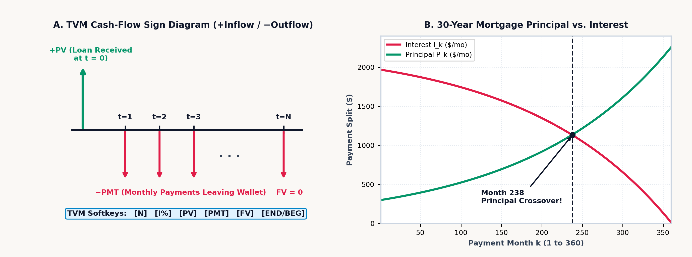
The three terms on the left-hand side of the Five-Variable TVM Balance Equation sum to zero (Figure 11.1). That algebraic zero enforces Cash-Flow Sign Conservation: money has a physical direction relative to your pocket. Cash inflows (\(+\), money received at loan closing, bond coupons collected, or maturity redemptions withdrawn) carry a positive sign; cash outflows (\(-\), monthly payments sent to a lender, purchase price paid for a bond, or savings deposits contributed to a fund) carry a negative sign. If an investor enters both \(\text{PV}\) and \(\text{FV}\) as positive inflows with \(\text{PMT} = 0\), there is no real interest rate \(i > -1\) at which two positive cash flows sum to zero.
In the zero-interest limit (\(\lvert i\rvert < 10^{-14}\)), the indeterminacy \(\frac{(1 + i)^N - 1}{i} \to \frac{0}{0}\) resolves to its analytical L'Hôpital limit \(N\), and an unknown periodic rate \(i\) is isolated across \([-99.99\%, +1,000\%]\) by sweeping a \(240\)-interval sign-change bracket followed by \(100\) bisection refinements. Commercial accounting also distinguishes between continuous compounding precision and printed ledger precision: if a wholesale unit price of \(\$85\) plus \(8.25\%\) tax equals \(\approx \$92.013\) internally ($92.01 when displayed to two decimal places), multiplying the unrounded internal figure across \(1,000\) units yields \(\$92,012.50\), while multiplying the printed unit invoice of \(\$92.01\) by \(1,000\) yields \(\$92,010\)—a \(\$2.50\) ledger discrepancy unless the unit line item is rounded to display precision before extending the invoice.
Behind the five-variable balance equation sit four classical actuarial identities—ordinary annuities, loan amortization, sinking funds, and perpetuities—that govern corporate debt, municipal infrastructure finance, and lifecycle pension planning over a schedule of \(n = N\) compounding periods at periodic rate \(i\):
The bracketed annuity present-value factor \(a_{\overline{n}|i} = \frac{1 - (1+i)^{-n}}{i} = \frac{1}{i} - \frac{(1+i)^{-n}}{i}\) has a clean intuitive decomposition: it is the difference between a perpetuity starting today (worth \(\frac{1}{i}\) per dollar of payment) and an identical perpetuity deferred \(n\) periods into the future (worth \(\frac{(1+i)^{-n}}{i}\) today), which cancels every payment after period \(n\) and leaves only the first \(n\) payments. Multiplying that present-value factor by \((1 + i)^n\) shifts the valuation to horizon \(t = n\), giving the future-value accumulation factor \(s_{\overline{n}|i} = \frac{(1+i)^n - 1}{i}\), where the numerator \((1+i)^n - 1\) is the net compound interest earned by a single dollar over \(n\) periods. Taking the reciprocals of those two factors yields the Capital-Recovery Identity \(\frac{i}{1 - (1+i)^{-n}} = \frac{i}{(1+i)^n - 1} + i\), which states that amortizing a \(\$1\) loan over \(n\) periods (left side) is financially identical to paying periodic interest \(i\) on the whole dollar while depositing \(\frac{i}{(1+i)^n - 1}\) each period into a sinking fund earning rate \(i\) to retire the \(\$1\) principal at maturity \(t = n\).
Discounting \(n = 48\) monthly lease payments of \(PMT = \$400\) at \(i = 0.65\%\) per month (\(7.8\%\) APR \(\div 12\)) gives \((1 + i)^{-48} \approx 0.733\), an annuity factor of \(a_{\overline{48}|i} \approx 41.12\), and a present value of \(PV \approx \mathbf{\$16,447.94}\); depositing \(PMT = \$500\) monthly for \(n = 32\text{ months}\) at \(i = 0.75\%\) per month (\(9\%\) APR \(\div 12\)) gives \(s_{\overline{32}|i} \approx 36.015\) and accumulates to \(FV \approx \mathbf{\$18,007.41}\). Similarly, amortizing an equipment loan of \(PV = \$28,000\) over \(n = 60\text{ months}\) at \(i = 0.75\%\) per month (\(9\%\) APR \(\div 12\)) requires a monthly payment of \(PMT \approx \mathbf{\$581.23}\), while accumulating a target replacement fund of \(FV = \$22,000\) over \(n = 60\text{ months}\) at \(i = 0.6\%\) per month (\(7.2\%\) APR \(\div 12\)) requires a monthly sinking-fund deposit of \(PMT_{\text{sink}} \approx \mathbf{\$305.71}\).
When an annuity has no maturity date at all (\(n \to \infty\)) and pays a fixed periodic cash flow \(PMT\) in perpetuity, the deferred-perpetuity tail \((1 + i)^{-n}\) vanishes as \(n \to \infty\), leaving the present value of a flat perpetuity \(PV_{\text{flat}}\). More generally, in the Gordon Growth Dividend Discount Model, if an university endowment payout or corporate dividend starts at \(D_1\) one period from today and grows perpetually at a constant periodic rate \(g\) while discounted at required return \(r > g\), the infinite geometric series converges to \(PV_{\text{growing}}\):
Both perpetuity denominators reflect a simple self-sustaining fund balance. A principal endowment of \(PV_{\text{flat}} = PMT / i\) invested at rate \(i\) generates \(PV_{\text{flat}} \times i = PMT\) of interest every period forever without ever touching the principal. When the payout must instead grow by a fraction \(g\) each period, the fund cannot distribute its entire return \(r\): the first \(g\) of the return \(r\) must be plowed back into the principal so the endowment base itself grows by \(g\) each period, leaving only the net return spread \((r - g)\) in the denominator of \(PV_{\text{growing}} = \frac{D_1}{r - g}\) available to fund the current payout \(D_1\). An endowment chair or preferred share paying a flat annual distribution of \(PMT = \$1,200\) forever discounted at \(i = 6\%\) (\(0.06\)) has a present value of \(PV_{\text{flat}} = \$1,200 / 0.06 = \mathbf{\$20,000}\); if that \(\$1,200\) initial distribution grows by \(g = 2\%\) per year forever to offset inflation (\(r - g = 0.04\)), its present value jumps by \(50\%\) to \(PV_{\text{growing}} = \$1,200 / (0.06 - 0.02) = \mathbf{\$30,000}\).
11.2 Bond Immunization, Macaulay Duration & Capital Budgeting
Beyond individual mortgages and savings plans, institutional fixed-income management and corporate capital budgeting extend discounting to multi-year bond cash flows, interest-rate immunization, and uneven project streams.
11.2.1 The Term Structure of Interest Rates, Bond Immunization & Macaulay Duration
A fixed-rate government or corporate bond is a pure five-variable TVM contract: the issuer promises to pay a periodic coupon cash flow \(C\) every period for \(N\) periods (PMT \(= C\)) and to return the face or par value \(M\) (conventionally \(M = \$100\) or \(\$1,000\)) at maturity \(t = N\) (FV \(= M\)). When the market prices the bond at an annualized Yield to Maturity (YTM) \(y\) compounded \(m\) times per year—quoted on Wall Street on a semi-annual Bond-Equivalent Yield (BEY, \(m = 2\)) basis where each period discounts at \(i = y / m\)—the investor pays the bond purchase price \(P\) today (PV \(= -P\), negative because cash leaves the buyer's hands):
The bond price \(P\) is the sum of two present-value components: the first term discounts the \(N\)-period stream of level coupons \(C\) using the ordinary annuity factor at periodic yield \(y/m\), and the second term discounts the single maturity par redemption \(M\) across all \(N\) periods by \((1 + y/m)^{-N}\). When the market yield equals the stated annual coupon rate \(c = mC/M\) (\(y = c\)), the bond trades at par (\(P = M\)); when market interest rates rise above the coupon rate (\(y > c\)), the bond trades at a discount below par (\(P < M\)) so the capital gain \((M - P)\) at maturity supplements the coupon; and when market rates fall below the coupon rate (\(y < c\)), the bond trades at a premium above par (\(P > M\)).
When a bond settles \(d_{\text{elapsed}}\) days into a \(d_{\text{period}}\)-day coupon period, the buyer pays the Dirty (Invoice) Price \(P_{\text{dirty}} = P_{\text{clean}} + C(d_{\text{elapsed}} / d_{\text{period}})\), which adds the seller's prorated accrued interest \(AI\) to the quoted Clean Price \(P_{\text{clean}}\). Trading screens quote clean prices because \(P_{\text{dirty}}\) rises in a daily sawtooth pattern as each coupon date approaches and drops by \(C\) on the ex-coupon date, whereas \(P_{\text{clean}}\) moves only when market yields or credit spreads change. On a \(\$1,000\) par corporate bond with a \(6\%\) semi-annual coupon (\(C = \$30\) every \(180\text{ days}\)) quoted at \(P_{\text{clean}} = \$984.50\) and settling \(45\text{ days}\) into a \(180\text{-day}\) period, accrued interest is \(AI = \$30 \times (45 / 180) = \$7.50\), yielding an invoice settlement price of \(P_{\text{dirty}} = \mathbf{\$992}\). At a semi-annual quote of \(y_{\text{BEY}} = 6.8\%\) (\(i_{\text{semi}} = 3.4\%\)), compounding across two half-years yields an Effective Annual Yield of \(\text{EAY} = (1.034)^2 - 1 \approx \mathbf{6.916\%}\).
If a portfolio manager holds a 10-year zero-coupon bond (which pays nothing until Year 10) alongside a 10-year \(8\%\) coupon bond (which returns a substantial portion of its cash flows in Years 1 through 9), both instruments share the same 10-year calendar maturity, yet the zero-coupon bond is far more sensitive to interest-rate shocks. Modeling a bond as a physical beam along the time axis \(t = 1, 2, \dots, N\)—where each period \(t\) delivers a total cash flow \(C_t\) (\(C_t = C\) prior to maturity and \(C_N = C + M\) at maturity) whose present value \(PV(C_t) = C_t (1 + y/m)^{-t}\) acts as a downward gravitational weight—locates the center of mass (fulcrum) of those present-value weights at the Macaulay Duration \(D_{\text{mac}}\) (in periods), its annualized counterpart \(D_{\text{yr}}\) (in years), and the yield-slope Modified Duration \(D^*\):
Each payment time \(t\) in \(D_{\text{mac}}\) is weighted by the fraction \(\frac{C_t(1+y/m)^{-t}}{P}\) of the bond's total price \(P\) recovered at that period, and dividing \(D_{\text{mac}}\) by \(m\) periods per year converts that balance point into calendar years \(D_{\text{yr}}\). Differentiating \(P(y)\) with respect to the annualized yield \(y\) pulls down a factor of \(-(1 + y/m)^{-1}\) from the chain rule, proving that Modified Duration \(D^* = D_{\text{yr}} / (1 + y/m)\) measures the exact first-order fractional price change \(\Delta P / P \approx -D^* \Delta y\) for a small yield shift \(\Delta y\), while Dollar Duration (DV01) \(= P \cdot D^* \times 10^{-4}\) gives the dollar price change per \(1\text{ basis point}\) (\(0.01\%\)) yield move.
Because the discount factor \((1 + y/m)^{-t}\) is convex (bowing upward as yields fall and flattening out as yields rise), the linear tangent approximation \(-D^*\,\Delta y\) overstates price losses when yields jump and understates price gains when yields fall. Differentiating \(P(y)\) a second time with respect to yield \(y\) defines Bond Convexity (\(\text{Conv}\), in \(\text{years}^2\)) and the second-order Taylor quadratic for the fractional price change \(\Delta P / P\) under a yield shift \(\Delta y\):
The linear term \(-D^*\,\Delta y\) traces the tangent-line price drop when yields rise (\(\Delta y > 0\)), while the quadratic term \(+\frac{1}{2}\,\text{Conv}\,(\Delta y)^2\) captures the upward parabolic bow of the price-yield curve. Because \((\Delta y)^2\) is positive whether interest rates rise (\(\Delta y > 0\)) or fall (\(\Delta y < 0\)), positive convexity always works in the bondholder's favor—cushioning price declines when rates spike and amplifying capital gains when rates drop.
On a 3-year annual-pay (\(m = 1\)) corporate bond with a \(6\%\) coupon (\(C_1 = 6,\; C_2 = 6,\; C_3 = 106\)) trading at par (\(P = 100\) at yield \(y = 0.06\)), discounting the time-weighted cash flows (\(1\times 6 = 6\), \(2\times 6 = 12\), and \(3\times 106 = 318\)) by stepping backward from Year 3 to Year 1 and dividing by \(1.06\) at each year—\(\frac{1}{1.06}(6 + \frac{1}{1.06}(12 + \frac{318}{1.06})) \approx 283.339\)—and dividing by \(P = 100\) gives Macaulay Duration \(D_{\text{yr}} \approx \mathbf{2.833\text{ years}}\) and Modified Duration \(D^* \approx 2.833 / 1.06 \approx \mathbf{2.673\text{ years}}\) (\(\text{DV01} \approx 2.673\text{ cents}\) per \(\$100\) par). Summing the second-moment convexity terms \(\sum_{t=1}^3 \frac{t(t+1)C_t}{(1+y)^t} = \frac{2(6)}{1.06} + \frac{6(6)}{1.06^2} + \frac{12(106)}{1.06^3} \approx 1,111.356\) and dividing by \(100 \times (1.06)^2 = 112.36\) yields Convexity \(\text{Conv} \approx \mathbf{9.891\text{ yr}^2}\); under a \(+200\text{ bps}\) (\(\Delta y = +0.02\)) rate shock, linear duration predicts \(-2.673 \times 0.02 = -5.346\%\), while adding the convexity cushion \(+\frac{1}{2}(9.891)(0.02)^2 \approx +0.198\%\) predicts \(\Delta P / P \approx \mathbf{-5.148\%}\) (matching the exact repriced bond loss \(\approx -5.154\%\) to within six-thousandths of a percent).
Macaulay Duration carries physical units of years because it marks the balance point between two opposing interest-rate risks. When interest rates rise (\(\Delta y > 0\)), a bondholder experiences two opposing forces: the bond's immediate market price falls (Price Risk), while all future coupon payments can be reinvested at the higher interest rate (Reinvestment Risk). At the investment horizon equal to the bond's Macaulay Duration (\(H = D_{\text{yr}}\)), the first-order price loss and cumulative coupon reinvestment gain cancel to zero. To immunize a liability due at target horizon \(H\) using two bonds of durations \(D_1 < H < D_2\), a portfolio manager chooses portfolio weights \(w_1\) and \(w_2 = 1 - w_1\) so the value-weighted portfolio duration matches the horizon (\(w_1 D_1 + (1 - w_1)D_2 = H\)), solving for \(w_1 = \frac{D_2 - H}{D_2 - D_1}\), which divides the long bond's excess duration \((D_2 - H)\) by the total duration span \((D_2 - D_1)\) between the two bonds.
Consequently, a pension fund facing a fixed \(\$10,000,000\) liability due at horizon \(H = 5\text{ years}\) immunizes its balance sheet against parallel interest-rate shifts by blending a 2-year Treasury note (\(D_1 = 1.94\text{ years}\)) and a 10-year Treasury bond (\(D_2 = 7.8\text{ years}\)) with weights \(w_1 = \frac{D_2 - H}{D_2 - D_1} = \frac{7.8 - 5}{7.8 - 1.94} \approx \mathbf{47.782\%}\) (\(\approx \$4,778,157\)) and \(w_2 = 1 - w_1 \approx \mathbf{52.218\%}\) (\(\approx \$5,221,843\)) so the asset portfolio's duration matches \(H = 5\text{ years}\) while its convexity exceeds the liability's convexity.
11.2.2 Capital Budgeting, Reverse-Time Horner Discounting & Corporate Hurdle Rates
The five-variable TVM balance equation assumes a level periodic cash flow \(\text{PMT}\), yet corporate capital projects, manufacturing plants, and venture startups generate uneven cash flows \(C_0, C_1, C_2, \dots, C_T\) across time—typically an initial capital expenditure \(C_0 < 0\) at \(t = 0\) followed by variable operating inflows \(C_t\) as production scales up.
Rather than raising \((1 + r)\) to \(T\) separate powers, we can write Net Present Value (NPV) discounted at periodic cost of capital \(r\) as a polynomial in the single-period discount factor \(u = (1 + r)^{-1}\). Applying reverse-time Horner nesting then evaluates an arbitrary \(T\)-period uneven NPV by nested division from the final horizon \(t = T\) backward to \(t = 0\):
Working outward from the innermost terminal cash flow \(C_T\), a single division by \((1 + r)\) discounts \(C_T\) back to period \(T - 1\) where it adds directly to \(C_{T-1}\); each subsequent division by \((1 + r)\) steps the running subtotal one period closer to the present day until the entire stream reaches \(t = 0\) to combine with the upfront outlay \(C_0\). In a capital manufacturing line requiring an initial investment of \(C_0 = -\$50,000\) at \(t = 0\) and generating uneven net operating inflows of \(C_1 = +\$12,000\), \(C_2 = +\$18,000\), \(C_3 = +\$22,000\), and \(C_4 = +\$25,000\) over Years 1 through 4 at a corporate hurdle rate of \(r = 10\%\) (\(1 + r = 1.1\)), stepping backward from Year 4 (\(25,000 / 1.1 + 22,000 \approx 44,727.27 \to \div 1.1 + 18,000 \approx 58,661.16 \to \div 1.1 + 12,000 \approx 65,328.32 \to \div 1.1 \approx \$59,389.39\) present value of inflows) and subtracting the \(\$50,000\) initial outlay yields \(\text{NPV}(10\%) \approx \mathbf{+\$9,389.39}\) and a Profitability Index of \(\text{PI} = \text{PV}_{\text{inflows}} / |C_0| \approx 59,389.39 / 50,000 \approx \mathbf{1.188}\).
The zero crossing \(\text{NPV}(r^*) = 0\) defines the Internal Rate of Return (IRR)—the break-even discount rate at which the present value of future inflows equals \(|C_0|\) (for the 4-year manufacturing line, locating the root of the Horner polynomial gives \(1 + r^* \approx 1.174\), or \(\text{IRR} \approx \mathbf{17.434\%}\), which exceeds a \(10\%\) hurdle rate by more than \(740\text{ basis points}\)). Because \(\text{NPV}(r) = 0\) is a \(T\)-th degree polynomial in \(u = (1 + r)^{-1}\), Descartes's rule of signs guarantees a unique positive root \(r^*\) when the cash-flow sequence changes sign exactly once (\(C_0 < 0\) followed by \(C_1, \dots, C_T \ge 0\)). If a project requires a large environmental remediation outflow at the end of its life (\(C_0 < 0,\; C_1 > 0,\; C_2 < 0\), changing sign twice), \(\text{NPV}(r)\) can cross zero at two distinct positive IRRs.
Standard IRR implicitly assumes that every intermediate cash inflow \(C_t\) is reinvested at the project's own high IRR \(r^*\); Modified Internal Rate of Return (MIRR) resolves multiple roots and applies a realistic reinvestment rate \(r_{\text{reinv}}\) by compounding positive inflows forward to horizon \(T\) as \(\text{TV} = \sum_{C_t > 0} C_t (1 + r_{\text{reinv}})^{T-t}\), discounting negative outflows to \(t = 0\) at financing rate \(r_{\text{fin}}\) as \(\text{PV}_{\text{out}} = \sum_{C_t < 0} |C_t|(1 + r_{\text{fin}})^{-t}\), and taking the \(T\)-th root: \(\text{MIRR} = (\text{TV} / \text{PV}_{\text{out}})^{1/T} - 1\). For a 3-year project with \(C_0 = -\$1,000\), inflows \(C_1 = \$400,\; C_2 = \$500,\; C_3 = \$600\), and corporate reinvestment rate \(r_{\text{reinv}} = 10\%\), standard IRR is \(\approx 21.65\%\), while compounding the inflows to Year 3 at \(10\%\) gives \(\text{TV} = 400(1.1)^2 + 500(1.1) + 600 = \$1,634\) and a realistic \(\text{MIRR} = (1634 / 1000)^{1/3} - 1 \approx \mathbf{17.783\%}\).
When comparing two industrial machines with unequal service lives \(N\)—such as a carbon-steel chemical pump lasting \(N_A = 4\text{ years}\) (upfront capital outlay \(C_{0,A} = \$24,000\), annual maintenance \(C_{\text{maint},A} = \$4,500/\text{yr}\)) versus a corrosion-resistant titanium pump lasting \(N_B = 8\text{ years}\) (\(C_{0,B} = \$42,000\), annual maintenance \(C_{\text{maint},B} = \$2,200/\text{yr}\)) at cost of capital \(r = 8\%\)—a raw present-value comparison is invalid because the 4-year pump must be replaced twice as often. Dividing each machine's upfront purchase price \(C_0\) by its \(N\)-year annuity factor \(a_{\overline{N}|r} = \frac{1 - (1+r)^{-N}}{r}\) converts the lump-sum price into an equivalent annual capital rent, and adding the annual operating maintenance \(C_{\text{maint}}\) defines the Equivalent Annual Cost (EAC \(= \frac{C_0}{a_{\overline{N}|r}} + C_{\text{maint}}\)): Machine A costs \(\text{EAC}_A \approx \$7,246.10 + \$4,500 \approx \mathbf{\$11,746.10/\text{yr}}\), while Machine B costs \(\text{EAC}_B \approx \$7,308.62 + \$2,200 \approx \mathbf{\$9,508.62/\text{yr}}\), saving \(\approx \$2,237.48\) every year.
At the enterprise level, management evaluates how effectively shareholders' capital generates profit via Return on Equity (\(\text{ROE} = \text{Net Income} / \text{Equity}\)) and sets the firm-wide project hurdle rate using its capital structure—the market value of equity \(E\), market value of debt \(D\), total firm value \(V = E + D\), required return on equity \(r_e\), pre-tax cost of debt \(r_d\), and corporate tax rate \(\tau_c\)—through the DuPont Three-Factor ROE Identity and the Weighted Average Cost of Capital (WACC):
Algebraically, \(\text{Revenue}\) and \(\text{Assets}\) cancel across the three DuPont ratios to recover \(\text{Net Income} / \text{Equity}\), decomposing shareholder return into three operational levers: how much profit each sales dollar keeps (Net Profit Margin), how rapidly the asset base generates sales (Asset Turnover), and how much debt amplifies equity (Equity Multiplier). Meanwhile, \(\text{WACC}\) weights the cost of equity \(r_e\) and pre-tax cost of debt \(r_d\) by their capital-structure shares \(E/V\) and \(D/V\), multiplying the debt term by \((1 - \tau_c)\) because corporate interest payments are tax-deductible—a tax shield in which the government absorbs fraction \(\tau_c\) of every interest dollar paid. In a manufacturer with Net Income \(\$18\text{M}\), Revenue \(\$150\text{M}\) (\(\text{Margin} = 12\%\)), Total Assets \(\$120\text{M}\) (\(\text{Turnover} = 1.25\times\)), and Shareholders' Equity \(\$60\text{M}\) (\(\text{Leverage} = 2\times\), Debt \(D = \$60\text{M}\), so \(E/V = D/V = 0.5\)), with cost of equity \(r_e = 11.5\%\), pre-tax debt cost \(r_d = 6\%\), and corporate tax rate \(\tau_c = 25\%\), the three DuPont levers multiply to \(\text{ROE} = 0.12 \times 1.25 \times 2 = \mathbf{30\%}\) against a corporate hurdle rate of \(\text{WACC} = 0.5(11.5\%) + 0.5(6\%)(0.75) = \mathbf{8\%}\) (generating a \(+22\%\) Economic Value Added spread).
11.3 Financial Synthesis on the Stack: From Mortgages to Option Pricing
On the SC-32, two dedicated financial interfaces map percentage scaling and five-variable cash-flow discounting onto the four-register stack:
- Base-Preserving Percentage Operators (
[↱] [%]and[↱] [%CHG]) & Ledger Rounding ([↰] [RND]): If you compute \(20\%\) of \(\$85\) on an ordinary algebraic calculator by multiplying \(85 \times 0.2 = 17\), the binary multiplication consumes both operands and overwrites the display with \(17\), discarding the original \(\$85\) base value just when you need to add or subtract that \(\$17\) tax, tip, or markdown. The SC-32's right-shifted percentage operations—[↱] [%]on[COS]and[↱] [%CHG]on[TAN]—preserve the base value in Register \(Y\) (while[↰] [RND], left-shifted on[RCL], rounds Register \(X\)'s internal 53-bit value to the activeFIX 2cent display whenever an invoice line item must be quantized to exact cents before multiplying by quantity):
| Operation | Mathematical Formula | Stack Before (Y, X) |
Stack After (Y, X) |
Subsequent Action (+ or -) |
|---|---|---|---|---|
Percentage ([↱] [%]) |
\(X' = Y \times \frac{X}{100}\) | Y = Base, X = Rate % |
Y = Base, X = Portion |
Addition adds tax/markup; subtraction deducts discount |
Percent Change ([↱] [%CHG]) |
\(X' = \frac{X - Y}{Y} \times 100\) | Y = Old, X = New |
Y = Old, X = Δ% |
Base preserved in Y for elasticity comparisons |
- The Five-Variable
[↰] [TVM]Softkey Workspace: Invoking[↰] [TVM]([x∥y]) opens the financial workspace and assigns the six top-row softkeys to:
All five financial registers (N for total periods, I% for periodic interest rate, PV for present value, PMT for periodic payment, and FV for future value) default to 0 (and can be reset to 0 at any time via CLEAR \(\to\) [CLVARS] or [CLREGS]), while the sixth softkey toggles between end-of-period ordinary annuities (END, the default) and beginning-of-period annuities due (BEG). Just like POLY for polynomial coefficients, the TVM softkey bar lets you enter values directly on the softkeys without pressing STO or RCL, and solves directly on the target variable softkey without pressing XEQ: any intervening non-TVM keystroke (such as typing a digit, changing sign, or executing an arithmetic operator) arms the next financial softkey to store Register \(X\) into that slot (STO N, STO I%, etc.), whereas tapping another financial softkey immediately afterward solves the master balance equation for that unknown variable and places the result in Register \(X\). Because unentered slots default to 0, a pure lump-sum compounding problem with no periodic payments leaves PMT untouched at 0, and a fully amortizing mortgage with zero terminal balance leaves FV untouched at 0.
11.3.1 Base-Preserving Percentages, Elasticity & Gross-Margin Pricing
When a software-as-a-service (SaaS) platform raises its monthly subscription price from \(\$40\) to \(\$46\) while active seat count shifts from \(1,250\) to \(1,150\), evaluating percent change on price (\(+15\%\) in \(X\), with \(\$40\) preserved in \(Y\)) and then on seat volume (\(-8\%\) in \(X\), lifting \(+15\%\) into \(Z\) while preserving \(1,250\) in \(Y\)) leaves \(-8\%\) in \(X\) and \(+15\%\) in \(Z\); rolling or swapping past the preserved \(1,250\) base to divide \(\% \Delta Q = -8\%\) by \(\% \Delta P = +15\%\) yields a price elasticity of demand \(E_d \approx \mathbf{-0.533}\) (confirming inelastic demand since \(|E_d| < 1\), so monthly revenue rises from \(\$50,000\) to \(\$52,900\)).
Because the percentage operator leaves the original base untouched in Register \(Y\) while placing the computed dollar portion \(Y \times (X / 100)\) in Register \(X\), adding an \(8.25\%\) sales tax to an \(\$85\) invoice computes the \(\approx \$7.013\) tax portion in \(X\) and adds it to \(\$85\) in \(Y\) for a gross invoice of \(\$92.01\) (\(\approx 92.013\) internally, which rounding to display precision under FIX 2 quantizes to exact $92.01 so hidden fractional cents never accumulate across bulk invoice lines). Deducting a \(15\%\) OEM contract discount from a \(\$1,200\) optical sensor module places the \(\$180\) discount in \(X\) and subtracts it from \(\$1,200\) in \(Y\) to yield \(\$1,020\); and adding an \(18\%\) customs tariff and freight surcharge (\(\$2,565\)) to a \(\$14,250\) laboratory instrument shipment before dividing by \(4\) splits the \(\$16,815\) landed cost into \(\$4,203.75\) per department.
11.3.2 Lifecycle Wealth Accumulation & Two-Stage Retirement Chaining
Future-value accumulation and present-value amortization chain across a two-stage retirement plan: an engineer saves \(\text{PMT}_{\text{save}} = -\$1,000\) per month for \(30\text{ years}\) (\(N_1 = 360\text{ months}\)) during her working career in an equity index portfolio earning \(7.2\%\) APR (\(i_1 = 0.6\%\) per month), and then transitions at retirement into a conservative bond/income portfolio earning \(4.8\%\) APR (\(i_2 = 0.4\%\) per month) from which she withdraws a level monthly pension over a \(25\text{-year}\) retirement horizon (\(N_2 = 300\text{ months}\), exhausting the nest egg to \(FV_2 = 0\)).
In Stage 1 (END mode), storing \(N_1 = 360\), \(I\% = 0.6\), \(PV_1 = 0\), and \(\text{PMT}_1 = -1,000\) in the TVM workspace and solving for future value accumulates a 30-year retirement nest egg of \(FV_1 \approx \mathbf{\$1,269,225.44}\) (making each deposit on the first day of the month in BEG mode multiplies that nest egg by \(1.006\) to \(\approx \$1,276,840.79\)—an extra \(\$7,615.35\) of compound growth just from shifting deposits 30 days earlier). Negating that Stage 1 nest egg into Stage 2 opening capital (\(PV_2 \approx -\$1,269,225.44\)), setting \(FV_2 = 0\), \(N_2 = 300\text{ months}\), and \(I\% = 0.4\), and solving for periodic payment funds a sustainable retirement income of \(\text{PMT}_2 \approx \mathbf{+\$7,272.62\text{ per month}}\) for 25 years.
11.3.3 Mortgage Amortization Crossover, Balloon Notes & Curtailment
When a homebuyer finances a \(PV = +\$400,000\) 30-year fixed-rate mortgage (\(N = 30 \times 12 = 360\) months) at a nominal APR of \(6.5\%\) compounded monthly (\(I\% = 6.5 / 12 \approx 0.542\%\) per month) with full amortization (\(FV = 0\)), storing the four known parameters in the TVM workspace and solving for periodic payment yields the level monthly outflow \(\text{PMT} \approx \mathbf{-\$2,528.27}\) (\(\approx -2,528.272\) in FIX 3, negative because cash flows out to the lender). Figure 11.2 illustrates the same \(\$400,000\), \(360\text{-month}\) mortgage at \(6\%\) APR (\(I\% = 0.5\%\)), where \(\text{PMT} \approx -\$2,398.202/\text{month}\).
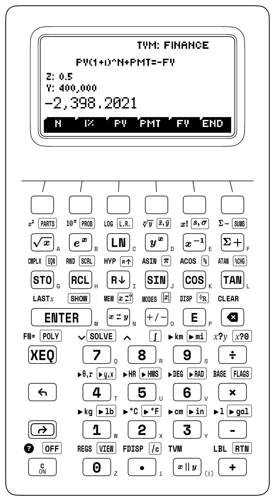
The internal split of that \(\$2,528.27\) monthly payment explains why early mortgage payments barely dent the principal. In Month 1, the borrower owes one month's periodic interest \(i = 0.065 / 12\) on the entire \(\$400,000\) opening balance: \(\text{Interest}_1 = \$400,000 \times (0.065/12) \approx \mathbf{\$2,166.67}\), leaving only \(\text{Principal}_1 \approx \$2,528.27 - \$2,166.67 \approx \mathbf{\$361.61}\) to reduce the debt. More than \(85.7\%\) of the first mortgage check pays interest, leaving a Month 1 ending balance of \(\approx \$399,638.39\). Over all \(360\) months, total cash paid is \(360 \times |\text{PMT}| \approx \$910,177.97\), meaning cumulative interest paid over 30 years is \(\approx \mathbf{\$510,177.97}\)—more than \(1.275\times\) the original price of the home.
Because the principal portion of payment \(t\) is simply the final payment \(|\text{PMT}|\) discounted backward across the remaining \((N - t + 1)\) months as \(\text{Principal}_t = |\text{PMT}|(1 + i)^{-(N - t + 1)}\), the Amortization Crossover Month \(t_{\text{cross}}\)—the first month in which more than half of your monthly payment reduces principal—occurs when \((1 + i)^{-(N - t_{\text{cross}} + 1)} > \frac{1}{2}\):
The inequality states that the number of payments remaining on the mortgage \((N - t_{\text{cross}} + 1)\) must fall inside one compound-interest doubling time \(\frac{\ln 2}{\ln(1+i)} \approx 128.31\text{ months}\) (\(\approx 10.7\text{ years}\)) prior to maturity; subtracting the integer part \(\lfloor 128.31 \rfloor = 128\) from \(360 + 1\) locates the exact crossover at Month 233. Since the TVM workspace retains all stored parameters across solves, updating \(N\) to \(84\) and querying future value shows that if the homeowner sells or refinances after 7 years (\(84\text{ months}\)), the remaining payoff balance is \(FV \approx \mathbf{-\$361,664.98}\), so out of \(\approx \$212,374.86\) in total cash outflows (\(84 \times \$2,528.27\)), principal has fallen by only \(\approx \$38,335.02\) while \(\approx \$174,039.84\) was consumed by interest.
An intermediate future-value query also prices commercial real-estate balloon notes: when a \(\$1,500,000\) property amortizes over a 25-year schedule (\(N = 300\text{ months}\)) at \(7.2\%\) APR (\(I\% = 0.6\%/\text{month}\), \(\text{PMT} \approx \mathbf{-\$10,793.83/\text{month}}\)) with a mandatory 5-year balloon maturity, updating \(N\) to \(60\) and querying future value reveals the Year 5 refinancing balloon balance of \(FV \approx \mathbf{-\$1,370,907.47}\). If the residential borrower instead adds an extra \(\$300\) per month toward principal (increasing the monthly outflow to \(\text{PMT} \approx -\$2,828.27\) and resetting \(FV = 0\) after any intermediate balance query), solving for \(N\) slashes the mortgage payoff horizon from \(360\text{ months}\) down to \(\approx \mathbf{268.93\text{ months}}\) (\(\approx 22.4\text{ years}\)), eliminating \(\approx 91.07\text{ months}\) (\(\approx 7.6\text{ years}\)) of debt service and saving \(\approx \mathbf{\$149,581.85}\) in cumulative interest.
11.3.4 Fixed-Income Valuation: Corporate Bond YTM, Duration & Convexity
When a 10-year corporate bond (\(N = 20\) semi-annual periods, par \(FV = \$1,000\), \(5.5\%\) annual coupon paid as \(\text{PMT} = \$27.50\) every six months) trades in the secondary market at a discount price of \(PV = -\$942.50\), storing the four cash-flow terms in the TVM workspace and solving for the periodic rate yields the semi-annual yield \(i_{\text{semi}} \approx \mathbf{3.142\%}\), which doubles to a Wall Street Bond-Equivalent Yield of \(\text{BEY} \approx \mathbf{6.283\%}\).
The two-period factor \((1 + i_{\text{semi}})^2 - 1\) converts that nominal semi-annual quote into an Effective Annual Yield of \(\text{EAY} \approx \mathbf{6.382\%}\), while inverting the solve (entering a target yield \(I\% = y_{\text{BEY}} / 2\) and querying present value) prices any fixed-coupon bond at par, discount, or premium. And when cash flows vary from period to period, as in uneven project NPV and multi-year bond duration and convexity, stepping backward from maturity via Horner division by \((1 + r)\) accumulates the discounted stream in Register \(X\).
11.3.5 Portfolio Risk-Adjusted Returns, Kelly Sizing & Black–Scholes Option Pricing
Quantitative asset management extends discounting and compounding to uncertain risky cash flows through three models: the Capital Asset Pricing Model (CAPM) and Sharpe Ratio, the Kelly Capital Growth Criterion, and Black–Scholes–Merton Option Pricing.
Across a diversified mean-variance portfolio, firm-specific idiosyncratic variance cancels out, leaving only systematic market beta \(\beta_i = \frac{\operatorname{Cov}(R_i, R_m)}{\operatorname{Var}(R_m)} = r_{im}\frac{\sigma_i}{\sigma_m}\), which multiplies the correlation coefficient \(r_{im}\) between asset \(i\) and the market by the ratio of asset return volatility \(\sigma_i\) to market return volatility \(\sigma_m\) (identical to the least-squares regression slope \(m\) when asset returns \(R_i\) in \(Y\) are regressed against market returns \(R_m\) in \(X\)). Given the risk-free Treasury rate \(R_f\), expected market return \(R_m\), portfolio return \(R_p\) with total portfolio volatility \(\sigma_p\), and individual asset or fund return \(R_i\), three complementary metrics along the Security Market Line (SML) evaluate risk-adjusted performance:
Each metric isolates a specific dimension of risk and return: the Sharpe Ratio (\(S\)) divides excess portfolio return \((R_p - R_f)\) by total return volatility \(\sigma_p\) (scaling with the square root of time as \(S_{\text{ann}} = \sqrt{K}\,S_{\text{period}}\) across \(K = 252\) trading days or \(K = 12\) months per year); the Treynor Ratio (\(T_i\)) divides excess return \((R_i - R_f)\) by systematic market beta \(\beta_i\) to measure compensation per unit of non-diversifiable market risk; and Jensen's Alpha (\(\alpha_i\)) subtracts the passive CAPM benchmark return \([R_f + \beta_i(R_m - R_f)]\) from the actual return \(R_i\) to isolate active manager skill above passive market exposure. For a fund returning \(R_i = 21.8\%\) when the market returns \(R_m = 13.2\%\), the risk-free rate is \(R_f = 4.2\%\) (\(R_m - R_f = 9\%\)), and portfolio beta is \(\beta_i = 1.35\), the CAPM benchmark return is \(4.2\% + 1.35(9\%) = \mathbf{16.35\%}\), giving Jensen's Alpha \(\alpha_i = 21.8\% - 16.35\% = \mathbf{+5.45\%}\) (\(+545\text{ bps}\) of outperformance) and Treynor Ratio \(T_i = (21.8 - 4.2)/1.35 \approx \mathbf{13.037\%}\).
Once a strategy with a positive expected edge is identified, a risk manager must determine how much capital to allocate to each position. Maximizing the expected logarithmic compound growth rate \(G(f) = p\ln(1 + bf) + q\ln(1 - f)\) across a repeatable favorable wager (with win probability \(p\), loss probability \(q = 1 - p\), and net payoff odds \(b\)-to-\(1\)) yields the optimal Kelly fraction \(f^*\):
At the optimal fraction \(f^*\), the expected marginal log-utility of winning \(\frac{pb}{1 + bf^*}\) balances the expected marginal log-penalty of losing \(\frac{q}{1 - f^*}\); solving for \(f^* = \frac{pb - q}{b}\) divides the expected arithmetic edge per dollar risked \((pb - q)\) by the net payoff odds \(b\). Because betting more than \(2 f^*\) drives expected compound growth \(G(f)\) negative even when the wager has a positive arithmetic expectation, quantitative risk desks routinely allocate Half-Kelly (\(\frac{1}{2} f^*\)), capturing \(75\%\) of the maximum logarithmic growth rate while enduring only \(25\%\) of the variance.
The valuation of a European call option \(C\) and put option \(P\) with strike price \(K\) and time to expiration \(T\) (in years) on a non-dividend-paying underlying asset at spot price \(S_0\) with annualized return standard deviation (volatility) \(\sigma\) and continuously compounded risk-free rate \(r\) relies on dynamic replication. Because the underlying asset and the call option share the same geometric Brownian motion diffusion source, holding one call option against \(\Delta = \partial C / \partial S\) shorted shares cancels the stochastic diffusion term at every instant, forcing the hedged portfolio to grow deterministically at the risk-free rate \(r\).
This continuously rebalanced delta-hedged portfolio yields the closed-form Black–Scholes–Merton Formula and Put–Call Parity, pairing continuous exponential discounting \(K e^{-rT}\) with the standard normal cumulative distribution \(\Phi(z) = \frac{1}{\sqrt{2\pi}}\int_{-\infty}^z e^{-t^2/2}\,dt\):
Economically, the Black–Scholes call price \(C = S_0\Phi(d_1) - Ke^{-rT}\Phi(d_2)\) measures what you expect to receive minus what you expect to pay: \(S_0\Phi(d_1)\) is the delta-weighted present value of the underlying shares received if the call finishes in the money, and \(Ke^{-rT}\Phi(d_2)\) is the discounted strike price \(Ke^{-rT}\) multiplied by the risk-neutral exercise probability \(\Phi(d_2)\). Volatility enters \(d_1\) and \(d_2\) in two distinct ways: independent return variances add linearly over \(T\) periods so return dispersion grows with the square root of time (\(\sigma\sqrt{T}\)), whereas compounding log-normal price fluctuations bends upward exponentially, adding a continuous convexity drift of \(+\frac{1}{2}\sigma^2 T\) (Itô's correction) that separates the share-numeraire hedge ratio \(\Phi(d_1) = \Delta_{\text{call}}\) from the risk-neutral exercise probability \(\Phi(d_2)\) (\(S_T > K\)). Because holding a fiduciary call (\(C + K e^{-rT}\) invested in risk-free Treasury bills) produces the same terminal payoff \(\max(S_T, K)\) at expiration \(T\) as holding a protective put (\(S_0 + P\)), Put–Call Parity (\(P = C + K e^{-rT} - S_0\)) locks the European call and put prices together regardless of volatility \(\sigma\).
A single pass through the Sharpe Ratio (\(R_p = 18.4\%\), \(R_f = 4.2\%\), \(\sigma_p = 11.5\% \implies S \approx \mathbf{1.235}\)), Full- and Half-Kelly position sizing (\(p = 0.58\), \(q = 0.42\), \(b = 1.5 \implies f^* = \mathbf{30\%}\) and \(\frac{1}{2}f^* = \mathbf{15\%}\)), and Put–Call Parity (\(S_0 = \$105\), \(K = \$100\), \(r = 5\%\), \(T = 0.5\text{ yr}\), \(C = \$9.80 \implies K e^{-rT} \approx \$97.531\) and \(P \approx \mathbf{\$2.331}\)) lifts each completed metric up the four-register stack:
| Keystroke | Register T | Register Z | Register Y | Register X | What Happens on the Stack |
|---|---|---|---|---|---|
18.4 [ENTER] 4.2 [-] 11.5 [÷] |
\(0\) | \(0\) | \(0\) | \(1.235\) | Portfolio Sharpe Ratio \((18.4 - 4.2) / 11.5 \approx 1.235\) |
.58 [ENTER] 1 [ENTER] .58 [-] 1.5 [÷] |
\(1.235\) | \(1.235\) | \(0.58\) | \(0.28\) | Stage \(p = 0.58\) in \(Y\); evaluate loss-odds ratio \(q/b = 0.42/1.5 = 0.28\) in \(X\) |
[-] 2 [÷] |
\(1.235\) | \(1.235\) | \(1.235\) | \(0.15\) | Full Kelly \(f^* = 0.3 \to\) institutional Half-Kelly \(\frac{1}{2}f^* = 0.15\) (\(15\%\)) |
9.8 [ENTER] .05 [ENTER] .5 [×] [+/-] [eˣ] 100 [×] |
\(0.15\) | \(0.15\) | \(9.8\) | \(97.531\) | Stage call \(C = \$9.8\) in \(Y\); discounted strike \(K e^{-rT} \approx \$97.531\) in \(X\) |
[+] 105 [-] |
\(0.15\) | \(0.15\) | \(0.15\) | \(2.331\) | European Put \(P = C + Ke^{-rT} - S_0 \approx \$2.331\) (with \(\frac{1}{2}f^* = 0.15\) in \(Y, Z, T\)) |
11.3.6 Try It on the Stack
- Executive Gross-Margin Pricing vs. Markup: For a hardware product with unit cost \(C = \$60\) and target gross margin \(M = 40\%\) (\(0.4\)), evaluate the true gross-margin selling price \(P = C / (1 - M)\) and compare it against a \(40\%\) markup \(C(1 + 0.4)\). (Verified Register \(X\) results: gross-margin price \(\mathbf{\$100}\) vs. markup price \(\mathbf{\$84}\).)
- Mortgage Extra-Principal Payoff Acceleration: In the
TVMworkspace (withFVdefaulting to \(0\) inENDmode), store a \(PV = \$350,000\) loan at \(6.75\%\) APR (\(I\% = 6.75 / 12\%\) per month, entered as \(6.75 \div 12\)) with an accelerated monthly payment of \(\text{PMT} = -\$2,520.09\) (\(\approx \$250/\text{month}\) above the standard 30-year payment), and tap the first softkey to solve for the reduced payoff horizon \(N\). (Verified Register \(X\) result: \(N \approx \mathbf{270.928\text{ months}}\), cutting more than \(7.4\text{ years}\) off the 360-month mortgage.) - Single-Entry Kelly Optimal Allocation: Given win probability \(p = 0.62\) and net payoff odds \(b = 1.9\), evaluate the full Kelly percentage \(f^* = \left(p - \frac{1 - p}{b}\right) \times 100\%\) by subtracting \(0.62\) from \(1\) to form \(q = 0.38\), restoring \(p = 0.62\) via
LASTX, swapping Registers \(X\) and \(Y\) so \(p\) waits in Register \(Y\) while \(q = 0.38\) returns to Register \(X\), dividing \(q\) by \(1.9\), subtracting from \(p\), and multiplying by \(100\). (Verified Register \(X\) result: \(f^* = \mathbf{42\%}\) of bankroll.)
Chapter 12: Curve Profiling, Composite Mensuration & Structural Mechanics
In 1637, the French philosopher and mathematician René Descartes introduced the coordinate system that united algebra and geometry in La Géométrie (Descartes, 1637). For nearly two millennia before Descartes, synthetic geometry and symbolic algebra had existed as two separate intellectual worlds: geometric figures—circles, parabolas, and mechanical curves—were studied visually through compass-and-straightedge constructions, while algebraic equations were treated as numerical recipes yielding isolated numbers stripped of spatial form. Before trusting any single root, definite integral, or regression slope, however, an analyst needs to see the global behavior of an equation at once—where its roots cross zero, where its peaks and valleys bend, and how a structural cross-section distributes material around its balance axis.
Legend relates that while lying in bed one morning watching a fly crawl across the coffered ceiling tiles of his room, Descartes realized that the insect's instantaneous position in the plane was uniquely specified by two perpendicular distances measured from two fixed reference edges of the ceiling. By laying down a horizontal reference axis of abscissas (\(x\)) and a vertical axis of ordinates (\(y\)) intersecting at an origin \((0, 0)\), Descartes established a one-to-one correspondence between spatial geometry and symbolic algebra: * Every point \(P\) in the plane corresponds to an ordered pair of real numbers \((x, y)\), pairing the abscissa \(x\) in Register \(X\) with the ordinate \(y\) in Register \(Y\). * Every algebraic function \(y = f(x)\) defines a continuous geometric locus—a curve swept out in space as the independent coordinate \(x\) varies across an operating domain \([a, b]\). * Every geometric intersection, tangent peak, inflection point, or enclosed planar area corresponds to an algebraic root \(f(x) = 0\), a vanishing first derivative \(f'(x) = 0\), a vanishing second derivative \(f''(x) = 0\), or a definite integral \(\int_a^b f(x)\,dx\).
Across engineering analysis—whether profiling the interatomic potential well of a diatomic molecule, tracing the sag of a suspension bridge cable, locating the neutral axis and bending moment of inertia of a perforated steel girder, or auditing experimental load-cell residuals against a deflected beam span—this correspondence turns visual form into quantitative structure.
12.1 Coordinate Topology, Extrema & Interatomic Potential Wells
Before applying numerical root-finding or definite integration to an unfamiliar physical law, an experienced analyst builds a clear mental picture of the curve's shape across its operating window \([x_{\min}, x_{\max}]\).
12.1.1 The Anatomy of a Curve: Roots, Peaks, Inflections, and the Kissing Circle
Four geometric landmarks govern the behavior of any smooth curve \(y = f(x)\). The first landmark is its zero crossings and curve intersections (\(f(x) = 0\)), marking where a structural beam's internal bending moment changes sign, where the net force between two atoms vanishes, or where two trajectories \(g(x)\) and \(h(x)\) cross. Subtracting the two curves forms a single vertical gap function \(f(x) = g(x) - h(x)\) whose roots \(f(x^*) = 0\) mark the exact coordinates of intersection (Brent, 1973).
The second landmark is the curve's local peaks (maxima) and valleys (minima) (\(f'(x) = 0\)). As you climb over the crest of a hill or walk across the floor of a valley, the ground beneath your feet becomes momentarily flat (\(f'(x^*) = 0\)). By sampling the curve at a small symmetric step size \(h\) to the left (\(x - h\)) and right (\(x + h\)) of \(x\)—which cancels odd-order Taylor terms to leave only a tiny quadratic truncation error \(\mathcal{O}(h^2)\)—we can evaluate both the first derivative \(f'(x)\) and the second derivative \(f''(x)\) to distinguish a peak from a valley without drawing the entire graph:
Across the symmetric interval \([x - h, x + h]\), the secant slope divides the net vertical rise \(f(x + h) - f(x - h)\) by the total horizontal span \(2h\), while the second difference \(f(x + h) - 2f(x) + f(x - h) = [f(x + h) - f(x)] - [f(x) - f(x - h)]\) compares the two flanking heights \(f(x + h) + f(x - h)\) against twice the midpoint height \(2f(x)\) over \(h^2\). At a stationary point where \(f'(x^*) = 0\), a negative second derivative (\(f''(x^*) < 0\)) means both neighbors sit below the midpoint so the curve arches downward like an umbrella (a local maximum), whereas a positive second derivative (\(f''(x^*) > 0\)) means both neighbors sit above the midpoint so the curve cups upward like a bowl (a local minimum).
The third landmark is the curve's inflection points and curvature transitions (\(f''(x) = 0\)). Along an S-shaped mountain road that curves to the right and then bends to the left, the steering wheel passes through straight-ahead center at the exact instant the vehicle crosses from the right-hand bend into the left-hand bend. That transition point where a curve reverses concavity (\(f''(x) = 0\)) is an inflection point, marking the point of steepest tangent slope on an S-shaped response curve, the point of maximum restoring tension in a stretched chemical bond, or the point of zero bending moment along a deflected structural beam.
For any cubic polynomial \(f(x) = ax^3 + bx^2 + cx + d\), differentiating twice gives \(f''(x) = 6ax + 2b = 0\), placing the unique inflection point at \(x_{\text{infl}} = -b/(3a)\)—midway between the cubic's local peak and local valley. On the cubic response curve \(f(x) = x^3 - 6x^2 + 9x + 1\), whose slope \(f'(x) = 3(x - 1)(x - 3)\) vanishes at a local maximum \((1, 5)\) and a local minimum \((3, 1)\), the inflection point sits halfway between them at \((2, 3)\).
The fourth landmark is the osculating radius of curvature (\(\rho\)). To measure how sharply a road or trajectory bends at any given point \((x, f(x))\), the osculating circle ("kissing circle") is defined as the unique circle sharing both the curve's tangent slope \(f'(x)\) and its second derivative \(f''(x)\) at that point. Its radius is the Radius of Curvature \(\rho(x)\), and its reciprocal \(\kappa(x) = 1/\rho(x)\) is the geometric curvature:
Because \(|f''(x)|\) tracks how fast the slope changes per unit of horizontal step \(dx\), whereas geometric curvature measures how fast the tangent angle turns per unit of arc length \(ds = \sqrt{1 + (f'(x))^2}\,dx\) along the tilted curve itself, a steep grade \(f'(x)\) stretches a longer arc path \(ds\) across each horizontal unit \(dx\) and dilutes the bend by the factor \(\bigl[1 + (f'(x))^2\bigr]^{3/2}\).
When a train or automobile travels at speed \(v\) along a curve of radius \(\rho\), passengers feel a sideways centripetal acceleration \(a_c = v^2/\rho\). If a civil engineer joined a straight highway tangent (\(\kappa = 0,\; \rho = \infty\)) abruptly to a circular turn of radius \(R\) (\(\kappa = 1/R\)), the lateral acceleration would jump from zero to \(v^2/R\) at the tangent point, jerking the steering wheel in the driver's hands. Highway and railway engineers therefore insert a Clothoid Transition Spiral of total transition ramp length \(L_s\) and clothoid scale constant \(A = \sqrt{R L_s}\), governed by \(\rho(s) \cdot s = A^2 = R L_s\), along which the local radius \(\rho(s)\) shrinks inversely with arc distance \(s\) from the tangent entry so curvature \(\kappa(s) = s/(R L_s)\) ramps up linearly from \(0\) to \(1/R\) as you turn the steering wheel at a smooth, constant rate. On a parabolic vertical highway crest curve \(y(x) = -2.5 \times 10^{-3} x^2 + 0.04 x + 100\) (\(y'' = -0.005\text{ m}^{-1}\)) at station \(x = 4\text{ m}\) where the grade is \(y'(4) = +0.02\) (\(+2\%\)), the factor \([1 + (0.02)^2]^{1.5} \approx 1.001\) divided by \(|y''| = 0.005\text{ m}^{-1}\) gives an osculating radius of curvature of \(\rho(4) \approx \mathbf{200.12\text{ m}}\).
12.1.2 Interatomic Potential Wells, Critical Isotherms & Wave Envelopes
On a \(132 \times 65\) display, every steep wall, valley floor, and inflection knee of a plotted physical law reflects a balance between competing physical terms.
Atomic Repulsion vs. Dispersion Attraction — The Lennard-Jones \((12, 6)\) Potential Well: Ordinary matter avoids both collapsing into a dense point and flying apart into an ideal gas because of the balance between short-range repulsion and long-range attraction. When two electrically neutral argon atoms approach each other from a center-to-center distance \(r\), fleeting quantum fluctuations in their electron clouds induce synchronized electric dipoles (the dispersion force), pulling the atoms together with a gentle attractive potential proportional to \(-(\sigma/r)^6\). Once the atoms come closer than their collision diameter \(\sigma\) (where the potential crosses zero), however, their electron shells begin to overlap and quantum exclusion erects a fierce repulsive barrier that climbs as the twelfth power \(+(\sigma/r)^{12}\). Scaling the bracket by four times the potential well depth \(\varepsilon\)—the minimum binding energy needed to pull an equilibrium pair of atoms apart—defines the Lennard-Jones \((12, 6)\) Potential \(V(r)\) and the interatomic force \(F(r) = -dV/dr\):
Choosing the prefactor \(4\varepsilon\) normalizes the bracket so that when \((\sigma/r)^6 = 1/2\), the valley floor reaches \(-\varepsilon\), while differentiating with respect to \(r\) raises both inverse powers by one to pit an outward \(+(\sigma/r)^{13}\) repulsive push against an inward \(-(\sigma/r)^7\) attractive pull in \(F(r)\). This competition between an inverse twelfth power and an inverse sixth power carves an asymmetric potential well defined by four geometric landmarks. At short range (\(r < \sigma\)), raising a fraction larger than \(1\) to the twelfth power dwarfs the sixth power, sending \(V(r)\) shooting nearly straight up toward \(+\infty\) along a steep repulsive wall that gives solid matter its rigidity. At the exact collision root (\(r = \sigma\)), both \((\sigma/r)^{12}\) and \((\sigma/r)^6\) equal \(1\) and cancel out, producing the zero crossing \(V(\sigma) = 0\).
Slightly beyond \(\sigma\), the inward attraction and outward repulsion balance (\(F(r_{\min}) = 0\)) at the equilibrium bond valley (\(r_{\min} = 2^{1/6}\sigma \approx 1.122\,\sigma\)), where \(V(r_{\min}) = -\varepsilon\); substituting \(u = (\sigma/r)^6\) collapses the twelfth-degree rational curve into the simple parabola \(V(u) = 4\varepsilon u(u - 1)\), whose vertex sits halfway between \(u = 0\) and \(u = 1\) at \(u = 1/2\). Finally, as two atoms are pulled apart from the valley floor, their restoring attraction initially grows stronger—like stretching a spring—until their separation reaches the inflection fracture limit (\(r_{\text{infl}} = (26/7)^{1/6}\sigma \approx 1.244\,\sigma\)) where \(V''(r_{\text{infl}}) = 0\). Beyond this inflection distance, the restoring force weakens with further stretching: the atomic bond necks down and snaps, and \(V(r)\) levels off asymptotically toward zero.
The macroscopic van der Waals equation of state \(\bigl(P + a/V_m^2\bigr)(V_m - b) = RT\) is the thermodynamic mirror of the Lennard-Jones potential well: the excluded-volume constant \(b\) comes from the hard repulsive wall at \(r < \sigma\), while the cohesion pressure \(a/V_m^2\) comes from the attractive \(-(\sigma/r)^6\) tail.
A plot of pressure \(P(V_m) = \frac{RT}{V_m - b} - \frac{a}{V_m^2}\) against molar volume \(V_m\) traces the geometry of a phase transition. Below the critical temperature \(T_c = \frac{8a}{27Rb}\), the attractive \(-a/V_m^2\) dip carves an S-shaped cubic wiggle (a local minimum followed by a local maximum) across the two-phase liquid–vapor region, where boiling water and steam coexist at constant vapor pressure. As we warm the fluid toward \(T_c\), the local peak and local valley of the S-curve move closer together until, along the critical isotherm \(T = T_c\), they merge into a single horizontal inflection point where both the first and second volume derivatives vanish, fixing the critical molar volume \(V_{m,c}\), the critical pressure \(P_c\), and the dimensionless critical compressibility factor \(Z_c\):
Simultaneously solving the vanishing slope and vanishing curvature conditions shows that at the critical point, molecules are packed until the molar volume \(V_{m,c} = 3b\) is exactly three times the excluded hard-sphere volume \(b\), while the critical pressure \(P_c = a/(27b^2)\) scales directly with intermolecular cohesion \(a\) and inversely with \(b^2\). Combining \(P_c\), \(V_{m,c}\), and \(T_c = \frac{8a}{27Rb}\) cancels both fluid-specific constants \(a\) and \(b\) to yield the universal critical compressibility ratio \(Z_c = \frac{P_c V_{m,c}}{R T_c} = \frac{3}{8} = 0.375\), showing that intermolecular attraction compresses a van der Waals fluid at its critical point to \(37.5\%\) of the volume predicted by the ideal gas law (\(P V_m / R T = 1\)). Above \(T_c\), the inflection knee straightens out so the slope \(\partial P/\partial V_m\) is negative everywhere, and liquid and gas merge into a single supercritical fluid.
Two modulated-envelope laws and one harmonic series round out these curve families. Whenever a rapid carrier oscillation is multiplied by a slowly decaying envelope, the outer envelope curves touch every oscillation peak. In an automotive shock absorber \(y(t) = e^{-\zeta\omega_n t}\cos(\omega_d t)\) with decay rate \(\zeta\omega_n = 0.4\text{ s}^{-1}\) and oscillation frequency \(\omega_d = 3\text{ rad/s}\) at \(t = 0.8\text{ s}\), the cosine carrier \(\cos(2.4\text{ rad}) \approx -0.737\) attenuated by the exponential envelope \(e^{-0.32} \approx 0.726\) gives an instantaneous displacement of \(y(0.8) \approx \mathbf{-0.535\text{ m}}\). In a single-slit Fraunhofer optical diffraction pattern \(I(x) = I_0\operatorname{sinc}^2(x) = I_0\bigl(\frac{\sin x}{x}\bigr)^2\), dividing \(\sin(1.2\text{ rad}) \approx 0.932\) by its radian argument \(1.2\) gives field amplitude \(\operatorname{sinc}(1.2) \approx \mathbf{0.777}\) and relative intensity \(I/I_0 \approx \mathbf{0.603}\) inside the central bright fringe (\(|x| < \pi\)).
Even a discontinuous, sharp-cornered square wave can be synthesized as a Fourier series of smooth odd sine harmonics \(\frac{4}{\pi}\sum_{k=1}^N \frac{\sin((2k-1)x)}{2k-1}\). Summing just the first three odd harmonics \(\sin x + \frac{1}{3}\sin(3x) + \frac{1}{5}\sin(5x)\) at \(x = 0.5\text{ rad}\) yields \(0.479 + 0.332 + 0.12 \approx \mathbf{0.932}\) (which scales by \(4/\pi\) to \(\approx 1.186\)), and adding higher harmonics reveals two narrow "ears" near each jump discontinuity that overshoot the flat roof by \(\approx 8.95\%\) of the peak-to-peak jump (\(\approx 17.9\%\) above the unit plateau)—the Gibbs phenomenon.
The distribution of weight along a flexible cable of horizontal tension \(H\) suspended between two towers explains why two distinct structural curves arise: when weight \(w\) is distributed uniformly per unit horizontal span \(dx\)—as on a suspension bridge where vertical steel hanger rods support a flat horizontal roadway—the cable slope \(\frac{dy}{dx} = \frac{wx}{H}\) integrates to an exact parabola \(y = h_0 + \frac{4f}{L^2}x^2\). On a suspension cable of span \(L = 64\text{ m}\), mid-span sag \(f = 16\text{ m}\) (\(4f/L^2 = 1/64 \approx 0.016\text{ m}^{-1}\)), and clearance \(h_0 = 2\text{ m}\), the vertical suspender rods have length \(\frac{1}{64}(12^2) + 2 = \mathbf{4.25\text{ m}}\) at station \(x = 12\text{ m}\) and \(\mathbf{11\text{ m}}\) at \(x = 24\text{ m}\).
When a bare power transmission line instead hangs under its own weight per unit arc length \(ds = \sqrt{1 + (dy/dx)^2}\,dx\), the steeper sections near the towers carry more cable weight per horizontal meter than the flat bottom. Solving the differential equilibrium \(\frac{d^2 y}{dx^2} = \frac{w}{H}\sqrt{1 + (dy/dx)^2}\) shows that the bare cable forms a hyperbolic cosine catenary \(y(x) = a\cosh(x/a)\) with parameter \(a = H/w\). For a power line with \(a = 500\text{ m}\) spanning \(L = 200\text{ m}\) (half-span ratio \(\frac{L}{2a} = 0.2\)), the exact catenary sag is \(f_{\text{sag}} = a[\cosh(L/2a) - 1] = 500(\cosh 0.2 - 1) \approx \mathbf{10.033\text{ m}}\) and the true conductor arc length is \(s_{\text{arc}} = 2a\sinh(0.2) \approx \mathbf{201.336\text{ m}}\) (\(\approx 1.336\text{ m}\) of slack beyond the \(200\text{ m}\) tower spacing).
12.2 Composite Cross-Sections, Neutral Axes & Structural Beams
Where land surveyors determine the area and centroid of polygonal parcels from boundary vertices, structural and mechanical engineers find the area, balance point (centroid), and bending stiffness of load-bearing beams and gusset plates built by welding together rectangles and triangles while drilling out circular bolt holes and pipe cutouts.
12.2.1 Additive and Subtractive Planimetry, Centroids & Solids of Revolution
Every complex structural cross-section can be dissected into \(m\) elementary shapes (\(k = 1, 2, \dots, m\)) whose individual areas \(A_k\), local balance points \((x_k, y_k)\), and local bending inertias \(I_{c,k}\) are known from basic geometry (Figure 12.1). Summing the signed piece areas yields the net cross-sectional area \(A_{\text{net}}\), and balancing the area moments locates the composite centroid \((\bar{x}, \bar{y})\):
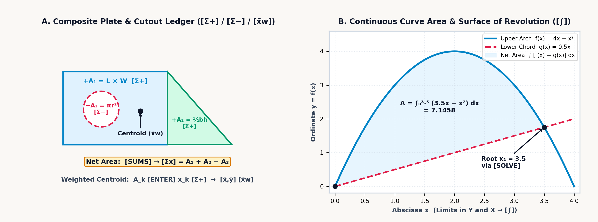
Physically, the composite balance point \((\bar{x}, \bar{y})\) is the area-weighted average of the individual piece centers \((x_k, y_k)\): each solid plate contributes a positive first moment \(+A_k x_k\), any cutout hole or window enters with a negative area \(-A_k\) to deduct the missing metal's torque, and scaling the net moment by the surviving cross-sectional area \(A_{\text{net}} = \sum \pm A_k\) locates the single coordinate pair where the perforated plate balances flat. Five classical building blocks cover nearly every engineering cross-section:
| Geometric Primitive | Area Formula (\(A_k\)) | Centroid Offset from Base/Corner | Second Moment \(I_{xc}\) About Own Centroid |
|---|---|---|---|
| Rectangle (\(b \times h\)) | \(b h\) | \(\bar{x} = \frac{b}{2},\quad \bar{y} = \frac{h}{2}\) | \(I_{xc} = \frac{b h^3}{12}\) |
| Right Triangle (\(b \times h\)) | \(\frac{1}{2} b h\) | \(\bar{x} = \frac{b}{3},\; \bar{y} = \frac{h}{3}\) from \(90^\circ\) corner | \(I_{xc} = \frac{b h^3}{36}\) |
| Full Circle (radius \(r\), diam \(d\)) | \(\pi r^2 = \frac{\pi}{4} d^2\) | \((\bar{x}, \bar{y}) = (x_c, y_c)\) | \(I_{xc} = \frac{\pi r^4}{4} = \frac{\pi d^4}{64}\) |
| Semicircle (radius \(r\) on flat base) | \(\frac{1}{2}\pi r^2\) | \(\bar{y} = \frac{4r}{3\pi} \approx 0.424\,r\) | \(I_{xc} = \left(\frac{\pi}{8} - \frac{8}{9\pi}\right) r^4 \approx 0.11\,r^4\) |
| Parabolic Arch Segment (\(b \times h\)) | \(\frac{2}{3} b h\) | \(\bar{y} = \frac{2}{5} h\) from flat base (\(\frac{3}{5}h\) from vertex) | \(I_{xc} = \frac{8}{175} b h^3\) |
Archimedes' parabolic quadrature law (\(A_{\text{parabola}} = \frac{2}{3}bh\), where the arch occupies two-thirds of its bounding rectangle and the outer spandrel corners occupy the remaining one-third, \(A_{\text{spandrel}} = \frac{1}{3}bh\)) evaluates hull waterplane sections and masonry culvert arches. For a parabolic highway culvert arch of base span \(b = 9\text{ m}\) and crown rise \(h = 4\text{ m}\), the cross-sectional flow area is \(\frac{2}{3}(9)(4) = \mathbf{24\text{ m}^2}\) with centroid height \(\bar{y} = \frac{2}{5}(4) = \mathbf{1.6\text{ m}}\) above the flat invert.
In a composite steel gusset plate of width \(b = 120\text{ mm}\) and height \(h = 80\text{ mm}\) (\(A_1 = 9,600\text{ mm}^2\), centered at \(x_1 = 60\text{ mm}\)) pierced off-center at \(x_2 = 85\text{ mm}\) by a circular pipe cutout of radius \(r = 20\text{ mm}\) (\(A_2 = 400\pi \approx 1,256.637\text{ mm}^2\)), subtracting the hole leaves a net steel area of \(A_{\text{net}} = 9,600 - 400\pi \approx \mathbf{8,343.363\text{ mm}^2}\). Because metal was removed from the right side of the plate (\(x_2 = 85\text{ mm} > 60\text{ mm}\)), the balance point shifts leftward to \(\bar{x} \approx \frac{9,600(60) - 1,256.637(85)}{8,343.363} \approx \mathbf{56.235\text{ mm}}\).
By the Pappus–Guldinus Centroid Theorem, when a planar cross-section of net area \(A_{\text{net}}\) and area centroid distance \(\bar{r}\) (composed of sub-shapes \(k\) with areas \(\pm A_k\) at radial centroid distances \(r_k\))—or a planar curve of arc length \(s\) and arc-centroid distance \(\bar{r}_s\)—is revolved through a full circle about a coplanar axis that does not intersect its interior, the swept surface area \(S\) and volume \(V\) equal:
The geometric intuition is direct: the swept surface area \(S\) or volume \(V\) equals the generating cross-section's arc length \(s\) or net area \(A_{\text{net}}\) multiplied by the circular path circumference \(2\pi\bar{r}_s\) or \(2\pi\bar{r}\) traveled by its centroid during one full revolution—or equivalently, the sum of the individual volumes \(2\pi(\pm A_k)r_k\) swept by each sub-shape \(k\) at its own centroid radius \(r_k\). Thus, revolving our perforated \(120 \times 80\text{ mm}\) gusset cross-section (whose net first moment of area is \(\bar{x}A_{\text{net}} \approx \mathbf{469,185.85\text{ mm}^3}\)) around the \(y\)-axis (\(x = 0\)) generates a machined steel ring with a circular cooling channel of volume \(V = 2\pi\bar{x}A_{\text{net}} \approx \mathbf{2.948 \times 10^6\text{ mm}^3}\) (\(\approx \mathbf{2,947.98\text{ cm}^3}\)).
12.2.2 Why Beams Are Shaped Like an "I": Parallel-Axis Inertia, Elastic Sag, and Model Audits
Structural steel girders are rolled into the shape of an I-beam (with wide top and bottom flanges separated by a thin vertical web) rather than cast as a solid rectangular bar of the same weight because of how bending stress distributes across a cross-section.
When a horizontal beam sags under an internal bending moment \(M\), its top fibers are squeezed in compression while its bottom fibers are stretched in tension. Somewhere between the top and bottom lies a horizontal plane that neither stretches nor compresses—the neutral axis, which passes through the cross-section's area centroid \(\bar{y}\). Under Euler–Bernoulli flexure, the longitudinal bending stress \(\sigma_x(y) = -M y / I_x\) (for vertical coordinate \(y\) measured upward from \(\bar{y}\)) grows linearly with distance \(y\) from that neutral axis, meaning material sitting near the middle of the beam (\(y \approx 0\)) barely helps resist the bending moment \(M\). A beam's resistance to bending is measured by its Second Moment of Area (Area Moment of Inertia, \(I_x = \iint_A y^2\,dA\)). By the Parallel-Axis Theorem (Steiner's theorem), when a rectangular sub-shape \(k\) of width \(b_k\), height \(h_k\), area \(A_k = b_k h_k\), and local centroidal inertia \(I_{c,k} = \frac{b_k h_k^3}{12}\) is shifted by a vertical distance \(d_k = |y_k - \bar{y}|\) away from the composite neutral axis, its contribution to total stiffness equals its own local inertia \(I_{c,k}\) plus its area \(A_k\) multiplied by the square of the transfer distance \(d_k\):
Each sub-shape contributes both its own local bending stiffness \(I_{c,k} = \frac{b_k h_k^3}{12}\) about its mid-plane \(y_k\) and a parallel-axis transfer term \(A_k d_k^2 = A_k(y_k - \bar{y})^2\) measuring the leverage gained by moving that area a distance \(d_k\) away from the composite neutral axis \(\bar{y}\). Because \(A_k d_k^2\) grows with the square of distance from the neutral axis, concentrating the steel into two wide flanges at the top and bottom of an I-beam puts the metal where it works hardest. In a symmetric welded steel I-beam of total depth \(H = 200\text{ mm}\) built from two \(100 \times 20\text{ mm}\) flanges (\(A_f = 2,000\text{ mm}^2\) each, centered at \(d_f = 90\text{ mm}\) from the neutral axis) and a \(10 \times 160\text{ mm}\) web (\(d_w = 0\)), the two transfer terms \(2 \times 2,000(90)^2 = 3.24 \times 10^7\text{ mm}^4\) supply over \(90\%\) of the girder's total moment of inertia \(I_x \approx \mathbf{3.595 \times 10^7\text{ mm}^4}\).
When a beam is asymmetric from top to bottom—such as a structural T-beam cast in gray iron or reinforced concrete (materials that are four times stronger in compression than in tension)—the neutral axis \(\bar{y}\) shifts upward toward the heavy top flange. In a T-beam of total height \(H = 150\text{ mm}\) formed by a \(20 \times 120\text{ mm}\) vertical stem (\(A_1 = 2,400\text{ mm}^2,\; y_1 = 60\text{ mm},\; I_{c,1} = 2.88 \times 10^6\text{ mm}^4\)) and a \(120 \times 30\text{ mm}\) top flange (\(A_2 = 3,600\text{ mm}^2,\; y_2 = 135\text{ mm},\; I_{c,2} = 2.7 \times 10^5\text{ mm}^4\)), the area-weighted centroid sits at \(\bar{y} = \mathbf{105\text{ mm}}\) above the bottom of the stem.
With transfer distances \(d_1 = |60 - 105| = 45\text{ mm}\) and \(d_2 = |135 - 105| = 30\text{ mm}\), the parallel-axis theorem yields a composite inertia of \(I_x = 7.74 \times 10^6 + 3.51 \times 10^6 = \mathbf{1.125 \times 10^7\text{ mm}^4}\). Under a sagging bending moment of \(M = 15\text{ kN}\cdot\text{m}\), the short distance to the top fiber (\(c_{\text{top}} = 45\text{ mm}\)) keeps compressive stress down to \(\sigma_{\text{top}} = \mathbf{-60\text{ MPa}}\), while the longer lever arm to the bottom of the stem (\(c_{\text{bot}} = 105\text{ mm}\)) produces \(\sigma_{\text{bot}} = \mathbf{+140\text{ MPa}}\) of tension.
Thin-walled pressure vessels and hollow transmission shafts obey similar geometric scaling laws. In a thin-walled cylindrical tank of radius \(r\), wall thickness \(t \ll r\), and internal pressure \(p\), pressure pushing outward across a diameter \(2rL\) is resisted by two longitudinal wall strips of area \(2tL\), giving circumferential hoop stress \(\sigma_{\text{hoop}} = \frac{pr}{t}\); pressure pushing on the circular end cap \(\pi r^2\) is resisted by the full ring circumference \(2\pi r t\), giving axial stress \(\sigma_{\text{long}} = \frac{pr}{2t} = \frac{1}{2}\sigma_{\text{hoop}}\). Because hoop stress is twice axial stress (for \(r = 0.45\text{ m},\; t = 9\text{ mm},\; p = 2.4\text{ MPa}\), \(\sigma_{\text{hoop}} = \mathbf{120\text{ MPa}}\) vs. \(\sigma_{\text{long}} = \mathbf{60\text{ MPa}}\)), a burst steam pipe, propellant tank, or grilled sausage always splits along a longitudinal seam.
In a hollow circular shaft of outer radius \(r_o\) and inner bore \(r_i\), torsional polar inertia is \(J = \frac{\pi}{2}(r_o^4 - r_i^4)\). Because stiffness scales with the fourth power of radius, boring out the center of a solid shaft to \(r_i = 0.6\,r_o\) removes \(0.6^2 = \mathbf{36\%}\) of its weight while keeping \(1 - 0.6^4 = \mathbf{87.04\%}\) of its torsional stiffness (\(J \approx \mathbf{5.341 \times 10^{-7}\text{ m}^4}\) and surface shear \(\tau_{\max} = T r_o / J \approx \mathbf{84.259\text{ MPa}}\) for an \(r_o = 25\text{ mm},\; r_i = 15\text{ mm}\) steel shaft under \(T = 1,800\text{ N}\cdot\text{m}\)). When that shaft carries both \(\sigma_x = 140\text{ MPa}\) of bending stress and \(\tau_{xy} \approx 84.259\text{ MPa}\) of torsion, the von Mises octahedral distortion-energy criterion combines them as the Euclidean hypotenuse \(\sigma' = \sqrt{\sigma_x^2 + (\sqrt{3}\,\tau_{xy})^2} \approx \mathbf{202.236\text{ MPa}}\) (giving a safety factor of \(\text{FS} = \sigma_y / \sigma' = 415 / \sigma' \approx \mathbf{2.052}\) for AISI 4140 steel with yield strength \(\sigma_y = 415\text{ MPa}\)).
Two integrations of the Euler–Bernoulli beam equation \(EI\,y''(x) = M(x)\) show that elastic beam deflection under a point load \(F\) grows with the cube of span (\(\delta \propto F L^3 / EI\)): doubling a beam's length multiplies its sag eightfold, while supporting both ends (\(\delta_{\text{simple}} = \frac{F L^3}{48 E I} \approx \mathbf{0.186\text{ mm}}\) for a \(1.5\text{ m}\) steel span of flexural rigidity \(EI = 1.701 \times 10^6\text{ N}\cdot\text{m}^2\) under \(F = 4,500\text{ N}\)) makes the span sixteen times stiffer than clamping one end as a free cantilever (\(\delta_{\text{cantilever}} = \frac{F L^3}{3 E I} \approx \mathbf{2.978\text{ mm}}\)). Along the normalized cantilever profile \(y(\xi) = \frac{1}{2}\xi^2(3 - \xi)\), the mid-span sag at \(\xi = x/L = 0.5\) is \(\mathbf{5/16}\) (\(\approx \mathbf{0.313}\) of tip deflection). When a crane wheel load turns on abruptly at an interior point \(x = a\), the Macaulay singularity bracket \(\langle x - a \rangle^n = (x - a)^n \cdot [x > a]\)—which multiplies the smooth polynomial \((x - a)^n\) by a boolean Heaviside indicator \([x > a]\) that evaluates to \(0\) for \(x \le a\) and \(1\) for \(x > a\)—allows the entire discontinuous beam to be integrated and plotted as a single continuous equation.
Just as integrating bending curvature along a span \(L\) determines elastic deflection, integrating a cross-sectional area \(A(x)\) that tapers continuously along a span \(L\) determines three-dimensional structural and earthwork volume. For any solid whose cross-sectional area \(A(x)\) varies up to a cubic polynomial along length \(L\), Simpson's Prismoidal Formula gives the exact volume as \(V_{\text{prismoid}} = \frac{L}{6}(A_1 + 4A_m + A_2)\), weighting the two end areas \(A_1, A_2\) and four times the mid-span area \(A_m\). When an \(L = 30\text{ m}\) highway cut tapers in width and depth from \(A_1 = 24\text{ m}^2\) through mid-section \(A_m = 45.5\text{ m}^2\) to \(A_2 = 76\text{ m}^2\), naive average-end-area billing \(\frac{L}{2}(A_1 + A_2) = \mathbf{1,500\text{ m}^3}\) overestimates the true prismoidal volume \(\mathbf{1,410\text{ m}^3}\) by \(\mathbf{90\text{ m}^3}\).
Once a structural beam or load cell is placed under test in the laboratory, residual analysis verifies whether a linear calibration model \(\hat{y} = mx + b\) fits the measured deflection data or hides a nonlinear bend. The 1973 diagnostic benchmark Anscombe's Quartet consists of four datasets of \(n = 11\) points that share the identical mean, variance, regression line \(\hat{y} = 3 + 0.5x\), and correlation coefficient \(r \approx 0.816\), even though Dataset I is a healthy linear cloud, Dataset II is a curved parabola, Dataset III contains a corrupted outlier spike, and Dataset IV is skewed by a single high-leverage endpoint. Before trusting a high correlation \(r\), always check the residuals \(e_k = y_k - \hat{y}(x_k)\): if they alternate signs randomly, the linear fit is sound; if they display a systematic sign run (\(+, -, +\) or \(-, +, +, -\)), your physical system contains unmodeled curvature \(f''(x) \ne 0\).
12.3 Stack Patterns for Curve Profiling & Structural Cross-Sections
Curve profiling, composite-section planimetry, and prismoidal volume audits rely on three evaluation patterns across the four-level stack (T, Z, Y, X):
- Companion App Function & Scatter Plotting (
[↱] [PLOT]), Relational Step Indicators (x?y,x?0), & Top-Register Replication ([ENTER] [ENTER] [ENTER]): In the companion app, pressing[↱] [PLOT](right-shifted on[x∥y]; omitted from physical firmware for exam compliance) opens the graphicalPLOTworkspace. When equations are stored in[↱] [EQN], the softkeys display the available equation variables (A–Z) to plot across \([x_{\min}, x_{\max}]\) in \((Y, X)\) (defaulting to \([-3, 3]\) when \(Y = X\), or \([-10, 10]\) when executed via[XEQ]). When[Σ+]statistical data is present and no equations are stored (CLEQN), pressing[↱] [PLOT]renders a 1-Var or 2-Var scatter plot directly without aSTATsoftkey. Inside[↱] [EQN], relational testsx?yandx?0on[÷]return1when true and0when false so Macaulay brackets \(\langle X - A \rangle = (X - A)\cdot [X > A]\) graph as a single equation, while the 101-point canvas highlights roots or shades integrals from[↱] [SOLVE]or[↱] [∫]and supports pan (<,>) and zoom (OUT,IN). For numeric sweeps at \(x\), pressing[ENTER]three times fills all four levels (T = Z = Y = X = x) so[×]replenishes \(x\) from \(T\) across Horner stages, and[↱] [POLY]extracts closed-form cubic roots and inflection points. - Subtractive Planimetry & Weighted Centroids (
[Σ+],[↰] [Σ-],[↱] [SUMS],[↱] [x̄,ȳ]): After resetting the six statistical accumulators (R28–R33) to0via[↰] [CLEAR]\(\to\)CLSTAT([CLΣ]), staging each solid sub-area \(A_k\) (the weight) in Register \(Y\) and its centroid coordinate \(x_k\) in Register \(X\) before pressing[Σ+]—and staging any cutout hole's positive area \(A_{\text{hole}}\) in Register \(Y\) and center \(x_{\text{hole}}\) in Register \(X\) before pressing[↰] [Σ-](left-shifted on[Σ+])—accumulates net area inΣy([↱] [SUMS]\(\to\)Σy), net first moment inΣxy([↱] [SUMS]\(\to\)Σxy), and composite centroid \(\bar{x} = \Sigma xy / \Sigma y\) inx̄w([↱] [x̄,ȳ]\(\to\)x̄w). - Regression Residual Auditing (
[↱] [L.R.]\(\to\)ŷ): After logging calibration pairs \((Y = y_k,\; X = x_k)\) with[Σ+], entering a test abscissa \(x_k\) and tapping[↱] [L.R.](right-shifted on[LN]) \(\to\)ŷplaces the linear prediction \(\hat{y}(x_k)\) in Register \(X\) (whilerin[↱] [L.R.]queries Pearson's correlation coefficient \(r\)); keying the measured ordinate \(y_k\) and pressing[x⇄y] [-]isolates the residual \(e_k = y_k - \hat{y}(x_k)\).
12.3.1 T-Register Replication for Cubic Inflection & Curve Profiling
Whenever you need to evaluate a polynomial \(f(x)\) (or both \(f(x)\) and its shifted derivative core) at a target station \(x\), filling all four stack registers (T = Z = Y = X = x) turns Register \(T\) into a permanent supply of \(x\). Because every dyadic multiplication drops the stack and copies Register \(T\) into Register \(Z\), \(x\) stays parked in Register \(Y\) ready for the next Horner stage without being typed a second time.
To profile the cubic response curve \(f(x) = x^3 - 6x^2 + 9x + 1 = ((x - 6)x + 9)x + 1\) at its inflection abscissa \(x_{\text{infl}} = 2\), replicating \(2\) across all four stack levels (T = Z = Y = X = 2) and subtracting \(6\) forms the innermost Horner binomial \(x - 6 = -4\) in Register \(X\). Multiplying by \(x = 2\) waiting in Register \(Y\) (while Register \(T\) replenishes \(2\) into Register \(Z\)) and adding \(9\) yields \((x - 6)x + 9 = 1\), after which a second multiplication by \(x = 2\) from Register \(Y\) and addition of \(1\) delivers the inflection ordinate \(y_{\text{infl}} = f(2) = \mathbf{3}\) in Register \(X\) with \(x = 2\) still preserved in Registers \(T, Z,\) and \(Y\).
Once \(x = 2\) is swapped from Register \(Y\) back into Register \(X\), evaluating the first derivative yields the inflection tangent slope \(f'(2) = (3x - 12)x + 9 = \mathbf{-3}\) while the second derivative vanishes (\(f''(2) = 6x - 12 = \mathbf{0}\)). That \(T\)-register replication rhythm evaluates any polynomial or repeated-parameter family—whether sweeping horizontal stations \(x = 12\text{ m}, 24\text{ m}\) along a parabolic suspension bridge cable by parking the sag coefficient \(4f/L^2 = 1/64\text{ m}^{-1}\) in Register \(T\), or evaluating van der Waals cubic isotherms across molar volume \(V_m\).
12.3.2 Subtractive Planimetry, Parallel-Axis Inertia & Residual Auditing
To find the net area \(A_{\text{net}}\), composite centroid \(\bar{x}\), and revolved Pappus–Guldinus volume of a plate with cutouts, the statistical accumulators act as a direct planimeter. After clearing the statistical registers (CLSTAT), enter each solid sub-shape's area \(A_k\) in Register \(Y\) (the weight) and its center coordinate \(x_k\) in Register \(X\) for positive accumulation. For any cutout hole, stage its positive area \(A_{\text{hole}}\) in Register \(Y\) and its center \(x_{\text{hole}}\) in Register \(X\) for subtractive accumulation, which deducts both the hole's area and its first moment:
| Keystroke | Register T | Register Z | Register Y | Register X | What Happens on the Stack |
|---|---|---|---|---|---|
[↰] [CLEAR] [CLΣ] |
\(0\) | \(0\) | \(0\) | \(0\) | Clear statistical accumulators (CLSTAT softkey; R28–R33 \(= 0\)) |
120 [ENTER] 80 [×] 60 [Σ+] |
\(0\) | \(0\) | \(9600\) | \(1\) | Accumulate solid rectangle (\(A_1 = 9,600\) in \(Y\), \(x_1 = 60\) in \(X\)) |
20 [↰] [x²] [↱] [π] [×] 85 [↰] [Σ-] |
\(0\) | \(9600\) | \(1256.637\) | \(0\) | Subtract circular cutout (\(A_2 \approx 1,256.637\) in \(Y\), \(x_2 = 85\) in \(X\)) |
[↱] [SUMS] [Σy] |
\(0\) | \(9600\) | \(1256.637\) | \(8343.363\) | Net composite plate area \(A_{\text{net}} = \sum y \approx 8,343.363\text{ mm}^2\) |
[↱] [x̄,ȳ] [x̄w] |
\(9600\) | \(1256.637\) | \(8343.363\) | \(56.235\) | Composite centroid \(\bar{x} = \sum xy / \sum y \approx 56.235\text{ mm}\) |
Because the first-moment accumulator \(\sum (\pm A_k x_k) \approx \mathbf{469,185.85\text{ mm}^3}\) is retained in memory, multiplying that net first moment by \(2\pi\) yields the 3D Pappus–Guldinus revolved ring volume (\(\approx \mathbf{2,947.98\text{ cm}^3}\)) for any axisymmetric flywheel or flanged pipe fitting with arbitrary grooves and bolt holes.
Once the weighted-mean operation locates the neutral axis \(\bar{y}\) of an asymmetric section, that same statistical accumulation feeds into the parallel-axis theorem. On the \(H = 150\text{ mm}\) asymmetric T-beam, accumulating the stem and flange areas with their centroid heights places the composite neutral axis \(\bar{y} = 105\text{ mm}\) in Register \(X\). As you then sum the stem and flange parallel-axis contributions (\(I_1 = 7.74 \times 10^6\text{ mm}^4\) and \(I_2 = 3.51 \times 10^6\text{ mm}^4\)) into the total moment of inertia \(I_x = 1.125 \times 10^7\text{ mm}^4\), automatic stack lift carries \(\bar{y} = 105\text{ mm}\) up into Registers \(T, Z,\) and \(Y\), where it remains visible on the display ready to scale \(M / I_x\) (\(M = 1.5 \times 10^7\text{ N}\cdot\text{mm}\)) into the bottom-fiber tensile stress \(\sigma_{\text{bot}} = +140\text{ MPa}\).
When auditing experimental load-cell calibration points such as \((1\text{ kN}, 2.1\text{ mV})\), \((2\text{ kN}, 3.9\text{ mV})\), and \((3\text{ kN}, 6\text{ mV})\) against Anscombe's Quartet traps, accumulating the \((x_k, y_k)\) pairs into the statistical registers fits the regression line \(\hat{y} = 0.1 + 1.95x\) (\(r \approx 0.999\)). Evaluating the linear-regression prediction \(\hat{y}(x_k)\) at \(x_k = 1, 2, 3\) in Register \(X\) and subtracting each prediction from its measured ordinate \(y_k\) then yields the \(+0.05, -0.1, +0.05\text{ mV}\) residual sign run (\(+, -, + \implies\) upward quadratic bow \(f''(x) > 0\)).
12.3.3 Simpson's Prismoidal Quadrature vs. Average-End-Area Auditing
To compare two competing engineering formulas—such as naive average-end-area earthwork billing \(V_{\text{avg-end}} = \frac{L}{2}(A_1 + A_2)\) versus Simpson's exact Prismoidal Formula \(V_{\text{prismoid}} = \frac{L}{6}(A_1 + 4A_m + A_2)\) for an \(L = 30\text{ m}\) highway cut (\(A_1 = 24\text{ m}^2,\; A_m = 45.5\text{ m}^2,\; A_2 = 76\text{ m}^2\))—the baseline estimate can be evaluated first so automatic stack lift carries it into the upper registers while the exact prismoidal sum is assembled in Registers \(Y\) and \(X\). Forming the average-end-area volume \(\frac{30}{2}(24 + 76) = \mathbf{1,500\text{ m}^3}\) in Register \(X\) and then starting the prismoidal sum \(A_1 + 4A_m = 24 + 4(45.5) = 206\text{ m}^2\) lifts \(V_{\text{avg-end}} = 1,500\text{ m}^3\) into Registers \(T, Z,\) and \(Y\).
Once the far-end area \(A_2 = 76\text{ m}^2\) is added and scaled by \(L/6 = 30/6\), Simpson's prismoidal volume \(V_{\text{prismoid}} = \mathbf{1,410\text{ m}^3}\) sits in Register \(X\) with \(V_{\text{avg-end}} = 1,500\text{ m}^3\) waiting in Register \(Y\); swapping \(X\) and \(Y\) and subtracting reveals the earthwork correction \(\Delta V = V_{\text{prismoid}} - V_{\text{avg-end}} = \mathbf{-90\text{ m}^3}\) from the two values already on the stack. When a section is bounded by intersecting curves \(g(x) = 4 - x^2\) and \(h(x) = x + 2\), storing \(f(x) = 2 - x - x^2\) in EQN lets SOLVE locate the crossings (\(x_1 = -2,\; x_2 = +1\)) and ∫ integrate the enclosed area (\(\int_{-2}^1 f(x)\,dx = 4.5\)).
12.3.4 Try It on the Stack
- Cubic Curve Stationary Points & Inflection Audit: For \(f(x) = x^3 - 12x\), evaluate \(f(-2)\) and \(f(2)\) via Horner's form \((x^2 - 12)x\) to verify its extrema where \(f'(x) = 3x^2 - 12 = 0\), and confirm the inflection point at \(x = 0\). (Verified Register \(X\) results: \(f(-2) = \mathbf{16}\), \(f(0) = \mathbf{0}\), \(f(2) = \mathbf{-16}\).)
- Perforated Plate Centroid via Subtractive Accumulation: An aluminum plate of area \(A_1 = 200 \times 100 = 20,000\text{ mm}^2\) centered at \(x_1 = 100\text{ mm}\) has a square cutout \(A_2 = 50 \times 50 = 2,500\text{ mm}^2\) centered at \(x_2 = 150\text{ mm}\). Accumulate \((Y = 20,000,\; X = 100)\) positively and \((Y = 2,500,\; X = 150)\) subtractively, then read \(\bar{x} = \Sigma xy / \Sigma y\). (Verified Register \(X\) result: \(\bar{x} \approx \mathbf{92.857\text{ mm}}\), net area \(\Sigma y = \mathbf{17,500\text{ mm}^2}\).)
- Symmetric Welded I-Beam Flange Inertia Share: For the \(H = 200\text{ mm}\) steel I-beam with two \(100 \times 20\text{ mm}\) flanges (\(A_f = 2,000\text{ mm}^2\) each at \(d_f = 90\text{ mm}\)) and total inertia \(I_x \approx 3.595 \times 10^7\text{ mm}^4\), evaluate \(2 A_f d_f^2\) and divide by \(I_x\). (Verified Register \(X\) results: \(2A_f d_f^2 = \mathbf{3.24 \times 10^7\text{ mm}^4}\), supplying \(\approx \mathbf{90.1\%}\) of bending stiffness.)
Chapter 13: Coupled Laws of Classical and Modern Engineering
In the winter of 1883 at Owens College in Manchester, engineering professor Osborne Reynolds stood beside an elevated glass-sided water tank six feet long to investigate how competing physical forces interact inside a moving fluid (Horowitz & Hill, 2015; Macaulay, 2016). Submerging a horizontal glass pipe with a polished wooden bell-mouth trumpet intake inside the tank, he allowed the water to stand undisturbed for hours until every stray thermal convection current had died away, and positioned a fine brass capillary tip connected to a reservoir of dark carmine dye just upstream of the intake. When Reynolds cracked open the discharge valve slightly so water crept through the glass pipe at a gentle velocity \(v\), the streak of crimson dye drawn into the intake formed a razor-sharp, steady thread down the exact centerline of the tube—so still that it looked like a solid rod of ruby glass suspended in clear crystal as concentric layers (laminae) of water slid past one another without a trace of radial mixing.
As Reynolds slowly opened the valve further, the velocity \(v\) climbed until, at a sharply defined threshold, a hydrodynamic instability seized the stream: several feet downstream of the intake, the crimson filament suddenly began to waver, curled into a train of interlocking vortices, and burst into a cloud of chaotic three-dimensional eddies that tinted the entire bore of the pipe pink. When he illuminated the tube with a microsecond electric spark, the uniform pink blur resolved into tightly wound, tumbling vortices. By repeating the experiment across glass pipes of different diameters \(D\) and heating the water to vary its dynamic viscosity \(\mu\) and density \(\rho\), Reynolds proved that the transition from tranquil laminae to chaotic eddies depends on a single dimensionless ratio \(\text{Re} = \rho v D / \mu\)—where fluid inertia competes against viscous shear—rather than on velocity, pipe size, or viscosity in isolation (Horowitz & Hill, 2015; Macaulay, 2016).
Across classical and modern engineering, no physical system obeys a single isolated formula: viscous shear competes with fluid inertia, thermal conduction feeds convective and radiative dissipation, optical diffraction couples with lens curvature, and orbital gravity balances rocket mass expulsion. Evaluating these coupled systems from their innermost dimensionless ratio outward keeps each intermediate state—Reynolds number \(\text{Re}\), hydraulic radius \(R_h\), Euler buckling load \(P_{\text{cr}}\), log-mean temperature difference \(\Delta T_{\text{lm}}\), numerical aperture \(\text{NA}\), objective magnification \(m_o\), or circular orbital velocity \(v_{\text{orb}}\)—visible on the stack at the boundary where one physical mechanism hands off to the next (Figure 13.1).
13.1 Viscous Pipe Flow, Open-Channel Hydraulics & Heat Transfer
Why does blood plasma glide silently through a microscopic capillary without mixing, while water rushing through a municipal fire main churns in violent eddies? For two centuries of early hydrodynamics, frictionless differential models predicted zero drag on a moving submarine (d'Alembert's paradox), while practical hydraulic tables for cast-iron pipes and earthen canals seemed disconnected from first principles.
13.1.1 The Reynolds Regime Boundary, Hagen–Poiseuille Capillaries & Stokes Drag
Reynolds's 1883 pipe experiments resolved that divide by comparing a moving fluid's density \(\rho\), mean cross-sectional velocity \(v\), and conduit diameter \(D\) against its dynamic viscosity \(\mu\) (or kinematic viscosity \(\nu = \mu/\rho\)), collapsing the ratio of convective momentum flux (\(\rho v^2 / D\)) to viscous shear stress (\(\mu v / D^2\)) into a single dimensionless number:
Fluid density \(\rho\), speed \(v\), and pipe bore \(D\) combine in \(\rho v D\) to drive the stream's forward momentum and vortex formation, while dynamic viscosity \(\mu\) acts as internal molecular friction that damps lateral disturbances back into parallel laminae. Across all Newtonian liquids and gases in circular conduits, viscous shear preserves smooth laminar flow for \(\text{Re} < 2,300\); intermittent turbulent slugs appear across the transitional band \(2,300 \le \text{Re} \le 4,000\); and inertial eddies dominate in fully turbulent flow for \(\text{Re} > 4,000\).
In the laminar regime (\(\text{Re} < 2,300\)), viscous flow in a circular capillary tube of radius \(r = D/2\) and length \(L\) under pressure differential \(\Delta P\) departs sharply from uniform plug flow. Fluid molecules touching the stationary pipe wall are held at zero velocity (\(u(r) = 0\), the no-slip boundary condition), while nested cylindrical shells of fluid closer to the axis telescope forward under the axial pressure force \(\pi r'^2 \Delta P\), resisted by viscous shear stress \(\tau = -\mu\frac{du}{dr'}\) around their circumference \(2\pi r' L\). Integrating this force balance yields a parabolic velocity distribution \(u(r') = \frac{\Delta P}{4\mu L}(r^2 - r'^2)\) whose centerline speed is twice the mean velocity, and integrating that paraboloid across the circular cross-section yields the Hagen–Poiseuille Law for volumetric flow rate \(Q\):
While pressure drop \(\Delta P\) drives the discharge and viscosity \(\mu\) and tube length \(L\) throttle it back, volumetric flow \(Q\) scales with the fourth power of radius (\(r^4\)) because two quadratic effects reinforce each other: doubling the tube radius \(r\) quadruples the cross-sectional area \(\pi r^2\), and moving the core stream twice as far from the stationary walls quadruples the centerline speed of the parabolic velocity profile (\(2^2 \times 2^2 = 2^4 = 16\)).
This \(r^4\) sensitivity governs flow resistance across physiology, chemical instrumentation, and microfluidics. In coronary and vascular perfusion, if atherosclerotic plaque narrows the internal radius of a coronary arteriole by just \(16\%\) (\(r' = 0.84\,r\)), the vessel's cross-sectional area drops by \(29\%\), but its laminar blood flow capacity at constant blood pressure plummets by half (\(0.84^4 \approx 0.498 \approx 50\%\)). When a tissue bed instead requires constant blood flow \(Q\) while vasoconstriction reduces arteriole radius by half (\(r' = 0.5\,r\)), the required driving pressure differential \(\Delta P \propto r^{-4}\) spikes sixteenfold.
When blood plasma (\(\rho = 1,025\text{ kg/m}^3,\; \mu = 1.5 \times 10^{-3}\text{ Pa}\cdot\text{s}\)) flows through a \(D = 4\text{ mm}\) vessel at \(v = 0.45\text{ m/s}\), the Reynolds number is \(\text{Re} = 1025(0.45)(0.004) / (1.5 \times 10^{-3}) = \mathbf{1,230}\)—well within the laminar regime (\(\text{Re} < 2,300\)). In a microfluidic fused-silica capillary of inner radius \(r = 250\,\mu\text{m}\) (\(2.5 \times 10^{-4}\text{ m}\)) and length \(L = 0.15\text{ m}\) carrying water (\(\mu \approx 1.002 \times 10^{-3}\text{ Pa}\cdot\text{s}\)) under pressure drop \(\Delta P = 45,000\text{ Pa}\), the fourth power of radius (\(r^4 \approx 3.906 \times 10^{-15}\text{ m}^4\)) scaled by \(\pi\Delta P / (8\mu L)\) yields a laminar discharge of \(Q \approx \mathbf{4.593 \times 10^{-7}\text{ m}^3/\text{s}}\) (\(\approx 0.459\text{ mL/s}\)).
For external flow around a small solid sphere of radius \(r\) and particle density \(\rho_p\) moving at slow velocity \(v\) through an unbounded viscous fluid of density \(\rho_f\) and dynamic viscosity \(\mu\) under standard gravity \(g_0\) (\(\text{Re} \ll 1\)), convective inertia is negligible compared to viscous shear and streamlines wrap symmetrically fore-and-aft around the sphere without separating into a wake. Integrating the surface pressure and viscous shear tensor over the sphere yields Stokes's Law of Creeping Drag \(F_d\) and the Stokes Terminal Sedimentation Velocity \(v_t\) (where upward viscous drag \(6\pi\mu r v_t\) balances downward net buoyant weight \(\frac{4}{3}\pi r^3(\rho_p - \rho_f)g_0\)):
Creeping viscous drag \(F_d\) grows only linearly with viscosity \(\mu\), sphere radius \(r\), and speed \(v\). As a particle settles under gravity, its downward buoyant weight scales with volume (\(\propto r^3(\rho_p - \rho_f)g_0\)) while opposing viscous drag scales only with radius (\(\propto \mu r\)), leaving a terminal settling speed \(v_t\) proportional to the square of particle radius (\(r^2\)) and inversely proportional to \(\mu\): a \(100\,\mu\text{m}\) fine sand grain settles through water one hundred times faster than a \(10\,\mu\text{m}\) silt particle, allowing civil water-treatment clarifiers and geological elutriators to sort grains by size. In a laboratory falling-ball viscometer, dropping a precision steel bearing of radius \(r = 1\text{ mm}\) (\(\rho_p = 7,850\text{ kg/m}^3\)) through pharmaceutical glycerin (\(\rho_f = 1,260\text{ kg/m}^3,\; \mu = 0.95\text{ Pa}\cdot\text{s}\)) under \(g_0 \approx 9.807\text{ m/s}^2\) produces a creeping terminal speed of \(v_t = \frac{2(10^{-3})^2(6,590)(9.807)}{9(0.95)} \approx \mathbf{0.015\text{ m/s}}\) (\(\approx 15.12\text{ mm/s}\), at \(\text{Re} \approx 0.04\)) and a Stokes viscous drag force of \(F_d \approx \mathbf{2.707 \times 10^{-4}\text{ N}}\).
13.1.2 Turbulent Darcy–Weisbach Mains, Open-Channel Hydraulics & Column Buckling
Above Reynolds's transition boundary lies the turbulent regime (\(\text{Re} > 4,000\)) of city water mains, hydroelectric penstocks, and transcontinental petroleum pipelines. Once \(\text{Re}\) exceeds \(4,000\), turbulent eddies continuously sweep high-velocity fluid from the pipe centerline out toward the walls and fling slow near-wall fluid back into the core. This radial momentum exchange flattens the laminar paraboloid into a blunt, nearly uniform velocity plug across \(95\%\) of the pipe bore, while concentrating an intense velocity gradient inside a paper-thin viscous sublayer clinging to the pipe wall.
Because momentum transport across the core is now driven by inertial eddies of kinetic energy density \(\frac{1}{2}\rho v^2\) rather than molecular viscosity \(\mu\), frictional head loss \(\Delta h_f\) (in meters of fluid column) over a pipe of length \(L\), internal diameter \(D\), internal wall roughness height \(\varepsilon\), and volumetric flow rate \(Q = \frac{\pi}{4}D^2 v\) is proportional to the dimensionless Darcy friction factor \(f\) and the square of mean velocity under the Darcy–Weisbach and Colebrook–White Equations (Colebrook, 1939):
The two forms of the Darcy–Weisbach equation show how pipe geometry governs head loss: the first form multiplies the friction factor \(f\) by the length-to-diameter aspect ratio \(L/D\) and the velocity head \(\frac{v^2}{2g_0}\). Substituting \(v = \frac{4Q}{\pi D^2}\) for a fixed volumetric discharge \(Q\) makes velocity head scale as \(v^2 \propto Q^2 / D^4\), which multiplied by \(L/D\) reveals that turbulent frictional head loss scales inversely with the fifth power of pipe diameter (\(\Delta h_f \propto Q^2 / D^5\)). Halving the diameter of a municipal water main from \(400\text{ mm}\) to \(200\text{ mm}\) to save cast-iron pipe cost multiplies the frictional pumping head loss thirty-two-fold (\(2^5 = 32\)).
Two boundary-layer mechanisms compete inside Colebrook and White's logarithmic argument: the geometric relative roughness term \(\frac{\varepsilon / D}{3.7}\) and the viscous sublayer thickness term \(\frac{2.51}{\text{Re}\sqrt{f}}\). At moderate Reynolds numbers, the viscous sublayer is thicker than the wall roughness elements \(\varepsilon\), so the second term dominates, the pipe behaves as hydraulically smooth, and \(f\) falls as \(\text{Re}\) increases. At high Reynolds numbers, the viscous sublayer thins until the roughness peaks \(\varepsilon\) pierce right through it, shedding form-drag vortices; in this fully rough zone, the \(2.51/(\text{Re}\sqrt{f})\) term vanishes and \(f\) depends solely on the relative roughness \(\varepsilon/D\). For a municipal steel water main of length \(L = 450\text{ m}\) and internal diameter \(D = 0.2\text{ m}\) (\(L/D = 2,250\)) carrying water at \(v = 2.4\text{ m/s}\) with Moody friction factor \(f = 1.85 \times 10^{-2}\) under \(g_0 \approx 9.807\text{ m/s}^2\), the Darcy–Weisbach head loss is \(\Delta h_f = 1.85 \times 10^{-2}(2,250)(2.4^2)/(2 \times 9.807) \approx \mathbf{12.224\text{ m}}\) (\(\approx 119.88\text{ kPa}\)).
Whereas viscous wall friction dissipates mechanical energy irreversibly over long pipe runs (\(L/D \gg 1\)), accelerating a fluid of density \(\rho\) and upstream speed \(v_1\) through a short, smooth pipe constriction from upstream diameter \(D_1\) to throat diameter \(D_2\) reversibly trades static pressure \(P\) for dynamic pressure \(\frac{1}{2}\rho v^2\) in a Venturi Meter (\(\Delta P_{\text{Venturi}} = P_1 - P_2\)). When the flowing medium is a compressible gas at absolute temperature \(T\) with adiabatic heat-capacity ratio \(\gamma = c_p / c_v\) and specific gas constant \(R_{\text{air}}\), pressure disturbances propagate at the adiabatic speed of sound \(a\), and the ratio of flow speed \(v\) to \(a\) defines the dimensionless Mach number \(M\):
Mass continuity \(A_1 v_1 = A_2 v_2\) forces the throat velocity in a Venturi constriction to climb with the square of the diameter ratio as \(v_2 = v_1(D_1/D_2)^2\), so squaring velocity in Bernoulli's dynamic pressure \(\frac{1}{2}\rho(v_2^2 - v_1^2)\) makes the static pressure drop scale with the fourth power of the diameter ratio \((D_1/D_2)^4 - 1\). Acoustic speed \(a = \sqrt{\gamma R_{\text{air}} T}\) meanwhile depends only on the square root of absolute temperature \(T\) (and not on ambient pressure) because sound waves are microscopic pressure pulses relayed from molecule to molecule by thermal collisions, whose mean molecular speed scales as \(\sqrt{T}\). When water (\(\rho = 1,000\text{ kg/m}^3\)) flowing at upstream speed \(v_1 = 2\text{ m/s}\) enters a Venturi meter that narrows from \(D_1 = 0.15\text{ m}\) to throat \(D_2 = 0.075\text{ m}\) (\(D_1/D_2 = 2\)), the fourth-power factor \(2^4 - 1 = 15\) multiplied by upstream dynamic pressure \(\frac{1}{2}(1,000)(2^2) = 2,000\text{ Pa}\) produces a static pressure drop of \(\Delta P_{\text{Venturi}} = \mathbf{30,000\text{ Pa}}\) (\(30\text{ kPa}\)). At stratospheric cruise altitude (\(11,000\text{ m},\; T = 216.65\text{ K}\)) with \(\gamma = 1.4\) and \(R_{\text{air}} \approx 287.058\text{ J/(kg}\cdot\text{K)}\), local sonic speed is \(a \approx \mathbf{295.07\text{ m/s}}\), so an airliner cruising at true airspeed \(v = 250.8\text{ m/s}\) operates at Mach number \(M = 250.8 / 295.07 \approx \mathbf{0.85}\).
If the top of a pressurized pipe is opened to the atmosphere—as in a hydroelectric tailrace flume, a concrete storm-drainage floodway, or a mountain river—atmospheric pressure acts equally on the free surface at every station along the channel, leaving no hydrostatic pressure gradient \(\Delta P / L\) to drive the flow. Steady uniform flow is driven instead by the downslope component of gravity, represented by the longitudinal bed slope \(S = \sin\theta \approx \Delta z / L\), which is balanced by turbulent boundary shear along the solid channel floor and walls characterized by Manning's empirical surface roughness coefficient \(n\) (\(n = 0.013\) for troweled concrete, \(0.025\) for natural earth canals, and \(0.04\) for cobble-bed mountain streams).
The governing geometric scale of any open channel is its Hydraulic Radius \(R_h\)—defined as the ratio of the wetted cross-sectional flow area \(A\) to the solid wetted perimeter \(P_{\text{wet}}\) in contact with the water (excluding the free air interface)—which determines mean channel velocity \(v\) and volumetric discharge \(Q\) in Manning's Equation:
Because the hydraulic radius \(R_h = A / P_{\text{wet}}\) compares the water cross-section \(A\) pulled downhill by gravity against the solid perimeter \(P_{\text{wet}}\) retarding it by wall shear, raising \(R_h\) to the \(2/3\) power rewards deep, compact channels, the square root of bed slope \(S^{1/2}\) reflects quadratic turbulent drag (\(S \propto v^2\)), and dividing by \(n\) penalizes rough channel beds. For a full circular pipe of diameter \(D\), \(R_h = (\pi D^2/4)/(\pi D) = D/4\)—and the same \(R_h = D/4\) holds for a half-full semicircular channel, since both area and wetted perimeter are halved.
If a civil engineer excavates a cross-sectional area of \(A = 6\text{ m}^2\) as a wide, shallow tray (\(w = 12\text{ m}\) wide by \(d = 0.5\text{ m}\) deep), the wetted perimeter \(P_{\text{wet}} = w + 2d = 13\text{ m}\) drags heavily on the flow (\(R_h = 6/13 \approx 0.462\text{ m}\)). Proportioning that same \(A = 6\text{ m}^2\) as a compact rectangular concrete channel of width \(w = 4\text{ m}\) and depth \(d = 1.5\text{ m}\) (where \(d = w/2\) is the optimal rectangular proportion minimizing \(P_{\text{wet}}\) for a given area) cuts the wetted perimeter to \(P_{\text{wet}} = 4 + 2(1.5) = 7\text{ m}\), nearly doubles the hydraulic radius to \(R_h = 6/7 \approx 0.857\text{ m}\), and at slope \(S = 1.6 \times 10^{-3}\) with \(n = 0.013\) conveys \(Q \approx \mathbf{16.659\text{ m}^3/\text{s}}\) at mean speed \(v \approx \mathbf{2.776\text{ m/s}}\).
Where Reynolds showed that a laminar stream loses stability and breaks into turbulent eddies above a critical threshold, Leonhard Euler showed that a slender structural column of length \(L\), cross-sectional area \(A\), Young's modulus \(E\), and weak-axis area moment of inertia \(I\) (with radius of gyration \(r_g = \sqrt{I/A}\)) under axial compression does not fail by crushing at the material's yield stress \(\sigma_y\). Instead, at the Euler critical buckling load \(P_{\text{cr}}\)—governed by its flexural stiffness \(EI\) and its effective buckling length \(KL\) (or dimensionless slenderness ratio \(\lambda = KL/r_g\)), where \(K\) is the effective length factor set by the rotational and translational restraints at the column ends—the straight column suddenly bows sideways into a sinusoidal buckle:
Flexural rigidity \(\pi^2 E I\) resists lateral bowing into a half-sine wave while the effective unbraced length \((KL)^2\) reduces stability quadratically—or equivalently, axial stiffness \(\pi^2 E A\) is divided by the square of the dimensionless slenderness ratio \((KL/r_g)^2\):
| End Support Boundary Condition | Theoretical \(K\) | Design \(K\) (AISC) | Effective Buckling Wavelength \(L_{\text{eff}} = K L\) | Relative Buckling Capacity \(P_{\text{cr}} / P_{\text{pinned}}\) |
|---|---|---|---|---|
| Pinned–Pinned (Both ends free to rotate, fixed against translation) | \(1\) | \(1\) | \(1\,L\) (Fundamental half-sine wave) | \(1\times\) |
| Fixed–Fixed (Both ends built-in against rotation and translation) | \(0.5\) | \(0.65\) | \(0.5\,L\) (Inflection points at \(L/4\) and \(3L/4\)) | \(4\times\) |
| Fixed–Pinned (Base fixed, top pinned against lateral sway) | \(0.699\) (\(\approx 0.7\)) | \(0.8\) | \(0.7\,L\) (\(\tan(\pi/K) = \pi/K\) root) | \(2.04\times\) |
| Fixed–Free (Flagpole cantilever: base fixed, top free to sway) | \(2\) | \(2.1\) | \(2\,L\) (Quarter-sine wave; mirrors virtual \(2L\) column) | \(0.25\times\) |
Because \(P_{\text{cr}}\) scales as \(K^{-2}\), welding both ends of a pinned column rigid against rotation (\(K = 0.5\)) moves the inflection points inward to the quarter-span points and quadruples its elastic buckling capacity (\(4\times\)); freeing the top of a column to sway laterally like a flagpole (\(K = 2\)) cuts its buckling capacity to one-quarter (\(0.25\times\)). For a pinned-end (\(K = 1\)) structural steel column of length \(L = 3\text{ m}\), Young's modulus \(E = 200\text{ GPa}\), and weak-axis moment of inertia \(I = 8 \times 10^{-6}\text{ m}^4\) (\(800\text{ cm}^4\)), the flexural rigidity product \(\pi^2 E I \approx 1.579 \times 10^7\text{ N}\cdot\text{m}^2\) divided by \((KL)^2 = 9\text{ m}^2\) yields a critical buckling load of \(P_{\text{cr}} \approx \mathbf{1,754,596.34\text{ N}}\) (\(\approx 1.755\text{ MN}\)).
Across horizontal bridge spans and rotating machinery drive trains, two companion elasticity laws govern serviceability and stress. First, a pin-supported steel bridge girder (\(E = 200\text{ GPa}\), strong-axis \(I = 1.25 \times 10^{-4}\text{ m}^4\)) spanning \(L = 8\text{ m}\) (\(L^4 = 4,096\text{ m}^4\)) under a uniform floor load \(w = 18,000\text{ N/m}\) experiences a mid-span deflection of \(\delta_{\max} = \frac{5 w L^4}{384 E I} = 3.84 \times 10^{-2}\text{ m}\) (\(\mathbf{38.4\text{ mm}}\)). Second, a solid circular marine propeller shaft of diameter \(d = 0.12\text{ m}\) and length \(L = 4.5\text{ m}\) machined from Monel alloy (shear modulus \(G = 65\text{ GPa}\)) transmitting continuous torque \(T = 24,000\text{ N}\cdot\text{m}\) experiences peak outer-fiber shear stress \(\tau_{\max} = \frac{16 T}{\pi d^3} \approx \mathbf{70.736\text{ MPa}}\), while scaling \(\tau_{\max}\) by \(\frac{2L}{Gd}\) gives an end-to-end torsional twist angle of \(\theta = \frac{32 T L}{\pi G d^4} \approx \mathbf{0.082\text{ rad}}\) (\(\approx \mathbf{4.676^\circ}\)).
13.1.3 Heat Engines, Counter-Flow Exchangers, Room Acoustics & RF Links
The Second Law of Thermodynamics sets a hard upper bound on the thermal efficiency of any heat engine, regardless of working fluid. Because heat cannot perform mechanical work by itself, work is extracted only when thermal energy falls across a temperature difference from a hot source at absolute temperature \(T_H\) to a cold sink at \(T_C\) (in Kelvin, \(T_{\text{K}} = T_{^\circ\text{C}} + 273.15\)), bounded for any reversible cycle by the Carnot Efficiency:
Maximum work extraction is bounded by the fraction of absolute thermal energy that drops between \(T_H\) and \(T_C\), while the remaining share \(T_C / T_H\) is the unavoidable fraction of input heat that must be rejected to the cold sink to export entropy. In a combined-cycle power plant receiving heat at \(T_H = 850\text{ K}\) (\(576.85^\circ\text{C}\)) and rejecting waste heat to a cooling tower at \(T_C = 300\text{ K}\) (\(26.85^\circ\text{C}\)), the Carnot limit is \(\eta_{\text{Carnot}} = 1 - 300/850 \approx \mathbf{0.647}\) (\(\approx 64.71\%\)).
To transfer thermal power \(q\) between process streams without mixing them, chemical plants and power stations use Counter-Flow Shell-and-Tube Heat Exchangers of overall heat-transfer conductance \(U\) (\(\text{W/(m}^2\cdot\text{K)}\)) and total tube surface area \(A\) (\(\text{m}^2\)) (Incropera et al., 2007). Because the local temperature difference \(\Delta T(x) = T_h(x) - T_c(x)\) decays exponentially along the exchanger length \(x\), integrating the local heat-transfer rate law \(dq = U\,\Delta T(x)\,dA\) from terminal temperature difference \(\Delta T_1 = T_{h,\text{in}} - T_{c,\text{out}}\) at End 1 to \(\Delta T_2 = T_{h,\text{out}} - T_{c,\text{in}}\) at End 2 yields the total heat-transfer rate \(q\) in terms of the Log-Mean Temperature Difference (\(\text{LMTD}\), \(\Delta T_{\text{lm}}\)):
Scaling the end-to-end difference \(\Delta T_1 - \Delta T_2\) by the logarithmic ratio \(\ln(\Delta T_1 / \Delta T_2)\) accounts for the exponential decay of the temperature gap along the tubes, yielding an effective driving temperature difference \(\Delta T_{\text{lm}}\) that always lies between the geometric mean \(\sqrt{\Delta T_1 \Delta T_2}\) and the arithmetic mean \(\frac{1}{2}(\Delta T_1 + \Delta T_2)\). For terminal differences \(\Delta T_1 = 65\text{ K}\) and \(\Delta T_2 = 25\text{ K}\), dividing \(65 - 25 = 40\text{ K}\) by \(\ln(65/25) = \ln(2.6) \approx 0.956\) gives \(\Delta T_{\text{lm}} \approx \mathbf{41.862\text{ K}}\)—more than \(3.1\text{ K}\) below the arithmetic mean of \(45\text{ K}\).
Alongside convective heat exchangers, three thermal and phase-equilibrium laws govern process and aerospace thermal engineering. First, the Clausius–Clapeyron Vapor-Pressure Equation relates saturation vapor pressure \(P_2\) at absolute temperature \(T_2\) to a reference boiling point \((P_1, T_1)\) via molar enthalpy of vaporization \(\Delta H_{\text{vap}}\) and universal gas constant \(R \approx 8.314\text{ J/(mol}\cdot\text{K)}\):
The ratio \(\Delta H_{\text{vap}} / R\) sets the characteristic vaporization temperature scale, and multiplying by the reciprocal temperature shift \(\left(\frac{1}{T_1} - \frac{1}{T_2}\right)\) tracks the Boltzmann fraction of liquid molecules energetic enough to break free into the vapor phase. For water (\(\Delta H_{\text{vap}} = 40,650\text{ J/mol},\; P_1 = 101.325\text{ kPa}\) at \(T_1 = 373.15\text{ K}\)) atop a \(3,000\text{ m}\) mountain pass where water boils at \(T_2 = 363.15\text{ K}\) (\(90^\circ\text{C}\)), the inverse temperature difference \(\frac{1}{373.15} - \frac{1}{363.15} \approx -7.381 \times 10^{-5}\text{ K}^{-1}\) scaled by \(\Delta H_{\text{vap}}/R\) and exponentiated gives an atmospheric boiling pressure of \(P_2 \approx \mathbf{70.636\text{ kPa}}\).
Second, by the Stefan–Boltzmann Law \(P_{\text{rad}} = \varepsilon\sigma A(T^4 - T_{\text{amb}}^4)\) with \(\sigma \approx 5.67 \times 10^{-8}\text{ W/(m}^2\cdot\text{K}^4)\) (Incropera et al., 2007), a spacecraft radiator panel of area \(A = 2.5\text{ m}^2\) and emissivity \(\varepsilon = 0.88\) at \(T = 320\text{ K}\) (\(320^4 \approx 1.049 \times 10^{10}\text{ K}^4\)) radiating into \(T_{\text{amb}} = 4\text{ K}\) deep space rejects \(P_{\text{rad}} \approx \mathbf{1,307.99\text{ W}}\). Third, when steady radial heat-loss rate \(q\) (\(\text{W}\)) flows from an inner steam pipe at temperature \(T_{\text{inner}}\) through a cylindrical mineral-wool insulation sleeve (inner radius \(r_1 = 0.05\text{ m}\), outer radius \(r_2 = 0.09\text{ m}\), length \(L = 10\text{ m}\), thermal conductivity \(k = 0.042\text{ W/(m}\cdot\text{K)}\)) and convects from the outer jacket into ambient plant air at temperature \(T_\infty\) with convective heat-transfer coefficient \(h_{\text{conv}} = 12\text{ W/(m}^2\cdot\text{K)}\), the cylindrical conduction resistance \(R_{\text{cond}}\) and outer convection resistance \(R_{\text{conv}}\) act in series (Incropera et al., 2007):
Cylindrical conduction resistance \(R_{\text{cond}}\) depends on the natural logarithm \(\ln(r_2 / r_1)\) rather than the linear wall thickness \((r_2 - r_1)\) because the heat-flow circumference \(2\pi r L\) widens in direct proportion to radius \(r\) as heat moves outward from \(r_1\) to \(r_2\), so integrating the local radial resistance \(dr / (2\pi r k L)\) across the shell produces \(\frac{\ln(r_2/r_1)}{2\pi k L}\). At the outer jacket \(r_2\), heat crosses the boundary layer of area \(2\pi r_2 L\) against convection resistance \(R_{\text{conv}} = \frac{1}{2\pi r_2 L h_{\text{conv}}}\); because the same thermal power \(q\) traverses the insulation and the surrounding air film in succession, \(R_{\text{cond}}\) and \(R_{\text{conv}}\) add in series just like electrical resistors in Ohm's law.
In architectural acoustics, a spoken syllable in an untreated stone or plaster hall echoes for several seconds because hard surfaces absorb only a small fraction of incident sound energy on each reflection. When an enclosure of volume \(V\) (\(\text{m}^3\)) is bounded by \(N\) surface panels of individual areas \(S_i\) (\(\text{m}^2\), summing to total room surface area \(S_{\text{tot}} = \sum_{i=1}^N S_i\)) and dimensionless sound absorption coefficients \(\alpha_i \in [0, 1]\), their weighted sum defines the total equivalent absorption area \(A_{\text{abs}} = \sum_{i=1}^N S_i \alpha_i\) (in metric sabins, \(\text{m}^2\)) and the area-weighted average absorption coefficient \(\bar{\alpha} = A_{\text{abs}} / S_{\text{tot}}\). The reverberation time \(RT_{60}\)—the time required for acoustic energy density in the room to decay by \(60\text{ dB}\) (one-millionth of its initial intensity)—is governed by Sabine's Reverberation Equation in live halls and by the Norris–Eyring Reverberation Equation (which models discrete mean-free-path wall reflections where each bounce multiplies surviving acoustic energy by \((1 - \bar{\alpha})\)) in heavily damped broadcast studios:
Room volume \(V\) drives the \(0.161\,V\) factor (where \(0.161\text{ s/m} = \frac{24\ln 10}{c}\) at room sound speed \(c \approx 343\text{ m/s}\)) because sound waves travel longer free paths between wall collisions in a larger hall, whereas the surface-absorption terms govern how rapidly each reflection drains acoustic energy. The Norris–Eyring logarithm \(-\ln(1 - \bar{\alpha})\) resolves the total-absorption limit: as wall absorption approaches perfection (\(\bar{\alpha} \to 1\)), \(-\ln(1 - \bar{\alpha}) \to \infty\) drives \(RT_{60,\text{Eyring}} \to 0\) as physically required, while for live concert halls (\(\bar{\alpha} \ll 1\)), the series expansion \(-\ln(1 - \bar{\alpha}) \approx \bar{\alpha}\) reduces \(S_{\text{tot}}(-\ln(1 - \bar{\alpha}))\) back to Sabine's \(\sum S_i \alpha_i\).
In a university recital hall of volume \(V = 1,800\text{ m}^3\) (\(0.161 V = 289.8\text{ m}^2\cdot\text{s}\)) bounded by \(S_1 = 400\text{ m}^2\) of hardwood flooring (\(\alpha_1 = 0.08 \implies 32\text{ sabins}\)), \(S_2 = 600\text{ m}^2\) of plaster walls (\(\alpha_2 = 0.05 \implies 30\text{ sabins}\)), and \(S_3 = 250\text{ m}^2\) of acoustic ceiling baffles and upholstered seating (\(\alpha_3 = 0.65 \implies 162.5\text{ sabins}\)), total absorption is \(A_{\text{abs}} = 224.5\text{ sabins}\) across \(S_{\text{tot}} = 1,250\text{ m}^2\) (\(\bar{\alpha} \approx 0.18\)). Sabine's formula yields \(RT_{60,\text{Sabine}} = 289.8 / 224.5 \approx \mathbf{1.291\text{ s}}\), while Norris–Eyring yields \(RT_{60,\text{Eyring}} = 289.8 / [-1,250\ln(1 - 0.18)] \approx \mathbf{1.171\text{ s}}\). When incoherent machinery noise sources \(L_1 = 84\text{ dB}\), \(L_2 = 87.5\text{ dB}\), and \(L_3 = 82\text{ dB}\) operate together in a plant, their physical acoustic powers add linearly (\(10^{8.4} + 10^{8.75} + 10^{8.2} \approx 9.72 \times 10^8\)), yielding a combined sound level of \(L_{\text{tot}} \approx \mathbf{89.877\text{ dB}}\).
Where room acoustics measures sound decay in decibels so wall reflections do not blur spoken syllables, radio-frequency telemetry and studio audio engineering use decibel scaling to step down signal amplitude without creating electrical echoes along a cable. Attenuating a signal by \(A_{\text{dB}}\) decibels across a transmission line of characteristic impedance \(Z_0\) while keeping the input and output impedance matched to \(Z_0\) (preventing standing-wave reflections) requires a Matched Bridged-T Attenuator (Horowitz & Hill, 2015), whose linear voltage attenuation ratio \(K = 10^{A_{\text{dB}}/20}\) determines both the series bridge resistor \(R_1\) and shunt leg resistor \(R_2\):
Because decibels measure power ratios on a \(10\log_{10}(P_1/P_2)\) scale and electrical power scales as voltage squared (\(P = V^2/Z_0\)), dividing \(A_{\text{dB}}\) by \(20\) before taking the base-10 antilogarithm extracts the linear voltage ratio \(K = V_{\text{in}}/V_{\text{out}}\); multiplying and dividing \(Z_0\) by the excess attenuation factor \((K - 1)\) ensures that the geometric mean of \(R_1\) and \(R_2\) stays locked to \(\sqrt{R_1 R_2} = Z_0\) at every attenuation setting.
Whereas a one-way microwave communication link suffers inverse-square spherical spreading \((\lambda / 4\pi R)^2\) under the Friis transmission law, a monostatic radar wave of transmitter power \(P_t\), antenna gain \(G\), and wavelength \(\lambda\) scattered back from a target of radar cross section \(\sigma_{\text{RCS}}\) at range \(R\) traverses that spherical spreading loss twice (outbound and returning). Given a receiver's minimum detectable signal power \(P_{\min}\), this two-way propagation governs the received echo power \(P_r\) and the radar's maximum detection range \(R_{\max}\) under the Monostatic Radar Equation:
Antenna gain \(G\) enters \(P_r\) as \(G^2\) because the same parabolic dish both focuses the outgoing transmitter pulse \(P_t\) and collects the returning echo across its effective aperture \(A_e = G\lambda^2 / (4\pi)\), while the target's radar cross section \(\sigma_{\text{RCS}}\) intercepts and reradiates the incident wave. Because the pulse spreads over a sphere of area \(4\pi R^2\) on the way out and spreads over a second sphere of area \(4\pi R^2\) on the way back, round-trip geometric dilution grows as \((4\pi)^3 R^4\). Inverting this law for \(R_{\max}\) takes the fourth root (\(1/4\) power) of \(P_t / P_{\min}\), explaining why doubling a radar's detection range requires \(2^4 = \mathbf{16\times}\) the transmitter power. For an X-band airport surveillance radar (\(\lambda = 0.03\text{ m},\; P_t = 250\text{ kW},\; G = 35\text{ dBi} = 10^{3.5} \implies G^2 = 10^7\)) tracking an aircraft of \(\sigma_{\text{RCS}} = 5\text{ m}^2\) at range \(R = 45,000\text{ m}\) (\(R^4 \approx 4.101 \times 10^{18}\text{ m}^4\)), the received echo power is \(P_r \approx \mathbf{1.383 \times 10^{-12}\text{ W}}\) (\(\approx 1.383\text{ pW}\)), or \(10\log_{10}(P_r / 1\text{ mW}) \approx \mathbf{-88.593\text{ dBm}}\).
When an electromagnetic wave acts as an optical ruler in geodetic Electronic Distance Measurement (EDM) over terrestrial baselines exceeding \(1\text{ km}\), the line-of-sight beam contends with both the curvature of the Earth and atmospheric refraction. A laser total station measures slope distance \(S\) and elevation angle \(\alpha\), decomposes horizontal distance \(\Delta H = S\cos\alpha\) and raw vertical rise \(\Delta V_0 = S\sin\alpha\), and adds the Combined Earth Curvature and Atmospheric Refraction Correction \(c_{\text{cr}} = \frac{1 - k}{2R_\oplus}\Delta H^2\) (with terrestrial refraction coefficient \(k = 0.13\) and mean Earth radius \(R_\oplus = 6,371,000\text{ m}\)), where downward atmospheric bending of the laser beam offsets \(13\%\) of the geometric drop of the curved Earth.
13.2 Optical Trains, Tolerance Stacking & Orbital Transfers
A single thin optical lens of focal length \(f\) relates object distance \(d_o\) and image distance \(d_i\) through the harmonic reciprocal identity \(\frac{1}{f} = \frac{1}{d_o} + \frac{1}{d_i}\). In laboratory microscopy and spaceborne telescope design, however, a single lens is never used in isolation: multiple optical elements are cascaded in series along a precision-machined mechanical barrel whose ultimate resolving power is bounded by the wave nature of light.
13.2.1 The Wave-Optical Diffraction Limit, Refraction & Compound Optical Trains
Even when spherical and chromatic aberrations are corrected by precision lens grinding, microscope objectives face a fundamental physical ceiling in resolving power. Because an optical image is formed by the interference of diffracted wavefronts of illumination wavelength \(\lambda\) passing through a medium of refractive index \(n\) between the specimen cover slip and the front lens element and entering the objective across a maximum acceptance cone of half-angle \(\theta\)—whose product defines the dimensionless Numerical Aperture \(\text{NA} = n\sin\theta\)—no lens can resolve two point sources separated by less than Ernst Abbe's wave-optical diffraction limit \(d_{\min}\):
Shorter illumination wavelengths \(\lambda\) shrink the minimum resolvable spot size \(d_{\min}\) proportionally, whereas raising the immersion refractive index \(n\) or widening the acceptance cone \(\sin\theta\) increases \(2\,\text{NA}\) so the objective captures higher spatial-frequency diffraction orders to sharpen the image.
Dry-air microscope objectives stall near \(\text{NA} \approx 0.95\) because light exiting a glass cover slip (\(n_1 \approx 1.515\)) at incidence angle \(\theta_1\) into an air gap (\(n_2 = 1\)) at refracted angle \(\theta_2\) obeys Snell's law of refraction (Descartes, 1637), which bends high-angle rays away from the surface normal until \(\theta_2\) reaches \(90^\circ\) at the critical angle \(\theta_c\) of total internal reflection:
Across any planar dielectric boundary, the optical invariant \(n\sin\theta\) is conserved; when light passes from a denser medium \(n_1\) into a rarer medium \(n_2 < n_1\), the index ratio \(\frac{n_1}{n_2} > 1\) magnifies \(\sin\theta_1\) until \(\frac{n_1}{n_2}\sin\theta_c = 1\), beyond which no real refracted ray can exit and the interface reflects light as a lossless mirror. For a ray in dense lanthanum flint glass (\(n_1 = 1.74\)) striking a planar interface with water (\(n_2 = 1.333\)) at incidence angle \(\theta_1 = 35^\circ\), the refracted angle expands to \(\theta_2 = \arcsin\bigl(\frac{1.74}{1.333}\sin 35^\circ\bigr) \approx \mathbf{48.478^\circ}\), and any ray steeper than the critical angle \(\theta_c = \arcsin(1.333 / 1.74) \approx \mathbf{50.004^\circ}\) undergoes total internal reflection inside the glass. Placing a drop of immersion oil (\(n = 1.515\), matching crown glass) between the cover slip and the objective front lens eliminates the refractive index jump at the glass boundary and captures rays out to \(\theta = 68^\circ\). Under blue-green laser illumination (\(\lambda = 488\text{ nm} = 4.88 \times 10^{-7}\text{ m}\)), an oil-immersion objective with \(n = 1.515\) and \(\theta = 68^\circ\) achieves a numerical aperture of \(\text{NA} = 1.515\sin 68^\circ \approx \mathbf{1.405}\) and a diffraction-limited resolution of \(d_{\min} = 488\text{ nm} / (2 \times 1.405) \approx \mathbf{173.7\text{ nm}}\).
When two spherical surfaces of radii \(R_1\) and \(R_2\) bound a thin glass singlet of refractive index \(n\) in air, its optical power \(\Phi = 1/f\) (in diopters, \(\text{m}^{-1}\)) is governed by the Lensmaker's Equation, while imaging an object at distance \(d_o\) to a focal plane at distance \(d_i\) obeys the Gaussian Thin-Lens Equation:
The refractive contrast \((n - 1)\) sets the glass's bending strength relative to air, and multiplying it by the curvature difference \(\left(\frac{1}{R_1} - \frac{1}{R_2}\right)\) combines the front and rear lens surfaces (for a biconvex lens with \(R_1 > 0\) and \(R_2 < 0\), the two surface powers add), while Gaussian imaging balances the lens's focusing power \(1/f\) against the sum of incoming wavefront divergence \(1/d_o\) and outgoing wavefront convergence \(1/d_i\). In a biconvex N-BK7 crown glass lens (\(n = 1.517\) at the \(587.6\text{ nm}\) helium \(d\)-line) ground with front radius \(R_1 = +120\text{ mm}\) and rear radius \(R_2 = -180\text{ mm}\) (negative because the rear center of curvature lies to the left of the rear vertex), the net surface curvature \(\frac{1}{120} - \bigl(-\frac{1}{180}\bigr) \approx 0.014\text{ mm}^{-1}\) scaled by \((n - 1) = 0.517\) gives an optical power whose reciprocal is a focal length of \(f \approx \mathbf{139.265\text{ mm}}\). A converging lens of focal length \(f = 10\text{ cm}\) imaging an object at \(d_o = 15\text{ cm}\) focuses a real image at \(d_i = (10^{-1} - 15^{-1})^{-1} = \mathbf{30\text{ cm}}\).
Within a two-stage Compound Microscope, an objective lens of focal length \(f_o = 16\text{ mm}\) is positioned \(d_{o1} = 17.2\text{ mm}\) in front of a biological specimen, projecting an inverted real intermediate image down the barrel at distance \(d_{i1} \approx 229.333\text{ mm}\) with lateral magnification \(m_o = -d_{i1}/d_{o1} \approx -13.333\times\). A Kellner eyepiece of focal length \(f_e = 25\text{ mm}\) then acts as a magnifier on that intermediate image, placing a virtual final image at the human eye's standard near point \(d_{i2} = -250\text{ mm}\) from an eyepiece object distance \(d_{o2} \approx 22.727\text{ mm}\) (angular gain \(m_e = -d_{i2}/d_{o2} = +11\times\)) to produce the total compound magnification \(M_{\text{tot}}\):
Each stage's lateral magnification equals the negative ratio of image distance to object distance (\(-d_i / d_o\)) by similar triangles across the optical axis, and cascading the two lenses multiplies the objective's linear magnification \(m_o\) by the eyepiece's angular magnification \(m_e\) to yield a total compound magnification of \(M_{\text{tot}} = (-13.333)(+11) \approx \mathbf{-146.667\times}\), where the negative sign indicates an inverted virtual image.
13.2.2 Mechanical Tolerance Stacking & Harmonic Component Networks
Once an optical train or high-speed turbine rotor is designed on paper, it must be machined out of metal and glass. Every physical component \(i \in \{1, \dots, N\}\) in an assembly—such as the spacers holding microscope lenses at their exact barrel separation \(L = d_{i1} + d_{o2} \approx 252.061\text{ mm}\)—carries a bilateral manufacturing tolerance \(\pm t_i\).
A mechanical designer compares two distinct bounds on total assembly variation. The Worst-Case Arithmetic Tolerance Stack (\(\Delta_{\text{WC}} = \sum_{i=1}^N t_i\)) assumes every component lands at its extreme dimensional limit on the assembly bench; over a four-stage bearing spacer stack with bilateral tolerances \(t_1 = \pm 0.05\text{ mm}\), \(t_2 = \pm 0.08\text{ mm}\), \(t_3 = \pm 0.03\text{ mm}\), and \(t_4 = \pm 0.06\text{ mm}\), the worst-case arithmetic sum is \(\Delta_{\text{WC}} = \mathbf{\pm 0.22\text{ mm}}\).
By contrast, the Root-Sum-Square Statistical Tolerance Stack (\(\Delta_{\text{RSS}} = \sqrt{\sum_{i=1}^N t_i^2}\)) recognizes that when \(N\) components are machined on independent lathes under Gaussian statistical process control with \(3\sigma_i = t_i\) (Gauss, 1809), independent random errors rarely accumulate in the same direction. Because independent variances \(\sigma_i^2\) add linearly, the \(3\sigma\) assembly tolerance grows as the Euclidean norm \(\sqrt{0.05^2 + 0.08^2 + 0.03^2 + 0.06^2} = \sqrt{0.0134} \approx \mathbf{\pm 0.116\text{ mm}}\)—nearly \(48\%\) tighter than the worst-case bound. Just as independent statistical variances combine in quadrature, mechanical springs in series (\(k_{\text{eq}} = (k_1^{-1} + k_2^{-1} + k_3^{-1})^{-1}\)) and electrical capacitors in series (\(C_{\text{eq}} = (C_1^{-1} + C_2^{-1} + C_3^{-1})^{-1}\)) combine through the associative harmonic operation \(x \parallel y = \frac{xy}{x+y}\) (Horowitz & Hill, 2015), collapsing a three-capacitor pulse bank with \(C_1 = 10\,\mu\text{F}\), \(C_2 = 22\,\mu\text{F}\), and \(C_3 = 47\,\mu\text{F}\) into \(C_{\text{eq}} \approx \mathbf{5.998\,\mu\text{F}}\).
13.2.3 Kinematics, Orbital Transfers & Multistage Rocket Propulsion
When a body accelerates uniformly at rate \(a\) from initial velocity \(v_0\) over a displacement \(\Delta x\) along a straight track, or launches at muzzle velocity \(v_0\) and elevation angle \(\theta\) under standard gravity \(g_0\) onto a parabolic ballistic arc, eliminating elapsed time \(t = (v - v_0)/a\) between the velocity law \(v = v_0 + at\) and the displacement law \(\Delta x = v_0 t + \frac{1}{2}at^2\) yields the time-independent Kinematic Velocity-Displacement Equation (Galilei, 1638), while combining uniform horizontal motion (\(v_0\cos\theta\)) with vertical free fall (\(v_0\sin\theta - g_0 t\)) yields the horizontal Ballistic Range \(R\) and apex height \(h_{\max}\):
Because \(2a\Delta x\) equals twice the specific work done per unit mass, adding it to the initial squared speed \(v_0^2\) expresses conservation of kinetic energy directly. Along a parabolic trajectory, the apex height \(h_{\max}\) converts the initial vertical kinetic energy \(\frac{1}{2}(v_0\sin\theta)^2\) into gravitational potential \(g_0 h_{\max}\), while the horizontal range \(R\) multiplies flight time \(\frac{2v_0\sin\theta}{g_0}\) by horizontal speed \(v_0\cos\theta\) via \(2\sin\theta\cos\theta = \sin(2\theta)\)—showing that range peaks at \(\theta = 45^\circ\) and that complementary launch angles \(\theta\) and \(90^\circ - \theta\) strike the same downrange point. For a magnetic-levitation sled entering a launch track at \(v_0 = 25\text{ m/s}\) and accelerating at \(a = +4.2\text{ m/s}^2\) over \(\Delta x = 120\text{ m}\), the sum \(25^2 + 2(4.2)(120) = 625 + 1,008 = 1,633\text{ m}^2/\text{s}^2\) yields an exit velocity of \(v = \sqrt{1,633} \approx \mathbf{40.41\text{ m/s}}\). For an artillery test projectile launched at muzzle velocity \(v_0 = 85\text{ m/s}\) and elevation \(\theta = 25^\circ\) under standard gravity \(g_0 \approx 9.807\text{ m/s}^2\), the double-angle sine \(\sin(50^\circ) \approx 0.766\) scaled by \(v_0^2 / g_0\) gives a downrange distance of \(R \approx \mathbf{564.355\text{ m}}\)—identical to its complementary high-angle partner at \(\theta = 65^\circ\).
When motion curves along a circular path of radius \(r\), radial acceleration \(a_c = v^2/r = \omega^2 r\) requires an inward Centripetal Force \(F_c = mv^2/r = m\omega^2 r\): a \(1,450\text{ kg}\) vehicle cornering at \(28\text{ m/s}\) around a \(95\text{ m}\) skidpad experiences \(F_c \approx \mathbf{11,966.316\text{ N}}\) (\(\approx \mathbf{0.841\,g_0}\)). Under small-angle harmonic oscillation, a reversible Kater gravimeter compound pendulum swings with period \(T_{\text{pend}} = 2\pi\sqrt{L_{\text{eq}}/g_0} \approx \mathbf{2.243\text{ s}}\) for an equivalent simple-pendulum length (center-of-oscillation distance) \(L_{\text{eq}} = I_{\text{pivot}}/(md_{\text{cm}}) = 1.25\text{ m}\), while rotating machinery stores kinetic energy \(K_{\text{rot}} = \frac{1}{2}I\omega^2 = \mathbf{3,240\text{ J}}\) in an \(I = 0.45\text{ kg}\cdot\text{m}^2\) composite flywheel spinning at \(\omega = 120\text{ rad/s}\).
Newton's synthesis of centripetal acceleration \(v^2/r\) with Keplerian orbital dynamics via the inverse-square Law of Universal Gravitation \(F_g = G m_1 m_2 / r^2\) gives the mutual attraction \(F_g \approx \mathbf{1.981 \times 10^{20}\text{ N}}\) between Earth (\(M_\oplus \approx 5.972 \times 10^{24}\text{ kg}\)) and the Moon (\(M_{\text{Moon}} \approx 7.342 \times 10^{22}\text{ kg}\)) at mean separation \(r \approx 3.844 \times 10^8\text{ m}\) with \(G \approx 6.674 \times 10^{-11}\text{ N}\cdot\text{m}^2/\text{kg}^2\). While laboratory measurements of \(G\) are limited in precision, satellite laser ranging determines the Geocentric Gravitational Parameter \(\mu_\oplus = G M_\oplus \approx 3.986 \times 10^{14}\text{ m}^3/\text{s}^2\) to ten digits. Equating gravitational attraction to centripetal force at orbital radius \(r\) yields the Circular Orbital Velocity \(v_{\text{orb}}\), setting total mechanical energy \(\frac{1}{2}mv^2 - \mu_\oplus m/r = 0\) yields the parabolic Escape Velocity \(v_{\text{esc}}\), and conserving total specific orbital energy \(-\frac{\mu_\oplus}{2a}\) along an elliptical orbit of semi-major axis \(a\) yields the vis-viva ("living force") velocity equation \(v_{\text{vis-viva}}\):
The vis-viva difference \(\left(\frac{2}{r} - \frac{1}{a}\right)\) balances twice the local gravitational potential term \(\frac{2}{r}\) at instantaneous radius \(r\) against the total elliptical orbit energy term \(\frac{1}{a}\) fixed by the semi-major axis \(a\). Both \(v_{\text{orb}}\) and \(v_{\text{esc}}\) emerge as limiting cases of this single energy balance: when the orbit is a circle of radius \(a = r\), \(\frac{2}{r} - \frac{1}{r} = \frac{1}{r}\) recovers \(v_{\text{orb}} = \sqrt{\mu_\oplus / r}\); when the orbit stretches into an unbound parabola (\(a \to \infty\)), the \(\frac{1}{a}\) term vanishes and recovers \(v_{\text{esc}} = \sqrt{2\mu_\oplus / r} = \sqrt{2}\,v_{\text{orb}}\).
For a communications satellite to remain stationary above a fixed longitude on the equator, its orbital period \(T = 2\pi\sqrt{r^3/\mu_\oplus}\) must match Earth's sidereal rotation period \(T_{\text{sid}} = 23\text{ h } 56\text{ m } 04.091\text{ s} = 86,164.091\text{ s}\). Solving \(r_{\text{GEO}} = \bigl(\mu_\oplus T_{\text{sid}}^2 / (4\pi^2)\bigr)^{1/3}\) by extracting the cube root of \(7.496 \times 10^{22}\text{ m}^3\) gives \(r_{\text{GEO}} \approx \mathbf{42,164.17\text{ km}}\), or an equatorial geostationary altitude of \(h_{\text{GEO}} = r_{\text{GEO}} - R_{\oplus,\text{eq}} \approx 42,164.17 - 6,378.137 = \mathbf{35,786.033\text{ km}}\).
A spacecraft in a \(400\text{ km}\) Low Earth Orbit (\(r_1 \approx 6.778 \times 10^6\text{ m}\)) travels at circular speed \(v_{\text{orb},1} \approx \mathbf{7,668.64\text{ m/s}}\) with local escape speed \(\sqrt{2}\,v_{\text{orb},1} \approx \mathbf{10,845.1\text{ m/s}}\). When that satellite transfers to the geostationary ring (\(r_2 \approx 4.216 \times 10^7\text{ m}\)) along a Hohmann Minimum-Energy Transfer Ellipse of semi-major axis \(a = \frac{1}{2}(r_1 + r_2) \approx 2.447 \times 10^7\text{ m}\), the vis-viva equation gives a perigee speed of \(v_p \approx \mathbf{10,066.14\text{ m/s}}\), requiring a prograde perigee burn of \(\Delta v_1 = v_p - v_{\text{orb},1} \approx \mathbf{2,397.5\text{ m/s}}\) and a half-orbit coast time of \(t_{\text{Hohmann}} = \pi\sqrt{a^3/\mu_\oplus} \approx \mathbf{5.291\text{ h}}\) (\(\text{5h 17m 29s}\)).
By the Tsiolkovsky Rocket Equation \(\Delta v = I_{\text{sp}} g_0 \ln(m_0/m_f)\), a single deep-space upper stage with vacuum specific impulse \(I_{\text{sp}} = 311\text{ s}\), initial wet mass \(m_0 = 28,000\text{ kg}\), and burnout dry mass \(m_f = 4,000\text{ kg}\) (\(R_m = 7,\; \ln 7 \approx 1.946\)) delivers \(\Delta v \approx \mathbf{5,934.78\text{ m/s}}\). To overcome the structural mass limit of a single-stage rocket during launch from Earth's surface across \(N\) stages (each with specific impulse \(I_{\text{sp},k}\), ignition mass \(m_{0,k}\), and burnout mass \(m_{f,k}\)), jettisoning empty booster tankage mid-flight resets the mass-ratio denominator for the next stage—just as an atmospheric aircraft cruising at speed \(V\), specific fuel consumption \(c_T\), and lift-to-drag ratio \(L/D\) from takeoff weight \(W_{\text{initial}}\) to landing weight \(W_{\text{final}}\) integrates its lightening airframe over distance in the Breguet Range Equation \(R_{\text{Breguet}}\):
Propellant burned late in a flight accelerates a much lighter vehicle than propellant burned at liftoff, which is why integrating differential mass loss over the burn produces the natural logarithms \(\ln(m_{0,k}/m_{f,k})\) and \(\ln(W_{\text{initial}}/W_{\text{final}})\). Each rocket stage multiplies its effective exhaust velocity \(g_0 I_{\text{sp},k}\) by its own stage log-mass ratio after empty booster structure is discarded, while Breguet's aircraft range law scales the airframe's log-weight ratio by propulsion efficiency \(V / c_T\) and aerodynamic lift-to-drag ratio \(L / D\). For a two-stage orbital launch vehicle whose RP-1/LOX booster (\(m_{0,1} = 120,000\text{ kg},\; m_{f,1} = 30,000\text{ kg} \implies R_1 = 4,\; I_{\text{sp},1} = 310\text{ s}\)) is followed by an LH2/LOX vacuum upper stage (\(m_{0,2} = 20,000\text{ kg},\; m_{f,2} = 4,000\text{ kg} \implies R_2 = 5,\; I_{\text{sp},2} = 450\text{ s}\)), summing \(310\ln 4 + 450\ln 5 \approx 1,153.998\text{ s}\) and multiplying by \(g_0 \approx 9.807\text{ m/s}^2\) yields \(\Delta v_{\text{tot}} \approx \mathbf{11,316.86\text{ m/s}}\). By the same logarithmic mass-ratio principle, an atmospheric transport aircraft cruising at \(V = 250\text{ m/s}\) with aerodynamic lift-to-drag ratio \(L/D = 19.2\), specific fuel consumption \(c_T = 1.55 \times 10^{-4}\text{ s}^{-1}\), takeoff weight \(W_{\text{initial}} = 240,000\text{ kgf}\), and landing weight \(W_{\text{final}} = 150,000\text{ kgf}\) (\(\ln 1.6 \approx 0.47\)) achieves a transoceanic range of \(R_{\text{Breguet}} \approx \mathbf{14,554.95\text{ km}}\).
13.3 Multi-Register Stack Patterns Across Applied Engineering
Evaluated from their innermost dimensionless ratio outward, coupled multi-domain equations map onto five stack idioms across Registers T, Z, Y, and X:
- Fractional & Fourth-Power Scaling (
[yˣ]and[↰] [x²] [↰] [x²]): Fractional powers such as Manning's \(R_h^{2/3}\) or Kepler's \(T^{2/3}\) stage the base in Register \(Y\) and the fractional exponent in Register \(X\) before[yˣ], whereas fourth-power laws (such as \(r^4\) in Hagen–Poiseuille flow, \(T^4\) in Stefan–Boltzmann radiation, and \(R^4\) in monostatic radar) apply[↰] [x²](left-shifted on[√x]) twice in place without disturbing Registers \(Y, Z,\) or \(T\). - Reciprocal & Harmonic Cascades (
[1/x]and[x∥y]): Optical lens trains, series spring/capacitor networks, and vis-viva orbital energy differences (\(2/r_1 - 1/a\)) invert individual terms in place with the primary[1/x]key or combine pairs with the harmonic parallel operator[x∥y]. - Logarithmic Conduction & Propulsion Ratios (
[LN]): Cylindrical pipe insulation (\(\ln(r_2/r_1)\)), heat-exchanger LMTD, Norris–Eyring room reverberation, and Tsiolkovsky/Breguet mass ratios form the dimensionless ratio in Register \(X\) first and apply[LN]in place. - Decibel Antilogarithms & Last-Argument Reuse (
[↰] [10ˣ],[↰] [LOG],[↰] [LASTX]): RF link budgets, Bridged-T attenuators (\(K = 10^{A_{\text{dB}}/20}\)), and incoherent acoustic noise sums convert between decibels and linear ratios via[↰] [10ˣ](left-shifted on[eˣ]) and[↰] [LOG](left-shifted on[LN]), using[↰] [LASTX](left-shifted on[ENTER]) to reuse the bridge factor \(K - 1\) without re-entry. - Geodetic Sexagesimal & Polar Reduction (
[↰] [▸HR]and[↱] [▸y,x]): Total-station sightings convert packedD.MMSSvertical angles to decimal degrees via[↰] [▸HR](left-shifted on5, in defaultDEGmode) and decompose slope distance \(S\) via[↱] [▸y,x](right-shifted on4) into vertical rise \(\Delta V_0 = S\sin\alpha\) in Register \(Y\) and horizontal distance \(\Delta H = S\cos\alpha\) in Register \(X\).
13.3.1 Keeping the Cross-Section in View: Fractional Scaling in Open Channels
In Manning's open-channel discharge \(Q = \frac{1}{n} A R_h^{2/3} S^{1/2}\) for a \(w = 4\text{ m}\) by \(d = 1.5\text{ m}\) rectangular concrete aqueduct (\(n = 0.013,\; S = 1.6 \times 10^{-3}\)), duplicating the cross-sectional area (\(A = wd = 6\text{ m}^2\)) into the upper registers (T, Z, Y) preserves \(A\) while you compute the wetted perimeter \(P_{\text{wet}} = w + 2d = 7\text{ m}\), form the hydraulic radius \(R_h = A/P_{\text{wet}} \approx 0.857\text{ m}\), raise \(R_h\) to the fractional \(2/3\) power, scale by \(S^{1/2}/n\) to inspect mean velocity \(v \approx 2.776\text{ m/s}\), and multiply by \(A\) waiting in Register \(Y\):
| Step | Keystroke | Register T | Register Z | Register Y | Register X | Operational Analytic Commentary |
|---|---|---|---|---|---|---|
| 1 | 4 [ENTER] 1.5 [×] [ENTER] |
\(0\) | \(0\) | \(6\) | \(6\) | Compute flow area \(A = wd = 6\text{ m}^2\) and duplicate into \(Y\). |
| 2 | 4 [ENTER] 1.5 [ENTER] 2 [×] [+] [÷] |
\(6\) | \(6\) | \(6\) | \(0.857\) | Form wetted perimeter \(P_{\text{wet}} = 4 + 2(1.5) = 7\text{ m}\) and divide: \(R_h \approx 0.857\text{ m}\). |
| 3 | 2 [ENTER] 3 [÷] [yˣ] |
\(6\) | \(6\) | \(6\) | \(0.902\) | Raise hydraulic radius to \(2/3\) power: \(R_h^{2/3} \approx 0.902\) (\(A = 6\) rides in \(T, Z, Y\)). |
| 4 | 1.6 [E] 3 [+/-] [√x] [×] 0.013 [÷] [×] |
\(6\) | \(6\) | \(6\) | \(16.659\) | Scale by \(S^{1/2}/n\) (\(v \approx 2.776\text{ m/s}\)) and multiply by \(A\) in \(Y\): \(Q \approx 16.659\text{ m}^3/\text{s}\). |
Fractional and integer power scaling also govern astrodynamics, viscous capillaries, and radar propagation: in the geostationary orbit derivation, raising \(\mu_\oplus T_{\text{sid}}^2 / (4\pi^2)\) to the \(1/3\) power yields the synchronous orbital radius, while in Hagen–Poiseuille capillary flow (\(Q \propto r^4\)), Venturi pressure drop (\(\Delta P \propto (D_1/D_2)^4 - 1\)), Stefan–Boltzmann radiation (\(P_{\text{rad}} \propto T^4\)), and monostatic radar range (\(P_r \propto R^{-4}\)), squaring the radius, diameter ratio, temperature, or range twice in succession forms the fourth power in place without disturbing the upper stack.
13.3.2 Thermal Networks, Field Reductions, and Optical Cascades
For logarithmic conduction and convection series networks, evaluating the insulated steam pipe (\(r_1 = 0.05\text{ m},\; r_2 = 0.09\text{ m},\; L = 10\text{ m},\; k = 0.042\text{ W/(m}\cdot\text{K)},\; h_{\text{conv}} = 12\text{ W/(m}^2\cdot\text{K)},\; \Delta T = 180 - 20 = 160\text{ K}\)) starts at the dimensionless radius ratio \(r_2/r_1 = 1.8\), takes its natural logarithm (\(\ln 1.8 \approx 0.588\)), and divides by \(2\pi k L\) to form the radial conduction resistance \(R_{\text{cond}} \approx 0.223\text{ K/W}\) in Register \(X\). Computing the outer convection resistance \(R_{\text{conv}} = (2\pi r_2 L h_{\text{conv}})^{-1} \approx 0.015\text{ K/W}\) lifts \(R_{\text{cond}}\) into Register \(Y\), where adding the two resistances forms the total thermal resistance \(R_{\text{tot}} \approx 0.237\text{ K/W}\); forming the temperature drop \(\Delta T = 160\text{ K}\), swapping \(X\) and \(Y\), and dividing yields the steady heat loss \(q = \Delta T / R_{\text{tot}} \approx 673.762\text{ W}\). Evaluating the logarithmic denominator first in Register \(X\) before dividing into the driving numerator also streamlines counter-flow heat-exchanger LMTD and Norris–Eyring acoustic reverberation.
In exponential decibel-to-impedance synthesis, designing a \(12\text{ dB}\) Matched Bridged-T Attenuator on a \(Z_0 = 600\,\Omega\) line begins by dividing \(12\text{ dB}\) by \(20\) and applying the base-10 antilogarithm to form the voltage attenuation ratio \(K = 10^{0.6} \approx 3.981\). Subtracting \(1\) gives the bridge scaling factor \(K - 1 \approx 2.981\); multiplying by \(Z_0 = 600\,\Omega\) yields the series bridge resistor \(R_1 \approx 1,788.643\,\Omega\), and recalling the previous operand \(K - 1\) to divide into \(Z_0 = 600\,\Omega\) yields the shunt leg resistor \(R_2 \approx 201.27\,\Omega\) in Register \(X\) with \(R_1\) waiting in Register \(Y\) (where \(\sqrt{R_1 R_2} = 600\,\Omega\) verifies the impedance match). Pairing decibel antilogarithms with base-10 logarithms also evaluates incoherent machinery noise summation and monostatic radar echo power in \(\text{dBm}\).
For geodetic EDM reduction, converting a mountain total-station sighting (\(S = 4,850\text{ m}\) at sexagesimal angle \(\alpha = 7^\circ 24' 36''\)) from packed D.MMSS sexagesimal notation to decimal degrees (\(\alpha = 7.41^\circ\)) and applying polar-to-rectangular decomposition places the horizontal distance \(\Delta H = S\cos\alpha \approx 4,809.496\text{ m}\) into Register \(X\) and the raw vertical rise \(\Delta V_0 = S\sin\alpha \approx 625.498\text{ m}\) into Register \(Y\). While \(\Delta V_0\) rests undisturbed in Register \(Y\), squaring \(\Delta H\) in Register \(X\), multiplying by \((1 - k) = 0.87\), and dividing by \(2R_\oplus\) forms the quadratic Earth curvature and atmospheric refraction correction \(c_{\text{cr}} \approx +1.579\text{ m}\), which adds to \(\Delta V_0\) in Register \(Y\) to yield the true orthometric elevation gain \(\Delta V_{\text{true}} \approx 627.077\text{ m}\).
Finally, in the two-stage compound microscope train (\(f_o = 16\text{ mm},\; d_{o1} = 17.2\text{ mm},\; f_e = 25\text{ mm},\; d_{i2} = -250\text{ mm}\)), evaluating the objective stage first forms the intermediate image distance \(d_{i1} = (1/16 - 1/17.2)^{-1} \approx 229.333\text{ mm}\) and lateral magnification \(m_o = -d_{i1}/d_{o1} \approx -13.333\times\) in Register \(X\). When you next invert \(f_e = 25\text{ mm}\) and \(d_{i2} = -250\text{ mm}\) to find the eyepiece object distance \(d_{o2} = (1/25 - (-1/250))^{-1} \approx 22.727\text{ mm}\), automatic stack lift carries \(m_o \approx -13.333\) into Register \(Z\); dividing \(250\text{ mm}\) by \(d_{o2}\) yields the eyepiece angular gain \(m_e = +11\times\) in Register \(X\) while \(m_o\) drops back into Register \(Y\), and a single multiplication produces the compound magnification \(M_{\text{tot}} \approx -146.667\times\).
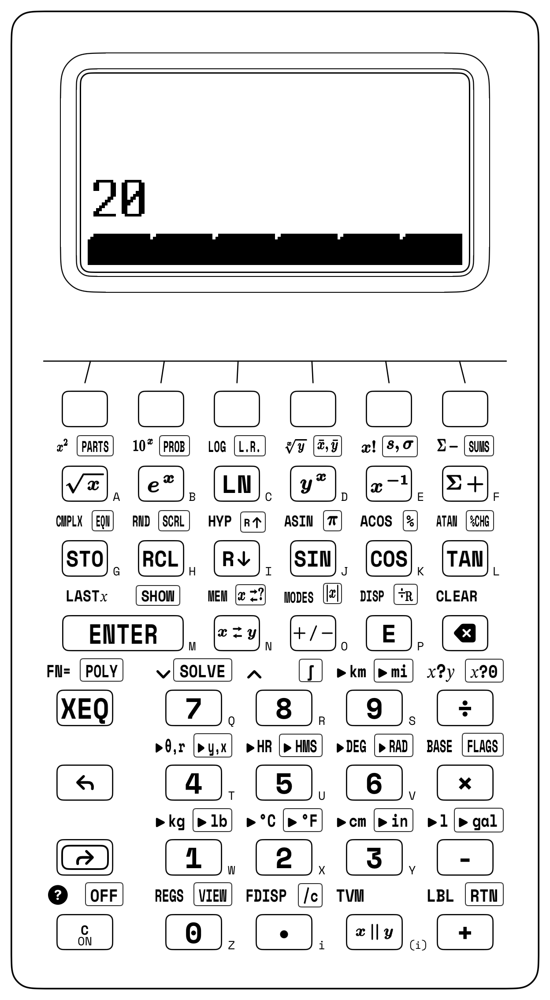
Here Register \(Z\) acts as an optical relay station between the objective and the eyepiece—just as it holds the circular orbital velocity \(v_{\text{orb},1}\) in a Hohmann orbital transfer while the vis-viva perigee speed \(v_p = \sqrt{\mu_\oplus(2/r_1 - 1/a)}\) assembles in Registers \(Y\) and \(X\). When solving a single-stage Gaussian thin-lens equation such as \(\frac{1}{f} = \frac{1}{30} + \frac{1}{60}\) from positive object and image distances, the harmonic parallel operator yields \(f = 30 \parallel 60 = \mathbf{20\text{ cm}}\) directly (Figure 13.2).
13.3.3 Try It on the Stack
- Reynolds Regime & Root-Sum-Square (RSS) Tolerance Stackup: First, verify that blood plasma (\(\rho = 1,025\text{ kg/m}^3,\; \mu = 1.5 \times 10^{-3}\text{ Pa}\cdot\text{s}\)) flowing through a \(D = 0.004\text{ m}\) vessel at \(v = 0.45\text{ m/s}\) lies in the laminar regime by evaluating \(\text{Re} = \rho v D / \mu = \mathbf{1,230} < 2,300\); second, for three mated machined bearing spacers carrying independent bilateral \(3\sigma\) tolerances of \(t_1 = \pm 0.04\text{ mm}\), \(t_2 = \pm 0.03\text{ mm}\), and \(t_3 = \pm 0.12\text{ mm}\), evaluate the statistical assembly tolerance \(t_{\text{RSS}} = \sqrt{t_1^2 + t_2^2 + t_3^2}\) and compare it against the worst-case sum \(0.19\text{ mm}\). (Verified Register \(X\) results: \(\text{Re} = \mathbf{1,230}\) and \(t_{\text{RSS}} = \mathbf{0.13\text{ mm}}\).)
- Gauss Thin-Lens Focal Length via Parallel Operator: An optical bench places an illuminated reticle \(d_o = 30\text{ cm}\) in front of a converging singlet that focuses a sharp real image at \(d_i = 60\text{ cm}\) behind the lens. Combine \(30\) and \(60\) with the harmonic parallel operator to solve \(\frac{1}{f} = \frac{1}{d_o} + \frac{1}{d_i}\). (Verified Register \(X\) result: \(f = \mathbf{20\text{ cm}}\).)
- 10 dB Matched Bridged-T Attenuator Synthesis: For an \(A_{\text{dB}} = 10\text{ dB}\) attenuator on a \(Z_0 = 600\,\Omega\) studio transmission line (\(K = 10^{10/20} \approx 3.162\)), multiply \(K - 1 \approx 2.162\) by \(Z_0 = 600\) to form the series bridge resistor \(R_1 = Z_0(K - 1)\) in Register \(X\), then enter \(Z_0 = 600\) (lifting \(R_1\) to Register \(Y\)), restore \(K - 1\) via
LASTX, and divide to obtain the shunt resistor \(R_2 = Z_0/(K - 1)\). (Verified stack result: \(Y = R_1 \approx \mathbf{1,297.367\,\Omega}\) and \(X = R_2 \approx \mathbf{277.485\,\Omega}\).)
Chapter 14: Rapid Estimation, Order-of-Magnitude Scaling & High-Speed Stack Fluency
At 05:29:45 Mountain War Time on July 16, 1945, in the Jornada del Muerto desert of New Mexico, the physicist Enrico Fermi stood at Base Camp ten miles (\(16\text{ km}\)) south of Ground Zero for the Trinity nuclear test holding a handful of torn scraps of notebook paper in his palm. While dozens of oscilloscopes, piezo-electric pressure transducers, and high-speed Fastax cameras recorded the detonation for weeks of post-test numerical reduction, Fermi prepared to bound the blast yield on the spot—before a single instrument trace was reduced.
Forty seconds after the silent flash illuminated the predawn mountains, the supersonic shock front reached Base Camp at radial distance \(r = 16\text{ km}\). As the blast wave arrived, Fermi released the torn paper scraps from chest height (\(h \approx 1.8\text{ m}\)). In still air, the fluttering scraps would have fallen straight to his boots in roughly \(t \approx 2.5\text{ s}\). Instead, the transient shock overpressure \(\Delta P\)—acting across the expanding hemispherical shock-dome surface area \(2\pi r^2\)—swept the falling scraps horizontally through a radial air displacement of \(\Delta x \approx 2.5\text{ meters}\) behind him before subsiding.
In Fermi's mental scaling model, multiplying the shock overpressure \(\Delta P\) by the hemispherical dome area \(2\pi r^2\) gives the total outward radial force \(F = 2\pi r^2 \Delta P\) exerted by the shock front, and multiplying that force by the radial air displacement \(\Delta x = 2.5\text{ m}\) estimates the mechanical work \(W \sim 2\pi r^2 \Delta P\,\Delta x\) performed by the blast wave. Equating that mechanical work to the explosive energy release \(E\), Fermi announced to his colleagues within seconds that the gadget's yield corresponded to approximately ten thousand tons (\(10\text{ kilotons}\)) of TNT—within a factor of two of the radiochemical post-mortem measurement (\(18.6\text{--}21\text{ kilotons}\)) that took weeks of laboratory analysis to establish.
14.1 Fermi Estimation, Dimensional Scaling & Algebraic Symmetries
That desert experiment embodies the first rule of quantitative science and engineering: never touch a keypad until your mind has bracketed the answer's order of magnitude and physical units (Pólya, 1945; Munroe, 2014). A 64-bit IEEE-754 floating-point processor executes positive and negative powers of ten with equal speed, even when two inputs differ by ten orders of magnitude. When you pair a three-second mental Fermi bound with a parenthesis-free postfix stack, the mind and the instrument form a closed-loop verification system: the mind supplies the coarse structural envelope—dimensional consistency, algebraic sign, limiting boundary behavior, and order-of-magnitude exponent (\(10^k\))—while the four-register stack (\(X, Y, Z, T\)) supplies the exact fourteen-digit internal IEEE-754 mantissa, evaluated from the innermost core outward with every intermediate physical quantity visible on the transflective display.
Why do rough mental estimates that guess three or four unknown factors to the nearest power of ten almost always land close to the true value? When a physical quantity \(Q = f_1 \cdot f_2 \cdots f_n\) is the product of \(n\) independent factors, and your mental estimate \(\hat{f}_i = 10^{\epsilon_i} f_i\) of each factor has a logarithmic error \(\epsilon_i = \log_{10}(\hat{f}_i / f_i)\) distributed symmetrically around zero with standard deviation \(\sigma_\epsilon\), independent overestimates (\(\epsilon_i > 0\)) and underestimates (\(\epsilon_j < 0\)) partially cancel in logarithmic space (Gauss, 1809): the total log-error \(\sum_{i=1}^n \epsilon_i\) grows as the square root \(\sqrt{n}\,\sigma_\epsilon\), not linearly as \(n\,\sigma_\epsilon\).
14.1.1 Dimensional Similitude, Allometric Scaling & Physical Anchors
Under the principle of dimensional similitude (Galilei, 1638), when a physical prototype of characteristic length \(L_1\), surface area \(A_1\), volume \(V_1\), mass \(M_1\), and structural stress \(\sigma_1\) is scaled by a linear factor \(\lambda = L_2 / L_1\) in every spatial dimension, wetted surface area and structural load capacity grow as the square (\(\lambda^2\)), while displacement volume and gravitational mass \(M = \rho V\) grow as the cube (\(\lambda^3\)):
Cross-sectional area grows with the product of two orthogonal lengths (\(\lambda^2\)) while gravitational weight \(M_2 g\) grows with the product of three (\(\lambda^3\)), so dividing weight by supporting area leaves \(\sigma_2 / \sigma_1 = \lambda^3 / \lambda^2 = \lambda\): an isometrically enlarged structure is stressed \(\lambda\) times harder under its own weight. Consequently, to preserve constant compressive stress \(\sigma_2 = \sigma_1\) (and Euler buckling margin) when a structural column or limb bone supporting an isometrically scaled mass \(M \propto \lambda^3\) triples in height (\(\lambda = 3\)), its cross-sectional area \(A \propto d^2\) must scale as \(\lambda^3\), so its diameter \(d\) must grow as the allometric power law \(\lambda^{3/2} = 3^{1.5} \approx 5.196\times\).
Fractional scaling laws of the form \(Y_2 = Y_1 \left(\frac{X_2}{X_1}\right)^p\)—whether \(\lambda^{3/2}\) bone-thickness scaling, \(T_2 = T_1 (a_2/a_1)^{3/2}\) orbital period scaling, or \(R_h^{2/3}\) hydraulic radius scaling—share a common dimensionless structure: divide \(X_2\) by \(X_1\), raise the dimensionless ratio to power \(p\), and multiply by the baseline reference \(Y_1\). When a wind-tunnel scale model (\(L_1 = 0.45\text{ m}\)) tested at \(\lambda = L_2 / L_1 = 8.5\times\) full scale has wetted surface area \(A_1 = 0.62\text{ m}^2\) and structural volume \(V_1 = 0.018\text{ m}^3\), squaring \(\lambda = 8.5\) (\(\lambda^2 = 72.25\)) and multiplying by \(0.62\text{ m}^2\) yields the full-scale surface area \(A_2 = 44.795\text{ m}^2\), while cubing \(\lambda = 8.5\) (\(\lambda^3 = 614.125\)) and multiplying by \(V_1 = 0.018\text{ m}^3\) and aluminum density \(\rho = 2{,}700\text{ kg/m}^3\) yields the full-scale structural mass \(M_2 \approx 29{,}846.475\text{ kg}\).
To perform rapid Fermi sanity checks before and after every evaluation, keep ten anchor magnitudes in immediate mental recall:
| Physical Domain | Reference Anchor Quantity | Exact / Standard Value | Mental Fermi Anchor |
|---|---|---|---|
| Geometry | \(\pi^2\) (Euler buckling & pendulums) | \(\approx 9.87\) | \(\approx 10\) (within \(1.3\%\)) |
| Time | Seconds in 1 Julian year (\(365.25\text{ d}\)) | \(\approx 3.156 \times 10^7\text{ s}\) | \(\approx \pi \times 10^7\text{ s}\) (within \(0.45\%\)) |
| Kinematics | Highway speed \(60\text{ mph}\) (\(96.56\text{ km/h}\)) | \(\approx 26.822\text{ m/s}\) | \(\approx 27\text{ m/s}\) (\(\approx 88\text{ ft/s}\)) |
| Hydrostatics | \(1\text{ atm}\) pressure head in water | \(\approx 10.332\text{ m H}_2\text{O}\) | \(\approx 10\text{ m}\) water (\(760\text{ mmHg}\)) |
| Thermodynamics | Ideal gas molar volume at STP (\(0^\circ\text{C}, 1\text{ atm}\)) | \(22.414\text{ L/mol}\) | \(\approx 22.4\text{ L/mol}\) (\(24.5\text{ L}\) at \(25^\circ\text{C}\)) |
| Heat Transfer | Specific heat of liquid water \(c_p\) | \(4{,}184\text{ J/(kg}\cdot\text{K)}\) | \(\approx 4.2\text{ kJ/(kg}\cdot\text{K)}\) |
| Acoustics | Speed of sound in dry air at \(20^\circ\text{C}\) | \(343.2\text{ m/s}\) | \(\approx \frac{1}{3}\text{ km/s}\) (\(1\text{ km}\) per \(3\text{ s}\)) |
| Astrodynamics | Low Earth Orbit (LEO) circular speed | \(7{,}669\text{ m/s}\) (\(400\text{ km}\)) | \(\approx 7.7\text{ km/s}\) (\(T \approx 92\text{ min}\)) |
| Electromagnetism | Speed of light in vacuum \(c\) | \(\approx 2.998 \times 10^8\text{ m/s}\) | \(\approx 30\text{ cm}\) per nanosecond (\(1\text{ ft/ns}\)) |
| Quantum / Solid State | Thermal voltage \(V_T = k_B T / e\) at \(300\text{ K}\) | \(25.852\text{ mV}\) | \(\approx 26\text{ mV}\) (\(\ln 10 \cdot V_T \approx 60\text{ mV/dec}\)) |
14.1.2 Algebraic Symmetries & Number-Sense Shortcuts
Before reaching for brute-force digit entry, inspect the algebraic structure of an expression (Pólya, 1945; Ellenberg, 2014). Recognizing a hidden symmetry often collapses a twenty-step calculation into three or four operations—or lets you compute the exact result in your head to verify what appears on the display.
Four classical series identities over \(k = 1, 2, \dots, n\)—for consecutive integers, squares, cubes, and telescoping partial-fraction sums—collapse multi-term summations into a single stack calculation:
Pairing the first and last integers (\(1 + n,\; 2 + (n-1)\)) forms \(n/2\) pairs of \((n+1)\), while the sum of the first \(n\) cubes equals the exact square of that triangular number, and decomposing each reciprocal product as \(\frac{1}{k(k+1)} = \frac{1}{k} - \frac{1}{k+1}\) cancels every interior fraction so only \(1 - \frac{1}{n+1}\) survives. For the non-trivial square-pyramid solution \(n = 24\), the sum of the first \(24\) squares is \(\frac{24 \times 25 \times 49}{6} = \mathbf{4{,}900} = 70^2\) (an exact \(70 \times 70\) square), while the sum of the first \(24\) cubes is the square of the \(24\text{th}\) triangular number \(\left(\frac{24 \times 25}{2}\right)^2 = 300^2 = \mathbf{90{,}000}\), and the \(24\text{-term}\) reciprocal product series \(\frac{1}{1\cdot 2} + \frac{1}{2\cdot 3} + \dots + \frac{1}{24\cdot 25}\) telescopes to \(1 - \frac{1}{25} = \frac{24}{25} = \mathbf{0.96}\).
Every product of two numbers equidistant from a round midpoint \(a\) collapses via the difference of squares \((a - d)(a + d) = a^2 - d^2\). Multiplying \(96 \times 104\) requires zero carry digits when seen as \((100 - 4)(100 + 4) = 10{,}000 - 16 = \mathbf{9{,}984}\), and \(63 \times 77\) reduces to \(70^2 - 7^2 = 4{,}900 - 49 = \mathbf{4{,}851}\). In the reverse direction, when evaluating \(a^2 - b^2\) for large, nearly equal numbers—such as \(10{,}004^2 - 9{,}996^2\)—factoring the expression into \((a - b)(a + b) = (8)(20{,}000) = 160{,}000\) prevents floating-point cancellation. On the factored binomial quotient \(\frac{(12 - 4)(6 + 2)}{4}\), evaluating the two binomials sequentially and dividing by \(4\) yields \(\mathbf{16}\).
Any integer ending in \(5\) can be written as \(10k + 5\), whose square expands to \((10k + 5)^2 = 100\,k(k + 1) + 25\). Multiply the leading digit prefix \(k\) by the next integer \((k + 1)\) and append 25: thus \(65^2 \implies 6 \times 7 = 42 \implies \mathbf{4{,}225}\), \(75^2 \implies 7 \times 8 = 56 \implies 5{,}625\) (so \(7.5^2 = \mathbf{56.25}\)), \(85^2 = 7{,}225\) (so \(8.5^2 = 72.25\)), and \(115^2 \implies 11 \times 12 = 132 \implies \mathbf{13{,}225}\). More generally, whenever two numbers share the same leading prefix \(k\) and their trailing digits sum to ten (\(d_1 + d_2 = 10\), as in \(74 \times 76\) or \(83 \times 87\)), their product is \(100k(k+1) + d_1 d_2 \implies 7 \times 8 = 56\) followed by \(4 \times 6 = 24 \implies \mathbf{5{,}624}\) (and \(83 \times 87 = 7{,}221\)).
For two numbers \(B + d_1\) and \(B + d_2\) near a power-of-ten base \(B\) (such as \(96 \times 94\) near \(B = 100\), where \(d_1 = -4\) and \(d_2 = -6\)), the identity \((B + d_1)(B + d_2) = B(B + d_1 + d_2) + d_1 d_2\) reduces multiplication to cross-subtraction plus a single-digit product: \(96 - 6 = 90\) followed by \((-4)(-6) = 24\) gives \(96 \times 94 = 9{,}024\), while above the base \(104 \times 107\) gives \((104 + 7) = 111\) followed by \(4 \times 7 = 28 \implies 11{,}128\).
Whenever a vehicle traverses an outbound distance \(D\) at rate \(v_1\) and returns across the same distance \(D\) at rate \(v_2\), the average round-trip speed \(v_{\text{avg}}\) is the Harmonic Mean—exactly twice the parallel harmonic product \(v_1 \parallel v_2\):
Total round-trip distance \(2D\) is divided by the combined outbound time \(D/v_1\) and return time \(D/v_2\), canceling \(D\) to leave \(\frac{2v_1 v_2}{v_1 + v_2}\). Because the vehicle spends more time covering distance \(D\) on the slower leg than on the faster leg, the time-weighted average speed \(2(v_1 \parallel v_2)\) is always pulled below the simple arithmetic mean \(\frac{1}{2}(v_1 + v_2)\) toward the slower speed. For an aircraft flying outbound against a headwind at \(v_1 = 40\text{ mph}\) and returning with a tailwind at \(v_2 = 60\text{ mph}\) (where the arithmetic average \(50\text{ mph}\) overstates the true speed), doubling the harmonic product \(40 \parallel 60 = 24\text{ mph}\) yields \(v_{\text{avg}} = \mathbf{48\text{ mph}}\). Because the harmonic operator is associative, chaining it across three parallel resistors evaluates \(48\,\Omega \parallel 72\,\Omega \parallel 36\,\Omega = \mathbf{16\,\Omega}\), while negating the second operand (\(50 \parallel -180\)) solves the inverse thin-lens equation \(d_i = (f^{-1} - d_o^{-1})^{-1}\) for \(f = 50\text{ mm}\) and \(d_o = 180\text{ mm}\) to give \(\frac{50(-180)}{50 - 180} \approx \mathbf{69.231\text{ mm}}\).
In planar geometry, any right triangle with perpendicular legs \(a, b\) and hypotenuse \(c = \sqrt{a^2 + b^2}\) has circumscribed circle radius \(R_{\text{circum}}\) and inscribed circle radius \(r_{\text{in}}\) given by linear identities:
Both identities have an immediate geometric meaning: by Thales's semicircle theorem, a \(90^\circ\) inscribed angle subtends a diameter of the circumscribed circle, making the hypotenuse \(c\) the exact diameter and placing the circumcenter at the midpoint of the hypotenuse (\(R_{\text{circum}} = c/2\)). Inside the triangle, the incircle touches the perpendicular legs at a distance \(r_{\text{in}}\) from the \(90^\circ\) corner, leaving tangent segments of lengths \((a - r_{\text{in}})\) and \((b - r_{\text{in}})\) from the two acute corners that meet along the hypotenuse \(c = (a - r_{\text{in}}) + (b - r_{\text{in}})\), which solves directly to \(r_{\text{in}} = \frac{a + b - c}{2}\) (and equals twice the triangle's area \(ab\) divided by its perimeter \(a + b + c\)). For an \(8\text{--}15\text{--}17\) Pythagorean right triangle, \(\frac{8 + 15 - 17}{2}\) yields the exact inradius \(r_{\text{in}} = \mathbf{3}\), while the centroid \((\bar{x}, \bar{y})\) of a planar triangle with vertices \((2, 4), (8, 12),\) and \((14, 2)\) is the arithmetic mean of its vertex coordinates: \(\bar{x} = \frac{2+8+14}{3} = \mathbf{8}\) and \(\bar{y} = \frac{4+12+2}{3} = \mathbf{6}\). Cascading two polar norms finds both the 2D hypotenuse \(r = \sqrt{28.4^2 + 37.6^2} \approx \mathbf{47.12}\) (\(\theta \approx 52.935^\circ\)) and the 3D space diagonal \(d = \sqrt{18.5^2 + 24.2^2 + 12^2} \approx \mathbf{32.74}\).
Infinite geometric series and quadratic fixed points offer two further closed-form shortcuts. When an elastic sphere dropped from height \(h_0 = 12\text{ m}\) rebounds to a geometric fraction \(r = 0.75\) of its previous peak on each bounce (\(|r| < 1\)), summing the initial drop \(h_0\) plus twice the infinite geometric series \(\frac{h_0 r}{1 - r}\) gives the total vertical distance traveled before coming to rest: \(D_{\text{tot}} = h_0\frac{1 + r}{1 - r} = 12 \times \frac{1.75}{0.25} = \mathbf{84\text{ m}}\). And the Golden Ratio \(\varphi = \frac{1 + \sqrt{5}}{2} \approx \mathbf{1.618}\), which satisfies \(\varphi^2 - \varphi - 1 = 0\), has a reciprocal \(\varphi^{-1} = \varphi - 1 \approx 0.618\) that shares the identical fractional digits.
14.1.3 Geometric-Mean Fermi Bracketing & Buckingham \(\Pi\) Dimensional Synthesis
When Enrico Fermi estimated an unknown physical parameter \(x\) whose true value was uncertain by an order of magnitude or more, he never guessed a single point estimate. Instead, he stated two confidence bounds: a conservative Lower Bound \(x_L\) that the quantity is almost certainly greater than, and an upper Ceiling Bound \(x_U\) that the quantity is almost certainly less than.
If \(x_L = 10\) and \(x_U = 1{,}000\), taking the arithmetic mean \(\frac{10 + 1000}{2} = 505\) skews the estimate toward the upper bound (\(50.5\times\) larger than \(x_L\), but only \(1.98\times\) smaller than \(x_U\)). Because order-of-magnitude uncertainty is symmetric in logarithmic space (\(\frac{1}{2}(\log_{10} x_L + \log_{10} x_U) = \log_{10}\sqrt{x_L x_U}\)), the minimax estimator \(\hat{x}_{\text{Fermi}}\) that equalizes the relative factor error against both bounds is the Geometric Mean:
Multiplying the lower floor \(x_L\) by the upper ceiling \(x_U\) and taking the square root places \(\hat{x}_{\text{Fermi}}\) at the exact logarithmic midpoint between them, so the ratio above the floor \(\hat{x}_{\text{Fermi}} / x_L = \sqrt{x_U / x_L}\) equals the ratio below the ceiling \(x_U / \hat{x}_{\text{Fermi}} = \sqrt{x_U / x_L}\) (for \(10\) and \(1{,}000\), \(\sqrt{10 \times 1{,}000} = 100\), a symmetric factor of \(10\times\) from each end). A Fermi systems-engineering problem illustrates this geometric-mean bracketing: Estimate the continuous electrical power output \(P_{\text{elec}}\) of a municipal reservoir solar-floatovoltaics array covering a circular retention basin of diameter bounded between \(D_L = 300\text{ m}\) and \(D_U = 600\text{ m}\) (\(\hat{D} = \sqrt{300 \times 600} \approx 424.264\text{ m}\), giving circular area \(\hat{A} = \pi(\hat{D}/2)^2 \approx 1.414 \times 10^5\text{ m}^2\)), under daytime solar irradiance bounded between \(I_L = 400\text{ W/m}^2\) and \(I_U = 900\text{ W/m}^2\) (\(\hat{I} = \sqrt{400 \times 900} = 600\text{ W/m}^2\)), with silicon photovoltaic conversion efficiency bounded between \(\eta_L = 16\%\) and \(\eta_U = 25\%\) (\(\hat{\eta} = \sqrt{0.16 \times 0.25} = 0.2\)). Multiplying \(\hat{A}\,\hat{I}\,\hat{\eta}\) yields \(P_{\text{elec}} \approx 1.696 \times 10^7\text{ W} \approx 16.96\text{ MW}\).
By the Buckingham \(\Pi\)-Theorem of dimensional analysis, any physical law relating \(n\) dimensional variables expressed in \(k\) fundamental SI base dimensions (\(\text{M}, \text{L}, \text{T}, \Theta, \text{I}\)) reduces to a relationship among \(n - k\) independent dimensionless groups \(\Pi_1, \Pi_2, \dots, \Pi_{n-k}\). When aerodynamic drag force \(F_D\) (\(\text{kg}\cdot\text{m/s}^2\)) depends on air density \(\rho\) (\(\text{kg/m}^3\)), velocity \(v\) (\(\text{m/s}\)), characteristic diameter \(D\) (\(\text{m}\)), and viscosity \(\mu\) (\(\text{kg/(m}\cdot\text{s)}\)), matching exponents of \([\text{M}], [\text{L}], [\text{T}]\) isolates two dimensionless \(\Pi\)-groups: the drag coefficient \(C_D = \frac{F_D}{\frac{1}{2}\rho v^2 A}\) and the Reynolds number \(\text{Re} = \frac{\rho v D}{\mu}\). Checking that both sides of an equation share identical \([\text{M}^a \text{L}^b \text{T}^c]\) exponents before pressing a key catches missing factors of \(g_0\), \(r\), or \(t^2\).
14.2 Visual Chunking, Inside-Out Rhythm & Mental Bracketing
Experimental studies of working memory (Miller, 1956) and cognitive load (Sweller, 1988) establish that human active attentional span can hold and manipulate only about four independent relational chunks at once. When you attempt to type a complex multi-tier engineering formula from left to right on an algebraic keypad, your attention is forced to track two competing tasks: the physical meaning of the operands and the syntactic depth of open parentheses ((( ... ))).
14.2.1 Expression-Tree Depth & Inside-Out Visual Chunking
Reverse Polish Notation eliminates that syntactic burden by aligning evaluation order with the Strahler number of an expression tree, which measures how many intermediate "tributaries" of a formula tree must wait in the stack at once, just as mountain headwater streams (Order 1) merge into larger tributaries (Order 2) and mainstem rivers (Order 3) (Burks et al., 1954; Hamblin, 1957).
Whenever you look at a printed equation on an examination sheet or blueprint, four visual chunking habits guide the eye before touching a key. First, locate the deepest asymmetric seed: scan inside the innermost radical roof, fraction bar, or transcendental argument for the deepest binary operation (\(a/b\) or \(c + d\)) and evaluate that seed first in Register \(X\) so that every surrounding unary function transforms the value in place without lifting the stack. Second, rely on stack lift after every operator: under the Stack-Lift State Machine, every arithmetic operator and unary function terminates digit entry and arms stack lift (Lift = TRUE), so typing the first digit of the next constant pushes your completed subtotal up into Register \(Y\).
Third, invert or swap subtracted and divided subtotals in place: if you evaluate a complicated denominator \(D\) first in Register \(X\) and need to compute \(N / D\), either take its reciprocal and multiply by \(N\) (\(D^{-1} \times N\)), or enter \(N\) (which lifts \(D\) into Register \(Y\)), swap \(X\) and \(Y\), and divide; if you evaluate a complicated subtrahend \(S\) first and need \(M - S\), either negate \(S\) and add \(M\) (\(-S + M\)), or enter \(M\), swap \(X\) and \(Y\), and subtract. Fourth, let automatic stack lift act as the horizontal fraction bar: any two-branch compound expression of the form \((A \text{ op } B) \div (C \text{ op } D)\) evaluates in three registers (\(X, Y, Z\)) with zero parentheses—evaluate \((A \text{ op } B)\) in Register \(X\); when you enter \(C\) and \(D\), the finished numerator rides up into Register \(Z\); and when \((C \text{ op } D)\) collapses into Register \(X\), the numerator drops from \(Z\) back into \(Y\), ready for division.
Across quantitative problem solving, expressions stratify into seven structural complexity tiers by their active register footprint:
| Complexity Tier | Mathematical Structure | Active Registers | Representative Operations |
|---|---|---|---|
| Tier 1 | Single-branch arithmetic & percentages | \(1\text{--}2\) (\(X, Y\)) | Chained products/quotients, %, %CHG, 1/x |
| Tier 2 | Nested unary cascades & continued fractions | \(1\text{--}2\) (\(X, Y\)) | Radical pyramids (√x), reciprocal ladders (1/x) |
| Tier 3 | Planar right-triangle & vector geometry | \(2\) (\(X, Y\)) | Pythagorean norms (▸θ,r), polar/rectangular (▸y,x), inradii |
| Tier 4 | Oblique trigonometry & two-branch quotients | \(2\text{--}3\) (\(X, Y, Z\)) | Law of Cosines, compound fractions \((A+B)/(C-D)\), secant slopes |
| Tier 5 | Solid mensuration & harmonic networks | \(2\text{--}3\) (\(X, Y, Z\)) | Conical frustums (\(R^2+Rr+r^2\) via LASTX), parallel loads (x∥y) |
| Tier 6 | Transcendental modeling & numerical calculus | \(2\text{--}3\) (\(X, Y, Z\)) | Exponential decay (eˣ), central differences, SOLVE, ∫ |
| Tier 7 | Coupled multi-branch & astrodynamic systems | \(3\text{--}4+\) (\(X \dots T\) / INF) |
Hohmann transfer impulses, LMTD exchangers, multi-branch INF networks |
The Tier 2 nested radical pyramid and five-stage continued fraction illustrate this single-register collapse:
For \(Q_1\), mentally \(\sqrt{83} \approx 9.1\), so \(\sqrt{29 + 9.1} \approx 6.17\) and \(\sqrt{17 + 6.17} \approx 4.81\); starting at the innermost radicand \(83\) and alternating square roots with integer addition evaluates \(Q_1 \approx \mathbf{4.814}\) using only Registers \(X\) and \(Y\). Starting at the bottom denominator \(292\) of the five-stage continued fraction \(Q_2\) (the fourth simple continued-fraction convergent of \(\pi\), \(\frac{103{,}993}{33{,}102}\)) and alternating reciprocals with addition climbs all five rungs to yield \(Q_2 \approx \mathbf{3.142}\) (matching \(\pi\) to nine decimal places internally).
14.2.2 Horner's Nested Polynomial Scheme & Single-Entry Factoring
In Horner's Method, any degree-\(n\) polynomial
can be factored into a nested chain of alternating multiplications and additions:
Term-by-term evaluation of a cubic \(P(x) = 3x^3 - 5x^2 + 4x - 7\) requires computing \(x^3\) and \(x^2\) separately, multiplying by coefficients, and summing partial products across multiple registers (\(2n\) multiplications and \(n\) additions). Written in Horner nested form,
evaluates in just \(n = 3\) multiplications and \(n = 3\) additions, and when \(x\) is pre-loaded into all four registers (\(T = Z = Y = X = x\)), top-register \(T\)-replication supplies a fresh copy of \(x\) at every multiplication step without retyping \(x\).
Experienced analysts treat keypad digit entry as the single highest-risk operation on any calculator: retyping a multi-digit parameter such as \(R = 8.537\) or \(x = 3.001\) three separate times inside an equation triples keystroke time and invites a silent digit transposition. Factoring quadratic forms such as the Conical Frustum volume formula \(V = \frac{1}{3}\pi h(R^2 + Rr + r^2)\) (height \(h = 14\text{ cm}\), base radius \(R = 8.5\text{ cm}\), top radius \(r = 4.2\text{ cm}\)) or pre-filling the stack with a constant multiplier—such as an \(8.25\%\) sales-tax factor \(1 + 8.25\%\) (\(\times \$10 = \mathbf{\$10.825}\)) or unit factor \(25.4\text{ mm/in}\) (\(\times 2\text{ in} = \mathbf{50.8\text{ mm}}\))—eliminates redundant entry. Through the natural logarithm (Napier, 1614), the exact doubling time for continuous growth \(y(t) = y_0 e^{rt}\) at rate \(r = 4.25\% = 4.25 \times 10^{-2}\text{ yr}^{-1}\) is \(t_{\text{double}} = \frac{100\ln 2}{4.25} \approx \mathbf{16.309\text{ years}}\) (confirming the mental Rule of 69.3 estimate \(69.3 / 4.25 \approx 16.3\text{ yr}\)).
14.2.3 Life Without Parentheses: The Three-Point Sanity Check
Before recording any final result from Register \(X\), apply a three-point post-calculation sanity check. First, check inequality bounds: verify that for positive operands \(x, y > 0\), a parallel harmonic result \(x \parallel y\) is smaller than \(\min(x, y)\) (for example, \(20 \parallel 30 \parallel 60 \parallel 40 \parallel 120 = 7.5 < 20\)); that for nonzero legs \(x, y \ne 0\), a Euclidean hypotenuse \(\sqrt{x^2 + y^2}\) lies between \(\max(\lvert x\rvert, \lvert y\rvert)\) and \(\lvert x\rvert + \lvert y\rvert\); and that a weighted or log-mean average (\(\Delta T_{\text{lm}}\)) falls between its extreme values. Second, verify angular mode and physical sign: glance at the top-left annunciator (DEG, RAD, or GRAD) whenever trigonometric or polar/rectangular conversions are used, and confirm the algebraic sign of work, heat transfer, or cash-flow outputs. Third, exploit postfix delimiter elimination across the ten standard calculation patterns:
| Mathematical Expression | Verified Result | Active Stack Footprint | Infix Brackets | Postfix Brackets |
|---|---|---|---|---|
| 1. Triple Harmonic Network: \(12 \parallel 20 \parallel 30\) | 6 |
\(X, Y\) (\(2\) registers via chained x∥y) |
\(2\) ((, )) |
\(0\) |
| 2. Inverse Harmonic Partner: \((20^{-1} - 30^{-1})^{-1}\) | 60 |
\(X, Y\) (negate second branch before x∥y) |
\(2\) ((, )) |
\(0\) |
| 3. Nested Continued Fraction: \(1 / (2 + 1/(3 + 1/4))\) | 0.433 |
\(X, Y\) (bottom-up alternating 1/x and +) |
\(4\) (((, ))) |
\(0\) |
| 4. Radical Nested Pyramid: \(\sqrt{17 + \sqrt{29 + \sqrt{83}}}\) | 4.814 |
\(X, Y\) (inside-out alternating √x and +) |
\(6\) ((((, )))) |
\(0\) |
| 5. 3D Euclidean Norm: \(\lVert(3, 4, 12)\rVert\) | 13 |
\(X, Y\) (two-stage polar norm ▸θ,r) |
\(2\) ((, )) |
\(0\) |
| 6. Sequential Markup & Discount: \(\$250 + 15\% - 12\%\) | 253 |
\(X, Y\) (base-preserving % operator) |
\(2\) ((, )) |
\(0\) |
| 7. Quadratic Roots: \(x^2 - 7x + 12 = 0\) | 3, 4 |
POLY solver (A=0, B=1, C=-7, D=12) |
\(4\) ((, )) |
\(0\) |
| 8. Sexagesimal Survey Angle Sum: \(3^\circ 45' + 2^\circ 35'\) | 6.2 |
\(X, Y\) (▸HR addition followed by ▸HMS, packed 6.20 = \(6^\circ 20'\)) |
\(4\) ((, )) |
\(0\) |
| 9. Simultaneous Ramp Forces: \(250\text{ N}\) at \(28^\circ\) | 220.74 |
\(X, Y\) (single ▸y,x decomposes \(F_x, F_y\)) |
\(4\) (\(2\times\) entry) | \(0\) |
| 10. Lead-Free Solder Reflow Peak: \(245^\circ\text{C} \to ^\circ\text{F}\) | 473 |
\(X\) (direct hardware conversion ▸°F) |
\(2\) ((, )) |
\(0\) |
14.3 High-Speed Postfix Synthesis & Epilogue
High-speed postfix evaluation combines five register patterns with three system-level configuration and verification controls:
- Configurable Stack Depth (
[↱] [FLAGS]\(\to\)STACK): Right-shifted[↱] [FLAGS]on[×]opens the system configuration softkeys ([STACK] [MODE] [UI] [EXAM] [SF] [CF]), whereSTACKassigns \(\mathtt{[2\text{-}LVL]} \;\; \mathtt{[4\text{-}LVL]} \;\; \mathtt{[8\text{-}LVL]} \;\; \mathtt{[INF]} \;\; \mathtt{[VIEW]}\) to the top row (4-LVLis the default,8-LVLdoubles as a 4-level complex phasor stack, andINFenables a 999-level dynamic LIFO heap under System Flag 5). - Exact Rational Fractions (
[↰] [FDISP]&[↱] [/c]): Two taps of.(a . b . c) enter an exact mixed fraction \(a\,\frac{b}{c}\) into Register \(X\), while[↰] [FDISP](left-shifted on[.]) toggles Fraction Display Mode (System Flag 7, with default denominator ceiling \(c_{\max} = 4{,}095\)). Right-shifted[↱] [/c]sets a custom denominator limit \(c_{\max}\) from Register \(X\) (and activates fraction display when \(c_{\max} \ge 2\)), while inside[↱] [FLAGS]\(\to\)[SF]/[CF], pressing digit8or9sets or clears Flag 8 (8:/c, toggling between reduced lowest-terms fractions and unreduced denominators) and Flag 9 (9:d/c, switching between best-fit continued-fraction approximation up to \(c_{\max}\), yielding3 16/113for \(\pi\), and fixed-denominator/cscaling) to govern how[↰] [FDISP]reduces rational approximations. - Sanctioned Examination Lock (
[↱] [FLAGS]\(\to\)EXAM): TheEXAMsoftkey inside[↱] [FLAGS]executes an atomic hardware reset and illuminates the persistentEXAMbadge for sanctioned professional and academic examinations.
14.3.1 Multi-Branch Harmonic Network Collapse in 999-Level INF Mode
While a five-branch parallel telemetry shunt network \(R_{\text{eq}} = 20 \parallel 30 \parallel 60 \parallel 40 \parallel 120 = 7.5\,\Omega\) can be folded left-to-right in two registers (20 ENTER 30 x∥y 60 x∥y ...), batch-staging all five branch resistances onto the stack before folding right-to-left shows how selecting INF stack mode (FLAGS \(\to\) STACK \(\to\) INF) lifts the 4-register ceiling. When the fifth resistor 120 is pushed onto the stack in Step 2, \(R_1 = 20\,\Omega\) shifts into Level 5 above Register \(T\), and on the first parallel-operator reduction (Step 3), \(20\,\Omega\) drops from Level 5 back into Register \(T\):
| Step | Keystroke | Register T | Register Z | Register Y | Register X | Operational Analytic Commentary |
|---|---|---|---|---|---|---|
| 1 | [↱] [FLAGS] [STACK] [INF] 20 [ENTER] 30 [ENTER] 60 [ENTER] 40 |
20 |
30 |
60 |
40 |
Enable 999-level INF stack; load first 4 branches (\(R_1 \dots R_4\)). |
| 2 | [ENTER] 120 |
30 |
60 |
40 |
120 |
Enter \(R_5 = 120\,\Omega\); \(R_1 = 20\) shifts into Level 5. |
| 3 | [x∥y] |
20 |
30 |
60 |
30 |
\(40 \parallel 120 = 30\,\Omega\); \(R_1 = 20\) drops from Level 5 back into \(T\). |
| 4 | [x∥y] |
0 |
20 |
30 |
20 |
\(60 \parallel 30 = 20\,\Omega\); true LIFO drop pulls \(0\) into \(T\). |
| 5 | [x∥y] |
0 |
0 |
20 |
12 |
\(30 \parallel 20 = 12\,\Omega\); \(R_1 = 20\) drops into Register \(Y\). |
| 6 | [x∥y] |
0 |
0 |
0 |
7.5 |
Final collapse \(20 \parallel 12 = 7.5\,\Omega\). |
14.3.2 Four Rhythms of Fluency: Quotients, Horner Nests, Vectors, and Slopes
On the two-branch rational expression \(Q_3 = \frac{4.82 \times 10^3 - 195}{\sqrt{84.6} + 12.7^2}\), the mental numerator is \(4{,}820 - 195 = 4{,}625\), and the denominator is \(\sqrt{84.6} + 12.7^2 \approx 9.2 + 161.3 = 170.5\), so \(Q_3 \approx 4625 / 170.5 \approx 27.1\). Evaluating the numerator \(4{,}625\) first and then taking the square root of \(84.6\) (\(\approx 9.198\)) and the square of \(12.7\) (\(161.29\)) uses automatic stack lift to park the finished numerator \(4{,}625\) in Register \(Z\) while the two denominator terms form in Registers \(Y\) and \(X\); adding the denominator terms (\(\approx 170.488\)) drops \(4{,}625\) back into Register \(Y\), and dividing yields \(Q_3 \approx \mathbf{27.128}\) with zero extra ENTER presses after the numerator. Any two-branch rational fraction—from a secant slope to a trapezoidal canal's hydraulic radius—parks its completed numerator in Register \(Z\) while the denominator components assemble in Registers \(Y\) and \(X\).
To evaluate the Horner nested cubic \(P(x) = 3x^3 - 5x^2 + 4x - 7 = ((3x - 5)x + 4)x - 7\) at \(x = 2.5\) in 4-LVL mode, pre-loading \(x = 2.5\) across all four registers (\(T = Z = Y = X = 2.5\)) exploits top-register \(T\)-replication: typing 3, multiplying (\(7.5\)), and subtracting 5 forms the inner binomial \(3x - 5 = 2.5\) in Register \(X\) while \(x = 2.5\) remains replicated across Registers \(Y, Z,\) and \(T\). Multiplying and adding 4 gives \((3x - 5)x + 4 = 10.25\), and multiplying once more before subtracting 7 yields \(P(2.5) = \mathbf{18.625}\) without retyping \(x\) or touching a memory register. Pre-filling the stack or reusing the last operand also evaluates Heron's triangle area (with semi-perimeter \(s\) replicated across all four stack levels) and the Conical Frustum volume formula \(V = \frac{1}{3}\pi h(R^2 + Rr + r^2)\) (forming \(R^2 + Rr + r^2 = 125.59\text{ cm}^2\) from a single entry of \(R = 8.5\text{ cm}\) and \(r = 4.2\text{ cm}\) to deliver \(V \approx \mathbf{1,841.246\text{ cm}^3}\) for height \(h = 14\text{ cm}\)).
For 2D polar force vector superposition, two tugboats pull on a hull with polar force vectors \(\mathbf{F}_1 = 10\text{ kN} \angle 30^\circ\) and \(\mathbf{F}_2 = 15\text{ kN} \angle 75^\circ\). Because polar-to-rectangular conversion transforms \((\theta, r)\) in \((Y, X)\) into rectangular components \((y, x)\) in \((Y, X)\), decomposing \(\mathbf{F}_1\) (\(F_{1y} = 5\text{ kN},\; F_{1x} \approx 8.66\text{ kN}\)) and then \(\mathbf{F}_2\) (\(F_{2y} \approx 14.489\text{ kN},\; F_{2x} \approx 3.882\text{ kN}\)) populates all four stack registers (\(T = F_{1y}, Z = F_{1x}, Y = F_{2y}, X = F_{2x}\)). Swapping and rolling the stack sums the orthogonal components (\(F_x \approx 12.543\text{ kN},\; F_y \approx 19.489\text{ kN}\)) and reconverts to polar coordinates to yield a resultant force of \(F_{\text{res}} \approx \mathbf{23.176\text{ kN}}\) at azimuth \(\approx 57.236^\circ\), matching the coordinate reduction of surveyed traverses and great-circle navigation (\(D_{\text{nmi}} \approx \mathbf{3,008\text{ nmi}}\) between New York and London).
Finally, by Taylor's theorem for \(f \in C^3[x - h, x + h]\), the symmetric central difference \(f'(x) \approx \frac{f(x+h) - f(x-h)}{2h}\) cancels the even \(\frac{1}{2}h^2 f''(x)\) Taylor terms, which removes the first-order \(\mathcal{O}(h)\) forward-difference truncation error to achieve \(\mathcal{O}(h^2)\) accuracy for some \(\xi \in (x - h, x + h)\):
For \(f(x) = x^3 - 2x\) at \(x = 3\) with step \(h = 0.001\) (\(2h = 0.002\), exact analytical derivative \(f'(3) = 3(3^2) - 2 = 25\)), evaluating the forward value \(f(3.001) \approx 21.025\) first and the backward value \(f(2.999) \approx 20.975\) second uses automatic stack lift across all four registers (\(X, Y, Z, T\)); subtracting the backward value from the forward value (\(\Delta f = 0.05\)) and dividing by \(2h = 0.002\) recovers \(f'(3) \approx \mathbf{25}\).
14.3.3 Epilogue: The Mind and the Instrument
In the autumn of 1924, when Jan Łukasiewicz stood at a Warsaw blackboard and demonstrated that parentheses vanish as soon as operators follow their operands, he aligned mathematical notation with the temporal order of calculation (Łukasiewicz, 1924; Hamblin, 1957; Cochran, 1972). Printed infix notation writes equations for static space from the outside in, forcing the eye to scan past outer radicals and fraction bars until the closing parenthesis is reached. Physical causality and human reasoning unfold in time from the inside out: an inner ratio or measurement is formed at the core of a problem, and each successive operation transforms the physical quantity already in view.
Across every domain of quantitative science and engineering, that inside-out perspective connects physical laws into a single continuous thread. From William Hewlett's 1971 shirt-pocket challenge, Edsger Dijkstra's shunting-yard stack, and John Napier's logarithmic tables, we stepped into Jean-Baptiste Delambre's meridian triangles, Charles Proteus Steinmetz's rotating AC phasors, and Galileo Galilei's three-dimensional Square-Cube Law. When forward algebra trapped the unknown inside nonlinear conservation laws, Cardano and Richard Brent inverted equations for their roots, Lewis Fry Richardson and Werner Romberg canceled discretization error across definite integrals, and Carl Friedrich Gauss recovered the orbit of Ceres from noisy observations by Least Squares. Finally, Claude Shannon's binary switching gates, Fibonacci's discounted cash flows, René Descartes's coordinate curves, Osborne Reynolds's dimensionless numbers, and Enrico Fermi's Trinity paper scraps converged back into the engineer's own mind.
Because Registers \(T, Z, Y,\) and \(X\) on the StackCalc SC-32 keep every intermediate quantity visible together with its physical meaning and order of magnitude, each step can be bounded by Fermi's mental estimation and checked against the governing physical law before the next key is pressed. That discipline—mental estimation before calculation, algebraic factoring before digit entry, and inside-out evaluation from the innermost core outward—is the art of thinking in the stack.
14.3.4 Try It on the Stack
- Round-Trip Harmonic Mean Speed & Lucas's Square-Pyramid Sum: First, for an aircraft flying outbound against a headwind at \(v_1 = 40\text{ m/s}\) and returning over the same ground track with a tailwind at \(v_2 = 60\text{ m/s}\), combine \(40\) and \(60\) with the harmonic parallel operator and multiply by \(2\) to evaluate the round-trip average speed \(v_{\text{avg}} = \frac{2v_1 v_2}{v_1 + v_2} = \mathbf{48\text{ m/s}}\); second, evaluate the 24-layer cannonball pyramid \(\sum_{k=1}^{24} k^2 = \frac{24(25)(49)}{6}\) and take its square root to verify the Lucas–Watson square-pyramid identity. (Verified Register \(X\) results: \(v_{\text{avg}} = \mathbf{48\text{ m/s}}\), pyramid sum \(\mathbf{4,900}\), and \(\sqrt{4,900} = \mathbf{70}\).)
- Inside-Out Nested Radical Pyramid: Evaluate \(\sqrt{13 + \sqrt{23 + \sqrt{71}}}\) from the innermost radical \(\sqrt{71} \approx 8.426\) outward with zero parentheses and zero memory keys. (Verified Register \(X\) result: \(\mathbf{\approx 4.313}\).)
- Single-Entry Frustum Core via Last-Argument Reuse: Evaluate the frustum area sum \(R^2 + Rr + r^2\) for \(R = 11.4\text{ cm}\) and \(r = 6.8\text{ cm}\) by squaring \(11.4\), restoring \(11.4\) via
LASTXto multiply by \(6.8\), recalling \(6.8\) to square it, and summing both products into \(R^2\). (Verified Register \(X\) result: \(\mathbf{253.72\text{ cm}^2}\).)
Appendix A: Formal Stack-Lift State Machine
The operational registers (\(X, Y, Z, T\)) of a Reverse Polish Notation (RPN) processor form a four-level last-in, first-out (LIFO) evaluation stack (Figure A.1), with \(X\) as the active bottom display register, \(Y\) as the second operative register, \(Z\) as the third, and \(T\) as the top constant register.
On the SC-32, Register \(X\) is governed by a deterministic George H. Mealy (1955) finite-state automaton \((Q, \Sigma, \Delta, \delta, \lambda)\) called the Stack Lift Automaton—defined by a finite set of internal stack-lift states \(Q = \{\text{EDIT}, \text{ARMED}, \text{DISABLED}\}\), an input alphabet \(\Sigma\) of physical keystrokes, an output alphabet \(\Delta\) of register-transfer operations, a state-transition function \(\delta: Q \times \Sigma \to Q\) mapping the current state and keystroke to the next state, and an output function \(\lambda: Q \times \Sigma \to \Delta\) specifying the immediate register transformation—preserving the classical four-register state-transition rules of the HP-35, HP-15C, and HP-32SII (Hamblin, 1957; Cochran, 1972; HP, 1982; HP, 1991):
EDIT(Building a Number): Digit keys ([0]–[9],[.]) append to Register \(X\) without disturbing \(Y, Z,\) or \(T\).ARMED(Lift = TRUE): Pressing any operator (such as[+],[×],[√x],[SIN], or[LN]) terminates digit entry, writes the result into \(X\), and arms lift. The next digit key pushes \(T \leftarrow Z, Z \leftarrow Y, Y \leftarrow X\) before starting a new number in \(X\).DISABLED(Lift = FALSE): Set by[ENTER](duplicates \(Y \leftarrow X\) and disarms lift),[<-](CLx),[C], and[Σ+]/[↰] [Σ-]. Prefix keys ([↰],[↱],[E]) preserveLift.
A.1 Definitive 43-Key Physical Matrix Audit Table
Each physical key position across Rows R0–R7 executes a deterministic stack-lift transition, LASTX update, and four-register transformation vector:
| Key Position | Primary Legend | Stack Lift | LASTX | Register Delta Transformation | Operational Description |
|---|---|---|---|---|---|
| R0, C0–C5 | [LFU0]–[LFU5] |
Preserves | No | Context dependent | Softkey Menu / Dynamic LFU Slots 1–6 |
| R1, C0 | [√x] |
Enables | Yes | \(X \leftarrow \sqrt{X}; Y, Z, T \text{ unch}\) | Unary square root |
| R1, C1 | [eˣ] |
Enables | Yes | \(X \leftarrow e^X; Y, Z, T \text{ unch}\) | Unary natural exponential |
| R1, C2 | [LN] |
Enables | Yes | \(X \leftarrow \ln X; Y, Z, T \text{ unch}\) | Unary natural logarithm |
| R1, C3 | [yˣ] |
Enables | Yes | \(X \leftarrow Y^X; Y \leftarrow Z; Z \leftarrow T; T \leftarrow T\) | Dyadic power; stack drops |
| R1, C4 | [1/x] |
Enables | Yes | \(X \leftarrow 1/X; Y, Z, T \text{ unch}\) | Unary reciprocal |
| R1, C5 | [Σ+] |
Disables | No | \(X \leftarrow n; Y, Z, T \text{ unch}; \Sigma \text{ updated}\) | Statistical accumulation |
| R2, C0 | [STO] |
Enables | No | \(X \to \text{Var}[k]\) (or \(\text{Var}[k] \leftarrow \text{Var}[k]\text{ op }X\)); \(\text{Stack unch}\) | Store \(X\) or in-place store arithmetic (+,-,×,÷) |
| R2, C1 | [RCL] |
Enables | No / Yes | If Lift: pushes stack, \(X \leftarrow \text{Var}[k]\); RCL op k updates \(X \leftarrow X\text{ op }\text{Var}[k]\) in place (\(Y,Z,T\text{ unch}\)) |
Recall variable \(k\) or in-place recall arithmetic (+,-,×,÷) |
| R2, C2 | [R↓] |
Enables | No | \(X \leftarrow Y; Y \leftarrow Z; Z \leftarrow T; T \leftarrow X\) | Roll stack down circularly |
| R2, C3–C5 | [SIN], [COS], [TAN] |
Enables | Yes | \(X \leftarrow \operatorname{trig}(X); Y, Z, T \text{ unch}\) | Planar sine, cosine, tangent |
| R3, C0–1 | [ENTER] |
Disables | No | \(T \leftarrow Z; Z \leftarrow Y; Y \leftarrow X; X \leftarrow X\) | Duplicate \(X \to Y\); disable lift |
| R3, C2 | [x⇄y] |
Enables | No | \(X \leftarrow Y; Y \leftarrow X; Z, T \text{ unch}\) | Swap Registers \(X\) and \(Y\) |
| R3, C3 | [+/-] |
Preserves (Both) | Yes / No | \(X \leftarrow -X; Y, Z, T \text{ unch}\) | Toggle sign (LASTX saved on finalized stack; unchanged in EDIT) |
| R3, C4 | [E] |
Preserves | No | Arms exponent buffer | Scientific exponent separator |
| R3, C5 | [<-] |
Preserves / Disables | No | Backspace in EDIT; \(X \leftarrow 0\) as CLx |
Backspace / Clear \(X\) |
| R4, C0 | [XEQ] |
Preserves | No | Context dependent | Execute selected equation |
| R4–R7, C1–C3 | [0]–[9], [.] |
(Consumes Lift) | No | If Lift: \(T \leftarrow Z; Z \leftarrow Y; Y \leftarrow X\); \(X \leftarrow d\) | Numeric digit and radix entry |
| R4, C4 | [÷] |
Enables | Yes | \(X \leftarrow Y \div X; Y \leftarrow Z; Z \leftarrow T; T \leftarrow T\) | Dyadic division; stack drops |
| R5, C0 | [↰] |
Preserves | No | Arms left-shift modifier | Primary shift prefix |
| R5, C4 | [×] |
Enables | Yes | \(X \leftarrow Y \times X; Y \leftarrow Z; Z \leftarrow T; T \leftarrow T\) | Dyadic multiplication; drops |
| R6, C0 | [↱] |
Preserves | No | Arms right-shift modifier | Secondary shift prefix |
| R6, C4 | [-] |
Enables | Yes | \(X \leftarrow Y - X; Y \leftarrow Z; Z \leftarrow T; T \leftarrow T\) | Dyadic subtraction; drops |
| R7, C0 | [C] (ON) |
Disables | No | Clears entry or dismisses error | Clear / Power wake |
| R7, C3 | [x∥y] |
Enables | Yes | \(X \leftarrow \frac{Y \times X}{Y + X}; Y \leftarrow Z; Z \leftarrow T; T \leftarrow T\) | Parallel harmonic product |
| R7, C4 | [+] |
Enables | Yes | \(X \leftarrow Y + X; Y \leftarrow Z; Z \leftarrow T; T \leftarrow T\) | Dyadic addition; stack drops |
A.2 Left-Shifted (↰) & Right-Shifted (↱) Operations
All physical unit conversions ([↰] [▸km]/[↱] [▸mi], [↰] [▸kg]/[↱] [▸lb], [↰] [▸°C]/[↱] [▸°F], [↰] [▸cm]/[↱] [▸in], [↰] [▸l]/[↱] [▸gal]) and angle/time conversions ([↰] [▸HR]/[↱] [▸HMS], [↰] [▸DEG]/[↱] [▸RAD]) act as unary operators (\(X \leftarrow f(X), \text{LASTX} \leftarrow X, \text{Lift} \leftarrow \text{TRUE}\)):
| Host Key | Shift | Function | Stack Lift | LASTX | Register Delta Transformation & Notes |
|---|---|---|---|---|---|
[√x] |
[↰] / [↱] |
x² / PARTS |
Enables / Preserves | Yes / No | \(X \leftarrow X^2\) / Opens IP, FP, ABS, SGN, GCD, LCM menu |
[eˣ] |
[↰] / [↱] |
10ˣ / PROB |
Enables / Preserves | Yes / No | \(X \leftarrow 10^X\) / Opens Cn,r, Pn,r, n!, RAND, SD menu |
[LN] |
[↰] / [↱] |
LOG / L.R. |
Enables / Preserves | Yes / No | \(X \leftarrow \log_{10} X\) / Opens linear regression ŷ, x̂, r, m, b |
[yˣ] |
[↰] / [↱] |
ˣ√y / x̄,ȳ |
Enables / Preserves | Yes / No | \(X \leftarrow Y^{1/X}\) (drops stack) / Opens means x̄, ȳ, x̄w |
[1/x] |
[↰] / [↱] |
x! / s,σ |
Enables / Preserves | Yes / No | \(X \leftarrow \Gamma(X+1)\) / Opens standard deviations sx, sy, σx, σy |
[Σ+] |
[↰] / [↱] |
Σ- / SUMS |
Disables / Preserves | No / No | \(X \leftarrow n-1\) (decrements \(\Sigma\)) / Opens Σx, Σy, Σx², Σy², Σxy, n |
[STO] |
[↰] / [↱] |
CMPLX / EQN |
Enables / Preserves | No / No | Arms Gaussian \((Y,X)\) complex prefix / Opens Equation Bank |
[RCL] |
[↰] / [↱] |
RND / SCRL |
Enables / Preserves | Yes / No | Rounds \(X\) to display setting / Scrolls long equations |
[R↓] |
[↰] / [↱] |
HYP / R↑ |
Preserves / Enables | No / No | Arms hyperbolic prefix / Circular roll up (\(X \leftarrow T, Y \leftarrow X, Z \leftarrow Y, T \leftarrow Z\)) |
[SIN] |
[↰] / [↱] |
ASIN / π |
Enables / Enables | Yes / No | \(X \leftarrow \arcsin X\) / Loads \(\pi \to X\) (lifts stack if Lift = TRUE; arms Lift = TRUE) |
[COS] |
[↰] / [↱] |
ACOS / % |
Enables / Enables | Yes / Yes | \(X \leftarrow \arccos X\) / Kahan base-preserving \(X \leftarrow (Y\cdot X)/100\) |
[TAN] |
[↰] / [↱] |
ATAN / %CHG |
Enables / Enables | Yes / Yes | \(X \leftarrow \arctan X\) / Base-preserving \(X \leftarrow 100(X-Y)/Y\) |
[ENTER] |
[↰] / [↱] |
LASTX / SHOW |
Enables / Preserves | No / No | Pushes LASTX into \(X\) / Full 15-digit mantissa peek |
[x⇄y] |
[↰] / [↱] |
MEM / x⇄? |
Preserves / Enables | No / No | Opens VARS, EQN, REGS memory catalog / Swaps \(X \leftrightarrow \text{Var}[k]\) |
[+/-] |
[↰] / [↱] |
MODES / ABS (\(\lvert x\rvert\)) |
Preserves / Enables | No / Yes | Opens DEG, RAD, GRAD menu / Unary \(X \leftarrow \lvert X\rvert\) |
[E] |
[↰] / [↱] |
DISP / ÷R |
Preserves / Enables | No / Yes | Opens FIX, SCI, ENG, ALL / \(X \leftarrow \operatorname{trunc}(Y/X), Y \leftarrow \text{rem}(Y,X)\) |
[<-] |
[↰] / [↱] |
CLEAR / — |
Preserves / Preserves | No / No | Opens CLEQN, CLVARS, CLALL, CLΣ, CLREGS, CLSTK |
[XEQ] |
[↰] / [↱] |
FN= / POLY |
Preserves / Preserves | No / No | Selects target equation / Opens cubic solver (A B C D CLR; press [XEQ] to solve) |
[7] |
[↰] / [↱] |
↓ / SOLVE |
Preserves / Enables | No / No | Steps down list / Brent root solver (\(X \leftarrow x^*\)) |
[8] |
[↰] / [↱] |
↑ / ∫ |
Preserves / Enables | No / No | Steps up list / Romberg integral (\(X \leftarrow \int_Y^X f(t)\,dt, Y \leftarrow \lvert\epsilon\rvert\)) |
[9] |
[↰] / [↱] |
▸km / ▸mi |
Enables / Enables | Yes / Yes | Unary distance conversion: \(X \leftarrow 1.609344\,X\) / \(X \leftarrow X / 1.609344\) |
[÷] |
[↰] / [↱] |
x?y / x?0 |
Preserves / Preserves | No / No | Relational test menus (=, ≠, >, <, ≥, ≤; return 1/0 inside EQN) |
[4] |
[↰] / [↱] |
▸θ,r / ▸y,x |
Enables / Enables | Yes / Yes | Rect \((Y=y, X=x) \leftrightarrow\) Polar \((Y=\theta, X=r)\); \(Z, T\text{ unch}\) |
[5] |
[↰] / [↱] |
▸HR / ▸HMS |
Enables / Enables | Yes / Yes | Sexagesimal D.MMSS \(\to\) decimal HR / decimal \(\to\) D.MMSS |
[6] |
[↰] / [↱] |
▸DEG / ▸RAD |
Enables / Enables | Yes / Yes | Unary angular conversion: \(X \leftarrow 180\,X/\pi\) / \(X \leftarrow \pi\,X/180\) |
[×] |
[↰] / [↱] |
BASE / FLAGS |
Preserves / Preserves | No / No | Radix menu (HEX, DEC, OCT, BIN) / System flags & STACK |
[1] |
[↰] / [↱] |
▸kg / ▸lb |
Enables / Enables | Yes / Yes | Unary mass conversion: \(X \leftarrow 0.45359237\,X\) / \(X \leftarrow X / 0.45359237\) |
[2] |
[↰] / [↱] |
▸°C / ▸°F |
Enables / Enables | Yes / Yes | Unary temperature conversion: \(X \leftarrow \frac{5}{9}(X-32)\) / \(X \leftarrow \frac{9}{5}X + 32\) |
[3] |
[↰] / [↱] |
▸cm / ▸in |
Enables / Enables | Yes / Yes | Unary length conversion: \(X \leftarrow 2.54\,X\) / \(X \leftarrow X / 2.54\) |
[-] |
[↰] / [↱] |
▸l / ▸gal |
Enables / Enables | Yes / Yes | Unary volume conversion: \(X \leftarrow 3.785411784\,X\) / \(X \leftarrow X / 3.785411784\) |
[C] |
[↰] / [↱] |
? / OFF |
Preserves / Preserves | No / No | Interactive guided tutorial ? / Power sleep OFF |
[0] |
[↰] / [↱] |
REGS / VIEW |
Preserves / Preserves | No / No | Full register viewer (STACK, STO, STATS, DATA) / Single view |
[.] |
[↰] / [↱] |
FDISP / /c |
Preserves / Enables | No / No | Toggles fraction display (Flag 7) / Sets max denominator \(c \leftarrow \lfloor\lvert X\rvert\rfloor\) and drops \(X\) (if \(\ge 2\)) or recalls \(c \to X\) (if \(1\)) |
[x∥y] |
[↰] / [↱] |
TVM / PLOT |
Preserves / Preserves | No / No | Opens 5-variable TVM financial workspace / App-mode PLOT workspace (excluded from physical firmware for exam compliance) |
[+] |
[↰] / [↱] |
LBL / RTN |
Preserves / Preserves | No / No | Inserts label token LBL / subroutine return token RTN in EQN |
A.3 Formal Register Delta Algebra & Configurable Stack Depth
With the four-register operational state vector written as \(\mathbf{S} = [X, Y, Z, T]^T\) alongside the audit register \(\text{LASTX}\) and boolean stack-lift latch \(\mathcal{L}_{\text{lift}} \in \{\text{TRUE}, \text{FALSE}\}\), every unary operator \(f(X)\), dyadic operator \(g(Y, X)\), and stack-duplication keystroke [ENTER] executes one of three deterministic vector transitions (Eq. A.1)–(Eq. A.3):
Each vector equation specifies the complete post-keystroke register state:
* Unary In-Place Transformation (Eq. A.1): A single-operand function \(f(X)\) (such as [√x], [LN], [SIN], or [1/x]) overwrites Register \(X\) with \(f(X)\) while leaving the upper registers \(Y, Z,\) and \(T\) completely untouched, snapshots the pre-operation value of \(X\) into LASTX, and sets \(\mathcal{L}_{\text{lift}}' \leftarrow \text{TRUE}\) so the next number typed will lift \(f(X)\) into Register \(Y\).
* Dyadic Collapse & Top-Register Replication (Eq. A.2): A two-operand binary operation \(g(Y, X)\) (such as [+], [-], [×], [÷], [yˣ], or [x∥y]) consumes \(Y\) and \(X\) to write \(g(Y, X)\) into Register \(X\), drops the upper stack downward by one level (\(Y' \leftarrow Z\) and \(Z' \leftarrow T\)) while retaining the top register (\(T' \leftarrow T\), enabling automatic constant replication across Horner polynomials and repeated scaling factors), saves the consumed \(X\) operand into LASTX, and sets \(\mathcal{L}_{\text{lift}}' \leftarrow \text{TRUE}\).
* Explicit Stack Push & Lift Disarm (Eq. A.3): Pressing [ENTER] pushes the stack upward by one register (\(T' \leftarrow Z,\; Z' \leftarrow Y,\; Y' \leftarrow X\), discarding the old \(T\)) so that \(X\) is duplicated in both Registers \(X\) and \(Y\), leaves LASTX unchanged, and sets \(\mathcal{L}_{\text{lift}}' \leftarrow \text{FALSE}\) so that the next digit keystroke overwrites the temporary copy in Register \(X\) rather than lifting the stack a second time.
Under [↱] [FLAGS] \(\to\) STACK (Flag 5), operational depth can be switched among four deterministic stack profiles:
| Stack Profile | Active Registers | Top-of-Stack Drop Rule | Primary Engineering Use Case |
|---|---|---|---|
2-LVL |
\(X, Y\) | Top-register replication (\(Y' \leftarrow Y\)) on dyadic drop | Minimalist two-operand accumulator workflows |
4-LVL (Default) |
\(X, Y, Z, T\) | \(Z' \leftarrow T,\; T' \leftarrow T\) (\(T\)-replication) | Classical 4-register RPN, Horner evaluation, constant scaling |
8-LVL |
\(X, Y, Z, 4 \dots 7, T\) | \(7' \leftarrow T,\; T' \leftarrow T\) (\(T\)-replication) | Four-level complex phasor networks (CMPLX) and 8-register expressions |
INF |
\(X, Y, Z, 4 \dots 999\) (999-register dynamic stack) | Dyadic drops pull zero-initialized upper levels (\(T' \leftarrow R_5\)) without duplicating \(T\) at level 4 | Arbitrary-depth expression trees and multi-branch series |
For the Horner cubic \(P(x) = ((2x - 5)x + 3)x + 7\) at \(x = 3\), the four-register trace shows how [ENTER] (DISABLES lift, Eq. A.3) and dyadic operators (ENABLES lift with \(T\)-replication, Eq. A.2) cooperate across all four registers:
| Keystroke | Register T | Register Z | Register Y | Register X | What Happens on the Stack |
|---|---|---|---|---|---|
3 [ENTER] [ENTER] [ENTER] 2 |
\(3\) | \(3\) | \(3\) | \(2\) | Fill stack with \(x = 3\); disabling lift after third ENTER lets 2 overwrite \(X\) |
[×] 5 [-] |
\(3\) | \(3\) | \(3\) | \(1\) | First Horner stage \(2(3) - 5 = 1\); \(T\)-replication preserves \(x = 3\) in \(Y, Z, T\) |
[×] 3 [+] |
\(3\) | \(3\) | \(3\) | \(6\) | Second Horner stage \(1(3) + 3 = 6\); \(x = 3\) remains staged in Register \(Y\) |
[×] 7 [+] |
\(3\) | \(3\) | \(3\) | \(25\) | Final cubic evaluation \(P(3) = 6(3) + 7 = 25\) with \(x = 3\) still in \(Y, Z, T\) |
Appendix B: Error Catalog & Singularity Analysis
The StackCalc SC-32 (Figure B.1) implements non-destructive error recovery across all arithmetic, transcendental, statistical, financial, and iterative subsystems. Because every RPN operation evaluates one step at a time on Registers \(Y\) and \(X\), the processor validates the mathematical domain before mutating the stack:
1. Diagnostic Banner & Pre-Mutation Trap: Posts the descriptive error message to the LCD status line and halts the operation before mutating operational memory.
2. Register Preservation & Single-Key Dismissal: Freezes all four operational registers (\(X, Y, Z, T\)) and LASTX without modification; pressing [C] or [<-] clears the error banner without side effects, while pressing any other key clears the banner and executes its normal function.
B.1 Hardware Error Codes, Boundary Conditions & Recovery Reference
Each of the twelve hardware diagnostic codes (Code 01 through Code 12) preserves the pre-operation state of Registers \(X, Y, Z, T\), LASTX, and all named storage registers:
| Error Code | Banner Designation | Triggering Domain / Boundary Condition | Stack & Register State | Non-Destructive Recovery Protocol |
|---|---|---|---|---|
| Code 01 | DIVIDE BY 0 |
Domain Violation: \(Y \div 0\), \(1/0\), \(\ln(0)\), \(\log_{10}(0)\), \(0^X\) (\(X < 0\)), \(X \parallel Y\) (\(X + Y = 0\)), or \(\Delta\%\) (\(Y = 0\)). | Pre-operation \(X\) and \(Y\) preserved; LASTX unchanged. |
Press [C]; key non-zero divisor (overwrites \(X\)) and press [÷]. |
| Code 02 | INVALID DATA |
Real-domain violations: \(\sqrt{X}\) (\(X < 0\)), \(Y^X\) (\(Y < 0, X \notin \mathbb{Z}\)), \(\ln X\)/\(\log_{10} X\) (\(X < 0\)), \(\arcsin X\)/\(\arccos X\) (\(\lvert X\rvert > 1\)), \(\operatorname{acosh} X\) (\(X < 1\)), \(\operatorname{atanh} X\) (\(\lvert X\rvert \ge 1\)), \(\tan((2k+1)90^\circ)\), \(X! = \Gamma(X+1)\) at \(X \in \{-1, -2, \dots\}\), or \(C_{n,r}, P_{n,r}\) domain violations (\(r > n\), \(n < 0\), or \(r < 0\)). | All four registers (\(X, Y, Z, T\)) frozen with offending argument in \(X\). | Press [C]; arm [↰] [CMPLX] and re-invoke for complex evaluation, or press [+/-]. |
| Code 03 | OVERFLOW |
Magnitude exceeds IEEE-754 ceiling \(\approx 1.798 \times 10^{308}\) (e.g., \(X! > 170!\), \(e^X\) for \(X > 709.78\), or \(10^X\) for \(X > 308.25\)). | Pre-operation operands remain frozen in \(Y\) and \(X\). | Press [C]; rescale operands or evaluate in logarithmic space (\(\ln(n!)\)). |
| Code 04 | TOO BIG |
Switching into HEX, OCT, or BIN ([↰] [BASE]) while \(X\) lies outside signed 36-bit range \([-2^{35}, +2^{35}-1]\). |
Full 64-bit floating-point value remains preserved in Register \(X\). | Press [C]; stay in DEC or reduce modulo \(2^{36}\) via [↱] [÷R] before base conversion. |
| Code 05 | STAT ERROR |
Computing \(\bar{x}, \bar{y}\) with \(n = 0\); \(\sigma_x, \sigma_y\) requested with \(n < 1\); sample \(s_x, s_y\) with \(n < 2\); \(\bar{x}_w\) requested with \(\Sigma y = 0\); linear regression (L.R.) when all \(x_i\) are identical (\(\sigma_x = 0\)); or correlation \(r\) or \(\hat{x}\) requested when all \(y_i\) are identical (\(\sigma_y = 0\), \(m = 0\)). |
All 6 statistical accumulators (\(\Sigma\)) and stack preserved. | Press [C]; accumulate additional \((x_i, y_i)\) pairs via [Σ+], or use \(\sigma_x\) ([↱] [s,σ]). |
| Code 06 | NO ROOT FOUND |
Convergence Failure: [↱] [SOLVE] fails to bracket a sign change \(f(a)\cdot f(b) \le 0\) within \(50\) expansion steps, or Brent's method completes \(100\) iterations without converging to a true root. |
Stack and target variable restored to pre-SOLVE values; stored EQN preserved. |
Press [C]; sample \(f(x)\) via [XEQ] to locate a sign-change neighborhood, store a closer seed via [STO] + letter, and re-run [↱] [SOLVE]. |
| Code 07 | A ≠ 0 |
Invoking [XEQ] in [↱] [POLY] (\(Ax^3 + Bx^2 + Cx + D = 0\)) when both \(A = 0\) and \(B = 0\). |
Stored coefficients A, B, C, D remain untouched. |
Press [C]; store non-zero \(A\) (cubic) or \(B\) (quadratic) and press [XEQ]. |
| Code 08 | ERROR 5 |
Financial Singularity: Cash-flow sign violation in [↰] [TVM] when solving for N or I% (all nonzero cash flows share the same sign), \(N = 0\) when solving for PMT/I%, or periodic rate \(i \le -100\%\). |
All five TVM registers (N, I%, PV, PMT, FV) and stack preserved. |
Press [C]; negate outflows via [+/-], re-store, and re-solve. |
| Code 09 | MEMORY FULL |
Allocating a 25th equation in [↱] [EQN] or exceeding the flash token sector budget. |
All 24 existing equations, variables A–Z, and stack remain preserved. |
Press [C]; open [↱] [EQN], select an unused equation, and delete via [↰] [CLEAR] \(\to\) [CLEQN]. |
| Code 10 | TIMEOUT |
Execution Watchdog: Symbolic equation evaluation (EQN, [↱] [SOLVE], or [↱] [∫]) exceeds the 100,000-instruction-cycle hardware watchdog (e.g., an infinite backward GTO loop). |
Execution aborted; pre-operation stack preserved. | Press [C]; inspect the active equation in [↱] [EQN] and remove any unconditional backward branch loop. |
| Code 11 | INTERRUPTED |
Pressing [C] while an iterative [↱] [SOLVE], [↱] [∫], or [↱] [POLY] sweep is executing. |
Temporary scratch state discarded; \(X, Y, Z, T\) restored. | Press [C] once more to clear INTERRUPTED and resume keypad operation. |
| Code 12 | NO EQN / INVALID FOR EQN / INTEGER REQUIRED |
Mode / Domain Guard: [↱] [SOLVE] or [↱] [∫] invoked with an empty equation bank (NO EQN); disallowed mode or mutating store command ([STO]) pressed during equation entry (INVALID FOR EQN; [RCL] and recall arithmetic RCL +/-/×/÷ are allowed so iterative SOLVE, ∫, and PLOT evaluations remain side-effect-free); or non-integer argument passed to GCD or LCM (INTEGER REQUIRED). |
Operands in \(Y\) and \(X\) remain frozen at pre-operation values. | Press [C]; select a valid equation in [↱] [EQN], replace [STO] with [RCL] inside EQN, or strip fractions via [↱] [PARTS] \(\to\) [IP]. |
B.2 Code 09: MEMORY FULL & SC-32 Hardware Recovery Protocols
The SC-32 stores up to 24 persistent postfix equations in flash memory ([↱] [EQN]), alongside 26 variables (A–Z), pointer i, 6 statistical sums, 50 data slots (DATA0–DATA49), and 5 TVM registers. When MEMORY FULL (Code 09) occurs, allocation halts before overwriting flash; pressing [C] dismisses the banner, and [↰] [CLEAR] \(\to\) [CLEQN] reclaims equation slots:
| Reset Level | Keystroke Sequence | Operational Scope & State Preserved |
|---|---|---|
| 1. Soft Status Clear | Press [C] twice |
Cancels active menu prompts, dismisses error banners, and clears pending [↰]/[↱] shifts without erasing variables, statistics, equations, or the stack. |
| 2. Selective Workspace Clear | [↰] [CLEAR] ([↰] + [<-]) |
Opens six targeted reset softkeys: CLEQN (clears the stored equation bank), CLVARS / CLV (zeroes A–Z and TVM registers), CLALL, CLSTAT (zeroes 6 statistical sums, equivalent to [CLΣ]), CLREGS (zeroes A–Z and TVM registers), and CLSTK (zeroes \(T, Z, Y, X\)). |
3. Full Factory Baseline (CLALL / EXAM) |
Hold [C] at power-on, or [↰] [CLEAR] \(\to\) [CLALL] |
Erases all variables A–Z, statistical accumulators, TVM registers, stored equations, and the stack, returning angular mode to DEG and display format to ALL, and verifies the dual \(32\text{ KiB}\) flash FNV-1a checksum. |
B.3 Mathematical Singularity Conditioning & Overflow Rescaling
When an engineering calculation encounters an IEEE-754 floating-point ceiling (OVERFLOW, Code 03) or a removable \(0/0\) indeterminate form (DIVIDE BY 0, Code 01), algebraic domain conditioning resolves the expression without losing double-precision significance:
- Logarithmic Stirling Rescaling Beyond the \(170!\) Factorial Ceiling (
Code 03, Eq. B.1): Because \(171! \approx 1.241 \times 10^{309}\) exceeds the IEEE-754 double-precision maximum \(D_{\max} \approx 1.798 \times 10^{308}\), large combinatorial ratios and hypergeometric probabilities for integer count \(n > 170\) are conditioned in natural-logarithm space by converting the product \(n! = \prod_{k=1}^n k\) into a sum of logarithms \(\ln(n!) = \sum_{k=1}^n \ln k\) and applying Pierre-Simon Laplace and James Stirling's asymptotic series (Eq. B.1):
$\(\ln(n!) = \sum_{k=1}^{n} \ln k \approx n\ln n - n + \frac{1}{2}\ln(2\pi n) + \frac{1}{12n} - \frac{1}{360n^3} \tag{Eq. B.1}\)$
The continuous integral \(\int_1^n \ln x\,dx = n\ln n - n\) supplies the dominant growth rate, the half-logarithm \(\frac{1}{2}\ln(2\pi n)\) corrects for the trapezoidal midpoint offset across the discrete steps \(k = 1 \dots n\), and the reciprocal Bernoulli terms \(+\frac{1}{12n} - \frac{1}{360n^3}\) cancel the remaining curvature error to better than \(15\) significant digits for \(n \ge 10\); dividing \(\ln(n!)\) by \(\ln 10\) then separates the base-10 exponent \(\operatorname{IP}(\log_{10} n!)\) from the mantissa \(10^{\operatorname{FP}(\log_{10} n!)}\).
- Removable Coordinate Singularities & Secant Regularization (
Code 01, Eq. B.2): Near removable \(0/0\) singularities—such as the optical diffraction sinc limit \(\lim_{x \to 0}\frac{\sin x}{x} = 1\) (for radian angle \(x\)) or the thermal radiation Planck factor \(\lim_{u \to 0}\frac{u}{e^u - 1} = 1\) (for dimensionless photon-energy ratio \(u = hc/(\lambda k_B T)\))—direct substitution at \(x = 0\) or \(u = 0\) traps onDIVIDE BY 0(Code 01). Dismissing the banner via[C]and perturbing \(x\) by \(\delta = 10^{-7}\) (or expanding the Maclaurin power series, Eq. B.2) cancels the vanishing factor from numerator and denominator to recover full precision on the stack:
$\(\frac{\sin x}{x} = 1 - \frac{x^2}{6} + \frac{x^4}{120} - \mathcal{O}(x^6), \qquad \frac{u}{e^u - 1} = 1 - \frac{u}{2} + \frac{u^2}{12} - \mathcal{O}(u^4) \tag{Eq. B.2}\)$
Factoring out the leading linear term leaves the exact limiting value \(1\) at the origin, followed by smooth polynomial corrections (\(-x^2/6\) for the symmetric sinc peak and \(-u/2 + u^2/12\) for the Rayleigh–Jeans thermal slope) that evaluate without division by zero:
| Keystroke | Register T | Register Z | Register Y | Register X | What Happens on the Stack |
|---|---|---|---|---|---|
200 [LN] 200 [×] 200 [-] |
\(0\) | \(0\) | \(0\) | \(859.663\) | Leading Stirling terms \(n\ln n - n\) for \(n = 200\) (beyond \(170!\) ceiling) |
2 [↱] [π] [×] 200 [×] [LN] 2 [÷] [+] 2400 [1/x] [+] |
\(0\) | \(0\) | \(0\) | \(863.232\) | Add \(\frac{1}{2}\ln(2\pi n) + \frac{1}{12n} \approx 3.569\): \(\ln(200!) \approx 863.232\) |
10 [LN] [÷] |
\(0\) | \(0\) | \(0\) | \(374.897\) | Convert to base-10 log: \(\log_{10}(200!) \approx 374.897 \implies 200! \approx 7.886 \times 10^{374}\) |
Appendix C: Physical Keycap & Softkey Menu Directory
The StackCalc SC-32 organizes its 43-key tactile matrix (Figure C.1) into three ergonomic zones paired with a three-layer shift grammar that groups functions by mathematical association without deeply nested menu trees.
C.1 Three-Zone Keypad Architecture & Shift Grammar
Beneath the top row of six dynamic softkeys ([LFU0]–[LFU5]), each of the 37 main physical keys carries three operational meanings plus an automatic alpha character (A–Z, i, (i)):
- Primary Legend (White Center Label — 1 Tap): Executes the primary operation for that key position: core transcendentals (
[√x],[eˣ],[LN],[yˣ],[1/x],[SIN],[COS],[TAN]), statistical accumulation ([Σ+]), stack and memory control ([STO],[RCL],[R↓],[ENTER],[x⇄y]), and postfix arithmetic ([÷],[×],[-],[+],[x∥y]). - Left Shift (
[↰]— Mathematical Inverse or SI Companion): Accesses the mathematical inverse printed over the upper-left corner ([√x]\(\leftrightarrow\)[↰] [x²],[eˣ]\(\leftrightarrow\)[↰] [10ˣ],[LN]\(\leftrightarrow\)[↰] [LOG],[yˣ]\(\leftrightarrow\)[↰] [ˣ√y],[1/x]\(\leftrightarrow\)[↰] [x!],[Σ+]\(\leftrightarrow\)[↰] [Σ-],[SIN]\(\leftrightarrow\)[↰] [ASIN],[COS]\(\leftrightarrow\)[↰] [ACOS],[TAN]\(\leftrightarrow\)[↰] [ATAN],[ENTER]\(\leftrightarrow\)[↰] [LASTX]), complex/hyperbolic prefixes ([↰] [CMPLX],[↰] [HYP]), system menus (MODES,DISP,CLEAR,BASE,REGS,TVM), and metric/polar conversions ([↰] [▸km],[↰] [▸kg],[↰] [▸°C],[↰] [▸cm],[↰] [▸l],[↰] [▸θ,r],[↰] [▸HR],[↰] [▸DEG]). - Right Shift (
[↱]— Analytical Workspaces, Solvers & Softkey Menus): Opens domain softkey menus (PARTS,PROB,L.R.,x̄,ȳ,s,σ,SUMS,FLAGS,x?0), numerical solvers ([↱] [POLY],[↱] [SOLVE],[↱] [∫],EQN), specialized operators (π,[↱] [%],[↱] [%CHG],[ABS],[↱] [÷R],[↱] [SHOW]), and imperial/rectangular conversions ([↱] [▸mi],[↱] [▸lb],[↱] [▸°F],[↱] [▸in],[↱] [▸gal],[↱] [▸y,x],[↱] [▸HMS],[↱] [▸RAD]). - Alpha Labels (
A–Z,i,(i)): Activate whenever a command prompts for a register or label ([STO],[RCL],[XEQ],FN=,LBL,[↱] [SOLVE],[↱] [∫]). The(i)label on[x∥y]dereferences pointeriacross all 89 memory slots (1–26=A–Z,27=i,28–33= statistical sums,34–39=POLYroots,40–89=DATA0–DATA49).
| Zone | Rows & Pitch | Architectural Layout |
|---|---|---|
| Upper Function Zone | Rows 0–2 (6 Cols) | Row 0: [LFU0]–[LFU5] dynamic softkeys. Row 1: [√x], [eˣ], [LN], [yˣ], [1/x], [Σ+]. Row 2: [STO], [RCL], [R↓], [SIN], [COS], [TAN]. |
| Transition Zone | Row 3 (5 Keys / 6 Cols) | Double-wide [ENTER] bar (Cols 0–1), [x⇄y] (Col 2), [+/-] (Col 3), [E] (Col 4), and dual-mode [<-] / CLx (Col 5). |
| Lower Arithmetic Zone | Rows 4–7 (5 Cols) | Col 0: [XEQ], [↰], [↱], [C]. Cols 1–3: 0–9, ., [x∥y]. Col 4: [÷], [×], [-], [+]. |
C.2 Physical Matrix Coordinate Grids by Zone
Row 0 ([LFU0]–[LFU5]) is a context-aware LFU (Least Frequently Used) dynamic softkey strip: in normal state, it surfaces the six functions tracked by the LFU algorithm, and whenever a menu or workspace (such as PARTS, PROB, L.R., BASE, MODES, DISP, FLAGS, TVM, or POLY) opens, it remaps to that menu's softkey labels along the bottom row of the LCD. Row 1 groups power, exponential, logarithmic, reciprocal, and statistical accumulation operators along a single row, while Row 2 pairs register management ([STO], [RCL]) and circular stack rotation ([R↓]) with planar trigonometry ([SIN], [COS], [TAN]):
| Upper Zone Row | Col 0 | Col 1 | Col 2 | Col 3 | Col 4 | Col 5 |
|---|---|---|---|---|---|---|
| Row 0 | [LFU0] |
[LFU1] |
[LFU2] |
[LFU3] |
[LFU4] |
[LFU5] |
| Row 1 | [√x] |
[eˣ] |
[LN] |
[yˣ] |
[1/x] |
[Σ+] |
| Row 2 | [STO] |
[RCL] |
[R↓] |
[SIN] |
[COS] |
[TAN] |
Across Row 3, five physical keys bridge the upper 6-column scientific deck and the lower 5-column numeric pad. Anchoring Columns 0–1 is the double-wide [ENTER] bar ([↰] [LASTX] on [↰], [↱] [SHOW] on [↱]), flanked by [x⇄y], [+/-], [E], and dual-mode [<-] (character backspace during EDIT; CLx on a finalized register):
| Transition Row | Col 0 & 1 (Double-Wide) | Col 2 | Col 3 | Col 4 | Col 5 |
|---|---|---|---|---|---|
| Row 3 | [ENTER] |
[x⇄y] |
[+/-] |
[E] |
[<-] |
Rows 4–7 widen into a 5-column numeric and postfix arithmetic grid. Column 0 houses [XEQ] (FN= / POLY), latching shifts [↰] and [↱], and [C] (? / OFF). Column 4 houses [÷], [×], [-], and [+]. Across the central 0–9, ., and [x∥y] keys in Columns 1–3, shifted legends provide root finding ([↱] [SOLVE] on [7]), Romberg integration ([↱] [∫] on [8]), 2D vector and angular conversions ([4], [5], [6]), SI \(\leftrightarrow\) Imperial unit conversions ([9], [1], [2], [3], [-]), register inspection ([0]), rational fraction control ([.]), and the 5-variable TVM financial workspace ([x∥y]):
| Lower Zone Row | Col 0 | Col 1 | Col 2 | Col 3 | Col 4 |
|---|---|---|---|---|---|
| Row 4 | [XEQ] |
[7] |
[8] |
[9] |
[÷] |
| Row 5 | [↰] (Left Shift) |
[4] |
[5] |
[6] |
[×] |
| Row 6 | [↱] (Right Shift) |
[1] |
[2] |
[3] |
[-] |
| Row 7 | [C] (ON) |
[0] |
[.] |
[x∥y] |
[+] |
C.3 The 43-Key Function Directory
The 43-key hardware directory maps every matrix coordinate (R, C) across Rows R0–R7 to its primary legend, left shift ([↰]), right shift ([↱]), and alpha register label:
| Key # | Matrix (R, C) | Primary Legend | Left Shift [↰] |
Right Shift [↱] |
Alpha | Functional Summary |
|---|---|---|---|---|---|---|
| 1 | R0, C0 | [LFU0] |
Softkey 1 | Softkey 1 | — | Dynamic LFU slot 1 / active softkey menu item 1 |
| 2 | R0, C1 | [LFU1] |
Softkey 2 | Softkey 2 | — | Dynamic LFU slot 2 / active softkey menu item 2 |
| 3 | R0, C2 | [LFU2] |
Softkey 3 | Softkey 3 | — | Dynamic LFU slot 3 / active softkey menu item 3 |
| 4 | R0, C3 | [LFU3] |
Softkey 4 | Softkey 4 | — | Dynamic LFU slot 4 / active softkey menu item 4 |
| 5 | R0, C4 | [LFU4] |
Softkey 5 | Softkey 5 | — | Dynamic LFU slot 5 / active softkey menu item 5 |
| 6 | R0, C5 | [LFU5] |
Softkey 6 | Softkey 6 | — | Dynamic LFU slot 6 / active softkey menu item 6 |
| 7 | R1, C0 | [√x] |
[↰] [x²] |
PARTS Menu |
A |
Square root √x, square x², and number-theory PARTS menu (IP, FP, ABS, SGN, GCD, LCM) |
| 8 | R1, C1 | [eˣ] |
[↰] [10ˣ] |
PROB Menu |
B |
Natural exponential eˣ, common antilog 10ˣ, and combinatorics PROB menu (Cn,r, Pn,r, n!, RAND, SD) |
| 9 | R1, C2 | [LN] |
[↰] [LOG] |
L.R. Menu |
C |
Natural logarithm LN, base-10 logarithm LOG, and linear regression L.R. menu (ŷ, x̂, r, m, b) |
| 10 | R1, C3 | [yˣ] |
[↰] [ˣ√y] |
x̄,ȳ Menu |
D |
Dyadic power yˣ, x-th root ˣ√y, and sample/weighted means menu (x̄, ȳ, x̄w) |
| 11 | R1, C4 | [1/x] |
[↰] [x!] |
s,σ Menu |
E |
Reciprocal 1/x, factorial/Gamma x!, and sample/population standard deviation menu (sx, sy, σx, σy) |
| 12 | R1, C5 | [Σ+] |
[↰] [Σ-] |
SUMS Menu |
F |
Statistical data accumulation Σ+, removal Σ-, and summation register menu (Σx, Σy, Σx², Σy², Σxy, n) |
| 13 | R2, C0 | [STO] |
CMPLX Mode |
EQN Mode |
G |
Store register STO, complex phasor prefix CMPLX, and symbolic RPN Equation Bank EQN |
| 14 | R2, C1 | [RCL] |
[↰] [RND] Round |
[↱] [SCRL] Scroll |
H |
Recall register RCL, round mantissa to display precision RND, and scroll long equations |
| 15 | R2, C2 | [R↓] |
[↰] [HYP] Prefix |
[↱] [R↑] Roll Up |
I |
Roll stack down R↓, hyperbolic function prefix HYP, and roll stack up R↑ |
| 16 | R2, C3 | [SIN] |
[↰] [ASIN] |
π Constant |
J |
Sine SIN, inverse sine ASIN, and 15-digit π constant |
| 17 | R2, C4 | [COS] |
[↰] [ACOS] |
[↱] [%] Base Pct |
K |
Cosine COS, inverse cosine ACOS, and Kahan base-preserving percentage % |
| 18 | R2, C5 | [TAN] |
[↰] [ATAN] |
[↱] [%CHG] Pct Chg |
L |
Tangent TAN, inverse tangent ATAN, and base-preserving percent change %CHG |
| 19 | R3, C0-1 | [ENTER] |
[↰] [LASTX] |
[↱] [SHOW] |
M |
Duplicate X to Y and disable lift ENTER, recall prior operand LASTX, and full-precision peek SHOW |
| 20 | R3, C2 | [x⇄y] |
MEM Specs |
[↱] [x⇄?] (x⇄) |
N |
Swap X and Y registers x⇄y, memory status summary MEM, and exchange X with named register x⇄? |
| 21 | R3, C3 | [+/-] |
MODES Menu |
[ABS] (\(\lvert x\rvert\)) |
O |
Toggle sign +/-, angular/radix MODES menu (DEG, RAD, GRAD, ., ,), and absolute value \(\lvert x\rvert\) |
| 22 | R3, C4 | [E] |
DISP Menu |
[↱] [÷R] Div/Rem |
P |
Scientific exponent entry E, display format DISP menu (FIX, SCI, ENG, ALL), and Euclidean quotient/remainder ÷R |
| 23 | R3, C5 | [<-] |
CLEAR Menu |
(Unassigned) | — | Digit backspace / clear X register CLx, and selective workspace CLEAR menu |
| 24 | R4, C0 | [XEQ] |
FN= Define |
POLY Solver |
— | Execute equation XEQ, select target function FN=, and closed-form quadratic/cubic POLY root solver |
| 25 | R4, C1 | [7] |
[↰] [↓] Step Down |
[↱] [SOLVE] Brent |
Q |
Digit 7, step down equation/register list ↓, and Richard Brent hybrid root solver SOLVE |
| 26 | R4, C2 | [8] |
[↰] [↑] Step Up |
[↱] [∫] Quadrature |
R |
Digit 8, step up equation/register list ↑, and adaptive Romberg numerical integration ∫ |
| 27 | R4, C3 | [9] |
[↰] [▸km] Conv |
[↱] [▸mi] Conv |
S |
Digit 9, miles-to-kilometers conversion ▸km, and kilometers-to-miles conversion ▸mi |
| 28 | R4, C4 | [÷] |
x?y Menu |
x?0 Menu |
— | Dyadic division ÷, relational comparison menu x?y, and zero-comparison menu x?0 |
| 29 | R5, C0 | [↰] (Left Shift) |
(Left Shift Latch) | (Left Shift Latch) | — | Primary Left Shift modifier prefix (toggles upper-left key legends) |
| 30 | R5, C1 | [4] |
[↰] [▸θ,r] Polar |
[↱] [▸y,x] Rect |
T |
Digit 4, rectangular-to-polar conversion ▸θ,r, and polar-to-rectangular conversion ▸y,x |
| 31 | R5, C2 | [5] |
[↰] [▸HR] Hours |
[↱] [▸HMS] Time |
U |
Digit 5, sexagesimal DD.MMSS to decimal hours/degrees ▸HR, and decimal to sexagesimal ▸HMS |
| 32 | R5, C3 | [6] |
[↰] [▸DEG] Angle |
[↱] [▸RAD] Angle |
V |
Digit 6, radians-to-degrees conversion ▸DEG, and degrees-to-radians conversion ▸RAD |
| 33 | R5, C4 | [×] |
BASE Menu |
FLAGS Menu |
— | Dyadic multiplication ×, radix BASE menu (HEX, DEC, OCT, BIN), and system FLAGS / stack-depth menu |
| 34 | R6, C0 | [↱] (Right Shift) |
(Right Shift Latch) | (Right Shift Latch) | — | Secondary Right Shift modifier prefix (toggles upper-right key legends) |
| 35 | R6, C1 | [1] |
[↰] [▸kg] Mass |
[↱] [▸lb] Mass |
W |
Digit 1, pounds-to-kilograms conversion ▸kg, and kilograms-to-pounds conversion ▸lb |
| 36 | R6, C2 | [2] |
[↰] [▸°C] Temp |
[↱] [▸°F] Temp |
X |
Digit 2, Fahrenheit-to-Celsius conversion ▸°C, and Celsius-to-Fahrenheit conversion ▸°F |
| 37 | R6, C3 | [3] |
[↰] [▸cm] Length |
[↱] [▸in] Length |
Y |
Digit 3, inches-to-centimeters conversion ▸cm, and centimeters-to-inches conversion ▸in |
| 38 | R6, C4 | [-] |
[↰] [▸l] Volume |
[↱] [▸gal] Volume |
— | Dyadic subtraction -, US gallons-to-liters conversion ▸l, and liters-to-US gallons conversion ▸gal |
| 39 | R7, C0 | [C] (ON) |
[↰] [?] Tutorial |
OFF Sleep |
— | Clear entry / dismiss error / wake hardware C, interactive guided tutorial ?, and power sleep OFF |
| 40 | R7, C1 | [0] |
REGS Viewer |
VIEW Single |
Z |
Digit 0, full-screen register browser REGS (STACK, STO, STATS, DATA), and single-register inspect VIEW |
| 41 | R7, C2 | [.] |
[↰] [FDISP] Frac |
[↱] [/c] Denom |
i |
Decimal radix point ., toggle rational fraction display FDISP, and set fixed fraction denominator /c |
| 42 | R7, C3 | [x∥y] |
TVM Solver |
[↱] [PLOT] Graph |
(i) |
Parallel harmonic operator x∥y, 5-variable TVM financial solver, App-mode function/scatter plotter PLOT (omitted on physical firmware for exam compliance), and indirect address pointer (i) |
| 43 | R7, C4 | [+] |
[↰] [LBL] Label |
[↱] [RTN] Return |
— | Dyadic addition +, equation label token LBL, and subroutine return token RTN |
C.4 Dynamic LFU Softkey Menus & Analytical Workspaces Directory
The six top keys ([LFU0] through [LFU5]) dynamically remap to on-screen menu labels along the bottom pixel row of the transflective LCD whenever a modal menu or analytical workspace is opened, executing the corresponding softkey action without obscuring the four visible stack registers (\(T, Z, Y, X\)). In normal calculation mode (ALL/FIX/SCI/ENG without an active modal submenu), the six softkey slots display the six most frequently invoked functions, retained by a Least-Frequently-Used (LFU) cache-eviction policy:
| Menu / Workspace | Access Keystroke | Top-Row Softkeys (LFU0 – LFU5) |
Default & Execution Behavior |
|---|---|---|---|
DISP |
[↰] + [E] |
FIX n, SCI n, ENG n, ALL |
Default ALL; tapping FIX, SCI, or ENG prompts for digit 0–9 (• marks active format). |
MODES |
[↰] + [+/-] |
DEG, RAD, GRAD, ., , |
Default DEG and radix .; active angular unit and radix mark carry a bullet (•). |
BASE |
[↰] + [×] |
HEX, DEC, OCT, BIN |
Default DEC; re-renders integers in \([-2^{35}, 2^{35}-1]\) (64-bit two's complement for negatives; HEX maps Row 1 keys to A–F). |
CONST |
Companion / Menu | π, e, h, c, G, Na, R, k |
Pushes fundamental physical/mathematical constants (\(\pi, e, h, c, G, N_A, R, k_B\)) to \(X\) with stack lift. |
CLEAR |
[↰] + [<-] |
CLEQN, CLVARS, CLALL, CLSTAT, CLREGS, CLSTK |
Resets the selected subsystem to 0 (CLSTAT aliases [CLΣ]) without disturbing other workspaces. |
MEM |
[↰] + [x⇄y] |
VARS, EQN, REGS |
Displays available memory and catalogs allocated variable, equation, and register blocks. |
FLAGS |
[↱] + [×] |
STACK ▸, MODE ▸, UI ▸, EXAM, SF, CF |
Displays 10-flag status grid (0:F0–9:d/c) toggled by digits 0–9 (or submenus in companion app). |
STACK |
FLAGS \(\to\) STACK |
2-LVL, 4-LVL, 8-LVL, INF, VIEW |
Default 4-LVL (\(T, Z, Y, X\) with \(T\)-replication) and 4-LN four-line view (VIEW toggles 1-LN). |
PARTS |
[↱] + [√x] |
IP, FP, ABS, SGN, GCD, LCM |
Monadic IP, FP, ABS, SGN act on \(X\); dyadic GCD and LCM reduce integers across \((Y, X)\). |
PROB |
[↱] + [eˣ] |
Cn,r, Pn,r, n!, RAND, SD |
Cn,r and Pn,r consume \((Y = n,\; X = r)\); RAND pushes \(U[0,1)\) with stack lift; SD seeds generator from \(X\) and drops stack. |
SUMS |
[↱] + [Σ+] |
Σx, Σy, Σx², Σy², Σxy, n |
Recalls the six sufficient statistics (R28 = n, R29 = Σx, R30 = Σy, R31 = Σx², R32 = Σy², R33 = Σxy) to \(X\) observing stack lift (Σ+ disables lift so first query overwrites \(n\) in \(X\) and enables lift). |
x̄,ȳ |
[↱] + [yˣ] |
x̄, ȳ, x̄w |
Each softkey places its mean (\(\bar{x}\), \(\bar{y}\), or \(\bar{x}_w = \Sigma xy / \Sigma y\)) into \(X\) observing stack lift and enables stack lift. |
s,σ |
[↱] + [1/x] |
sx, sy, σx, σy |
Each softkey places its standard deviation (\(s_x\), \(s_y\) with \(n - 1\), or \(\sigma_x\), \(\sigma_y\) with \(n\)) into \(X\) observing stack lift and enables stack lift. |
L.R. |
[↱] + [LN] |
ŷ, x̂, r, m, b |
ŷ and x̂ transform \(X\) into \(\hat{y}(X)\) or \(\hat{x}(X)\); r, m, and b push Pearson \(r\), slope \(m\), or intercept \(b\) to \(X\) observing stack lift. |
x?y |
[↰] + [÷] |
x=y, x≠y, x>y, x<y, x≥y, x≤y |
Compares \(X\) against \(Y\) (YES/NO banner interactively; evaluates to 1 when true and 0 when false inside EQN). |
x?0 |
[↱] + [÷] |
x=0, x≠0, x>0, x<0, x≥0, x≤0 |
Compares \(X\) against \(0\) (YES/NO banner interactively; evaluates to 1 when true and 0 when false inside EQN). |
POLY |
[↱] + [XEQ] |
A, B, C, D, CLR |
Unassigned slots default to 0; typing a value + tapping A–D stores (•) without STO/RCL; pressing [XEQ] solves cubic/quadratic (r1 \(\to Y, X\); all roots in REGS STO R1–R6 / R34–R39). |
TVM |
[↰] + [x∥y] |
N, I%, PV, PMT, FV, END/BEG |
Unassigned slots default to 0 (END default); typing or computing a value + tapping a softkey stores \(X\) (STO N, etc.); tapping immediately after another TVM softkey solves for that variable without STO, RCL, or XEQ. |
EQN |
[↱] + [STO] |
NEW, [1:Eq₁ … n:Eqₙ] |
Stores up to 24 RPN equations (A–Z); tapping an equation edits it, while [XEQ], [↱] [SOLVE], [↱] [∫], and CLEQN evaluate, solve, integrate, or clear equations. |
SOLVE |
[↱] + [7] |
[A], [B], ... \(\to\) SOLVE _ |
Selects stored equation and target variable (A–Z key or variable softkey; value + variable softkey stores parameter), prompts A?, B? (\(\to\) [ENTER]/[XEQ]) for unassigned parameters, seeds Brent's solver from \(x_0\) (default 0), and returns \(x^* \to X\). |
∫ |
[↱] + [8] |
[A], [B], ... \(\to\) ∫ _ |
Integrates selected equation over \([a, b]\) in \((Y, X)\) with respect to selected variable (A–Z key or variable softkey), prompts A?, B? (\(\to\) [ENTER]/[XEQ]) for unassigned parameters, and returns \((\pm\varepsilon \to Y,\; I \to X)\). |
PLOT |
[↱] + [x∥y] |
[A], [B], ... (<, \|<-, OUT, IN, ->\|, >) |
Companion App feature (excluded from physical firmware for exam compliance): plots stored equation across \([\min(Y,X), \max(Y,X)]\) (default \([-3, 3]\), or \([-10, 10]\) via [XEQ]), or plots Σ+ scatter points when no equations are stored (CLEQN). |
REGS |
[↰] + [0] |
STACK, STO, STATS, DATA, ▲, ▼ |
Read-only inspector for stack (T,Z,Y,X,LASTX), variables/roots (A–Z, R1–R6 / R34–R39), statistical sums (R28–R33), and raw data (R40–R89). |
From any active softkey submenu, [C] (EXIT) dismisses the modal overlay and restores the six LFU telemetry slots along the bottom row without altering Register \(X\) or the current stack lift state.
C.5 System Flags Directory (FLAGS Menu & Flags 0–9)
The key sequence [↱] + [×] (FLAGS) opens the System Flags and Configuration workspace. On the StackCalc SC-32, ten persistent system and general-purpose flags (Flag 0 through Flag 9) govern instrument configuration, stack architecture, interface presentation, and rational fraction display formatting. Flags are modified interactively through the FLAGS toggle grid (pressing digits 0–9 directly on hardware/replica, or using SF 0–SF 9 and CF 0–CF 9 in the companion app):
| Flag # | Engine ID | Default State | Access & Control | Functional Role & Architectural Behavior |
|---|---|---|---|---|
| Flag 0 | 0:F0 |
OFF (0) |
Digit 0 (SF 0 / CF 0) |
General-Purpose Flag 0: User-toggleable boolean flag 0 for status tracking. |
| Flag 1 | 1:F1 |
OFF (0) |
Digit 1 (SF 1 / CF 1) |
General-Purpose Flag 1: Secondary user-toggleable boolean flag 1 for status tracking. |
| Flag 2 | 2:INT |
HRD / APP |
Digit 2 or FLAGS \(\to\) UI |
Interface Presentation Mode: Selects between the hardware replica bezel layout (HRD/REPLICA, Flag 2 = ON) and the expanded touch interface (APP, Flag 2 = OFF) on companion software platforms. |
| Flag 3 | 3:FACE |
Theme ID | Digit 3 or FLAGS \(\to\) FACE |
Visual Faceplate Selector: Cycles the active visual faceplate palette (RETR, STLH, NOVA, SPAC, VOYG, SYNT, ARCD, BLCK) on companion software platforms without altering key coordinates or shift assignments. |
| Flag 4 | 4:STK |
4-LN (ON) |
Digit 4 or FLAGS \(\to\) STACK \(\to\) VIEW |
Stack Display Layout (4-LN vs. 1-LN): When set (4-LN), the LCD renders all four operational registers (\(T, Z, Y, X\)); when cleared (1-LN), the display focuses on active Register \(X\). |
| Flag 5 | 5:DEP |
4-LVL |
Digit 5 or FLAGS \(\to\) STACK (2-LVL, 4-LVL, 8-LVL, INF) |
Operational Stack Depth Selector: Selects classical 4-register RPN with \(T\)-replication (4-LVL), 2-register (2-LVL), 8-register (8-LVL), or dynamic 999-level LIFO heap (INF). |
| Flag 6 | 6:MOD |
SC32 (OFF) |
Digit 6 or FLAGS \(\to\) MODE |
Instrument Architecture Profile: Cycles the active calculator model when inside the FLAGS menu (SC-32, SC-6, and domain models). |
| Flag 7 | 7:FRC |
OFF (0) |
Digit 7 or [↰] + [.] (FDISP) |
Rational Fraction Display Mode (FDISP): Toggles Register \(X\) between floating-point decimal display (OFF) and rational mixed-fraction rendering \(a\,\frac{b}{c}\) (ON, with default ceiling \(c_{\max} = 4,095\)). |
| Flag 8 | 8:/c |
OFF (0) |
Digit 8 or FLAGS \(\to\) MODE |
Factor vs. Best-Fit Denominator Mode (8:/c): When cleared (OFF, PRECISE), fractions use the best continued-fraction approximation with any denominator \(\le c_{\max}\); when set (ON, FACTORS), fractions round to /c (\(c_{\max}\)) and reduce by \(\gcd(n, c_{\max})\) so the denominator is a factor of /c. |
| Flag 9 | 9:d/c |
OFF (0) |
Digit 9 or FLAGS \(\to\) MODE |
Fixed vs. Reduced Denominator Mode (9:d/c): When cleared (OFF), rational fractions reduce to lowest terms; when set (ON, FIXED), fractions retain the unreduced fixed denominator /c (\(c_{\max}\), e.g., 1 30/60). |
In addition to individual flag toggles (0–9, SF, CF), the FLAGS softkey menu provides the Sanctioned Examination Lockdown (EXAM) toggle. Invoking EXAM executes an atomic CLALL memory purge (zeroing the operational stack, LASTX, all 26 named variables A–Z, the indirect register i, statistical accumulators, and stored equations) and locks the instrument into a verifiable examination compliance state until exited.
Within the symbolic Equation Bank ([↱] [EQN]) and interactive stack workflows, conditional piecewise branching is performed directly with the relational test menus [↰] [x?y] ([↰] + [÷]) and [↱] [x?0] ([↱] + [÷]). Interactively on the keypad, executing a relational test displays "YES" or "NO" on the status line; inside symbolic [↱] [EQN] expressions, each test evaluates to 1 when True and 0 when False. Multiplying two sub-expressions by complementary relational tests (such as X A x>y and X A x≤y) allows a single stored equation in [↱] [EQN] to switch cleanly between two physical regimes—such as Macaulay beam singularity brackets, subsonic vs. supersonic drag laws, or laminar vs. turbulent pipe friction—when evaluated via [XEQ], [↱] [SOLVE], or [↱] [∫].
Appendix D: Constants, Equations & Worked-Example Keystroke Directory
This directory compiles the operational register hierarchy of the StackCalc SC-32, fundamental mathematical invariants, exact 2019 SI and CODATA 2022 physical constants, BIPM metric prefixes, exact international unit conversion factors, and the complete worked-example keystroke sequences.
D.1 Operational Register Hierarchy
The SC-32 register architecture partitions storage across the operational stack, recovery buffer, statistical accumulators, global variables, indirect pointer, financial registers, and symbolic equation bank:
| Register / Bank | Architectural Level | Operational Role & Data Flow |
|---|---|---|
| Register T | Top / Constant Buffer | Retains constant factor and replicates on dyadic stack drop (4-LVL mode) |
| Register Z | Third Stack Level | Holds intermediate sub-expressions and vector/matrix terms |
| Register Y | Second Stack Level | Stores waiting dyadic base, dividend, or real/polar coordinate component |
| Register X | Active / Display | Direct keyboard entry and live computed result readout |
| LASTX | Recovery Buffer | Captures previous \(X\) before arithmetic and transcendental operations |
| STATS Bank | 6 Accumulators | Hardware registers (\(n, \Sigma x, \Sigma y, \Sigma x^2, \Sigma y^2, \Sigma xy\) at \(R_{28}\dots R_{33}\)) |
| Memory A–Z | 26 Global Registers | Persistent variable storage via [STO] and [RCL] (indirect slots R1–R26) |
Index i & (i) |
89-Slot Pointer | Indirect pointer i (R27) addressing A–Z, STATS, POLY roots (R34–R39), and DATA0–DATA49 (R40–R89) |
| TVM Bank | 5 Financial Registers | Dedicated actuarial workspace N, I%, PV, PMT, FV (END/BEG mode) |
| EQN Bank | 24 Equation Slots | Non-volatile RPN equation storage evaluated via [XEQ], [↱] [SOLVE], and [↱] [∫] |
D.2 Fundamental Mathematical Constants
Physical constants spanning many orders of magnitude are entered as atomic floating-point literals via [E] (for example, 6.62607015 [E] 34 [+/-] for Planck's constant \(h\)), keeping Registers \(Y, Z,\) and \(T\) undisturbed:
| Constant Name | Symbol | Exact Value (15-Digit Reference) | SC-32 RPN Entry Sequence |
|---|---|---|---|
| Archimedes' Constant | \(\pi\) | 3.14159265358979 |
[↱] [π] |
| Euler's Number (Natural Base) | \(e\) | 2.71828182845905 |
1 [eˣ] |
| Golden Ratio (\(\frac{1+\sqrt{5}}{2}\)) | \(\varphi\) | 1.61803398874989 |
5 [√x] 1 [+] 2 [÷] |
| Euler–Mascheroni Constant | \(\gamma\) | 0.57721566490153 |
0.57721566490153 |
| Natural Logarithm of 2 | \(\ln 2\) | 0.69314718055995 |
2 [LN] |
| Natural Logarithm of 10 | \(\ln 10\) | 2.30258509299405 |
10 [LN] |
| Common Logarithm of \(e\) | \(\log_{10} e\) | 0.43429448190325 |
1 [eˣ] [↰] [LOG] |
| Pythagorean Constant | \(\sqrt{2}\) | 1.41421356237310 |
2 [√x] |
| Theodorus' Constant | \(\sqrt{3}\) | 1.73205080756888 |
3 [√x] |
| Diagonal of Unit Golden Rectangle | \(\sqrt{5}\) | 2.23606797749979 |
5 [√x] |
| Radians-to-Degrees Factor (\(\frac{180}{\pi}\)) | \(\text{rad}\to\text{deg}\) | 57.2957795130823 |
1 [↰] [▸DEG] |
| Degrees-to-Radians Factor (\(\frac{\pi}{180}\)) | \(\text{deg}\to\text{rad}\) | 0.01745329251994 |
1 [↱] [▸RAD] |
D.3 Exact 2019 SI & CODATA 2022 Physical Constants
Under the May 20, 2019 SI Redefinition (26th CGPM), seven defining constants (\(c, h, e, k_B, N_A, \Delta\nu_{\text{Cs}}, K_{\text{cd}}\)) and their combinations (\(R = N_A k_B\), \(F = N_A e\), \(\sigma = \frac{2\pi^5 k_B^4}{15 c^2 h^3}\)) are exact numerical invariants, complemented by CODATA 2022 constants:
| Physical Constant | Symbol | Numerical Value & SI Unit | Status | SC-32 RPN Entry Sequence |
|---|---|---|---|---|
| Speed of Light in Vacuum | \(c\) | \(299{,}792{,}458\text{ m/s}\) | Exact | 299792458 |
| Planck Constant | \(h\) | \(6.62607015 \times 10^{-34}\text{ J}\cdot\text{s}\) | Exact | 6.62607015 [E] 34 [+/-] |
| Reduced Planck Constant (\(h/2\pi\)) | \(\hbar\) | \(1.054571817 \times 10^{-34}\text{ J}\cdot\text{s}\) | Exact | 6.62607015 [E] 34 [+/-] [ENTER] 2 [÷] [↱] [π] [÷] |
| Elementary Charge | \(e\) | \(1.602176634 \times 10^{-19}\text{ C}\) | Exact | 1.602176634 [E] 19 [+/-] |
| Boltzmann Constant | \(k_B\) | \(1.380649 \times 10^{-23}\text{ J/K}\) | Exact | 1.380649 [E] 23 [+/-] |
| Avogadro Constant | \(N_A\) | \(6.02214076 \times 10^{23}\text{ mol}^{-1}\) | Exact | 6.02214076 [E] 23 |
| Molar Gas Constant (\(N_A k_B\)) | \(R\) | \(8.314462618\text{ J/(mol}\cdot\text{K)}\) | Exact | 8.314462618 |
| Faraday Constant (\(N_A e\)) | \(F\) | \(96{,}485.33212\text{ C/mol}\) | Exact | 96485.33212 |
| Stefan–Boltzmann Constant | \(\sigma\) | \(5.670374419 \times 10^{-8}\text{ W/(m}^2\cdot\text{K}^4)\) | Exact | 5.670374419 [E] 8 [+/-] |
| Standard Acceleration of Gravity | \(g_0\) | \(9.80665\text{ m/s}^2\) | Exact | 9.80665 |
| Standard Atmosphere | \(\text{atm}\) | \(101{,}325\text{ Pa}\) | Exact | 101325 |
| Newtonian Gravitational Constant | \(G\) | \(6.67430 \times 10^{-11}\text{ N}\cdot\text{m}^2/\text{kg}^2\) | CODATA | 6.67430 [E] 11 [+/-] |
| Geocentric Gravitational Parameter | \(\mu_\oplus\) | \(3.986004418 \times 10^{14}\text{ m}^3/\text{s}^2\) | IAU/IUGG | 3.986004418 [E] 14 |
| Vacuum Electric Permittivity | \(\varepsilon_0\) | \(8.8541878188 \times 10^{-12}\text{ F/m}\) | CODATA | 8.8541878188 [E] 12 [+/-] |
| Vacuum Magnetic Permeability | \(\mu_0\) | \(1.25663706127 \times 10^{-6}\text{ N/A}^2\) | CODATA | 1.25663706127 [E] 6 [+/-] |
| Coulomb Constant (\(1/4\pi\varepsilon_0\)) | \(k_e\) | \(8.9875517923 \times 10^9\text{ N}\cdot\text{m}^2/\text{C}^2\) | CODATA | 8.9875517923 [E] 9 |
| Electron Rest Mass | \(m_e\) | \(9.1093837139 \times 10^{-31}\text{ kg}\) | CODATA | 9.1093837139 [E] 31 [+/-] |
| Proton Rest Mass | \(m_p\) | \(1.67262192595 \times 10^{-27}\text{ kg}\) | CODATA | 1.67262192595 [E] 27 [+/-] |
| Unified Atomic Mass Constant | \(u\) | \(1.66053906892 \times 10^{-27}\text{ kg}\) | CODATA | 1.66053906892 [E] 27 [+/-] |
| Rydberg Constant | \(R_\infty\) | \(1.097373156816 \times 10^7\text{ m}^{-1}\) | CODATA | 1.097373156816 [E] 7 |
D.4 BIPM SI Prefixes & Exact International Unit Conversions
The twenty-four BIPM metric prefixes (spanning \(10^{30}\) quetta to \(10^{-30}\) quecto) and exact international unit conversion factors map to [E] scientific exponent entry and the SC-32's dedicated conversion keys:
| Macro Prefix | Symbol | Factor | SC-32 Keystroke | Micro Prefix | Symbol | Factor | SC-32 Keystroke |
|---|---|---|---|---|---|---|---|
| quetta | Q |
\(10^{30}\) | 1 [E] 30 |
deci | d |
\(10^{-1}\) | 1 [E] 1 [+/-] |
| ronna | R |
\(10^{27}\) | 1 [E] 27 |
centi | c |
\(10^{-2}\) | 1 [E] 2 [+/-] |
| yotta | Y |
\(10^{24}\) | 1 [E] 24 |
milli | m |
\(10^{-3}\) | 1 [E] 3 [+/-] |
| zetta | Z |
\(10^{21}\) | 1 [E] 21 |
micro | μ |
\(10^{-6}\) | 1 [E] 6 [+/-] |
| exa | E |
\(10^{18}\) | 1 [E] 18 |
nano | n |
\(10^{-9}\) | 1 [E] 9 [+/-] |
| peta | P |
\(10^{15}\) | 1 [E] 15 |
pico | p |
\(10^{-12}\) | 1 [E] 12 [+/-] |
| tera | T |
\(10^{12}\) | 1 [E] 12 |
femto | f |
\(10^{-15}\) | 1 [E] 15 [+/-] |
| giga | G |
\(10^{9}\) | 1 [E] 9 |
atto | a |
\(10^{-18}\) | 1 [E] 18 [+/-] |
| mega | M |
\(10^{6}\) | 1 [E] 6 |
zepto | z |
\(10^{-21}\) | 1 [E] 21 [+/-] |
| kilo | k |
\(10^{3}\) | 1 [E] 3 |
yocto | y |
\(10^{-24}\) | 1 [E] 24 [+/-] |
| hecto | h |
\(10^{2}\) | 1 [E] 2 |
ronto | r |
\(10^{-27}\) | 1 [E] 27 [+/-] |
| deka | da |
\(10^{1}\) | 1 [E] 1 |
quecto | q |
\(10^{-30}\) | 1 [E] 30 [+/-] |
| Physical Quantity | From Unit | To SI Unit | Exact Defining Factor / Formula | Dedicated SC-32 Key |
|---|---|---|---|---|
| Length | Inch (in) |
Centimeter (cm) / Meter (m) |
\(1\text{ in} \equiv 2.54\text{ cm} \equiv 0.0254\text{ m}\) (exact) | [↰] [▸cm] / [↱] [▸in] |
| Length | Foot (ft) |
Meter (m) |
\(1\text{ ft} \equiv 0.3048\text{ m}\) (exact) | 0.3048 [×] |
| Length | Statute Mile (mi) |
Kilometer (km) |
\(1\text{ mi} \equiv 1.609344\text{ km}\) (exact) | [↰] [▸km] / [↱] [▸mi] |
| Length | Nautical Mile (nmi) |
Meter (m) |
\(1\text{ nmi} \equiv 1852\text{ m}\) (exact) | 1852 [×] |
| Length | Astronomical Unit (au) |
Meter (m) |
\(1\text{ au} \equiv 149{,}597{,}870{,}700\text{ m}\) (exact) | 1.495978707 [E] 11 [×] |
| Mass | Avoirdupois Pound (lb) |
Kilogram (kg) |
\(1\text{ lb} \equiv 0.45359237\text{ kg}\) (exact) | [↰] [▸kg] / [↱] [▸lb] |
| Volume | U.S. Liquid Gallon (gal) |
Liter (L) |
\(1\text{ gal} \equiv 3.785411784\text{ L}\) (exact, \(231\text{ in}^3\)) | [↰] [▸l] / [↱] [▸gal] |
| Pressure | Standard Atmosphere (atm) |
Pascal (Pa) |
\(1\text{ atm} \equiv 101{,}325\text{ Pa}\) (exact) | 101325 [×] |
| Pressure | Millimeter of Mercury (Torr) |
Pascal (Pa) |
\(1\text{ Torr} \equiv \frac{101{,}325}{760}\text{ Pa} \approx 133.322368\text{ Pa}\) | 101325 [ENTER] 760 [÷] [×] |
| Energy | Thermochemical Calorie (cal) |
Joule (J) |
\(1\text{ cal}_{\text{th}} \equiv 4.184\text{ J}\) (exact) | 4.184 [×] |
| Energy | Electronvolt (eV) |
Joule (J) |
\(1\text{ eV} \equiv 1.602176634 \times 10^{-19}\text{ J}\) (exact) | 1.602176634 [E] 19 [+/-] [×] |
| Power | Mechanical Horsepower (hp) |
Watt (W) |
\(1\text{ hp} \equiv 550\text{ ft}\cdot\text{lbf/s} \approx 745.699872\text{ W}\) | 745.699872 [×] |
| Temperature | Fahrenheit (°F) |
Celsius (°C) |
\(T_{\text{C}} = (T_{\text{F}} - 32) \times \frac{5}{9}\) (exact) | [↰] [▸°C] / [↱] [▸°F] |
| Temperature | Celsius (°C) |
Kelvin (K) |
\(T_{\text{K}} = T_{\text{C}} + 273.15\) (exact) | 273.15 [+] |
| Time / Angle | Sexagesimal (H.MMSS) |
Decimal (HR / DEG) |
\(H + \frac{M}{60} + \frac{S}{3600}\) | [↰] [▸HR] / [↱] [▸HMS] |
| Plane Angle | Degree (deg) |
Radian (rad) |
\(\theta_{\text{rad}} = \theta_{\text{deg}} \times \frac{\pi}{180}\) | [↱] [▸RAD] / [↰] [▸DEG] |
| Coordinates | Rectangular \((x, y)\) | Polar \((r, \theta)\) | \(r = \sqrt{x^2+y^2},\; \theta = \operatorname{atan2}(y, x)\) | [↰] [▸θ,r] / [↱] [▸y,x] |
D.5 Standard Library Reference Equations
The Standard Library formulas across Chapters 1–14 derive from eight governing analytical identities (Eq. D.1)–(Eq. D.8):
- Eq. D.1 — Harmonic Parallel Synthesis (Electrical Impedance, Thin Lenses & Work-Rate Networks): Combines two reciprocal-adding quantities \(x\) and \(y\) (such as parallel resistors \(R_1 \dots R_n\), series capacitors, or optical object/image distances) into their equivalent harmonic product \(x \parallel y\) by dividing the product \(yx\) by the sum \(y + x\):
- Eq. D.2 — Planar Vector & Complex Phasor Euler Transformation: Maps a 2D vector or AC impedance phasor \(z\) between rectangular components \((x, y)\) (real resistance \(x\), imaginary reactance \(y\)) and polar coordinates \((r, \theta)\) (Euclidean magnitude \(r\) and four-quadrant phase angle \(\theta\)):
- Eq. D.3 — Chemical Thermodynamics, Nernst Electrochemistry & Arrhenius Kinetics: Links reaction Gibbs free energy \(\Delta G\) (from standard state \(\Delta G^\circ\)) and electrochemical cell potential \(E\) (from standard potential \(E^\circ\) across \(n\) moles of electrons and Faraday constant \(F\)) to the reaction quotient \(Q\) at absolute temperature \(T\) and gas constant \(R\), alongside the exponential Arrhenius rate constant \(k(T)\) governed by pre-exponential collision frequency \(A\) and activation energy barrier \(E_a\):
- Eq. D.4 — Simpson's Prismoidal Solid Volume & Steiner's Parallel-Axis Inertia: Evaluates the exact volume \(V_{\text{prismoid}}\) of a solid of height \(h\) from its bottom, mid-height, and top cross-sectional areas (\(A_{\text{bottom}}, A_{\text{mid}}, A_{\text{top}}\)), and shifts a body's center-of-mass moment of inertia \(I_{\text{cm}}\) across a parallel axis offset by distance \(d\) by adding the transfer term \(m d^2\) (or \(A d^2\) for planar cross-sections):
- Eq. D.5 — Horner's Nested Polynomial Evaluation: Factors a degree-\(n\) polynomial \(P(x)\) with coefficients \(a_n, a_{n-1}, \dots, a_0\) into \(n\) alternating inner multiplications and additions so \(P(x)\) evaluates left-to-right without computing separate powers \(x^k\):
- Eq. D.6 — Romberg Richardson Extrapolation Quadrature & Brent's Root Isolation: Cancels leading \(\mathcal{O}(h^{2m})\) discretization error between successive trapezoidal refinements \(R(n-1, m-1)\) and \(R(n, m-1)\) via the \(4^m - 1\) Richardson weight to integrate \(\int_a^b f(x)\,dx\), and isolates a root \(f(x^*) = 0\) on a sign-change bracket \([a, b]\):
- Eq. D.7 — Ordinary Least-Squares (OLS) Linear Regression & Weighted Mean: Fits the linear calibration line \(\hat{y} = mx + b\) (with slope \(m\) and intercept \(b\)) and weighted mean \(\bar{x}_w\) from the six hardware statistical accumulators (\(n, \Sigma x, \Sigma y, \Sigma x^2, \Sigma y^2, \Sigma xy\)):
- Eq. D.8 — Five-Variable Time Value of Money (TVM) Cash-Flow Conservation Law: Balances initial Present Value \(\text{PV}\), level periodic payment \(\text{PMT}\) (with timing flag \(s = 0\) for end-of-period
ENDor \(s = 1\) for beginning-of-periodBEG), and terminal Future Value \(\text{FV}\) across \(N\) compounding periods at periodic interest rate \(i = \text{I\%}/100\):
Whether invoked from the keypad via [x∥y] (Eq. D.1), [↰] [▸θ,r]/[↰] [CMPLX] (Eq. D.2), [LN]/[eˣ] (Eq. D.3), [↱] [POLY] (Eq. D.5), [↱] [SOLVE]/[↱] [∫] (Eq. D.6), [Σ+]/[↱] [L.R.] (Eq. D.7), or [↰] [TVM] (Eq. D.8), or loaded into the symbolic Equation Bank ([↱] [EQN]) for multi-variable root-finding, every Standard Library equation evaluates in postfix order across Registers \(T, Z, Y,\) and \(X\) with full IEEE-754 double-precision fidelity.
D.6 Chapter-by-Chapter Worked-Example Keystroke Directory
Each worked example is accompanied by its governing expression, complete step-by-step RPN keystroke sequence, and verified three-decimal Register \(X\) result.
D.6.1 Chapters 1–4: Hardware, RPN Stack Dynamics, Transcendentals & Trigonometry
| Chapter & Worked Problem | Governing Expression | Complete SC-32 RPN Keystroke Sequence | Verified Result (\(\approx 3\text{ dec}\)) |
|---|---|---|---|
| Ch 1: Beer–Lambert Optical Absorption | \(\alpha = -\frac{10^4}{d_{\mu\text{m}}}\ln(T_{\text{opt}})\) | 0.10 [LN] 450 [÷] [+/-] 10000 [×] |
\(\approx 51.169\text{ cm}^{-1}\) |
| Ch 1: RC Switch Debounce Time | \(t = -R C \ln(1 - V_{\text{IH}}/V_{\text{DD}})\) | 2.1 [ENTER] 3.3 [÷] [+/-] 1 [+] [LN] [+/-] 100000 [×] 1 [E] 7 [+/-] [×] 1000 [×] |
\(\approx 10.116\text{ ms}\) |
| Ch 1: Simply-Supported Chassis Rib Deflection | \(\delta = \frac{F L^3}{48 E I},\; I = \frac{b h^3}{12}\) | 15 [ENTER] 2.5 [ENTER] 3 [yˣ] [×] 12 [÷] 3.92 [ENTER] 60 [ENTER] 3 [yˣ] [×] 48 [ENTER] 3500 [×] [÷] [x⇄y] [÷] |
\(\approx 0.258\text{ mm}\) |
| Ch 1: Pre-Flight Unit Manifest | \(52\text{ gal}\times 6\text{ lb/gal} \to \text{kg},\; 52\text{ gal}\to\text{L},\; 86^\circ\text{F}\to^\circ\text{C},\; 25.4\text{ cm}\to\text{in}\) | 52 [ENTER] 6 [×] [↰] [▸kg] 52 [↰] [▸l] 86 [↰] [▸°C] 25.4 [↱] [▸in] |
\(T \approx 141.521,\; Z \approx 196.841,\; Y = 30,\; X = 10\) |
| Ch 1: Thévenin CR2032 Internal Resistance | \(R_{\text{int}} = \frac{V_1 - V_2}{I_2 - I_1}\) | 2.94 [ENTER] 2.685 [-] 0.0182 [ENTER] 0.0048 [-] [÷] |
\(\approx 19.03\ \Omega\) |
| Ch 2: Two-Branch Rational Quotient | \(\frac{60 \times 2.5 + 35 \times 4}{18 - 5.5}\) | 60 [ENTER] 2.5 [×] 35 [ENTER] 4 [×] [+] 18 [ENTER] 5.5 [-] [÷] |
\(23.2\) |
| Ch 2: Golden Ratio Continued Fraction | \(1 + \cfrac{1}{1 + \cfrac{1}{1 + \cfrac{1}{1 + \cfrac{1}{1 + 1}}}}\) | 1 [ENTER] [ENTER] [ENTER] [+] [1/x] [+] [1/x] [+] [1/x] [+] [1/x] [+] |
\(1.625\) |
| Ch 2: Work-Rate Parallel Pump Synthesis | \(T_{\text{fill}} = 30 \parallel 45 = \frac{30 \times 45}{30 + 45}\) | 30 [ENTER] 45 [x∥y] |
\(18\text{ min}\) |
| Ch 2: Kennelly \(\Delta \to \text{Y}\) Star Impedance | \(R_a = \frac{R_{12}R_{31}}{S},\; R_b = \frac{R_{12}R_{23}}{S}\) (\(S = 135\)) | 30 [ENTER] 60 [×] 30 [ENTER] 45 [+] 60 [+] [÷] [↰] [LASTX] 30 [ENTER] 45 [×] [x⇄y] [÷] |
\(R_a \approx 13.333,\; R_b = 10\ \Omega\) |
Ch 2: Cubic Horner Evaluation via T |
\(P(x) = ((2x - 5)x + 3)x + 7\) at \(x=3.5\) | 3.5 [ENTER] [ENTER] [ENTER] 2 [×] 5 [-] [×] 3 [+] [×] 7 [+] |
\(42\) |
| Ch 3: Acoustic Sound Pressure Level | \(L_p = 20\log_{10}(p / p_0)\) | 2 [ENTER] 2 [E] 5 [+/-] [÷] [↰] [LOG] 20 [×] |
\(100\text{ dB}\) |
| Ch 3: Goldman–Hodgkin–Katz Potential | \(V_m = \frac{RT}{F}\ln\left(\frac{11.6}{189.98}\right)\) | 4 [ENTER] 0.04 [ENTER] 145 [×] [+] 0.45 [ENTER] 4 [×] [+] 140 [ENTER] 0.04 [ENTER] 12 [×] [+] 0.45 [ENTER] 110 [×] [+] [÷] [LN] 26.727 [×] |
\(\approx -74.726\text{ mV}\) |
| Ch 3: Counter-Flow Heat Exchanger LMTD | \(\Delta T_{\text{LMTD}} = \frac{\Delta T_1 - \Delta T_2}{\ln(\Delta T_1 / \Delta T_2)}\) (\(85, 25\text{ K}\)) | 85 [ENTER] 25 [-] [↰] [LASTX] 85 [x⇄y] [÷] [LN] [÷] |
\(\approx 49.029\text{ K}\) |
| Ch 3: Planck Spectral Radiance | \(B_\lambda = \frac{2hc^2/\lambda^5}{e^{hc/(\lambda k_B T)} - 1}\) | 4.98 [eˣ] 1 [-] 1.191 [E] 16 [+/-] [ENTER] 3.125 [E] 32 [+/-] [÷] [x⇄y] [÷] |
\(\approx 2.638 \times 10^{13}\) |
| Ch 3: Van der Waals Forward Pressure | \(P = \frac{nRT}{V - nb} - \frac{an^2}{V^2}\) | 2 [ENTER] 8.31446 [×] 320 [×] 0.005 [ENTER] 2 [ENTER] 4.27 [E] 5 [+/-] [×] [-] [÷] 0.364 [ENTER] 4 [×] 0.005 [↰] [x²] [÷] [-] |
\(\approx 1{,}024{,}504.15\text{ Pa}\) |
| Ch 3: Leading Digits of Giant Power \(7^{400}\) | \(L = 400\log_{10} 7 \implies 10^{\operatorname{FP}(L)} \times 10^{\operatorname{IP}(L)}\) | 7 [↰] [LOG] 400 [×] [↱] [PARTS] [IP] [↰] [LASTX] [↱] [PARTS] [FP] [↰] [10ˣ] |
\(Y = 338\) (\(339\text{ digits}\)), \(X \approx 1.095\) |
| Ch 4: Surveyor Traverse Leg Projection | \(42^\circ 18' 36''\) over \(125\text{ m}\) | [↰] [MODES] [DEG] 42.1836 [↰] [▸HR] 125 [↱] [▸y,x] |
\(\Delta N \approx 92.439,\; \Delta E \approx 84.143\text{ m}\) |
| Ch 4: Aviation Wind-Triangle Groundspeed | \(\vec{V}_g = \vec{V}_a + \vec{V}_w\) | [↰] [MODES] [DEG] 45 [ENTER] 220 [↱] [▸y,x] 130 [ENTER] 35 [↱] [▸y,x] [x⇄y] [R↓] [+] [x⇄y] [↱] [R↑] [+] [x⇄y] [↰] [▸θ,r] |
\(\approx 225.759\text{ kt}\) at \(53.884^\circ\) |
| Ch 4: Catenary Transmission Line Sag | \(S = a\left[\cosh\left(\frac{L}{2a}\right) - 1\right]\) | 100 [ENTER] 800 [÷] [↰] [HYP] [COS] 1 [-] 800 [×] |
\(\approx 6.258\text{ m}\) |
| Ch 4: Keplerian Polar Conic Radius | \(r(\nu) = \frac{a(1 - e^2)}{1 + e\cos\nu}\) (\(a=1.524, e=0.093\)) | [↰] [MODES] [DEG] 60 [COS] 0.093 [×] 1 [+] 1.524 [ENTER] 1 [ENTER] 0.093 [↰] [x²] [-] [×] [x⇄y] [÷] |
\(\approx 1.444\text{ AU}\) |
D.6.2 Chapters 5–8: Complex Phasors, Mensuration, Root-Finding & Quadrature
| Chapter & Worked Problem | Governing Expression | Complete SC-32 RPN Keystroke Sequence | Verified Result (\(\approx 3\text{ dec}\)) |
|---|---|---|---|
| Ch 5: Complex Multiplication | \((3 + j4)(1 - j2)\) | 3 [ENTER] 4 [ENTER] 1 [ENTER] 2 [+/-] [↰] [CMPLX] [×] |
\(11 - j2\) (\(Y=11, X=-2\)) |
| Ch 5: Parallel AC Branch Impedance | \(Z_{\text{eq}} = (20 + j15) \parallel (10 - j25)\) | 20 [ENTER] 15 [ENTER] 10 [ENTER] 25 [+/-] [↰] [CMPLX] [x∥y] |
\(20.75 - j4.75\ \Omega\) |
| Ch 5: Joukowsky Airfoil Conformal Map | \(w = \zeta + \frac{1}{\zeta}\) for \(\zeta = 1.1 + j0.2\) | 1.1 [ENTER] 0.2 [ENTER] 1.1 [ENTER] 0.2 [↰] [CMPLX] [1/x] [↰] [CMPLX] [+] |
\(1.98 + j0.04\) (\(Y=1.98, X=0.04\)) |
| Ch 5: RF Transmission Line Reflection | \(\Gamma = \frac{Z_L - Z_0}{Z_L + Z_0}\) for \(75 + j40\,\Omega\) on \(50\,\Omega\) | 25 [ENTER] 40 [ENTER] 125 [ENTER] 40 [↰] [CMPLX] [÷] [x⇄y] [↰] [▸θ,r] |
\(\lvert\Gamma\rvert \approx 0.359,\; \theta \approx 40.25^\circ\) |
| Ch 6: Heron's Triangle Area | \(A = \sqrt{s(s-a)(s-b)(s-c)}\) for \((13, 14, 15)\) | 21 [ENTER] [ENTER] [ENTER] 13 [-] [×] [x⇄y] 14 [-] [×] [x⇄y] 15 [-] [×] [√x] |
\(84\text{ m}^2\) |
Ch 6: Conical Frustum Volume via LASTX |
\(V = \frac{\pi h}{3}(R^2 + Rr + r^2)\) (\(1.8, 0.4, 2.5\text{ m}\)) | 1.8 [↰] [x²] [↰] [LASTX] 0.4 [×] [↰] [LASTX] [↰] [x²] [+] [+] 2.5 [×] [↱] [π] [×] 3 [÷] |
\(\approx 10.786\text{ m}^3\) |
Ch 6: Welded I-Beam Centroid (x̄w) |
\(\bar{y} = \frac{\sum m_i y_i}{\sum m_i}\) | [↰] [CLEAR] [CLΣ] 40 [ENTER] 10 [Σ+] 60 [ENTER] 160 [Σ+] 30 [ENTER] 310 [Σ+] [↱] [x̄,ȳ] [x̄w] |
\(\bar{y} \approx 148.462\text{ mm}\) |
| Ch 6: Ramanujan Ellipse Perimeter | \(P \approx \pi(a+b)\left[1 + \frac{3h}{10+\sqrt{4-3h}}\right]\) (\(a=10, b=5\)) | 10 [ENTER] 5 [-] 10 [ENTER] 5 [+] [÷] [↰] [x²] 3 [×] [ENTER] [ENTER] 4 [x⇄y] [-] [√x] 10 [+] [÷] 1 [+] 15 [×] [↱] [π] [×] |
\(\approx 48.442\text{ cm}\) |
Ch 7: Quartic Horner Evaluation via T |
\(P(x) = (((4x-3)x+2)x-5)x+7\) at \(2.5\) | 2.5 [ENTER] [ENTER] [ENTER] 4 [×] 3 [-] [×] 2 [+] [×] 5 [-] [×] 7 [+] |
\(116.375\) |
Ch 7: Green's Solar Fill Factor via T |
\(FF = \frac{v_{\text{oc}} - \ln(v_{\text{oc}} + 0.72)}{v_{\text{oc}} + 1}\) at \(25.145\) | 25.145 [ENTER] [ENTER] [ENTER] 0.72 [+] [LN] [-] [x⇄y] 1 [+] [÷] |
\(\approx 0.837\) |
Ch 7: Casus Irreducibilis Cubic (POLY) |
\(x^3 - 6x^2 + 11x - 6 = 0\) | [↱] [POLY] [CLR] 1 [A] 6 [+/-] [B] 11 [C] 6 [+/-] [D] [XEQ] |
\(r_1 = 1,\; r_2 = 2,\; r_3 = 3\) |
| Ch 7: Cauchy 3D Principal Stress Cubic | \(\lambda^3 - 70\lambda^2 + 1175\lambda - 5750 = 0\) | [↱] [POLY] [CLR] 1 [A] 70 [+/-] [B] 1175 [C] 5750 [+/-] [D] [XEQ] |
\(\sigma_3 = 10,\; \sigma_1 \approx 48.028\text{ MPa}\) |
Ch 7: Archimedes Floating Sphere (POLY) |
\(h^3 - 1.5h^2 + 0.325 = 0\) (\(C = 0\) default) | [↱] [POLY] [CLR] 1 [A] 1.5 [+/-] [B] 0.325 [D] [XEQ] |
\(h \approx 0.601\text{ m}\) |
Ch 7: Kepler's Anomaly via SOLVE |
\(E - 0.25\sin E - 1.20 = 0\) (RAD) |
EQN: RCL E 0.25 ENTER RCL E SIN × - 1.20 - \(\to\) 1.2 [STO] E [↱] [SOLVE] E |
\(E^* \approx 1.448\text{ rad}\) |
| Ch 7: Colebrook Turbulent Friction Factor | \(\frac{1}{\sqrt{f}} + 2\log_{10}\left(\frac{0.001}{3.7} + \frac{2.51}{10^5\sqrt{f}}\right) = 0\) | EQN: RCL F √x 1/x 0.001 ENTER 3.7 ÷ 2.51 ENTER 100000 ÷ RCL F √x ÷ + LOG 2 × + \(\to\) 0.02 [STO] F [↱] [SOLVE] F |
\(f^* \approx 0.022\) |
| Ch 8: Central-Difference Derivative | \(f'(2) \approx \frac{f(2.01) - f(1.99)}{0.02}\) for \(x^3 - 2x\) | 2.01 [ENTER] 3 [yˣ] 2.01 [ENTER] 2 [×] [-] 1.99 [ENTER] 3 [yˣ] 1.99 [ENTER] 2 [×] [-] [-] 0.02 [÷] |
\(\approx 10\) |
| Ch 8: Simpson Three-Point Parabolic Rule | \(W = \frac{h}{3}[F(0) + 4F(0.075) + F(0.15)]\) (\(h=0.075\)) | 0.075 [ENTER] [ENTER] 3 [yˣ] 40000 [×] [x⇄y] 2500 [×] [+] 4 [×] 0.15 [ENTER] [ENTER] 3 [yˣ] 40000 [×] [x⇄y] 2500 [×] [+] [+] 0.075 [×] 3 [÷] |
\(\approx 33.188\text{ J}\) |
Ch 8: Gaussian Normal Probability ∫ |
\(\int_{-5}^0 \frac{1}{\sqrt{2\pi}}e^{-x^2/2}\,dx\) | EQN: RCL X x² 2 ÷ +/- eˣ 2 ENTER π × √x ÷ \(\to\) 5 [+/-] [ENTER] 0 [↱] [∫] X |
\(\approx 0.5\) |
Ch 8: Huygens Wide-Angle Pendulum ∫ |
\(\frac{2}{\pi}\int_0^{\pi/2}(1 - 0.25\sin^2\varphi)^{-1/2}\,d\varphi\) | [↰] [MODES] [RAD] EQN: 1 RCL X SIN x² 0.25 × - √x 1/x \(\to\) 0 [ENTER] [↱] [π] 2 [÷] [↱] [∫] X 2 [×] [↱] [π] [÷] |
\(\approx 1.073\) |
D.6.3 Chapters 9–11: Statistics, Discrete Radices & Financial TVM
| Chapter & Worked Problem | Governing Expression | Complete SC-32 RPN Keystroke Sequence | Verified Result (\(\approx 3\text{ dec}\)) |
|---|---|---|---|
| Ch 9: Univariate Sample Mean & Std Dev | \(\bar{x},\; s_x\) for \(10\) CNC shafts (\(25.00\text{–}25.06\text{ mm}\)) | [↰] [CLEAR] [CLΣ] 25.02 [Σ+] 25.04 [Σ+] 25.01 [Σ+] 25.03 [Σ+] 25.05 [Σ+] 25.02 [Σ+] 25 [Σ+] 25.04 [Σ+] 25.03 [Σ+] 25.06 [Σ+] [↱] [x̄,ȳ] [x̄] [↱] [s,σ] [sx] |
\(\bar{x} = 25.03,\; s_x \approx 0.018\text{ mm}\) |
Ch 9: Bivariate OLS Calibration & ŷ |
Fit \(\{(10, 1.25), (20, 2.45), (30, 3.8), (40, 4.95)\}\) | [↰] [CLEAR] [CLΣ] 1.25 [ENTER] 10 [Σ+] 2.45 [ENTER] 20 [Σ+] 3.8 [ENTER] 30 [Σ+] 4.95 [ENTER] 40 [Σ+] 25 [↱] [L.R.] [ŷ] |
\(\hat{y}(25) \approx 3.113\text{ V}\) |
Ch 9: Michaelis–Menten Velocity (LASTX) |
\(v_0 = \frac{V_{\max}c}{K_m + c}\) (\(V_{\max}=120, K_m=4.2, c=8.5\)) | 120 [ENTER] 8.5 [×] [↰] [LASTX] 4.2 [+] [÷] |
\(\approx 80.315\ \mu\text{M/min}\) |
| Ch 9: Arrhenius Activation Energy Fit | \(\ln k = \ln A - \frac{E_a}{R}\left(\frac{1}{T}\right)\) | Transform \(x_i = 1/T_i,\; y_i = \ln k_i \to\) [Σ+] \(\to\) [↱] [L.R.] [m] 8.314 [×] [+/-] |
\(E_a\) in \(\text{J/mol}\) |
Ch 10: Euclid's Clock-Domain GCD & LCM |
\(\operatorname{GCD}(1071, 462),\; \operatorname{LCM}(1071, 462)\) | 1071 [ENTER] 462 [↱] [PARTS] [GCD] and 1071 [ENTER] 462 [↱] [PARTS] [LCM] |
\(\text{GCD} = 21,\; \text{LCM} = 23{,}562\) |
| Ch 10: Combinatorial RAID & Failover | \(\binom{12}{5}\) and \(P(12, 5)\) | 12 [ENTER] 5 [↱] [PROB] [Cn,r] and 12 [ENTER] 5 [↱] [PROB] [Pn,r] |
\(792\) and \(95{,}040\) |
| Ch 10: IPv4 Base-256 Octet Unpacking | \(3{,}232{,}235{,}777 \to 192.168.1.1\) | 3232235777 [ENTER] 256 [↱] [÷R] 256 [↱] [÷R] 256 [↱] [÷R] |
\(X=192, Y=168, Z=1, T=1\) |
Ch 10: RGB565 16-Bit Pixel Packing |
\((31 \ll 11) \mid (21 \ll 5) \mid 6\) in HEX |
[↰] [BASE] [HEX] 1F [ENTER] 800 [×] 15 [ENTER] 20 [×] [+] 6 [+] |
FAA6h (\(64{,}166_{10}\)) |
Ch 10: IEEE-754 binary32 Unpacking |
Unpack C0C80000h (\(-6.25_{10}\)) |
[↰] [BASE] [HEX] C0C80000 [ENTER] 800000 [↱] [÷R] 100 [↱] [÷R] [↰] [BASE] [DEC] |
\(X=1, Y=129, Z=4{,}718{,}592\) |
| Ch 10: Modular Exponentiation (\(7^8 \bmod 1000\)) | \(\left(\left(7^2\right)^2 \bmod 1000\right)^2 \bmod 1000\) | 7 [↰] [x²] [↰] [x²] 1000 [↱] [÷R] [x⇄y] [↰] [x²] 1000 [↱] [÷R] [x⇄y] |
\(801\) |
Ch 11: Base-Preserving Markup & %CHG |
\(\Delta\%(40 \to 46)\) and \(8.25\%\) tax on \(\$85\) | 40 [ENTER] 46 [↱] [%CHG] and 85 [ENTER] 8.25 [↱] [%] [+] |
\(+15\%\) and \(\approx \$92.013\) |
Ch 11: 30-Year Mortgage Payment (TVM) |
\(N=360, I\%=6.5/12, \text{PV}=400{,}000, \text{FV}=0\) | [↰] [TVM] 360 [N] 6.5 [ENTER] 12 [÷] [I%] 400000 [PV] 0 [FV] [PMT] |
\(\approx -\$2{,}528.272\) |
| Ch 11: Corporate Bond Semi-Annual YTM | \(N=20, \text{PV}=-942.5, \text{PMT}=27.5, \text{FV}=1000\) | [↰] [TVM] 20 [N] 942.5 [+/-] [PV] 27.5 [PMT] 1000 [FV] [I%] 2 [×] |
\(\approx 6.283\%\text{ yr}^{-1}\) |
| Ch 11: Sharpe Ratio & Kelly Fraction | \(S_p = \frac{R_p - R_f}{\sigma_p},\; \tfrac{1}{2}f^* = \tfrac{1}{2}\!\left(p - \frac{q}{b}\right)\) | 18.4 [ENTER] 4.2 [-] 11.5 [÷] and 0.58 [ENTER] 0.42 [ENTER] 1.5 [÷] [-] 2 [÷] |
\(S_p \approx 1.235,\; \tfrac{1}{2}f^* = 0.15\) |
D.6.4 Chapters 12–14: Curve Profiling, Coupled Engineering Laws & High-Speed Synthesis
| Chapter & Worked Problem | Governing Expression | Complete SC-32 RPN Keystroke Sequence | Verified Result (\(\approx 3\text{ dec}\)) |
|---|---|---|---|
Ch 12: Cubic Inflection & Value via T |
\(f(x) = ((x - 6)x + 9)x + 1\) at \(x_{\text{infl}} = 2\) | 2 [ENTER] [ENTER] [ENTER] 6 [-] [×] 9 [+] [×] 1 [+] |
\(f(2) = 3\) |
Ch 12: Perforated Gusset Centroid (Σ-) |
\(120 \times 80\) plate (\(x_1=60\)) minus \(r=20\) hole (\(x_2=85\)) | [↰] [CLEAR] [CLΣ] 120 [ENTER] 80 [×] 60 [Σ+] 20 [↰] [x²] [↱] [π] [×] 85 [↰] [Σ-] [↱] [x̄,ȳ] [x̄w] |
\(\bar{x} \approx 56.235\text{ mm}\) |
| Ch 12: Simpson's Prismoidal Embankment | \(V = \frac{L}{6}(A_1 + 4A_m + A_2)\) (\(A_1=24, A_m=45.5, A_2=76, L=30\)) | 24 [ENTER] 45.5 [ENTER] 4 [×] [+] 76 [+] 30 [×] 6 [÷] |
\(1{,}410\text{ m}^3\) |
| Ch 12: Cylindrical Vessel Hoop Stress | \(\sigma_{\text{hoop}} = \frac{pr}{t}\) (\(p=2.4\text{ MPa}, r=0.45\text{ m}, t=9\text{ mm}\)) | 2.4 [ENTER] 0.45 [×] 0.009 [÷] |
\(120\text{ MPa}\) |
| Ch 13: Manning Open-Channel Discharge | \(Q = \frac{1}{n} A R_h^{2/3} S^{1/2}\) | 4 [ENTER] 1.5 [×] [ENTER] 4 [ENTER] 1.5 [ENTER] 2 [×] [+] [÷] 2 [ENTER] 3 [÷] [yˣ] 1.6 [E] 3 [+/-] [√x] [×] 0.013 [÷] [×] |
\(\approx 16.659\text{ m}^3/\text{s}\) |
| Ch 13: Insulated Steam-Pipe Heat Loss | \(q = \frac{\Delta T}{R_{\text{cond}} + R_{\text{conv}}}\) | 0.09 [ENTER] 0.05 [÷] [LN] 2 [÷] [↱] [π] [÷] 0.042 [÷] 10 [÷] 2 [↱] [π] [×] 0.09 [×] 10 [×] 12 [×] [1/x] [+] 180 [ENTER] 20 [-] [x⇄y] [÷] |
\(\approx 673.762\text{ W}\) |
| Ch 13: Matched Bridged-T Attenuator | \(R_1 = Z_0(K-1),\; R_2 = \frac{Z_0}{K-1}\) | 600 [ENTER] 12 [ENTER] 20 [÷] [↰] [10ˣ] 1 [-] [×] 600 [↰] [LASTX] [÷] |
\(R_1 \approx 1{,}788.643\ \Omega,\; R_2 \approx 201.27\ \Omega\) |
| Ch 13: Geodetic EDM Curvature Reduction | \(\Delta V = S\sin\alpha + \frac{1-k}{2R_\oplus}(S\cos\alpha)^2\) | [↰] [MODES] [DEG] 7.2436 [↰] [▸HR] 4850 [↱] [▸y,x] [↰] [x²] 1 [ENTER] 0.13 [-] [×] 2 [÷] 6371000 [÷] [+] |
\(\approx 627.077\text{ m}\) |
| Ch 13: Compound Microscope Magnification | \(M_{\text{tot}} = \left(-\frac{d_{i1}}{d_{o1}}\right)\left(-\frac{d_{i2}}{d_{o2}}\right)\) | 16 [1/x] 17.2 [1/x] [-] [1/x] 17.2 [÷] [+/-] 25 [1/x] 250 [+/-] [1/x] [-] [1/x] 250 [x⇄y] [÷] [×] |
\(\approx -146.667\times\) |
| Ch 14: Two-Branch Rational Quotient (\(Q_3\)) | \(\frac{4.82 \times 10^3 - 195}{\sqrt{84.6} + 12.7^2}\) | 4.82 [E] 3 [ENTER] 195 [-] 84.6 [√x] 12.7 [↰] [x²] [+] [÷] |
\(\approx 27.128\) |
Ch 14: Single-Entry Conical Frustum (LASTX) |
\(V = \frac{\pi h}{3}(R^2 + Rr + r^2)\) (\(8.5, 4.2, 14\text{ cm}\)) | 8.5 [↰] [x²] [↰] [LASTX] 4.2 [×] [↰] [LASTX] [↰] [x²] [+] [+] 14 [×] [↱] [π] [×] 3 [÷] |
\(\approx 1{,}841.246\text{ cm}^3\) |
| Ch 14: Lucas's Cannonball Pyramid Sum | \(\sum_{k=1}^{24} k^2 = \frac{24(25)(49)}{6} = 70^2\) | 24 [ENTER] 25 [×] 49 [×] 6 [÷] [√x] |
\(\Sigma = 4{,}900,\; \sqrt{\Sigma} = 70\) |
| Ch 14: Nested Radical Pyramid | \(\sqrt{17 + \sqrt{29 + \sqrt{83}}}\) | 83 [√x] 29 [+] [√x] 17 [+] [√x] |
\(\approx 4.814\) |
Ch 14: Multi-Branch INF Parallel Load |
\(20 \parallel 30 \parallel 60 \parallel 40 \parallel 120\) | [↱] [FLAGS] [STACK] [INF] 20 [ENTER] 30 [ENTER] 60 [ENTER] 40 [ENTER] 120 [x∥y] [x∥y] [x∥y] [x∥y] |
\(7.5\ \Omega\) |
Appendix E: Primary Source Bibliography
The architecture of the StackCalc SC-32 draws on four centuries of mathematical discovery and a century of research across mathematical logic, stack-oriented computer organization, numerical error analysis, human-factors engineering, and scientific instrument design. From Jan Łukasiewicz's 1924 parenthesis-free notation in Warsaw and John Napier's 1614 logarithmic tables at Merchiston Castle to Carl Friedrich Gauss's method of Least Squares and Claude Shannon's symbolic relay algebra, these works shaped modern computational science. Together with the Hewlett-Packard RPN engineering lineage (the 1972 HP-35, the 1982 HP-15C, and the 1991 HP-32SII), these historical treatises, peer-reviewed papers, numerical standards, and engineering manuals form the primary reference bibliography.
Bellman, Richard. 1957. Dynamic Programming. Princeton University Press, Princeton, NJ.
Brent, Richard P. 1973. Algorithms for Minimization without Derivatives. Prentice-Hall, Englewood Cliffs, NJ.
Burks, Arthur W., Don W. Warren, and Jesse B. Wright. 1954. An Analysis of a Logical Machine Using Parenthesis-Free Notation. Mathematical Tables and Other Aids to Computation 8, 46 (1954), 53–57.
Cardano, Gerolamo. 1545. Artis Magnae, Sive de Regulis Algebraicis (The Great Art, or The Rules of Algebra). Johannes Petreius, Nuremberg.
Cleomedes (trans. Alan C. Bowen and Robert B. Todd). 2004. Cleomedes' Lectures on Astronomy: A Translation of The Heavens. University of California Press, Berkeley, CA.
Cochran, David S. 1972. Algorithms and Accuracy in the HP-35. Hewlett-Packard Journal 23, 10 (1972), 10–11.
Cody, William J., and William Waite. 1980. Software Manual for the Elementary Functions. Prentice-Hall, Englewood Cliffs, NJ.
Colebrook, Cyril F. 1939. Turbulent Flow in Pipes, with Particular Reference to the Transition Region between the Smooth and Rough Pipe Laws. Journal of the Institution of Civil Engineers 11, 4 (1939), 133–156.
Descartes, René. 1637. La Géométrie (Appendix to Discours de la méthode). Jan Maire, Leiden.
Dijkstra, Edsger W. 1961. Making a Translator for ALGOL 60. Technical Report MR 35/61. Mathematisch Centrum, Amsterdam, Netherlands.
Ellenberg, Jordan. 2014. How Not to Be Wrong: The Power of Mathematical Thinking. Penguin Press, New York.
Evett, Eric A., Paul J. McClellan, and Joseph P. Tanzini. 1983. Scientific Pocket Calculator Extends Range of Built-In Functions. Hewlett-Packard Journal 34, 5 (1983), 25–35.
Galilei, Galileo. 1638. Discorsi e Dimostrazioni Matematiche, intorno à due nuoue scienze (Dialogues Concerning Two New Sciences). Louis Elsevier, Leiden.
Gauss, Carl Friedrich. 1809. Theoria Motus Corporum Coelestium in Sectionibus Conicis Solem Ambientium. Perthes and Besser, Hamburg.
Golub, Gene H., and Charles F. Van Loan. 1996. Matrix Computations. Johns Hopkins University Press, Baltimore, MD.
Hamblin, Charles L. 1957. Computer Languages. The Australian Journal of Science 20, 5 (1957), 135–139.
Hamrick, Kathy B. 1996. The History of the Hand-Held Electronic Calculator. The American Mathematical Monthly 103, 8 (1996), 633–639.
Hewlett-Packard Company. 1982. HP-15C Advanced Functions Handbook. Hewlett-Packard Corvallis Division, Corvallis, OR.
Hewlett-Packard Company. 1991. HP 32S II RPN Scientific Calculator Owner's Manual. Hewlett-Packard Corvallis Division, Corvallis, OR.
Horowitz, Paul, and Winfield Hill. 2015. The Art of Electronics. Cambridge University Press, Cambridge, UK.
IEEE Computer Society. 2019. IEEE Standard for Floating-Point Arithmetic. Technical Report IEEE Std 754-2019. Institute of Electrical and Electronics Engineers, Piscataway, NJ.
Incropera, Frank P., David P. DeWitt, Theodore L. Bergman, and Adrienne S. Lavine. 2007. Fundamentals of Heat and Mass Transfer. John Wiley & Sons, Hoboken, NJ.
Kahan, William M. 1979. Personal Calculator Has Key to Solve Any Equation f(x) = 0. Hewlett-Packard Journal 30, 12 (1979), 20–26.
Knuth, Donald E. 1997. The Art of Computer Programming, Volume 1: Fundamental Algorithms. Addison-Wesley, Reading, MA.
Łukasiewicz, Jan. 1929. Elementy logiki matematycznej (Elements of Mathematical Logic; parenthesis-free notation devised 1924). Komisja Wydawnicza Koła Matematyczno-Fizycznego Słuchaczów Uniwersytetu Warszawskiego (Warsaw; English trans. Pergamon Press, 1963).
Macaulay, David. 2016. The Way Things Work Now. HMH Books for Young Readers, Boston.
Miller, George A. 1956. The Magical Number Seven, Plus or Minus Two: Some Limits on Our Capacity for Processing Information. Psychological Review 63, 2 (1956), 81–97.
Moore, Gordon E. 1965. Cramming More Components onto Integrated Circuits. Electronics 38, 8 (1965), 114–117.
Munroe, Randall. 2014. What If?: Serious Scientific Answers to Absurd Hypothetical Questions. Houghton Mifflin Harcourt, Boston.
Musch, Bernard E., John J. Wong, and David R. Conklin. 1980. Powerful Personal Calculator System Sets New Standards. Hewlett-Packard Journal 31, 3 (1980), 3–12.
Napier, John. 1614. Mirifici Logarithmorum Canonis Descriptio. Andrew Hart, Edinburgh.
Nelson, Richard J. 1974. PPC Journal (formerly 65 Notes). Personal Programmable Calculator Club, Santa Ana, CA.
Parker, Matt. 2019. Humble Pi: A Comedy of Maths Errors. Riverhead Books, New York.
Pólya, George. 1945. How to Solve It: A New Aspect of Mathematical Method. Princeton University Press, Princeton, NJ.
Richardson, Lewis Fry. 1911. The Approximate Arithmetical Solution by Finite Differences of Physical Problems Involving Differential Equations. Philosophical Transactions of the Royal Society of London, Series A 210 (1911), 307–357.
Romberg, Werner. 1955. Vereinfachte numerische Integration. Det Kongelige Norske Videnskabers Selskab Forhandlinger 28, 7 (1955), 30–36.
Shannon, Claude E. 1938. A Symbolic Analysis of Relay and Switching Circuits. Transactions of the American Institute of Electrical Engineers 57, 12 (1938), 713–723.
Steinmetz, Charles Proteus. 1893. Complex Quantities and Their Use in Electrical Engineering. Proceedings of the International Electrical Congress, Chicago, August 21–25, 1893, 33–74.
Strogatz, Steven. 2012. The Joy of x: A Guided Tour of Math, from One to Infinity. Eamon Dolan / Houghton Mifflin Harcourt, Boston.
Strogatz, Steven. 2019. Infinite Powers: How Calculus Reveals the Secrets of the Universe. Eamon Dolan / Houghton Mifflin Harcourt, Boston.
Student (William Sealy Gosset). 1908. The Probable Error of a Mean. Biometrika 6, 1 (1908), 1–25.
Sweller, John. 1988. Cognitive Load During Problem Solving: Effects on Learning. Cognitive Science 12, 2 (1988), 257–285.
Weibull, Waloddi. 1951. A Statistical Distribution Function of Wide Applicability. Journal of Applied Mechanics 18, 3 (1951), 293–297.
Whitney, Thomas M., France Rodé, and Chung C. Tung. 1972. The 'Powerful Pocketful': An Electronic Calculator Challenges the Slide Rule. Hewlett-Packard Journal 23, 10 (1972), 2–9.